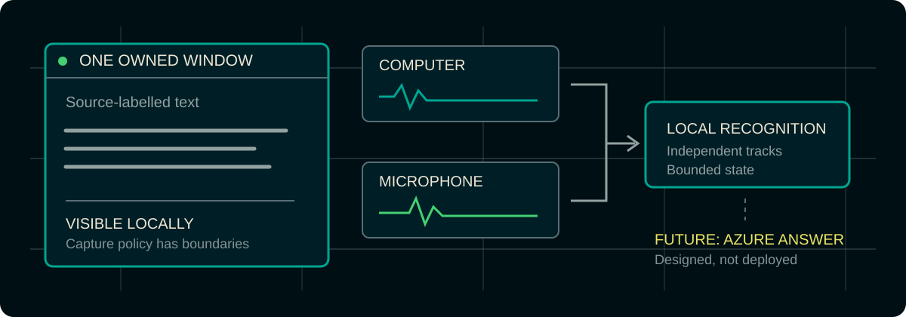
Phantom Fudge Engineering Handbook
A local-first conversation companion, from Windows surfaces to source-labelled speech
Local capture and explicit provider answers. Measured evidence is bounded. Direct Azure remains future work.
Contents
Reading map and current reality
TL;DR: Phantom Fudge is a Windows conversation companion with local speech recognition, not an invisible process and not yet an Azure question-answering product. Read this book as an explanation of boundaries: between presentation and capture, samples and text, a request and its completion, and a researched proposal and working software.
Overview: what this book is for
Use the current interface first: the illustrated workflow brings together device cards, recording status, multi-line questions, optional clarification, current action/font choices and the continuing-work cover. Older dated evidence elsewhere in the book remains historical; it does not redefine the controls in the current source.
The original problem sounded like a small notepad: show private speaker notes while presenting.
That problem expanded into a local transcription-first interface, selectable Computer/Mic/Both
inputs, and a researched proposal for explicitly sending a question to an Azure model. The
important engineering work is not drawing a rectangle. It is keeping each promise narrow enough
to implement and each state transition strong enough to preserve data. The current product
contract records those distinct requirements rather than collapsing them into a claim of
universal invisibility (docs\PRODUCT.md:6-38).
This handbook is intended to support three activities. A new contributor should be able to run and navigate the application without guessing. A senior engineer should be able to review its invariants and tradeoffs. A future book editor should be able to assemble the chapters, figures, screenshots, glossary and development journal into a coherent narrative. The source chapters are Markdown; the generated HTML/PDF is an edition of those sources, not a separate authoritative implementation.
The four labels used throughout
| Label | What it means | What it does not mean |
|---|---|---|
| Implemented | The cited source contains the behavior | The behavior works on every device/backend |
| Observed | A dated local run or owner report supports a bounded result | A universal guarantee or independent reproduction of an owner report |
| Planned | A design/TODO describes future behavior | The feature exists in the executable |
| Unqualified | Required evidence is missing or incomplete | The implementation is necessarily broken |
These distinctions are repository requirements, not editorial niceties. AGENTS.md explicitly
separates API configuration from captured pixels, technical passes from human acceptance, and
research from a qualified release (AGENTS.md:14-21). In particular, a successful
SetWindowDisplayAffinity call is not a recorder certification.
Editable Mermaid source
---
config: {"theme":"base","themeVariables":{"primaryColor":"#2d333b","primaryBorderColor":"#6d5dfc","primaryTextColor":"#e6edf3","lineColor":"#8b949e","clusterBkg":"#161b22","clusterBorder":"#30363d"}}
---
flowchart LR
accTitle: Four distinct evidence labels
accDescr: Implementation, observations, plans and unqualified scope each require different supporting evidence.
Source["Read source"] --> Implemented["Implemented claim"]
Run["Dated bounded run"] --> Observed["Observed result"]
Design["Design and TODO"] --> Planned["Planned feature"]
Gap["Missing environment or evidence"] --> Unqualified["Unqualified scope"]
Implemented --> Review["Keep labels separate"]
Observed --> Review
Planned --> Review
Unqualified --> Review
The implemented system in one page
The WPF application owns its native window and starts without an ordinary taskbar/Alt-Tab
entry. Its startup path distinguishes synthetic diagnostics from normal single-instance
operation, creates MainWindow, installs recovery callbacks, and calls ShowProtected
(src\PhantomFudge.App\App.xaml.cs:13-97). The UI is not a browser or a remote webpage.
The speech path remains local. The native adapter selects explicit audio endpoints, while
the Python server accepts one authenticated session and uses separate decoder state for
declared sources. AudioSource names Computer and Microphone; those are input identities,
not detected people (src\PhantomFudge.Core\AudioSource.cs:3-30). TranscriptBuffer preserves
source-specific partials and labelled final lines (src\PhantomFudge.Core\TranscriptBuffer.cs:6-97).
The launch script can start/reuse the local Python service, but that is not permission to
start audio capture. -NotesOnly avoids service startup, and an existing app is revealed
without rebuilding it (scripts\Run-PhantomFudge.ps1:17-41). Docker recipes are a possible later
deployment of the headless service, not the normal runtime dependency.
The October 9 correction separates provisional speed from final quality: local Vosk partials
feed bounded disjoint-span Whisper small.en finals. The expanded UI uses responsive reading
columns and opaque white/black text. Configured Agency prepares one empty session without
prompting a model; each explicit Ask gets fresh question context. These are implemented changes,
not universal recognition/latency guarantees. See measured corrections
and local logging boundaries
(src/PhantomFudge.Core/WorkspaceLayout.cs:8-42;
src/PhantomFudge.App/MainWindow.AnswerLifetime.cs:23-78;
services/transcription/accurate.py:33-129).
Editable Mermaid source
---
config: {"theme":"base","themeVariables":{"primaryColor":"#2d333b","primaryBorderColor":"#6d5dfc","primaryTextColor":"#e6edf3","lineColor":"#8b949e","clusterBkg":"#161b22","clusterBorder":"#30363d"}}
---
flowchart TB
accTitle: Implemented local pipeline and planned Azure boundary
accDescr: Explicit selected audio goes through native capture and local recognition; future selected questions may be sent on manual Ask.
Owner["Explicit owner actions"] --> UI["WPF window"]
Computer["Computer endpoint"] --> Capture["Selected WASAPI inputs"]
Mic["Microphone endpoint"] --> Capture
UI --> Capture
Capture --> Socket["Authenticated local stream"]
Socket --> ASR["Local Vosk partials and Whisper finals"]
ASR --> Text["Source-labelled transcript"]
Text --> UI
Text -->|"explicit selection"| Draft["Local question draft and snapshot"]
Draft -->|"explicit Ask"| Agency["Installed Agency or local model"]
Draft -. "manual Ask" .-> Azure["PLANNED Azure answer"]
Visual baseline
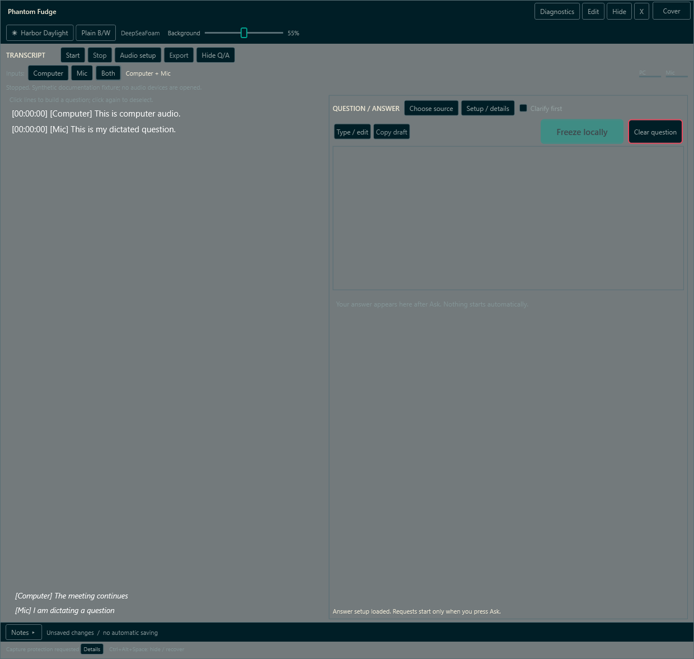
Actual WPF visual-tree render with synthetic notes, transcript and device labels. It is not a recording of a user's desktop or evidence that a meeting recorder excludes the window.
The screenshot fixture is a separate application entry path. It invokes the same window and
its rendering diagnostics, but supplies documentation-safe examples; it does not start the
speech service or open a capture endpoint (src\PhantomFudge.App\App.xaml.cs:47-59).
The accompanying screenshot manifest identifies source and image hashes.
Choose a reading path
| Reader | Suggested path | Outcome |
|---|---|---|
| New to the stack | Zero to Hero, then Setup and Testing | Understand enough C#/Python/audio terminology to run and trace a path |
| Principal reviewer | Principal Guide, Failure States, Assurance | Identify the invariants and unresolved acceptance gates |
| Desktop contributor | Windows, UI, Storage | Change a window without losing data or weakening the stated policy |
| Audio contributor | Capture, Protocol, Recognition | Follow bytes from the selected device to labelled text |
| Operator | Native Lifecycle, Distribution, Reference | Start, recover, stop and diagnose the local system |
| AI-feature implementer | Benchmark, Proposed Answer Flow, Latency and Identity | Preserve the boundary between current local ASR and future explicit Azure requests |
What to keep beside the book
The TODO index is the living acceptance map. The public journal explains why direction changed. The implementation status records bounded receipts. The book explains mechanisms and reasoning; it should not become a second, inconsistent task database.
The local draft and immutable snapshot now exist. Explicit selected segments or typed text feed
QuestionDraft; Freeze captures exact text and copied provenance without invoking any provider
(src\PhantomFudge.Core\QuestionDraft.cs:18-95, src\PhantomFudge.Core\QuestionSnapshot.cs:5-23).
Source commit and direct Azure identity remain future work. Installed-provider streaming and setup
are explained in the new Agency/local-model chapter, separately from Azure
(docs\AI-ANSWER-ARCHITECTURE.md:82-200). A local-only snapshot is not a model request; configured provider Ask crosses its labelled inference boundary.
Reading source citations
A citation such as src\PhantomFudge.Core\AudioSource.cs:3-14 names a repository file and the
line interval inspected for this edition. Prefer the named class/function when navigating a
later revision: line numbers move. The build checks path/range validity and source freshness;
it cannot prove that prose is semantically correct. Human source review remains necessary.
Checkpoint
Before moving on, explain these differences in your own words:
- A local ASR service being ready versus a microphone recording.
- An excluded window versus an undiscoverable process.
- A labelled Mic track versus speaker identification.
- A rendered documentation screenshot versus a recipient-side capture test.
- A researched Azure architecture versus an implemented Ask feature.
If any pair sounds equivalent, revisit the relevant boundary before changing the code.
References
docs\OVERVIEW.md:8-71— current product and qualification summary, moved from the visual front page.docs\PRODUCT.md:6-38— requirement and impossibility boundary.AGENTS.md:14-43— engineering distinctions and privacy rules.src\PhantomFudge.App\App.xaml.cs:13-97— real startup paths.src\PhantomFudge.Core\AudioSource.cs:3-30— source identity.src\PhantomFudge.Core\TranscriptBuffer.cs:6-97— partial/final text representation.scripts\Run-PhantomFudge.ps1:17-41— launch versus audio/service behavior.docs\AI-ANSWER-ARCHITECTURE.md:82-200— installed-provider architecture and separately planned Azure extension.
Principal engineer guide
TL;DR: The central insight is identity and completion must survive every asynchronous boundary. Source identity survives audio transport, request identity will survive future model streams, and completion means drained ownership rather than a convenient boolean. Presentation privacy is a separate, bounded contract; it cannot repair lifecycle mistakes.
Overview: the one idea
It is tempting to describe the application as "audio in, text out, hidden window." That description omits the information required to make it dependable. Computer and Mic can produce interleaved packets; recognizers revise hypotheses; Stop clears visible running state before all final text has drained; a hidden window still owns data; and an excluded HWND remains an ordinary operating-system object. Each boundary needs explicit identity and completion semantics.
The source enum assigns different wire identities to Computer and Microphone
(src\PhantomFudge.Core\AudioSource.cs:3-22). The transcript store holds separate partials,
but final IDs are session-global (src\PhantomFudge.Core\TranscriptBuffer.cs:9-18,
src\PhantomFudge.Core\TranscriptBuffer.cs:48-72). The native adapter separately protects its lifecycle and invalidates queued starts
when Stop is requested (src\PhantomFudge.App\Audio\LoopbackTranscriber.cs:72-156,186-193).
These are concrete mechanisms, not an assumed generic event-driven architecture.
The insight in a different language
This Python-like pseudocode explains the C# contract; it is not a production implementation:
def on_packet(source, pcm):
require(source in selected_sources)
require(pcm_is_valid(pcm))
if not queue.try_append(source, pcm):
fault_entire_session("backpressure") # do not silently lose a question
async def stop():
state = STOPPING
cancel_pending_start()
await release_selected_inputs()
await drain_accepted_audio_and_receive_source_finals()
state = STOPPED
def begin_next_session():
require(state == STOPPED) # not merely is_running == False
preserve_unfinished_text()
reset_session_global_final_id()
The application implements bounded queues and source-aware frames in TranscriptionSocket;
the server validates each track and finalizes each declared decoder before its stopped event
(src\PhantomFudge.App\Audio\TranscriptionSocket.cs:11-71,
services\transcription\server.py:290-505). The pseudocode's "drain" is therefore a chain
of ownership transitions, not a delay inserted to make a race less likely.
Architecture at review depth
Editable Mermaid source
---
config: {"theme":"base","themeVariables":{"primaryColor":"#2d333b","primaryBorderColor":"#6d5dfc","primaryTextColor":"#e6edf3","lineColor":"#8b949e","clusterBkg":"#161b22","clusterBorder":"#30363d"}}
---
flowchart TB
accTitle: Runtime ownership across two local processes
accDescr: The Windows process owns interaction and audio while the authenticated Python process owns independent source decoders.
subgraph Desktop["Windows process"]
UI["MainWindow and explicit actions"]
Policy["Window protection and focus policy"]
Native["Selected WASAPI ownership"]
Transport["Bounded source-aware transport"]
Buffer["Transcript and note state"]
end
subgraph Local["Local Python process"]
Admission["Authenticated single-session admission"]
Worker["Bounded provisional worker per source"]
Sources["Independent source recognizers"]
Finalizer["Shared serial Whisper finalizer"]
end
UI --> Policy
UI --> Native --> Transport --> Admission --> Worker --> Sources
Sources --> Transport --> Buffer --> UI
Sources --> Finalizer --> Transport
The separation is intentionally modest. C# is chosen for the native desktop and input
integration; Python hosts the recognizer and its protocol. The model does not become more
accurate because Python calls it, nor does C# imply Windows' built-in speech engine. The measured
engine comparison is explicit about that distinction (docs\SPEECH-BENCHMARK.md:15-40).
The local process boundary is useful for dependency isolation and future packaging, but it adds
protocol, authentication, backpressure and service-lifecycle work. The manager does not identify
ownership by a PID alone: it authenticates runtime metadata and checks the saved instance ID
before reuse or shutdown (services\transcription\manage.py:155-200).
Domain model: implemented concepts, not a database
Editable Mermaid source
---
config: {"theme":"base","themeVariables":{"primaryColor":"#2d333b","primaryBorderColor":"#6d5dfc","primaryTextColor":"#e6edf3","lineColor":"#8b949e","clusterBkg":"#161b22","clusterBorder":"#30363d"}}
---
erDiagram
accTitle: Conceptual domain ownership
accDescr: Capture sessions own selected source inputs and a local stream, while the window presents transcript state and edits notes.
CAPTURE_SESSION ||--|{ SELECTED_INPUT : owns
SELECTED_INPUT ||--|| AUDIO_SOURCE : identifies
CAPTURE_SESSION ||--|| LOCAL_STREAM : transports
LOCAL_STREAM ||--|{ SOURCE_DECODER : feeds
SOURCE_DECODER ||--o{ TRANSCRIPT_EVENT : produces
TRANSCRIPT_BUFFER ||--o{ TRANSCRIPT_EVENT : applies
WINDOW ||--|| TRANSCRIPT_BUFFER : presents
WINDOW ||--|| NOTE_DOCUMENT : edits
NATIVE_SERVICE ||--o| CAPTURE_SESSION : admits
This ER diagram is a conceptual ownership map, not a claim that SQL tables exist. Input,
Session, TranscriptEvent, SourceState and TranscriptBuffer are the source concepts;
the note document's identity is currently maintained by MainWindow plus NoteFileStore
rather than a separate persistent entity class. No invented repository abstraction is needed
to discuss the boundary (src\PhantomFudge.App\Audio\TranscriptEvent.cs:1-15,
src\PhantomFudge.Core\NoteFileStore.cs:6-15).
The strategic tradeoff table
| Decision | Benefit | Cost or boundary |
|---|---|---|
| One layered WPF HWND | One main capture-policy surface and native controls | Auxiliary OS/auth/file surfaces still need separate reasoning |
| Non-activating Present default | Reduces unnecessary foreground changes | Editing deliberately requires a different interaction mode |
| Arrow cursor policy | Removes the app's I-beam shape cue | Cannot dictate another recorder's cursor stream |
| Separate Computer/Mic tracks | Source labels and independent recognizer state | More lifecycle/queue accounting; no automatic echo cancellation |
| Fail on sustained backlog | Avoids silently dropping words while claiming completeness | Session stops instead of degrading invisibly |
| Independent source workers and serial accurate finalizer | Bound provisional work separately from expensive disjoint-span refinement | Sources still share CPU; this is not sample-synchronous inference or guaranteed accuracy |
| Explicit local saves | Owner controls persistence | Unsaved content can be lost on a crash; no vault or recovery guarantee |
| Native Python default | No container prerequisite for a desktop utility | Interpreter/venv/model setup remains an operational responsibility |
| Proposed direct Azure text call | Smallest initial cloud path for manual Q&A | Identity, data policy, latency and deployment remain unimplemented |
These decisions come from the implementation and current requirements, not a universal design
pattern checklist. WindowProtection.Configure requests affinity on an owned HWND and validates
readback when available (src\PhantomFudge.App\Native\WindowProtection.cs:19-48).
NoteFileStore bounds UTF-8 data and checks prior fingerprints around replacement; it is not a
filesystem transaction manager or protection against every race
(src\PhantomFudge.Core\NoteFileStore.cs:16-91).
Review the dangerous boundaries first
Running is not completion
The native adapter can cease reporting Running while cleanup/final delivery continues. The UI
must therefore block Start and destructive transcript actions during Stopping, not reset the
final-ID counter as soon as a boolean flips. Otherwise an old final can arrive with a large ID
after a new session starts, and a valid new final ID1 is rejected as a duplicate. The buffer's
global-ID rule is correct only when its session boundary is correct
(src\PhantomFudge.Core\TranscriptBuffer.cs:23-38,48-57).
Input identity is not speaker identity
Mic may capture the owner's voice, room sound, or speaker echo. Computer may include all output
on a selected endpoint, not only the meeting. The correct labels are source names. Turning those
labels into verified people would be a new, unsupported claim. The public contract states this
boundary explicitly (docs\DUAL-SOURCE-AUDIO.md:8-26).
Privacy is not one boolean
Window exclusion, source authorization, local token checks, no automatic cloud upload, and
unsaved-data behavior answer different questions. A protected window can still coexist with an
OS microphone indicator. A successful local GDI fixture does not establish every Teams/Zoom/Meet/
OBS path. The qualification matrix keeps these observations separate
(docs\QUALIFICATION.md:1-26).
A plan is not a runtime component
The October 9 hybrid now implements the source-worker/finalizer separation, with selected verified
Whisper small.en CPU-int8 finals and no fallback on missing models
(services/transcription/accurate.py:33-129; services/transcription/configuration.py:8-34,60-69).
Configured Agency is also operational: it prepares an empty session without inference and sends
one exact question only after Ask. Local preparation/diagnostic retention do not make hosted
inference offline (src/PhantomFudge.App/MainWindow.AnswerLifetime.cs:23-78;
provider setup).
Azure Ask currently exists in design documents and TODOs. A principal-level diagram should not
quietly insert an operational cloud box into the implemented path. The planned architecture
requires immutable question snapshots, source-scoped commit and request-bound streaming; none
is implied by the current text buffer (docs\AI-ANSWER-ARCHITECTURE.md:82-200).
Where to go deep
Start with the native lifecycle and transport when reviewing concurrency. Read the server's source state and worker loop when reviewing completeness. Read UI stop coordination and buffer mutation together when reviewing user data preservation. Read the capture policy beside its qualifications—not alone—when reviewing privacy language.
For a product decision, ask whether it changes data origin, lifetime, visibility, authority or completion. A new color mostly changes presentation. A new input changes all five. An Azure answer provider additionally crosses an egress and identity boundary.
Review exercise
Consider a user who selects Both, starts capture, hides the window during a slow final decode, then immediately asks to start again. Draw the ownership/state sequence. Identify where the native capture, socket, decoder, UI and buffer can legitimately disagree about "running." The correct design does not require those components to share one boolean; it requires that the coordinator not start a new logical session until the old completion boundary is satisfied.
References
src\PhantomFudge.Core\AudioSource.cs:3-30— source identity.src\PhantomFudge.Core\TranscriptBuffer.cs:6-97— source partials and session-global IDs.src\PhantomFudge.Core\NoteFileStore.cs:6-91— bounded local file behavior.src\PhantomFudge.App\Audio\LoopbackTranscriber.cs:72-193— native lifecycle ownership.src\PhantomFudge.App\Audio\TranscriptionSocket.cs:11-71— transport state/bounds.services\transcription\server.py:290-505— source queue and completion.services\transcription\manage.py:155-200— authenticated process ownership.docs\SPEECH-BENCHMARK.md:15-40— engines versus host languages.
Zero-to-hero learning path
TL;DR: Learn enough of each technology to trace one real packet and one real user action. Do not try to master all of Windows, C#, Python, networking and machine learning before opening the project. The learning path is a sequence of explanations and bounded exercises.
Overview: two languages, one product
The native project targets net10.0-windows, uses WPF and references the Core project plus
NAudio (src\PhantomFudge.App\PhantomFudge.App.csproj:1-16). The Core project has no WPF
dependency, which makes text/identity policies easier to test independently
(src\PhantomFudge.Core\PhantomFudge.Core.csproj:1-5). Python hosts the local recognition
service, with dependencies explicitly pinned (services\transcription\requirements.txt:1-20).
This is a technology boundary, not a competition between language quality. C# controls the Windows integration; Vosk's native model does recognition through Python bindings. The benchmark compares actual recognizers, not whether braces or indentation are better.
Part I: foundations in a useful order
| Concept | Learn first | Project anchor |
|---|---|---|
| C# types and records | Values, nullable references, enums, immutable messages | AudioSource and TranscriptEvent |
| WPF | XAML, dependency properties, visual tree, routed events, dispatcher | App.xaml and MainWindow |
| Native interop | HWND, P/Invoke, return values, last-error timing | WindowProtection.Configure |
| PCM audio | Sample rate, channels, bit depth, bytes, duration | v2 protocol |
| Asynchrony | Tasks, cancellation, queues, callbacks and ownership | native adapter and socket |
| Python asyncio | Event loop versus CPU worker; await versus blocking | server worker loop |
| Recognition | Partial versus final, endpoint versus explicit flush | Vosk wrapper |
| Verification | Unit, protocol, synthetic integration, hardware and recipient evidence | separate test/qualification layers |
AudioSource is a small, concrete introduction to strong types: Computer and Microphone have
stable byte values and separate wire/display names. An unknown enum value throws instead of
silently becoming a source (src\PhantomFudge.Core\AudioSource.cs:3-30).
# Teaching pseudocode: an enum carries more meaning than an unexplained integer.
source = AudioSource.MICROPHONE
packet = AudioPacket(source=source, pcm=bytes_from_that_input)
In Python a dictionary can express the same idea, but the compiler cannot prove that every caller supplied the right key or type. That is why the wire protocol validates fields even when the C# side has strong types: a process boundary can receive malformed bytes.
Editable Mermaid source
---
config: {"theme":"base","themeVariables":{"primaryColor":"#2d333b","primaryBorderColor":"#6d5dfc","primaryTextColor":"#e6edf3","lineColor":"#8b949e","clusterBkg":"#161b22","clusterBorder":"#30363d"}}
---
flowchart LR
accTitle: A progressive learning path
accDescr: Types, WPF and PCM lead into state ownership, a versioned stream and practical system understanding.
Types["Types and values"] --> UI["WPF and HWND"]
Types --> Audio["PCM and source identity"]
UI --> State["State and ownership"]
Audio --> State
State --> Wire["Versioned stream"]
Wire --> ASR["Recognizer semantics"]
ASR --> Evidence["Evidence and qualification"]
Part II: trace two paths
Path A: opening the application
Follow Run-PhantomFudge.ps1. It chooses a source-build or packaged executable, detects an
existing instance, optionally builds, and starts the local service unless NotesOnly was chosen.
It passes the token through the child environment rather than printing it
(scripts\Run-PhantomFudge.ps1:8-57).
Then follow App.OnStartup: a normal launch establishes per-user ownership and either reveals
the existing process or constructs a new protected window
(src\PhantomFudge.App\App.xaml.cs:62-97). This explains why double-clicking an updated EXE
while an old instance is running does not necessarily replace the old UI.
Path B: one utterance
An explicit Start selects inputs. PCM bytes are tagged with their source, sent over the
local socket, decoded independently, and returned as partial/final events. The buffer must
clear only the partial corresponding to a final's source. Do not read "partial" as a promise
that every character is settled (src\PhantomFudge.Core\TranscriptBuffer.cs:14-19,
src\PhantomFudge.Core\TranscriptBuffer.cs:41-72; docs\DUAL-SOURCE-AUDIO.md:28-84).
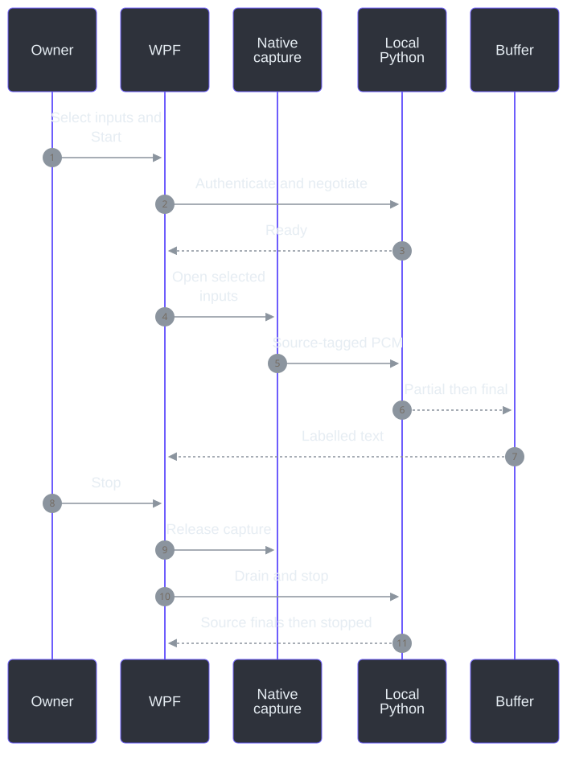
Editable Mermaid source
---
config: {"theme":"base","themeVariables":{"primaryColor":"#2d333b","primaryBorderColor":"#6d5dfc","primaryTextColor":"#e6edf3","lineColor":"#8b949e","clusterBkg":"#161b22","clusterBorder":"#30363d"}}
---
sequenceDiagram
accTitle: Explicit capture and completion
accDescr: The owner starts capture through WPF, native input sends audio to local Python, and stopping must settle the pipeline.
autonumber
participant Owner
participant UI as WPF
participant Native as Native capture
participant Service as Local Python
participant Buffer
Owner->>UI: Select inputs and Start
UI->>Service: Authenticate and negotiate
Service-->>UI: Ready
UI->>Native: Open selected inputs
Native->>Service: Source-tagged PCM
Service-->>Buffer: Partial then final
Buffer-->>UI: Labelled text
Owner->>UI: Stop
UI->>Native: Release capture
UI->>Service: Drain and stop
Service-->>UI: Source finals then stopped
Part III: learn the byte arithmetic
The wire format is16,000 samples per second, one channel,16 bits per sample. Divide bits by
eight to get bytes:16,000 x1 x2 =32,000 PCM bytes per second. A100ms payload is3,200 bytes.
V2 adds one source byte per WebSocket message, not per audio sample. Thus a3,200-byte PCM
payload becomes a3,201-byte message; it is not a WAV file and has no WAV header
(docs\DUAL-SOURCE-AUDIO.md:37-53).
This arithmetic helps diagnose errors. An odd-length PCM payload is invalid because a16-bit sample needs two bytes. A source prefix belongs outside the PCM passed to the recognizer. Counting that prefix as sound would shift every subsequent sample boundary.
The phrase "two channels" can be misleading here. The application uses two independent mono source tracks, not one interleaved stereo stream. Each recognizer gets mono audio; the protocol carries source identity separately.
Part IV: asynchronous thinking
Compare a synchronous function with a lifecycle:
result = recognize(audio) # one call; ownership is simple
start_requested = True
await service_ready()
open_inputs()
# callbacks and network events now arrive independently
await stop_requested()
await all_inputs_released()
await accepted_audio_drained()
await final_text_received()
An await does not mean "nothing else can happen." The WPF dispatcher can process another
user action while an operation awaits I/O. Conversely, doing CPU recognition on an event loop
can prevent other requests from being handled. The server therefore uses a bounded worker
for native recognition, while native startup is kept away from a blocked WPF dispatcher
(services\transcription\server.py:115-181,
src\PhantomFudge.App\Audio\LoopbackTranscriber.cs:110-128).
Three questions prevent many mistakes:
- Who owns this resource while the operation is incomplete?
- What identifies this result as belonging to the current source/session?
- What event proves completion, rather than merely intent to stop?
Part V: safe first exercises
Exercise 1: source labels, no devices
Read SourceTranscriptTests. Explain why a Computer final must leave a Mic partial visible.
Then sketch a table of two partials, one Computer final, and one Mic final. This needs no
microphone or backend (tests\PhantomFudge.Core.Tests\SourceTranscriptTests.cs:1-80).
Exercise 2: a rejected save
Read a test that changes a file outside the app, then attempts to save with an old fingerprint.
Identify which version should survive. Do not use a real note as the experiment; the test creates
an isolated directory (tests\PhantomFudge.Core.Tests\NoteFileStoreTests.cs:1-110).
Exercise 3: protocol without hardware
Run the native synthetic harness only after reading its entry mode. It uses fake transport/input
objects for its normal test groups. The separate playback command is deliberately not part of
the default suite (tests\PhantomFudge.Audio.Tests\Program.cs:18-71).
Exercise 4: a documentation-only screenshot
The documentation command renders actual WPF controls with synthetic text/device labels. It is
not a Snipping Tool workaround for capturing someone else's private window
(src\PhantomFudge.App\App.xaml.cs:54-59,
scripts\Export-HandbookScreenshots.ps1:1-95).
How to avoid learning the wrong lesson
Do not conclude that a successful test suite proves hardware support, that the fastest batch recognizer has the lowest live partial latency, or that a private window is a security boundary. Those are different experiments. The repository deliberately leaves broader acceptance work open.
The glossary provides more than forty terms. Use it when a word becomes a blocker, then return to the code path. A good first contribution is a small test/documentation improvement that follows one real invariant end to end.
References
src\PhantomFudge.App\PhantomFudge.App.csproj:1-16— native target and dependencies.src\PhantomFudge.Core\PhantomFudge.Core.csproj:1-5— platform-independent policy layer.src\PhantomFudge.Core\AudioSource.cs:3-30— typed input identity.scripts\Run-PhantomFudge.ps1:8-57— launch/reuse/token boundary.src\PhantomFudge.App\App.xaml.cs:13-97— entry paths.services\transcription\requirements.txt:1-20— Python dependency baseline.tests\PhantomFudge.Audio.Tests\Program.cs:18-71— synthetic test entry.docs\DUAL-SOURCE-AUDIO.md:28-84— byte contract.
Install, update and remove Phantom Fudge
Installer edition: unsigned Windows 11 x64 preview. Downloads and availability are listed at v0.2.0-preview.1. Candidate checks provide bounded current-host evidence, not clean-VM qualification or universal compatibility. The repository and its published releases are public. Public availability does not establish signing or broaden the qualification evidence. See release evidence and workstream58.
The DLL-qualified oneDNN runtime has passed the full offline rebuild with dependency audits, real synthetic-PCM inference, Unicode-path loading and natural process exit. There are 85 focused runtime tests and 55 native tests passing. The earlier Ruy exit hang and Vosk path failure are historical; their old stages remain rejected. The complete candidate3 build also passed the enforced PE audit, loaded-DLL and real-PCM/clean-exit gates. Lifecycle3 used identical functional runtime bytes; candidate3 added license/provenance files. Release-asset identities belong to the versioned download.
| Scope | Current evidence | Qualification boundary |
|---|---|---|
| Startup | 55 helper tests and 10 exact-EXE self-checks pass | Includes guarded delayed app startup; interactive Close and installed speech remain unqualified |
| Desktop | Packaged UI passes prior regression groups and all 38 keyboard checks | Synthetic UI only; no audio capture or model requests |
| Setup | Lifecycle3 passes 11 checks against 3,682 inventoried files | Current host, random AppId/path, no shortcuts, simulated older version; not a genuine old-binary or clean-VM test |
| Speech | 85 focused tests; real hybrid/VAD/forced decoder execution, Unicode relocation and clean exit pass | Generated PCM only; no actual capture, service, provider request or new performance qualification |
| DLLs | 92 speech PE files and five loaded bundled CRT/OpenMP paths; 861 app/launcher PE files inspected separately | Not a clean VM or app/launcher loaded-DLL test |
| Assets | Consult the versioned release for availability and exact checksums | Component checks alone do not attest an arbitrary downloaded file |
The recipe creates the same gate in both Setup and Uninstall initialization; the native launcher checks it before ordinary/notes-only startup. Detailed receipts and remaining acceptance gates are kept in release evidence, not in the installation procedure. (tools/Installer/PhantomFudge.iss:72-76,150-160) (src/PhantomFudge.Launcher/Program.cs:47-78) (src/PhantomFudge.Launcher/LauncherContract.cs:152-165) (scripts/Build-Installer.ps1:30-44,76-114) (scripts/Test-Installer.ps1:15-18,31-84,96-104)
Before downloading
The installer removes the developer-tool setup burden, not the preview's qualification limits.
It targets Windows 11 x64 only. Windows 10, Windows on ARM, macOS and Linux are unsupported
for this package. A compatible OS does not establish performance or device compatibility on every
computer; no universal CPU, memory, microphone or capture guarantee is claimed. The release
configuration pins win-x64, minimum Windows build22000, version 0.2.0-preview.1 and Windows
file version 0.2.0.1. (tools/Installer/release.json:1-8)
| Included by the installer | Not installed or configured for you |
|---|---|
| Self-contained .NET desktop app and native Start-menu launcher | .NET SDK, PowerShell7 or a system Python prerequisite |
| Private Python3.13.14 runtime, speech-service files and verified English Vosk/Whisper small.en models | Docker, GPU drivers or universal hardware support |
| Bundled dependency notices and model provenance | An answer-provider CLI, provider model, account, sign-in or a project license |
Both executables are published self-contained; speech preparation belongs to the release build, not a first-launch package restore. The launcher uses fixed installed paths and offline model environment settings. No Python/PowerShell installation step belongs in the installed-user procedure. The release build requires a separate generated-PCM inference/clean-exit gate; import and metadata checks alone are insufficient. (scripts/Build-Installer.ps1:30-44) (src/PhantomFudge.Launcher/LauncherContract.cs:56-105) (src/PhantomFudge.Launcher/ChildProcesses.cs:48-105) (tools/Installer/runtime-lock.json:1-11)
This is an unsigned prerelease, not a qualified release. Windows SmartScreen or organizational policy may warn or block it. Check the origin and checksum; do not disable security controls or bypass your organization's policy. A checksum identifies bytes; it is not a signing identity or evidence of capture exclusion. (scripts/Build-Installer.ps1:79-114)
Install and open
Once the release evidence confirms that assets are available:
-
Open the public versioned release above. Download
PhantomFudge-0.2.0-preview.1-win-x64-Setup.exeandSHA256SUMS.txt. -
Compare the EXE's SHA-256 with its exact filename in the checksum file. Windows PowerShell can perform this optional check; PowerShell7 is not required to install or run the app:
Get-FileHash .\PhantomFudge-0.2.0-preview.1-win-x64-Setup.exe -Algorithm SHA256 -
Run Setup as your normal Windows user. The default location is
%LOCALAPPDATA%\Programs\PhantomFudge. Setup is per-user and requests no administrator rights. A Start-menu shortcut is created; the desktop shortcut is optional. -
Finish and close Setup, then open Phantom Fudge from Start. Setup never launches the app. There is no automatic startup registration or scheduled task.
-
Wait for the local service to become ready, choose the intended Computer/Mic/Both devices, then press Start inside the app when you actually want transcription.
The file names/checksum are build outputs; the installation location, shortcuts and absence of post-install launch come from the Inno recipe. Inno Setup6.7.3 is a build tool, not an end-user prerequisite. The installer does not add process concealment or change the app's taskbar behavior. (scripts/Build-Installer.ps1:100-114) (tools/Installer/PhantomFudge.iss:14-76) (tools/Installer/release.json:6-7)
Setup and launcher status/error windows are ordinary visible Windows UI. They do not inherit the notes window's capture-exclusion request. Install, update and launch before sharing if that status UI should not appear to an audience. They contain generic startup messages, not your notes or transcripts. (src/PhantomFudge.Launcher/LauncherWindow.cs:18-57)
Opening the app is not starting capture
Normal and notes-only launch first check the installer-maintenance gate. If present, the launcher records “operation busy” and exits70 without opening a window or starting a child; wait for Setup to finish, then retry. Otherwise it reveals an existing same-user app before touching the speech runtime. A fresh launch acquires its startup guard and checks the installer gate again, so a gate appearing during guard acquisition is not missed. Normal launch then validates files, reads or creates the private token, prepares the service and opens the app; no audio-start command is sent. (src/PhantomFudge.Launcher/Program.cs:47-78,127-213) (src/PhantomFudge.Launcher/LauncherContract.cs:152-165) (src/PhantomFudge.Launcher/LauncherStatus.cs:15,34,43-61) (src/PhantomFudge.Launcher/InstanceCoordination.cs:12-57) (src/PhantomFudge.Launcher/LocalToken.cs:12-39)
The launcher keeps its startup mutex until the app's main-instance mutex appears or the exact child is proven to have exited. After30 seconds it reports AppStartPending (76), not success, and continues watching. Closing that pending progress window hides it; it does not cancel the child or release the update guard. Even early dispatcher shutdown retains the guard while ownership is uncertain. No timeout force-kills the app. (src/PhantomFudge.Launcher/ChildProcesses.cs:12-42) (src/PhantomFudge.Launcher/Program.cs:108-118,186-227) (src/PhantomFudge.Launcher/LauncherStatus.cs:39)
Editable Mermaid source
---
config: {"theme":"base","themeVariables":{"primaryColor":"#2d333b","primaryBorderColor":"#6d5dfc","primaryTextColor":"#e6edf3","lineColor":"#8b949e","clusterBkg":"#161b22","clusterBorder":"#30363d"}}
---
flowchart TB
accTitle: Installation and capture are separate actions
accDescr: Setup installs files but never launches the app. After closing Setup, a deliberate launch checks coordination guards and prepares the idle service. Recording requires a separate explicit Start.
Setup["Run per-user Setup"] --> Finish["Finish and close Setup"]
Finish --> Launch["Open from Start"]
Launch --> Ready["Launcher checks guards and prepares idle service"]
Ready --> App["App ready: not recording"]
App --> Capture["Choose devices and explicitly Start"]
classDef stage fill:#2d333b,stroke:#6d5dfc,color:#e6edf3
class Setup,Finish,Launch,Ready,App,Capture stage
linkStyle default stroke:#8b949e
For notes without service startup, use the installed launcher's --notes-only argument:
"%LOCALAPPDATA%\Programs\PhantomFudge\launcher\PhantomFudge.Launcher.exe" --notes-only
This command is suitable for a shortcut's Target; it is not a command to paste into PowerShell unchanged. A speech-start failure also offers Open notes without transcription. Notes-only does not stop an already-running service, remove the audio controls or disable configured answer providers. It is not a privacy sandbox. (src/PhantomFudge.Launcher/LauncherContract.cs:14-23) (src/PhantomFudge.Launcher/Program.cs:153-213) (src/PhantomFudge.Launcher/LauncherWindow.cs:37-48,70-77)
On a new profile, answers remain Snapshot only until you explicitly configure an external
provider. Existing %LOCALAPPDATA%\PhantomFudge\answers.json and keyboard.json remain in use;
an upgrade does not reset your previous provider choice or keyboard setting. The installer
does not bundle a provider or perform login. Read provider boundaries
before enabling one; installed Agency/Copilot can use cloud-hosted models.
(src/PhantomFudge.Core/Answers/AnswerConfiguration.cs:8-21)
(src/PhantomFudge.Core/KeyboardShortcutConfiguration.cs:31-39)
(scripts/Build-Installer.ps1:30-54,56-74)
Update or repair
- Save notes, export required transcripts, and copy any question/answer text you need.
- Stop transcription and close the app with X. Hide and Cover are not Exit.
- Run the same installer to repair, or a newer preview installer to update the same per-user installation. The stable AppId keeps the installation identity.
- Reopen from Start after Setup completes. Select devices and press Start deliberately again.
Setup rejects a downgrade and refuses an unrecognized, nonempty destination. The repair/update
recipe uses a fresh maintenance helper extracted from Setup, rather than depending on a
potentially damaged installed launcher. A numeric version fallback is stored under the per-user
HKCU\Software\PhantomFudge\Installer\<AppId> key as WindowsVersion; if neither that nor
app-version.txt is valid, Setup refuses. Lifecycle3 passed same-version and damaged-launcher/version
repair against candidate2. Its upgrade case changes a version record, not a genuine older binary.
(tools/Installer/PhantomFudge.iss:51-52,107-148)
(src/PhantomFudge.Launcher/Program.cs:50-58,94-100)
(scripts/Test-Installer.ps1:61-74)
An open app or another launcher operation blocks maintenance instead of being force-closed. For an installation with runtime ownership data, the native maintenance operation takes the shared lifecycle lock and checks the saved receipt before an authenticated loopback shutdown. Only the owned idle instance may be stopped. A recorded process confirmed dead or replaced by a reused PID can have its unchanged receipt removed; live or uncertain ownership is not permission to kill. This native operation does not depend on old Python binaries or a valid compact manifest, so repair can replace them. The installation marker is still required. The passing lifecycle fixture does not start the app or speech service; installed speech startup is a separate qualification scope. (src/PhantomFudge.Launcher/Program.cs:94-100) (src/PhantomFudge.Launcher/LauncherContract.cs:87-105) (src/PhantomFudge.Launcher/MaintenanceOperation.cs:48-118) (src/PhantomFudge.Launcher/OwnedServiceClient.cs:20-58)
A retained token without a receipt is normal after a successful stop. Maintenance validates it locally and checks that the loopback port is unused without sending credentials. An occupied or uncertain port, or a receipt missing its token, blocks maintenance; deleting ownership files to bypass that refusal is not a repair procedure. An untouched installation with neither file does not probe another workspace's listener. (src/PhantomFudge.Launcher/MaintenanceOperation.cs:52-75,121-134) (tests/PhantomFudge.Core.Tests/InstalledMaintenanceTests.cs:31-74)
Program directories are installer-managed, not a place to save notes, exports, personal scripts or custom models. Update replaces managed application/runtime directories; reinstalling is not a user-data backup strategy. Keep saved content outside the install folder. (tools/Installer/PhantomFudge.iss:47-60)
Remove the application
After saving/exporting, stopping transcription and closing with X, open Windows Settings → Apps → Installed apps → Phantom Fudge → Uninstall. Uninstall invokes the installed launcher's maintenance guard. If ownership or shutdown is uncertain, it stops with an error rather than killing a process. Missing launcher files may require repair using the same installer first. (tools/Installer/PhantomFudge.iss:39-40,150-161) (src/PhantomFudge.Launcher/LauncherStatus.cs:29-39)
| Location | Ownership | Normal update/uninstall policy |
|---|---|---|
%LOCALAPPDATA%\Programs\PhantomFudge\app, launcher, runtime\python, services\transcription, models, licenses, docs |
Installed binaries, speech weights and shipped documentation | Update maintains program files; uninstall removes the installed payload and shortcuts |
%LOCALAPPDATA%\PhantomFudge\InstalledRuntime\.local |
Installed speech token, ownership/configuration data and local runtime diagnostics | Outside the install tree; retained for reinstall |
%LOCALAPPDATA%\PhantomFudge\InstalledRuntime\.local\models |
Explicitly provisioned per-user model files | Retained; separate from installer-managed bundled weights |
%LOCALAPPDATA%\PhantomFudge settings and diagnostics |
Existing app answer/keyboard settings, diagnostics and launcher status | Retained; not reset or silently purged |
| Notes and exports saved outside the install folder | Files you selected | Retained |
The separation is intentional: removing software must not silently erase the work or preferences you may want on reinstall. It also means uninstall is not a privacy wipe. If you want a full data reset, first understand each retained folder, preserve required files, stop its owned runtime and remove only the specific data you intend to discard. Do not recursively delete the whole profile or unrelated provider profiles. No blanket data-purge command is provided. (src/PhantomFudge.Launcher/LauncherContract.cs:56-84) (src/PhantomFudge.Launcher/LauncherStatus.cs:43-61) (tools/Installer/PhantomFudge.iss:47-65,150-161)
The runtime checks for a per-user model with the pinned directory name first, then uses the bundled model only when that user path is absent. The selected files must pass the same pinned manifest checks; a user override is not permission to load arbitrary weights. Explicit provisioning writes only to the user model directory, not the installation. This keeps deliberately provisioned models outside directories that Setup replaces. (tools/Installer/runtime-contract.json:7-12) (services/transcription/tests/test_installed_runtime.py:74-91)
Editable Mermaid source
---
config: {"theme":"base","themeVariables":{"primaryColor":"#2d333b","primaryBorderColor":"#6d5dfc","primaryTextColor":"#e6edf3","lineColor":"#8b949e","clusterBkg":"#161b22","clusterBorder":"#30363d"}}
---
flowchart TB
accTitle: Maintenance preserves ownership and user data
accDescr: Update or uninstall requires a closed app and a safe installed-runtime maintenance result. Program files change only after the guard succeeds; external settings, diagnostics and saved documents remain.
Close["Save, stop capture, close app"] --> Guard["Setup or Uninstall holds maintenance guard"]
Guard --> Safe{"Ownership and idle checks pass?"}
Safe -->|No| Refuse["Refuse without force-closing"]
Safe -->|Yes| Change["Replace or remove program files"]
Change --> Retain["Keep external notes, exports and settings"]
classDef stage fill:#2d333b,stroke:#6d5dfc,color:#e6edf3
class Close,Guard,Safe,Refuse,Change,Retain stage
linkStyle default stroke:#8b949e
If startup or maintenance fails
| Symptom | Next safe action |
|---|---|
| Release link is unavailable | Confirm the exact versioned release URL and listed asset availability; do not substitute an old ZIP |
| Windows blocks the unsigned EXE | Follow your organization's review process; do not disable SmartScreen or other controls |
| Existing window is hidden | Relaunch from Start or use Ctrl+Alt+Space; save and close it before an update |
| Local speech cannot start | Use the notes-only option if offered; inspect local status, not a real-audio test |
| AppStartPending (76) after30seconds | The launcher is still watching the child; Close hides progress and updates remain guarded. It is not a success or permission to force-close a process |
| Busy or uncertain runtime ownership | Stop capture in its owning app and retry after closing it; do not kill Python by name or delete a receipt just to bypass the guard |
| Installed files are missing | Repair with the same-version installer; retain user data and report a repair that cannot pass maintenance |
| Another workspace uses port8765 | Stop that service through its own normal workflow, or use notes-only; the installer must not adopt or kill it |
After a reboot, try a normal launch first. The manager automatically clears a stale ownership receipt when it can prove the old process is gone, then resumes normal startup checks. A retained PID without a creation timestamp can be cleared only when that PID is confirmed absent. Live or uninspectable processes remain protected; reboot alone does not require reinstalling or manually deleting a token/receipt. (services/transcription/tests/test_installed_runtime.py:129-198)
The launcher's bounded status is %LOCALAPPDATA%\PhantomFudge\launcher-status.json. It contains a
status code, generic message and time, not token values or captured text. Startup timeouts preserve
uncertain process ownership rather than force-killing the child.
(src/PhantomFudge.Launcher/LauncherStatus.cs:25-61)
(src/PhantomFudge.Launcher/ChildProcesses.cs:107-123)
Source, portable and licensing boundaries
The existing source-development workflow still uses its own SDK, PowerShell,
Python environment and explicit model provisioning. The older timestamped ZIPs are historical
and lack later UI features. The published win-x64-Portable.zip from this build is a different,
self-contained payload: keep all its directories together and use launcher\PhantomFudge.Launcher.exe;
it does not register a Windows Apps uninstall entry. Do not mix files from these workflows.
(scripts/Build-Installer.ps1:30-44,105-108)
(src/PhantomFudge.Launcher/LauncherContract.cs:69-84)
Third-party licenses/notices travel with the exact runtime payload. They do not choose a license for Phantom Fudge; the owner has not selected one. Preserve the included license files. See third-party notices and the model provenance manifests. (services/transcription/model.json:2-10) (services/transcription/whisper-models.json:1-5,17-26)
The final runtime is a distinct CPU-only build, not the unchanged development stack.
Its application-private faster-whisper 1.2.1+phantomfudge1 removes encoded-file
decoding/PyAV while retaining the in-memory PCM array path in source.
CTranslate2 4.6.0+phantomfudge2 uses oneDNN3.1.1 and Microsoft compiler OpenMP (vcomp140),
without CUDA/cuDNN or proprietary Intel OpenMP. Vosk's package is unmodified: the service adapter
loads a non-ASCII Windows model path through a locked, temporary wide-API working-directory change.
The final handoff reports real synthetic inference and natural exit, including Unicode relocation.
No clean-VM qualification is claimed.
Earlier development-build speech timings/accuracy do not qualify these binaries; this guide
makes no recognition-performance claim. Exact installer inventory and redistribution review are
separate release gates.
(tools/Installer/bundle_runtime.py:246-282,332-376,412-462,597-609)
(services/transcription/recognizer.py:44-63)
(services/transcription/tests/test_packaged_pcm_runtime.py:35-97,126-138)
The current workflow and keyboard guide explain the unchanged desktop UI. Their existing23synthetic WPF images and10README derivatives are UI examples, not installer screenshots or evidence that installation succeeded. No installer screenshots are presented here. Docker remains a separate optional final-stage task, not part of installation. Capture qualification remains NOT_TESTED for the product matrix.
Implementation map
install-manifest.json is compact build/version metadata, bounded to16KiB by the launcher.
payload-files.json is the separate full path/size/SHA-256 inventory; it deliberately omits its
own self-hash. The build inspects hidden entries and rejects reparse points/private payload
paths. These controls identify the assembled bytes, not a successful installation or a signing
identity. Lifecycle tests and publication evidence remain in implementation status.
(src/PhantomFudge.Launcher/LauncherContract.cs:38-52,94-105)
(scripts/Build-Installer.ps1:56-98)
The engineering-only --validate-install command checks the installation marker, compact
manifest and required layout without starting the app or service. It does not run inference,
verify every model byte or replace the full inventory/lifecycle checks. Maintenance uses the
whole self-contained launcher directory extracted by Setup, not a standalone copied EXE.
(src/PhantomFudge.Launcher/Program.cs:25-43)
(src/PhantomFudge.Launcher/LauncherContract.cs:87-105)
(tools/Installer/PhantomFudge.iss:47-49,143-147)
| Source | Responsibility |
|---|---|
| (tools/Installer/release.json:1-8) | Preview/Windows versions, runtime target and compiler pin |
| (tools/Installer/PhantomFudge.iss:14-76,107-161) | Per-user files, shortcuts, version fallback and maintenance hooks; no post-install launch |
| (scripts/Build-Installer.ps1:30-54,56-114) | Required PCM gate, payload assembly, compact metadata, full inventory and output identity |
| (src/PhantomFudge.Launcher/Program.cs:25-100,103-227) | Headless validation, installer gate, maintenance and guarded normal/notes-only handoff |
| (src/PhantomFudge.Launcher/MaintenanceOperation.cs:48-134) | Partial-state refusal, locked receipt checks, owned idle shutdown and safe stale-receipt cleanup |
| (tools/Installer/bundle_runtime.py:332-376,465-535,538-609,668-694) | Disclosed variants/notices, mandatory native-dependency audit, import checks and separate synthetic execution |
| (tools/Installer/runtime_audit.py:32-166,169-234) | Declared PE dependency names and observed bundled CRT paths; not clean-VM qualification |
| (src/PhantomFudge.Launcher/LauncherContract.cs:56-105) | Fixed paths, ownership marker, compact metadata and layout validation |
| (src/PhantomFudge.Launcher/ChildProcesses.cs:12-42,48-105) | Child readiness proof, fixed arguments and offline installed environment |
| (src/PhantomFudge.Launcher/LocalToken.cs:12-85) | Private token creation and validation |
| (src/PhantomFudge.Launcher/LauncherStatus.cs:25-61) | Generic recovery guidance, non-success pending state and local status |
Current workflow: an illustrated guide
Overview: one workspace, separate deliberate actions
Phantom Fudge combines local transcription, an editable question and explicit provider answers. Choosing an input does not record it; selecting words does not send them; covering the workspace does not stop work. This guide brings the current controls and images together so those boundaries are visible before a meeting. It describes current source. Previous-answer context is a local-source addition not included in v0.2.0-preview.1; existing release assets are unchanged.
All pictures below are separate synthetic WPF examples. They show actual controls with generated text/device labels, not a real conversation, live model result or screen-sharing qualification. The source-image manifest and README-image manifest record their provenance. Current rendering and behavior are defined by the window and its partial classes, not by the historical package. (src/PhantomFudge.App/MainWindow.xaml:1-10; src/PhantomFudge.App/MainWindow.Questions.cs:27-61; src/PhantomFudge.App/MainWindow.Cover.cs:22-77.)
Configure an answer provider before the AI steps. Without one, Freeze locally only captures a local question snapshot; transcription and notes remain usable.
Keyboard-first route
Keyboard controls and the answer-size slider are implemented in current source. The guide,
source atlas and handbook include the updated workflow and synthetic illustrations.
The canonical keyboard guide covers:
Ctrl+Alt+K → v → j/k → Space → Enter to review → Ctrl+Enter to submit.
Edit is literal typing: Enter makes a newline. Escape backs out through Control before a
best-effort return to the previous app; m in Control masks and disarms without stopping work.
There is no cursor locking/hiding/warping or global letter-key capture.
(src/PhantomFudge.App/MainWindow.Keyboard.cs:67-85,141-175,218-306,366-370;
src/PhantomFudge.App/MainWindow.KeyboardSelection.cs:110-159.)
Edit remains armed after submission. Async interpretation retargets the visible editable reply/
original field only while this app is already foreground; it does not steal focus from another app.
(src/PhantomFudge.App/MainWindow.Keyboard.cs:127-139,301-306.)
Architecture: what happens after each click
Editable Mermaid source
---
config:
theme: base
flowchart:
nodeSpacing: 36
rankSpacing: 16
htmlLabels: false
themeVariables: {"darkMode":true,"primaryColor":"#2d333b","primaryBorderColor":"#6d5dfc","primaryTextColor":"#e6edf3","lineColor":"#8b949e","textColor":"#e6edf3"}
---
flowchart LR
accTitle: Current question workflow
accDescr: Device selection, capture, question composition and provider requests are separate deliberate actions. Optional previous-answer context is snapshotted before interpretation, and clarification never auto-confirms.
Cards["Choose inputs; explicitly Start"] --> Transcript["Local transcript"]
Transcript --> Draft["Select and edit"]
Draft --> Destination{"Ask: provider?"}
Destination -->|No| Frozen["Local snapshot only"]
Destination -->|Yes| Context["Opt-in prior-answer snapshot"]
Context --> Mode{"Clarify first?"}
Mode -->|Off| Answer["Answer"]
Mode -->|On| Interpret["Interpret"]
Interpret --> Review["Review"]
Review -->|Send correction| Interpret
Review -->|Explicit Yes| Answer
style Cards fill:#2d333b,stroke:#6d5dfc,color:#e6edf3
style Transcript fill:#2d333b,stroke:#6d5dfc,color:#e6edf3
style Draft fill:#2d333b,stroke:#6d5dfc,color:#e6edf3
style Context fill:#2d333b,stroke:#6d5dfc,color:#e6edf3
style Mode fill:#2d333b,stroke:#6d5dfc,color:#e6edf3
style Interpret fill:#2d333b,stroke:#6d5dfc,color:#e6edf3
style Review fill:#2d333b,stroke:#6d5dfc,color:#e6edf3
style Answer fill:#2d333b,stroke:#6d5dfc,color:#e6edf3
style Destination fill:#2d333b,stroke:#6d5dfc,color:#e6edf3
style Frozen fill:#2d333b,stroke:#6d5dfc,color:#e6edf3
The normal speech path is selected native WASAPI inputs, authenticated local transport, fast Vosk partial text and local Whisper small.en finals. Normal Ask sends the frozen question through the configured provider. Clarification deliberately adds only its fixed task instruction and bounded question-specific history. Previous answer can separately add the displayed completed answer, frozen before either answer or interpretation starts; no notes or unselected meeting transcript are appended. (Context capture.) (src/PhantomFudge.App/Audio/LoopbackTranscriber.cs:65-128; services/transcription/accurate.py:33-129; src/PhantomFudge.Core/Answers/AnswerRun.cs:15-29; src/PhantomFudge.Core/Answers/AnswerClarification.cs:13-69.)
Components: know the controls before sending
| Control | Meaning |
|---|---|
| Computer / Mic / Both | Select input types; these labels do not identify speakers |
| Audio setup | Open source-specific device cards; Service setup contains the token field |
| Start / Stop | Explicit audio capture and final-text draining |
| Red dot | The transcriber reports Running; hidden while starting/stopped and behind Cover |
| Transcript rows | Ordinary clicks toggle whole segments into the question |
| Type / edit | Deliberate question focus without global Notes Edit |
| Large accent button | Ask provider, Freeze locally, Interpret question or Reply below, according to mode |
| Previous answer, immediately left of Ask | Default-off/session-only; include the displayed completed answer on the next explicit Ask, not on toggle |
| Red-bordered Clear question | Clear the question/snapshot/answer, not the transcript or notes |
| Clarify first | Default-off interpretation and explicit correction/confirmation workflow |
| Book icon, top left | Toggle the visual mask; already-started work continues |
| Keys / Ctrl+Alt+K | Enter modal keyboard control; local selection, review, commands and reading |
| Answer Size | Choose 8–24 for this session; resizing retains a choice, restarting does not |
| Diagnostics | Open local diagnostics and reload its settings |
These are distinct handlers and state checks, not alternate names for one global pause action. (src/PhantomFudge.App/MainWindow.Questions.cs:158-212,265-338; src/PhantomFudge.App/MainWindow.RecordingIndicator.cs:7-10; src/PhantomFudge.App/MainWindow.Cover.cs:20-77.) Keyboard routing and answer size are separate additions. (src/PhantomFudge.App/MainWindow.Keyboard.cs:177-196; src/PhantomFudge.App/MainWindow.AnswerFont.cs:9-43.)
1. Choose audio device cards
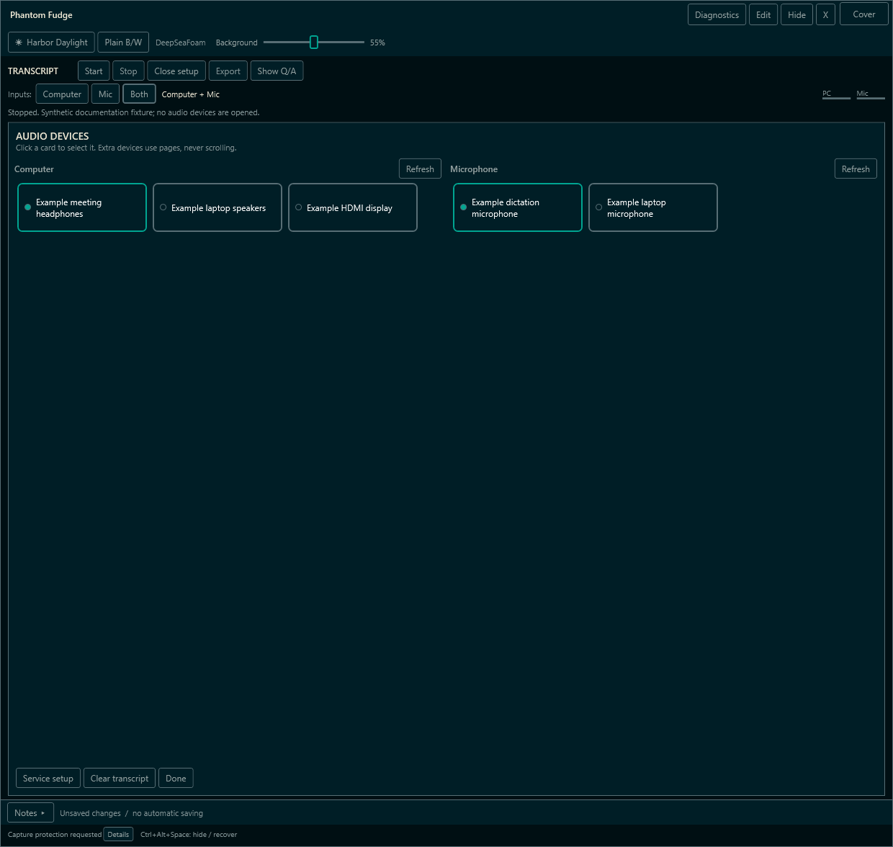
Choose the input mode, open Audio setup, then click the intended cards. The accent outline and filled dot identify the selected item. Computer should match the output carrying the meeting; Mic is the input used for your own dictation. Done or Close setup returns to the reading view.
There are no device-list scrollbars. Setup temporarily uses the reading area, with cards wrapping into rows. If a large catalogue or small window cannot show everything, Previous/Next buttons show another page without changing the selected endpoint. The page label identifies the selected card's page. Selection/paging are locked while capture is starting, running or stopping. (src/PhantomFudge.App/MainWindow.AudioDeviceCards.cs:39-65,96-159.)
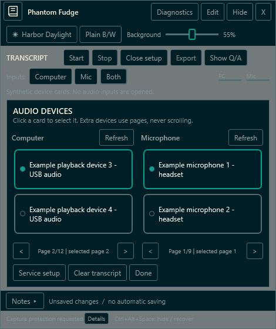
The compact image intentionally uses23synthetic outputs and17microphones. It illustrates overflow, not the number of devices on your machine. Friendly names wrap; extremely constrained cards may ellipsize only the displayed name, not the stored name or endpoint ID. Empty lists have an explicit message. Service setup reveals the session-only token and existing guidance; missing-token Start opens it automatically. The normal launcher supplies the token, so manual entry is usually unnecessary. (src/PhantomFudge.App/MainWindow.AudioDeviceCards.cs:80-140; src/PhantomFudge.App/MainWindow.AudioDeviceCardsDiagnostics.cs:39-53,104-131; scripts/Run-PhantomFudge.ps1:43-57.)
2. Start transcription and watch the red dot
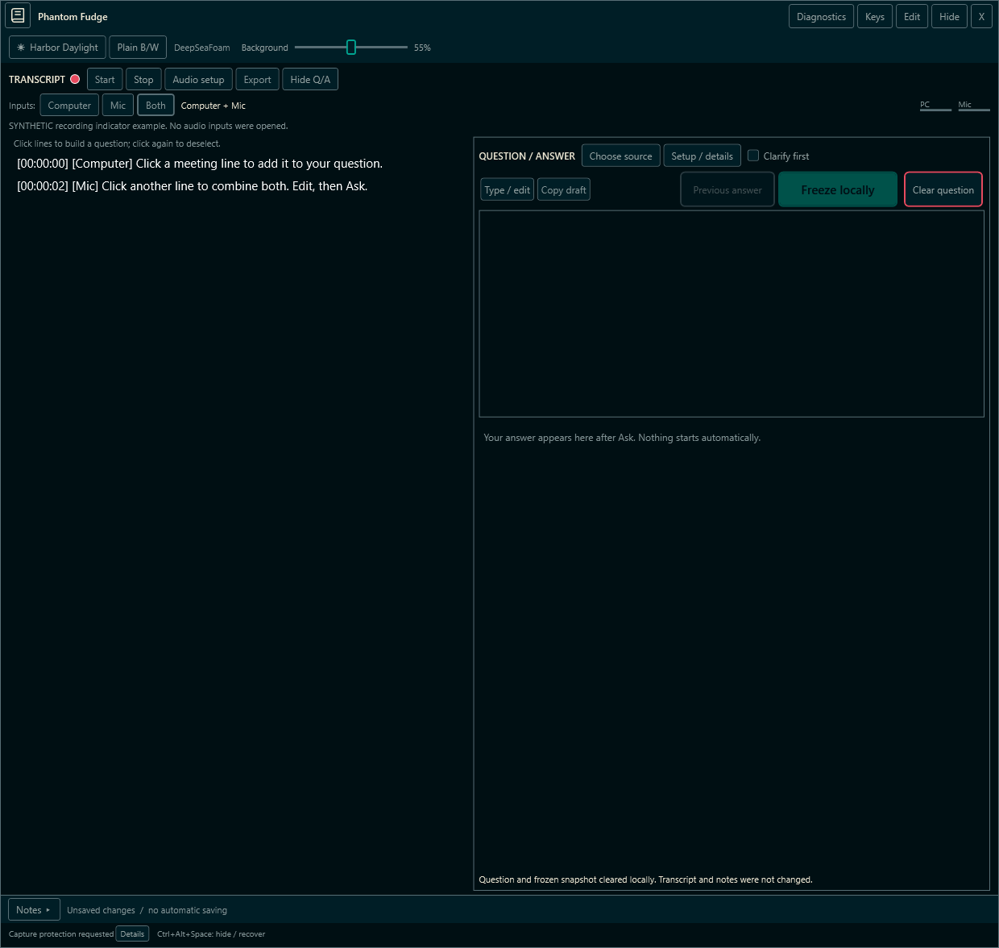
Press Start only when ready to capture the selected inputs. Both is merely the initial mode selection; it is not automatic recording. A red dot beside TRANSCRIPT appears when the transcriber reports Running, not merely when the service is connecting or words happen to be visible. It indicates transcription, not an audio file being saved. (src/PhantomFudge.App/MainWindow.RecordingIndicator.cs:7-10; src/PhantomFudge.App/Audio/LoopbackTranscriber.cs:30-36,117-128.)
Computer and Mic keep separate labels, meters, partials and identities. Computer output can include other applications or sidetone; this is not meeting-process isolation or speaker diarization. Whisper finals can replace provisional guesses. Stop ends capture and drains accepted work, so a last final line can arrive after active capture has ended. The normal UI remains honest about recognition errors and failures. (src/PhantomFudge.Core/AudioSource.cs:3-30; src/PhantomFudge.Core/StructuredTranscriptStore.cs:37-100; src/PhantomFudge.App/Audio/LoopbackTranscriber.cs:387-445.)
3. Select several transcript lines and review the question
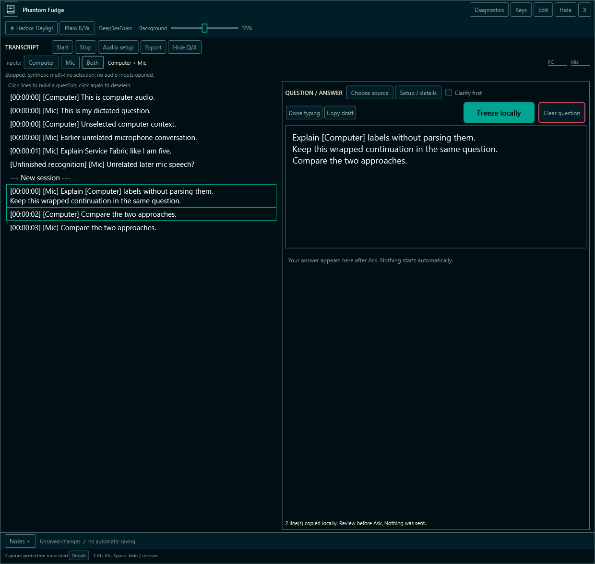
Click one or more intended rows. Each click toggles a whole recognition segment; Ctrl is not required. The draft follows displayed history order rather than click order. A wrapped segment remains one selectable unit. Generated timestamps/source prefixes do not enter the question. Selecting rows opens the question editor and deliberately takes editing focus without stopping transcription or sending a request. (src/PhantomFudge.App/MainWindow.TranscriptSelection.cs:85-147.)
After you manually edit the draft, further direct row changes are refused so a click cannot destroy your corrections. Copy anything needed, then use Clear question before starting a different direct selection. The manual Choose source → Mic / Computer / All → Use selected route remains an explicit replacement alternative, except while a clarification locks the original. One draft is limited to256selected entries from one capture session and8192UTF-16 units including inserted newlines. Invalid changes retain the existing text rather than truncating it. (src/PhantomFudge.Core/QuestionDraft.cs:8-45,48-79,105-125; src/PhantomFudge.App/MainWindow.Questions.cs:105-131.)
4. Optionally ask the model to clarify your intended question
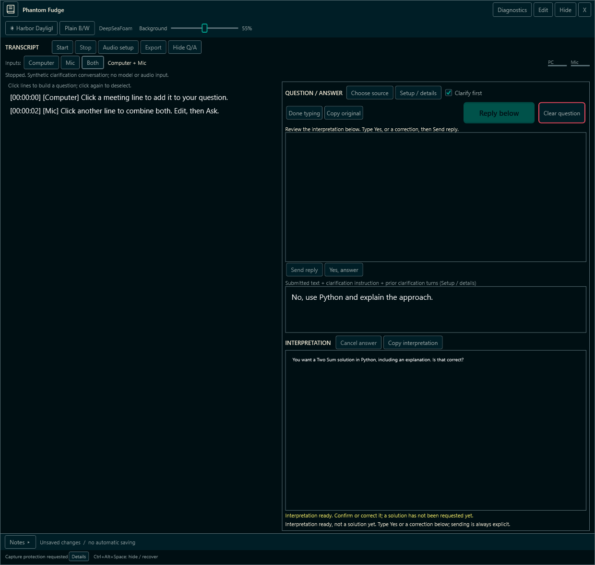
Clarify first is off on launch. With a provider configured, enable it and press Interpret question when the transcript captures the general subject but is cumbersome to correct. The model should restate the intended question rather than solve it yet. Your original draft stays separate from the reply field.
Type Yes and press Send reply, or click Yes, answer. To correct the proposed meaning,
type that correction and press Send reply instead. Yes, but use Python is a correction, not
automatic confirmation. Merely typing or receiving an interpretation never submits the next turn.
The confirmation button does not discard a written correction.
(src/PhantomFudge.App/MainWindow.Clarification.cs:11-46,88-158.)
Only completed interpretation exchanges enter history. There are at most four interpretations, 8192UTF-16 units per input/interpretation and32768total including the current reply. Turning the option off, clearing the question or changing provider resets the thread; a same-settings reload can retain it for explicit retry. Without Previous answer, normal Ask still carries no earlier answer. (src/PhantomFudge.Core/Answers/AnswerClarification.cs:7-69; src/PhantomFudge.App/MainWindow.Clarification.cs:48-86,160-187.)
5. Ask, read, cancel or clear deliberately
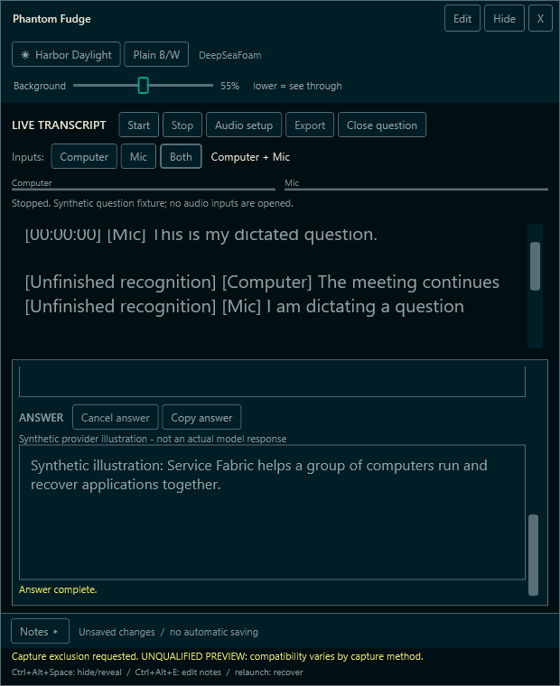
The large accent-filled button follows Previous answer and precedes red-bordered Clear question on the same primary row. Type/edit and Copy stay in the left group and may wrap vertically there. Narrow panes use shorter captions and a narrower context toggle, without an extra full-width row or outer scrolling. In Snapshot only, the button says Freeze locally and sends nothing. With a configured provider, Ask provider freezes the exact reviewed text and starts that request. Only one answer runs at a time.
Cancel answer retains visible partial text as incomplete. Clear question clears the question, last displayed snapshot and answer, but does not erase notes or the transcript. It does not erase previously exported files or diagnostic/provider history. (src/PhantomFudge.App/MainWindow.Questions.cs:265-338; src/PhantomFudge.Core/Answers/AnswerRun.cs:34-81.)
Installed Agency uses its existing model service; it is not inherently offline inference. A configured local-model endpoint is a separate option, and direct Azure remains future work. Preparation makes no question request. Older prepared-response timings are bounded historical measurements, not a promise for every question, cold start or clarification conversation. See provider setup and measured limits.
Follow up with the answer you are reading
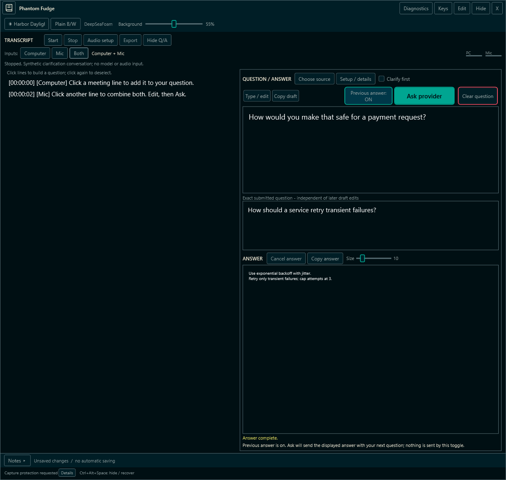
After a completed answer, enable Previous answer, edit the question, then Ask. Enabling the
toggle does not send. Do not Clear between these steps: Clear removes the answer and resets
the option. It stays on across successful follow-ups, but each request includes only the newly
displayed completed answer—not its previous question, older answers or the whole transcript.
(SetUsePreviousAnswer, CapturePreviousAnswer.)
With Clarify first, the original prior-answer snapshot survives interpretation, corrections, confirmation and an explicit retry of the first interpretation. The toggle is locked while a request or clarification is active. Failed/cancelled output and interpretations are not eligible prior answers. Provider changes, Snapshot only, Clear and restart reset the option. (Clarification, provider changes.)
Setup / details shows exact previously submitted prior text; the submitted snapshot label
records its character count. The32768UTF-16-unit limit is separate from question/history limits,
and prior text is background data, not an instruction or tool grant. Keyboard users can use
:context on / :context off through the same handler, then explicitly submit.
See the complete context contract.
6. Cover the workspace without pausing it
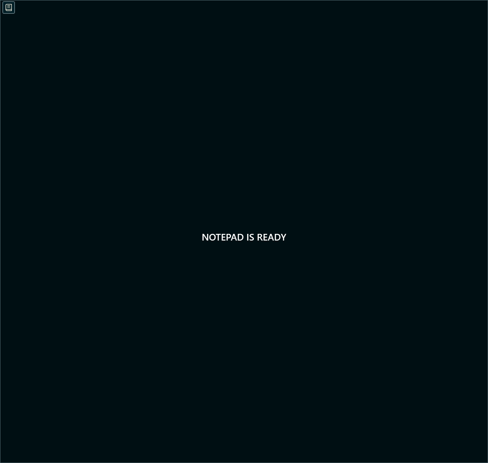
Click the top-left book icon. Only NOTEPAD IS READY and the same icon remain. Transcription and answers already running continue behind it; no new capture or request is created. Uncover restores current results and the retained workspace. The recording dot is behind the cover, so its absence is not a stopped indicator. File/confirmation operations block covering rather than hiding a required decision. (src/PhantomFudge.App/MainWindow.Cover.cs:22-77.)
The cover disables/detaches the workspace and refreshes the window peer's current children. Fresh in-process accessibility traversal excludes the covered fields, but an already-retained typed value provider still read the synthetic question. Process identity, memory, OS microphone indicators, cached data, saved files and provider retention remain independent. Existing display affinity and the Peek-prevention request are limited Windows mechanisms, not global invisibility. (src/PhantomFudge.App/MainWindow.CoverDiagnostics.cs:68-88; complete privacy matrix.)
State changes: Cover is not Hide
| Action | Transcription | Current answer |
|---|---|---|
| Cover / Uncover | Continues | Continues; hidden text is not logged as visibly presented |
| Stop | Stops and drains accepted audio | Separate request continues |
| Cancel answer | Unchanged | Cancels; partial result remains incomplete |
| Hide or global Edit/Present | Stops | Cancels/cleans up |
| Hide Q/A, open Audio setup, or expand Notes | Audio is unchanged | Closing Q/A cancels its answer/provider activity |
| Type/edit the question | Continues | Existing frozen request stays independent |
| Ordinary keyboard modes / Escape | Continues | Continues; no implicit cancellation |
| Compact selection/reading layout | Continues | Temporary panel hiding preserves state; not Hide Q/A or cancellation |
:devices |
Refused while starting/running/stopping | Refused while answer busy; when allowed, setup closes Q/A/provider activity |
| Clear question | Unchanged | Cancels/clears question and answer state |
| Exit | Stops before preservation checks | Cancels/cleans up; unsaved content still requires a decision |
These differences follow the actual separate handlers. In particular, opening setup is not the
same continuation path as Cover.
(src/PhantomFudge.App/MainWindow.Questions.cs:40-61,158-208,328-338;
src/PhantomFudge.App/MainWindow.AudioDeviceCards.cs:39-49;
src/PhantomFudge.App/MainWindow.AnswerLifetime.cs:10-17;
StopTranscriptionAsync, ToggleVisibility, RequestActionAsync.)
The keyboard setup command adds an explicit busy guard before the same setup path; it is not an
ordinary mode switch. :start is explicit capture, :stop is audio-only, and :cancel is
answer/preparation-only. (src/PhantomFudge.App/MainWindow.Keyboard.cs:87-125,320-360.)
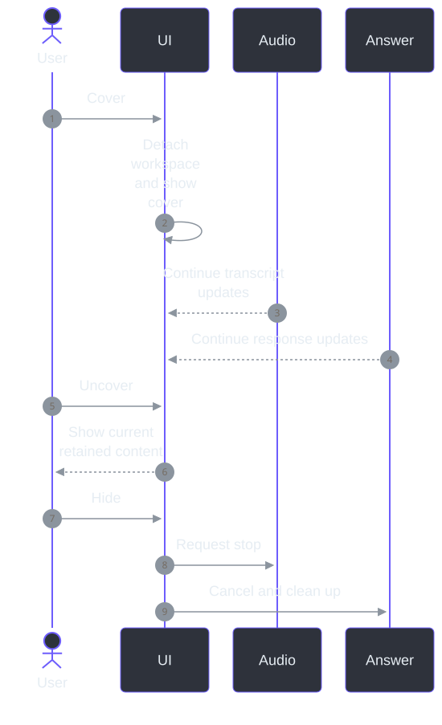
Editable Mermaid source
---
config: {"theme":"base","themeVariables":{"darkMode":true,"primaryColor":"#2d333b","primaryBorderColor":"#6d5dfc","primaryTextColor":"#e6edf3","lineColor":"#8b949e","textColor":"#e6edf3","actorBkg":"#2d333b","actorBorder":"#6d5dfc","actorTextColor":"#e6edf3","signalColor":"#8b949e","signalTextColor":"#e6edf3"}}
---
sequenceDiagram
accTitle: Continuing work versus stopping work
accDescr: Cover only changes the attached view, while Hide follows the existing shutdown path.
autonumber
actor User
participant UI
participant Audio
participant Answer
User->>UI: Cover
UI->>UI: Detach workspace and show cover
Audio-->>UI: Continue transcript updates
Answer-->>UI: Continue response updates
User->>UI: Uncover
UI-->>User: Show current retained content
User->>UI: Hide
UI->>Audio: Request stop
UI->>Answer: Cancel and clean up
Current sizes, themes and visible status
| Reading surface | Current WPF font size | Change |
|---|---|---|
| Final transcript | 15 | 25%smaller than20 |
| Live partial | 13.5normal /10.5compact | 25%smaller than18/14 |
| Answer and interpretation | 10 normal /9 compact until chosen;8–24 choice | Size slider / :font / Read +/-; session-only |
| Question and clarification reply | 18 | Unchanged by those reductions |
| Device card name | 12 | Independent of transcript/answer typography |
These are WPF logical units, not a guarantee of exact rasterized pixel height at every DPI. Reading text stays opaque white in DeepSeaFoam and black in light/plain themes. The Background slider affects the reading backdrop, not whole-window text opacity; its default is55%, range10–100%. Long text retains its own scrollbar, while the main panels and device choices avoid nested scrolling. (Current declarations; src/PhantomFudge.App/MainWindow.Layout.cs:58-110; src/PhantomFudge.Core/ThemePalette.cs:11-29.) The answer-size choice takes precedence over those responsive defaults across resize, but is not written to disk. See answer size. (src/PhantomFudge.App/MainWindow.AnswerFont.cs:9-43.) At narrow, short sizes, Select/Search temporarily give the reading area to the transcript and restore Q/A when selection ends. Other keyboard modes prioritize expanded Q/A; a chosen size 14+ with a visible answer does so even outside keyboard control. This is reversible panel visibility, not data loss or audio/provider shutdown; wide columns remain unchanged. See compact-window behavior.
Launch, diagnostics and preservation
On an already-provisioned source checkout, save/copy needed content, close an older instance with X, then run:
.\scripts\Run-PhantomFudge.ps1
Relaunch normally reveals an existing instance instead of replacing its loaded code. A fresh machine or extracted bundle needs its own prerequisites/model setup; do not reuse another workspace's token or kill its service. Follow the setup guide. The older045022ZIP does not contain these later source changes. (scripts/Run-PhantomFudge.ps1:17-57.)
There is no note/transcript autosave or crash recovery. Save notes and export transcripts explicitly.
Default diagnostics contain metadata, not conversation bodies; Text mode is a separate local opt-in.
Clear and Cover do not erase existing logs. Use Diagnostics, Show-Diagnostics.ps1 or
Export-Diagnostics.ps1 for local investigation, with no automatic upload.
(src/PhantomFudge.Core/Diagnostics/LocalDiagnostics.cs:145-184;
diagnostic guide.)
References
Setup · Question selection · Keyboard controls and answer size · Clarification · Providers · Cover/privacy · Current evidence · Annotated source
Keyboard controls and answer size
Start here: control the workspace, not the system pointer
Keyboard control lets you compose a question without moving the mouse across the workspace.
Ctrl+Alt+K deliberately brings Phantom Fudge into Control mode; the Keys button is
the pointer fallback. Letters such as v, j and m are local mode keys, not global shortcuts.
This feature does not lock, hide or warp the cursor, and it cannot repair a recorder's
captured-cursor behavior. Activation uncovers the workspace but does not start audio or send a
question. (ToggleKeyboardControl, HandleKeyboardKey;
src/PhantomFudge.App/MainWindow.Keyboard.cs:65-85,218-266.)
Keyboard controls ship in v0.2.0-preview.1. The new context on/off commands are a later
local-source increment, not in that release. Save/copy needed text, close an older instance
with X, then run .\scripts\Run-PhantomFudge.ps1 to use current source.
The historical keyboard fixture passed 38 keyboard assertions plus existing regressions; 297 Core
and 18 documentation-tool tests passed. The source atlas and illustrated handbook are refreshed.
The three images below are synthetic WPF examples, not personal captures or real audio/model
results. See workstream57 and
implementation status for evidence and qualification boundaries.
Beginner workflow: select, review, then submit
Start with transcript text already available. If you need new transcription, choose inputs first
and explicitly use Start or :start; keyboard activation alone never records. Configure an
answer provider before expecting an answer; Snapshot only freezes locally.
The keyboard dispatcher reuses the existing Start and Ask handlers rather than introducing an
automatic capture or send path. (src/PhantomFudge.App/MainWindow.Keyboard.cs:301-306,330-360.)
- Ctrl+Alt+K → Control. Check the visible mode label.
v→ Select. The navigation cursor starts at the latest matching row.j/kmove down/up. Movement alone does not select text.- Space toggles the current whole transcript segment. Repeat movement and Space for more lines.
- Enter → Edit question to review. This does not submit.
- Correct the wording if needed. Enter inserts a newline in Edit.
- Ctrl+Enter explicitly submits the reviewed question, or the current clarification reply. In Snapshot only this remains local; with a ready provider it uses the existing Ask flow.
The essential sequence is Ctrl+Alt+K → v → j/k → Space → Enter review → Ctrl+Enter submit.
Ctrl+Enter in Select is refused with a review reminder. That separation keeps navigating a moving
transcript from accidentally sending it. (BeginKeyboardSelection, HandleKeyboardSelectionKey,
SubmitKeyboardQuestion; src/PhantomFudge.App/MainWindow.KeyboardSelection.cs:15-28,110-159;
src/PhantomFudge.App/MainWindow.Keyboard.cs:257-266,301-306.)
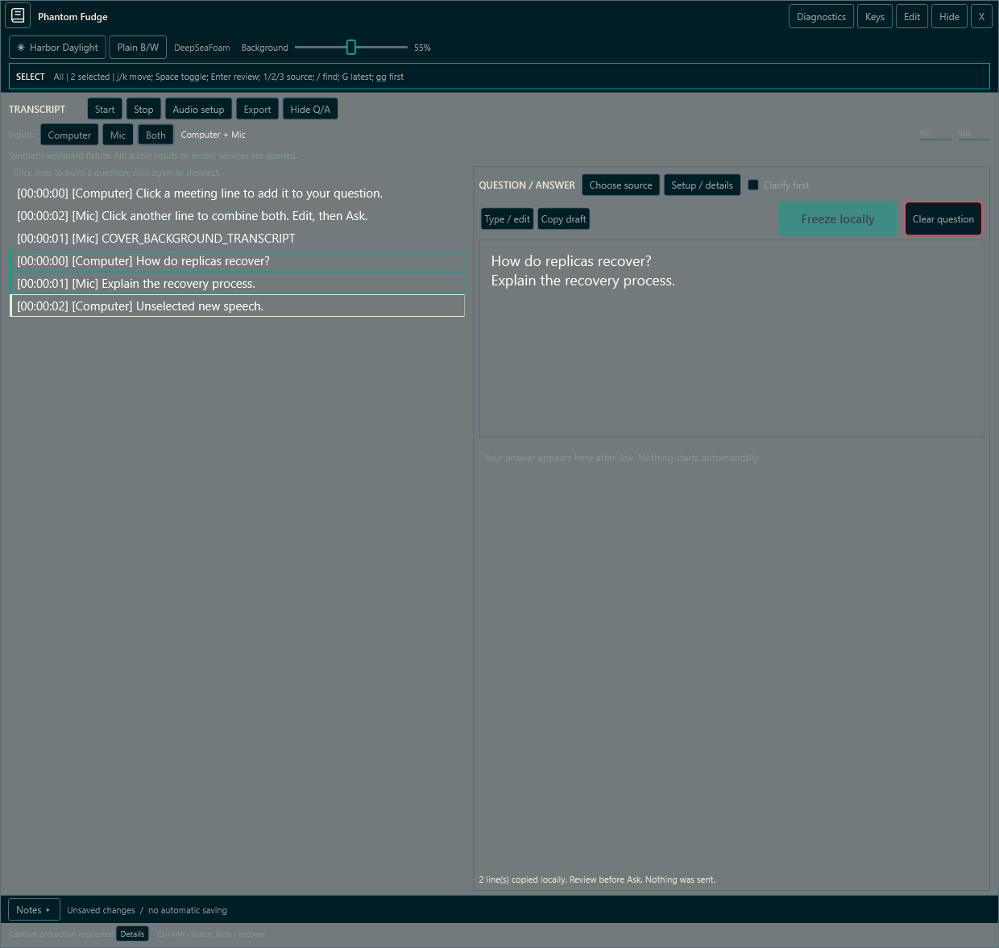
Wide-layout synthetic example: two accent-outlined selected rows compose the draft; the pale current-row outline is on a different, unselected row. Moving the cursor is not selecting or sending.
Editable Mermaid source
---
config: {"theme":"base","flowchart":{"htmlLabels":false},"themeVariables":{"darkMode":true,"primaryColor":"#2d333b","primaryBorderColor":"#6d5dfc","primaryTextColor":"#e6edf3","lineColor":"#8b949e","textColor":"#e6edf3","clusterBkg":"#161b22","clusterBorder":"#30363d"}}
---
flowchart TD
accTitle: Keyboard selection requires review before submission
accDescr: Ctrl Alt K enters Control. The v key enters Select, movement only moves the cursor, and Space toggles a segment. Enter opens literal Edit without sending. Only explicit Ctrl Enter submits through the existing question handler.
Activate["Ctrl+Alt+K: Control"] -->|v| Select["Select transcript"]
Select -->|j or k| Cursor["Move current-row cursor"]
Cursor -->|Space| Toggle["Toggle whole segment"]
Toggle -->|Continue choosing| Select
Select -->|Enter| Review["Edit and review"]
Review -->|Enter| Newline["Insert newline, no send"]
Newline --> Review
Review -->|Ctrl+Enter| Submit["Explicit submit"]
Submit --> Existing["Existing snapshot or provider flow"]
Modes, literal editing and leaving safely
| Mode | Keys and behavior |
|---|---|
| Control | v Select, i Edit question/reply, a Read answer, m Mask, :/F2 Commands, ?/F1 Help |
| Select | j/k or Down/Up move; Space toggles; Enter reviews; source filters and search below |
| Edit question / Edit reply | Type normally, including j, k, v, :, / and ?; Enter is a newline; Ctrl+Enter submits |
| Read | j/k or Down/Up scroll the answer; PageUp/PageDown page; Home/End jump; +/- adjust answer size |
| Command | Type a built-in command; Tab completes the first matching example; Enter validates/executes |
| Search | Type a local transcript substring; Enter applies it; Escape returns to Select |
| Devices | Arrows move, Space selects, Tab changes source in Both, bracket/page keys change page |
| Help | Shows the local key and command summary; Escape returns to Control |
Modal means the label matters. Edit passes ordinary typing to the question/reply editor; it is
not global Notes Edit. To run a command while typing, press Escape first, then F2. Function-key
alternatives are F2 for :, F3 for / in Select only, and F1 for ? outside literal
Edit/prompts. The punctuation shortcuts use US OEM key positions; other layouts should prefer
these alternatives. They are not universal character-layout mappings.
(UpdateKeyboardBar, HandleKeyboardKey; src/PhantomFudge.App/MainWindow.Keyboard.cs:177-299;
src/PhantomFudge.App/MainWindow.KeyboardSelection.cs:110-125.)
Edit stays armed after Ctrl+Enter submission. A completed asynchronous interpretation changes
the mode label to EDIT REPLY and targets the reply editor; returning to the original-question
state changes it back to EDIT QUESTION. You do not need to leave and re-enter Edit between
these states. The target must be visible, enabled, focusable and editable. Async focus retargeting
occurs only while Phantom Fudge is already the active foreground window, visible, uncovered and
protection-ready; it does not activate another window or pull you back from another app. Typing
and model completion still do not submit a new turn. To read with j/k after submitting, use
Escape → a, rather than typing those letters into Edit.
(RefreshKeyboardEditorTarget, SubmitKeyboardQuestion;
src/PhantomFudge.App/MainWindow.Keyboard.cs:127-139,257-266,301-306.)
Escape backs out rather than cancelling work: ordinary submode → Control → leave keyboard control. Search first returns to Select; Command returns to the mode from which it was opened. Devices also closes setup. Leaving attempts to return foreground focus to the previously active application, after checking its window/process identity. Windows may refuse, or that window may have closed: switch back manually if the status says so. This is best effort, not a focus guarantee. Pressing Ctrl+Alt+K again also leaves; switching to another application disarms without pulling focus back. (src/PhantomFudge.App/MainWindow.Keyboard.cs:141-175,198-204,222-232.)
From Control, m leaves keyboard control and masks the workspace. From other modes, return
to Control first or use :mask through Command. Already-running transcription and answers
continue behind the mask. Ctrl+Alt+K uncovers and enters Control again. Neither masking nor Escape
is an audio Stop or answer Cancel. Read the separate cover/privacy limits;
the mask is not process hiding or universal capture protection.
(src/PhantomFudge.App/MainWindow.Keyboard.cs:67-85,290-296,366-370.)
Select: source filters, search and stable intent
| Key in Select | Meaning |
|---|---|
1 / 2 / 3 |
Show Mic / Computer / all sources; this is a view filter, not an audio-input change |
/ or F3 |
Open case-insensitive substring search over raw segment text |
| Enter in Search | Apply the filter locally; an empty search clears it |
G (Shift+G) / End |
Move to the last matching row |
gg (two lowercase presses) / Home |
Move to the first matching row |
| PageDown / PageUp | Move five matching rows down/up |
| Space | Toggle the current segment; holding Space does not repeatedly toggle |
Filters do not deselect previously chosen rows. Check the selected count and review the whole
draft, including selections currently outside the filter. Leaving Select removes its view filters.
The cursor follows structured segment identity rather than parsing a displayed timestamp.
After a manual draft edit, v/Space refuse new selection until you deliberately clear the question;
copy needed corrections before :clear question. Clarification can also lock selection.
(CanKeyboardSelect, MatchesKeyboardTranscript, ResetKeyboardSelectionView;
src/PhantomFudge.App/MainWindow.KeyboardSelection.cs:30-79,98-159.)
Built-in commands: deterministic, not a shell or model
Press F2 (or : outside Edit), type a command, then Enter. The prompt accepts an optional
leading colon, ignores case and normalizes whitespace. It recognizes only the finite list below;
it does not run shell text or ask a model to interpret a command. Suggestions follow the fixed
example list in source, and Tab chooses its first prefix match—not a fuzzy or model-generated
guess. Unknown commands/arguments stay in the prompt with an error; input is bounded to 128 characters.
(Parse, Suggest, Tokenize; src/PhantomFudge.Core/KeyboardCommands.cs:15-80;
src/PhantomFudge.App/MainWindow.Keyboard.cs:206-256,308-318.)
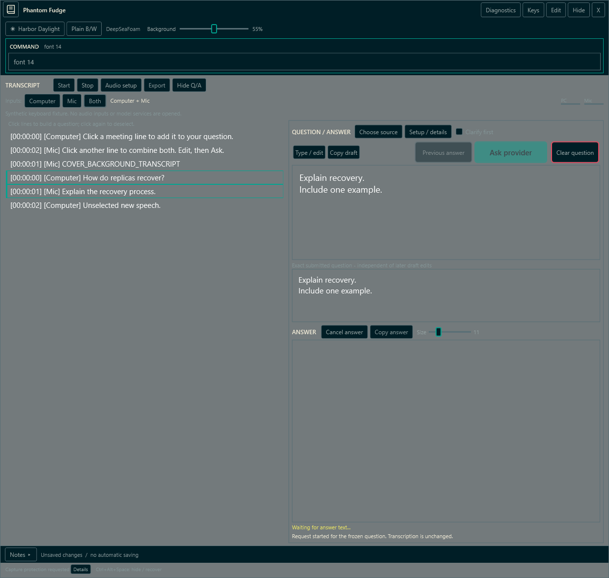
The prompt shows font 14 before execution, while Size still reads11. Enter applies the command;
typing it alone does not change the answer.
| Command | Effect and boundary |
|---|---|
:start / :record start |
Explicitly request capture using the selected sources and existing readiness checks |
:stop / :record stop |
Stop/drain audio; do not cancel the separate answer |
:source mic, :source computer, :source both |
Choose input mode while audio is idle; never start capture |
:devices |
Refuse while audio is starting/running/stopping or an answer is busy; otherwise open device setup and close Q/A |
:clarify on, :clarify off |
Change optional clarification while no answer is busy; retain existing clarification guards |
:context on, :context off |
Use the same Previous answer toggle handler; needs a completed answer to enable, locks during busy work/active clarification, and never sends |
:confirm |
Invoke the existing explicit clarification confirmation action; not an automatic Yes |
:font 8 through :font 24 |
Choose a whole-number answer/interpretation size for this session |
:copy question, :copy answer |
Use the existing explicit clipboard actions; these are not a send |
:clear question |
Clear question/snapshot/answer through the existing handler; it can cancel an active answer, but does not stop audio |
:cancel |
Cancel answer/provider preparation only; never an audio Stop |
:theme dark, :theme light, :theme plain |
Select DeepSeaFoam, Harbor Daylight or Plain |
:opacity 10 through :opacity 100 |
Choose whole-percent background opacity, not whole-window text opacity |
:ask |
Explicitly submit the current question or clarification reply through the same guarded handler |
:mask |
Disarm keyboard control and cover the workspace without stopping current work |
:help |
Show the local keyboard help |
File/confirmation activity, missing protection or another executing command can reject a command.
The dispatcher delegates to existing actions: success is governed by their status, not merely by
valid syntax. Opening Command from Select and explicitly issuing :ask is still an explicit
submission; the beginner Enter-review path is the recommended way to inspect the draft first.
(ExecuteKeyboardCommandAsync; src/PhantomFudge.App/MainWindow.Keyboard.cs:320-364;
src/PhantomFudge.Core/KeyboardCommands.cs:26-56.)
For “explain that answer” follow-ups, finish the first answer, use :context on, then edit
and explicitly submit. Do not use :clear question between those steps: it clears the answer and
resets context. The choice is session-only; it remains on across successful follow-ups and sends
only the latest displayed completed answer, not accumulated history. With Clarify first, corrections
and confirmation retain the snapshot captured before interpretation. Setup/details shows the exact
submitted prior text. Full boundaries.
(SetUsePreviousAnswer.)
Devices: browse before choosing
Use :source both (or a single source), then :devices while idle. Left/Right move one card;
Up/Down or k/j move by the displayed column count. Space chooses the highlighted device.
Tab switches Computer/Mic only in Both mode. [ / ] or PageUp/PageDown move a page;
merely browsing never changes the chosen endpoint or starts recording. Escape closes setup and
returns to Control. Use explicit :start only after checking the selection.
(BeginKeyboardDevices, HandleKeyboardDeviceKey;
src/PhantomFudge.App/MainWindow.KeyboardDevices.cs:12-17,27-71.)
Setup is the exception to ordinary mode preservation. :devices refuses busy audio/answers
instead of silently stopping them. When allowed, opening Audio setup closes Q/A and follows its
existing provider-cleanup behavior; it can therefore end idle provider preparation. Ordinary
Control/Select/Edit/Read/Command/Help transitions do not invoke Q/A close/cancel or intentionally
cancel capture/provider work. A compact layout may temporarily hide a panel to make room; that is
not closing it. Start/Stop/Cancel/Clear remain separate explicit actions.
(SetKeyboardMode, ExecuteKeyboardCommandAsync;
src/PhantomFudge.App/MainWindow.Keyboard.cs:87-125,330-360;
integrated lifecycle table.)
Editable Mermaid source
---
config: {"theme":"base","flowchart":{"htmlLabels":false},"themeVariables":{"darkMode":true,"primaryColor":"#2d333b","primaryBorderColor":"#6d5dfc","primaryTextColor":"#e6edf3","lineColor":"#8b949e","textColor":"#e6edf3","clusterBkg":"#161b22","clusterBorder":"#30363d"}}
---
flowchart TD
accTitle: Keyboard modes and explicit lifecycle actions
accDescr: Ordinary modes and masking preserve already-running work. Devices refuses busy audio or answers and otherwise closes Q A for setup. Start, Stop, Cancel and Clear are separate explicit actions.
Control["Keyboard control"] --> Intent{"Chosen action"}
Intent -->|Ordinary mode or mask| Keep["Preserve current work"]
Intent -->|devices| Busy{"Audio or answer busy?"}
Busy -->|Yes| Refuse["Refuse setup; do not stop work"]
Busy -->|No| Setup["Device setup closes Q/A"]
Intent -->|start, stop, cancel or clear| Explicit["Invoke existing guarded handler"]
Explicit --> Separate["Separate audio and answer lifecycles"]
Answer size: session choice, not a saved preference
Use the answer's Size slider, :font 14, or + / - in Read mode. Whole-number sizes
range from 8–24 WPF logical units, applying to answers and interpretations, not transcript,
question or Notes fonts. Until you choose, the responsive defaults remain 10 normal / 9 compact.
Once chosen, that value survives resizing in this running instance. It is not saved across
restart and is not a property in keyboard.json. chosenAnswerFontSize ?? automaticSize is why
a resize no longer overwrites an explicit choice.
(SetAnswerFontSize, ApplyAnswerFontSize, AdjustAnswerFont;
src/PhantomFudge.App/MainWindow.AnswerFont.cs:9-43;
src/PhantomFudge.Core/KeyboardCommands.cs:15-16;
src/PhantomFudge.App/MainWindow.Keyboard.cs:274-286.)
Compact windows: the active task gets the reading space
At narrow, short sizes such as 470 × 560, keeping a size 24 answer and every panel visible can leave too little usable reading space. The responsive layout therefore changes which panel is visible, not its content or lifetime:
| Compact situation | What you see |
|---|---|
| Select or Search | Q/A is temporarily hidden; transcript selection uses the reading area |
| Leaving Select/Search | The intended Q/A-expanded state is restored without calling close/cancel |
| Other keyboard modes, with Q/A expanded | Q/A takes priority and the transcript is temporarily hidden |
| A chosen size of 14 or larger with an answer visible and Q/A expanded | Q/A takes priority even outside keyboard control |
| Wide reading columns | The existing side-by-side layout remains unchanged |
The layout remembers the desired Q/A expansion separately from temporary visibility. No question,
answer or transcript is discarded, and these layout changes do not stop audio or provider work.
Enter to review therefore brings Q/A back after compact selection; it does not reopen a
cancelled request. Explicit Hide Q/A and :devices retain their distinct close/cleanup behavior.
Mode changes and font choices both request a responsive layout update.
(SetKeyboardMode, SetAnswerFontSize;
src/PhantomFudge.App/MainWindow.Keyboard.cs:87-125;
src/PhantomFudge.App/MainWindow.AnswerFont.cs:19-26.)
This refinement addresses size 24 at the minimum window. The final exporter reports the compact selection and passive size 24 fit assertions passed; it does not establish comfort at every DPI or replace owner review.
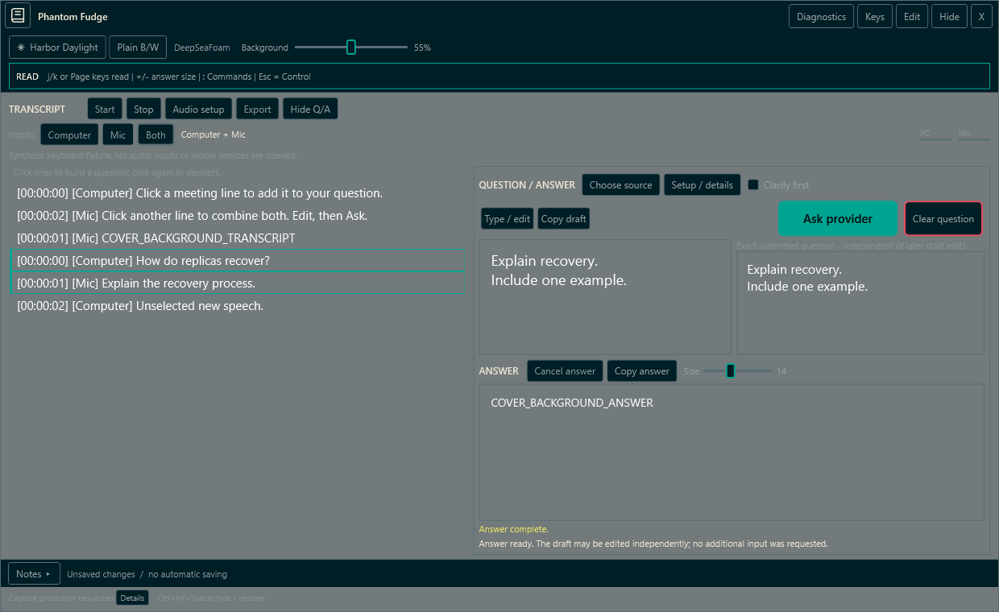
Read mode with Size14. COVER_BACKGROUND_ANSWER is synthetic fixture text, not a real model result.
Shortcut configuration and recovery
The optional file is %LOCALAPPDATA%\PhantomFudge\keyboard.json. Save valid UTF-8 containing
exactly these three case-sensitive properties:
{
"schemaVersion": 1,
"enabled": true,
"activationKey": "K"
}
- Missing file/directory uses the default Ctrl+Alt+K.
activationKeyaccepts A–Z except E, or F1–F11 (case-insensitive key names). E is reserved for Notes Edit; F12 is reserved/rejected.- Ctrl+Alt+NoRepeat is fixed, not configurable. No bare-letter or Windows-key global binding is offered. The setting changes only keyboard-control activation, not existing Hide/Notes keys.
- Set
enabledtofalseto disable this global shortcut; keep the other valid fields. - Restart the app after editing this file. It is loaded during initialization, not live-reloaded.
- Unknown/duplicate/missing properties, wrong types/schema, invalid keys, malformed UTF-8/JSON or files exceeding 1024 bytes are rejected. An invalid/unreadable file disables the global shortcut and reports a notice; it does not silently replace your request with another binding.
- A Windows registration conflict also reports a notice. The Keys button still works in both failure cases. If the workspace is masked, uncover with the book icon first. Existing reveal/second-launch recovery remains described in the preview guide.
The strict schema prevents a typo from silently changing input behavior. The loader validates the
key even when disabled; the UI separately handles file errors and native registration conflicts.
(ResolveVirtualKey, Load, LoadKeyboardShortcut, RegisterKeyboardControlHotkey;
src/PhantomFudge.Core/KeyboardShortcutConfiguration.cs:7-28,31-114;
src/PhantomFudge.App/MainWindow.Keyboard.cs:30-63.)
Review correction: LoadKeyboardShortcut now catches InvalidDataException as well as the
other listed file/JSON/argument errors, disabling only the global shortcut. The final synthetic
fixture covers this fallback; real Windows shortcut collisions still need separate observation.
(src/PhantomFudge.App/MainWindow.Keyboard.cs:38-63;
src/PhantomFudge.App/MainWindow.KeyboardDiagnostics.cs:21-28.)
Source map and validation boundary
These are implementation entry points, not passing-test receipts. Real shortcut conflicts, cross-application foreground return, non-US layouts, accessibility and recipient cursor/capture behavior still need their own observations. The new synthetic diagnostic declares a narrower routing/style boundary; defining those checks does not mean they ran successfully. (src/PhantomFudge.App/MainWindow.KeyboardDiagnostics.cs:16-18,209-214.)
The final async Edit checks allow the normal dispatcher turn after answer completion before checking the target; they do not force a mode reset to make the reply/original transition work. This verifies the synthetic target/label behavior, not cross-application focus comfort or external hotkey return. (src/PhantomFudge.App/MainWindow.KeyboardDiagnostics.cs:170-193.)
| Source | Read for |
|---|---|
| MainWindow.Keyboard.cs | Activation, focus return, modal routing and command dispatch |
| MainWindow.KeyboardSelection.cs | Cursor versus selection, filters/search, review and edited-draft guards |
| MainWindow.KeyboardDevices.cs | Card movement, explicit selection and paging |
| MainWindow.AnswerFont.cs | Chosen session size versus automatic responsive size |
| KeyboardCommands.cs | Complete typed grammar, argument bounds and deterministic suggestions |
| KeyboardShortcutConfiguration.cs | Exact JSON schema, UTF-8/size checks and supported activation keys |
| MainWindow.KeyboardDiagnostics.cs | Synthetic assertions and the three illustration outputs |
Full illustrated workflow · Setup/recovery · Clarification · Cover/privacy
Product boundaries and decisions
TL;DR: Scope changes are not embarrassing historical debris; they are design inputs. The important discipline is to record what superseded what, update the affected contracts, and avoid treating an earlier assumption as a permanent requirement.
Overview: from a private notepad to a conversation companion
The initial request was a draggable speaker-notes window that would not appear in a screen
share. The useful part of that request is implementable on supported Windows capture paths.
The absolute version—no software can ever detect or record the surface—is not. The product
contract therefore separates plain-text editing, movement, shell presentation, captured pixels,
platform support and actual product qualification (docs\PRODUCT.md:6-38).
That separation made later changes tractable. Transcription became the main view. Notes became collapsible. The owner removed repetitive permission/rehearsal acknowledgments. Translucency became a real rendering requirement, rather than a hypothetical visual effect. A microphone track became explicitly requested after the original computer-only implementation. Finally, Azure answering became a researched future extension, not an automatic cloud replacement.
The development ledger records these changes as dated decisions and evidence, not a fictional
linear plan that was correct from the beginning (TODO\16_DEVELOPMENT_LEDGER.todo:1-90).
The public journal tells the fuller chronological story.
The October10 request deliberately widens the default single-question payload by one bounded,
explicitly selected item: the displayed completed answer. Previous answer sits left of Ask,
starts off and never sends on toggle. It is not approval for accumulated chat, transcript capture,
tools or a new publication. Clarification keeps the same prior snapshot while its interpretation
replaces the screen. The source increment is not in v0.2.0-preview.1.
(Product requirement R24,
CapturePreviousAnswer,
workstream59.)
Architecture of a requirement
A requirement should identify its observable outcome and the evidence needed to claim it. For example, "no ordinary taskbar button" has a shell observation. "Computer audio becomes text" requires audio/protocol/recognizer evidence. "The recipient never sees the notes" needs the actual capture path; neither of the first two observations supplies it.
Editable Mermaid source
---
config: {"theme":"base","themeVariables":{"primaryColor":"#2d333b","primaryBorderColor":"#6d5dfc","primaryTextColor":"#e6edf3","lineColor":"#8b949e","clusterBkg":"#161b22","clusterBorder":"#30363d"}}
---
flowchart TB
accTitle: Turning a need into a bounded claim
accDescr: An observable outcome needs an implementation mechanism, acceptance evidence and explicit limits.
Need["Owner need"] --> Outcome["Observable outcome"]
Outcome --> Mechanism["Implementation mechanism"]
Outcome --> Evidence["Acceptance evidence"]
Mechanism --> Limits["Known limits"]
Evidence --> Claim["Bounded product claim"]
Limits --> Claim
NewNeed["Later explicit correction"] --> Outcome
The native mechanism uses an owned HWND and display affinity. It does not make the process
cease to exist (src\PhantomFudge.App\Native\WindowProtection.cs:19-48). Similarly, the
source enum means "where samples came from", not "who was speaking"
(src\PhantomFudge.Core\AudioSource.cs:3-30). Precision in nouns prevents precision failures
in code and documentation.
Decisions that shape the current product
| Decision | Current outcome | Important cost |
|---|---|---|
| Windows11 first | Native WPF/Win32 behavior rather than a lowest-common-denominator overlay | Other operating systems need independent designs |
| Transcript first | Large reading area; notes collapsed until needed | Editing and reading modes must remain understandable |
| Explicit inputs | Computer, Mic or Both, followed by Start | Device selection/permissions can fail and must be visible |
| No repeated acknowledgments | Owner handles permission/recipient check outside the app | This does not create technical evidence that a recorder is safe |
| Background-only alpha | See through content while keeping text opaque | Underlying content can reduce contrast |
| Native Python by default | No Docker prerequisite for ordinary use | Local environment/model setup must be reproducible |
| Local Ask snapshot; future Azure sending | Owner chooses the exact displayed question | Structured identity is implemented; cloud configuration and actual egress are future work |
The requirements make the microphone change explicit: the later request supersedes the old
never-microphone product scope, while tests still must not open live inputs implicitly
(docs\DUAL-SOURCE-AUDIO.md:1-26). A repository that keeps both statements as current truth
would eventually produce either a broken feature or an unauthorized test.
Why Docker moved to the end
Containerization and container dependence are different design decisions. A headless Python service with environment-based configuration and a versioned protocol is straightforward to package later. Requiring Docker before a Windows desktop tool can transcribe creates a larger operational dependency without proving an inference benefit.
The current launcher starts native Python unless a separate option is chosen
(scripts\Start-Transcription.ps1:1-24). Run-PhantomFudge can also avoid service startup
entirely with NotesOnly (scripts\Run-PhantomFudge.ps1:1-41). The Docker TODO now explicitly
follows native release acceptance, rather than blocking it (TODO\20_DOCKER_LOCAL_SERVICE.todo:1-42).
The lesson is not "containers are bad." It is "portability should preserve an interface before it imposes infrastructure." A service boundary is useful only when its responsibilities are clear: Python recognizes framed PCM; C# controls Windows devices and presentation.
Editable Mermaid source
---
config: {"theme":"base","themeVariables":{"primaryColor":"#2d333b","primaryBorderColor":"#6d5dfc","primaryTextColor":"#e6edf3","lineColor":"#8b949e","clusterBkg":"#161b22","clusterBorder":"#30363d"}}
---
flowchart LR
accTitle: Container-neutral design without a container prerequisite
accDescr: A working native application and stable protocol precede optional container packaging; Docker-first operation is superseded.
Native["Working native application"] --> Contract["Stable local protocol"]
Contract --> Package["Optional later container package"]
Contract --> Identity["Explicit token and ownership"]
Contract --> Tests["Same protocol tests"]
Bad["Docker required before core use"] -. "superseded" .-> Native
Interaction choices are privacy choices
The owner observed an I-beam over text and a disappearing cursor in a shared view. The app
now uses Arrow and a non-activating default, but those local changes do not control every
recorder's cursor stream. The design deliberately records that remaining uncertainty rather
than renaming it success (docs\CURSOR-AND-THEMES.md:1-69).
At the same time, normal functionality must not be sacrificed to a privacy slogan. Notes must still be editable after an explicit Edit action. Device rows must still be selectable without unnecessarily activating the window. Unsaved-content warnings remain even though permission checkboxes were removed. Those controls answer different questions.
Defining done without freezing learning
The TODO vocabulary separates NOT_STARTED, IN_PROGRESS, BLOCKED and DONE. DONE applies to the
scope of a task: a research document can be complete while its architecture is not implemented.
An authored workflow can be complete while execution is not started
(docs\TODO-CONVENTIONS.md:1-63).
This is especially important for the Azure plan. The proposed path sends a frozen, explicit
question to a streamed model request. It does not authorize automatic meeting uploads, resource
creation or model calls simply because the diagram exists
(docs\AI-ANSWER-ARCHITECTURE.md:82-200).
A worked change-impact exercise
Suppose a new request says, "Also transcribe my microphone." A superficial implementation adds a second device object. A complete change asks:
- Which device direction is valid, and when may it open?
- Are samples mixed or kept distinct?
- How do frame formats, source labels and time offsets change?
- What happens if only one input starts or disconnects?
- How does Stop prove both inputs are released and both tails finalized?
- What does the UI show before recording and during faults?
- Which old privacy statements are now historical?
- Which tests can run without activating real hardware?
That checklist explains why the dual-input change involved native capture, protocol, Python
state, transcript storage, UI, tests and documentation rather than one checkbox. The contract
is written down before pretending that all those surfaces agree
(docs\DUAL-SOURCE-AUDIO.md:28-116).
References
docs\PRODUCT.md:6-38— distinct requirements and limits.TODO\16_DEVELOPMENT_LEDGER.todo:1-90— dated scope/evidence history.src\PhantomFudge.App\Native\WindowProtection.cs:19-48— actual window mechanism.src\PhantomFudge.Core\AudioSource.cs:3-30— input identities.scripts\Start-Transcription.ps1:1-24— native default.scripts\Run-PhantomFudge.ps1:1-41— launch options.docs\DUAL-SOURCE-AUDIO.md:1-116— microphone supersession and protocol.docs\AI-ANSWER-ARCHITECTURE.md:82-200— proposed answer boundary.
04 — Windows Capture, Cursors, and Focus
Overview: four questions, not one invisibility switch
A presentation aid has two audiences: the person reading its local window and the people receiving a captured presentation. Those audiences do not necessarily receive the same pixels. Phantom Fudge asks Windows to exclude its window from supported capture paths; it does not make the process nonexistent, encrypt the desktop, or control another program's recording implementation. WindowProtection.Configure performs a native configuration operation, not a recipient-side test. This distinction is the foundation of the feature, rather than a disclaimer added after it. (src\PhantomFudge.App\Native\WindowProtection.cs:19-49)
Keep four observations separate:
| Question | Mechanism or evidence |
|---|---|
| Was capture exclusion requested successfully? | Setter result, optional getter readback, composition flush |
| Does the window appear in ordinary shell navigation? | WPF settings and native tool-window styles, followed by observation |
| Does a sharing picker list it? | The particular picker's behavior; not established by tool-window style |
| What does the audience actually receive? | Independent recipient frames and recordings for that exact configuration |
The qualification plan explicitly separates these dimensions. A successful API call cannot fill in the other three columns. Nor does a visible local Arrow establish that a recorder includes the pointer. (docs\QUALIFICATION.md:9-26; docs\CURSOR-AND-THEMES.md:45-61)
Newcomer path: follow startup, then read the cursor section. Principal-engineer path: inspect the native error semantics, invalidation ordering, and evidence limits. Chapter 11 connects this window lifecycle to asynchronous audio shutdown.
Architecture: one content surface, several independent policies
The production surface is a topmost, layered WPF window with a generic title, no ordinary taskbar entry, transparent window background, and custom move/resize chrome. The root content is not click-through. Capture affinity belongs to the native window handle, whereas text controls and inline panels belong to its WPF visual tree. A panel inside that tree is not equivalent to a separate native dialog. (src\PhantomFudge.App\MainWindow.xaml:1-116,195-210,577-647)
Editable Mermaid source
---
config: {"theme":"base","themeVariables":{"darkMode":true,"primaryColor":"#2d333b","primaryBorderColor":"#6d5dfc","primaryTextColor":"#e6edf3","lineColor":"#8b949e","textColor":"#e6edf3","clusterBkg":"#161b22","clusterBorder":"#30363d"}}
---
flowchart LR
accTitle: Separate window policies
accDescr: Startup configures one native window; shell presence, focus, pixels, and recorder evidence are separate concerns.
App["App startup"] --> Window["MainWindow"]
Window --> Native["WindowProtection"]
Native --> Styles["Shell and focus styles"]
Native --> Affinity["Affinity request"]
Window --> Cursor["Owned cursor messages"]
Window --> Tree["Inline content tree"]
Affinity -.-> Evidence["Recipient qualification"]
style App fill:#2d333b,stroke:#6d5dfc,color:#e6edf3
style Window fill:#2d333b,stroke:#6d5dfc,color:#e6edf3
style Native fill:#2d333b,stroke:#6d5dfc,color:#e6edf3
style Styles fill:#2d333b,stroke:#6d5dfc,color:#e6edf3
style Affinity fill:#2d333b,stroke:#6d5dfc,color:#e6edf3
style Cursor fill:#2d333b,stroke:#6d5dfc,color:#e6edf3
style Tree fill:#2d333b,stroke:#6d5dfc,color:#e6edf3
style Evidence fill:#2d333b,stroke:#6d5dfc,color:#e6edf3
The dotted edge means “requires separate evidence,” not “automatically proves.” The implementation behind the solid edges is OnStartup, ShowProtected, and WindowMessage. (src\PhantomFudge.App\App.xaml.cs:62-75; src\PhantomFudge.App\MainWindow.xaml.cs:99-131,178-211)
Components and ownership
| Component | Responsibility and important boundary |
|---|---|
App.OnStartup |
Chooses the owning instance and calls ShowProtected; ordinary startup does not use StartupUri. (src\PhantomFudge.App\App.xaml.cs:62-98; src\PhantomFudge.App\App.xaml:1-4) |
WindowProtection |
Checks Windows 11/DWM, adjusts native styles, requests affinity, and interprets readback. (src\PhantomFudge.App\Native\WindowProtection.cs:19-49) |
CursorPolicy |
Loads the standard Windows Arrow and sets the current cursor shape. (src\PhantomFudge.App\Native\CursorPolicy.cs:6-24) |
WindowHotkeys |
Registers fixed Ctrl+Alt shortcuts with no-repeat behavior; does not hook arbitrary keystrokes. (src\PhantomFudge.App\Native\WindowHotkeys.cs:6-26) |
SingleInstance |
Uses per-user instance naming and a narrow current-user pipe command. (src\PhantomFudge.App\Native\SingleInstance.cs:18-59) |
LocalFailureNotice |
Writes a fixed generic failure message instead of opening a content-bearing error window. (src\PhantomFudge.App\LocalFailureNotice.cs:5-29) |
The architecture document names additional target abstractions, including a surface registry. They should not be mistaken for classes already implemented: current orchestration lives principally in MainWindow. (docs\ARCHITECTURE.md:47-107; src\PhantomFudge.App\MainWindow.xaml.cs:21-48)
Data flow: configuring before first show
The current native setup also requests DWMWA_DISALLOW_PEEK=true for this HWND. This suppresses
the documented taskbar-hover Peek surface where honored; it is not a process-hiding or arbitrary
recorder-preview policy. A failing HRESULT follows the existing protection failure path.
The local fixture establishes setter acceptance, not observed shell/recipient pixels.
(Native setup,
cover/privacy evidence.)
App.OnStartup constructs the window explicitly. ShowProtected marks protection unready, calls Configure, and only then marks it ready and invokes Show. The constructor prepares resources, handlers, and device enumeration; it does not start audio. Thus window creation, device discovery, visible presentation, and recording are distinct operations. (src\PhantomFudge.App\App.xaml.cs:70-75; src\PhantomFudge.App\MainWindow.xaml.cs:50-131,652-700)
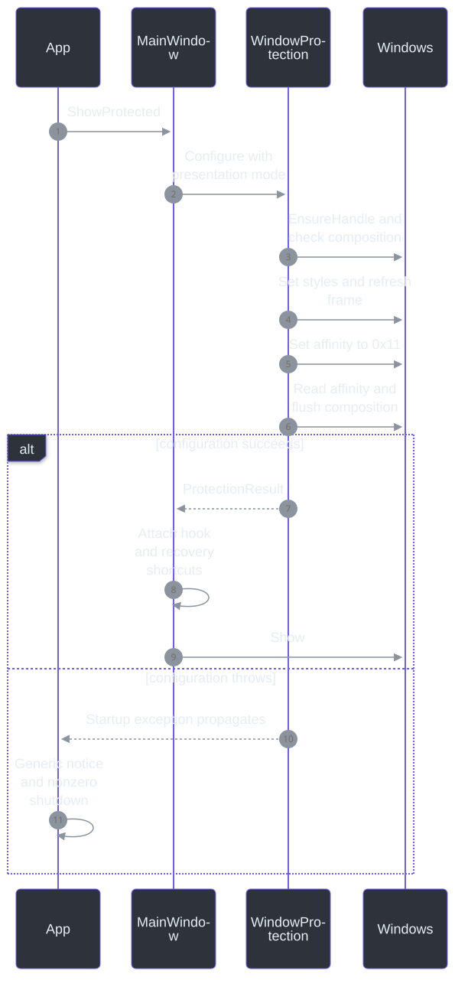
Editable Mermaid source
---
config: {"theme":"base","themeVariables":{"darkMode":true,"primaryColor":"#2d333b","primaryBorderColor":"#6d5dfc","primaryTextColor":"#e6edf3","lineColor":"#8b949e","textColor":"#e6edf3","actorBkg":"#2d333b","actorBorder":"#6d5dfc","actorTextColor":"#e6edf3","signalColor":"#8b949e","signalTextColor":"#e6edf3","noteBkgColor":"#161b22","noteBorderColor":"#30363d","noteTextColor":"#e6edf3"}}
---
sequenceDiagram
accTitle: Configure before showing
accDescr: Startup obtains an HWND, configures affinity, and shows only after configuration succeeds.
autonumber
participant App
participant Window as MainWindow
participant Policy as WindowProtection
participant OS as Windows
App->>Window: ShowProtected
Window->>Policy: Configure with presentation mode
Policy->>OS: EnsureHandle and check composition
Policy->>OS: Set styles and refresh frame
Policy->>OS: Set affinity to 0x11
Policy->>OS: Read affinity and flush composition
alt configuration succeeds
Policy-->>Window: ProtectionResult
Window->>Window: Attach hook and recovery shortcuts
Window->>OS: Show
else configuration throws
Policy-->>App: Startup exception propagates
App->>App: Generic notice and nonzero shutdown
end
Configure calls EnsureHandle, which obtains an HWND without requiring an already-visible content window. It checks Windows build 22000 or later and requires desktop composition. It preserves unrelated extended-style bits, adds WS_EX_TOOLWINDOW, removes WS_EX_APPWINDOW, and conditionally sets WS_EX_NOACTIVATE. SetWindowPos refreshes the frame without moving, resizing, reordering, or activating it. (src\PhantomFudge.App\Native\WindowProtection.cs:12-37)
The affinity setter requests 0x11, WDA_EXCLUDEFROMCAPTURE. A failed setter throws. A successful getter returning anything else also throws. An unavailable getter is recorded in ProtectionResult; it is not treated identically to contradictory readback. Finally, DwmFlush checks submitted composition work. None of these calls creates an independently observed capture-frame barrier. (src\PhantomFudge.App\Native\WindowProtection.cs:36-48,73; docs\ARCHITECTURE.md:142-145)
Why the native wrapper checks zero carefully
GetWindowLong/SetWindowLong can return zero without implying failure. The wrapper clears the last-error slot first, performs the appropriate 32- or 64-bit call, then throws only when a zero result accompanies a nonzero error. This preserves the distinction between a legitimate zero value and an API failure. C# nint represents a native-sized integer; it is not the HWND's logical identity across arbitrary future replacements. (src\PhantomFudge.App\Native\WindowProtection.cs:51-71)
Implementation: focus policy is not pointer capture policy
Present starts with presenting = true. The window uses ShowActivated=false; native setup adds WS_EX_NOACTIVATE; WM_MOUSEACTIVATE returns MA_NOACTIVATE (3). These mechanisms reduce accidental foreground takeover while retaining deliberate pointer interaction. They do not forward clicks through the app. Edit reverses the interaction policy, enables note focus and input methods, and deliberately focuses the editor after successful reveal. (src\PhantomFudge.App\MainWindow.xaml.cs:33,201-205,253-293)
Cursor shape is handled at two levels:
- WPF declares Arrow and
ForceCursoron the window and text controls. WindowMessagehandlesWM_SETCURSORfor the owned HWND by callingCursorPolicy.SetArrow.
The native policy loads resource 32512, the standard Arrow. It does not replace system cursor resources or manipulate global visibility counters. Arrow is also used in Edit; editable text and an I-beam are not inseparable concepts. (src\PhantomFudge.App\MainWindow.xaml:6-9; src\PhantomFudge.App\App.xaml:48-76; src\PhantomFudge.App\MainWindow.xaml.cs:180-184; src\PhantomFudge.App\Native\CursorPolicy.cs:8-24)
A recorder may include, exclude, or separately composite cursor imagery. Consequently, the reported remote cursor disappearance remains unresolved until tested in the actual sharing product and mode. Local foreground preservation, native Arrow equality, and content-exclusion samples answer different questions. (docs\CURSOR-AND-THEMES.md:47-61)
Invalidation hides before waiting
Display/DPI messages, selected session changes, and suspend/resume notifications dispatch InvalidateAsync. It clears protectionReady, hides immediately, then awaits audio Stop. That ordering avoids leaving content intentionally visible while cleanup drains. It cannot revoke frames already captured or make OS notifications instantaneous. Reveal deliberately re-runs Configure. (src\PhantomFudge.App\MainWindow.xaml.cs:206-236,152-164)
Ordinary Hide also stops transcription, but does not destroy the document or exit the process. Mode switching hides, stops audio, changes editability, and reconfigures before showing again. Theme, opacity, and Notes expansion are different operations: they update existing controls rather than changing this native policy. (src\PhantomFudge.App\MainWindow.xaml.cs:239-276,482-521)
If reveal setup fails, TryReveal starts invalidation and records a fixed failure notice. Unsaved text remains in the running process, not in an automatic recovery file. LocalFailureNotice.Record overwrites one timestamped generic notice under %LOCALAPPDATA%\PhantomFudge\last-window-error.txt; it does not serialize the exception, note, transcript, or filename. Failure to write that notice produces another fixed console message. (src\PhantomFudge.App\MainWindow.xaml.cs:160-164; src\PhantomFudge.App\LocalFailureNotice.cs:9-29)
Recovery without a taskbar button
The shortcuts are Ctrl+Alt+Space for visibility and Ctrl+Alt+E for deliberate editing. Registration failures produce an inline status while preserving second-launch recovery. These are fixed defaults, not a currently implemented configurable-hotkey UI. (src\PhantomFudge.App\MainWindow.xaml.cs:115-143,186-197; src\PhantomFudge.App\Native\WindowHotkeys.cs:13-18)
SingleInstance derives a name from the current Windows SID, creates a session-local mutex, and exposes a CurrentUserOnly named pipe. A second launch sends six bytes, REVEAL, with a five-second connection deadline. The listener reads a six-byte command with a two-second request deadline; it does not deserialize notes, paths, scripts, or executable commands. This is narrow recovery IPC, not a general command server. (src\PhantomFudge.App\Native\SingleInstance.cs:18-75)
RevealAndReset invokes monitor-aware clamping before protected reveal. CurrentMonitorWorkArea converts the HWND's nearest monitor work rectangle into WPF units, falling back to SystemParameters.WorkArea only when a handle or monitor query is unavailable. Recovery accounts for minimized restore bounds and can reduce minimum dimensions to fit a constrained work area; it is not persisted placement restoration or broad mixed-monitor qualification. (src\PhantomFudge.App\MainWindow.xaml.cs:146-149; src\PhantomFudge.App\MainWindow.Layout.cs:14-53; src\PhantomFudge.Core\WorkspaceLayout.cs:17-42)
Why auxiliary surfaces change the problem
Capture policy is applied to the HWND passed to the native setter, not to an abstract application identity. Consequently, moving a find box from an inline panel into a separate popup would change the surface inventory even if it looked almost identical. The current find and unsaved-confirmation controls are elements of MainWindow.xaml; text-box context menus and spell checking are disabled in the application style. These choices reduce additional app-generated surfaces, but do not establish that every framework helper, input-method candidate, or accessibility window has been qualified. (src\PhantomFudge.App\Native\WindowProtection.cs:24-37; src\PhantomFudge.App\MainWindow.xaml:195-210,675-680; src\PhantomFudge.App\App.xaml:48-50; docs\QUALIFICATION.md:120-122,147-148)
Native Open/Save dialogs are a deliberate exception available through Edit. Their behavior must not be described as inheriting the main window's capture assurance merely because ShowDialog(this) supplies an owner. The current UI explicitly refuses saving/exporting in Present and reports the dialog boundary after Open. This is a concrete example of preferring a narrower, understandable workflow over an unsupported “everything this process draws is private” promise. (src\PhantomFudge.App\MainWindow.xaml.cs:306-311,373-390,399-405,828-834)
Worked example: a display change during transcription
The following Python-shaped pseudocode explains ordering only; it is not production code, a Win32 binding, or a proposal to port the WPF application:
async def invalidate():
state.protection_ready = False
window.hide() # Do not wait for recognizer drain first.
await stop_transcription()
status.set_generic_reason()
def reveal():
try:
configure_native_window(nonactivating=state.presenting)
state.protection_ready = True
window.show()
except KnownProtectionFailure:
schedule(invalidate())
record_generic_local_notice()
In C#, Task represents eventual completion, while Dispatcher.BeginInvoke schedules work on the WPF UI thread. The code must arrange both: a native notification must not directly manipulate controls on an arbitrary thread, and waiting for Stop must not precede Hide. Dispatch and InvalidateAsync express those responsibilities separately. (src\PhantomFudge.App\MainWindow.xaml.cs:170-174,206-236)
Tests, limitations, and review questions
CaptureProof.RunAsync establishes an unprotected synthetic positive control and an underlying baseline, then samples four show cycles with four protected frames each. Its outcome is deliberately named PASS_LOCAL_GDI_SAMPLES_ONLY; Grab uses cropped GDI BitBlt. This is not continuous first-frame coverage or qualification of Teams, Zoom, Meet, OBS, or their cursor streams. Do not run this visible positive-control fixture during an actual presentation merely to read the chapter. (src\PhantomFudge.App\Diagnostics\CaptureProof.cs:19-114,168-199)
RunUiSmokeAsync separately checks initial foreground preservation, passive styles, MA_NOACTIVATE, and the Arrow policy. Its rendered PNGs are visual-tree diagnostics, not independent capture evidence. All meeting-product qualification rows remain open in the maintained matrix. (src\PhantomFudge.App\MainWindow.xaml.cs:930-976,1206-1219; docs\QUALIFICATION.md:28-53)
Question: Does successful getter value 17 establish universal exclusion?
Answer: No. It confirms a configuration readback; recorder behavior still needs independent evidence.
Question: Should a protection failure display the note inside an error dialog so it can be recovered?
Answer: No. The implemented failure path hides and preserves memory, emitting only a generic notice.
Question: Can a local Arrow test close the remote-cursor issue?
Answer: No. Record the sharing backend, source type, pointer-capture setting, and actual recipient frames. These answers follow the configuration, failure, and qualification contracts above. (src\PhantomFudge.App\Native\WindowProtection.cs:41-48; src\PhantomFudge.App\LocalFailureNotice.cs:11-24; docs\QUALIFICATION.md:142-148)
References and maintenance checkpoints
- Native configuration:
Configure, style wrappers, andFlushComposition. - Window lifecycle:
ShowProtected,WindowMessage, invalidation, and recovery. - Cursor policy, hotkeys, and instance recovery.
- Failure notice and synthetic capture proof.
- Qualification matrix and cursor investigation.
Revisit this chapter whenever HWND construction, native styles, popups, focus behavior, or the rendering framework changes. Such changes require new evidence, not inheritance of an old compatibility claim. (docs\QUALIFICATION.md:24-26,113-130)
05 — Desktop UI and Semantic Themes
Overview: a reading surface before an editor
The most important UI decision is not a color. It is which activity receives space and focus by default. Phantom Fudge starts with passive transcript reading, Q/A expanded and Notes collapsed. Question typing has its own deliberate transition: click a transcript row or choose Type / edit, rather than entering global Notes Edit. This separates “I need to see the meeting” from “I intend to compose a question.” The initial fields and XAML establish the reading surface. (src\PhantomFudge.App\MainWindow.xaml.cs:33-35,50-96; src\PhantomFudge.App\MainWindow.xaml:262-658.) Direct selection enters question editing through TranscriptRows_SelectionChanged; the default Q/A expansion is in InitializeQuestionView. (src/PhantomFudge.App/MainWindow.TranscriptSelection.cs:94-147.)
The UI is native C#/WPF. WASAPI capture begins only after explicit Start, for Computer, Mic, or Both. Both is the initial selection, not an instruction to record immediately. Labels describe input sources, not identified speakers. The planned Azure Ask experience is not an existing control or hidden mode. (src\PhantomFudge.App\MainWindow.xaml.cs:35,652-700; src\PhantomFudge.Core\AudioSource.cs:3-30; docs\IMPLEMENTATION-STATUS.md:227-243)
Newcomer path: read the visual-tree map, then the worked theme change. Principal-engineer path: inspect resource replacement, alpha compositing, passive selection, and the limits of the contrast tests. Chapter 04 explains the native capture and cursor policy; Chapter 06 explains the content retained beneath the controls.
Actual WPF visual-tree render with synthetic content, not a screen-sharing capture. The fixture inserts source-labelled transcript examples without starting transcription. It demonstrates layout, not recognition accuracy, remote exclusion, or reader acceptance. (src\PhantomFudge.App\MainWindow.xaml.cs:920-968,1206-1219)
All documentation device labels are synthetic. Later fixture images may show "Wait until transcription has fully stopped before clearing": the fixture deliberately exercises that guard without opening audio inputs, then retains its status text while rendering opacity and Notes. It is not a report of a live recording. (src\PhantomFudge.App\MainWindow.xaml.cs:1061-1095)
Architecture: one visual tree, explicit priorities
The top-left book icon swaps the workspace for NOTEPAD IS READY and the same icon-only return action in the same HWND. The disabled workspace is detached, not painted over; its controls/models still receive transcript and answer updates. The user explicitly requested continuing work, so this path never calls the normal Hide/Stop/Cancel lifecycle. Uncover restores layout and content. File/confirmation operations block covering so their required decisions cannot disappear. (Cover implementation.)
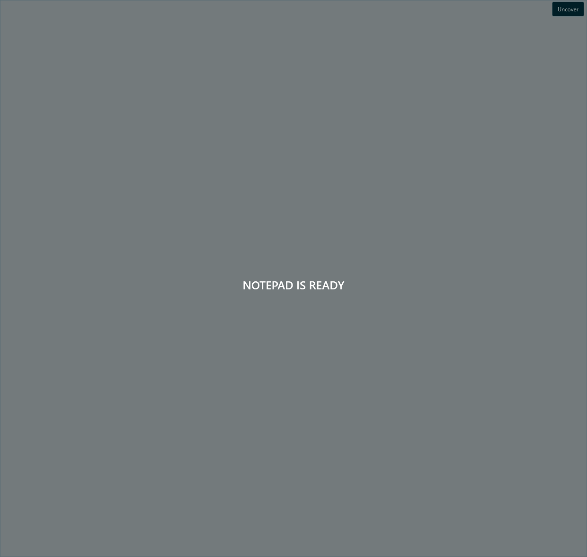
Fresh in-process automation traversal sees the cover after the window peer's supported children-cache refresh, but the fixture also demonstrates that an already-retained value provider can still read question text. The application title/process identity remains Phantom Fudge. No claim of global screen-reader, process or recorder invisibility follows; read the feasibility matrix.
The red12-unit recording dot beside the transcript heading follows transcriber.IsRunning,
not input selection, microphone level or the presence of transcript text. UpdateAudioControls
refreshes it on start/status/stop/fault paths. Hidden state reserves the icon's place so the
controls do not jump. A solid outline and accessible recording-state name accompany the theme-red
fill. This is the app's active-transcription state, not an audio-file save or a replacement for the
Windows microphone indicator. (Indicator,
UpdateAudioControls.)
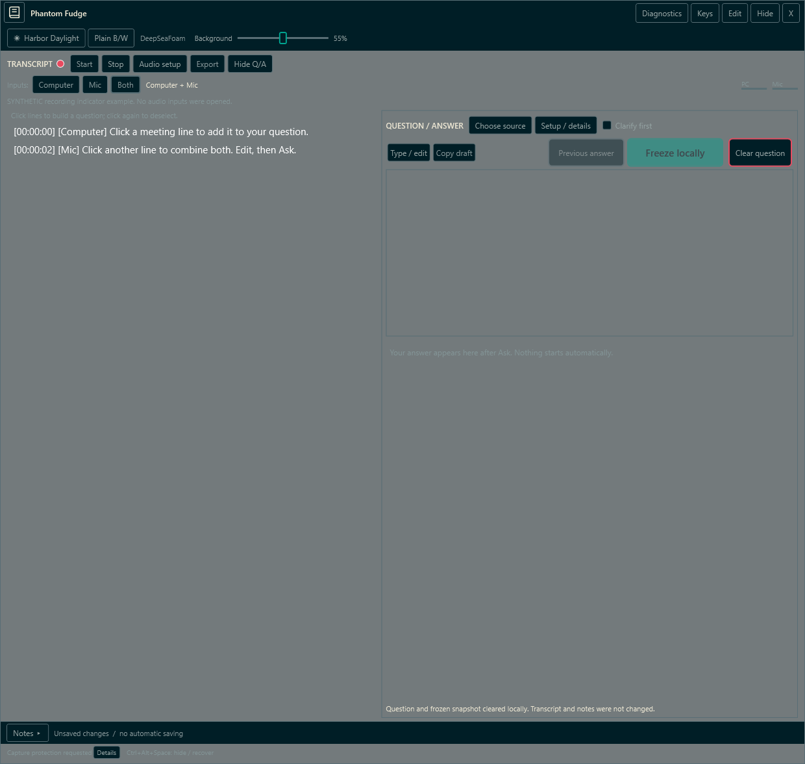
Synthetic WPF indicator example: the fixture drives only presentation state and opens no audio inputs.
The primary action row contains Previous answer, then large accent-filled Ask, followed
immediately by Clear question with a two-unit red ThemeError border. Type/edit and Copy
remain in their left group. Below560WPF units, the context button narrows from118to80 and secondary
captions become Edit/Done/Reply and Copy, with full accessible names retained. Secondary buttons
may wrap vertically within their group (Reply above Copy); no added full-width row consumes the compact answer reader.
Ask stays148WPF units wide and at least44high with15-unit semibold text; Clear is98wide and at
least44high. Hover/focus do not replace Clear's red border. Existing mode labels and handlers remain
guarded: visual emphasis is not permission to send.
(Action row and local templates,
IsPrimaryAskAction;
src/PhantomFudge.App/MainWindow.AnswerFont.cs:45-62.)
The owner later requested a50%reduction specifically in answer text. AnswerText defaults to10WPF
font units normally and9in narrow short layouts, replacing20and18. Question typography
is unchanged. The same reader displays clarification interpretations, so they use the smaller
answer type as well. (src/PhantomFudge.App/MainWindow.xaml:564-568;
src/PhantomFudge.App/MainWindow.Layout.cs:93-94.)
The 19:36 keyboard increment adds a Size slider and local reading controls: choose 8–24 via the
slider, :font 14, or +/- in Read. A chosen value takes precedence over responsive defaults
across resize, but is not saved for restart. Ctrl+Alt+K / Keys enters local modal control;
v → movement/Space → Enter reviews selected text, then Ctrl+Enter explicitly submits. Edit
remains literal text entry. Ordinary mode changes and masking preserve capture/provider work;
:devices instead refuses busy audio/answers and closes Q/A for setup. Read the canonical
keyboard guide; final runtime-fixture evidence is recorded there, not a release claim.
(src/PhantomFudge.App/MainWindow.AnswerFont.cs:9-43;
src/PhantomFudge.App/MainWindow.Keyboard.cs:87-139,218-370;
src/PhantomFudge.App/MainWindow.KeyboardSelection.cs:110-159.)
The compact-font refinement temporarily gives Select/Search the transcript area and restores Q/A
on leaving selection, preserving its intended expansion and running work. Other compact keyboard
modes, or a chosen size 14+ with a visible answer, prioritize Q/A instead; wide columns are unchanged.
This is layout visibility, not the explicit Q/A close/cancel path.
See compact reading space;
the final exporter/full UI fixture passed, including compact selection and passive size24fit.
The source atlas and handbook include this increment. Edit stays armed after submit; asynchronous
interpretation retargets the visible editable reply/original field only while the app is foreground.
(src/PhantomFudge.App/MainWindow.Keyboard.cs:127-139,301-306.)
The later13:15request reduces transcription text by25%: finalized Computer/Mic rows use15instead of20, and live partials use13.5instead of18, or10.5instead of14in compact Q/A. Question, answer and device-card text retain their existing sizes. The current viewport fixture checks the exact final and partial sizes across compact and normal layouts. (Transcript declarations, responsive assignment, font/layout assertions.)
The default-off Clarify first control adds another deliberate path: interpret the selected
question, then type a separate Yes/correction reply. It retains the original draft and renders
interpretation/reply controls in the same window; typing or model completion never sends the next
turn. See the complete clarification chapter and
MainWindow.Clarification.
The separate default-off Previous answer toggle snapshots only a completed displayed answer on explicit Ask. It is session-only, locks during busy work/active clarification, and resets on Clear/provider change. Setup/details reads prior text from the submitted request, not the new answer currently replacing it. The same snapshot survives interpretation, corrections and confirmation. This addition is local source only, not in v0.2.0-preview.1. (Context controller, full usage.)
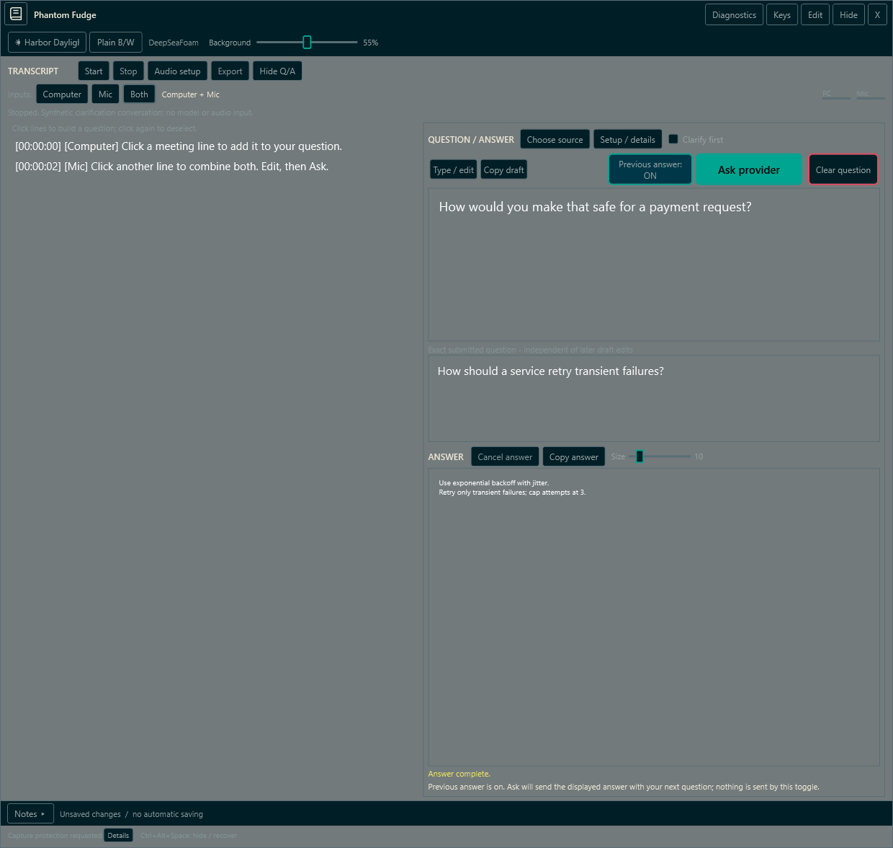
Fake-provider WPF illustration; not a model-quality or recorder-qualification result.
The requested window is now 1240 by 1520 WPF units, twice the former dimensions, with a
normal minimum of 470 by 560. WorkspaceLayout.FitToWorkArea clamps placement and size with a
12-unit inset rather than putting controls off-screen. The observed 1920 by 1200 work area fits
1240 by 1176. Smaller work areas can lower the minimum safely; this is not a demand for a
physically impossible 1520-pixel height. (src/PhantomFudge.Core/WorkspaceLayout.cs:8-42.)
At widths of at least 900, transcript and Q/A use reading columns. Narrow layouts stack them;
short-window source/setup tools can temporarily replace the transcript pane until closed.
There is no outer scrolling main/question panel, while long text retains its own scrollbar.
Primary controls remain outside those text scroll regions. (src/PhantomFudge.App/MainWindow.Layout.cs:58-111.)
Editable Mermaid source
---
config: {"theme":"base","themeVariables":{"darkMode":true,"primaryColor":"#2d333b","primaryBorderColor":"#6d5dfc","primaryTextColor":"#e6edf3","lineColor":"#8b949e","textColor":"#e6edf3","clusterBkg":"#161b22","clusterBorder":"#30363d"}}
---
flowchart LR
accTitle: Transcript-first visual tree
accDescr: One window contains opaque controls, a translucent content tint, selectable transcript rows and an initially expanded question panel. Direct clicks compose a question without submitting it.
Window["MainWindow"] --> Tint["Root background tint"]
subgraph Tree["One WPF content tree"]
Tint --> Header["Caption and mode"]
Tint --> Themes["Themes and opacity"]
Tint --> Audio["Inputs and audio setup"]
Tint --> Transcript["Left: growing transcript"]
Tint --> Question["Right: Q/A (expanded)"]
Transcript --> Final["Selectable final rows"]
Transcript --> Partial["Selectable unfinished rows"]
Final -->|Click to compose| Question
Partial -->|Click to compose| Question
Tint --> Notes["Collapsed notes"]
Tint --> Notices["Inline status and confirmation"]
end
style Tree fill:#161b22,stroke:#30363d,color:#e6edf3
style Window fill:#2d333b,stroke:#6d5dfc,color:#e6edf3
style Tint fill:#2d333b,stroke:#6d5dfc,color:#e6edf3
style Header fill:#2d333b,stroke:#6d5dfc,color:#e6edf3
style Themes fill:#2d333b,stroke:#6d5dfc,color:#e6edf3
style Audio fill:#2d333b,stroke:#6d5dfc,color:#e6edf3
style Transcript fill:#2d333b,stroke:#6d5dfc,color:#e6edf3
style Question fill:#2d333b,stroke:#6d5dfc,color:#e6edf3
style Final fill:#2d333b,stroke:#6d5dfc,color:#e6edf3
style Partial fill:#2d333b,stroke:#6d5dfc,color:#e6edf3
style Notes fill:#2d333b,stroke:#6d5dfc,color:#e6edf3
style Notices fill:#2d333b,stroke:#6d5dfc,color:#e6edf3
The caption uses WindowChrome with a 38-unit caption region and six-unit resize border. Its buttons opt into hit-testing inside chrome, while the title text does not intercept pointer input. The transcript and editor remain normal content hit regions; transparency is not an instruction to send clicks to another application. (src\PhantomFudge.App\MainWindow.xaml:112-147)
Components: separate meaning from painting
| Layer | What it owns |
|---|---|
ThemePalette |
Immutable semantic color values and the three theme identities. (src\PhantomFudge.Core\ThemePalette.cs:3-29) |
ThemeBrushes |
Conversion to frozen WPF brushes and resource-key replacement. (src\PhantomFudge.App\ThemeBrushes.cs:9-41) |
| Application styles | Templates for button, text, list, scrollbar, slider, and progress states. (src\PhantomFudge.App\App.xaml:6-239) |
ApplyTheme |
Current selection, button labels, accessible name, and reapplication of root alpha. (src\PhantomFudge.App\MainWindow.xaml.cs:492-509) |
UpdateInteractionControls |
Read-only/focus/input-method policy and file-operation availability. (src\PhantomFudge.App\MainWindow.xaml.cs:278-293) |
TranscriptRow / TranscriptRows_SelectionChanged |
Immutable display/segment pairing, whole-row toggles, draft guards and deliberate question focus. (src/PhantomFudge.App/MainWindow.TranscriptSelection.cs:13-20,85-147) |
RunUiSmokeAsync |
Synthetic layout, style, preservation, and interaction assertions. (src\PhantomFudge.App\MainWindow.xaml.cs:920-1196) |
A C# record is useful here because palette data is a value-shaped object rather than a control. Think of a frozen Python dataclass containing named color strings—not of a Python GUI implementation. The WPF-specific brush conversion stays in the App project, while Core tests can inspect the palette without constructing a window. (src\PhantomFudge.Core\ThemePalette.cs:5-26; src\PhantomFudge.App\ThemeBrushes.cs:9-41; tests\PhantomFudge.Core.Tests\ThemePaletteTests.cs:5-17)
Data flow: what a theme click actually changes
The themed button calls NextThemed. DeepSeaFoam advances to Harbor Daylight; every other current value advances to DeepSeaFoam. Plain has a separate button, so the themed toggle is a two-theme companion switch with an exit from Plain, not a three-item carousel. (src\PhantomFudge.Core\ThemePalette.cs:28-29; src\PhantomFudge.App\MainWindow.xaml.cs:507-509)
Editable Mermaid source
---
config: {"theme":"base","themeVariables":{"darkMode":true,"primaryColor":"#2d333b","primaryBorderColor":"#6d5dfc","primaryTextColor":"#e6edf3","lineColor":"#8b949e","textColor":"#e6edf3","clusterBkg":"#161b22","clusterBorder":"#30363d"}}
---
flowchart TB
accTitle: Theme transitions and rendering
accDescr: The companion toggle and Plain reset select a palette, then replace resources without replacing content.
Dark["DeepSeaFoam"] -->|themed toggle| Light["Harbor Daylight"]
Light -->|themed toggle| Dark
Dark -->|Plain button| Plain["Plain"]
Light -->|Plain button| Plain
Plain -->|themed toggle| Dark
Dark -.-> Apply["ApplyTheme"]
Light -.-> Apply
Plain -.-> Apply
Apply --> Brushes["Replace semantic brushes"]
Apply --> Labels["Update names and icon"]
Apply --> Alpha["Reapply current background alpha"]
style Dark fill:#2d333b,stroke:#6d5dfc,color:#e6edf3
style Light fill:#2d333b,stroke:#6d5dfc,color:#e6edf3
style Plain fill:#2d333b,stroke:#6d5dfc,color:#e6edf3
style Apply fill:#2d333b,stroke:#6d5dfc,color:#e6edf3
style Brushes fill:#2d333b,stroke:#6d5dfc,color:#e6edf3
style Labels fill:#2d333b,stroke:#6d5dfc,color:#e6edf3
style Alpha fill:#2d333b,stroke:#6d5dfc,color:#e6edf3
ThemeBrushes.Apply replaces semantic resources such as ThemeText, ThemeSurface, ThemeSelection, and ThemeWarning; it also maps selected WPF SystemColors resource keys. Controls reference these through DynamicResource, allowing replacement to update existing controls. Each new brush is frozen, so later changes replace a resource rather than mutating a shared brush in place. (src\PhantomFudge.App\ThemeBrushes.cs:12-41; src\PhantomFudge.App\App.xaml:9-11,53-58)
ApplyTheme updates the displayed current name, the next theme's button label, a sun/moon glyph, and the button's automation name. It emphasizes the Plain button when selected, then rebuilds the root background using the existing slider value. It does not assign note text, clear the transcript, start audio, or recreate the HWND. (src\PhantomFudge.App\MainWindow.xaml.cs:492-505)
Implementation and tradeoffs
Semantic palettes include interaction states
The following are selected roles, not the entire palette:
| Role | DeepSeaFoam | Harbor Daylight | Plain B/W |
|---|---|---|---|
| Background | #000F13 |
#F3F2E9 |
#FAF9F6 |
| Surface | #001E26 |
#E3ECE7 |
#F0F0EC |
| General UI text | #93A1A1 |
#355451 |
#202B30 |
| High-contrast reading | #FFFFFF |
#000000 |
#000000 |
| Accent | #00A591 |
#006F63 |
#202B30 |
| Selection | #003748 |
#C7DDD7 |
#D7E1DC |
ThemePalette.For defines these values along with muted, heading, border, hover, selected text, action text, input, warning, and error roles. Plain B/W is a neutral interface name, not literally only two RGB values. The white/black reading role is the owner's October 9 override, not an unchanged canonical color. The maintained provenance document records the canonical palette revision and composites; the WPF mapping is original to this app. (src\PhantomFudge.Core\ThemePalette.cs:5-25; docs\CURSOR-AND-THEMES.md:93-118)
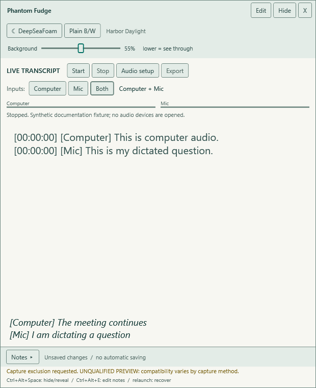
Actual WPF visual-tree render with synthetic content, not a screen-sharing capture. RunUiSmokeAsync applies every theme and checks key resource and foreground colors before rendering the examples. (src\PhantomFudge.App\MainWindow.xaml.cs:982-994)
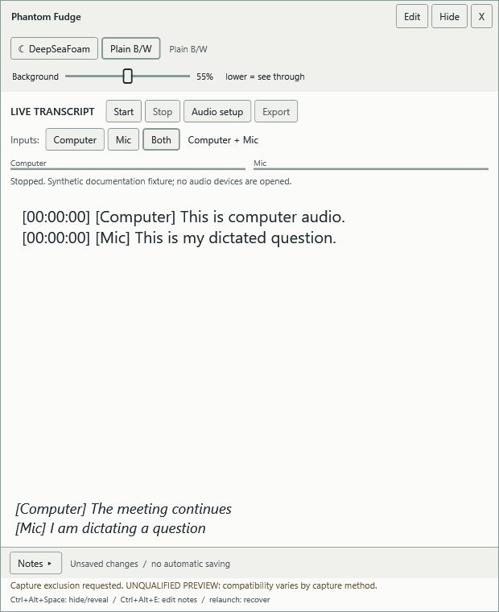
Actual WPF visual-tree render with synthetic content/device labels. Plain B/W is the neutral reset, not a claim that every pixel is exactly black or white. The stopped fixture status makes clear that choosing Both does not mean either source is recording. The corresponding DeepSeaFoam theme-only image is retained separately from the opening transcript fixture in the provenance manifest.

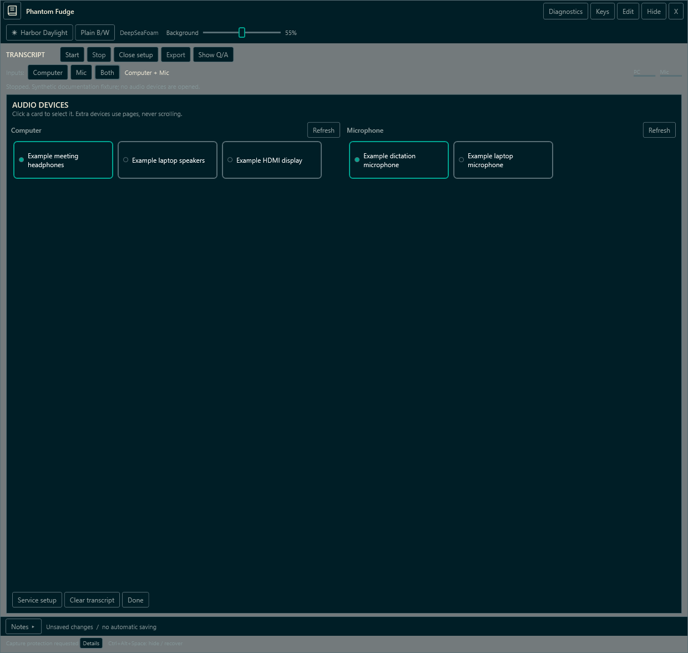
Device selection now uses cards in the full inline reading area. Each source keeps its original
ListBox selection and endpoint record, but the template contains an ItemsPresenter and
WrapPanel, not a ScrollViewer. Width and wrapped friendly-name height determine how many cards
fit. When a large catalogue exceeds that space, explicit Previous/Next controls collapse off-page
containers without replacing the collection or selecting another endpoint. The selected-page label
keeps an off-page selection visible as state. Names can ellipsize only when the available card is
exceptionally constrained; the stored name and endpoint ID are unchanged.
(Card coordinator,
card templates.)
Synthetic470x560fixture with23outputs and17microphones; no audio input was opened. The fixture checks actual card bounds, absence of a ScrollViewer, selection preservation across pages, passive clicks, busy locks, single-source layouts, advanced service controls and empty-state notices. (Card diagnostic.)
Setup replaces the transcript/Q&A reading view only while open. Its bottom Service setup toggle reveals the existing session-only token and guidance; Done restores reading. Normal device selection needs neither token-field scrolling nor a new popup. Capture remains explicit and the existing source-change lock applies throughout starting/running/stopping.
Actual WPF visual-tree render with synthetic content/device labels, not a desktop capture. Computer and microphone selectors are separate; the setup panel scrolls rather than creating a second window. The token is blank. No physical input was opened to produce this view. (src\PhantomFudge.App\MainWindow.xaml.cs:939-958,1001-1003)
Button templates distinguish hover, pressed, keyboard-focused, and disabled states. List items have separate hover and selected presentations. Scrollbars and sliders use app brushes rather than leaving conspicuous system-default fragments. Text boxes suppress their context menu and spell checking, reducing app-generated auxiliary surfaces without removing ordinary deliberate editing. (src\PhantomFudge.App\App.xaml:25-58,84-109,146-225)
Background alpha is not whole-window opacity
The root WindowSurface receives a new brush with:
alpha = round(clamp(percent, 10, 100) × 255 / 100)
At 10%, 55%, and 100%, the byte alpha is respectively 26, 140, and 255. MainWindow remains transparent behind that tint; note and final-transcript control backgrounds are also transparent. The answer-reading tint follows the same slider; its parent no longer blocks transparency with an opaque content container. Header, setup, and confirmation surfaces use opaque theme brushes. The application never fades the glyphs with the background. (src\PhantomFudge.App\MainWindow.xaml.cs:482-489; src\PhantomFudge.App\MainWindow.xaml:7,130,195-197,577-579,279-288,681-687)
The slider exposes 10–100%, defaults to 55%, and snaps to five-percent ticks. It remains available in Present. The implementation does not set Window.Opacity; the diagnostic explicitly checks window/editor/transcript opacity equals one and text brush alpha equals 255. (src\PhantomFudge.App\MainWindow.xaml:165-173; src\PhantomFudge.App\MainWindow.xaml.cs:1087-1091,1118-1121)
Why stop at 10% rather than zero? The maintained design calls out nonzero background alpha as avoiding entirely transparent mouse holes while keeping the surface usable. Why not promise readable text over every background? Composited contrast depends on the underlying desktop: approximately alpha × tint + (1 − alpha) × background. Solid glyphs alone cannot prevent visual interference from a busy slide. Increasing opacity or moving the window is a usability choice, not a capture-policy change. (docs\ARCHITECTURE.md:220-224; docs\CURSOR-AND-THEMES.md:81-86)
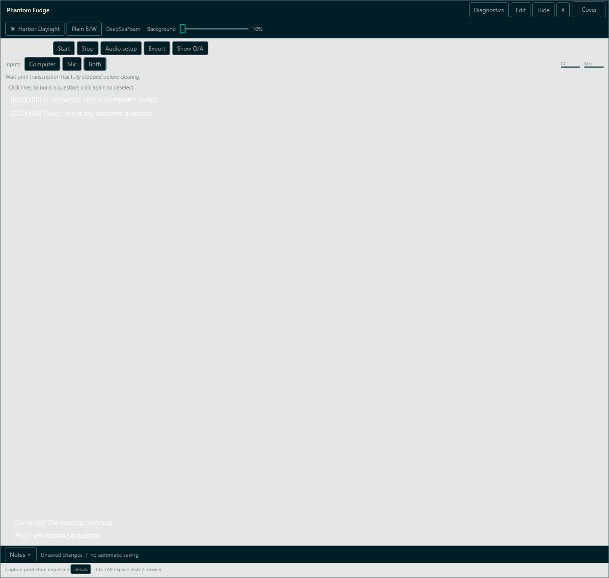
Actual WPF visual-tree render with synthetic content at10% background alpha. The reader's checkerboard is an illustrative backing for transparent PNG pixels, not a captured desktop. Header/control opacity stays unchanged.
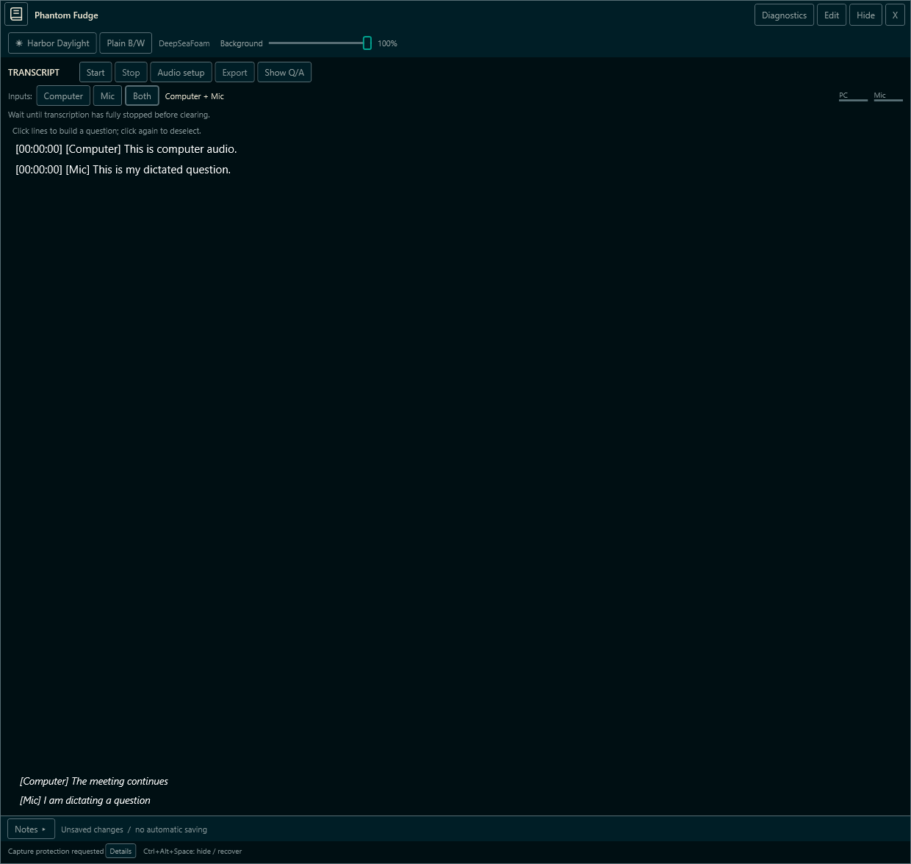
The same synthetic fixture at100% background alpha. Compare background coverage, not whether a recorder can capture the window. Both images come from the diagnostic alpha/render assertions; their retained stop-guard message is explained above. (src\PhantomFudge.App\MainWindow.xaml.cs:1061-1091)
Passive interaction requires more than read-only text
UpdateInteractionControls changes the shared ControlsFocusable resource, note editability, transcript focusability, and editor input-method availability. File operations and export require Edit; token entry additionally requires idle audio. Start is gated by technical readiness and explicit user action, not permission or rehearsal checkboxes. (src\PhantomFudge.App\MainWindow.xaml.cs:278-293,652-700,720-743)
The device selectors illustrate a subtle WPF issue: their ordinary click path requires focus. In Present, OutputDevices_PreviewMouseLeftButtonDown identifies the clicked ListBoxItem, assigns SelectedItem directly, and handles the event. Both playback and microphone lists use this handler. This preserves pointer selection without depending on keyboard focus transfer. (src\PhantomFudge.App\MainWindow.xaml.cs:628-638; src\PhantomFudge.App\MainWindow.xaml:591-631)
Opening Audio setup collapses Notes. Expanding Notes closes Audio setup; collapsing Notes also closes Find. These actions change visibility, not stored text. In contrast, switching Edit/Present hides and stops transcription before reconfiguring the native window. A theme click must not accidentally be implemented through that heavier mode-transition path. (src\PhantomFudge.App\MainWindow.xaml.cs:253-276,511-521,641-649)
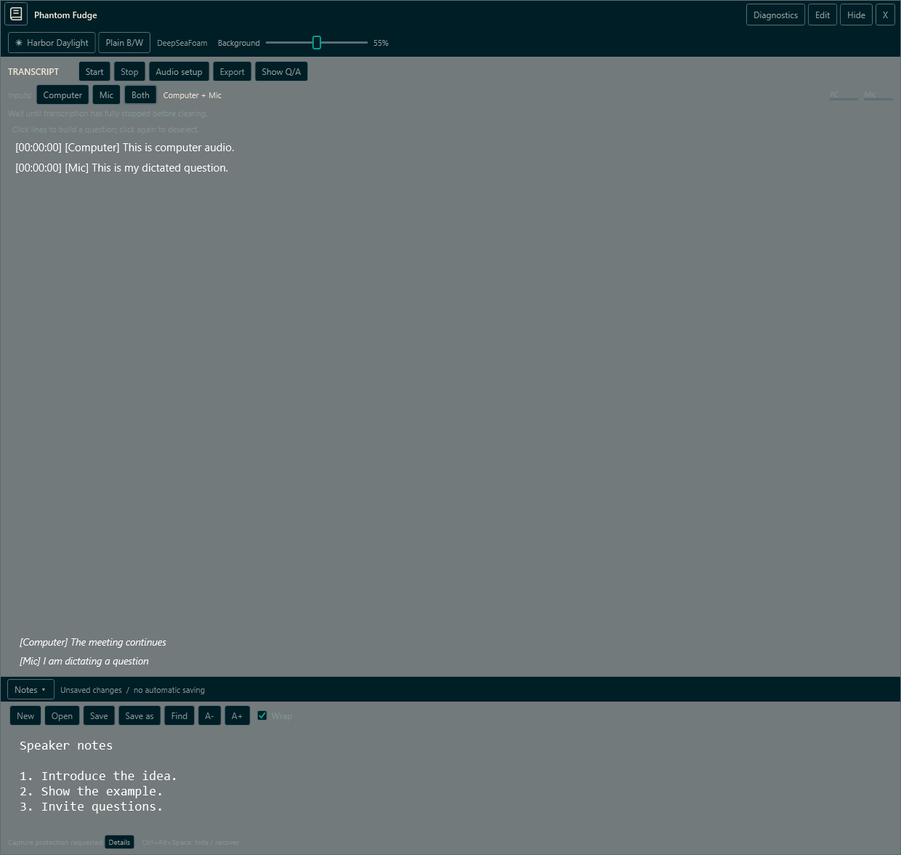
Actual WPF visual-tree render with synthetic content, not a screen-sharing capture. Expansion is shown while still presenting; it does not itself enable editing. (src\PhantomFudge.App\MainWindow.xaml.cs:1092-1095)
The separate Present-after-mode-switch image preserves the same synthetic note/transcript content after the fixture explicitly enters Edit and returns to Present. It illustrates the stable surface, not keyboard-focus or recipient behavior by itself. (src\PhantomFudge.App\MainWindow.xaml.cs:1118-1122)

Worked example: changing appearance without changing the session
Imagine a reader using DeepSeaFoam at 55% with Notes collapsed. They click the themed button, lower Background to 10%, then expand Notes. The theme becomes Harbor Daylight, the root tint becomes alpha 26 in the new background color, and the existing notes become visible but remain read-only. None of these handlers starts or stops capture; an already-running session is not intentionally restarted. (src\PhantomFudge.App\MainWindow.xaml.cs:482-525)
This Python-shaped sketch explains the separation of values and presentation; it is not production code:
def apply_theme(theme):
palette = palettes[theme] # Like the C# record.
resources.replace_colors(palette) # Like DynamicResource replacement.
ui.current_name = palette.name
ui.next_name = palettes[next_themed(theme)].name
ui.root_brush = rgba(palette.background, opacity_percent)
# No document assignment, audio command, or HWND reconstruction.
In the actual C# path, ApplyTheme calls ThemeBrushes.Apply, and brush construction calls Freeze. The slider handler updates the shared root background brush, not text opacity. That small separation makes it possible to test color selection independently of native capture, while still checking the integrated window for text preservation and stable handle identity. (src\PhantomFudge.App\ThemeBrushes.cs:9-41; src\PhantomFudge.App\MainWindow.xaml.cs:492-505,1086-1091,1123-1126)
The local question panel
QUESTION / ANSWER is expanded initially, with Hide Q/A / Show Q/A controlling visibility.
The first-class workflow is to click several Mic/Computer rows directly in the main transcript.
Each ordinary click toggles one whole segment without Ctrl, including all wrapped or embedded
newline text. TranscriptRow pairs the displayed string with its immutable TranscriptSegment;
composition uses raw Text in displayed history order, not click order or parsed labels.
(src\PhantomFudge.Core\TranscriptSegment.cs:3-20,52-65;
src\PhantomFudge.Core\QuestionDraft.cs:18-46;
src/PhantomFudge.App/MainWindow.TranscriptSelection.cs:13-20,85-147;
InitializeQuestionView.)
The live transcript is beside the composer at wide sizes and above it at narrow sizes. In a short,
narrow workspace, explicitly expanded source/setup tools temporarily replace the transcript;
closing those tools restores reading space. Notes and Audio setup close when the composer expands
(src/PhantomFudge.App/MainWindow.Layout.cs:58-145).
Direct selection opens Q/A and closes those tools, then calls SetQuestionEditing(true).
Like Type / edit, this deliberately permits keyboard focus without the global Notes mode
switch that stops audio. Done typing / Escape restores passive behavior. Unlike passive device
selection, a main-transcript click is intentionally activating; it does not stop transcription,
enable Notes editing, freeze a snapshot or send a model question. Native ListBox keyboard/automation
SelectionChanged uses the same composition path.
(src/PhantomFudge.App/MainWindow.TranscriptSelection.cs:94-147;
SetQuestionEditing.)
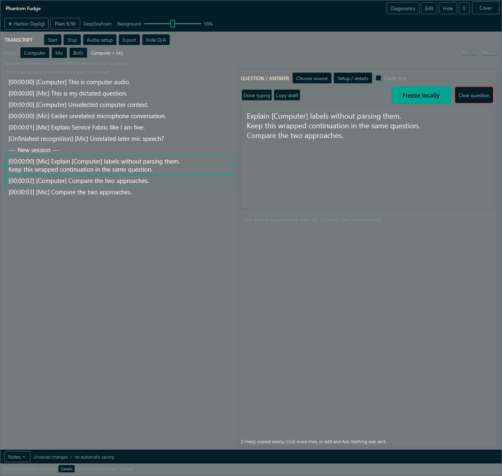
Actual synthetic WPF render, with no audio input or model request. The outlined Mic and Computer rows compose in displayed order even though the fixture clicks Computer first. The Mic row selects its whole wrapped/multiline segment. The duplicate unselected sentence stays outside the draft. (src/PhantomFudge.App/MainWindow.TranscriptSelectionDiagnostics.cs:21-53.)
After a user edit, further direct row changes are refused with an inline retained-draft status; the previous highlights are restored. Clear question resets the draft and highlights so a new set can be chosen. The guard avoids destroying corrections with an incidental click, without adding a popup. Before editing, selected partials follow their stable keys into revised/final rows. Main history survives smaller chooser eviction, including archived unfinished rows; separator rows have no segment and cannot be selected. New finals scroll only if the reader was already at the end. (src/PhantomFudge.App/MainWindow.TranscriptSelection.cs:13-83,94-147.)
The manual fallback is Choose source → Mic / Computer / All → Use selected. Mic is that
chooser's initial filter; All broadens visibility only. Use selected remains an explicit
replacement action, including for an edited draft, and can be used passively before Type / edit.
This differs from guarded direct clicks. See UseQuestionSelection_Click
and the local question contract.
Selected main rows use a thin accent outline rather than an opaque selection fill. Their glyphs
remain white/black and their transparent backgrounds share the root alpha. Keyboard focus has a
separate outline state. See TranscriptRowStyle / TranscriptRowTemplate in
the XAML; this is not universal readability or capture
qualification.
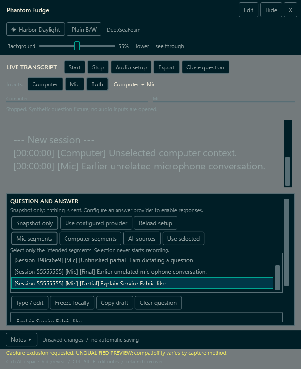
Actual WPF visual-tree render of the manual chooser, with synthetic content/device labels. The selected Mic partial is identified structurally, while other transcript text stays outside the draft.
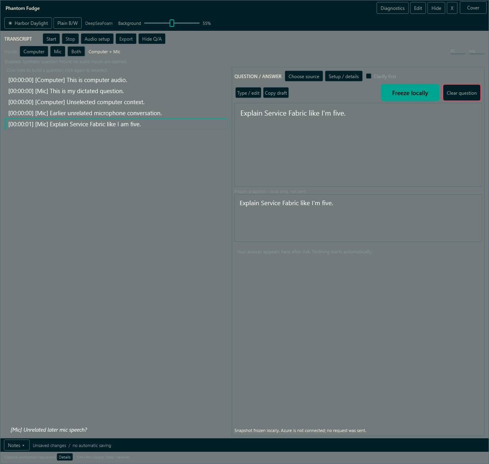
Actual WPF visual-tree render using synthetic content and device labels. The unrelated Computer and earlier Mic lines remain in the transcript but are not in the question. The frozen text is local only; no model was called and no audio endpoint was opened.
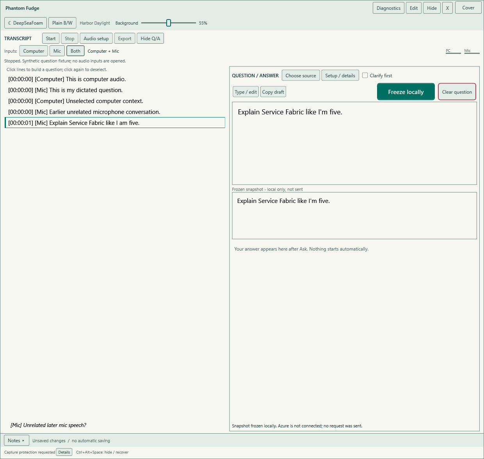
The same synthetic state in Harbor Daylight. Theme changes preserve the draft and frozen
snapshot. A frozen snapshot is a deep immutable copy of selected provenance and exact text; later
recognition or edits can change the draft but not that copy.
(src\PhantomFudge.Core\QuestionSnapshot.cs:5-23; src\PhantomFudge.Core\QuestionDraft.cs:61-95.)
Selection is limited to one capture session,256entries and8192UTF-16 code units including inserted
newlines. The limit rejects an oversized paste/selection/update rather than silently truncating.
User edits detach recognition replacement. Copy and Clear are explicit local actions, and closing
with question content uses the existing unsaved-content guard; note save/transcript export do not
pretend to persist it. A future Azure adapter must send ExactText, not serialize local SourceRefs
that retain pre-edit provenance. Accurate armed-Mic start/end boundaries and direct Azure answers
remain later workstreams; installed Agency answers are implemented separately. (src\PhantomFudge.Core\QuestionDraft.cs:48-79,98-125;
src\PhantomFudge.Core\QuestionSnapshot.cs:17-23.)
Validation, exercises, and open questions
Transparent answers and quiet status
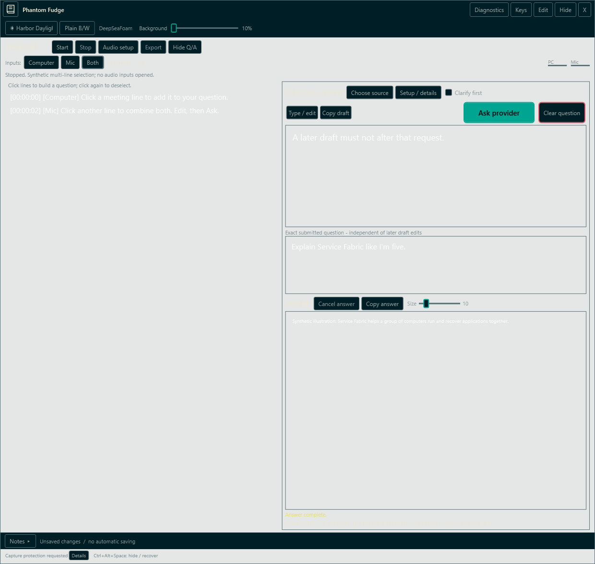
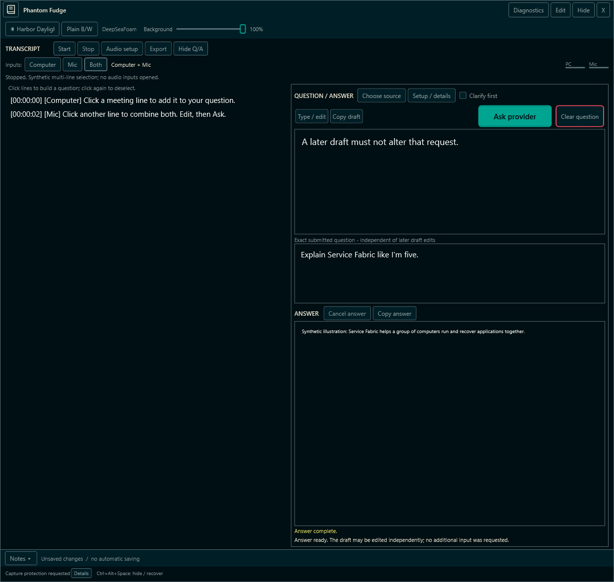
Two actual synthetic WPF renders; text remains opaque while answer-background coverage changes. No model prompt, audio device, desktop capture or real provider preparation produces these images. The separate fixture constructor prevents background warming. Their hashes and dimensions are in the screenshot manifest; see the operational correction.
The footer now says Capture protection requested, not a long persistent yellow warning or a
success claim. Details expands the limitations inline. Error reporting and hide-on-failure
remain separate; reducing warning clutter is not weakening the capture boundary.
(src/PhantomFudge.App/MainWindow.Layout.cs:36-39,148-153.)
Installed-provider answers
The question panel now distinguishes Snapshot only from an explicitly configured answer provider. Its destination notice identifies installed Agency's remote model service versus an offline loopback model. A plain-text answer stays paired with the frozen question, not the draft being edited afterward. Cancel/Hide/clear/close invalidate the active request; partial output is labelled incomplete rather than silently resumed.
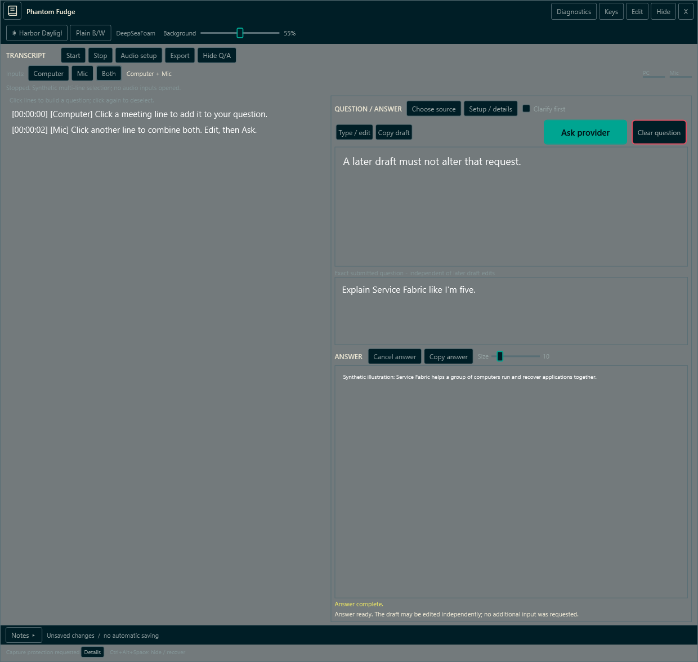
Actual WPF visual-tree render with a deterministic fake provider. This image illustrates the answer surface; it is not a screenshot of the actual Agency smoke response or evidence of capture exclusion. The real synthetic Agency request is separately recorded in the provider smoke receipt. See provider setup and limits.
ThemePaletteTests checks canonical roles, toggle behavior, invalid theme rejection, and contrast of three opaque pairs: reading text/background, selection text/selection, and action text/accent. Its luminance calculation linearizes sRGB channels and requires a ratio of at least 4.5. It does not evaluate every control state, arbitrary backgrounds, or human comfort. (tests\PhantomFudge.Core.Tests\ThemePaletteTests.cs:5-74)
RunUiSmokeAsync checks passive device selection, theme resources, alpha samples, scrolling, caption/resize/editor hit tests, and preservation across visibility/mode operations. The documentation mode substitutes generic device names and synthetic text. PNGs use RenderTargetBitmap on the actual visual tree; they are not desktop screenshots with the underlying application composited behind them. No live capture is necessary to understand these fixtures. (src\PhantomFudge.App\MainWindow.xaml.cs:942-968,1004-1121,1206-1219)
Exercise: Why not implement translucency as Opacity = 0.1 on the window?
Answer: That would fade text and controls as well as the background, violating the implemented solid-text invariant.
Exercise: After Plain, which theme does the companion button select?
Answer: DeepSeaFoam; NextThemed has only one special case, DeepSeaFoam → Harbor Daylight.
Review question: What still needs people and hardware?
Answer: Readability over real backgrounds, accessibility and mixed-DPI behavior, presentation-focus acceptance, and recipient-side content/cursor qualification. Local tests do not supply owner approval. (src\PhantomFudge.App\MainWindow.xaml.cs:1087-1091; src\PhantomFudge.Core\ThemePalette.cs:28-29; docs\IMPLEMENTATION-STATUS.md:371-379)
References and maintenance checkpoints
- Main window layout and interaction code.
- Direct transcript selection and synthetic selection diagnostics.
- Application templates: state styling and dynamic resources.
- Palette values, brush adapter, and contrast tests.
- Source labels and palette provenance.
Theme and opacity choices are session-only. Persisted preferences and broader accessibility acceptance must not be inferred from the current controls. Any future popup, template, or rendering change should revisit both local usability assertions and the capture qualification matrix. (docs\CURSOR-AND-THEMES.md:77-86; docs\QUALIFICATION.md:113-130)
06 — Notes, Transcripts, and Explicit Storage
Overview: persistence is a deliberate boundary
Seeing text, retaining it in memory, and saving it are three different events. Phantom Fudge keeps one editable note and an in-memory transcript; neither is automatically a file. The note tracks its last successful saved value. The transcript tracks its last explicitly exported value. These distinctions let the UI warn about unsaved work without silently persisting meeting content. They also mean a crash can lose unexported text: the preview does not implement automatic recovery. (src\PhantomFudge.App\MainWindow.xaml.cs:24-32,303-323,424-431,848-855; docs\IMPLEMENTATION-STATUS.md:317-322,378-379)
Capture exclusion does not extend to a .txt file, the clipboard, a native file dialog, or process memory. File storage is therefore designed for bounded input and accidental-overwrite resistance, not advertised as a secure vault. Saving to a user-selected location is an explicit act with the ordinary privacy properties of that location. (src\PhantomFudge.App\MainWindow.xaml.cs:390,431; docs\PRODUCT.md:209-225)
Newcomer path: start with the transcript example, then follow Save. Principal-engineer path: inspect session-local ID reset, snapshot comparisons, byte bounds, and the remaining check-to-replace race. Chapter 11 explains why session reset must wait for final draining.
Architecture: separate content lifetimes, one file primitive
Notes use the WPF text editor as their current text surface. TranscriptBuffer separately owns accumulated final text and source-specific unfinished text. Both explicit note saves and transcript exports use NoteFileStore; no recognizer callback writes a document file. (src\PhantomFudge.App\MainWindow.xaml.cs:303-304,399-444,796-863)
Main transcript rows also retain immutable segment references for direct selection. This lets a reader choose older visible text after the smaller structured chooser evicts it, without parsing the formatted export or changing its capacity/format. Selecting a row creates or revises a local draft, not a saved document. (src/PhantomFudge.App/MainWindow.TranscriptSelection.cs:13-64,118-131.)
Editable Mermaid source
---
config: {"theme":"base","themeVariables":{"darkMode":true,"primaryColor":"#2d333b","primaryBorderColor":"#6d5dfc","primaryTextColor":"#e6edf3","lineColor":"#8b949e","textColor":"#e6edf3","clusterBkg":"#161b22","clusterBorder":"#30363d"}}
---
flowchart TB
accTitle: Content and persistence boundaries
accDescr: Save and Export alone write document files. Structured transcript rows separately supply explicitly selected local drafts and snapshots without changing export formatting.
Editor["NoteEditor"] --> Save["Explicit Save"]
Events["Transcript events"] --> Buffer["TranscriptBuffer"]
Events --> Segments["Structured segments"]
Segments --> Rows["Main selectable rows"]
Rows -->|Direct clicks| Draft["Copied local draft"]
Draft -->|Explicit Ask| Frozen["Immutable snapshot"]
Buffer --> Finals["Final text"]
Buffer --> Partials["Per-source partials"]
Finals --> Export["Explicit Export"]
Partials -->|marked unfinished| Export
Save --> Store["NoteFileStore"]
Export --> Store
Store --> File["Chosen UTF-8 file"]
File -->|Open snapshot| Editor
style Editor fill:#2d333b,stroke:#6d5dfc,color:#e6edf3
style Save fill:#2d333b,stroke:#6d5dfc,color:#e6edf3
style Events fill:#2d333b,stroke:#6d5dfc,color:#e6edf3
style Buffer fill:#2d333b,stroke:#6d5dfc,color:#e6edf3
style Finals fill:#2d333b,stroke:#6d5dfc,color:#e6edf3
style Partials fill:#2d333b,stroke:#6d5dfc,color:#e6edf3
style Export fill:#2d333b,stroke:#6d5dfc,color:#e6edf3
style Store fill:#2d333b,stroke:#6d5dfc,color:#e6edf3
style File fill:#2d333b,stroke:#6d5dfc,color:#e6edf3
style Segments fill:#1e3a5f,stroke:#4a9eed,color:#e0e0e0
style Rows fill:#1e3a5f,stroke:#4a9eed,color:#e0e0e0
style Draft fill:#2d4a3e,stroke:#4aba8a,color:#e0e0e0
style Frozen fill:#2d4a3e,stroke:#4aba8a,color:#e0e0e0
Components and units
| Component or value | Contract |
|---|---|
NoteSnapshot |
Text, UTF-8 BOM presence, and SHA-256 fingerprint of original bytes. (src\PhantomFudge.Core\NoteFileStore.cs:6,41-44) |
NoteFileStore.MaximumBytes |
1,048,576 encoded bytes, including a three-byte BOM when present. (src\PhantomFudge.Core\NoteFileStore.cs:12-19) |
TranscriptBuffer.MaximumCharacters |
250,000 .NET character units for accumulated final/session text; partials are separately bounded. (src\PhantomFudge.Core\TranscriptBuffer.cs:8-10,23-45,63-66) |
TranscriptEvent |
Type, text, optional ID/timestamps/source; an event, not a speaker identity. (src\PhantomFudge.App\Audio\TranscriptEvent.cs:9-15) |
AudioSourceNames |
Wire names computer/microphone; display names Computer/Mic. (src\PhantomFudge.Core\AudioSource.cs:16-30) |
savedText / exportedTranscript |
Successful persistence baselines used for equality-based dirty checks. (src\PhantomFudge.App\MainWindow.xaml.cs:28-29,303-304) |
These units must not be conflated. A C# string length counts UTF-16 code units, not UTF-8 bytes or human-perceived characters. Fits asks the strict encoder for its actual byte count, including BOM allowance; unpaired surrogates fail rather than becoming replacement characters. The paste handler checks the resulting note after selection replacement, while saving checks again. This is not a universal keystroke-by-keystroke size limiter on the editor. (src\PhantomFudge.Core\NoteFileStore.cs:13-24; src\PhantomFudge.App\MainWindow.xaml.cs:468-476; src\PhantomFudge.App\MainWindow.xaml:681-688)
Data flow: recognition becomes a readable history
Transport events are dispatched to the UI thread and handled by ReceiveTranscript. A partial calls SetPartial; a final calls AddFinal. The UI updates structured question state and the visible rows, then hides the placeholder when content exists. Invalid data or a full transcript stops transcription and preserves the existing buffer for export. (src\PhantomFudge.App\MainWindow.xaml.cs:66,170-174,796-824.) AppendFinalTranscriptRow follows a new final only when the scrollbar was already at the end; otherwise choosing older history does not jump to the latest speech. Partial rows refresh independently. (src/PhantomFudge.App/MainWindow.TranscriptSelection.cs:22-64.)
Partials replace a dictionary entry rather than append to history. Keys distinguish Computer and Mic; a legacy unspecified source has its own key. Display ordering is by source key, not arrival time. A final removes only its source's partial. This prevents a Computer sentence from erasing a simultaneously unfinished dictated question. (src\PhantomFudge.Core\TranscriptBuffer.cs:14-19,41-46,69-71,87-96)
Final IDs are globally increasing within a session, not independently increasing per source. AddFinal ignores an ID no greater than the last accepted ID before removing any partial. An empty valid final advances the ID and clears its source's partial without appending an empty transcript line. The socket is stricter at the protocol boundary: non-increasing received IDs are invalid messages, rather than harmless deduplication. (src\PhantomFudge.Core\TranscriptBuffer.cs:48-72; src\PhantomFudge.App\Audio\TranscriptionSocket.cs:446-466)
Timestamps are optional in the buffer and rendered as hours/minutes/seconds. Hours do not wrap at 24. Source timestamps may differ because they describe separate input timelines; the display appends received finals, not a globally time-sorted speaker conversation. (src\PhantomFudge.Core\TranscriptBuffer.cs:58-71; tests\PhantomFudge.Core.Tests\TranscriptBufferTests.cs:85-90; tests\PhantomFudge.Core.Tests\SourceTranscriptTests.cs:13-19)
Session boundaries preserve unfinished work
BeginSession first calculates the space needed to preserve old partials as [Unfinished recognition] lines and append --- New session --- when appropriate. Only after the capacity check succeeds does it append, reset the last ID to zero, and clear partial entries. Failure leaves the previous content available for export. A new Start can therefore retain earlier transcript history without pretending unfinished words were finalized. (src\PhantomFudge.Core\TranscriptBuffer.cs:23-39; tests\PhantomFudge.Core.Tests\TranscriptBufferTests.cs:40-62)
Each partial/final text value is limited to 16,384 character units. Final/session accumulation is capped, but ExportText can additionally include the separately bounded partials and markers; 250,000 is not an exact total-memory budget. The buffer uses a StringBuilder, while properties materialize strings for the UI. This is bounded content management, not a zero-allocation streaming renderer. (src\PhantomFudge.Core\TranscriptBuffer.cs:8-19,41-66,75-77)
File implementation: validate, stage, verify, rename
ReadAsync reads in 16,384-byte chunks and enforces the cap as data arrives rather than trusting a pre-read file length. It recognizes an optional UTF-8 BOM, decodes strictly, and fingerprints the complete original byte sequence. It does not normalize line endings or guess UTF-16. The file is opened with FileShare.ReadWrite, so this is not a locked snapshot against a concurrent external writer. (src\PhantomFudge.Core\NoteFileStore.cs:27-44)
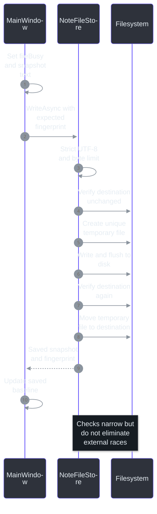
Editable Mermaid source
---
config: {"theme":"base","themeVariables":{"darkMode":true,"primaryColor":"#2d333b","primaryBorderColor":"#6d5dfc","primaryTextColor":"#e6edf3","lineColor":"#8b949e","textColor":"#e6edf3","actorBkg":"#2d333b","actorBorder":"#6d5dfc","actorTextColor":"#e6edf3","signalColor":"#8b949e","signalTextColor":"#e6edf3","noteBkgColor":"#161b22","noteBorderColor":"#30363d","noteTextColor":"#e6edf3"}}
---
sequenceDiagram
accTitle: Explicit note replacement
accDescr: The UI saves a text snapshot through two fingerprint checks and a same-directory staged rename.
autonumber
participant UI as MainWindow
participant Store as NoteFileStore
participant Disk as Filesystem
UI->>UI: Set fileBusy and snapshot text
UI->>Store: WriteAsync with expected fingerprint
Store->>Store: Strict UTF-8 and byte limit
Store->>Disk: Verify destination unchanged
Store->>Disk: Create unique temporary file
Store->>Disk: Write and flush to disk
Store->>Disk: Verify destination again
Store->>Disk: Move temporary file to destination
Store-->>UI: Saved snapshot and fingerprint
UI->>UI: Update saved baseline
Note over Store,Disk: Checks narrow but do not eliminate external races
WriteAsync stages bytes in .phantom-<guid>.tmp beside the destination, with exclusive sharing and CreateNew. It flushes asynchronously and then requests a disk flush. After a second fingerprint check and cancellation check, it calls File.Move with overwrite allowed only when an expected fingerprint was supplied. The finally block attempts to delete any remaining temporary file. This is a same-directory staged/atomic-rename pattern, not an in-place rewrite of the original. (src\PhantomFudge.Core\NoteFileStore.cs:47-80)
The expected fingerprint carries two meanings:
- Null: the caller expects a new path. An existing file is a conflict, and the move must not overwrite.
- Non-null: the caller expects particular existing bytes. Missing or changed bytes are a conflict.
For Save As over an existing file, the UI first obtains that file's current fingerprint after the user's dialog decision. A later conflict reports that edits remain in memory and recommends Save As, without silently choosing whose version wins. (src\PhantomFudge.Core\NoteFileStore.cs:83-95; src\PhantomFudge.App\MainWindow.xaml.cs:408-438)
The tradeoff is optimistic coordination. A writer can still change the destination between the final verification and move. The code provides no cross-process compare-and-swap primitive, secure erasure, encryption, directory durability guarantee, or universal network-filesystem atomicity. Temporary cleanup can itself fail. These limitations matter when interpreting “atomic save”: staged replacement avoids many partial-write failures but does not make every concurrent or catastrophic failure impossible. (src\PhantomFudge.Core\NoteFileStore.cs:60-95; TODO\08_LOCAL_STORAGE.todo:15-34)
UI snapshots and unsaved decisions
SetFileBusy disables the note editor and confirmation panel and updates command availability. SaveNoteAsync captures NoteEditor.Text into content; only a successful write changes savedText, path, and fingerprint. Open updates the editor only after a successful read and resets undo history. Failures retain the current note. (src\PhantomFudge.App\MainWindow.xaml.cs:373-456)
Export similarly snapshots transcript.ExportText() and records that exact value after success. Unlike the note editor, recognition callbacks can continue while an export is awaiting I/O in Edit mode. If new transcript content arrives, it differs from exportedTranscript, so it remains dirty rather than being falsely marked saved. Exports are BOM-free and include unfinished-recognition labels; they do not save raw audio. (src\PhantomFudge.App\MainWindow.xaml.cs:303-304,796-819,828-863)
Exit awaits Stop before checking transcript dirtiness. New/Open concern note dirtiness; Exit considers both. The inline confirmation offers save, export, discard, or cancel. Saving notes alone cannot finish Exit while the transcript remains dirty, and exporting alone cannot proceed while notes remain dirty. In Present, save/export are refused until deliberate Edit. Clear is also refused while running, starting, or stopping, and while transcript content is unexported. (src\PhantomFudge.App\MainWindow.xaml.cs:306-371,399-405,828-834,866-886)
Preserve content; reset the right metadata
New deliberately resets the note path, fingerprint, BOM flag, saved baseline, and editor text. It then toggles undo off and on so a new document does not inherit the previous document's undo history. Open performs an equivalent undo reset only after decoding succeeds. In contrast, collapse, theme, wrapping, and font-size changes do not represent document replacement. Keeping those categories separate prevents a visual operation from accidentally becoming a data-loss operation. (src\PhantomFudge.App\MainWindow.xaml.cs:341-350,381-389,480-481,492-527)
Dirty tracking is equality-based rather than a permanently latched “was edited” bit: returning the note to savedText makes it clean again. That answers whether the current in-memory text differs from the last successful save; it does not answer whether an external program has since edited the disk file. The fingerprint comparison answers that second question when a save is attempted. This separation explains why the UI can show a locally clean note while a later Save reports an external conflict. (src\PhantomFudge.App\MainWindow.xaml.cs:303,424-438,464-466; src\PhantomFudge.Core\NoteFileStore.cs:83-95)
Worked examples and Python comparison
Consider this sequence, using conceptual timestamps:
partial Computer: "remote words"
partial Mic: "my question"
final #1 Computer at 1.0 seconds: "remote sentence"
final #2 Mic at 0.5 seconds: "my question"
The first final removes only the Computer partial. The Mic partial remains until final #2. Output order follows accepted IDs, even though the Mic start time is lower. Replaying final #1 cannot erase newer unfinished Mic text. These exact properties are exercised in SourceTranscriptTests. (tests\PhantomFudge.Core.Tests\SourceTranscriptTests.cs:5-19,37-55)
The following explanatory pseudocode is not production code. It omits encoding, cancellation, filesystem semantics, and native UI behavior:
def add_final(segment_id, source, words):
if segment_id <= last_id:
return False
line = format_line(source, words) if words else ""
check_capacity_before_mutation(line)
last_id = segment_id
partials.pop(source, None)
history.append(line)
async def save_snapshot(text, expected_hash):
verify_current_bytes(expected_hash)
temporary = await write_and_flush_beside_destination(text)
verify_current_bytes(expected_hash)
rename_to_destination(temporary)
The C# Dictionary provides source-keyed replacement, StringBuilder accumulates history, and await using scopes asynchronous file disposal. Two fingerprint checks are an intentional narrowing of a race window, not proof that the window has vanished. (src\PhantomFudge.Core\TranscriptBuffer.cs:9-10,48-72; src\PhantomFudge.Core\NoteFileStore.cs:60-80)
Tests, exercises, and remaining limits
NoteFileStoreTests covers Unicode and mixed-newline/BOM round trips, changed/deleted destinations, invalid UTF-8, oversized reads/writes, byte accounting, and pre-cancelled writes. Transcript tests cover deduplication, unfinished preservation, long timestamps, full-buffer behavior, and independent sources. These are deterministic policy checks, not exhaustive disk-full, permission, crash-recovery, or filesystem-race qualification. (tests\PhantomFudge.Core.Tests\NoteFileStoreTests.cs:13-109; tests\PhantomFudge.Core.Tests\TranscriptBufferTests.cs:5-115; tests\PhantomFudge.Core.Tests\SourceTranscriptTests.cs:5-87; TODO\08_LOCAL_STORAGE.todo:25-34)
Exercise: Why fingerprint bytes rather than only compare decoded text?
Answer: The byte fingerprint also distinguishes representation changes such as a BOM. The snapshot returns text and BOM separately.
Exercise: Is [Mic] a person identifier?
Answer: No; it is the selected microphone track's display label.
Exercise: Does collapsing Notes save or discard them?
Answer: Neither. The handler changes visibility; persistence remains explicit.
The answers follow ReadAsync, AudioSourceNames.DisplayName, and SetNotesExpanded, respectively. (src\PhantomFudge.Core\NoteFileStore.cs:41-44; src\PhantomFudge.Core\AudioSource.cs:25-30; src\PhantomFudge.App\MainWindow.xaml.cs:511-521)
A separate local question is not a saved transcript
Optional Clarify first keeps the original question apart from its reply field and stores only completed interpretation exchanges. Those exchanges are explicitly included with a correction/confirmation request, not appended to the transcript export or ordinary Ask. Clear, toggle-off and destination changes reset this local conversation, not remote retention. (Clarification state.)
The question composer does not change TranscriptBuffer export. Its smaller
StructuredTranscriptStore chooser retains at most256entries/64000characters with source/session/
utterance/revision identity, preserving active partial identities or rejecting an update that cannot
fit. QuestionDraft keeps copies of explicitly selected entries, so rolling history eviction cannot
silently change the chosen prompt. A manual edit prevents later ASR from replacing its text.
(src\PhantomFudge.Core\StructuredTranscriptStore.cs:13-34,134-145;
src\PhantomFudge.Core\QuestionDraft.cs:18-79.)
The main final and partial ListBoxes bind TranscriptRow, pairing display text with a structured
segment. Main-history rows survive chooser eviction until transcript clearing; accumulated history
still obeys TranscriptBuffer's250000-character final/session bound, with live partials separately
bounded. ArchiveTranscriptPartials preserves unfinished identity when a session ends; separators
carry no segment and cannot be selected. This is retained visible history, not unlimited storage
or permission to mix capture sessions. (src/PhantomFudge.App/MainWindow.TranscriptSelection.cs:13-64;
TranscriptBuffer.)
Ordinary clicks toggle several whole segments, including wrapped/multiline text. The handler combines
selected raw Text in displayed history order and calls QuestionDraft.ReplaceSelection, just as
the manual Choose source → Mic / Computer / All → Use selected path does. Both enforce one
capture session,256entries and8192UTF-16 units including newlines before committing. Direct clicks
add a user-edit guard: once corrections exist, retain draft/highlights and show inline status until
Clear question, instead of silently replacing them. Selection itself never calls Ask or Freeze.
(src/PhantomFudge.App/MainWindow.TranscriptSelection.cs:85-147;
QuestionDraft.ReplaceSelection;
UseQuestionSelection_Click.)
Selection highlights follow stable keys through partial revisions and finalization before manual editing. Clearing a stopped/exported transcript clears visible rows without erasing copied draft text; Clear question instead resets the draft/highlights and last displayed snapshot. Neither mutates a previously created snapshot object. The diagnostic exercises these lifetimes without opening audio or invoking a model. (src/PhantomFudge.App/MainWindow.TranscriptSelection.cs:66-83; src/PhantomFudge.App/MainWindow.TranscriptSelectionDiagnostics.cs:55-124.)
QuestionSnapshot is an immutable in-memory object. It is neither a note save nor a transcript export,
and its local provenance includes original selected text that a future model adapter must not
serialize as hidden context. Only ExactText is the installed-provider question payload. The local UI
extends unsaved-exit handling for questions; Copy/Clear are explicit. Azure submission remains absent.
(src\PhantomFudge.Core\QuestionSnapshot.cs:5-23;
src\PhantomFudge.Core\QuestionDraft.cs:81-102; local question guide.)
This object-lifetime statement is not a blanket no-retention claim. Installed Agency/model services
can retain their own session data, and explicit diagnostic Text mode can retain final transcripts,
submitted questions and answers locally. Default app logs contain metadata only; notes, tokens and
raw audio are never diagnostic content categories. Clear does not erase already-written logs.
(src/PhantomFudge.Core/Diagnostics/LocalDiagnostics.cs:18-24,132-159;
diagnostic retention.)
References and maintenance checkpoints
- File store and file tests.
- Transcript buffer, source definitions, and event record.
- Retained rows and direct selection and question usage.
- UI commands, buffer tests, and source-isolation tests.
- Storage workstream: open fault-injection and recovery gates.
Changing encoding, session IDs, export format, or automatic persistence would change the contracts in this chapter. In particular, planned recovery must remain labelled unimplemented until its retention, failure, and reveal behavior actually exists. (docs\ARCHITECTURE.md:279-293)
7. Dual-input capture: two sources, one owned session
Why two inputs must not become one waveform
Imagine listening to computer playback while dictating a question into a microphone. Adding the samples together would discard the distinction the reader needs: which text came from playback, and which came from dictation? Phantom Fudge instead preserves two acquisition paths. WasapiInput selects render loopback for Computer and a capture endpoint for Microphone; each becomes a separate source-tagged stream. This is input attribution, not speaker identification. Several people can speak through Computer, and playback can acoustically reappear in Mic. The implementation contains no mixing or acoustic-echo-cancellation stage. (src\PhantomFudge.App\Audio\WasapiInput.cs:20-55, WasapiInput; docs\DUAL-SOURCE-AUDIO.md:8-23, “Design and boundaries”.)
The equally important distinction is selection versus capture. MainWindow defaults captureMode to Both, populates device lists, and subscribes to notifications; its constructor does not start recording. Start_Click checks the requested selections, protection readiness, and token before calling the transcriber. Merely launching the idle Python service is not permission to acquire audio. (src\PhantomFudge.App\MainWindow.xaml.cs:35-96, MainWindow; src\PhantomFudge.App\MainWindow.xaml.cs:652-700, Start_Click; scripts\Run-PhantomFudge.ps1:39-55, launcher.)
This chapter follows that boundary from a deliberate Start to the last endpoint release. Chapter 8 continues at the socket; chapter 9 follows the independent recognizers.
The ownership map
The class name LoopbackTranscriber preserves its computer-only history, but its Session now owns an array of Input objects. Each input owns its endpoint ID, callback handlers, audio lock, silence cadence, startup task, recording-stopped completion, and latest level. The session owns one transport and shared cancellation/failure state. This divides mutable audio state without dividing the user's Start/Stop transaction. (src\PhantomFudge.App\Audio\LoopbackTranscriber.cs:496-547, Input and Session.)
Editable Mermaid source
---
config: {"theme":"base","themeVariables":{"primaryColor":"#2d333b","primaryBorderColor":"#6d5dfc","primaryTextColor":"#e6edf3","lineColor":"#8b949e","clusterBkg":"#161b22","clusterBorder":"#30363d"}}
---
flowchart TB
accTitle: Independent inputs inside one capture session
accDescr: Explicit Start creates a session with two endpoint owners and one source preserving transport.
U["Explicit Start"] --> S["Session"]
subgraph C["Computer input"]
R["Render endpoint"] --> L["Loopback capture"]
L --> CA["Audio gate and cadence"]
end
subgraph M["Microphone input"]
D["Capture endpoint"] --> W["WASAPI capture"]
W --> MA["Audio gate and cadence"]
end
S --> L
S --> W
CA --> T["Source-tagged transport"]
MA --> T
T --> P["Local hybrid service"]
style U fill:#2d333b,stroke:#6d5dfc,color:#e6edf3
style S fill:#2d333b,stroke:#6d5dfc,color:#e6edf3
style R fill:#2d333b,stroke:#6d5dfc,color:#e6edf3
style L fill:#2d333b,stroke:#6d5dfc,color:#e6edf3
style CA fill:#2d333b,stroke:#6d5dfc,color:#e6edf3
style D fill:#2d333b,stroke:#6d5dfc,color:#e6edf3
style W fill:#2d333b,stroke:#6d5dfc,color:#e6edf3
style MA fill:#2d333b,stroke:#6d5dfc,color:#e6edf3
style T fill:#2d333b,stroke:#6d5dfc,color:#e6edf3
style P fill:#2d333b,stroke:#6d5dfc,color:#e6edf3
style C fill:#161b22,stroke:#30363d,color:#e6edf3
style M fill:#161b22,stroke:#30363d,color:#e6edf3
linkStyle default stroke:#8b949e
The diagram describes ownership and data flow, not synchronized acoustic clocks. The endpoint branches are constructed independently after transport readiness. (src\PhantomFudge.App\Audio\LoopbackTranscriber.cs:102-128, StartCoreAsync.)
| API or type | Exact role and consequence |
|---|---|
AudioSource |
Byte values Computer = 1, Microphone = 2; wire/display names are centralized. (src\PhantomFudge.Core\AudioSource.cs:3-30, AudioSourceNames.) |
AudioInputSelection |
Nullable Computer/Microphone IDs represent the requested subset. (src\PhantomFudge.App\Audio\TranscriptEvent.cs:5-7, record declarations.) |
StartAsync(string, Uri, string, CancellationToken) |
Legacy Computer-only, protocol-v1 entry point. (src\PhantomFudge.App\Audio\LoopbackTranscriber.cs:65-66, StartAsync.) |
StartAsync(AudioInputSelection, …) |
Protocol v2, including either single-source mode. (src\PhantomFudge.App\Audio\LoopbackTranscriber.cs:68-70, StartAsync.) |
SourceLevelChanged |
Reports a source and its latest normalized RMS value. (src\PhantomFudge.App\Audio\LoopbackTranscriber.cs:288-311, PublishLevel, CalculateLevel.) |
LevelChanged |
Compatibility aggregate: maximum of latest input levels, not a mixed waveform's RMS. (src\PhantomFudge.App\Audio\LoopbackTranscriber.cs:288-298, PublishLevel.) |
The Start journey: readiness before native acquisition
ValidateSelection rejects an empty subset, whitespace IDs, and identical IDs for both requested inputs. WasapiInput.MatchesSelection then requires exact ordinal ID equality, the correct direction, and DeviceState.Active. Enumeration does not silently choose the current Windows default at capture time. The UI may initially select the first enumerated device, but the actual start uses that explicit ID. (src\PhantomFudge.App\Audio\LoopbackTranscriber.cs:142-157, ValidateSelection; src\PhantomFudge.App\Audio\WasapiInput.cs:64-74, MatchesSelection; src\PhantomFudge.App\MainWindow.xaml.cs:589-617, RefreshDevices.)
Startup first reserves a session and connects its transport. Only after ConnectAsync accepts the service's ready response are input startup tasks scheduled. Native construction itself is inside Task.Run, not just StartRecording. The source comment identifies why: NAudio captures the construction-time synchronization context, so constructing on the WPF dispatcher could make a later native join depend on the very UI thread waiting for completion. (src\PhantomFudge.App\Audio\LoopbackTranscriber.cs:87-115, StartCoreAsync.)
Editable Mermaid source
---
config: {"theme":"base","themeVariables":{"primaryColor":"#2d333b","primaryBorderColor":"#6d5dfc","primaryTextColor":"#e6edf3","lineColor":"#8b949e","actorBkg":"#2d333b","actorBorder":"#6d5dfc","actorTextColor":"#e6edf3","actorLineColor":"#8b949e","signalColor":"#8b949e","signalTextColor":"#e6edf3","noteBkgColor":"#161b22","noteBorderColor":"#30363d","noteTextColor":"#e6edf3"}}
---
sequenceDiagram
accTitle: Start and normal stop cross different ownership boundaries
accDescr: The UI waits for protocol readiness before worker construction and keeps stopping active through final text drain.
autonumber
participant UI as Window
participant S as Session
participant WS as Socket
participant C as Computer worker
participant M as Mic worker
UI->>S: Start selected inputs
S->>WS: Connect and declare sources
WS-->>S: Valid ready
par Independent startup
S->>C: Construct and start
and
S->>M: Construct and start
end
S-->>UI: Running after both succeed
UI->>UI: Set audioStopping
UI->>S: Stop
S->>S: Running false, cancel timers
par Independent release
S->>C: Stop and dispose
and
S->>M: Stop and dispose
end
S->>WS: Drain PCM and stop
WS-->>UI: Source final events
WS-->>S: Stopped
S-->>UI: Stop task complete
UI->>UI: Clear audioStopping
Running becomes true only when every startup succeeded, no input already reported RecordingStopped, no fault exists, and Stop was not requested. This is not a promise that the two devices started at the same physical instant. Audio acceptance is enabled inside each worker before its StartRecording call, whereas the aggregate running state is established after all startup tasks complete. (src\PhantomFudge.App\Audio\LoopbackTranscriber.cs:112-125, StartCoreAsync; src\PhantomFudge.App\Audio\LoopbackTranscriber.cs:195-219, StartCapture.)
A callback, measured in bytes rather than intuition
Both WASAPI wrappers request shared-mode 16,000 Hz, 16-bit, mono PCM. Computer uses WasapiLoopbackCapture; Mic uses WasapiCapture. The wrapper documents NAudio's shared-capture conversion flags rather than implementing a custom application resampler. (src\PhantomFudge.App\Audio\WasapiInput.cs:48-54, constructor.)
The format yields:
16,000 samples/second × 2 bytes/sample = 32,000 bytes/secondper source.- A 100 ms silence frame contains
1,600 samples = 3,200 bytes. - A 48,000-byte callback represents 1.5 seconds of this PCM.
OnAudiosplits it into 32,000 and 16,000 bytes; the v2 transport adds a source byte to each, producing 32,001- and 16,001-byte binary messages. - Two live sources produce 64,000 PCM bytes/second before framing overhead—not a 32 kHz mixed track.
These are calculations from WaveFormat, the socket constants, and the callback chunking loop, not measured hardware callback sizes. (src\PhantomFudge.App\Audio\WasapiInput.cs:53-54, constructor; src\PhantomFudge.App\Audio\TranscriptionSocket.cs:13-18, constants; src\PhantomFudge.App\Audio\LoopbackTranscriber.cs:234-278, OnAudio; src\PhantomFudge.App\Audio\TranscriptionSocket.cs:217-226, TryEnqueueAudio.)
OnAudio rejects invalid lengths, records packet arrival under that input's AudioGate, and enqueues copied chunks. Copying matters because a capture callback's buffer is reusable: the sender must not later observe a buffer that the capture implementation or caller has overwritten. A full transport budget faults the session rather than pretending the missing chunk was silence. (src\PhantomFudge.App\Audio\LoopbackTranscriber.cs:239-271, OnAudio; src\PhantomFudge.App\Audio\TranscriptionSocket.cs:191-238, TryEnqueueAudio.)
Metering is throttled to approximately one update per 100 ms of callback time. Samples are read little-endian, divided by 32,768, squared, averaged, and square-rooted. Alternating +16,384 and −16,384 therefore yields RMS 0.5, not zero; opposite signs cancel in an arithmetic mean but not in energy. LevelAsync tests that exact distinction. (src\PhantomFudge.App\Audio\LoopbackTranscriber.cs:273-310, OnAudio, CalculateLevel; tests\PhantomFudge.Audio.Tests\Program.cs:202-209, LevelAsync.)
Silence cadence is transport continuity, not endpoint tuning
An idle track has its own 100 ms periodic timer. SilenceCadence.TrySchedule permits one silence frame only after at least 250 ms without a real packet and at least 100 ms since the previous synthetic frame. A real packet resets both timestamps. The shared per-input lock prevents a recent packet and silence decision from racing within that track. (src\PhantomFudge.App\Audio\SilenceCadence.cs:5-19, SilenceCadence; src\PhantomFudge.App\Audio\LoopbackTranscriber.cs:313-338, SupplySilenceAsync.)
For example, after a packet at 1,000 ms, a decision at 1,249 ms fails; one at 1,250 ms may succeed. A delayed decision at 10,000 ms still emits only one 3,200-byte frame—it does not manufacture every missing interval. Timer scheduling can place the actual decision later than the threshold. Computer activity does not reset Mic's cadence, and vice versa. The corresponding synthetic tests check both the threshold and cross-source independence. (tests\PhantomFudge.Audio.Tests\Program.cs:212-225, SilenceCadenceAsync; tests\PhantomFudge.Audio.Tests\DualSourceTests.cs:502-523, DualInputPolicyAsync.)
Consequently, these timestamps describe callback arrival and supplied PCM, not acoustic onset measurements. Cadence does not change Vosk endpoint settings; its implementation only creates zero PCM. The Vosk wrapper retains its separate 30-second history reset, but that is not the current hybrid span policy. Hybrid recognition cuts owned PCM at an endpoint or a 15-second target, with a 16-second maximum, and replaces the provisional decoder at each cut. (src\PhantomFudge.App\Audio\LoopbackTranscriber.cs:15, SilenceFrame; src\PhantomFudge.App\Audio\LoopbackTranscriber.cs:325-333, SupplySilenceAsync; services\transcription\recognizer.py:96-107, VoskRecognizer.accept; services\transcription\accurate.py:12-14, span constants; services\transcription\accurate.py:48-71, HybridRecognizer.accept, finish.)
What the October 9 accuracy change does—and does not—change
The default recognizer now uses Vosk for provisional text and local Whisper small.en for finals, configured as CPU int8 with four threads and disclosed general technical vocabulary. This changes interpretation after acquisition; it does not replace WASAPI, merge the inputs, repair microphone acoustics, or make a provisional spelling authoritative. HybridRecognizer.finish hands retained PCM to the finalizer rather than promoting Vosk's last guess. (services\transcription\configuration.py:8-35, defaults and load_config; services\transcription\accurate.py:65-88, finish, WhisperFinalizer.__init__.)
At 32,000 bytes/second, the 15-second target represents 480,000 PCM bytes per source. A maximum-size frame may cross that target, so FinalSpan allows at most 512,000 bytes. These retained recognition spans are distinct from the native transport's pending-byte budget. A responsive meter proves callback energy, not successful Whisper finalization; similarly, an empty final may represent silence while still closing an owned time interval. The finalizer uses exact sample-span boundaries, not microphone onset or word-alignment measurements. (services\transcription\accurate.py:17-30, FinalSpan; services\transcription\accurate.py:41-63, span extraction; services\transcription\accurate.py:90-118, WhisperFinalizer.__call__.)
Cancellation must invalidate tomorrow's queued Start
A semaphore alone would serialize requests but could allow a Start already queued behind another operation to run after the user's Stop. _stopVersion solves that ordering problem. Start snapshots it before waiting; Stop increments it before waiting for lifecycle ownership. A queued Start with an old version is rejected before allocating its session. (src\PhantomFudge.App\Audio\LoopbackTranscriber.cs:72-94, StartCoreAsync; src\PhantomFudge.App\Audio\LoopbackTranscriber.cs:159-192, StopAsync, RequestStop.)
The following Python-shaped pseudocode translates that C# algorithm; it is not another implementation:
async def start(selection):
observed_stop_version = atomic_read(stop_version)
async with lifecycle:
require_not_disposed()
require_no_session_or_outstanding_release()
inputs = validate(selection)
with request_lock:
if observed_stop_version != stop_version:
raise StartupCanceled()
session = reserve(inputs)
await connect_and_validate_ready(session)
await start_each_input_on_workers(session)
async def stop():
with request_lock:
increment_stop_version()
request_current_session_stop()
async with lifecycle:
await finish_current_session()
V2QueuedStartAsync tests both Stop and Dispose against a pending handshake and a second queued Start. Its important assertion is not merely “eventually stopped”: only one handshake occurred, and no hardware seam was reached. (tests\PhantomFudge.Audio.Tests\DualSourceTests.cs:475-500, V2QueuedStartAsync.)
Stop is a drain, while failure is an abort
| Boundary | Implemented behavior |
|---|---|
| Normal Stop | Clear Running, cancel startup/silence, release inputs, then dispose the transport through its drain path. (src\PhantomFudge.App\Audio\LoopbackTranscriber.cs:387-447, StopSessionAsync, FinishSessionAsync; src\PhantomFudge.App\Audio\LoopbackTranscriber.cs:532-546, Session.RequestStop.) |
| Startup wait | Ten-second capture-start wait, cancellable; this cannot forcibly terminate a native call. (src\PhantomFudge.App\Audio\LoopbackTranscriber.cs:13-14, constants; src\PhantomFudge.App\Audio\LoopbackTranscriber.cs:112-115, StartCoreAsync.) |
| Native release | Independent release workers; aggregate five-second wait. A hung input does not prevent the responsive input's worker from releasing it. (src\PhantomFudge.App\Audio\LoopbackTranscriber.cs:408-426, FinishSessionAsync.) |
| Late native return | Worker awaits its startup task, stops capture, waits for recording completion when applicable, disposes, and detaches handlers. (src\PhantomFudge.App\Audio\LoopbackTranscriber.cs:449-493, ReleaseInputAsync.) |
| Unsafe restart | Outstanding release blocks another Start; cleanup failure sets a sticky guard. (src\PhantomFudge.App\Audio\LoopbackTranscriber.cs:82-85, StartCoreAsync; src\PhantomFudge.App\Audio\LoopbackTranscriber.cs:479-483, ReleaseInputAsync.) |
Five seconds is not an end-to-end Stop deadline: transport final-drain has a separate maximum wait, now 90 seconds for the hybrid backend's conservative 85-second pending-work envelope. This is a failure-containment ceiling, not normal latency. Nor does timing out prove the operating system released the endpoint. Ownership remains with the outstanding worker; the user-facing fault asks for app closure rather than silently opening another device. (src\PhantomFudge.App\Audio\TranscriptionSocket.cs:20-79, transport timeout ownership; src\PhantomFudge.App\Audio\TranscriptionSocket.cs:264-289, StopAsync; src\PhantomFudge.App\Audio\LoopbackTranscriber.cs:408-434, FinishSessionAsync; tools\SpeechBench\results\synthetic-quality-20261009.json:12733-12742, production setup check and max_stop_seconds.)
For comparison, the adopted synthetic short-case run measured Stop-to-stopped median 0.480 seconds and p95 0.746 seconds. Its long dual-source stress drained in 3.419 seconds. Neither measures physical endpoint release or an actual user's Stop gesture through WPF; the distinct measurements must not be collapsed into “Stop takes 90 seconds” or “all stops complete within 746 ms.” (tools\SpeechBench\results\synthetic-quality-20261009.json:6614-6618, adopted stop distribution; tools\SpeechBench\results\synthetic-quality-20261009.json:8693-8726, long stress.)
The UI therefore maintains audioStopping independently of IsRunning. It disables Start and input changes until the stop task finishes. Without that distinction, transcript.BeginSession() could reset final-ID and partial state while old-session finals were still arriving. (src\PhantomFudge.App\MainWindow.xaml.cs:652-689, Start_Click; src\PhantomFudge.App\MainWindow.xaml.cs:720-793, audio controls and stop methods; src\PhantomFudge.Core\TranscriptBuffer.cs:23-39, BeginSession.)
For faults, SignalFault publishes only the first failure, disables both inputs, aborts transport, and queues cleanup. It deliberately avoids acquiring the other input's audio lock from a callback: simultaneous failures would otherwise risk lock inversion. Normal final-drain guarantees do not apply to this abort path. (src\PhantomFudge.App\Audio\LoopbackTranscriber.cs:362-385, SignalFault.)
Failure scenarios and evidence limits
Unplugging either selected endpoint stops the whole session; changing the Windows default does not switch it. RenderEndpointNotification filters by ID, invalidates once, and dispatches cleanup notification onto the thread pool so the Core Audio callback returns promptly. (src\PhantomFudge.App\Audio\RenderEndpointNotification.cs:10-30, notification methods.)
Synthetic tests exercise denied construction, failed startup, concurrent device loss, hung startup/stop, and failed disposal. DualCaptureAsync additionally checks readiness-before-opening, copied PCM, independent silence, and levels. These are executable descriptions of ownership guarantees—not evidence that every microphone driver behaves correctly. No tests were run for this documentation task. (tests\PhantomFudge.Audio.Tests\DualSourceTests.cs:526-602, DualCaptureAsync; tests\PhantomFudge.Audio.Tests\DualSourceTests.cs:702-868, failure scenarios.)
The October 9 public validation receipt records 104 service tests and 18 benchmark tests, with no real endpoint or cloud ASR. The accompanying operator handoff separately reports 46 native checks and a real C# → hybrid v2 generated-PCM integration: Computer produced two finals/seven partials and Mic two finals/five partials. Those native counts are handoff evidence, not fields in the Python receipt or executions performed by this documentation pass. Generated PCM reaching real models is stronger than a fake decoder, but remains different from acquiring the user's voice. (tools\SpeechBench\results\quality-validation-20261009.json:4-17, recorded test scope; tools\SpeechBench\results\synthetic-quality-20261009.json:6620-6627, synthetic qualification limits.)
Actual microphone permission behavior, echo, recorder-visible OS privacy indicators, and hardware quality remain separate qualification questions. Source labels cannot remove echo, suppress Windows indicators, or establish who spoke. (docs\DUAL-SOURCE-AUDIO.md:10-26, boundaries; docs\QUALIFICATION.md:1-7, qualification status.)
Reader checkpoints
- Trace a Stop arriving while a second Start waits on
_lifecycle. Which comparison prevents reopening? - Compute the two wire-message lengths for a 40,000-byte Computer callback. Which byte is excluded from PCM duration?
- Explain why a Mic stop hang must not block Computer release, yet must block a fresh session.
- At 300 ms of callback silence, what can be inferred about supplied PCM—and what cannot be inferred about acoustic timing?
- Why can a correct source label and byte-exact final span coexist with an incorrect “to” instead of “two”? Distinguish acquisition, ownership, and recognition quality.
Source-reading route
Read source identities, endpoint ownership, session orchestration, silence decisions, then synthetic lifecycle cases. Following this order separates format, ownership, timing, and evidence before introducing the wire protocol.
8. Streaming protocol: preserving identity under backpressure
Why the protocol is more than a pipe
A socket that moves bytes successfully can still produce an incorrect transcript: it can mix sources, accumulate unbounded delay, accept replayed final IDs, or report completion before a decoder flushes. Phantom Fudge's protocol makes those boundaries explicit. The C# client owns admission and copied PCM; Python owns per-source decoding and publication; both reject invalid transitions rather than guessing how to recover. (src\PhantomFudge.App\Audio\TranscriptionSocket.cs:194-238, TryEnqueueAudio; src\PhantomFudge.App\Audio\TranscriptionSocket.cs:398-477, ProcessMessage; services\transcription\server.py:280-536, Session.)
Compatibility is deliberately additive. Both speech versions use /v1/transcribe; v1 has unprefixed Computer PCM, while v2 declares a source subset and prefixes each binary message. The URL's v1 does not imply Computer-only operation. Management independently retains protocolVersion: 1 and advertises speechProtocolVersions: [1, 2]. (services\transcription\server.py:100-112, parse_start; services\transcription\server.py:218-244, runtime_info; services\transcription\server.py:319-326, Session.receive; services\transcription\server.py:649-652, routes.)
The October 9 hybrid engine changes the work behind this contract, not the JSON schema or source byte. Vosk supplies provisional text; Whisper supplies final text from bounded, disjoint PCM spans. Neither an engine selector nor vocabulary belongs in a speech start message. The public validation receipt still records versions 1 and 2; pipeline version 2 is a runtime implementation identity, not speech v3. (services\transcription\accurate.py:48-71, HybridRecognizer; services\transcription\configuration.py:8-14, defaults and PIPELINE_VERSION; tools\SpeechBench\results\quality-validation-20261009.json:7-10, protocol versions.)
Admission before audio
TranscriptionSocket.ValidateEndpoint accepts only literal IPv4 or IPv6 loopback WebSocket URLs with the exact path. It rejects hostname resolution, user information, queries, fragments, escaped paths, and alternate numeric IP spellings. Proxies and redirects are disabled. The production native launcher uses IPv4 127.0.0.1; accepting [::1] in the client does not mean the default server binds IPv6. (src\PhantomFudge.App\Audio\TranscriptionSocket.cs:26-31, HTTP handler; src\PhantomFudge.App\Audio\TranscriptionSocket.cs:82-98, ValidateEndpoint; services\transcription\manage.py:229-234, start.)
On the server, nonempty Origin headers are rejected, authentication requires exactly one Bearer header, and token comparison uses hmac.compare_digest. Query strings and request bodies are not accepted. Readiness and the single active-session gate are checked before upgrading. runtime.active = True occurs without an intervening await, so even a client stalled before its start message occupies the only admission slot. (services\transcription\server.py:210-215, authorized; services\transcription\server.py:538-563, transcribe.)
Editable Mermaid source
---
config: {"theme":"base","themeVariables":{"primaryColor":"#2d333b","primaryBorderColor":"#6d5dfc","primaryTextColor":"#e6edf3","lineColor":"#8b949e","clusterBkg":"#161b22","clusterBorder":"#30363d"}}
---
flowchart TB
accTitle: Protocol admission and terminal paths
accDescr: Authentication and availability precede schema validation, decoder creation, streaming, and a drain or failure.
H["HTTP checks"] --> A["Reserve active slot"]
A --> S["Validate start"]
S --> D["Create source decoders"]
D --> R["Send ready"]
R --> P["Receive PCM"]
P --> P
P --> Q["Queue stop marker"]
Q --> F["Drain sources and finals"]
F --> T["Send stopped"]
S --> E["Safe error"]
D --> E
P --> E
F --> E
T --> X["Release active slot"]
E --> X
style H fill:#2d333b,stroke:#6d5dfc,color:#e6edf3
style A fill:#2d333b,stroke:#6d5dfc,color:#e6edf3
style S fill:#2d333b,stroke:#6d5dfc,color:#e6edf3
style D fill:#2d333b,stroke:#6d5dfc,color:#e6edf3
style R fill:#2d333b,stroke:#6d5dfc,color:#e6edf3
style P fill:#2d333b,stroke:#6d5dfc,color:#e6edf3
style Q fill:#2d333b,stroke:#6d5dfc,color:#e6edf3
style F fill:#2d333b,stroke:#6d5dfc,color:#e6edf3
style T fill:#2d333b,stroke:#6d5dfc,color:#e6edf3
style E fill:#2d333b,stroke:#6d5dfc,color:#e6edf3
style X fill:#2d333b,stroke:#6d5dfc,color:#e6edf3
linkStyle default stroke:#8b949e
This state sketch includes the normal stop marker, not an automatic retry or reconnect. A TranscriptionSocket is single-use; a fresh transcription session creates a fresh transport. (src\PhantomFudge.App\Audio\TranscriptionSocket.cs:128-142, ConnectCoreAsync; src\PhantomFudge.App\Audio\LoopbackTranscriber.cs:517-524, Session.)
The contract, field by field
These are complete start messages, with no token in JSON:
{"type":"start","sampleRate":16000,"channels":1,"encoding":"pcm_s16le"}
{"type":"start","protocolVersion":2,"sampleRate":16000,"channels":1,"encoding":"pcm_s16le","sources":["computer","microphone"]}
The server compares the parsed object against the exact expected shape. For v2, valid lists are ["computer"], ["microphone"], and ["computer","microphone"]. Reversal, duplicates, unknown names, empty lists, extra fields, and noninteger format/version values fail. C# copies and sorts a caller's source list before sending, but the wire contract itself requires canonical order. (services\transcription\server.py:100-112, parse_start; src\PhantomFudge.App\Audio\TranscriptionSocket.cs:104-114, source-aware ConnectAsync; services\transcription\tests\test_dual_protocol.py:57-92, StartSchemaTests.)
| Message | Direction | Required content |
|---|---|---|
start |
Client → server | Format fields above; v2 adds version and sources. |
ready |
Server → client | Accepted format; v2 echoes version and canonical sources. |
| Binary audio | Client → server | V1: PCM only. V2: one source byte followed by PCM. |
partial |
Server → client | type, text; v2 additionally requires source. |
final |
Server → client | type, text, segmentId, startSeconds, endSeconds; v2 adds source. |
stop |
Client → server | Exactly {"type":"stop"}; no source-specific stop exists. |
stopped |
Server → client | Exactly {"type":"stopped"}, after every source finalization. |
error |
Server → client | type, safe code, safe message; unchanged between versions. |
The table is implemented by parse_start, Session.receive, Session.publish, Session.recognize, and error. (services\transcription\server.py:71-72, error; services\transcription\server.py:100-112, parse_start; services\transcription\server.py:296-498, Session; services\transcription\server.py:563-574, ready construction.)
A frame calculation
AudioSource assigns byte 1 to Computer and 2 to Microphone. For 100 ms of 16 kHz mono PCM16, the payload is 16,000 × 0.1 × 2 = 3,200 bytes. V2 sends 1 + 3,200 = 3,201 application-message bytes. The first byte is metadata, not a sample; duration, queue bytes, and byte-rate credit count only the remaining PCM. WebSocket/TCP overhead is additional and is not included in this calculation. (src\PhantomFudge.Core\AudioSource.cs:3-7, AudioSource; src\PhantomFudge.App\Audio\TranscriptionSocket.cs:13-17, constants; src\PhantomFudge.App\Audio\TranscriptionSocket.cs:217-226, TryEnqueueAudio; services\transcription\server.py:319-357, Session.receive.)
The smallest legal v2 message is three bytes: a source plus one two-byte sample. The largest is 32,001 bytes: a source plus one second of PCM. Legal message lengths are therefore odd, while legal PCM lengths are even. A prefix without PCM, an undeclared source, or 32,002 PCM bytes is invalid. (services\transcription\server.py:321-327, Session.receive; tests\PhantomFudge.Audio.Tests\DualSourceTests.cs:75-88, DrainV2Async.)
Backpressure: bytes, objects, and source fairness
| Budget | Native client | Python service |
|---|---|---|
| Maximum PCM per message | 32,000 bytes | 32,000 bytes |
| Pending PCM per source | 64,000 bytes | 64,000 queued bytes |
| Dual-source PCM maximum | 128,000 pending bytes | 128,000 queued bytes |
| Source frame slots | No separate 32-frame source cap | 32 queued frames per source |
| Aggregate queue slots | Channel capacity 64,000 frame objects | Hybrid: separate 32-slot source queues, at most 64 total |
| Pending lifetime | Released after send completes | Released when worker dequeues, before recognition |
These are different accounting boundaries. Native pending bytes include the frame currently sending; server queued bytes exclude the frame currently being decoded. The table is not a total-process-memory guarantee: message objects, socket buffers, copies, and decoder memory exist outside these PCM counters. (src\PhantomFudge.App\Audio\TranscriptionSocket.cs:13-43, constants/channel; src\PhantomFudge.App\Audio\TranscriptionSocket.cs:207-230, admission; src\PhantomFudge.App\Audio\TranscriptionSocket.cs:322-336, sender; src\PhantomFudge.App\Audio\TranscriptionSocket.cs:552-559, ReleaseFrame; services\transcription\server.py:280-290, Session.__init__; services\transcription\server.py:342-357, receive budgets; services\transcription\server.py:418-451, dequeue.)
At 3,200 bytes per frame, twenty queued frames consume a source's full 64,000-byte budget: two seconds of audio. At two bytes per frame, the server's 32-frame cap wins after just 64 queued PCM bytes. Both limits are necessary: a byte-only rule permits many tiny objects, while a frame-only rule permits too much audio latency. A busy Computer stream cannot borrow Mic's unused source quota. Hybrid intake now has an independent FIFO and one executor worker per source; explicit legacy Vosk retains shared intake. This removes shared-intake blocking, not CPU contention or every latency difference. (services\transcription\server.py:287-288, Session.__init__; services\transcription\server.py:342-357, Session.receive; services\transcription\tests\test_dual_protocol.py:461-497, source-budget tests; tools\SpeechBench\results\synthetic-quality-20261009.json:12704, retained shared-intake failure and replacement.)
There is a second bounded stage: at most two pending final spans per source, including work currently finalizing, and at most four across Both. Each span is at most 16 × 32,000 = 512,000 bytes, so the pending-span allowance is 1,024,000 bytes/source or 2,048,000 bytes for two sources. It is additional to the small PCM intake queues; current accumulation, temporary copies, float conversion, and model memory are outside that allowance. A shared single-worker finalizer consumes admitted spans in queue order. Per-source span order is preserved; there is no promise of alternating Computer/Mic finals. The adoption receipt records a maximum of two pending finals/source without faults or drops. (services\transcription\accurate.py:12-30, span bound and FinalSpan; tools\SpeechBench\results\synthetic-quality-20261009.json:6597-6603, adopted pending-work counters.)
Translated from the C# admission algorithm:
def admit(source, pcm):
validate_declared_source_and_even_nonempty_pcm(pcm)
with queue_lock:
if not accepting:
return False
if len(pcm) > 64000 - source_pending[source]:
overflow = True
elif len(pcm) > 128000 - total_pending:
overflow = True
else:
frame = prefix_if_v2(source) + copy_bytes(pcm)
reserve_pcm_budget(source, len(pcm))
if try_write_channel(frame):
submitted[source] += len(pcm)
return True
release_budget_and_clear_copy(frame)
overflow = True
if overflow:
fault_entire_session()
return False
Overflow is visible failure, not silent packet dropping or disk spill. The real method also handles closed/disposed state and per-version framing. (src\PhantomFudge.App\Audio\TranscriptionSocket.cs:194-238, TryEnqueueAudio.)
Rate is not backlog
Each server source separately starts with 64,000 byte credits and 200 frame credits, replenished at 32,000 bytes/second and 100 frames/second using monotonic elapsed time. Credits are capped at their burst sizes. Thus a source can spend an initial two-second byte burst, but sending 32,000 additional bytes immediately needs replenishment even if the decoder has emptied its queue. Conversely, a slow decoder can trigger backlog at an otherwise valid live rate. (services\transcription\server.py:45-59, Limits; services\transcription\server.py:263-273, SourceState; services\transcription\server.py:329-346, Session.receive.)
Other defaults are a five-second start-message wait, fifteen-second receive-idle wait, five-second provisional-decoder operation wait, two-second send wait, and eight hours of submitted PCM duration per source. The five-second provisional deadline must not be applied to Whisper finalization: final work has a separate bounded wait. These are not advertised latency targets. (services\transcription\server.py:46-59, Limits; services\transcription\server.py:340-341, duration enforcement; tools\SpeechBench\results\synthetic-quality-20261009.json:12704, retained experiment exceeding the 20-second final native-call deadline.)
Transcript clocks: global order, local time
Consider three emitted finals: Computer ID 1 at 0.0–0.2, Mic ID 2 at 0.0–0.1, then Computer ID 3 at 0.2–0.3. This is legal. IDs order session publication; timestamps order only the corresponding source's PCM. Comparing Mic's 0.1 against Computer's previous 0.2 would falsely reject valid interleaving. Session.publish keeps one global counter and a last_end per source. (services\transcription\server.py:263-290, state; services\transcription\server.py:361-392, publish; services\transcription\tests\test_dual_protocol.py:182-200, interleaved-final test.)
The server requires finite, nonnegative, nonregressing source times bounded by that source's received duration. V2 has no pre-rounding duration tolerance. Millisecond rounding is then clipped to whole elapsed milliseconds: 18 bytes represent 18 / 32,000 = 0.0005625 seconds, but cannot become a 0.001-second wire endpoint, so the result is 0.000. The native client independently checks finite times, increasing global IDs, and v2 source monotonicity, but its submitted-duration bound allows one extra second. Do not describe the two validators as identical. (services\transcription\server.py:371-385, publish; services\transcription\tests\test_dual_protocol.py:214-222, rounding test; src\PhantomFudge.App\Audio\TranscriptionSocket.cs:446-466, final validation.)
Partials are also source-local. An unchanged Mic partial remains suppressed even after Computer finalizes. On the UI side, TranscriptEvent.Source carries the label, and TranscriptBuffer.AddFinal removes only that source's partial. A final can be empty while still advancing ordering and clearing pending text. (services\transcription\server.py:378-392, publish; src\PhantomFudge.App\Audio\TranscriptEvent.cs:9-15, TranscriptEvent; src\PhantomFudge.Core\TranscriptBuffer.cs:41-72, partial/final methods.)
Hybrid concurrency requires an additional ordering rule. While a source has outstanding finals, its latest provisional replacement is deferred. Publishing a final and assigning its global ID share a lock with partial publication; when that source's pending-final count reaches zero, its latest eligible partial can follow. Enqueuing another committed span clears the deferred text for the old span. This prevents a late Whisper final from clearing a newer visible provisional prematurely. The final timestamps themselves are owned-span boundaries, not word-aligned speech times. (services\transcription\accurate.py:41-71, disjoint span creation; services\transcription\accurate.py:90-118, final timestamps.) The publication and queue coordination belong to Session, within the server chain traced above.
Why Stop joins the queue
Editable Mermaid source
---
config: {"theme":"base","themeVariables":{"primaryColor":"#2d333b","primaryBorderColor":"#6d5dfc","primaryTextColor":"#e6edf3","lineColor":"#8b949e","actorBkg":"#2d333b","actorBorder":"#6d5dfc","actorTextColor":"#e6edf3","actorLineColor":"#8b949e","signalColor":"#8b949e","signalTextColor":"#e6edf3","noteBkgColor":"#161b22","noteBorderColor":"#30363d","noteTextColor":"#e6edf3"}}
---
sequenceDiagram
accTitle: Stop cannot overtake accepted PCM
accDescr: Stop follows accepted PCM in both source queues, both worker tails join the finalizer queue, and its terminal marker follows every final.
autonumber
participant C as Client
participant R as Receiver
participant W as Computer worker
participant M as Mic worker
participant J as Join coordinator
participant F as Finalizer
C->>C: Complete audio channel
C->>R: Remaining source frames
R->>W: Queue Computer PCM
R->>M: Queue Mic PCM
C->>R: stop
R->>W: Await slot, append stop marker
R->>M: Await slot, append stop marker
par Independent source drains
W->>W: Decode queued PCM, finish
W-->>J: Computer tail span
and
M->>M: Decode queued PCM, finish
M-->>J: Mic tail span
end
J->>F: Queue both tails after earlier spans
J->>F: Append terminal marker
F-->>C: All remaining ordered finals
F-->>C: stopped
C->>C: Complete bounded drain
The client's sender emits Stop only after its channel drains. The hybrid receiver awaits space for a None marker in every source queue instead of rejecting Stop because valid PCM occupies the slots. Each source worker drains its earlier PCM and returns a tail; the coordinator waits for all workers, enqueues tails in canonical source order, and finally places the finalizer's terminal marker. The finalizer—not the source worker—sends stopped after all earlier spans and tails have completed. An unused source still has an empty tail and final. During Stop, a full pending-final allowance is drained rather than rejecting an already accepted tail solely because two earlier spans remain outstanding. (src\PhantomFudge.App\Audio\TranscriptionSocket.cs:322-340, SendAudioAsync; services\transcription\server.py:306-316, receive; services\transcription\server.py:394-498, recognize; services\transcription\accurate.py:65-71, finish; services\transcription\accurate.py:93-95, empty final.)
The v2 client refuses stopped before Stop or without observing a final for every declared source after its stop-sent flag. Its 90-second maximum flush wait accommodates the backend's conservative 85-second pending-timeout envelope; failure warns that final text may be unavailable. Neither number is typical Stop latency: the adopted short-case receipt reports median/p95 0.480/0.746 seconds. This remains a completion barrier, not recovery after a broken connection or an unconditional final-delivery guarantee. (src\PhantomFudge.App\Audio\TranscriptionSocket.cs:241-289, StopAsync; src\PhantomFudge.App\Audio\TranscriptionSocket.cs:463-474, ProcessMessage; tools\SpeechBench\results\synthetic-quality-20261009.json:12733-12742, production maximum; tools\SpeechBench\results\synthetic-quality-20261009.json:6614-6618, observed stop distribution.)
Defensive parsing and testable limits
Server control messages are capped at 1,024 UTF-8 bytes. Decoder text is capped at 8,192 Python characters before publication, whereas native transcript text validation allows 16,384 .NET string characters inside its separate message-byte limit. Character budgets and encoded-message budgets are not interchangeable, especially for escaped Unicode. (services\transcription\server.py:46-48, Limits; services\transcription\server.py:88-90, parse_control; services\transcription\server.py:361-369, Session.publish; src\PhantomFudge.App\Audio\TranscriptionSocket.cs:439-449, ProcessMessage.)
Native inbound JSON is limited to 32,768 bytes and depth eight; only text messages are accepted. Duplicate properties are rejected, v2 ready requires an exact source echo, and transcript properties are exact. However, legacy ready validation is less restrictive about extra properties. Python uses ordinary json.loads, so duplicate-key rejection is not a symmetric server guarantee. A precise specification must preserve those implementation distinctions. (src\PhantomFudge.App\Audio\TranscriptionSocket.cs:352-432, receive/ready parsing; services\transcription\server.py:88-97, parse_control.)
Server protocol failures normally attempt a fixed error envelope and close code 1008; grossly oversized messages can instead hit aiohttp's transport ceiling and close with 1009. Native code never displays a service-provided error string directly. (services\transcription\server.py:29-42, error catalogue; services\transcription\server.py:194-198, close_with_error; services\transcription\tests\test_dual_protocol.py:257-264, ceiling test; src\PhantomFudge.App\Audio\TranscriptionSocket.cs:406-414, error handling.)
Read V2FramingAsync, V2BackpressureAsync, and V2MissingFinalAsync for copied bytes, independent native budgets, and incomplete stop rejection. Python's full-queue stop test proves sentinel ordering, while RunDualSyntheticServiceCheckAsync streams two in-memory fixtures through the actual C# transport and checks source-specific phrases. None of these test definitions constitutes a new passing run here, acoustic isolation, or cloud integration. Protocol v3 and question commit are not accepted by the current start parser. (tests\PhantomFudge.Audio.Tests\DualSourceTests.cs:96-140, V2FramingAsync; tests\PhantomFudge.Audio.Tests\DualSourceTests.cs:356-428, stop/budget tests; services\transcription\tests\test_dual_protocol.py:499-522, full-queue stop test; tests\PhantomFudge.Audio.Tests\DualSyntheticServiceCheck.cs:49-79, synthetic runner; services\transcription\server.py:100-112, parse_start.)
Reader checkpoints
- Why can a two-byte PCM flood hit the server's frame cap before its byte cap?
- Which counters include the source prefix? Explain why the correct answer is none of the PCM counters.
- Why is Computer ID 9 ending at 12 seconds compatible with Mic ID 10 ending at 3 seconds?
- What changes if a decoder throws while finalizing the second source? Distinguish a received first final from a successful stopped barrier.
- Why do 128,000 bytes of dual-source intake capacity and 2,048,000 bytes of pending-final allowance describe different stages rather than contradictory limits?
Source-reading route
Compare native transport with server session, then read dual-protocol tests and transcript state. Continue to recognition for the timing values the protocol validates.
9. Python recognition: fast previews, bounded Whisper finals
Why a preview and a final need different contracts
The October 9 default separates responsiveness from final recognition quality. Vosk still produces provisional replacements quickly, but its endpoint text is no longer promoted into the authoritative transcript. An endpoint or size boundary instead transfers exact PCM to local Whisper. A final means that this bounded span has completed final recognition—not that every word is correct. This separation is implemented by HybridRecognizer.accept returning either Recognition or FinalSpan, and by finish returning PCM rather than Vosk's final spelling. (services\transcription\accurate.py:33-71, HybridRecognizer.)
Two sources still need independent histories, not two loaded Vosk models. VoskFactory shares model weights while each source gets its own KaldiRecognizer; HybridFactory adds one shared Whisper finalizer and constructs a fresh hybrid wrapper per source. Neither Computer samples nor its provisional decoder state becomes Mic context. (services\transcription\recognizer.py:44-81, factories and decoder state; services\transcription\server.py:563-576, transcribe; services\transcription\accurate.py:121-129, HybridFactory.)
The old single-executor description is now correct only for explicit legacy Vosk. Hybrid uses independent bounded source queues and single-worker source executors, plus one finalizer executor. The event loop coordinates these stages without executing their native recognition calls inline. The manager's OPENBLAS_NUM_THREADS=1 and OMP_NUM_THREADS=1 do not mean Whisper is configured for one CPU thread: its explicit cpu_threads default is four, with num_workers=1. These limits constrain different layers; they do not guarantee equal source latency. (services\transcription\server.py:115-181, Runtime; services\transcription\manage.py:229-242, start; services\transcription\accurate.py:75-81, WhisperFinalizer.__init__.)
The operational configuration—not an implicit fallback
| Setting | Operational default | Allowed alternative or boundary |
|---|---|---|
engine |
hybrid-whisper |
Explicit vosk selects legacy recognition. |
model |
small.en |
base.en is supported, not silently substituted. |
| Compute | CPU int8 |
Finalizer constructor fixes device and compute type. |
threads |
4 |
Integer 1–8 in validated configuration. |
vocabulary |
technical |
none disables disclosed general hotwords. |
| PCM span | 15-second target | 16-second hard maximum, including a crossing frame. |
| Speech protocol | v1 and v2 | Pipeline version 2 is not a new wire version. |
These defaults come from load_config, not the standalone finalizer constructor's vocabulary="none" argument; production passes the validated selection explicitly. Missing config uses defaults, missing vocabulary receives technical, and unknown keys or invalid values fail. An engine environment override is explicit configuration, not failure recovery. (services\transcription\configuration.py:8-35, defaults and load_config; services\transcription\accurate.py:75-88, constructor; tools\SpeechBench\results\quality-validation-20261009.json:7-10, speech versions.)
The provisional dependency remains Vosk 0.3.45 with the pinned English 0.15 model. Its 41,205,931-byte archive is approximately 40 MB, not the entire hybrid model footprint. The original observed hash is an integrity pin, not a publisher signature or an accuracy guarantee. (services\transcription\requirements.txt:1-20, dependency pins; services\transcription\model.json:2-10, Vosk metadata; scripts\Initialize-Transcription.ps1:78-88, original provisioning.)
Both model families are verified before use. Vosk checks an exact file set and SHA-256 identities; Whisper additionally checks declared byte lengths and rejects symlinked files/parents. Runtime supplies an explicit local path and local_files_only=True. The separate provisioning command may copy a verified cache or download a pinned revision only with explicit consent; invalid existing files require repair. Request handling never provisions weights, and failure does not switch to Vosk finals. (services\transcription\recognizer.py:25-63, verify_model, VoskFactory; services\transcription\provision_whisper.py:28-90, verification/provisioning; services\transcription\configuration.py:60-69, verify_config; services\transcription\accurate.py:75-81, local loading.)
Editable Mermaid source
---
config: {"theme":"base","themeVariables":{"primaryColor":"#2d333b","primaryBorderColor":"#6d5dfc","primaryTextColor":"#e6edf3","lineColor":"#8b949e","clusterBkg":"#161b22","clusterBorder":"#30363d"}}
---
flowchart TB
accTitle: Independent provisional work and one bounded finalizer
accDescr: Verified Vosk weights serve separate source workers, their owned spans enter a bounded final queue, and Whisper finals share ordered publication with eligible partials.
V["Verified configuration"] --> M["Shared Vosk weights"]
V --> H["Local Whisper weights"]
subgraph C["Computer history"]
CQ["PCM queue"] --> CW["Vosk worker"]
CW --> CS["Owned span"]
end
subgraph D["Mic history"]
MQ["PCM queue"] --> MW["Vosk worker"]
MW --> MS["Owned span"]
end
M --> CW
M --> MW
CS --> Q["Bounded final queue"]
MS --> Q
Q --> W["One finalizer worker"]
H --> W
CW -.-> P["Ordered publication"]
MW -.-> P
W --> P
style V fill:#2d333b,stroke:#6d5dfc,color:#e6edf3
style M fill:#2d333b,stroke:#6d5dfc,color:#e6edf3
style H fill:#2d333b,stroke:#6d5dfc,color:#e6edf3
style CQ fill:#2d333b,stroke:#6d5dfc,color:#e6edf3
style CW fill:#2d333b,stroke:#6d5dfc,color:#e6edf3
style MQ fill:#2d333b,stroke:#6d5dfc,color:#e6edf3
style MW fill:#2d333b,stroke:#6d5dfc,color:#e6edf3
style Q fill:#2d333b,stroke:#6d5dfc,color:#e6edf3
style W fill:#2d333b,stroke:#6d5dfc,color:#e6edf3
style CS fill:#2d333b,stroke:#6d5dfc,color:#e6edf3
style MS fill:#2d333b,stroke:#6d5dfc,color:#e6edf3
style P fill:#2d333b,stroke:#6d5dfc,color:#e6edf3
style C fill:#161b22,stroke:#30363d,color:#e6edf3
style D fill:#161b22,stroke:#30363d,color:#e6edf3
linkStyle default stroke:#8b949e
Each SourceState owns its queue, credits, last partial, pending-final counters, and clock. One source can therefore advance provisional processing while the other is busy. Final work remains serialized and bounded; this is not unlimited parallel decoding. Loading weights alone opens no audio endpoint. (services\transcription\server.py:263-290, SourceState, Session; services\transcription\server.py:565-574, source construction; services\transcription\accurate.py:121-129, HybridFactory.)
Following bytes into one exact span
At 16 kHz mono PCM16, a 3,200-byte frame contains 1,600 samples, or 100 ms. The source worker releases intake accounting when it dequeues the frame, then calls that source's hybrid recognizer. Received duration can include queued work; processed span duration advances only as PCM reaches accept. The old intake limits—64,000 bytes and 32 frames/source—therefore do not bound all recognition memory. (services\transcription\server.py:339-357, Session.receive; services\transcription\server.py:394-498, recognition chain; services\transcription\recognizer.py:96-98, processed samples; services\transcription\accurate.py:48-63, hybrid intake.)
HybridRecognizer appends each frame once. A provisional endpoint or accumulated 480,000 bytes triggers _take: immutable PCM bytes plus exact sample indices, followed by clearing the accumulator and constructing a fresh provisional decoder. No earlier PCM is replayed. FinalSpan requires len(pcm) == 2 × (end_sample − start_sample) and ordered nonnegative integer indices; malformed ownership is an error, not a best-effort timestamp. (services\transcription\accurate.py:17-63, FinalSpan, _take, accept.)
The target is checked after accepting a complete legal frame. For example, 14.9 seconds plus a one-second frame becomes one 15.9-second span; the frame is not split or replayed. The hard ceiling is 16 × 16,000 × 2 = 512,000 bytes. Two pending spans/source permit at most 1,024,000 pending PCM bytes/source, separate from current accumulation, intake, float arrays, and model memory. Stop waits for pending capacity rather than discarding its already accepted tail. (services\transcription\accurate.py:12-30, bounds; services\transcription\accurate.py:48-71, whole-frame ownership; tools\SpeechBench\results\synthetic-quality-20261009.json:6597-6603, observed pending-final limit.)
The ownership algorithm in JavaScript-shaped pseudocode
This translates the Python wrapper; it is not another runtime implementation. The bounds use PCM bytes, never the v2 source prefix. (services\transcription\accurate.py:33-71, HybridRecognizer.)
function accept(pcm) {
requireLiveEvenFrame(pcm, 32000);
if (retained.length + pcm.length > 512000) throw decoderError();
retained.append(pcm);
const preview = provisional.accept(pcm);
requireRecognition(preview);
const rotate = retained.length >= 480000;
if (preview.final || rotate) {
const end = startSample + retained.length / 2;
const span = immutableSpan(retained, startSample, end,
rotate ? "rotation" : "endpoint");
startSample = end;
retained.clear();
provisional = provisionalFactory();
return span; // Never promote preview.text to a final.
}
return preview;
}
The standalone Vosk wrapper still has its 30-second history rotation and word-time clamping. Hybrid normally replaces that provisional decoder earlier, at each owned-span boundary. Its 15-second policy is neither a wall-clock timer nor the native 250 ms callback-silence threshold. Changing these boundaries can split a sentence; byte-exact ownership does not promise linguistically optimal cuts. (services\transcription\recognizer.py:96-107, legacy rotation; src\PhantomFudge.App\Audio\SilenceCadence.cs:11-19, cadence; services\transcription\accurate.py:57-61, hybrid rotation.)
Whisper finalization and the meaning of time
WhisperFinalizer converts little-endian signed 16-bit PCM into float32 by dividing by 32,768. Empty spans and near-digital silence with peak magnitude below 0.001 produce empty finals without inference. This does not use a Vosk spelling guess as proof that speech occurred: quiet/noisy speech classification remains imperfect. A peak magnitude of 32 is classified as near-digital silence; 33 proceeds to model processing. Neither value identifies a speaker. (services\transcription\accurate.py:90-100, WhisperFinalizer.__call__.)
| Decode control | Fixed policy and reason to distinguish it |
|---|---|
| Language/task | English transcription, not translation or language discovery. |
| Search | Beam 5, temperature 0; no adaptive temperature-retry loop. |
| Context | No initial prompt or previous-text conditioning; optional general hotwords only. |
| VAD | Enabled; 400 ms minimum silence and 200 ms speech padding, unrelated to WASAPI cadence. |
| Filtering | No-speech 0.6, log probability −1.0, compression ratio 2.4, hallucination-silence 1 second. |
| Timing | Word timestamps disabled; returned bounds come from owned sample indices. |
The table is the actual transcribe call, not recommended settings invented for this chapter. Technical vocabulary is a disclosed list of terms, not reference sentences, user notes, a postprocessing replacement table, or transcript adaptation. The finalizer consumes the segment generator, rejects nonfinite times/nonstring text, and bounds assembled text before returning. (services\transcription\accurate.py:83-118, hotwords, decoding, and result validation.)
Suppose Computer owns [0, 240000) samples and then a 100 ms tail [240000, 241600). Their final ranges are [0, 15] and [15, 15.1] seconds—even if words occupy only part of either interval. Whisper's internal segment times do not replace these ledger boundaries. Mic's independent 1,600 samples still end at 0.1 seconds, not Computer's 15.1. (services\transcription\accurate.py:41-46, _take; services\transcription\accurate.py:93-118, returned times.)
Editable Mermaid source
---
config: {"theme":"base","themeVariables":{"primaryColor":"#2d333b","primaryBorderColor":"#6d5dfc","primaryTextColor":"#e6edf3","lineColor":"#8b949e","actorBkg":"#2d333b","actorBorder":"#6d5dfc","actorTextColor":"#e6edf3","actorLineColor":"#8b949e","signalColor":"#8b949e","signalTextColor":"#e6edf3","noteBkgColor":"#161b22","noteBorderColor":"#30363d","noteTextColor":"#e6edf3"}}
---
sequenceDiagram
accTitle: A pending final does not lose source order
accDescr: Computer commits an owned span, newer provisional text waits for its final, and Mic remains an independent publication track.
autonumber
participant C as Computer worker
participant V as Provisional decoder
participant Q as Final queue
participant W as Whisper worker
participant P as Publication gate
participant M as Mic worker
C->>V: Accept frame reaching 15 s
V-->>C: Provisional result
C->>C: Take exact span, replace decoder
C->>Q: Admit owned span
Q->>W: Finalize local PCM
C->>V: Accept next frame
V-->>C: New provisional text
C->>P: Defer while Computer final pending
M->>P: Eligible Mic partial
W-->>P: Computer final for owned span
P->>P: Assign global ID under lock
P->>P: Publish eligible deferred partial
Session serializes publication because source workers and finalization can now finish independently. decode_frame defers a pending source's newest partial, queue_final clears obsolete deferred text when committing another span, and finalize releases eligible deferred text when pending count reaches zero. Changed partials remain replacements, while _publish validates text and monotonic source times before assigning a session-global ID. Trace these named methods together in the server; the illustrative diagram assumes Mic has no pending final and is not a latency measurement. (services\transcription\server.py:361-392, publication; services\transcription\server.py:263-271, source state; services\transcription\accurate.py:48-71, committed span boundaries.)
Failure containment around native work
Native calls remain shielded futures: cancelling an asyncio waiter cannot safely kill a decoder. Provisional work has a five-second deadline; final work has its own longer deadline. An exception/timeout marks the runtime failed and produces generic decoder_error, not an automatic legacy fallback. Cancellation retains admission while outstanding work is awaited within its bounded cleanup policy. (services\transcription\server.py:46-54, provisional limits; services\transcription\server.py:147-181, CPU wait machinery; services\transcription\server.py:578-606, cleanup; tools\SpeechBench\results\synthetic-quality-20261009.json:12704, observed 20-second final-call timeout.)
Model initialization is separate: production_app loads the selected factory directly on an executor, outside those per-operation waits. The manager's 45-second readiness observation is not a model-inference deadline; it retains ownership evidence on failure. A healthy model selection requires both Vosk and Whisper verification for hybrid. (services\transcription\server.py:658-683, production_app; services\transcription\manage.py:254-273, start; services\transcription\configuration.py:60-69, verify_config.)
| Failure example | Observable policy |
|---|---|
| Missing or modified model | Factory cannot load; service readiness is unavailable, with no request-time download. (services\transcription\recognizer.py:25-63; services\transcription\server.py:658-682.) |
| Second decoder fails to initialize | No ready message for the partially constructed source set; runtime becomes unavailable. (services\transcription\server.py:565-583, transcribe; services\transcription\tests\test_dual_protocol.py:282-294, initialization test.) |
| Mic decoder raises or hangs | Entire session faults; Computer is not silently retained as the only source. (services\transcription\tests\test_dual_protocol.py:296-305, exception test; services\transcription\tests\test_dual_protocol.py:325-347, timeout test.) |
| Mic finish fails after Computer final | The Computer final may already have arrived, but there is no successful stopped barrier. (services\transcription\tests\test_dual_protocol.py:308-315, finish-failure test.) |
| Result timestamp is NaN | Rejected rather than serialized as plausible time. (services\transcription\recognizer.py:89-90, _final; services\transcription\tests\test_recognizer.py:53-59, nonfinite test.) |
Metadata-only diagnostics, not retained speech
“No diagnostics are persisted” is now incorrect. Production retains allowlisted JSONL at .local\diagnostics\transcription.jsonl, rotating at 1 MiB with three backups. Events are model load, session start/stop, decode, finalize, fault, and disconnect. Each record carries schema/time, event/source, engine/model, a safe fault code, and numeric decode/audio duration, queue bytes/frames, pending finals, fault count, and drop count. There is no transcript, waveform, token, path, or arbitrary exception-message field. (services\transcription\diagnostics.py:12-22, schema; services\transcription\diagnostics.py:45-77, emit.)
Writes are locked, symlink destinations are refused, counters must be finite/nonnegative, and I/O failure marks logging unavailable with a generic notice. This does not guarantee secure memory erasure. Content-bearing native stderr/access logs remain suppressed, and native transport still replaces service error text with a safe client message. (services\transcription\diagnostics.py:24-43, failure state; services\transcription\diagnostics.py:59-77, rotation/I/O; services\transcription\server.py:686-712, main; src\PhantomFudge.App\Audio\TranscriptionSocket.cs:406-414, ProcessMessage.)
What the tests can establish
Original DecoderFixture rotation tests and RecordingRecognizer routing tests remain useful for the provisional/legacy path; their single-executor assertion must not be generalized to hybrid scheduling. The October 9 receipt reports 104 service tests and 18 benchmark tests, but this documentation pass reran neither. (services\transcription\tests\test_recognizer.py:10-75, fixture/tests; services\transcription\tests\test_dual_protocol.py:30-54, RecordingRecognizer; services\transcription\tests\test_dual_protocol.py:150-180, legacy independence; tools\SpeechBench\results\quality-validation-20261009.json:4-17, validation scope.)
The adopted synthetic run recorded 19 word edits over 432 reference words (4.40% WER) and five character edits over 1,900 normalized characters (0.263% CER). Unhinted small.en had lower raw WER; the technical vocabulary's compound LeetCode spelling costs word edits against leet code. Residual to/two and some/sum errors remain. Long dual-source stress reached stopped, with global IDs 1–14 and zero faults/drops; that validates this run, not arbitrary microphone quality or zero-WER speech. Chapter 12 preserves the comparisons and failed experiments. (tools\SpeechBench\results\synthetic-quality-20261009.json:6589-6603, adopted WER; tools\SpeechBench\results\synthetic-quality-20261009.json:7831-7835, CER; tools\SpeechBench\results\synthetic-quality-20261009.json:8693-8726, stress; tools\SpeechBench\results\synthetic-quality-20261009.json:12744-12753, selection and residuals.)
The implementation described here is local English recognition with streaming provisional text and bounded-span finals. Source identity is not diarization, AEC, or a privacy-indicator bypass. Loading Whisper is not evidence of answer-provider readiness, answer latency, or a new speech protocol; the separate Ask/provider lifecycle is outside this chapter's recognition measurements. Actual user-voice and microphone quality remain unverified. (services\transcription\model.json:2-4, language metadata; docs\DUAL-SOURCE-AUDIO.md:10-17, boundaries; tools\SpeechBench\results\synthetic-quality-20261009.json:6620-6627, qualification limits.)
Reader checkpoints
- After 15 seconds of Computer PCM and 100 ms of Mic PCM, which weights are shared and which histories differ?
- Why is a 512,000-byte owned span compatible with a 64,000-byte source intake queue?
- Explain why
asynciocancellation cannot be treated as proof that a native decoder stopped executing. - Explain why an exact span endpoint is not a forced-aligned word endpoint, then calculate the bounds for a 3,200-byte tail.
- Why can technical hotwords improve CER while worsening raw WER against a two-token reference?
Source-reading route
Read configuration identity, provisional Vosk, span ownership and Whisper, server scheduling, and metadata diagnostics. Compare them with the public quality receipt. Chapter 10 explains provisioning and process ownership.
10. Native service lifecycle: readiness without accidental capture
Why process ownership is a protocol problem
“Something is listening on port 8765” is insufficient evidence that Phantom Fudge may reuse or stop it. The listener could belong to another checkout, lack the installed client's speech version, run the wrong recognition configuration, or be transcribing an active session. manage.py treats a local service as owned only after combining a workspace receipt, authenticated runtime response, expected service identity, management version, and matching instance UUID. It does not convert a discovered PID into permission to terminate a process. (services\transcription\manage.py:94-165, read_record, owned_info; services\transcription\manage.py:186-200, stop_owned.)
The second boundary is ready service versus recording application. Initialization provisions dependencies and weights. Start makes an idle recognizer service available. The application still requires explicit Start before endpoint acquisition, and transport readiness precedes native capture. Keeping these operations distinct makes a launcher convenient without turning it into an automatic recorder. (scripts\Initialize-Transcription.ps1:119-165, Python setup; scripts\Start-Transcription.ps1:8-15, native start; src\PhantomFudge.App\MainWindow.xaml.cs:652-700, Start_Click; src\PhantomFudge.App\Audio\LoopbackTranscriber.cs:102-115, StartCoreAsync.)
Installed preview: a different entry point, the same capture boundary
The published v0.2.0-preview.1 Windows11 x64 installer replaces end-user PowerShell/Python setup with a native Start-menu launcher and a bundled runtime/model payload. The final clean-source payload passed the bounded current-host installer fixture; clean-VM and actual-device qualification remain open. Follow Installation for the short procedure and implementation status for evidence. (scripts/Build-Installer.ps1:30-44) (tools/Installer/PhantomFudge.iss:23-30,62-76)
Program.Main first refuses normal/notes-only launch when the installer-maintenance gate is
present, before revealing an existing same-user app or touching files/service state. Fresh launch
rechecks the gate after acquiring its startup mutex; detection exits70 through generic status,
without creating WPF UI or child processes. Maintenance and validation bypass this gate so Setup
can still perform its own checks. A fresh normal launch starts the manager through the installed Python interpreter,
with fixed arguments and offline environment values, then opens the app. --notes-only skips
speech preparation; it neither shuts down a separate service nor disables providers.
Installed mutable runtime data belongs to
%LOCALAPPDATA%\PhantomFudge\InstalledRuntime\.local, outside the replaceable program tree.
(src/PhantomFudge.Launcher/Program.cs:25-78,127-213)
(src/PhantomFudge.Launcher/LauncherContract.cs:152-165)
(src/PhantomFudge.Launcher/LauncherStatus.cs:15,34)
(src/PhantomFudge.Launcher/ChildProcesses.cs:48-105)
(src/PhantomFudge.Launcher/LauncherContract.cs:56-84)
Setup never starts the app: finish and close it, then launch from Start. Setup/launcher progress and errors are ordinary visible UI, not covered by the notes HWND's capture-exclusion request. Launch before sharing. Once the app child starts, the launcher keeps its operation mutex until the main-instance mutex appears or that child is proven exited. After30seconds, status76 means pending, not success; Close hides progress while monitoring continues, including a guard retained through early dispatcher shutdown. This prevents maintenance from replacing an initializing app merely because a timer elapsed. (tools/Installer/PhantomFudge.iss:14-76) (src/PhantomFudge.Launcher/LauncherWindow.cs:18-57) (src/PhantomFudge.Launcher/ChildProcesses.cs:12-42) (src/PhantomFudge.Launcher/Program.cs:108-118,186-227)
Maintenance refuses an open app or concurrent launcher operation, takes the shared runtime lock
and uses authenticated loopback shutdown only after matching the installed ownership receipt.
It does not require a Python maintenance verb or working old Python binaries. Update/repair uses
a fresh helper directory extracted from Setup so damaged old launcher files do not prevent repair;
the explicit-root native path requires the installation marker but not a healthy compact manifest.
Uninstall invokes
the installed launcher. Neither path may stop another
source workspace's listener. The installer keeps external settings/diagnostics and saved
notes/exports for reinstall; it is not a data wipe. Candidate2's lifecycle3 receipt passes 11 checks
against 3,682 inventoried files, including repair/uninstall and retained external data. This
random-AppId/path fixture omits shortcuts and does not start the app or speech service; its
simulated older-version record is not a genuine old-binary upgrade or clean-VM test.
(src/PhantomFudge.Launcher/Program.cs:50-58,94-100)
(src/PhantomFudge.Launcher/LauncherContract.cs:87-105)
(src/PhantomFudge.Launcher/MaintenanceOperation.cs:48-118)
(src/PhantomFudge.Launcher/OwnedServiceClient.cs:20-58)
(tools/Installer/PhantomFudge.iss:143-161)
(scripts/Test-Installer.ps1:15-18,31-84,96-104)
Partial ownership does not authorize shutdown. A retained token alone permits only a credential-free port-presence check; a receipt without its token refuses. No token and no receipt is the untouched case and does not probe another workspace's listener. See the installed reference for the exact cases. (src/PhantomFudge.Launcher/MaintenanceOperation.cs:52-75,121-134)
The installed model contract keeps explicit provisioning in the mutable user's
.local\models directory. An existing pinned-name user model takes precedence over the bundled
weights and must pass the same manifest verification; only absence selects the bundled path.
This prevents update/uninstall from overwriting deliberate user model data. Targeted path tests
cover precedence and user-only provisioning without inference.
(tools/Installer/runtime-contract.json:7-12,20-22)
(services/transcription/tests/test_installed_runtime.py:74-91)
Normal startup also recovers confirmed stale ownership after reboot or PID reuse; it is not a manual-repair-only path. The child PID is persisted before querying its creation time, so an inspection failure cannot discard the known PID. A PID-only record can later be cleared only after proving that process absent; live/ambiguous initializers remain protected. Regression tests call the actual manager start path with mocked process/port observations, not a real reboot or speech service. (services/transcription/tests/test_installed_runtime.py:98-198)
The parent confirms85 focused runtime tests, superseding78; the final offline rebuild passes real generated-PCM hybrid inference,
including production VAD, a forced Whisper encoder/decoder pass and natural exit after Unicode
relocation. Vosk remains unmodified; VoskFactory uses a locked, temporary working-directory
adapter for Windows non-ASCII model paths. These checks resolve the earlier runtime blockers,
not captured-speech quality, clean-VM or new-backend performance qualification.
(services/transcription/recognizer.py:47-77)
(services/transcription/tests/test_packaged_pcm_runtime.py:35-97,126-138)
Source/legacy journey: provision, launch, select, stop
| Entry point | Supported switches | What it changes |
|---|---|---|
Initialize-Transcription.ps1 |
-DownloadModel, -SkipPythonSetup, -Engine, -WhisperModel, -Vocabulary |
Token, selected verified models, config/receipts, and normally the service-local Python environment; no service or capture start. |
Start-Transcription.ps1 |
-Docker |
Default: invoke native manage.py start; Docker is an explicit alternate branch. |
Run-PhantomFudge.ps1 |
-NoBuild, -NotesOnly, -PassThru |
Build when appropriate, start/reuse service unless notes-only, launch or reveal the app. |
Stop-Transcription.ps1 |
-Docker |
Default: authenticated native manager stop; optional Docker branch is separate. |
manage.py |
start, stop, status |
Serialized native runtime lifecycle and status inspection. |
These are source-supported interfaces, not commands executed while writing this chapter. (scripts\Initialize-Transcription.ps1:1-11, parameters; scripts\Start-Transcription.ps1:1-15, native branch; scripts\Run-PhantomFudge.ps1:1-55, launcher; scripts\Stop-Transcription.ps1:1-22, stop branches; services\transcription\manage.py:301-314, main.)
Editable Mermaid source
---
config: {"theme":"base","themeVariables":{"primaryColor":"#2d333b","primaryBorderColor":"#6d5dfc","primaryTextColor":"#e6edf3","lineColor":"#8b949e","clusterBkg":"#161b22","clusterBorder":"#30363d"}}
---
flowchart TB
accTitle: Three independent lifecycle boundaries
accDescr: Provisioning enables a service, service readiness enables an explicit capture request, and capture stop precedes idle service shutdown.
subgraph P["Provisioning"]
I["Explicit initialization"] --> V["Token and verified models"]
V --> E["Local Python environment"]
end
subgraph S["Service ownership"]
E --> L["Lifecycle lock"]
L --> O["Ownership and fingerprint"]
O --> R["Ready idle service"]
end
subgraph A["Application session"]
R --> U["Explicit Start"]
U --> C["Selected capture"]
C --> F["Stop and final drain"]
end
F --> H["Authenticated idle shutdown"]
H --> X["Port closes; receipt removed"]
style I fill:#2d333b,stroke:#6d5dfc,color:#e6edf3
style V fill:#2d333b,stroke:#6d5dfc,color:#e6edf3
style E fill:#2d333b,stroke:#6d5dfc,color:#e6edf3
style L fill:#2d333b,stroke:#6d5dfc,color:#e6edf3
style O fill:#2d333b,stroke:#6d5dfc,color:#e6edf3
style R fill:#2d333b,stroke:#6d5dfc,color:#e6edf3
style U fill:#2d333b,stroke:#6d5dfc,color:#e6edf3
style C fill:#2d333b,stroke:#6d5dfc,color:#e6edf3
style F fill:#2d333b,stroke:#6d5dfc,color:#e6edf3
style H fill:#2d333b,stroke:#6d5dfc,color:#e6edf3
style X fill:#2d333b,stroke:#6d5dfc,color:#e6edf3
style P fill:#161b22,stroke:#30363d,color:#e6edf3
style S fill:#161b22,stroke:#30363d,color:#e6edf3
style A fill:#161b22,stroke:#30363d,color:#e6edf3
linkStyle default stroke:#8b949e
The diagram's shutdown edge is deliberate: managed shutdown rejects an active speech session. Service readiness can also be reused without traversing provisioning again. (services\transcription\server.py:247-260, managed_shutdown; services\transcription\manage.py:203-220, start.)
Provisioning without hidden repair
Initialization creates a token only if one is absent, using 32 cryptographically random bytes rendered as lowercase hexadecimal. That is 256 generated bits represented by 64 ASCII characters—not a hard-coded credential. Exclusive file creation prevents an existing token from being overwritten through this path. On Windows, the script replaces the token file's DACL with a current-user full-control rule and disables inherited permissions, without changing ownership/audit sections that could require elevation. (scripts\Initialize-Transcription.ps1:42-76, token generation and ACL setup.)
Existing token content must match the accepted 32–512-character URL-safe pattern. The setup script does not silently rotate invalid credentials; it requests explicit repair. The manager reads and validates the token, while the server prefers the configured token file over an environment token. These are source-defined storage operations; this chapter neither reads nor cites a user's generated token. (scripts\Initialize-Transcription.ps1:74-76, validation; services\transcription\manage.py:34-41, token; services\transcription\server.py:75-85, load_token.)
Model provisioning is similarly explicit. The provisional Vosk manifest specifies a 41,205,931-byte English archive and observed SHA-256 identity. Setup checks byte count and checksum before extraction, rejects unexpected extracted content, and refuses to overwrite a failed existing model directory. Runtime performs its own manifest verification; a setup receipt is not a substitute for checking the bytes currently present. That archive size does not describe the additional Whisper weights. (services\transcription\model.json:2-10, model metadata; scripts\Initialize-Transcription.ps1:26-39, Test-Model; scripts\Initialize-Transcription.ps1:78-118, archive/receipt path; services\transcription\recognizer.py:25-46, verify_model, VoskFactory.)
Hybrid adds a separately pinned Whisper model. provision_whisper accepts small.en or base.en, verifies the exact file set, lengths, hashes, and nonsymlink paths, and can reuse a verified benchmark cache. Missing bytes are downloaded only with explicit --download; invalid existing files cause a repair error. Exclusive .partial creation and verification precede replacement, and cleanup removes only a partial created by that invocation. This is explicit setup, not background request-time repair. (services\transcription\provision_whisper.py:19-44, manifest/verification; services\transcription\provision_whisper.py:47-107, provision, CLI.)
Python setup creates a virtual environment if necessary, hashes the maintained requirements file, and decides whether restore is needed from that receipt and an import check. Restore runs pinned installation followed by pip check; successful setup does not itself start the service. A requirements hash receipt is a restore optimization, not a claim that every installed wheel is cryptographically attested on each launch. (scripts\Initialize-Transcription.ps1:119-165, environment provisioning; services\transcription\requirements.txt:1-20, dependency pins.)
Serializing the launcher without trusting process names
lifecycle_lock is Windows-specific. It opens a workspace lock file, ensures at least one byte exists, and repeatedly attempts a nonblocking msvcrt lock on that byte. The acquisition deadline is 50 seconds with 100 ms polling. Start, Stop, and Status share this lock, so competing manager invocations cannot simultaneously rewrite the ownership receipt. This serializes cooperating managers for the workspace; it is not an operating-system-wide monopoly on the port. (services\transcription\manage.py:66-91, lifecycle_lock; services\transcription\manage.py:203-207, start; services\transcription\manage.py:276-295, stop, status.)
The receipt contains schema version 1, an instance UUID in canonical hexadecimal form, and a PID field. write_record writes a temporary sibling and replaces the receipt. owned_info authenticates the listener and compares service name, management version 1, and instance UUID. Crucially, it does not use the receipt PID as ownership proof or a kill target: process IDs can be reused, whereas the authenticated instance value participates in the shutdown contract. (services\transcription\manage.py:94-165, receipt/ownership methods; services\transcription\manage.py:226-228, initial receipt; services\transcription\manage.py:259-262, PID update.)
Management requests use literal http://127.0.0.1:8765, a two-second timeout, no proxy, and a redirect handler that fails rather than forwarding credentials. Reading 4,097 bytes detects whether a response exceeds the 4,096-byte allowed payload. Parsing also requires a JSON object. These are bounded control-plane responses, not transcript downloads. (services\transcription\manage.py:22-31, base URL and NoRedirects; services\transcription\manage.py:44-57, request.)
Fingerprint-aware reuse and verified idle replacement
| Existing listener state | start() decision |
|---|---|
| No matching receipt | Refuse adoption. |
| Wrong token, service identity, management version, or UUID | Refuse reuse/change. |
Owned but ready is not exactly true |
Fail; require explicit stop/setup repair. |
| Owned, ready, speech v2 and matching configuration fingerprint | Reuse; do not restart merely because it is active. |
| Owned, ready, stale speech capability or fingerprint, explicitly idle | Verify selected models/dependency availability before authenticated shutdown and replacement. |
| Owned, ready, stale capability/fingerprint, active or ambiguous | Refuse restart; ask the user to stop transcription. |
| Owned idle stale instance, replacement model missing/invalid | Leave the existing service running; require explicit provisioning, never legacy fallback. |
Ownership, speech capability, and engine identity are separate tests. supports_current_audio looks for integer 2, while supports_current_engine compares configFingerprint. Management protocolVersion: 1 remains current. Requiring active is False is stricter than accepting a missing or false-like field; validate_start checks both model families and the hybrid dependency before taking a healthy old idle instance down. (services\transcription\manage.py:155-220, ownership/capability/start chain; services\transcription\server.py:218-244, runtime_info; services\transcription\configuration.py:60-69, verify_config.)
The fingerprint is more than the string small.en. metadata includes pipeline version, engine, pinned model revision, compute type, thread count, vocabulary identity, and a digest of its named runtime/dependency/manifest files. Technical vocabulary contributes its own digest. Sorted compact JSON makes the identity deterministic. Thus a ready v2 Vosk listener can still be stale, as can a hybrid listener with old code or vocabulary. This is not an attestation of every checkout file or installed wheel. (services\transcription\configuration.py:38-57, metadata.)
The following JavaScript-shaped pseudocode translates the manager's Python decisions:
function startNative() {
const credential = readValidatedToken();
withLifecycleLock(() => {
const config = loadValidatedConfig();
const receipt = readValidatedReceipt();
if (portInUse()) {
const info = authenticateOwnedInstance(credential, receipt);
if (info.ready !== true) throw new RepairRequired();
if (supportsSpeechV2(info) && fingerprintMatches(info, config)) return;
if (info.active !== false) throw new StopCaptureFirst();
verifyModelsAndDependency(config); // Before touching the old service.
shutdownOwnedAndWaitForPort(credential, receipt);
} else if (receipt !== null) {
clearOnlyConfirmedDeadOrRecycledProcessReceipt();
// Live, uninspectable or incomplete ownership still refuses.
}
verifyModelsAndDependency(config);
const instance = newUuidHex();
writeReceiptBeforeSpawn(instance);
spawnDetachedService(instance);
waitForAuthenticatedReadinessVersionsAndFingerprint();
});
}
The real manager keeps its receipt after a slow or failed startup instead of claiming success or killing a process by name. On a later operation with no listener, it may remove a receipt only after process inspection establishes that the recorded process is dead or its PID has been reused. Live or uncertain ownership still refuses. (services\transcription\manage.py:224-273, start.)
The cold-start chain
After verifying the selected configuration's models and dependency, start generates a fresh instance UUID and writes the receipt before spawning. An existing receipt with no reachable service requires process-identity inspection: confirmed death or PID reuse permits cleanup, while a live/unknown instance or insufficient ownership data refuses a second startup. The service uses the current Python interpreter, detached process/new process group, no stdin, closed inherited descriptors, and a generic local log. The manager polls for up to 45 seconds; readiness requires authenticated instance identity, speech v2, and the selected fingerprint, not merely a listening socket. (services\transcription\manage.py:224-273, start; services\transcription\configuration.py:60-69, model verification.)
Editable Mermaid source
---
config: {"theme":"base","themeVariables":{"primaryColor":"#2d333b","primaryBorderColor":"#6d5dfc","primaryTextColor":"#e6edf3","lineColor":"#8b949e","actorBkg":"#2d333b","actorBorder":"#6d5dfc","actorTextColor":"#e6edf3","actorLineColor":"#8b949e","signalColor":"#8b949e","signalTextColor":"#e6edf3","noteBkgColor":"#161b22","noteBorderColor":"#30363d","noteTextColor":"#e6edf3"}}
---
sequenceDiagram
accTitle: Native cold start does not start capture
accDescr: The manager verifies selected models before writing ownership and spawning, then checks readiness and fingerprint without starting capture.
autonumber
participant L as Launcher
participant M as Manager
participant R as Receipt
participant S as Python service
participant A as Native app
L->>M: start under lifecycle lock
M->>M: Verify selected models and dependency
M->>R: Write new instance UUID
M->>S: Spawn detached with explicit paths
S->>S: Verify and load selected models
M->>S: Authenticated runtime query
S-->>M: Instance, ready, versions, fingerprint
M->>R: Record reported PID
M-->>L: Ready, no audio started
L->>A: Launch with local configuration
A->>A: Wait for explicit Start
A->>S: Speech session
A->>S: Stop and drain
L->>M: Separate service stop
M->>S: Shutdown with matching instance
S-->>M: stopping
M->>M: Wait for listener to disappear
M->>R: Remove receipt
production_app loads the selected factory on an executor before returning its aiohttp application. Hybrid verifies/loads Vosk and local Whisper; an error leaves the factory unavailable rather than downloading a replacement or selecting legacy Vosk. /health reports 503 when unready; authenticated runtime management can still describe the unavailable instance after it starts listening. (services\transcription\server.py:201-207, health; services\transcription\server.py:658-683, production_app; services\transcription\accurate.py:75-81, local-only Whisper; services\transcription\accurate.py:121-129, HybridFactory.)
Configuration is explicit, not discovered from a meeting
| Configuration | Consumer and behavior |
|---|---|
PHANTOM_TRANSCRIPTION_TOKEN_FILE |
Server token source; manager supplies it. |
PHANTOM_TRANSCRIPTION_TOKEN |
Server fallback token source; launcher also passes a token to the app. |
PHANTOM_TRANSCRIPTION_MODEL_PATH |
Required explicit model directory for the production server. |
PHANTOM_TRANSCRIPTION_HOST |
Manager fixes 127.0.0.1; server allows 127.0.0.1 or 0.0.0.0, not arbitrary names. |
PHANTOM_TRANSCRIPTION_INSTANCE |
Managed service instance UUID; enables matching-instance shutdown. |
PHANTOM_TRANSCRIPTION_URI |
Launcher supplies the app's literal-loopback speech URI. |
OPENBLAS_NUM_THREADS, OMP_NUM_THREADS |
Manager sets both to 1. |
PHANTOM_TRANSCRIPTION_WORKSPACE |
Mutable configuration/receipt workspace override; not a replacement for authenticated native receipt ownership. |
PHANTOM_TRANSCRIPTION_MODELS_ROOT |
Separate installed model root; avoids storing shipped weights inside mutable user data. |
PHANTOM_TRANSCRIPTION_ENGINE |
Explicit engine override, validated as hybrid-whisper or vosk. |
.local\transcription-config.json |
Schema 1; defaults: hybrid-whisper, small.en, four threads, technical vocabulary. |
| Offline model flags | Manager sets Hub/Transformers offline mode and disables Hub telemetry/implicit token use. |
The server binds port 8765; there is no production port environment setting in main. Config permits integer thread counts 1–8, model small.en/base.en, and vocabulary technical/none; initialization writes four threads rather than exposing a thread-count switch. Unknown config keys fail. The local file path describes the interface, not a file inspected or copied into this chapter. Token values are omitted. (services\transcription\server.py:75-85, load_token; services\transcription\server.py:695-712, main; services\transcription\manage.py:229-242, environment; scripts\Run-PhantomFudge.ps1:43-55, app environment; services\transcription\configuration.py:8-35, validated configuration.)
Runtime status also distinguishes recognition readiness from diagnostic availability. Metadata-only JSONL rotates at 1 MiB plus three backups and contains allowlisted events/counters, never speech text or audio. A write failure sets logging unavailable rather than claiming successful persistence; the generic startup log is a different artifact. The schema is explained by the public service README, not by copying any generated log. (services\transcription\diagnostics.py:12-43, schema/failure state; services\transcription\diagnostics.py:45-77, emit.)
Shutdown: authority and idleness are rechecked
The manager first requires explicit idle state, then posts /v1/shutdown with Bearer authentication and X-Phantom-Instance. The server independently rejects browser origins, bad auth, queries/bodies, missing management ownership, mismatched UUIDs, and active transcription. That second active check closes the gap between the manager's earlier runtime query and the actual shutdown request. (services\transcription\manage.py:186-194, stop_owned; services\transcription\server.py:247-257, managed_shutdown.)
On acceptance, the server marks itself stopping immediately, schedules managed exit after 0.2 seconds, and responds {"status":"stopping"}. The manager then waits up to 12 seconds for the port to become unused, removing the receipt only after that observation. If the port remains occupied, the receipt remains and the operation fails. No arbitrary OS termination is used as a timeout fallback. (services\transcription\server.py:258-260, managed_shutdown; services\transcription\manage.py:193-200, stop_owned.)
The timeouts are per phase, not one promised shutdown duration: management HTTP has a two-second timeout, listener disappearance has a twelve-second polling budget, and lock acquisition has its own fifty-second budget. A receipt with no reachable listener is not erased merely because the port is closed: stop requires evidence of a dead or recycled recorded process before cleanup, and preserves live/unknown ownership. (services\transcription\manage.py:50-51, request; services\transcription\manage.py:77-86, lock wait; services\transcription\manage.py:195-200, listener wait; services\transcription\manage.py:276-287, stop.)
Application launch and deployment tradeoffs
Run-PhantomFudge.ps1 first recognizes an existing app at the expected executable path and requests reveal without building or restarting the service. Otherwise it builds a source checkout unless -NoBuild, skips build for a packaged executable, optionally starts the service, and launches the app with token/URI environment configuration. -NotesOnly skips service startup; it is not a separate microphone implementation. (scripts\Run-PhantomFudge.ps1:10-55, launcher.)
Native Python is the normal path. -Docker is explicit, optional, and last—not a prerequisite or the evidence for this hybrid upgrade. The maintained Dockerfile explicitly selects legacy Vosk and copies named helper modules; Compose remains a separate deployment recipe. It was not executed for this update, and hybrid readiness must not be inferred from it. The start wrapper requires an existing engine rather than installing Docker. This speech service continues to advertise v1/v2; its readiness is distinct from the application's separate Ask/provider lifecycle and does not measure answer latency. (scripts\Start-Transcription.ps1:8-36, native/Docker branches; services\transcription\server.py:218-244, runtime_info; services\transcription\manage.py:168-170, supports_current_audio.)
Evidence and operational checkpoints
Management tests cover unauthenticated queries, browser origins, wrong instance UUIDs, unmanaged shutdown, active-session refusal, and idle shutdown. A dual-source test confirms that two recognizers still occupy one active runtime and prevent management stop until final drain completes. Manager unit tests reject missing/mismatched receipts and redirects. These are maintained test definitions, not newly executed results. (services\transcription\tests\test_management.py:38-90, management cases; services\transcription\tests\test_management.py:92-122, dual/session controls; services\transcription\tests\test_management.py:126-150, ManagerTests.)
The native lifecycle script exercises blank-window reveal/minimize/hide/close and refuses to touch an existing app or service. It is a different evidence layer from service authentication, and neither layer qualifies live microphones, meeting capture exclusion, or acoustic quality. No lifecycle script, service, installation, or hardware probe was run for these chapters. (scripts\Test-NativeLifecycle.ps1:16-22, preconditions; scripts\Test-NativeLifecycle.ps1:69-103, lifecycle checks; docs\QUALIFICATION.md:1-7, qualification boundary.)
The October 9 production-factory check used real local models on ephemeral ports, reporting ready, diagnostics available, zero faults/drops, and an 85-second maximum stop envelope. Its receipt explicitly says port 8765 was untouched. Separately, the later operator handoff reports that the parent actually upgraded the authenticated, owned, idle 8765 instance and observed ready hybrid-small.en with no active audio. That later action is handoff evidence, not something this documentation pass repeated or something the earlier test receipt proves. Readiness still does not qualify an actual microphone. (tools\SpeechBench\results\synthetic-quality-20261009.json:12706-12742, production-factory check; tools\SpeechBench\results\quality-validation-20261009.json:15-17, validation exclusions.)
Reader checkpoints
- Why is a matching PID weaker evidence than the authenticated instance contract used here?
- A ready listener supports speech v2 but has a stale fingerprint and is active. Why must the launcher refuse replacement?
- What remains on disk when startup exceeds 45 seconds, and why is that not a successful ready result?
- Distinguish stopping capture, finishing recognition, stopping the Python service, and closing the native window.
- A stale owned idle service works, but small.en fails verification. Why must verification happen before shutdown?
Source-reading route
Follow initialization, native start wrapper, manager ownership, server management endpoints, application launcher, and management tests. Together they describe a local, explicitly owned service—not an automatic recorder or an external process supervisor.
11 — State Machines and Failure Containment
Overview: a Boolean cannot describe a shutdown
“Running” answers whether a session is currently considered active. It does not answer whether a device has released its capture thread, whether queued audio has reached the recognizer, whether final text has returned, or whether a new session may safely reuse the UI's transcript IDs. Phantom Fudge's most important lifecycle rule is therefore:
IsRunning == falsedoes not mean fully stopped, drained, and reusable.
Session.RequestStop immediately sets Running=false; StopSessionAsync and transport disposal still have substantial work afterward. The UI separately holds audioStopping through its awaited Stop path. A documented review found and fixed a stop/restart race by preserving this distinction. (src\PhantomFudge.App\Audio\LoopbackTranscriber.cs:30,387-447,532-546; src\PhantomFudge.App\MainWindow.xaml.cs:763-793; docs\IMPLEMENTATION-STATUS.md:245-247)
Newcomer path: follow the normal Stop sequence before reading the locks. Principal-engineer path: inspect queued-start invalidation, ownership after driver timeouts, and the difference between graceful drain and fault abort. The diagrams below name conceptual states; the production code implements them through fields, tasks, locks, and guards, not one central state enum.
Architecture: several coordinated state dimensions
| Dimension | Actual representation | What it must not imply |
|---|---|---|
| Interaction | presenting, WPF visibility, fileBusy |
A visible window need not be editable or recording. |
| Capture setup | protectionReady, lastProtection |
Successful setup is not remote capture qualification. |
| UI audio operation | audioBusy, audioStopping, audioStopTask |
IsRunning alone is insufficient for enabling commands. |
| Audio ownership | _session, _pendingCaptureRelease, _captureReleaseFailed |
No active session does not necessarily mean no worker owns a device. |
| Transport | ready/fault/stop flags, sender/receiver tasks | Closing admission does not mean queued audio has drained. |
These fields live at their relevant boundaries rather than in a generic workflow framework. (src\PhantomFudge.App\MainWindow.xaml.cs:33-48; src\PhantomFudge.App\Audio\LoopbackTranscriber.cs:16-23; src\PhantomFudge.App\Audio\TranscriptionSocket.cs:44-67)
Editable Mermaid source
---
config: {"theme":"base","themeVariables":{"darkMode":true,"primaryColor":"#2d333b","primaryBorderColor":"#6d5dfc","primaryTextColor":"#e6edf3","lineColor":"#8b949e","textColor":"#e6edf3","clusterBkg":"#161b22","clusterBorder":"#30363d"}}
---
flowchart TB
accTitle: Conceptual audio lifecycle
accDescr: Stopping includes drain and release, while an unresolved device owner blocks a new session even after running becomes false.
Idle["Idle and reusable"] -->|explicit Start| Starting["Starting"]
Starting -->|all inputs ready| Running["Running"]
Starting -->|Stop or cancel| Stopping["Stopping and draining"]
Running -->|Stop| Stopping
Starting -->|failure| Fault["First fault latched"]
Running -->|failure| Fault
Fault -->|abort and clean up| Stopping
Stopping -->|all ownership released| Idle
Stopping -->|driver still owns input| Held["Release pending"]
Held -->|late successful release| Idle
Stopping -->|release failed| Restart["Restart required"]
style Idle fill:#2d333b,stroke:#6d5dfc,color:#e6edf3
style Starting fill:#2d333b,stroke:#6d5dfc,color:#e6edf3
style Running fill:#2d333b,stroke:#6d5dfc,color:#e6edf3
style Stopping fill:#2d333b,stroke:#6d5dfc,color:#e6edf3
style Fault fill:#2d333b,stroke:#6d5dfc,color:#e6edf3
style Held fill:#2d333b,stroke:#6d5dfc,color:#e6edf3
style Restart fill:#2d333b,stroke:#6d5dfc,color:#e6edf3
The “release pending” distinction comes from a concrete Start guard: it rejects while the prior release task is incomplete or a release failure has been recorded. A timed-out operation can finish later; a recorded disposal failure remains a separate restart-blocking condition. (src\PhantomFudge.App\Audio\LoopbackTranscriber.cs:81-85,408-440,478-483)
Components: who owns each decision?
MainWindow owns user intent and command availability. LoopbackTranscriber owns selected inputs and their lifecycle. WasapiInput owns an endpoint, capture object, and endpoint-notification registration. TranscriptionSocket owns one authenticated connection and bounded audio queue. TranscriptBuffer owns accumulated text and session-local ordering. No one layer can safely infer all the others' completion from a single flag. (src\PhantomFudge.App\MainWindow.xaml.cs:652-793; src\PhantomFudge.App\Audio\WasapiInput.cs:11-18,97-119; src\PhantomFudge.App\Audio\TranscriptionSocket.cs:10-47; src\PhantomFudge.Core\TranscriptBuffer.cs:8-11,23-39)
The UI invokes BeginSession only after its Start guards pass. It rejects Start during startup, stopping, or running; mode selection and transcript clearing apply equivalent busy/stopping restrictions. UpdateAudioControls mirrors these rules visually, but handlers also enforce them: disabling a button is not the only protection against reentrant or programmatic calls. (src\PhantomFudge.App\MainWindow.xaml.cs:652-700,720-750,866-871)
Data flow: a normal Stop is a protocol
StopTranscriptionAsync returns an already-pending stop task when one exists. Otherwise it sets audioStopping before cancelling startup and starting cleanup. This gives Hide, Exit, the Stop button, and other callers a shared completion operation rather than independently resetting session state. (src\PhantomFudge.App\MainWindow.xaml.cs:763-793)
Editable Mermaid source
---
config: {"theme":"base","themeVariables":{"darkMode":true,"primaryColor":"#2d333b","primaryBorderColor":"#6d5dfc","primaryTextColor":"#e6edf3","lineColor":"#8b949e","textColor":"#e6edf3","actorBkg":"#2d333b","actorBorder":"#6d5dfc","actorTextColor":"#e6edf3","signalColor":"#8b949e","signalTextColor":"#e6edf3","noteBkgColor":"#161b22","noteBorderColor":"#30363d","noteTextColor":"#e6edf3"}}
---
sequenceDiagram
accTitle: Graceful stop and final drain
accDescr: UI stopping remains true while input workers release and the transport receives source finals and stopped acknowledgement.
autonumber
participant UI as MainWindow
participant Audio as LoopbackTranscriber
participant Inputs as Input workers
participant Socket as TranscriptionSocket
participant Peer as Local recognizer
UI->>UI: Set audioStopping
UI->>Audio: StopAsync
Audio->>Audio: RequestStop sets Running false
Audio->>Inputs: Stop and release selected inputs
Inputs-->>Audio: RecordingStopped and disposal complete
Audio->>Socket: DisposeAsync invokes StopAsync
Socket->>Socket: Close admission and drain queued PCM
Socket->>Peer: Send stop after PCM
Peer-->>Socket: Final for each selected source
Socket-->>UI: Forward final events through dispatcher
Peer-->>Socket: stopped
Socket-->>Audio: Receiver and transport cleanup complete
Audio-->>UI: Stop task completes
UI->>UI: Clear audioStopping and reset meters
This is the no-fault path. Input shutdown precedes transport drain so normal final capture callbacks can still contribute queued PCM. The sender consumes its channel to completion, then sends stop. The receiver accepts stopped only after Stop was sent and, for protocol v2, after a post-Stop final from every selected source. An empty final still satisfies that protocol requirement. (src\PhantomFudge.App\Audio\LoopbackTranscriber.cs:401-442,449-492; src\PhantomFudge.App\Audio\TranscriptionSocket.cs:241-288,322-340,446-474)
The guarantee is conditional: a timeout, device failure, malformed response, or connection loss takes a fault path where final text can be unavailable. The status messages say so rather than reporting a clean complete transcript. (src\PhantomFudge.App\Audio\TranscriptionSocket.cs:280-289; src\PhantomFudge.App\MainWindow.xaml.cs:782-785)
Implementation: concurrency tools serve different purposes
Serialization does not cancel queued intent
SemaphoreSlim _lifecycle serializes asynchronous Start/Stop/Dispose bodies. But a semaphore alone would allow a Start already waiting behind another operation to run after Stop. The controller therefore captures _stopVersion before waiting, increments that version in RequestStop, and compares it under _requestLock before publishing a new session. A queued stale Start is rejected rather than resurrecting recording. (src\PhantomFudge.App\Audio\LoopbackTranscriber.cs:72-94,159-193)
After connection acceptance, each selected input starts on a worker task. Running becomes true only when every requested input started, no stop/failure is recorded, and no input already reported RecordingStopped. Thus Both is all-requested-inputs behavior, not “start whichever device happened to succeed.” (src\PhantomFudge.App\Audio\LoopbackTranscriber.cs:102-136)
The first fault wins
SignalFault uses Interlocked.CompareExchange to store one safe failure message. Subsequent simultaneous faults return early. It disables audio admission flags, clears Running, requests cancellation, aborts transport, and schedules serialized cleanup. The cleanup checks that its session is still the controller's current session. (src\PhantomFudge.App\Audio\LoopbackTranscriber.cs:362-384)
The code explicitly avoids acquiring another input's AudioGate while processing a callback failure. Otherwise two failing sources could each hold one gate and wait for the other. Per-input volatile admission flags and transport admission close the path without cross-track lock acquisition. This is a concrete deadlock-avoidance choice, not a reason to remove all synchronization. (src\PhantomFudge.App\Audio\LoopbackTranscriber.cs:239-270,362-373)
Timeouts bound waiting, not driver execution
| Deadline | Meaning in the implementation |
|---|---|
| Connection: 10 seconds | Deadline includes the service's ready response. |
| Capture startup: 10 seconds | Wait for selected input startup tasks. |
| Capture stop/release: 5 seconds | Bound waits around release and recording-stop completion. |
| Transport flush: 90 seconds | Bound sender drain, accurate finals, acknowledgement and receiver completion; not normal latency. |
These are operation-specific waits, not a promised sum or end-to-end latency SLO. (src\PhantomFudge.App\Audio\TranscriptionSocket.cs:20-79,147-161,264-277; src\PhantomFudge.App\Audio\LoopbackTranscriber.cs:13-14,112-115,419-426,461-468)
The accurate backend publishes a conservative 85-second maximum including its drain deadline, in-flight native timeout and send/cleanup allowance. The 90-second client bound avoids discarding accepted finalizations early. Recorded normal short-case Stop median/p95 were 0.480/0.746 seconds. The timeout envelope is not a claim that every Stop waits 90 seconds (measured quality and limits).
Answer preparation is a separate lifecycle: the window keeps one Agency provider, prepares one
empty session without a model prompt, and cancels/disposes it on Hide/Clear/protection/reload/close.
Preparation and shutdown block conflicting actions; late answer events cannot revive an old request.
(src/PhantomFudge.App/MainWindow.AnswerLifetime.cs:18-128.)
A hung driver is not forcibly made safe by cancelling a managed token. Release workers retain ownership and eventually finish startup/join/disposal if the driver returns. Inputs release independently, so a stuck microphone does not prevent the responsive Computer input from being released. The UI thread does not perform these joins. WasapiInput.Dispose also attempts notification and endpoint cleanup in nested finally blocks. (src\PhantomFudge.App\Audio\LoopbackTranscriber.cs:110-113,408-442,449-492; src\PhantomFudge.App\Audio\WasapiInput.cs:97-119)
Fail closed without inventing a complete transcript
The socket budgets two seconds of PCM per source: 64,000 bytes at 16 kHz, mono, 16-bit; total pending PCM is capped at 128,000 bytes. A queue overflow faults the session rather than silently dropping frames and continuing a success-shaped transcript. Released frame arrays are cleared, but this is not a secure-erasure guarantee for every memory copy or crash dump. (src\PhantomFudge.App\Audio\TranscriptionSocket.cs:13-18,191-238,552-559; docs\QUALIFICATION.md:147-148)
Endpoint validation restricts the transport to literal loopback, and the HTTP handler disables proxies and redirects. Recognizer error bodies are schema-checked but replaced with fixed local messages rather than displayed verbatim. This limits accidental propagation of paths, secrets, or transcript text through an error surface. It is not a claim that every possible exception everywhere in the app is contained. (src\PhantomFudge.App\Audio\TranscriptionSocket.cs:26-31,82-98,398-414)
Device notifications invalidate only the explicitly selected endpoint, once, and dispatch work away from the notification callback. Default-device changes do not switch input identity. A lost selected source faults the entire session; the app does not quietly substitute a microphone or another playback device. (src\PhantomFudge.App\Audio\RenderEndpointNotification.cs:10-29; src\PhantomFudge.App\Audio\LoopbackTranscriber.cs:199-204,362-373)
Worked example: the stop/reset race
Suppose session A has accepted final ID 20. Stop makes Running false, but final ID 21 is still returning. If the UI resets TranscriptBuffer.lastSegmentId for session B now, the late A final could advance B's ID baseline to 21. B's new final ID 1 would then be ignored by AddFinal. Text would disappear from the new session even though the user saw a plausible restart. This is an explanatory interleaving derived from the actual reset/deduplication logic and the recorded bug, not a claim of a newly executed reproduction. (src\PhantomFudge.Core\TranscriptBuffer.cs:23-38,48-56; docs\IMPLEMENTATION-STATUS.md:245-247)
The repaired UI keeps Start, source-mode changes, and Clear blocked through its awaited stop task. A synthetic regression explicitly sets audioStopping, attempts those actions, and verifies that the transcript/session selection remain unchanged. Controller-level ownership guards remain necessary underneath this UI protection. (src\PhantomFudge.App\MainWindow.xaml.cs:652-655,720-750,866-871,1061-1068; src\PhantomFudge.App\Audio\LoopbackTranscriber.cs:81-91)
The following Python-shaped pseudocode is explanatory, not production code:
async def stop_from_ui():
if stop_task_is_pending():
await existing_stop_task()
return
state.stopping = True
try:
await controller.stop() # Running may already be False here.
finally:
state.stopping = False
def may_start_or_reset():
return not (state.starting or state.stopping or controller.running)
C# Task tracks completion; CancellationToken requests cooperation; SemaphoreSlim serializes async ownership transitions; Interlocked performs atomic state changes. They are complementary, not interchangeable spellings of “thread safe.” Dispatcher.BeginInvoke supplies the separate requirement that WPF control updates run on the UI thread. (src\PhantomFudge.App\Audio\LoopbackTranscriber.cs:77-94,159-192,362-384; src\PhantomFudge.App\MainWindow.xaml.cs:66-94,170-174)
Window and document failures remain separate
Previous-answer eligibility is separate from text visibility
Visible text is not sufficient to attach context. CanUseDisplayedAnswer requires a completed,
nonblank answer and excludes unconfirmed interpretations. The toggle is session-only; a busy task
or active clarification locks it. Clear/provider changes reset it, and failed/cancelled text cannot
become a future prior answer. This prevents a partial output from being silently promoted into
trusted conversation state.
(CanUseDisplayedAnswer, UpdatePreviousAnswerControls.)
Clarification introduces another lifetime: clarificationPreviousAnswer is captured before the
first interpretation replaces the reader and remains unchanged through explicit corrections,
confirmation and first-interpretation retry. It is not derived from whichever text is now displayed.
AnswerRun.Request.PreviousAnswer preserves the exact submitted value for Setup/details, while a
new successful answer can become the next request's sole context. No completion event sends again.
(BeginQuestionClarification, SubmitClarificationReply,
AnswerRun.)
Protection invalidation clears readiness and hides before awaiting Stop. It preserves note/transcript memory. Mode changes similarly hide and stop before changing native interaction policy. Exit waits for Stop, then evaluates unsaved work; it does not confuse stopped audio with permission to discard text. Saving has its own fileBusy guard and only updates the saved baseline after successful I/O. (src\PhantomFudge.App\MainWindow.xaml.cs:228-275,306-323,424-455)
Protection errors use a generic local notice rather than an unprotected automatic message box. This is an application containment policy for detected failures—not a universal capture boundary, nor crash recovery. (src\PhantomFudge.App\LocalFailureNotice.cs:9-29; src\PhantomFudge.App\MainWindow.xaml.cs:160-164)
Tests, exercises, and qualification boundaries
Targeted synthetic tests verify:
- Missing Mic final before
stoppedis rejected:V2MissingFinalAsync. (tests\PhantomFudge.Audio.Tests\DualSourceTests.cs:356-371) - Stop/Dispose invalidates a queued Start before opening hardware:
V2QueuedStartAsync. (tests\PhantomFudge.Audio.Tests\DualSourceTests.cs:475-499) - Repeated sessions detach callbacks; simultaneous source faults release both inputs. (tests\PhantomFudge.Audio.Tests\DualSourceTests.cs:658-758)
- Hung startup retains ownership, hung Stop releases the responsive input, and disposal failures prevent unsafe restart. (tests\PhantomFudge.Audio.Tests\DualSourceTests.cs:762-868)
The maintained evidence records 41 Core tests, 46 native synthetic groups, 71 backend tests, and four manager-upgrade guards. Those are existing results, not tests rerun for this chapter. They do not establish actual microphone permissions, hardware echo behavior, OS microphone-indicator visibility, or remote cursor inclusion. (docs\IMPLEMENTATION-STATUS.md:239-247; docs\QUALIFICATION.md:127-148)
Exercise: Why retain _pendingCaptureRelease after the visible session stops?
Answer: A worker may still own a device; allowing another Start would obscure ownership.
Exercise: Why not silently drop PCM when the queue fills?
Answer: Continuing would hide a gap in the audio-to-text history. The implemented policy faults instead.
Exercise: Does cancelling startup prove its driver worker has terminated?
Answer: No. Cancellation is cooperative; ownership remains until release completes. These answers follow the guards and cleanup paths described above. (src\PhantomFudge.App\Audio\LoopbackTranscriber.cs:84-85,408-442; src\PhantomFudge.App\Audio\TranscriptionSocket.cs:236-238)
References and maintenance checkpoints
- UI lifecycle and audio controller.
- Transport state, endpoint owner, and device notifications.
- Transcript state, failure notice, and synthetic lifecycle tests.
- Recorded implementation evidence and qualification gaps.
Per-source commit and Azure submission still need their own request/session rules. Current Stop drains
the complete selected-input session, not a "commit question and ask cloud model" operation. Local
question selection and immutable Freeze now exist separately; Clear changes question identity and
snapshots retain their own copied state. (src\PhantomFudge.Core\QuestionDraft.cs:81-95;
src\PhantomFudge.Core\QuestionSnapshot.cs:5-23; src\PhantomFudge.App\Audio\LoopbackTranscriber.cs:159-168)
Question typing introduces another interaction flag, not a new audio state. It temporarily allows keyboard focus in the same protected HWND while keeping notes read-only and the audio lifecycle unchanged. Done typing/Escape restores passive behavior. The existing global Notes Edit/Present, Hide and invalidation paths retain their stop policy. This is why the new editor must not simply call the old global mode switch. See the implemented local interaction contract.
12. Performance and Benchmarks
Why a fast decoder is not necessarily a responsive application
Performance starts with a question, not a stopwatch. “How quickly can this engine decode a complete recording?” differs from “When does the presenter see a useful partial?” An engine can process a finished file faster than its duration yet wait too long before showing live text. The repository deliberately separates unpaced file decoding from a small paced-delivery experiment; neither measures the complete capture-to-WPF path. (tools\SpeechBench\bench.py:207-230, worker.decode; docs\SPEECH-BENCHMARK.md:93-123, “Speed and live-update limits”.)
This chapter analyzes existing evidence, not a newly executed benchmark. The October 8 historical synthetic receipt records 32 cases, 164.070 seconds of audio, two serial warm passes, and 292 normalized reference words per pass. Repeating a recording improves timing observations; it does not create another independent speaker or double the accuracy sample. The later October 9 quality receipt is a different experiment and does not rewrite these results. (tools\SpeechBench\results\synthetic-20261008.json:13-22, experiment metadata; tools\SpeechBench\results\synthetic-20261008.json:65-109, summary; tools\SpeechBench\bench.py:354-369, run.)
The comparison is also not C# versus Python. SAPI, Vosk, and Whisper are different recognition engines with different models and exposed APIs. C# hosts the installed Windows dictation engine; Python hosts Vosk and faster-whisper. Language-host differences are confounded with engine differences, so the experiment cannot isolate language overhead. (tools\SpeechBench\SapiBridge.cs:113-145, Recognize; tools\SpeechBench\bench.py:188-255, worker; docs\SPEECH-BENCHMARK.md:15-20, engine-versus-language distinction.)
Architecture of the original file experiment
The harness gives each engine the same completed PCM fixtures, runs engines serially, and scores their materialized transcripts with one normalization function. The diagram describes that file-only path, not device capture. (tools\SpeechBench\bench.py:106-152, make_fixtures; tools\SpeechBench\bench.py:319-369, run.)
Editable Mermaid source
---
config:
theme: base
themeVariables:
lineColor: "#8b949e"
textColor: "#e6edf3"
---
flowchart TB
accTitle: File-only benchmark architecture
accDescr: Original sentences become identical PCM fixtures, decoded serially and scored with a shared metric.
subgraph Fixtures["Synthetic fixtures"]
Corpus["Eight sentences"] --> Voices["Two voices"]
Voices --> PCM["Clean and noisy PCM"]
end
PCM --> Runs["Serial engine runs"]
Runs --> Sapi["SAPI"]
Runs --> Vosk["Vosk wrapper"]
Runs --> Whisper["Whisper files"]
Sapi --> Score["Shared WER"]
Vosk --> Score
Whisper --> Score
Score --> Receipt["Public receipt"]
style Corpus fill:#2d333b,stroke:#6d5dfc,color:#e6edf3
style Voices fill:#2d333b,stroke:#6d5dfc,color:#e6edf3
style PCM fill:#2d333b,stroke:#6d5dfc,color:#e6edf3
style Runs fill:#2d333b,stroke:#6d5dfc,color:#e6edf3
style Sapi fill:#2d333b,stroke:#6d5dfc,color:#e6edf3
style Vosk fill:#2d333b,stroke:#6d5dfc,color:#e6edf3
style Whisper fill:#2d333b,stroke:#6d5dfc,color:#e6edf3
style Score fill:#2d333b,stroke:#6d5dfc,color:#e6edf3
style Receipt fill:#2d333b,stroke:#6d5dfc,color:#e6edf3
style Fixtures fill:#161b22,stroke:#30363d,color:#e6edf3
linkStyle default stroke:#8b949e
Components and controlled inputs
| Component | Responsibility and experimental consequence |
|---|---|
corpus.json |
Eight original sentences cover ordinary speech, technical terms, and numbers; coverage is intentionally small. |
SapiBridge.Synthesize |
Writes synthesized PCM to a memory stream and then files, never a playback device. |
make_fixtures |
Adds identical endpoint padding and a reproducible noisy condition. |
worker |
Loads one model, excludes one warm-up decode, then times full passes. |
errors / aggregate |
Uses common tokenization and corpus-weighted edit counts. |
verify_results |
Checks hashes, row coverage, scores, and timing totals in a local run receipt. |
Sources: (tools\SpeechBench\corpus.json:1-10, corpus entries); (tools\SpeechBench\SapiBridge.cs:53-73, Synthesize); (tools\SpeechBench\bench.py:125-150, make_fixtures); (tools\SpeechBench\bench.py:257-279, worker); (tools\SpeechBench\metrics.py:28-62, errors, aggregate); (tools\SpeechBench\bench.py:282-316, verify_results).
Fixture construction matters because endpoint behavior can dominate short utterances. Every case receives 250 ms of leading silence and 1,000 ms of trailing silence. Noise uses a deterministic Gaussian generator and a target 15 dB ratio against active synthesized samples whose absolute amplitude is at least 100. Noise also covers padding. This is a precise laboratory transformation, not recorded office noise or a full-file SNR definition. (tools\SpeechBench\bench.py:125-150, make_fixtures.)
The two voices are Microsoft David Desktop and Microsoft Zira Desktop. Combined with clean/noisy variants, eight sentences become 32 cases, but the conditions remain correlated. Technical vocabulary examples include Kubernetes and authentication; they do not establish accent, overlap, distant-microphone, or real-meeting coverage. (tools\SpeechBench\corpus.json:2-9, sentence categories; docs\SPEECH-BENCHMARK.md:44-57, fixture description; docs\SPEECH-BENCHMARK.md:225-228, coverage limits.)
The scoring algorithm
Normalize before aligning
normalize applies Unicode NFKC, lowercases, expands %, converts numeric strings through English cardinal words, removes apostrophes, and extracts alphabetic tokens. It does not drop stop words or repair one engine's terminology after seeing its output. Consequently, the benchmark ignores capitalization and punctuation but retains many genuine lexical errors. (tools\SpeechBench\metrics.py:8-25, NORMALIZATION, normalize.)
Normalization is a measurement policy, not semantic interpretation. 9:30 becomes two cardinals, while 9.30 uses decimal “point” wording; these can describe a similar intended time but score differently. Conversely, “don't” and “dont” become identical tokens. The tests make several such choices executable rather than leaving readers to infer them. (tools\SpeechBench\test_metrics.py:7-17, test_numbers_are_common, test_apostrophes; docs\SPEECH-BENCHMARK.md:79-82, numeric-format limitation.)
Levenshtein alignment and ties
For reference prefix length i and hypothesis prefix length j, the dynamic-programming table stores (total edits, substitutions, deletions, insertions). Equal tokens inherit the diagonal cell. Unequal tokens compare substitution, deletion, and insertion candidates, each costing one additional edit. When totals tie, candidate order prefers substitution, then deletion, then insertion. This stabilizes the reported S/D/I breakdown without making the alignment a semantic explanation of the recognizer's mistake. (tools\SpeechBench\metrics.py:28-55, errors.)
The table contains (reference length + 1) × (hypothesis length + 1) cells; thus this implementation's time and storage grow with their product. That is acceptable for the short fixture sentences, but a future long-recording evaluator should account for the matrix explicitly rather than assuming a streaming metric. This complexity follows directly from the allocation and nested loops. (tools\SpeechBench\metrics.py:31-48, errors.)
Corpus WER is:
WER = sum(substitutions + deletions + insertions)
/ sum(normalized reference words)
Do not average sentence percentages: one error in a one-word sentence should not outweigh one error in a much longer sentence simply because each sentence gets equal weight. An empty reference produces undefined WER; an empty hypothesis produces deletions. WER can exceed 100%, so 100 − WER is not a general “accuracy percentage.” (tools\SpeechBench\metrics.py:49-62, errors, aggregate; tools\SpeechBench\test_metrics.py:24-37, empty-input and weighted-aggregation tests.)
Reading the October 8 historical result
These are historical results on the synthetic corpus, rounded for readability:
| Engine/configuration | WER | S / D / I | Warm decode median | RTF |
|---|---|---|---|---|
| Installed SAPI en-US dictation | 45.89% | 99 / 2 / 33 | 10.139 s | 0.062 |
| Vosk small-en-us-0.15 | 8.22% | 14 / 0 / 10 | 41.754 s | 0.254 |
| faster-whisper base.en, CPU int8, beam 5 | 4.79% | 9 / 0 / 5 | 25.745 s | 0.157 |
The receipt contains the unrounded numbers and the separate pass totals. Its transcripts_changed_across_repeats arrays are empty: the repeats did not change the scored text. SAPI's clean/noisy WER is 17.12%/74.66%; Vosk is 8.22%/8.22%; Whisper is 4.79%/4.79%. Equal percentages in two conditions are observations on these fixtures, not noise-invariance guarantees. (tools\SpeechBench\results\synthetic-20261008.json:65-173, summary; docs\SPEECH-BENCHMARK.md:22-32, configuration table.)
RTF divides median decoding seconds by audio seconds. A value below one says this completed corpus decoded faster than its playback duration. It says nothing by itself about the time required to collect an utterance, endpoint it, authenticate a service connection, or render a partial. (tools\SpeechBench\bench.py:355-369, run; docs\SPEECH-BENCHMARK.md:102-123, timing exclusions.)
Which clock did the experiment actually observe?
Editable Mermaid source
---
config:
theme: base
themeVariables:
lineColor: "#8b949e"
textColor: "#e6edf3"
---
flowchart TB
accTitle: Throughput and live latency have different boundaries
accDescr: Complete-file decoding measures RTF, the old paced probe measures stream-start events, and October 9 uses a clean speech-end reference while device and UI stages remain unmeasured.
File["Complete file"] --> Decode["Timed decode"] --> RTF["File RTF"]
Pace["Historical paced PCM"] --> Events["Partial and final"] --> Start["From stream start"]
New["October 9 paced PCM"] --> Final["Last nonempty final"]
Clean["Clean speech-end marker"] --> Lag["Final minus speech end"]
Final --> Lag
Device["Device delivery"] -.-> Queue["Transport queue"]
Queue -.-> ASR["ASR processing"]
ASR -.-> UI["WPF rendering"]
style File fill:#2d333b,stroke:#6d5dfc,color:#e6edf3
style Decode fill:#2d333b,stroke:#6d5dfc,color:#e6edf3
style RTF fill:#2d333b,stroke:#6d5dfc,color:#e6edf3
style Pace fill:#2d333b,stroke:#6d5dfc,color:#e6edf3
style Events fill:#2d333b,stroke:#6d5dfc,color:#e6edf3
style Start fill:#2d333b,stroke:#6d5dfc,color:#e6edf3
style New fill:#2d333b,stroke:#6d5dfc,color:#e6edf3
style Final fill:#2d333b,stroke:#6d5dfc,color:#e6edf3
style Clean fill:#2d333b,stroke:#6d5dfc,color:#e6edf3
style Lag fill:#2d333b,stroke:#6d5dfc,color:#e6edf3
style Device fill:#2d333b,stroke:#6d5dfc,color:#e6edf3
style Queue fill:#2d333b,stroke:#6d5dfc,color:#e6edf3
style ASR fill:#2d333b,stroke:#6d5dfc,color:#e6edf3
style UI fill:#2d333b,stroke:#6d5dfc,color:#e6edf3
linkStyle default stroke:#8b949e
Dashed edges identify application stages outside the file experiment. In the separate paced Vosk probe, first partials arrived at 0.976 and 0.960 seconds from stream start, after 0.9 seconds of PCM had been supplied. Both natural finals arrived near 3.807 seconds from stream start, not 3.807 seconds after speech ended. Without an annotated last spoken sample, those figures cannot be converted into end-of-speech lag. Two observations also cannot establish a p95 latency distribution. (tools\SpeechBench\results\synthetic-20261008.json:9027-9151, paced_pcm; docs\AI-ANSWER-EVALUATION.md:12-40, A1 and latency definitions.)
October 9: measuring the actual hybrid pipeline
The new receipt evaluates real local models with synthetic PCM, including two TTS voices, clean/noisy speech, three nonspeech controls, and a longer dual-source run. It explicitly excludes the user's recording, real endpoint acquisition, playback, and cloud ASR. It retains the original WER normalization: no reference-sentence prompts, fixed text substitutions, or retrospective word repairs make the score look better. These boundaries matter more than calling an engine “accurate.” (tools\SpeechBench\results\synthetic-quality-20261009.json:1-30, safety and scoring.)
Accuracy: keep the inconvenient comparison visible
| October 9 configuration | Word edits / reference words | Raw WER |
|---|---|---|
| Vosk streaming baseline | 52 / 432 | 12.04% |
| Hybrid base.en comparison | 23 / 432 | 5.32% |
| Hybrid small.en, unhinted | 11 / 432 | 2.55% |
| Adopted small.en, technical vocabulary, parallel 15-second path | 19 / 432 | 4.40% |
These figures come from separate completed runs, not a pooled count across pipeline experiments. The new Vosk 12.04% is not a correction to the old 8.22%: the experiment and reference corpus differ. (tools\SpeechBench\results\synthetic-quality-20261009.json:56-63, Vosk totals; tools\SpeechBench\results\synthetic-quality-20261009.json:1362-1369, base.en; tools\SpeechBench\results\synthetic-quality-20261009.json:2668-2675, unhinted small.en; tools\SpeechBench\results\synthetic-quality-20261009.json:6589-6596, adopted totals.)
Why choose the technical-vocabulary variant when its raw WER is worse than unhinted small.en? A reference containing leet code has two normalized words, while LeetCode becomes one: that compound can cost one substitution plus one deletion even when the proper-name spelling improves. The report therefore preserves WER as primary and adds a disclosed character metric: concatenate normalized words without spaces, then count character edits. Adopted CER is 5 / 1900 = 0.263%, versus unhinted small.en's 19 / 1900 = 1.00%. This is an explanatory secondary view, not permission to silently replace the worse primary score. (tools\SpeechBench\results\synthetic-quality-20261009.json:3910-3914, unhinted CER; tools\SpeechBench\results\synthetic-quality-20261009.json:7831-7835, adopted CER; tools\SpeechBench\results\synthetic-quality-20261009.json:12744-12753, rationale.)
The vocabulary is general programming terminology, passed as hotwords—not the evaluated sentences or user content. Remaining to/two and some/sum errors are explicitly retained; longer speech has additional errors. The 4.40% aggregate must not be marketed as a guarantee about the user's target phrase, accent, microphone, or arbitrary technical question. (services\transcription\accurate.py:83-108, vocabulary/context controls; tools\SpeechBench\results\quality-validation-20261009.json:18-27, selection and remaining errors.)
Latency: preserve the clock and the failure ceiling
| Adopted short-case measurement | Observed p50 | Observed p95 |
|---|---|---|
| First provisional from stream start | 0.977 s | 1.114 s |
| End of speech to last nonempty final | 2.736 s | 3.017 s |
Stop request to stopped |
0.480 s | 0.746 s |
Unlike the old two-observation probe, the new harness defines speech end: the last clean synthesized sample with absolute amplitude at least 100/32768, fixed before adding noise. This is still a synthetic annotation, not a measured microphone onset/offset. Each run starts a fresh process, records import/verification/load separately, retains its first model call, and then includes warmer rows; OS caches and competing CPU work are uncontrolled. Its p95 is a sample quantile, not a service-level promise. (tools\SpeechBench\results\synthetic-quality-20261009.json:21-30, clock/load definitions; tools\SpeechBench\results\synthetic-quality-20261009.json:6587-6627, adopted timings and limits.)
The backend's advertised 85-second maximum stop envelope is a conservative pending-work timeout, not one of those observations. The native 90-second wait described in chapter 8 allows that envelope to complete; it does not mean normal Stop takes 90 seconds. Even the successful long dual-source run differs from the short-case median: its one measured drain was 3.419 seconds. (tools\SpeechBench\results\synthetic-quality-20261009.json:12733-12742, maximum envelope; tools\SpeechBench\results\synthetic-quality-20261009.json:8693-8726, stress drain.)
Long runs must test ownership and failure, not just words
The adopted long run uses production endpoint behavior and exercises four forced rotations. Its Computer ledger records 1,973,256 input bytes and exactly the same owned-span bytes: 1,973,256 / 32,000 = 61.66425 seconds, with matching input/decoded-PCM hashes and every sample owned once. It reaches stopped, assigns global final IDs 1–14, and records zero faults/drops; maximum observed source intake is 19,200 bytes/15 frames and pending finals two/source. That is evidence against loss/replay in this run, not proof of zero recognition errors. (tools\SpeechBench\results\synthetic-quality-20261009.json:7887-7905, ledger; tools\SpeechBench\results\synthetic-quality-20261009.json:8693-8726, completion/counters.)
The receipt deliberately retains unsuccessful approaches:
- The initial natural long run passed runtime/PCM checks but failed the harness's forced-rotation coverage assertion.
- Injected 30-second spans produced 44 Computer word insertions.
- A bounded temperature-retry experiment exceeded the 20-second native-call deadline and visibly faulted; incomplete scores are not comparable to completed runs.
- A shorter-window probe reduced that source's insertions to two, but the first production 15-second run hit the shared intake's 32-frame cap.
Dedicated bounded source workers replaced shared hybrid intake, followed by a new production-policy measurement. Thus “zero faults/drops” describes the adopted completed runs, not every experiment in the JSON file. Failed trials explain why the shipping policy uses 15-second targets, 16-second maximum spans, and independent intake instead of merely changing the model name. (tools\SpeechBench\results\synthetic-quality-20261009.json:12704, retained-experiment interpretation; services\transcription\accurate.py:12-30, implemented span bounds.)
Historical timing fairness and provenance
The Python worker reads audio before timing, measures import/verification/load separately, and consumes Whisper's segment generator inside the decode call. PCM-to-float conversion is outside Whisper timing. SAPI times wave-stream binding through recognition completion, excluding initial file reads. These are exposed-API measurements, not isolated native-kernel timings. (tools\SpeechBench\bench.py:184-255, worker; tools\SpeechBench\SapiBridge.cs:75-110, Decode; tools\SpeechBench\SapiBridge.cs:123-157, Recognize.)
In the original benchmark, “cold load” means a new model instance, not flushed OS caches. The fixed order is SAPI → Vosk → Whisper. Common affinity limits placement to four logical processors, while requested native thread counts do not make all engines schedule identically. Thermal state, unrelated work, and same-vendor voices remain confounders. No confidence interval follows from two serial passes. (tools\SpeechBench\results\synthetic-20261008.json:4-22, environment/order; docs\SPEECH-BENCHMARK.md:95-100, cold-instance definition; docs\SPEECH-BENCHMARK.md:125-138, resource boundaries.)
The earlier documentation inspection identified a bench.py hash mismatch between the historical receipt and then-current harness. Do not turn that historical inspection into a claim that all present files were rerun or reverified. The stored source hashes preserve provenance; the October 9 validation separately records the original benchmark's digest alongside the new quality receipt's digest. They identify two evidence artifacts, not an amended October 8 result. (tools\SpeechBench\results\synthetic-20261008.json:55-64, source_sha256; tools\SpeechBench\bench.py:378-387, receipt construction; tools\SpeechBench\results\quality-validation-20261009.json:13-17, receipt identities and exclusions.)
This documentation audit checked both receipt digests and the adopted run's seven recorded source hashes against the frozen files; all matched. That is a content-identity check, not a new inference run, installation, or test result. (tools\SpeechBench\results\synthetic-quality-20261009.json:6629-6637, adopted source_sha256; tools\SpeechBench\results\quality-validation-20261009.json:13-14, receipt digests.)
Worked pseudocode: auditing without decoding audio
The following is explanatory pseudocode, not a benchmark invocation. It audits the public result's internal arithmetic and repeat coverage; unlike verify_results, it cannot establish unchanged raw WAVs from the public receipt alone. (tools\SpeechBench\bench.py:282-316, verify_results; tools\SpeechBench\results\synthetic-20261008.json:175-189, public case metadata.)
receipt = read_public_synthetic_receipt()
for name, engine in receipt["engines"].items():
rows = engine["rows"]
summary = receipt["summary"][name]
require_unique_pairs(rows, keys=("id", "repeat"))
require_complete_case_repeat_grid(rows, receipt["cases"],
receipt["repeats"])
first_pass = [row for row in rows if row["repeat"] == 0]
expected_errors = sum(row["substitutions"] + row["deletions"]
+ row["insertions"] for row in first_pass)
expected_words = sum(row["reference_words"] for row in first_pass)
assert summary["wer"] == expected_errors / expected_words
pass_times = [sum(r["decode_seconds"] for r in rows if r["repeat"] == k)
for k in range(receipt["repeats"])]
assert summary["median_decode_seconds"] == median(pass_times)
# No capture, synthesis, download, or inference is necessary for this audit.
The October 8 recommendation—to retain Vosk streaming and investigate optional Whisper refinement—was a decision under the older evidence, not the current default. The original Vosk implementation remains available explicitly. October 9 configuration instead selects hybrid-whisper, small.en, CPU int8, four threads, technical vocabulary, with fast provisional text and bounded local finals. It makes no silent fallback if selected weights are missing. (services\transcription\recognizer.py:96-110, legacy accept, finish; docs\SPEECH-BENCHMARK.md:34-40, historical recommendation; services\transcription\configuration.py:8-35, current defaults/validation; services\transcription\configuration.py:60-69, required models; services\transcription\accurate.py:75-81, CPU loading.)
The public validation reports 104 service tests and 18 benchmark tests. Neither those counts nor the synthetic accuracy improvement qualifies actual user speech, echo/AEC, endpoint permissions, or meeting capture. No build, test, service, model provisioning, synthesis, playback, or cloud action was performed for this chapter update. (tools\SpeechBench\results\quality-validation-20261009.json:4-17, validation scope; tools\SpeechBench\results\synthetic-quality-20261009.json:6620-6627, qualification limits.)
Failure outcomes belong in the experiment
An unavailable engine is not an infinitely slow engine, a zero-error engine, or a reason to install a new component silently. The SAPI bridge records unavailable status when no en-US recognizer exists; subprocess failures likewise produce an unavailable result rather than a fabricated timing row. A comparison report must retain that outcome and explain which configurations actually ran. (tools\SpeechBench\SapiBridge.cs:113-121, Recognize; tools\SpeechBench\bench.py:328-353, run.)
Inputs also have a contract: the loader rejects duplicate IDs and empty corpora, and the WAV reader requires uncompressed 16 kHz mono signed 16-bit PCM. Silent resampling would move preprocessing work and change the experiment without an explicit decision. Empty reference strings are technically accepted, but their undefined WER makes them inappropriate for ordinary accuracy ranking. These are methodological limits to document, not inconveniences to bypass. (tools\SpeechBench\bench.py:99-103, pcm_from_wav; tools\SpeechBench\bench.py:155-176, load_cases; tools\SpeechBench\metrics.py:49-54, errors.)
Exercises
- Hand-align reference “do not restart” with hypothesis “do restart.” Explain why a modest token error can reverse intent, motivating fidelity checks beyond WER. (tools\SpeechBench\metrics.py:28-55,
errors; docs\AI-ANSWER-EVALUATION.md:84-86, question fidelity.) - Calculate WER for one erroneous one-word case and one correct four-word case. Compare corpus weighting with an unweighted mean; the existing test expects 0.2. (tools\SpeechBench\test_metrics.py:34-37,
test_weighted_aggregation_not_mean_of_case_wer.) - Design, but do not run, a representative follow-up: independent speakers, annotated speech end, randomized engine order, and separate warm/cold strata. State which current limitation each addition addresses. (docs\SPEECH-BENCHMARK.md:132-138, run-order limits; docs\SPEECH-BENCHMARK.md:218-228, corpus limits; docs\AI-ANSWER-EVALUATION.md:33-43, clocks.)
- Score
leet codeagainstLeetCodewith the primary token metric and the secondary joined-character metric. Why must both results remain visible? - Explain why a byte-exact 61.66425-second span ledger, zero drops, and a nonzero WER are compatible observations.
References
- Existing comparison and methodology.
- Public synthetic result.
- October 9 quality and retained experiments and validation receipt.
- Harness, metric implementation, and SAPI bridge.
- Metric tests and harness boundary tests; the latter explicitly reject escaped output paths, implicit resampling, duplicate case IDs, and empty corpora. (tools\SpeechBench\test_harness.py:8-38,
HarnessTests.) - Planned answer evaluation, which must not be read as an executed cloud benchmark.
13. Local Questions, Installed Providers and Future Azure
Why question selection is the architectural center
Persistent Agency ACP now implements controlled direct Q&A; measured evidence is provider-level, not WPF acceptance. Direct Azure remains optional future work. TODO28 established exact local Freeze. Accurate armed Mic spans remain TODO29; they do not block asking reviewed segments or typed text. Azure30/31 still need an approved profile and adapter. (src\PhantomFudge.App\MainWindow.Questions.cs:265-305, QuestionAsk_Click; TODO\29_QUESTION_COMMIT_LATENCY.todo:13-22, planned commit; TODO\31_STREAMING_ANSWER_CLIENT.todo:30-36, completion evidence.)
The owner redirected the primary path to installed Agency after an organization-auth popup: no new login and no organization-data access. The parent stopped the owned login and reset the app to SnapshotOnly. Agency mode and AnswerSettings.AgencyPath support that direction. The earlier single Copilot smoke failed at the customization/tool gate; its allowance remains consumed because a model call cannot be ruled out. The later Agency probe had new, separate authorization, not a retry of that allowance. (src\PhantomFudge.Core\Answers\AnswerContracts.cs:5-39, contract and modes; src\PhantomFudge.Core\Answers\AnswerConfiguration.cs:13-29, Load.) See provider setup/status and workstream39.
The earlier Sonnet marker smoke established connectivity only. The final authorized ledger contains 48 question submissions, including failures, with no audio, organization data or new login; no further model calls are planned. The new default is gpt-5.6-sol-fast / low, catalog-advertised and actually tested on pinned Agency 2026.10.7.4 / Copilot 1.0.92. LocalModel still has mocks only, and existing authentication can expire. (tools\AgencyProbe\results\summary-final.json:2-31, scope, accounting and selection; tools\AgencyProbe\results\summary-final.json:197-224, catalog/isolation boundaries.)
H passed three exact-text prepared-session trials: 4.066, 4.176 and 2.992 s to complete useful answers, including session close, with 33/33 compiled checks. Two requests used intended wording; one preserved “okay so right mean the solution for the lead good problem to some” and received Two Sum under an explicit assumption. This tests supplied text, not live recognition. Initial preparation took 19.987 s, outside those completion intervals; the results establish neither a cold-start budget nor an SLO. (tools\AgencyProbe\results\latency-suite-20261009-h-exact-fast.json:2-56, exact inputs/answers/timing; tools\AgencyProbe\results\latency-suite-20261009-h-quality.json:2-186, compiled checks.)
Keep the failed path visible: historical Haiku E passed five prepared original-variation trials below five seconds, but did not use owner ASR. Exact-text Haiku F chose two wrong problems and appended one follow-up; mini G interpreted the title correctly but failed ten wider-range overflow checks. F/G first Asks after transport-only readiness took 5.041/6.470 s. H does not erase those outcomes or imply every future question is solved correctly. (tools\AgencyProbe\results\latency-suite-20261009-f-exact.json:2-98, Haiku failures; tools\AgencyProbe\results\summary-final.json:141-180, E–H comparison.)
The hard problem is not posting text to a model. It is knowing which text the user intended to send, keeping that text stable during asynchronous recognition, and associating a future answer with the right question. A microphone may contain earlier conversation while Computer audio continues. The implemented solution to the local part is an explicit editable draft followed by an immutable snapshot at Ask, not an implicit whole-transcript prompt. (src\PhantomFudge.Core\QuestionDraft.cs:18-45, ReplaceSelection; src\PhantomFudge.Core\QuestionDraft.cs:90-95, Freeze; docs\AI-ANSWER-PRIVACY.md:26-40, proposed text boundary.)
The October9 source-only update makes direct multi-click selection the normal entrance to that draft: click Mic/Computer rows, review their combined text, then Ask separately. The historical045022 ZIP does not contain it. Selection changes no provider contract and creates no model request. (src/PhantomFudge.App/MainWindow.TranscriptSelection.cs:85-147; local workflow.)
A useful mental model has three objects: the transcript is an evolving observation, the draft is a working selection, and the snapshot is an immutable local commitment. Its copied SourceRefs remain local provenance, not provider input. (src\PhantomFudge.Core\QuestionSnapshot.cs:5-23, QuestionSnapshot.) AnswerRun now constructs a fresh request ID plus snapshot.ExactText; serializing the whole snapshot would undo that deliberately narrow boundary. (src\PhantomFudge.Core\Answers\AnswerRun.cs:15-29, constructor and Request.)
Architecture: local speech, explicit text egress
The implemented path preserves native Python ASR. C# has a common asynchronous answer contract; Agency background prompting is the requested installed-provider path, with direct Azure later if chosen. Routing inference through the speech service would add coupling without a demonstrated requirement. Neither subprocess management nor model work belongs in capture callbacks or the recognizer CPU worker. (docs\AI-ANSWER-ARCHITECTURE.md:82-200, recommended baseline.)
Editable Mermaid source
---
config:
theme: base
themeVariables:
lineColor: "#8b949e"
textColor: "#e6edf3"
---
flowchart TB
accTitle: Exact questions with persistent Agency ACP and PLANNED Azure
accDescr: Direct multi-click rows or the manual chooser create a local draft. Only manual configured Ask sends ExactText. SourceRefs stay local; SnapshotOnly sends nothing, and Azure remains planned.
subgraph Local["Local desktop"]
ASR["Local ASR"] --> Store["Structured segments"]
Store --> Rows["Main transcript rows"]
Rows -->|Direct multi-click| Draft["Selected or typed draft"]
Store -->|Manual Use selected| Draft
Draft -->|Manual Ask| Frozen["Local snapshot"]
Frozen --> Refs["Local SourceRefs"]
Frozen --> Mode{"Provider choice"}
Mode -->|Default| None["Snapshot only"]
Mode -->|ExactText request| CLI["Installed provider"]
Answer["Common answer run"]
end
subgraph Destinations["Explicit provider destinations"]
Agency["Agency model service"]
Loop["Literal loopback model"]
end
Azure["PLANNED direct Azure"]
CLI -. Agency choice .-> Agency
CLI -. LocalModel choice .-> Loop
CLI -. Identified events .-> Answer
Mode -. Optional ExactText path .-> Azure
Azure -. Future events .-> Answer
style ASR fill:#2d333b,stroke:#6d5dfc,color:#e6edf3
style Store fill:#2d333b,stroke:#6d5dfc,color:#e6edf3
style Rows fill:#1e3a5f,stroke:#4a9eed,color:#e0e0e0
style Draft fill:#2d333b,stroke:#6d5dfc,color:#e6edf3
style Frozen fill:#2d333b,stroke:#6d5dfc,color:#e6edf3
style Refs fill:#2d333b,stroke:#6d5dfc,color:#e6edf3
style Mode fill:#2d333b,stroke:#6d5dfc,color:#e6edf3
style None fill:#2d333b,stroke:#6d5dfc,color:#e6edf3
style CLI fill:#2d333b,stroke:#6d5dfc,color:#e6edf3
style Answer fill:#2d333b,stroke:#6d5dfc,color:#e6edf3
style Agency fill:#2d333b,stroke:#6d5dfc,color:#e6edf3
style Loop fill:#2d333b,stroke:#6d5dfc,color:#e6edf3
style Azure fill:#2d333b,stroke:#6d5dfc,color:#e6edf3,stroke-dasharray:5 5
style Local fill:#161b22,stroke:#30363d,color:#e6edf3
style Destinations fill:#161b22,stroke:#30363d,color:#e6edf3,stroke-dasharray:5 5
linkStyle default stroke:#8b949e
Dashed edges mark destination boundaries or planned Azure, not simultaneous calls or fallback. No partials, chat reader or whole-meeting context are forwarded automatically. Cloud ASR and an enterprise broker remain separate optional workstreams; Docker stays last rather than becoming a CLI prerequisite. (docs\AI-ANSWER-ARCHITECTURE.md:82-200, baseline; TODO\36_OPTIONAL_AZURE_SPEECH.todo:13-25, optionality; TODO\37_OPTIONAL_ANSWER_BROKER.todo:13-26, conditional broker; TODO\35_ANSWER_RELEASE_ACCEPTANCE.todo:23-26, Docker-last gate.)
Installed Agency is not offline. agency copilot launches locally but may use Agency's remote model service; existing model authentication is distinct from organization-data access. LocalModel remains a separate compatible Copilot-engine OFFLINE/BYOK path with an explicit model and literal-loopback server. Settings reject remote/DNS endpoints, embedded credentials, queries and fragments, but cannot prove a local server never proxies elsewhere. No local-server failure may trigger hosted-model fallback. (src\PhantomFudge.Core\Answers\AnswerContracts.cs:41-74, AnswerSettings.Validate, ValidateLocalEndpoint.)
What the existing interfaces provide—and omit
| Existing component | Implemented contract | Consequence for the proposal |
|---|---|---|
AudioSource |
Stable byte values and separate wire/display names | Source identity must not be inferred from rendered labels. |
TranscriptSegmentKey |
Capture GUID, source, epoch, stable local utterance ID | Local provenance now exists independently of formatted display text. |
StructuredTranscriptStore |
Bounded immutable records and revisions | Current v2 events use local epoch 0, not negotiated commit metadata. |
TranscriptRow / selection handler |
Main-history display paired with immutable segment identity | Visible rows remain selectable after smaller chooser eviction; click order is not question order. |
QuestionDraft / QuestionSnapshot |
Explicit selection/editing and copied immutable Freeze | Remains independent of provider settings and armed sample boundaries. |
AnswerRequest / AnswerRun |
Exact-text projection, fresh request identity and bounded event state | Provider output cannot be associated by mutable draft text alone. |
TranscriptBuffer |
Per-source partials, flattened finals, bounded text | Display/export storage is not a segment-selection database. |
TranscriptionSocket |
Single-use session, v1/v2 negotiation, strict response fields | New controls and metadata require explicit version/capability negotiation. |
Session |
Hybrid per-source PCM queues/workers, a bounded shared finalization queue, and serialized session-global final IDs | Preserve each source's processing order; received PCM is not processed coverage for commit. |
Sources: (src\PhantomFudge.Core\AudioSource.cs:3-30, AudioSource, AudioSourceNames); (src\PhantomFudge.Core\TranscriptSegment.cs:3-20, TranscriptSegmentKey); (src\PhantomFudge.Core\StructuredTranscriptStore.cs:13-37, defaults and sessions); (src\PhantomFudge.Core\QuestionDraft.cs:8-16, draft fields); (src\PhantomFudge.Core\QuestionSnapshot.cs:17-23, snapshot fields); (src\PhantomFudge.Core\TranscriptBuffer.cs:6-19, TranscriptBuffer); (src\PhantomFudge.App\Audio\TranscriptionSocket.cs:117-169, ConnectCoreAsync; src\PhantomFudge.App\Audio\TranscriptionSocket.cs:491-515, property validation); (services\transcription\server.py:280-290, Session).
The additional answer seam is implemented in (src\PhantomFudge.Core\Answers\AnswerContracts.cs:5-31, AnswerRequest, IAnswerProvider; src\PhantomFudge.Core\Answers\AnswerRun.cs:15-32, run identity/state).
The retained-row seam and common mouse/keyboard/automation composition path are in (src/PhantomFudge.App/MainWindow.TranscriptSelection.cs:13-83,85-147).
TranscriptBuffer.AddFinal appends a formatted line and advances one global final ID; BeginSession resets that ID while retaining existing text with a separator. Therefore 17 is not a durable cross-session reference. Likewise, [Mic] is presentation text that a user could type. The unchanged display/export buffer is deliberately not the selection database. (src\PhantomFudge.Core\TranscriptBuffer.cs:23-38, BeginSession; src\PhantomFudge.Core\TranscriptBuffer.cs:48-72, AddFinal; src\PhantomFudge.Core\TranscriptBuffer.cs:87-96, source formatting.)
Implemented components and local dataflow
The store accepts the local capture GUID supplied with each event and uses epoch 0 for current v2. A partial and its eventual final share a local utterance key; revisions distinguish replacement text. Qualified final times are audio-relative seconds, not word-level/sample-exact boundaries. A stale session/epoch or duplicate/out-of-order protocol final ID is rejected. (src\PhantomFudge.App\MainWindow.Questions.cs:134-142, UpdateQuestionTranscript; src\PhantomFudge.Core\StructuredTranscriptStore.cs:36-100, SetPartial, AddFinal; src\PhantomFudge.Core\StructuredTranscriptStore.cs:120-125, freshness; src\PhantomFudge.Core\TranscriptSegment.cs:28-58, segment fields.)
Direct main-transcript clicks toggle whole Mic/Computer segments without Ctrl, composing raw text
in displayed history order. Wrapped/multiline segments are indivisible rows, not arbitrary text
ranges. Both final and unfinished ListBoxes route SelectionChanged to the same validator.
Selection opens Q/A and enters independent editing but never creates a snapshot or submits it.
After a manual edit, further direct changes are rejected with inline retained-draft status and
restored highlights until Clear question. (src/PhantomFudge.App/MainWindow.TranscriptSelection.cs:85-147.)
The alternative Choose source chooser defaults to Mic. Computer or All are explicit
filters; changing one never selects its contents automatically. Use selected is an explicit
replacement action, including after editing, and copies only chosen keys. Typing is another alternative.
Both selection paths use ReplaceSelection: one capture session, at most256entries and8,192UTF-16
code units including newline separators. Empty Ask and oversized changes reject without truncation.
(src\PhantomFudge.App\MainWindow.Questions.cs:14-17, default filter; src\PhantomFudge.App\MainWindow.Questions.cs:70-128, selection; src\PhantomFudge.Core\QuestionDraft.cs:18-45, session/copy rules; src\PhantomFudge.Core\QuestionDraft.cs:90-124, validation.)
Store retention is separate: 256 records/64,000 text characters. ApplyUpdate stages changes and evicts oldest non-active records except the current update; it fails if protected live data cannot fit. Drafts retain copied selections through eviction. Refresh can improve a selected unfinished record, but EditText makes user text authoritative—even reasserting the same text blocks later ASR replacement. (src\PhantomFudge.Core\StructuredTranscriptStore.cs:13-18, limits; src\PhantomFudge.Core\StructuredTranscriptStore.cs:134-145, eviction; src\PhantomFudge.Core\QuestionDraft.cs:48-79, edit/refresh.)
Main-history rows retain their own structured identity after chooser eviction and remain bounded
by the unchanged display/export buffer. Archived unfinished partials stay selectable/provisional;
separators are not selectable. Before editing, selected keys follow partial revisions into finals.
New finals follow scrolling only when already at the end, avoiding jumps during history selection.
(src/PhantomFudge.App/MainWindow.TranscriptSelection.cs:13-83;
TranscriptBuffer.)
Worked local ordering
For a synthetic Mic partial “Explain Service Fabric like”, the actual Core APIs support this sequence; the assertions illustrate expected behavior rather than a newly executed test:
draft.ReplaceSelection(new[] { micPartial });
var frozen = draft.Freeze(); // local only
store.AddFinal(session, AudioSource.Microphone, 3,
"Explain Service Fabric like I am five.", 1, 2);
draft.Refresh(store); // draft may improve
draft.EditText("Explain Service Fabric like I'm five.");
draft.Refresh(store); // user edit wins
Assert(frozen.ExactText == "Explain Service Fabric like");
The snapshot copies text and provenance; later recognition, typing, eviction or Clear cannot mutate the already-created object. Copy draft is deliberate and uses the Windows clipboard, outside capture protection. These local objects remain memory-only, but the configured CLI path does not: external profiles can retain prompts and sessions. Clear is not a deletion request to that profile or cloud service. (src\PhantomFudge.Core\QuestionSnapshot.cs:5-23, copied immutable fields; src\PhantomFudge.App\MainWindow.Questions.cs:14-22, state; src\PhantomFudge.App\MainWindow.Questions.cs:265-338, Ask/Copy/Clear.)
Finish dictation remains planned. Selecting text does not arm a sample-exact live span. IQuestionCommitter remains proposed, whereas IAnswerProvider.StreamAsync now exists. Fake streams are validation tools, never pretend real answers. This distinction allows explicit Ask before source commit without claiming acoustic completeness. (docs\AI-ANSWER-ARCHITECTURE.md:625-656, provider/commit separation; TODO\29_QUESTION_COMMIT_LATENCY.todo:13-22, commit work.)
Planned algorithm: Mic-only commit as an ordered barrier
Today, SendAudioAsync drains queued PCM and sends a global Stop. The server accepts only the exact Stop control, then finalizes every selected decoder before acknowledging stopped. Calling that path to submit a question would terminate Computer transcription too. (src\PhantomFudge.App\Audio\TranscriptionSocket.cs:322-340, SendAudioAsync; services\transcription\server.py:306-316, Session.receive; services\transcription\server.py:394-498, Session.recognize.)
The proposed v3 capability inserts a Mic commit envelope into the same ordered sender queue, under the same synchronization boundary that freezes its delivered-sample watermark. A second concurrent WebSocket sender would break the intended ordering guarantee. Server processing must reach exactly that source watermark before finalization; bytes received into a queue are not evidence of decoded coverage. Current SourceState.total_bytes increments in receive, before the worker calls accept, so it cannot serve as the proposed processed counter. (docs\AI-ANSWER-ARCHITECTURE.md:473-518, commit design; services\transcription\server.py:339-357, Session.receive; services\transcription\server.py:418-451, Session.recognize.)
Editable Mermaid source
---
config:
theme: base
themeVariables:
lineColor: "#8b949e"
textColor: "#e6edf3"
---
flowchart TB
accTitle: PLANNED source-scoped commit barrier
accDescr: An ordered Mic barrier waits for exact processed coverage, finalizes only Mic, and acknowledges a new epoch.
subgraph Desktop["PLANNED client ordering"]
Click["Finish dictation"] --> Lock["Freeze Mic watermark"]
Lock --> Queue["PCM then marker"]
end
subgraph Service["PLANNED negotiated v3"]
Work["Ordered worker"] --> Check["Exact coverage"]
Check --> Flush["Finalize Mic"]
Flush --> Epoch["Replace Mic decoder"]
Epoch --> Ack["Ack and new epoch"]
Computer["Computer unchanged"]
end
Queue -. local protocol .-> Work
Work --> Computer
Ack -. typed acknowledgment .-> Draft["Matching draft only"]
style Click fill:#2d333b,stroke:#6d5dfc,color:#e6edf3
style Lock fill:#2d333b,stroke:#6d5dfc,color:#e6edf3
style Queue fill:#2d333b,stroke:#6d5dfc,color:#e6edf3
style Work fill:#2d333b,stroke:#6d5dfc,color:#e6edf3
style Check fill:#2d333b,stroke:#6d5dfc,color:#e6edf3
style Flush fill:#2d333b,stroke:#6d5dfc,color:#e6edf3
style Epoch fill:#2d333b,stroke:#6d5dfc,color:#e6edf3
style Ack fill:#2d333b,stroke:#6d5dfc,color:#e6edf3
style Computer fill:#2d333b,stroke:#6d5dfc,color:#e6edf3
style Draft fill:#2d333b,stroke:#6d5dfc,color:#e6edf3
style Desktop fill:#161b22,stroke:#30363d,color:#e6edf3
style Service fill:#161b22,stroke:#30363d,color:#e6edf3,stroke-dasharray:5 5
linkStyle default stroke:#8b949e
The wrapper already provides a useful implementation pattern: after 30 audio seconds it retrieves a final, advances its cumulative offset, and constructs a new decoder. finish() alone retrieves a final but does not prepare continued recognition. The proposed commit must adapt finalize-and-replace for Mic while preserving Computer state and session-global final numbering. This is feasibility evidence, not an existing commit API. (services\transcription\recognizer.py:69-110, VoskRecognizer; TODO\29_QUESTION_COMMIT_LATENCY.todo:13-22, planned tasks.)
Worked pseudocode: retries without duplicate finalization
This sketch specifies invariants for a future implementation, not methods currently callable in the service:
def process_commit(marker, session):
key = (session.capture_id, marker.source, marker.request_id)
prior = session.completed_commits.get(key)
if prior is not None:
require(prior.parameters == marker.parameters)
return prior.ack # no second final or epoch increment
track = session.sources[marker.source]
require(marker.epoch == track.epoch)
require(track.processed_samples == marker.through_sample)
final = track.finalize_and_replace_preserving_offset()
final_ref = session.record_final(final) # including an empty final
old_epoch = track.epoch
track.epoch += 1
ack = Ack(key, old_epoch, track.epoch,
marker.through_sample, final_ref)
session.remember_bounded_commit(key, marker.parameters, ack)
return ack
Lookup precedes current-epoch validation so a genuine retry can replay its original acknowledgment after the epoch has advanced. Changed parameters under the same request ID must fail. The eventual implementation also needs a defined publication/failure boundary and bounded deduplication lifetime; the sketch does not promise durable exactly-once delivery across process crashes. (docs\AI-ANSWER-ARCHITECTURE.md:473-518, commit ordering/idempotency; TODO\29_QUESTION_COMMIT_LATENCY.todo:26-28, duplicate/empty-commit acceptance.)
An armed question needs a start boundary as well as an end. Otherwise earlier Mic conversation enters the question. Current partials disable word-level timing, so arbitrary retrospective acoustic cuts cannot be reconstructed exactly from displayed text. A click watermark also covers delivered samples, not audio still inside a device buffer. A bounded tail-drain policy must be specified and measured rather than disguised as sample-exact knowledge of when the user finished speaking. (services\transcription\recognizer.py:78-81, _new_decoder; docs\AI-ANSWER-ARCHITECTURE.md:473-518, start and device-buffer boundaries.)
Common answer state, then optional Azure
AnswerRun.Apply accepts only its request's events while Streaming. Sequence values must increase strictly; duplicates or events after a completion marker fail. Text deltas must be nonempty, and the 32,768-code-unit cap rejects an overflowing delta without silently truncating it. Completed carries no text and only latches a terminal marker. Complete requires that marker and nonblank text after request enumeration ends. Persistent ACP process EOF is not normal request completion. (src\PhantomFudge.Core\Answers\AnswerRun.cs:34-65, Apply, Complete.)
The common UI retains one active request, a 120-second overall deadline and a 40-ms render timer. Hide/Clear/protection invalidation/reload/close stop and dispose the cached Agency provider; cancellation awaits owned-process cleanup. Partial text stays incomplete unless deliberately cleared, and Copy is explicit. Reveal may prepare readiness but never resend a question. The lifetime owner also suppresses actual warm-up in diagnostic-constructor mode. See the provider guide; a successful Core transition alone does not prove process cleanup. (src\PhantomFudge.Core\Answers\AnswerRun.cs:67-81, retained cancellation/failure state.)
Initialize-Answers.ps1 -Provider Agency resolves the executable without login. The controlled profile is not a personal coding session or organization-data connector. Missing existing authentication must fail visibly, not trigger app-owned sign-in/account switching. Settings/profile separation and a .exe path check prove neither isolation nor zero retention; supported launch details belong in the provider guide. (src\PhantomFudge.Core\Answers\AnswerConfiguration.cs:8-29, paths and strict loading; src\PhantomFudge.Core\Answers\AnswerContracts.cs:35-52, settings fields/path validation.)
Actual ACP transaction: no implicit provider history
The default-off Clarify first extension deliberately sends a bounded history of this question's interpretation/reply exchanges. Each explicit action still creates a fresh, terminal provider request; the app never leaves the CLI waiting for interactive user input. Normal Ask and confirmed answers retain the no-follow-up rule. The earlier latency receipts below do not establish this loop's end-to-end latency or model interpretation quality.
One cached engine serves at most 32 created sessions before rotation. Normal configured startup/reveal intentionally calls WarmUpAsync, preparing one empty session with no model prompt. Successful answers close their conversation and prepare another empty one, never a follow-up. The separate WarmUpTransportAsync creates no session and leaves that setup cost on Ask; it is not the current app readiness policy. The lifetime owner keeps the readiness state distinct from question submission. (src\PhantomFudge.Core\Answers\AgencyAcpConnection.cs:41-88, reuse/session creation; tools\AgencyProbe\results\agency-selected-fast-default-preparation.json:2-16, selected-default empty preparation.)
on explicit Ask(exact frozen text):
acquire provider gate; obtain fresh empty session
select controlled agent through ACP; verify role/model/allow_all=off
send ONE user message: fixed policy + JSON { userQuestion: exact text }
stream identified bounded text; reject tool/plan/capability requests
require end_turn and acceptable nonblank answer
await session/close acknowledgment
emit Completed; end this request's enumeration, keep engine alive
prepare next EMPTY session; do not submit another question
on cancellation/failure/owned shutdown:
stop engine; remove owned workspace; retain only incomplete visible text
The explicit ACP role selection matters: CLI --agent alone did not select the custom agent in this pinned engine. The fixed policy is installed in the SYSTEM role. The single user payload also includes fixed policy plus JSON-escaped ExactText; it is not a raw-question-only wire message. Default Ask attaches no provenance, notes or previous answers. Opted-in clarification carries typed conversation metadata; the independent Previous answer toggle adds only the displayed completed answer as background. @ is escaped to prevent file-reference interpretation without changing the decoded question. (src\PhantomFudge.Core\Answers\AgencyAcpConnection.cs:61-122, selection/prompt/close; src\PhantomFudge.Core\Answers\AgencyAnswerPrompt.cs:8-111, policy/envelope; tools\AgencyProbe\results\summary-final.json:197-219, historical role and history-isolation evidence.)
Previous-answer context is a later local-source increment, not in v0.2.0-preview.1 or the
historical timing trials. It does not resume a server conversation: explicit Ask captures one
string, and each correction/confirmation receives the same snapshot in a fresh session. Clear or
provider change resets the option. A future Azure adapter must preserve this projection rather
than serialize the entire QuestionSnapshot or previous AnswerRequest.
(Request projection,
context lifecycle,
usage.)
No clarification/permission/tool wait is successful completion. Protocol plans and capability requests fail; the heuristic scans bounded answer prose outside code fences for selected missing-input/follow-up phrases. It is not semantic proof: F chose wrong problems; G chose the correct problem but omitted arithmetic safeguards. H's finite checks support the selected profile, not universal correctness. General arithmetic, title-disambiguation and labelled-assumption policy must not become a hard-coded answer or snapshot rewrite. (src\PhantomFudge.Core\Answers\AgencyAcpConnection.cs:213-265, rejected requests/plans; src\PhantomFudge.Core\Answers\AgencyAcpConnection.cs:330-354, heuristic; src\PhantomFudge.Core\Answers\AgencyAnswerPrompt.cs:12-43, useful-answer requirements; tools\AgencyProbe\results\summary-final.json:109-180, retained failures.)
Optional Azure preserves the same narrow interface
The optional future Azure provider would call v1 Responses with stream:true, store:false, background:false, no tools, conversation ID or previous_response_id. Its model field identifies an approved deployment alias. “Foreground” describes API execution, not desktop activation. Research examples are not an installed Azure client or CLI request format. (docs\AI-ANSWER-RESEARCH.md:163-204, inference API; TODO\31_STREAMING_ANSWER_CLIENT.todo:13-21, adapter tasks.)
The research shortlist is gpt-5.4-mini, gpt-5.4-nano, and gpt-5-mini, with documented versions and lifecycle dates as of the existing research. None is established as fastest; subscription entitlement, quota, capacity, processing policy, and actual deployment availability remain unknown. (docs\AI-ANSWER-RESEARCH.md:139-161, shortlist and availability intersection; docs\AI-ANSWER-RESEARCH.md:257-272, uncertainty summary.)
Question, answer, connection, audio and capture-protection states remain separate. Common events now carry identity/sequence; future Azure terminal/filter handling must preserve that separation. HTTP 200 or stream closure is not completion, and local cancellation does not guarantee stopped remote billing. (docs\AI-ANSWER-ARCHITECTURE.md:519-624, state machines; docs\AI-ANSWER-ARCHITECTURE.md:657-684, streaming failures.)
The question pane is inside the protected WPF surface, and common answer UI is integrated there.
Global TogglePresentationAsync still stops transcription before changing Notes modes. Question
typing instead uses SetQuestionEditing: deliberate focus, no transcription stop and no Notes-edit
enablement. The manual chooser can remain passive, but direct main-row clicks deliberately enter
that question-editing path. Neither selection path is Ask. (src\PhantomFudge.App\MainWindow.xaml.cs:253-275, TogglePresentationAsync; src\PhantomFudge.App\MainWindow.Questions.cs:37-58, inline expansion; src\PhantomFudge.App\MainWindow.Questions.cs:156-208, separate focus;
src/PhantomFudge.App/MainWindow.TranscriptSelection.cs:131-147.)
Tradeoffs and adversarial event ordering
Consider an ordinary scheduling race rather than a network attack: the user asks A, cancels it, and asks B; a previously queued A delta then reaches the dispatcher. Disposing the HTTP stream is insufficient because the callback may already exist. The UI must compare the delta's request identity with the current answer generation before appending it. A cancellation acknowledgment and a stale-output guard solve different problems. (docs\AI-ANSWER-ARCHITECTURE.md:519-624, answer state and event rules; TODO\32_ANSWER_UI_LIFECYCLE.todo:19-25, delayed callbacks.)
User edits already block ordinary ASR replacement; the future commit path must preserve that rule across acknowledgment races. Immediate local Freeze favors visible user control, whereas planned Finish dictation adds acknowledged recognition coverage. Neither permits a later result to overwrite a frozen question or secretly send it. (src\PhantomFudge.Core\QuestionDraft.cs:48-79, edit ownership; docs\AI-ANSWER-ARCHITECTURE.md:473-518, planned epochs and boundaries.)
Core snapshot tests assert stability across later recognition, edits, Clear, eviction and capture restart; these are not provider-process or recipient qualification. (tests\PhantomFudge.Core.Tests\QuestionSnapshotTests.cs:30-70, SnapshotSurvivesLateAsrEditsClearsEvictionAndCaptureRestart.) The historical TODO28 handoff recorded an unexplained foreground failure before a successful identical-source repeat and no significant review defects. That local completion is not TODO39 acceptance, proof of CLI restrictions or model latency.
Exercises
- Trace Ask on revision 4, then a final producing draft revision 5. Specify the snapshot/editor contents and explain how SnapshotOnly differs from configured provider mode without changing the frozen text. (src\PhantomFudge.Core\QuestionDraft.cs:61-95,
Refresh,Freeze; src\PhantomFudge.App\MainWindow.Questions.cs:265-291, snapshot boundary.) - Place a Mic marker behind two Mic frames and an interleaved Computer frame. Explain why acknowledging reception is insufficient and why global Stop is incorrect. (services\transcription\server.py:296-498,
Session.receive,recognize.) - Retry a commit after its epoch changes, then retry the same ID with a different watermark. Write expected acknowledgment/rejection assertions without opening audio devices. (TODO\29_QUESTION_COMMIT_LATENCY.todo:16-28, retry and boundary requirements.)
References
- Detailed proposal, research and source register, and identity/privacy design.
- Implemented local composer, draft, and snapshot.
- Direct transcript selection, synthetic selection diagnostic, and workstream44.
- Installed-provider setup, common contract and run state.
- ACP connection, controlled policy, final provider evidence and metadata diagnostics.
- H exact-text timing and H compiled correctness.
- Draft workstream, commit workstream, and streaming workstream.
- Existing transport, server, and recognizer.
- Azure Responses primary documentation, recorded in the existing research; not newly retrieved or account-verified for this chapter.
14. Answer Latency, Identity, and Privacy
Why these concerns belong together
Persistent Agency ACP now has finite provider-level latency and correctness evidence. It does not have a universal five-second guarantee or a voice-to-visible-answer benchmark. Direct Azure remains optional future work; no Azure entitlement or retention configuration was verified here. Existing Azure research cannot establish Agency's account policies. (TODO\30_AZURE_ANSWER_CONNECTION.todo:31-37, completion evidence; TODO\33_ANSWER_LATENCY_QUALITY.todo:30-36, completion evidence; docs\AI-ANSWER-PRIVACY.md:153-171, primary-reference scope.)
After an organization-auth popup, the owner rejected new login and organization-data access, choosing the existing installed Agency background-prompt path. The parent stopped the owned login and reset SnapshotOnly. Local Agency installation does not mean offline inference; the probe used its remote model service. LocalModel retains a separate literal-loopback OFFLINE/BYOK route. The earlier direct Copilot smoke failed at the customization/tool gate, consuming its allowance because model invocation cannot be ruled out; the later successful Agency request received new, separate authorization. (src\PhantomFudge.Core\Answers\AnswerContracts.cs:33-74, modes and validation; src\PhantomFudge.Core\Answers\AnswerConfiguration.cs:13-29, Load.) See provider boundaries and workstream39.
The older Sonnet marker receipt remains connectivity evidence, not a useful-answer baseline. The completed authorized ledger records 48 client question submissions, including failed/superseded trials; hidden upstream retries are not observable and no further model calls are planned. Agency 2026.10.7.4 / Copilot 1.0.92 now defaults to gpt-5.6-sol-fast / low, selected after catalog discovery and actual exact-text trials. No local model was installed; that alternative still has mocks only. (tools\AgencyProbe\results\summary-final.json:2-31, scope/accounting/selection; tools\AgencyProbe\results\summary-final.json:197-224, catalog and isolation.)
Latency, identity and privacy interact. Surprise sign-in delays the answer and introduces an external surface outside capture protection. A whole-transcript prompt violates selected-text scope; retrying partial output can duplicate disclosure and spending. The useful objective remains an answer to an explicitly frozen question, not merely an early network byte. The existing Azure design expresses those principles, which the new provider path must preserve. (docs\AI-ANSWER-PRIVACY.md:47-60, authentication flow; docs\AI-ANSWER-PRIVACY.md:132-151, application safeguards; docs\AI-ANSWER-EVALUATION.md:33-43, user-visible metrics.)
The baseline keeps ASR local and permits provider text egress only at explicit configured Ask. Optional cloud audio is a separate decision; good answer performance cannot authorize uploading PCM. Source commit29 remains planned but does not block asking a reviewed draft. (docs\AI-ANSWER-PRIVACY.md:26-40, proposed default; TODO\36_OPTIONAL_AZURE_SPEECH.todo:13-25, separate cloud-audio gate.)
Measurement architecture: name every boundary
A duration is meaningful only when both endpoints are defined. The evaluation plan uses one local monotonic clock for client observations, retaining source-relative sample positions as a separate coordinate system. Subtracting a server wall clock from a desktop clock is not a defensible latency measurement without a synchronization model. (docs\AI-ANSWER-EVALUATION.md:10-31, stage-clock definitions.)
Editable Mermaid source
---
config:
theme: base
themeVariables:
lineColor: "#8b949e"
textColor: "#e6edf3"
---
flowchart TB
accTitle: Provider timing is not WPF paint or useful-answer qualification
accDescr: Explicit Ask freezes text before provider work. ACP prompt submission, first text, acknowledged session close and WPF control assignment are distinct boundaries. Usefulness is scored separately; the H benchmark does not measure the UI or optional Azure path.
Q0["Explicit Ask"] --> Q1["Exact snapshot"]
Q1 --> N0["Provider and readiness"]
N0 --> N1["ACP prompt submitted"]
N1 --> Cloud["Agency remote model"]
Cloud --> N3["First provider text"]
N3 --> Close["end_turn and close"]
Close --> N6["Completed event"]
N3 --> N4["WPF text assigned"]
N6 -. Offline review .-> N5["Usefulness and tests"]
N0 -. Optional future .-> Azure["PLANNED direct Azure"]
Azure -. Future events .-> N3
style Q0 fill:#2d333b,stroke:#6d5dfc,color:#e6edf3
style Q1 fill:#2d333b,stroke:#6d5dfc,color:#e6edf3
style N0 fill:#2d333b,stroke:#6d5dfc,color:#e6edf3
style N1 fill:#2d333b,stroke:#6d5dfc,color:#e6edf3
style N3 fill:#2d333b,stroke:#6d5dfc,color:#e6edf3
style N4 fill:#2d333b,stroke:#6d5dfc,color:#e6edf3
style N5 fill:#2d333b,stroke:#6d5dfc,color:#e6edf3
style N6 fill:#2d333b,stroke:#6d5dfc,color:#e6edf3
style Close fill:#2d333b,stroke:#6d5dfc,color:#e6edf3
style Cloud fill:#2d333b,stroke:#6d5dfc,color:#e6edf3
style Azure fill:#2d333b,stroke:#6d5dfc,color:#e6edf3,stroke-dasharray:5 5
linkStyle default stroke:#8b949e
The diagram describes configured Agency, not automatic dispatch in SnapshotOnly. The earlier evaluation's N4 means actual rendering; current FirstAnswerVisible instrumentation means assignment to a visible WPF control, not measured paint or a recipient frame. Keep them distinct. Likewise, ACP ModelStarted means prompt submission, not the remote model's internal compute start. HTTP headers N2 and planned commit acknowledgment Q2 are not text. (docs\AI-ANSWER-EVALUATION.md:22-31, Q/N events.) See diagnostic event semantics.
| Metric | Definition | What it answers |
|---|---|---|
| First visible partial | A4 − A0 | How soon a controlled utterance becomes visible |
| Natural-final lag | Final A4 − annotated A1 | How much delay follows the last spoken sample |
| Commit latency | Q2 − Q0 | How long explicit finalization takes |
| Provider first-text delay | N3 − explicitly named provider start | State whether engine/session preparation is included; ACP submission is not HTTP start |
| Ask-to-first-text | N4 − Q0 | Delay the user experiences after Ask |
| First useful sentence | N5 − Q0 | When a task-relevant answer becomes usable |
These definitions are not interchangeable benchmarks. Stage/process metadata now exists, but does not measure every proposed endpoint. Separate startup, session preparation, credentials, model loading and response. Paced Vosk numbers start at stream onset and cannot replace an A1 annotation. (docs\AI-ANSWER-EVALUATION.md:33-43, metrics; docs\SPEECH-BENCHMARK.md:111-123, paced-test limits.)
Current local mechanisms that affect future measurements
The production callback splits delivered packets into bounded frames under the input audio lock. Silence scheduling shares that lock and follows per-source activity, so device delivery and inserted continuity samples must remain distinguishable from acoustic speech boundaries. SilenceCadence waits for 250 ms without a packet and spaces silence scheduling by at least 100 ms; that is not a recognizer endpoint-silence setting. (src\PhantomFudge.App\Audio\LoopbackTranscriber.cs:234-278, OnAudio; src\PhantomFudge.App\Audio\LoopbackTranscriber.cs:313-333, SupplySilenceAsync; src\PhantomFudge.App\Audio\SilenceCadence.cs:11-19, TrySchedule.)
The Vosk wrapper's sample counter advances when accept processes PCM. It supports partials, natural finals, and periodic decoder replacement. Meanwhile, the transport separately maintains submitted-byte counts and bounded pending queues. Combining these different counters into one generic “audio latency” field would conceal where time was spent. (services\transcription\recognizer.py:96-110, VoskRecognizer.accept, finish; src\PhantomFudge.App\Audio\TranscriptionSocket.cs:13-18, queue limits; src\PhantomFudge.App\Audio\TranscriptionSocket.cs:194-237, TryEnqueueAudio.)
Current useful-answer evidence
The visual cover can receive an entire answer while the workspace is detached. Such delivery is not logged as FirstAnswerVisible until the answer control becomes visible on Uncover. Receiving data and presenting it remain different timestamps; the metric still does not prove pixel presentation or recipient visibility. (Current renderer, cover fixture.)
The owner's criterion is a complete useful answer in under five seconds, not a token, filler or a promise to investigate. An initial mini trial reached first text around 2.946 s but completed at 5.377 s: it missed. Final H selected gpt-5.6-sol-fast / low on complete answers and compiled correctness, not TTFT alone. (tools\AgencyProbe\results\summary.json:29-40, historical mini timing.)
| H prepared trial | Exact text category | First provider text | Complete, session closed |
|---|---|---|---|
| 1 | Owner's intended question | 1.868 s | 4.066 s |
| 2 | Owner-supplied actual ASR wording | 2.473 s | 4.176 s |
| 3 | Repeated intended question | 1.016 s | 2.992 s |
The intended text was “Write me the solution for the leet code problem two sum”; the ASR text was “okay so right mean the solution for the lead good problem to some”. All three answers gave the Two Sum algorithm, complete C# and complexity without a follow-up; the ASR case labelled its interpretation as an assumption. All three compiled implementations passed 33/33 checks, including duplicates, indices, negative/zero values, no-pair cases and full-range overflow boundaries. These were supplied text inputs, not newly recorded speech. (tools\AgencyProbe\results\latency-suite-20261009-h-exact-fast.json:2-56, exact trials; tools\AgencyProbe\results\latency-suite-20261009-h-quality.json:2-186, compiled checks.)
Preparation is real work, not a hidden free operation
H's first empty-session preparation took 19.987 s, excluded from its 4.066-second first answer.
Residual preparation before trials 2/3 was 396/483 ms; adding it gives 4.572/3.475 s,
still below five seconds for those two observations. A separate selected-default preparation
receipt records 21.183 s, zero questions and no model prompt. Normal startup/reveal deliberately
uses WarmUpAsync to prepare one empty session before the app advertises readiness; that is allowed
preparation, not automatic Ask. See the lifetime owner.
(tools\AgencyProbe\results\latency-suite-20261009-h-exact-fast.json:13-54, preparation and completion;
tools\AgencyProbe\results\agency-selected-fast-default-preparation.json:2-16, zero-question preparation.)
The separate WarmUpTransportAsync stops before session creation. Its first-Ask cost was 5.041 s
on Haiku F and 6.470 s on mini G; that boundary is unmeasured on the final fast model.
Historical Haiku E took 24.874 s from cold through completion. None of these is an under-five-second
cold guarantee. H explicitly selected the fast model before its promotion to default, so its
assembly receipt is also not a timing measurement of a subsequently rebuilt WPF package.
(tools\AgencyProbe\results\summary-final.json:58-73, cold/transport boundaries;
tools\AgencyProbe\results\summary-final.json:234-271, assembly and qualification limits.)
Keep unsuccessful evidence beside the selected result
| Earlier batch | Retained result and why it was insufficient |
|---|---|
| A–B, mini | Slow/generic or missing-input answers; not useful-answer passes. |
| C, mini | Explicit SYSTEM-role selection still left fast nonanswers. |
| D, Haiku | Fast responses, but eight overflow failures: only 58/66 checks passed. |
| E, Haiku | Five prepared original-variation answers in 2.928–3.748 s and 66/66 checks; not owner ASR. |
| F, exact Haiku | Two wrong-problem guesses, one follow-up footer and three completions over five seconds. |
| G, exact mini | All six understood Two Sum, but ten wider-range overflow checks failed; the first transport-only Ask was slow. |
E's ambiguous control was “Explain to some problem and give optimal solution.”, not the actual owner-supplied ASR string. G's boundary failures were against the required full-int policy, beyond usual constrained LeetCode inputs. Neither historical speed nor correct title selection alone established the complete contract that H's three samples passed. (tools\AgencyProbe\results\latency-suite-20261009-e-haiku.json:9-95, E inputs/timing; tools\AgencyProbe\results\latency-suite-20261009-e-quality.json:28-364, E correctness; tools\AgencyProbe\results\latency-suite-20261009-f-exact.json:2-98, retained exact-text failures; tools\AgencyProbe\results\summary-final.json:109-180, A–H comparison; tools\AgencyProbe\results\latency-suite-20261009-g-quality.json:361-364, G check totals.)
This is provider-API evidence, not a WPF, live-voice, recipient or p95 benchmark. H contains only three prepared samples and one actual-ASR-text case. It supports the selected profile, not a universal SLO, broad prompt accuracy or speech-recognition quality.
Other targets remain hypotheses
The later, explicitly requested Clarify first loop adds one request for interpretation and another for each correction or final confirmation. It is off by default. Neither the earlier three prepared direct-answer timings nor a synthetic UI pass establishes its end-to-end latency. Its optional history contains only the current clarification conversation, not telemetry, unselected transcript or a resumed provider session.
The proposed warm-path budgets are starting points for authorization and measurement:
| Planned metric | Proposed target |
|---|---|
| Freeze reviewed draft | At most 50 ms |
| Source commit to frozen text | p95 at most 500 ms |
| First visible partial | p95 at most 1.5 s |
| Ask to first rendered answer | p50 at most 1 s; p95 at most 2.5 s |
| Ask to useful short sentence | p50 at most 2 s; p95 at most 4 s |
| Local cancellation acknowledgment | At most 100 ms |
| Stream UI batching | 16–50 ms |
None is a provider SLA or measured result. The common UI currently chooses a 40-ms render timer and 120-second overall deadline; neither demonstrates first-text performance or exact scheduling. End-to-end p95 must come from complete observations, not summed stage p95s. Keep cold/warm CLI, credential and model cases separate. (docs\AI-ANSWER-EVALUATION.md:45-62, proposed targets; docs\AI-ANSWER-EVALUATION.md:101-115, controlled comparison.) The current integration choices are described in the provider guide.
A fair model comparison fixes question content, output requirements, deployment/version, processing policy, and filtering. It preserves errors, filtered outcomes, and incomplete answers rather than dropping slow or unsuccessful samples. A ten-word non-answer must not win against a correct explanation simply by finishing sooner. (docs\AI-ANSWER-EVALUATION.md:97-119, Azure comparison.)
The Azure research shortlist—5.4-mini, 5.4-nano and 5-mini—is not an Agency/CLI model list, speed ranking or entitlement receipt. Hidden reasoning can consume output budgets before visible text appears. Azure asynchronous filtering can expose text before delayed moderation; do not transfer those API-specific assumptions to Agency or a local server. (docs\AI-ANSWER-RESEARCH.md:139-161, candidates; docs\AI-ANSWER-RESEARCH.md:222-236, reasoning budget and filtering.)
Agency identity: existing model access is not organization-data access
AnswerConfiguration separates answers.json metadata from CLI-profile state, bounds the settings file and rejects unknown fields/numeric enum values. The corrected mode adds AnswerSettings.AgencyPath; parsing its executable path does not establish existing model authentication, policy eligibility or isolation. No new login is authorized by this setup change. (src\PhantomFudge.Core\Answers\AnswerConfiguration.cs:8-29, Load; src\PhantomFudge.Core\Answers\AnswerContracts.cs:35-62, AnswerSettings.)
Initialize-Answers.ps1 -Provider Agency resolves the installed executable without login. The pinned persistent ACP launch uses a controlled profile and only the fixed app-owned direct-Q&A agent. Incoming tool/client requests, plans and authentication failures terminate the answer rather than waiting for permission or opening app-owned login. Existing credentials may expire; supported launch and observed no-login runs do not prove universal popup/browser suppression. Existing model-service authentication does not authorize organization-data connectors. (src\PhantomFudge.Core\Answers\AgencyAcpConnection.cs:213-265, request/update guards.) See current setup boundaries.
LocalModel remains a separate compatible Copilot-engine OFFLINE/BYOK route, not an Agency-hosted call. It requires an explicit model and HTTP literal-loopback /v1 endpoint. Rejecting DNS names, remote hosts and credential-bearing URLs protects destination selection, not the behavior of a separately managed proxy/server. No missing model/server may cause hosted-model fallback. (src\PhantomFudge.Core\Answers\AnswerContracts.cs:53-74, local-mode validation.)
The configured path is not memory-only. Each question gets a fresh closed conversation, but its engine/workspace can serve up to 32 sessions. Owned artifacts are removed on teardown; prompt/session files may exist until then, and upstream copies are outside that deletion claim. Hide/Clear/protection/reload/close stop the cached owner; successful completion instead prepares another empty session. “ExactText only” describes the default application projection, not the controlled SYSTEM policy, fixed user-message instructions or service metadata. Explicit clarification and Previous answer are separate opt-in data fields, not resumed provider history. (src\PhantomFudge.Core\Answers\AgencyAcpConnection.cs:41-122, session lifecycle; src\PhantomFudge.Core\Answers\AgencyAnswerPrompt.cs:8-111, fixed policy/envelope; tools\AgencyProbe\results\summary-final.json:210-224, historical retention limits.)
The prior-answer limit is32768UTF-16 units, separate from the8192question and32768clarification aggregate. More explicit input can cost additional tokens/time and exceed an external model's capacity; those character limits are not a latency or context-window promise. Historical prepared direct-answer measurements do not qualify this new local-source feature, which is absent from v0.2.0-preview.1. Clearing the toggle cannot delete previously submitted context from provider logs. (Validation, privacy.)
PLANNED direct Azure identity: explicit setup, silent Ask
The desktop is a public client. It cannot safely protect a distributed application secret, so the plan uses a tenant-bound Entra user identity through supported MSAL/WAM or broker integration. The registration's client ID is not a secret; API keys, private keys, and refresh tokens must not be bundled into the EXE, Python service, configuration, or ZIP. (docs\AI-ANSWER-PRIVACY.md:42-51, desktop identity.)
Editable Mermaid source
---
config:
theme: base
themeVariables:
lineColor: "#8b949e"
textColor: "#e6edf3"
---
flowchart TB
accTitle: PLANNED optional direct Azure identity boundary
accDescr: This future direct Azure path is separate from installed CLI authentication. Explicit setup may open WAM; an authorized Ask would use silent credentials and send ExactText to the approved resource.
subgraph App["PLANNED Azure adapter"]
Setup["Explicit Connect"]
Ask["Ask snapshot"] --> Silent["Silent credential"]
Silent --> Need["Sign-in required"]
Silent --> Provider["C# provider"]
Audio["Local audio and ASR"]
end
subgraph Identity["External identity surface"]
WAM["WAM and Entra"]
end
subgraph Azure["PLANNED model resource"]
RBAC["Inference RBAC"] --> Model["Approved deployment"]
end
Setup -. deliberate setup .-> WAM
WAM -. broker credential .-> Silent
Provider -. selected text and token .-> RBAC
style Setup fill:#2d333b,stroke:#6d5dfc,color:#e6edf3
style Ask fill:#2d333b,stroke:#6d5dfc,color:#e6edf3
style Silent fill:#2d333b,stroke:#6d5dfc,color:#e6edf3
style Need fill:#2d333b,stroke:#6d5dfc,color:#e6edf3
style Provider fill:#2d333b,stroke:#6d5dfc,color:#e6edf3
style Audio fill:#2d333b,stroke:#6d5dfc,color:#e6edf3
style WAM fill:#2d333b,stroke:#6d5dfc,color:#e6edf3
style RBAC fill:#2d333b,stroke:#6d5dfc,color:#e6edf3
style Model fill:#2d333b,stroke:#6d5dfc,color:#e6edf3
style App fill:#161b22,stroke:#30363d,color:#e6edf3
style Identity fill:#161b22,stroke:#30363d,color:#e6edf3,stroke-dasharray:5 5
style Azure fill:#161b22,stroke:#30363d,color:#e6edf3,stroke-dasharray:5 5
linkStyle default stroke:#8b949e
The isolated audio node is intentional: there is no raw-audio cloud edge. In this future Azure adapter, interactive authentication would occur only through explicit setup; Ask would try cached/silent acquisition and surface sign-in-required inline. These are not claims that the installed CLI already implements WAM or shares an Azure credential cache. (docs\AI-ANSWER-PRIVACY.md:50-60, silent/interactive separation.)
Resource-scoped Cognitive Services OpenAI User is the researched inference role for the documented Azure OpenAI path. Management Contributor is not a substitute for data-plane permission, and this feature needs no Graph chat/mail permissions. The exact token audience depends on the pinned adapter: the research records v1's https://ai.azure.com/.default, while ARM uses a different audience. Those strings are integration inputs to verify, not evidence that any local account has access. A laptop does not acquire an Azure managed identity merely by using Azure libraries. (docs\AI-ANSWER-PRIVACY.md:61-82, RBAC and token audiences.)
Privacy is several contracts, not one switch
For future Azure Responses, store:false avoids the requested storage behavior; it is not universal zero retention, nor a switch applied to the current CLI. Existing research distinguishes training restrictions, service state, abuse monitoring and geography. Flagged content may enter automated/human review; modified monitoring requires separate eligibility and approval. (docs\AI-ANSWER-PRIVACY.md:103-127, data statements and limits.)
Global deployments may process prompts in supported geographies; a DataZone constrains processing to its zone, not necessarily one resource region. Therefore a nearby resource name proves neither locality nor low latency. Destination, deployment type, retention policy, and account configuration require explicit approval before a cloud test. (docs\AI-ANSWER-PRIVACY.md:117-130, geography; TODO\30_AZURE_ANSWER_CONNECTION.todo:13-22, connection prerequisites.)
Local behavior needs equally precise language:
- The current transport rejects nonliteral-loopback ASR endpoints and disables proxying and redirects. CLI inference and any future HTTPS Azure client are separate boundaries, not reasons to relax speech validation. (src\PhantomFudge.App\Audio\TranscriptionSocket.cs:26-31, HTTP handler; src\PhantomFudge.App\Audio\TranscriptionSocket.cs:82-98,
ValidateEndpoint.) - Remote speech errors are replaced with a generic local message because server text may contain paths, secrets, or transcript content. The answer adapter should preserve that principle while distinguishing useful safe error codes. (src\PhantomFudge.App\Audio\TranscriptionSocket.cs:406-414,
ProcessMessage; docs\AI-ANSWER-PRIVACY.md:143-149, diagnostics.) - Application transcript/answer buffers are bounded and Copy/export is explicit. This does not make the external CLI memory-only. App diagnostics should use random IDs, durations, counts and safe result codes, not content or content hashes. (src\PhantomFudge.Core\TranscriptBuffer.cs:6-8,
MaximumCharacters; src\PhantomFudge.App\MainWindow.xaml.cs:828-855,ExportTranscriptAsync; docs\AI-ANSWER-PRIVACY.md:145-151, logging/persistence.) ShowProtectedrequests protection before showing the window, but neither it nor the same-HWND answer view guarantees exclusion from every recorder. Authentication surfaces, clipboard, profiles and process memory have separate boundaries. (src\PhantomFudge.App\MainWindow.xaml.cs:99-129,ShowProtected; docs\PRODUCT.md:209-225, privacy boundaries.)
LocalDiagnostics now defaults to metadata-only records: correlation IDs, monotonic/process times,
durations, counts and safe codes. Its nonblocking bounded queue must not stall capture or UI; files
rotate with bounded retention. Bodies require explicit RecordContent opt-in, and Clear does not
delete existing diagnostic files. Do not inspect or export logs casually to demonstrate the feature.
(src\PhantomFudge.Core\Diagnostics\LocalDiagnostics.cs:9-24, metadata fields;
src\PhantomFudge.Core\Diagnostics\LocalDiagnostics.cs:40-111, queue/rotation;
src\PhantomFudge.Core\Diagnostics\LocalDiagnostics.cs:145-184, default and content opt-in.)
The provider receives a new request ID and ExactText, never SourceRefs; the richer snapshot remains on the run for local association. Only explicitly enabled clarification may attach its bounded typed exchange history and fixed task instruction. The 32,768-code-unit answer cap is a memory/display boundary, not a token or retention guarantee. (src\PhantomFudge.Core\Answers\AnswerContracts.cs:5-31, request interface; src\PhantomFudge.Core\Answers\AnswerRun.cs:10-29, projection; src\PhantomFudge.Core\Answers\AnswerRun.cs:48-52, output cap.)
Worked pseudocode: useful timing without content telemetry
This teaching sketch distinguishes implemented metadata from a future measured paint acknowledgment. Current FirstAnswerVisible stops at control assignment; the stronger renderer.present_bounded_batch contract below is not yet a pixel measurement. Usefulness and compiled-answer checks remain separate evaluation.
async def measure_explicit_ask(draft, selected_provider):
q0 = monotonic()
snapshot = freeze_exact_displayed_revision(draft)
if selected_provider.is_snapshot_only:
return snapshot
run = AnswerRun(snapshot, selected_provider.label)
# Existing model authentication only; no new login or interactive fallback.
n1 = monotonic()
first_delta = None
first_render = None
try:
async for event in selected_provider.stream(run.Request, deadline_token):
if run.Apply(event) and event.is_text_delta:
first_delta = first_delta or monotonic()
await renderer.present_bounded_batch(run.Text)
first_render = first_render or monotonic()
run.Complete() # request enumeration ended; ACP engine can remain alive
except Cancelled:
run.Cancel()
except SafeProviderFailure as error:
run.Fail(error.safe_message)
emit_metadata(run.Request.RequestId, run.State,
provider_first_text=elapsed_or_missing(n1, first_delta),
ask_to_render=elapsed_or_missing(q0, first_render))
Apply rejects nonmonotonic and post-terminal events; Complete requires the marker plus nonblank text. No automatic retry is added by retaining a warm engine. Cancel/Hide/Clear/protection failure/close must await owned cleanup, leaving retained text incomplete. Local cancellation cannot promise stopped remote compute or billing. (docs\AI-ANSWER-ARCHITECTURE.md:519-624, event identity/completion; docs\AI-ANSWER-ARCHITECTURE.md:657-684, failure policy; TODO\31_STREAMING_ANSWER_CLIENT.todo:18-20, adapter requirements.) Common state behavior is implemented in (src\PhantomFudge.Core\Answers\AnswerRun.cs:34-81, Apply, Complete, Cancel, Fail).
For a hypothetical trace, Ask at 0 ms, provider dispatch at 70 ms, first text at 480 ms and rendering at 510 ms give 410 ms dispatch-to-text and 510 ms user-visible delay. They are invented teaching numbers, not CLI/API measurements. Only an observed HTTP-start boundary permits calling the first value HTTP TTFT. (docs\AI-ANSWER-EVALUATION.md:37-40, metric definitions.)
Tradeoffs: optimize the critical path without hiding failures
UI batching avoids a dispatcher operation per tiny delta. A 40-ms timer within the earlier 16–50-ms tuning range is not permission for unbounded provider buffering, nor proof every frame appears within 40 ms. A process that emits metadata without answer text must not appear successful or run without bounds. (docs\AI-ANSWER-ARCHITECTURE.md:657-684, batching and deadlines; docs\AI-ANSWER-EVALUATION.md:57-62, no-progress policy.)
A future Azure broker may enforce central quotas/private routing but adds an authentication and streaming hop. APIM buffering and body diagnostics require review because they can defeat streaming or expose content. Neither broker nor direct Azure is required for the installed-CLI path, and neither was provisioned here. (docs\AI-ANSWER-PRIVACY.md:84-101, optional broker and APIM; TODO\37_OPTIONAL_ANSWER_BROKER.todo:28-34, completion evidence.)
Exercises
- Design a fake-stream case with headers, metadata, one text delta, and a post-200 error. Identify the timing fields and incomplete UI state. (docs\AI-ANSWER-EVALUATION.md:128-134, failure matrix.)
- Explain why a 403 must not trigger another region or public-network fallback, even if that alternative appears faster. (docs\AI-ANSWER-EVALUATION.md:130-132, network/auth failure policy.)
- Review a proposed diagnostic payload containing a prompt hash. Replace it with fields that support correlation without identifying question content. (docs\AI-ANSWER-PRIVACY.md:145-149, metadata-only diagnostics.)
- Cancel a local-model run after its first delta. List which app, CLI-profile and model-server copies may remain; explain why terminating the local process is not a universal deletion guarantee. (src\PhantomFudge.Core\Answers\AnswerRun.cs:67-81, local terminal state; src\PhantomFudge.Core\Answers\AnswerConfiguration.cs:8-11, separate profile.)
References
- Evaluation plan, privacy/identity design, and research.
- Connection workstream and privacy/resilience gate.
- Installed-provider setup and retention and common run implementation.
- Diagnostics semantics, final ACP summary, H exact-text timings and H correctness.
- Existing research primary URLs: Azure data privacy, abuse monitoring, and MSAL.NET WAM. These were not freshly retrieved or verified against an account for this chapter.
Development and testing
TL;DR: There is no single command that proves the whole product. Build/unit tests, transport tests, real-model synthetic tests, UI fixtures, hardware tests and recipient-side capture qualification each establish different evidence. Run the smallest relevant layer, then cross the next boundary deliberately.
Overview: reproducibility starts before a test assertion
The repository pins .NET SDK10.0.112 with patch roll-forward and prerelease disabled
(global.json:1-7). Common build properties enable nullable references, implicit usings,
deterministic builds, warnings as errors and dependency lock files
(Directory.Build.props:1-9). These choices make local differences easier to diagnose;
they do not eliminate differences in Windows, drivers or external capture applications.
Python dependencies are pinned separately from the .NET graph
(services\transcription\requirements.txt:1-20). The service uses a local virtual environment.
Do not install packages globally because a test needs them, and do not add Docker as a shortcut
around understanding the native setup.
Architecture of the test portfolio
Editable Mermaid source
---
config: {"theme":"base","themeVariables":{"primaryColor":"#2d333b","primaryBorderColor":"#6d5dfc","primaryTextColor":"#e6edf3","lineColor":"#8b949e","clusterBkg":"#161b22","clusterBorder":"#30363d"}}
---
flowchart TB
accTitle: Evidence layers and their limits
accDescr: Policy, protocol, generated speech and UI fixtures contribute local candidate evidence without replacing hardware or recipient qualification.
Core["Core policy tests"] --> Wire["Synthetic native protocol tests"]
Python["Python protocol and decoder tests"] --> Wire
Wire --> Model["Real model with generated PCM"]
UI["Synthetic WPF UI fixture"] --> Candidate["Local candidate evidence"]
Model --> Candidate
Candidate --> Hardware["Authorized hardware checks"]
Candidate --> Recipient["Actual recipient capture matrix"]
Hardware --> Acceptance["Scoped release acceptance"]
Recipient --> Acceptance
This is not a strict test-pyramid claim. Some layers run independently. The diagram shows how evidence accumulates before a broad release claim, not a requirement to rerun every test for every prose edit.
The real runners
| Layer | Command | What it establishes |
|---|---|---|
| Native build | dotnet build .\PhantomFudge.slnx -c Release |
Compiler/project consistency |
| Core xUnit | dotnet test .\tests\PhantomFudge.Core.Tests -c Release |
Text, source, palette and persistence policies |
| Audio console harness | dotnet run --project .\tests\PhantomFudge.Audio.Tests -c Release |
Synthetic transport/native-lifecycle cases |
| Python unittest | .\services\transcription\.venv\Scripts\python.exe -m unittest discover -s .\services\transcription\tests |
Server/decoder/management cases |
| Dual real-model fixture | .\scripts\Test-DualSourceSynthetic.ps1 -NativeClient |
Generated PCM through C# v2 and actual local recognition |
| UI fixture | PhantomFudge.exe --ui-smoke <private-output> |
Local synthetic rendering/state assertions |
| Documentation views | .\scripts\Export-HandbookScreenshots.ps1 |
Actual UI images with synthetic labels/content and source hashes |
The Core project is an xUnit test project with explicit test SDK/runner references
(tests\PhantomFudge.Core.Tests\PhantomFudge.Core.Tests.csproj:1-30). The audio project is an
executable harness, not another xUnit assembly; it links the actual audio sources and
references ASP.NET Core for local test servers
(tests\PhantomFudge.Audio.Tests\PhantomFudge.Audio.Tests.csproj:1-13).
Do not assume dotnet test alone executes its scenarios.
Safe setup
The initialization script verifies the model manifest, creates a random local token if absent,
restricts its Windows ACL, and creates/repairs the service-local Python environment as needed.
Model download is explicit; it is not performed silently while handling live audio
(scripts\Initialize-Transcription.ps1:21-53, :65-140).
Use the documented setup command once, then ordinary builds/runs. Existing lock files should be respected. If a restore fails, inspect the actual failure rather than changing TLS settings or switching to an unapproved feed. A shell HTTP probe and the .NET restore stack can behave differently; the development record already contains such a distinction.
The developer loop
Editable Mermaid source
---
config: {"theme":"base","themeVariables":{"primaryColor":"#2d333b","primaryBorderColor":"#6d5dfc","primaryTextColor":"#e6edf3","lineColor":"#8b949e","clusterBkg":"#161b22","clusterBorder":"#30363d"}}
---
sequenceDiagram
accTitle: A complete feature delivery loop
accDescr: An authorized TODO drives code and targeted evidence, followed by documentation and an honest status update.
autonumber
participant Developer
participant Task as TODO contract
participant Code
participant Tests
participant Docs
Developer->>Task: Select scoped change and prerequisites
Developer->>Code: Read callers and state ownership
Developer->>Tests: Add targeted synthetic regression
Developer->>Code: Implement complete slice
Code->>Tests: Run relevant existing layers
Tests-->>Developer: Actual outcomes and gaps
Developer->>Docs: Update chapters, visuals and journal
Developer->>Task: Record evidence and honest status
A useful test is tied to an invariant. "The app launches" would not have caught a late final
poisoning the next session's IDs. A source-partial test that proves one track's final leaves
the other pending text intact is much stronger for that specific requirement
(tests\PhantomFudge.Core.Tests\SourceTranscriptTests.cs:1-80).
Working on a shared Windows desktop
An agent or test must not kill a running user's app to overwrite a locked executable. Build
to an isolated output directory or create a new candidate. The native lifecycle script
refuses to touch a preexisting PhantomFudge process and tracks only the processes it starts
(scripts\Test-NativeLifecycle.ps1:16-22, :69-113).
Avoid parallel .NET commands that write the same project obj tree. Parallel research or
independent Python checks are fine; two builds of the same Core project can race on generated
cache files even when they use different final output directories. Compile once, then use
--no-build where appropriate for follow-up checks.
The documentation fixture must never use real notes or chat content. It has its own command
line path and validates a synthetic/no-recording result before copying images
(src\PhantomFudge.App\App.xaml.cs:47-59,
scripts\Export-HandbookScreenshots.ps1:1-95). A screenshot request is not authorization to
capture a meeting or disable display affinity.
Failure tests worth keeping
The native harness covers authentication, framing, cancellation, bounded queues and delayed
shutdown. Its entry point reports named groups and returns failure on a failing group
(tests\PhantomFudge.Audio.Tests\Program.cs:18-71). Tests must also cover the interaction between
layers: a fake device can fail after another input has started, or a final can arrive while UI
Stop is still awaiting cleanup.
Python tests use injected recognizers for deterministic failure cases, while separate real-model fixtures prove that the production decoder can recognize generated speech. A fake recognizer is appropriate for protocol determinism, not evidence of speech accuracy. Conversely, one recognized synthetic sentence does not prove every cancellation path.
Interpreting results
Record source identity, environment, exact command, pass/failure, sample size and limitations.
The implementation-status document is a bounded receipt, not a badge that everything is safe
(docs\IMPLEMENTATION-STATUS.md:1-292).
For capture, an in-process RenderTargetBitmap image proves UI appearance. A cropped GDI
fixture proves only the sampled local path. Neither proves what a remote participant sees.
Run an intentionally unprotected positive control only outside a live presentation; it is
supposed to be capturable.
Contributor exercises
- Locate the normal audio harness dispatch and explain why it does not open hardware.
- Identify which tests should change when a source label is added.
- Explain why a successful model fixture cannot replace a malformed-frame test.
- Write the expected sequence for Start, immediate Stop, then another Start.
- Choose the smallest checks for a theme-only change versus a protocol change.
References
global.json:1-7— SDK pin.Directory.Build.props:1-9— common build rules.tests\PhantomFudge.Core.Tests\PhantomFudge.Core.Tests.csproj:1-30— xUnit runner.tests\PhantomFudge.Audio.Tests\PhantomFudge.Audio.Tests.csproj:1-13— executable harness.tests\PhantomFudge.Audio.Tests\Program.cs:18-71— synthetic group execution.scripts\Initialize-Transcription.ps1:21-165— environment/model/token setup.scripts\Test-NativeLifecycle.ps1:16-113— owned-process testing.docs\QUALIFICATION.md:1-26— evidence separation.
Distribution and troubleshooting
TL;DR: Use Installation for the Windows11 x64 installer. It bundles runtime/models and adds guarded update/uninstall; the older source/setup ZIP is a different workflow. Consult the versioned release for available downloads and exact identities. Neither distribution promises that every machine or recorder is supported.
Installer versus development bundle
The new recipe publishes the app and native launcher self-contained, assembles an offline speech
runtime/model payload and emits versioned Setup, optional Portable ZIP and checksums. The target
is v0.2.0-preview.1 / Windows version 0.2.0.1, unsigned; release downloads are public. End users
do not need PowerShell7, a system Python or the .NET SDK. Builds require actual generated-PCM
inference and natural process exit, separately from import and dependency-metadata checks.
(scripts/Build-Installer.ps1:30-44,76-114)
(tools/Installer/release.json:1-8)
The Inno recipe is per-user, uses a stable AppId, rejects downgrades and unrecognized nonempty
destinations, and gates update/uninstall on maintenance. Repair/update uses
a fresh self-contained helper directory extracted from Setup rather than a potentially corrupted
old launcher. Lifecycle3 passed the current candidate's isolated repair/lifecycle fixture.
Uninstall invokes the installed launcher. WindowsVersion under
HKCU\Software\PhantomFudge\Installer\<AppId> is the fallback for a damaged version file.
It does not force-close an app. Save/export, stop capture
and close with X first. External user settings,
diagnostics and saved files are retained; do not save personal content inside managed program
directories. The canonical guide explains the
directory and retention policy.
(tools/Installer/PhantomFudge.iss:10-40,47-65,107-161)
(src/PhantomFudge.Launcher/Program.cs:50-58,94-100)
(src/PhantomFudge.Launcher/MaintenanceOperation.cs:48-118)
The repository and its published prerelease downloads are now public. The owner authorized this prerelease work without making it a qualified release or selecting a project license. Unsigned-policy blocks must be respected, not bypassed. Exact hashes, lifecycle tests and publication state belong in implementation status, not inferred from this build recipe.
Setup never launches the app. Finish and close it, then open Phantom Fudge from Start. Setup and launcher status/error windows are ordinary visible UI, not capture-excluded; install and launch before sharing. (tools/Installer/PhantomFudge.iss:14-76) (src/PhantomFudge.Launcher/LauncherWindow.cs:18-57)
If an ordinary or notes-only launch detects the installer gate, it returns70 with generic “operation busy” status, without opening a launcher window or starting a child. Let Setup finish and retry rather than deleting ownership files. The gate is checked before existing-instance reveal and again after acquiring the startup mutex; maintenance and layout validation bypass it. (src/PhantomFudge.Launcher/Program.cs:25-78,240-244) (src/PhantomFudge.Launcher/LauncherContract.cs:152-165) (src/PhantomFudge.Launcher/LauncherStatus.cs:15,34)
App startup is not proven by surviving a short delay. The launcher retains its operation mutex until the main app mutex appears or the exact child exits. Status76 after30seconds is pending, not success; Close hides progress without releasing that guard, even if the dispatcher shuts down early. Uncertain liveness stays protected rather than authorizing replacement or process killing. (src/PhantomFudge.Launcher/ChildProcesses.cs:12-42) (src/PhantomFudge.Launcher/Program.cs:108-118,186-227)
Inventory and repair evidence are different checks
The final runtime is not a copy of the developer's venv: it uses pinned embedded CPython3.13.14,
faster-whisper 1.2.1+phantomfudge1 for PCM-only input and CTranslate2 4.6.0+phantomfudge2
with oneDNN3.1.1/Microsoft compiler OpenMP (vcomp140). It excludes CUDA/cuDNN/proprietary
Intel OpenMP and PyAV/FFmpeg. Variants/notices are listed in
third-party notices.
The parent confirms85 focused runtime tests; the final offline rebuild passes real generated-PCM hybrid inference, production VAD,
forced Whisper encoder/decoder execution and natural exit, repeated after Unicode relocation.
Vosk's unmodified package uses a first-party startup adapter for non-ASCII Windows model paths.
The older Ruy stages failed at process exit and remain rejected; metadata closure alone describes
only the modified installed graph and cannot establish execution. No actual capture, service,
provider request or clean-VM test was performed by this runtime qualification.
Final redistribution/provenance review remains separate from the passing lifecycle fixture, and existing development
speech measurements must not be inherited by this different binary set. See
dated runtime evidence for the exact payload identity.
(tools/Installer/runtime-lock.json:1-11)
(tools/Installer/bundle_runtime.py:246-282,332-376,412-462,538-609)
(services/transcription/recognizer.py:44-63)
(services/transcription/tests/test_packaged_pcm_runtime.py:35-97,126-138)
Fresh-machine confidence needs more than a restricted PATH. The frozen builder now checks PE
normal/delay imports and exported forwarder DLL names against bundled files or a reviewed Windows11
inbox list, then observes actual DLL paths in its import and synthetic-PCM probes. The parent
reports 92 speech PE files and five bundled CRT paths passing, plus a separate static pass over
861 app/launcher PE files. The final DLL-qualified runtime rebuild has passed this stronger gate
and recorded new provenance; functional DLLs are reported unchanged from candidate2. Neither static closure nor these
selected loaded-module observations are a clean-VM or universal dynamic-loading test.
(tools/Installer/bundle_runtime.py:677-694)
(tools/Installer/runtime_audit.py:126-166,169-234)
(services/transcription/tests/test_packaged_pcm_runtime.py:14,88-97)
The launcher consumes compact install-manifest.json metadata with a16KiB size bound, while
payload-files.json lists full payload paths, lengths and SHA-256 values. Separating them prevents
the large runtime inventory from invalidating ordinary startup. The inventory includes the compact
manifest but excludes its own self-hash. Build-Installer enumerates hidden files/directories
and rejects reparse points and private payload paths before writing the inventory.
(src/PhantomFudge.Launcher/LauncherContract.cs:38-52,94-105)
(scripts/Build-Installer.ps1:56-98)
Test-Installer.ps1 defines an isolated fixture with a random AppId and a separate installation
path; shortcut creation is omitted and Setup has no launch action. It compares the inventory's filenames
with the payload exactly, then checks installed lengths/hashes. Repair, damaged-launcher/version
record recovery, downgrade rejection, uninstall and a retained synthetic external file are distinct
assertions. The inspected lifecycle3 receipt passes 11 checks for 3,682 inventoried files from
the parent's current-runtime candidate2 build. The earlier lifecycle2 result is historical.
(scripts/Test-Installer.ps1:15-18,31-84)
(tools/Installer/PhantomFudge.iss:62-76)
The “upgrade” case writes an older numeric version record into the current fixture. It does not install a genuine older binary or qualify a clean Windows VM, migration across actual releases, Start-menu behavior or the supported hardware matrix. Lifecycle3's PASS retains those limits. (scripts/Test-Installer.ps1:69-74,96-104)
The frozen launcher's separate --validate-install mode checks the owned marker, bounded compact
manifest and expected file/model-directory layout without invoking the app, Python or inference.
Historical pre-gate exact-EXE checks returned0for a synthetic valid layout and65for oversized/corrupt
metadata. Placeholder layout validation is not a model-hash, native ABI, executable-launch or
full installer-repair test. See current evidence.
(src/PhantomFudge.Launcher/Program.cs:25-43)
(src/PhantomFudge.Launcher/LauncherContract.cs:87-105)
(tests/PhantomFudge.Core.Tests/InstalledMaintenanceTests.cs:210-239)
Legacy overview: what gets shipped
Publish-Preview.ps1 builds a self-contained win-x64 application into a timestamped directory,
copies a selected documentation/script/service allowlist, and creates a ZIP plus SHA256 output
(scripts\Publish-Preview.ps1:1-52). The exact list matters: copying the repository wholesale
would also risk models, token files, captures, temporary data and unrelated development tooling.
In this legacy ZIP, the native runtime and Python runtime are different dependencies. Self-contained .NET publishing
includes the .NET runtime needed by the executable. It does not install Python, create the
service's venv or embed either ASR model. Those operations are owned by explicit initialization
(scripts\Initialize-Transcription.ps1:119-165).
Legacy candidate-to-qualified-release flow
Editable Mermaid source
---
config: {"theme":"base","themeVariables":{"primaryColor":"#2d333b","primaryBorderColor":"#6d5dfc","primaryTextColor":"#e6edf3","lineColor":"#8b949e","clusterBkg":"#161b22","clusterBorder":"#30363d"}}
---
flowchart TB
accTitle: A local candidate is not a release
accDescr: Source and allowlisted inputs produce a hashed archive; extracted-copy operation and qualification are separate subsequent activities.
Source["Source and lock files"] --> Publish["Self-contained native publish"]
Allowlist["Selected docs and Python source"] --> Bundle["Candidate directory"]
Publish --> Bundle
Bundle --> Archive["Timestamped ZIP and hash"]
Archive --> Fresh["Fresh extracted-copy setup"]
Fresh --> Native["Native service and UI checks"]
Native --> Qualify["Hardware and recipient qualification"]
Qualify --> Approval["Owner-authorized release"]
The final arrows describe qualification, not a prerequisite for honestly labelled experimental
prerelease access. They are deliberately not automatic. A passing local smoke test is not signing,
distribution authorization, enterprise-policy acceptance or four-product capture qualification.
The implementation-status document identifies the actual local candidate and its remaining
boundaries (docs\IMPLEMENTATION-STATUS.md:1-322).
Source checkout versus legacy extracted bundle
The launcher detects whether PhantomFudge.exe sits at the root of its working package. If it
does, it uses that executable without building. Otherwise it targets the source-build path.
An already-running source instance is revealed rather than rebuilt underneath the user
(scripts\Run-PhantomFudge.ps1:8-36).
| Situation | Correct action | Avoid |
|---|---|---|
| First source setup | Run explicit initialization with model-download permission | Expecting the app to fetch weights during a meeting |
| First extracted bundle | Keep the full folder, then run its setup/launcher | Copying only the EXE away from dependent files |
| Existing app running | Save/close when an update requires replacement, or reveal it | Killing an unknown process to release a file lock |
| Notes-only use | Use the explicit NotesOnly launcher option | Pretending a missing ASR service is healthy |
| Speech service idle | Use its managed Stop command | Broad process-name termination |
| Service active | Stop transcription in the UI first | Discarding queued audio by terminating the backend |
Legacy setup is intentionally explicit
The initializer checks a pinned archive size/hash and verifies the extracted model files.
An existing damaged model is not silently overwritten. Token creation uses random bytes,
does not rotate an existing valid token automatically, and restricts the Windows DACL
(scripts\Initialize-Transcription.ps1:26-76, :69-109).
The recorded archive hash is an observed integrity value from a known public download,
not a publisher-signed guarantee. That distinction is explained in the service guide
(services\transcription\README.md:140-235).
Vosk and Whisper models can be reused from verified local caches. The native default is
hybrid-whisper/small.en/int8/four threads/technical vocabulary; explicit legacy Vosk or base.en
are configuration choices, not automatic fallbacks. The new allowlisted runtime includes
accurate/configuration/diagnostics/provisioning modules and both model/vocabulary manifests.
(services/transcription/configuration.py:11-35,61-70.) Dependency repair is controlled by the requirements
hash/import check and stays in the service's venv. Setup does not mean recording; launching
the service still leaves audio idle until the user presses Start.
Service ownership is more than a port
A listening port may belong to another workspace or process. The manager authenticates
/v1/runtime, checks the service identifier/management version and matches the saved instance
ID before reuse or shutdown (services\transcription\manage.py:114-159). A stale owned idle
service can be restarted for a changed speech protocol, engine/model/source fingerprint, but
active transcription is refused and the selected model is verified before replacement.
Editable Mermaid source
---
config: {"theme":"base","themeVariables":{"primaryColor":"#2d333b","primaryBorderColor":"#6d5dfc","primaryTextColor":"#e6edf3","lineColor":"#8b949e","clusterBkg":"#161b22","clusterBorder":"#30363d"}}
---
flowchart TB
accTitle: Diagnose readiness through ownership
accDescr: A listening port requires authenticated identity before reuse; absence requires explicit setup and an owned startup.
Start["Start requested"] --> Port{"Port listening?"}
Port -- no --> Setup["Check explicit model and token"]
Setup --> Spawn["Spawn owned native service"]
Spawn --> Ready["Wait for authenticated readiness"]
Port -- yes --> Identity["Authenticate and match instance"]
Identity --> Compatible{"Current protocol and runtime?"}
Compatible -- yes --> Reuse["Reuse without restart"]
Compatible -- no --> Active{"Transcription active?"}
Active -- yes --> Refuse["Refuse interruption"]
Active -- no --> Restart["Owned graceful restart"]
This design refuses ambiguity instead of adopting an arbitrary process. The manager's status
output intentionally reports only readiness/activity/PID, not token or transcript content
(services\transcription\manage.py:244-268).
Troubleshooting by symptom
The window is missing
First distinguish Hidden, minimized, failed initialization and a different running instance.
Ctrl+Alt+Space and relaunch recovery are intended paths. The single-instance pipe accepts one
fixed recovery command under current-user restrictions, not arbitrary scripts or filenames
(src\PhantomFudge.App\Native\SingleInstance.cs:18-75).
If protection setup fails, the app withholds content and records a generic local notice rather
than displaying an unprotected branded error window (src\PhantomFudge.App\LocalFailureNotice.cs:1-30).
That notice is diagnostic data, not saved notes.
Start fails
Check the selected input mode, every requested device, local token, model and service version.
In Both mode, a missing microphone must not silently become Computer-only. The native adapter
validates selection and waits for protocol readiness before opening inputs
(src\PhantomFudge.App\Audio\LoopbackTranscriber.cs:72-156).
Nothing is transcribed
A selected playback endpoint may not be the meeting application's actual output. A microphone may be muted or denied by Windows policy. A zero meter and an empty transcript are not enough to diagnose the same problem. Do not "fix" either by opening a different device automatically. Actual hardware diagnosis needs explicit user authorization and the named device configuration.
Stop seems slow
The application may be releasing native inputs, draining accepted audio or waiting for final recognition. IsRunning is not a complete shutdown contract. A hung native call cannot be safely treated as disposed merely because a UI timeout expired. The source retains ownership and blocks unsafe restart rather than using a success-shaped fallback.
Answers are slow or return no useful solution
Separate provider preparation, first text, complete answer/session close and UI assignment.
Startup/reveal/reload prepares one empty Agency session without inference; cold preparation can
take roughly 20–31 seconds. Wait for Ready, then Ask. Three prepared exact-text GPT-5.6 Sol Fast / low
responses completed below five seconds; this does not guarantee future latency. Earlier fast wrong
answers and slow cases remain in the quality record.
(src/PhantomFudge.App/MainWindow.AnswerLifetime.cs:23-78.)
Default local diagnostics provide request/capture IDs, stages, counts and safe
errors, not conversation bodies. Show-Diagnostics.ps1 excludes synthetic UI timings by default.
Export-Diagnostics.ps1 strips Text unless explicitly requested and includes only four allowlisted
metadata-only speech logs from that workspace; it does not upload anything
(scripts/Export-Diagnostics.ps1:14-80;
src/PhantomFudge.Core/Diagnostics/LocalDiagnostics.cs:20-24,40-69).
Docker is missing
Normal native operation does not require it. Docker recipes are optional final-stage packaging.
Only an explicit Docker mode should require a Docker engine (scripts\Start-Transcription.ps1:1-35).
Do not turn a portability task back into a mandatory infrastructure dependency.
Release discipline
Keep candidate names/hashes immutable. If source, runtime, rendering or protocol changes, create a new candidate and rerun the affected evidence. Signed versus unsigned status must be explicit; signing does not guarantee SmartScreen or organizational acceptance.
The handbook and journal are now part of that discipline. A release that changes what the user sees needs current screenshots; a protocol change needs a current sequence diagram and source references. Freshness tooling detects changed inputs, but semantic review remains the author's job.
References
scripts\Publish-Preview.ps1:1-52— package recipe.scripts\Initialize-Transcription.ps1:26-165— model/token/runtime setup.scripts\Run-PhantomFudge.ps1:8-57— source/package launch selection.services\transcription\manage.py:114-268— instance ownership, reuse and stop.src\PhantomFudge.App\Native\SingleInstance.cs:18-75— window recovery channel.src\PhantomFudge.App\LocalFailureNotice.cs:1-30— non-content failure notice.docs\IMPLEMENTATION-STATUS.md:1-322— candidate evidence and limits.
Phantom Fudge Website and Tutorial Pipeline
The site directory is a standalone static landing page. It uses the canonical DeepSeaFoam
palette, original ghost artwork, motion controls, sample-data GIFs, and a full chaptered tutorial.
The native application and published installer are separate products; this website does not run
transcription, sign into a provider, collect notes or change Windows capture behavior.
The publication boundary is deliberately small: the assembler reads site/media.json, verifies
the web MP4 already bundled under site/media, and copies only site, not the repository.
Normal assembly needs no original production tutorial, release download, LFS or media secret.
(tools/Site/build.mjs:28-52; tools/Site/test-site.mjs:98-130)
Final local source freeze: the bundled web video is86,168,722bytes with SHA256
28cd9c871b96e6db6cc4f14d740942c388a6abd235d8ba4e4031cf50ec75fc71.
It retains2297.767seconds,1920x1080,30fps and68,933frames. All eight GIF sets and the final
page/browser integration were reviewed locally; publication remains pending. (site/media.json:1-27)
Less visible text, not less visual design
The owner's clarification is less visible text only. Keep the DeepSeaFoam palette, original
ghosts, glow, mist, orbits and decorative motion. The short hero and eight one-line demo captions
replace repeated explanations; the transcript and About this demo use closed-by-default
disclosures. A compact privacy/capture-limit note stays visible below the tutorial rather than
being hidden with those details. Long feature/privacy sections are not duplicated on this page.
(site/index.html:24-57,58-120,157-185; site/styles.css:1-6,55-65,131-145)
The browser fixture counts the default rendered body's visible words and caps that state at350.
That is a regression guard for copy density, not a request to strip artwork, delete accessible
labels, truncate the complete transcript or claim human design approval.
(tools/Site/review-browser.mjs:36-49,82-84)
The previous served page measured616default-visible words; the frozen revision measures276, a 340-word reduction. The transcript and About text still exist behind their disclosures, and the DeepSeaFoam ghosts, glow, mist, orbits and eight demonstrations remain visible.
Watch and navigate
The video supports native controls plus Play/Pause, back/forward ten seconds, playback speed and optional extra captions. Captions are also embedded in the MP4. Five chapters and six transcript results appear per page, with explicit previous/next buttons instead of nested scrolling. Open the collapsed transcript panel to search. Search is literal and case-insensitive; selecting a result seeks without autoplay. Scope details also start collapsed.
The eight large GIF demonstrations use keyboard-accessible tabs rather than tiny previews. Pause motion freezes ghosts and replaces animated GIFs with stills. Reduced-motion visitors start with static artwork. No JavaScript means native video, static demo images and downloadable chapter/caption files; enhanced search and chapter buttons require JavaScript.
| Demo ID | Tutorial chapter ID | Retained sample action |
|---|---|---|
selection |
questions |
Select useful lines, later Ask, then show the sample answer |
context |
followups |
Enable the optional Previous answer snapshot |
cover |
cover |
Cover, then later reveal the workspace |
inputs |
audio |
Choose Mic, then later Both |
transcription |
transcription |
Explicit Start, then later Stop |
answer-size |
answers |
Adjust answer text from10 to17 |
keyboard |
keyboard |
Enter Select with V, then later select with Space |
themes |
workspace |
Harbor Daylight, Plain B/W, then DeepSeaFoam |
Each assets/demo-<id> has GIF, JPEG and MP4 derivatives at1000x720. The page uses the GIF/still
pair; its image link seeks the associated full-tutorial chapter without starting playback.
Retained spans run at1x; labelled jumps to later actions/results are not response-latency evidence.
The original selection/context/cover triplets remain protected, not silently re-encoded.
(site/index.html:71-120; site/app.mjs:150-197; tools/Site/make-demo-media.py:26-159,430-477)
These are scripted, sample-data demonstrations using actual WPF frames and synthetic narration.
The current-source Previous answer feature is not in v0.2.0-preview.1. Native installation,
file-picker and provider steps in the tutorial are instructions, not recordings of those operations.
The player behavior is implemented in app.mjs and its
pure timing/search helpers. The existing browser fixture exercises
all chapter starts, search and caption controls; the Node tests check all 525 cue intervals.
Those checks do not establish live meeting, provider or capture compatibility.
The expanded fixtures require eight demo triplets and exercise their chapter jumps, Home/End and
arrow-key wrapping without autoplay. A failed video request must show a visible error while search
remains available. (tools/Site/review-browser.mjs:51-148,178-193; tools/Site/test-site.mjs:22-50,80-111)
Final local gates passed14Node test cases and nine muted-browser review groups. A second build/test from an isolated fresh public-only tree also passed without the private original tutorial.
Assembly boundary
The bundled full video must be a reviewed input, not a generated side effect of the website build.
The source-tree walk rejects symlinks, non-file entries and any individual file at or above
100 MiB. Total source size must be below 1,000,000,000 bytes. The media filename must be a simple
MP4 basename; its declared size and streamed SHA256 must match the bundled payload.
All those checks precede deletion of the previous preview. Copying itself is not atomic and has
no rollback guarantee. (tools/Site/build.mjs:8-44)
These checks are not a general sanitizer for arbitrary files placed under site. Keep every
input public-safe and run the bounded text scan and asset-integration tests. The failure fixture
checks missing media, wrong bytes, same-size corruption, path traversal and the size boundary,
and confirms that rejected inputs leave the old output intact.
(tools/Site/test-site.mjs:64-96,113-159)
Editable Mermaid source
---
config: {"theme":"base","themeVariables":{"primaryColor":"#2d333b","primaryBorderColor":"#6d5dfc","primaryTextColor":"#e6edf3","lineColor":"#8b949e","textColor":"#e6edf3"}}
---
flowchart TB
accTitle: Local website assembly
accDescr: Bundled public site files must pass file-kind, size and media-identity checks before replacing the local preview.
A["Reviewed site and bundled web MP4"] --> B["Check file kinds and size budgets"]
B --> C["Validate filename, bytes and SHA256"]
M["site/media.json"] --> C
C --> D["Replace artifacts/site"]
D --> E["Loopback preview and review"]
classDef stage fill:#2d333b,stroke:#6d5dfc,color:#e6edf3
class A,B,C,D,E,M stage
Local preview
Node 22 or later is sufficient to assemble and serve the complete checked-out site. No package installation, separate video argument or access to the original tutorial workspace is needed.
node .\tools\Site\build.mjs
node .\tools\Site\serve.mjs 4173
Open http://127.0.0.1:4173/phantom-fudge/. The preview server binds only to loopback and supports
HTTP byte ranges for seeking. Assembly replaces only the generated artifacts/site directory.
The server accepts a single start-based range, including an open end, returns 416 for invalid ranges,
and handles HEAD without sending the body. It is a local review server, not the Pages deployment.
(tools/Site/serve.mjs:10-45)
The retained final review instance is http://127.0.0.1:4187/phantom-fudge/; it was not restarted
for documentation generation. Port4173 above remains the tool's default for a future independent run.
# Keep test/browser scratch in the repository when required by local policy.
New-Item -ItemType Directory -Force .\.local\site-review-scratch | Out-Null
$env:TEMP = (Resolve-Path .\.local\site-review-scratch).Path
$env:TMP = $env:TEMP
node --test .\tools\Site\test-site.mjs
node .\tools\Site\review-browser.mjs http://127.0.0.1:4173/phantom-fudge/
The browser review uses the existing tools/Docs Puppeteer dependency and an isolated, muted Edge
profile. Set EDGE_PATH if needed. Review screenshots and receipts stay in ignored .local/site-review.
Both the browser profile and the assembly test fixture use Node's OS scratch-directory selection
and are removed in finally; the commands above redirect that selection for the current shell.
The browser fixture observes external
requests and fails if any occur; it is not a network-blocking browser sandbox.
(tools/Site/review-browser.mjs:9-35,194-202; tools/Site/test-site.mjs:113-159)
GitHub Pages deployment
The repository's Pages source must be GitHub Actions. .github/workflows/pages.yml builds on
website-related pushes to main or manual dispatch. It tests and assembles the checked-out
website, including the bundled web video, then uploads only artifacts/site.
There is no dedicated tutorial-release prerequisite in the current workflow.
The original159,267,662-byte production MP4 remains separate from the Git-sized web derivative.
That preserved original, not the web copy, has SHA256 388ee914e1ffdc0ac3911d2a2e8dc6c8f33d8aad047f1aeff02fbe41138e1fde.
(.github/workflows/pages.yml:3-37; tools/Site/build.mjs:28-52; tools/Site/prepare-web-video.py:21-28)
Pinned Actions and job-scoped permissions separate artifact construction from Pages deployment.
No secrets, private source inventories, local paths, context stores or repository-wide archives
belong in the Pages artifact.
The workflow source gives the build job contents: read for
checkout and pages: read so configure-pages can read the Pages configuration. It runs Node 22
tests and the hash-verifying assembler. Only the dependent
deploy job receives pages: write and id-token: write, using the github-pages environment.
cancel-in-progress: false keeps a newer run from cancelling the current deployment.
(.github/workflows/pages.yml:12-50; tools/Site/build.mjs:28-52)
Publication status: pending. The owner chose local completion rather than an authentication change after the active CLI account proved read-only. The later self-contained revision removes the separate media-release prerequisite; it does not authorize a push or deployment. An authorized maintainer must publish the complete reviewed source tree and verify the workflow and live site separately. The decisions are recorded in workstream61. Neither a prepared workflow nor a local browser pass means the website URL is live.
Editable Mermaid source
---
config: {"theme":"base","themeVariables":{"primaryColor":"#2d333b","primaryBorderColor":"#6d5dfc","primaryTextColor":"#e6edf3","lineColor":"#8b949e","textColor":"#e6edf3"}}
---
flowchart TB
accTitle: Pending GitHub Pages publication
accDescr: Publication remains pending; a future authorized source publication enables a read-only build of bundled media and a separate Pages-write deployment.
A["Future authorized source publication"] --> B["Read-only build: test and verify"]
B --> C["Upload site-only artifact"]
C --> D["Deploy: Pages write and identity token"]
D --> E["Verify live site separately"]
classDef stage fill:#2d333b,stroke:#6d5dfc,color:#e6edf3
class A,B,C,D,E stage
Updating the tutorial
node .\tools\Site\import-tutorial.mjs <completed-tutorial-directory> imports allowlisted public
chapter/caption data from the tutorial identified by site/media.json. It does not import private
delivery inventories. The generated module projects chapter IDs/titles/times and cue times/text;
the five named chapter/caption files are copied intact and must themselves be public-safe.
The source manifest must match media.original.sha256, while chapter duration must agree with the
web video within 50 ms. Import compares metadata, not the MP4 payload.
The top-level file, sha256, bytes, duration and format fields identify the bundled web copy;
the nested original record identifies its preserved production source. They are not interchangeable:
the assembler hashes the top-level web payload, and the importer checks the nested original identity.
Changing the video requires a new reviewed asset identity;
do not silently overwrite a published video with different bytes.
(site/media.json:1-27; tools/Site/build.mjs:31-39; tools/Site/import-tutorial.mjs:10-33)
Full-video preparation is a separate local operation. prepare-web-video.py recompresses the
full uncropped video with H.264 and copies the original AAC stream; it supplies no cut, scale or
retiming filter. Its validator compares duration, frame count, dimensions, frame rate, start and
chapters, verifies AAC payload/timestamp and decoded-PCM hashes, checks faststart, and decodes all 68,933 video
frames plus audio. The hard limit is below 100 MiB; the 90 MiB target is recorded separately.
Lossy video recompression still requires inspection of decoded output, not just matching metadata.
(tools/Site/prepare-web-video.py:44-56,89-139,172-218)
The audio gate permits only the original final AAC duration of 832 samples or its normalization
to 800 samples. Nonfinal durations, payloads, PTS/DTS, decoded PCM and decoded frame timing must
match, as must audio-track/container duration. That possible 32-sample metadata adjustment is not
a claim of lost audio or a listening test. (tools/Site/prepare-web-video.py:173-208)
# Reproduce the selected final CRF after inspecting representative samples.
python .\tools\Site\prepare-web-video.py --samples --crf 30
python .\tools\Site\prepare-web-video.py --encode --validate --crf 30
These commands require the original completed tutorial and the existing Python media dependencies.
They never overwrite that original. Validation writes local provenance and review frames with
visual review explicitly pending; it does not itself update site/media.json or import captions.
For this frozen revision, separate inspection covered17contact-sheet times and six native1080p
frames after the complete decode. The measured web/original identities were then registered in
public metadata and the import, assembly and browser gates passed. Pass the actual encoding CRF
when validating separately: the receipt records that argument, not a detected encoder setting.
(tools/Site/prepare-web-video.py:198-248; tools/Site/import-tutorial.mjs:13-33)
The public assets/media-manifest.json records source/media identity and demo limitations.
assets/asset-provenance.json records the GIF excerpts and artwork sources.
Theme credit lives in site/THEME-NOTICE.txt; no sibling showcase artwork or fonts are copied.
Source-atlas coverage
Website source is not excluded just because it lives at the repository root. The atlas requires
reviewed, contiguous explanations for site/index.html, styles.css, app.mjs, player-core.mjs,
media.json and 404.html, as well as every in-scope Site tool and the Pages workflow.
Future authored code/configuration under site/assets also remains in scope.
(tools/Docs/source-atlas.mjs:11-17,36-46; tools/Docs/test-docs.mjs:96-110,139-150)
Deliberately generated input under site/assets |
Producer and purpose |
|---|---|
tutorial-data.mjs |
Importer projection consumed by the browser player |
captions.srt, captions.vtt, chapters.txt, chapters.json, transcript.json |
Five intact public downloads copied by the importer |
media-manifest.json |
Importer-emitted web/original identity and sample-data limitations |
asset-provenance.json |
Artwork/demo provenance assembled from measured assets and supplied review records |
These eight named files remain hash-indexed as generated inputs, not passed off as authored
source explanations. There is no blanket generated exemption for the assets directory.
Binary media is outside line-by-line source annotation; its declared identities and the tools
that produce/validate it are covered. Classification and matching hashes do not prove pixel quality,
public safety or semantic accuracy. (tools/Docs/source-atlas.mjs:36-78,125-163;
tools/Site/import-tutorial.mjs:21-32; tools/Site/make-demo-media.py:303-429)
Artwork, excerpts and source references
The website build consumes the delivered art and demo files; it does not run their generators.
Regeneration is a separate reviewed operation with the already-installed dependencies below.
The demo generator protects the original selection/context/cover files against the existing
provenance hashes. It skips complete triplets by default; replacement requires explicit new
--demo names plus --replace. New visual-review notes must name the exact GIF/JPEG/MP4 hashes
through --review-record. An optional --web-record attaches web-video provenance only when the
video hash and the separate visual-review record identify the same output bytes.
Neither a flag nor a hash comparison performs visual review.
(tools/Site/make-demo-media.py:364-374,412-477)
| Source and entry point | Responsibility and limit |
|---|---|
make-artwork.mjs top-level renderer |
Original SVG compositions and JPEG exports using existing Docs Puppeteer and installed Edge; --browser or SITE_BROWSER selects another installed executable. Page requests other than data URLs are blocked. (tools/Site/make-artwork.mjs:11-37,151-185) |
make-demo-media.py / source_frames, encode |
Hash-checked tutorial frame ranges, aspect-contained crops, silent 30fps MP4 and 10fps GIF derivatives, without accelerating retained spans. Labelled later excerpts omit gaps; they do not measure response latency. (tools/Site/make-demo-media.py:26-157,204-269) |
make-demo-media.py / review_outputs, provenance |
Decoded samples, exact edit maps and hash-bound review notes. Existing Pillow, PyAV and imageio-ffmpeg are required. Reused original-demo evidence is distinct from a new inspection. (tools/Site/make-demo-media.py:284-374,395-427) |
prepare-web-video.py / main, validate |
Separate full-video compression, packet/decoded-audio verification, complete decode and local review frames; no implicit publication or visual approval. (tools/Site/prepare-web-video.py:172-248) |
test-site.mjs / nine top-level Node tests and five failure subtests |
Timing, all cues, literal search, controls, eight demo triplets, public inputs and self-contained assembly. No native application or provider is launched. (tools/Site/test-site.mjs:1-159) |
review-browser.mjs / isolated browser |
Muted playback, all chapter seeks, paginated search, eight demo tabs, collapsed details, a default visible-copy budget, responsive/reduced-motion/no-JavaScript checks and missing-video feedback. Automation is not human UX approval. (tools/Site/review-browser.mjs:22-202) |
For the per-line authored website, tooling and workflow explanations, use the source atlas. The website guide is also registered in the engineering handbook. Maintained editions do not replace PDFs attached to the published installer release.
Privacy and assurance
TL;DR: The application can control its own inputs, storage, windows and requests. It cannot turn those controls into a universal guarantee about another recorder, the operating system, an administrator, a camera or a person. Assurance requires both a mechanism and the right experiment for the claim.
Overview: separate the questions
"Private" can mean that notes are absent from a recipient's frames, audio stays local, a token
is not logged, a file is encrypted, or a process is not listed. Those are different properties.
The current product explicitly does not promise process invisibility or a security/DRM boundary
(docs\PRODUCT.md:209-225).
The first useful threat-model step is therefore to state what is controlled. The app owns its HWND and can request display affinity. It owns the selected capture objects and can require explicit Start. It owns the local protocol and can authenticate it. It does not own a meeting application's cursor-inclusion setting, the Windows microphone indicator or a camera aimed at the display.
Trust boundaries
Editable Mermaid source
---
config: {"theme":"base","themeVariables":{"primaryColor":"#2d333b","primaryBorderColor":"#6d5dfc","primaryTextColor":"#e6edf3","lineColor":"#8b949e","clusterBkg":"#161b22","clusterBorder":"#30363d"}}
---
flowchart TB
accTitle: Current and proposed data boundaries
accDescr: Selected input remains between the desktop and authenticated local recognizer; local saves and proposed Azure egress require explicit actions.
Owner["Explicit owner action"] --> App["Desktop process"]
Devices["Selected Windows inputs"] --> App
App --> Local["Authenticated local Python"]
Local --> App
App --> Files["Explicit local saves"]
App --> Logs["Local metadata; text opt-in"]
App -->|"explicit exact question"| Hosted["Configured Agency model service"]
App --> Display["Windows compositor"]
Display --> Recorder["External recorder"]
Recorder --> Audience["Recipient"]
App -. "future explicit text only" .-> Azure["PLANNED Azure request"]
The compositor/recorder boundary is deliberately outside the local socket boundary. Securing localhost traffic does not prove pixel exclusion; setting display affinity does not authenticate the local service.
Window and cursor controls
The visual Cover is not a process or screen-reader invisibility feature. It detaches the disabled
workspace and refreshes the current window-peer children while retaining data and ongoing work.
Fresh in-process traversal sees the cover, but an already-retained value provider still reads the
synthetic question. The native protection path also requests DWMWA_DISALLOW_PEEK; setter acceptance
is not shell-preview or recipient qualification. The complete feasibility matrix
separates these implemented measures from cached clients, process/memory inspection, unsupported
capture paths and physical observation.
WindowProtection.Configure checks the platform/composition path, updates owned-window styles,
requests exclusion and records readback. It does not inject into a recorder or change a global
system privacy setting (src\PhantomFudge.App\Native\WindowProtection.cs:19-48).
The cursor policy chooses the standard Arrow for the app, while the default Present mode avoids
unnecessary activation. The owner still reported a recipient-side disappearing pointer, and
that exact sharing configuration remains unqualified. Local shape/foreground observations
are useful but not substitutes for recipient frames (docs\CURSOR-AND-THEMES.md:1-69,
src\PhantomFudge.App\Native\CursorPolicy.cs:1-25).
Automatic protection failures should not reveal the application through a new unprotected
message box. A generic, bounded local notice contains no note/transcript payload
(src\PhantomFudge.App\LocalFailureNotice.cs:1-30). Explicit OS file/auth surfaces are still
separate from the main protected window.
Audio authority and retention
The later microphone request changed product authority: Computer, Mic or Both may be selected,
but no endpoint opens before Start. Source labels are not people. Computer can include other
app audio and sidetone; Mic can include speaker echo. Headphones reduce one practical risk but
do not create an acoustic-echo-cancellation guarantee (docs\DUAL-SOURCE-AUDIO.md:1-26).
Raw audio is handled as bounded in-memory frames. The test harness uses synthetic PCM and must not implicitly open real devices. This is a meaningful policy, but it is not a claim of secure memory erasure, immunity to dumps, or control over host swap/administrators.
Local service authentication
The server uses a bounded local token, constant-time comparison, a one-active-session admission
rule and explicit frame limits. Management operations additionally match an instance identity;
they are not arbitrary process-control APIs (services\transcription\server.py:71-215,
services\transcription\manage.py:155-200).
A malicious process running as the same user or an administrator is not contained by calling the service "localhost." The token and current-user boundaries reduce accidental/cross-context access; they do not transform the workstation into a trusted enclave. The service itself does not open microphones or read chats; the C# client owns the selected device operations.
Storage boundaries
Notes are not automatically persisted. Transcripts remain memory-only unless explicitly exported
or diagnostic Text mode is enabled. Default logs record metadata without conversation bodies. Explicit file
saves are bounded UTF-8 operations with conflict checks and same-directory replacement
(src\PhantomFudge.Core\NoteFileStore.cs:16-91). Ordinary file deletion does not establish
secure erasure from SSDs, backups or snapshots. An unsaved warning prevents one kind of data loss,
not every crash.
Do not log note hashes as a supposedly harmless substitute for text. A short predictable question can be dictionary-tested against a hash. Use random correlation IDs and counts where diagnostics need identity without content.
App logs rotate at 2 MiB with at most ten files and a 1024-record nonblocking queue; dropped/failed
records are observable. Backend logs rotate separately at 1 MiB with three backups and never include
transcript text. Their identities are independent: correlate UTC/source/stages without inventing a
shared session ID. Text opt-in does not add notes, audio, tokens or provider stderr. Local export
removes Text by default and never uploads (src/PhantomFudge.Core/Diagnostics/LocalDiagnostics.cs:20-24,40-110;
scripts/Export-Diagnostics.ps1:14-80; diagnostics).
Evidence ladder
Editable Mermaid source
---
config: {"theme":"base","themeVariables":{"primaryColor":"#2d333b","primaryBorderColor":"#6d5dfc","primaryTextColor":"#e6edf3","lineColor":"#8b949e","clusterBkg":"#161b22","clusterBorder":"#30363d"}}
---
flowchart LR
accTitle: The evidence ladder
accDescr: Reading code, synthetic observations, hardware behavior and recipient capture support successively scoped claims; missing evidence stays open.
Code["Read mechanism"] --> Local["Local synthetic behavior"]
Local --> Hardware["Named hardware scenario"]
Hardware --> Remote["Named recipient capture"]
Remote --> Claim["Scoped support claim"]
Missing["Missing evidence"] --> Open["Keep qualification open"]
Local -. "not equivalent" .-> Claim
A screenshot in this book is an actual WPF visual-tree render with generated content. It
proves that the controls can render, not that a recorder did or did not capture them. A GDI
positive/negative fixture is a different experiment. A remote meeting capture is different again.
The qualification matrix names these dimensions and failure cases
(docs\QUALIFICATION.md:1-40).
The same separation applies to speech: fake decoder tests prove deterministic protocol handling; a real recognizer with generated audio proves integration; real-speaker/device/echo tests establish a different scope. No single green test count can replace the others.
The planned Azure boundary
The local question implementation does not cross that boundary. It copies only explicitly selected
structured segments or typed text, and freezes the displayed draft on explicit Ask. Source references
stay local, including original text that may differ after editing. A future provider must use
ExactText as its question payload; serializing the complete snapshot would defeat that separation.
Snapshot-only mode sends nothing. An explicitly configured Agency provider is connected and normally
uses hosted inference, while the local-model option has a separate loopback endpoint. Neither is a
direct Azure adapter. Startup/reveal/reload may prepare one empty Agency session without a prompt;
only explicit Ask sends question data (src/PhantomFudge.App/MainWindow.AnswerLifetime.cs:23-78).
(src\PhantomFudge.Core\QuestionDraft.cs:18-95;
src\PhantomFudge.Core\QuestionSnapshot.cs:5-23; local guide.)
The future Ask design intentionally sends a chosen immutable question, not the whole transcript.
Cloud audio is optional and separately configured. Model text is displayed as data, not executed
as code or used to choose tools/URLs. The desktop is a public client and must not contain a
distributed application secret (docs\AI-ANSWER-PRIVACY.md:1-108).
store:false is not universal zero retention, and a resource's nominal region does not necessarily
pin all Global deployment processing to that region. Those statements belong in the product
contract before cloud execution, not after an incident. At this edition, Azure Ask is design
only; no direct Azure identity/profile or Azure latency result exists. Installed Agency has its own
bounded measured results, not evidence that an Azure deployment or universal five-second SLO exists.
Explicit prior text is another disclosure, not a permission escalation
The local-source Previous answer toggle is off by default and sends nothing until Ask. Then it includes one displayed completed answer, not the previous question, full meeting or nested history. That text may contain sensitive quotations, so the user can inspect it and the exact submitted copy under Setup/details. Busy work/active clarification locks the toggle; Clear and provider changes reset it. Existing provider/OS/diagnostic retention limits still apply. (Context controller.)
The prompt labels prior text as background, not an instruction, task mode or tool grant. Nonblank strict Unicode and32768UTF-16 units bound the field; fresh sessions and existing tool denial remain. Synthetic input/transport checks are not a universal prompt-injection resistance or model-quality proof. This increment does not requalify recipient capture or alter published v0.2.0-preview.1 assets. (Prompt policy, request validation, workstream59.)
Review questions
- What evidence would establish that an actual Teams screen-share mode excludes the new answer pane?
- Which data could still be visible through an OS indicator or an explicit file dialog?
- Why is the source label Mic not proof that the owner spoke?
- Why does local authentication not defend against every same-user process?
- What must an Azure Ask implementation avoid logging even when diagnostics are enabled?
References
docs\PRODUCT.md:209-225— privacy scope.src\PhantomFudge.App\Native\WindowProtection.cs:19-48— owned-window policy.src\PhantomFudge.App\Native\CursorPolicy.cs:1-25— standard cursor behavior.src\PhantomFudge.App\LocalFailureNotice.cs:1-30— generic local error notice.services\transcription\server.py:71-215— protocol/authentication boundaries.services\transcription\manage.py:155-200— owned shutdown.src\PhantomFudge.Core\NoteFileStore.cs:16-91— local file semantics.docs\AI-ANSWER-PRIVACY.md:1-108— proposed cloud boundary.
18. Extending the System
Why a small feature can require a wide review
An extension is safe when its responsibilities are narrow and its consequences are traced completely. Adding a source is not just another selector; it affects byte framing, queue budgets, timestamp validation, stop behavior, display provenance, tests, and privacy wording. Adding a theme is not just changing a background; selection, disabled controls, alpha composition, and capture qualification also matter. The architecture explicitly prefers small testable interfaces over a generic plugin framework. (docs\ARCHITECTURE.md:47-86, component responsibilities; src\PhantomFudge.Core\AudioSource.cs:3-30, source identity; src\PhantomFudge.App\ThemeBrushes.cs:9-32, semantic resources.)
This chapter teaches change analysis; it does not add runtime capabilities. TODO28 established structured questions and exact Freeze; the Agency provider now uses persistent ACP with controlled fresh sessions. “Ask never sends” applies only to SnapshotOnly. Source commit29 and direct Azure30/31 remain separate future work, not prerequisites for reviewed explicit Ask. (src\PhantomFudge.App\MainWindow.Questions.cs:265-305, QuestionAsk_Click; TODO\29_QUESTION_COMMIT_LATENCY.todo:13-22, protocol tasks; TODO\30_AZURE_ANSWER_CONNECTION.todo:13-22, prerequisites.)
Missing settings select SnapshotOnly, and the parent restored that mode after stopping the owned login. The owner requests existing installed Agency, with no new login or organization-data access; LocalModel remains separate. The earlier Copilot smoke failed at the customization/tool gate and consumed its allowance because a model call cannot be ruled out. The successful Agency probe had new, separate authorization, not a retry of that allowance. (src\PhantomFudge.Core\Answers\AnswerConfiguration.cs:13-29, Load; src\PhantomFudge.Core\Answers\AnswerContracts.cs:33-39, modes.) See provider boundaries and workstream39.
The marker smoke remains connectivity history. The completed authorized ledger records 48 client question submissions, including failed/superseded trials; no further model calls are planned. Agency 2026.10.7.4 / Copilot 1.0.92 now defaults to the advertised and tested gpt-5.6-sol-fast / low. H's three prepared exact-text responses completed usefully in 4.066, 4.176 and 2.992 s; all three implementations compiled and passed 33/33 checks. Two inputs used intended wording and one the owner's actual ASR string. These are provider observations, not app/voice acceptance or a universal SLO. LocalModel has mocks only; credentials may expire. (tools\AgencyProbe\results\summary-final.json:2-64, scope/results; tools\AgencyProbe\results\latency-suite-20261009-h-exact-fast.json:2-56, exact-text trials; tools\AgencyProbe\results\latency-suite-20261009-h-quality.json:2-186, compiled checks.)
Keep the failed path visible. Haiku E's five fast original-variation responses were not exact owner-ASR evidence. Haiku F chose two wrong problems and appended one follow-up; mini G understood all six exact questions but failed ten full-range overflow checks. H's selected result does not erase either. Cold Haiku took 24.874 s; first transport-only Asks took 5.041 s on F and 6.470 s on G. Never turn a prepared-session success into a cold-start promise. (tools\AgencyProbe\results\latency-suite-20261009-f-exact.json:2-98, retained failures; tools\AgencyProbe\results\summary-final.json:58-73, cold/transport boundaries; tools\AgencyProbe\results\summary-final.json:141-180, E–H comparison.)
The key discipline is to write the invariant before the edit. “A selected source cannot borrow another source's queue allowance” is testable. “Support more audio” is not. Existing tests already express this distinction through canonical schemas, bounded per-source resources, independent timing, and explicit rejection of undeclared input. (services\transcription\tests\test_dual_protocol.py:57-92, StartSchemaTests; services\transcription\tests\test_dual_protocol.py:150-200, independent tracks; services\transcription\tests\test_dual_protocol.py:250-255, undeclared-source rejection.)
Architecture: trace both directions across the boundary
For audio changes, follow data downstream from selected device to rendered transcript, then follow failures upstream to cancellation and cleanup. The local capture GUID is now attached to events before dispatcher delivery; a stale callback must not acquire the identity of a later Start. The unchanged display/export buffer and new structured question store are separate consumers, not interchangeable representations. (src\PhantomFudge.App\Audio\LoopbackTranscriber.cs:86-136, StartCoreAsync; src\PhantomFudge.App\Audio\TranscriptionSocket.cs:194-237, TryEnqueueAudio; services\transcription\server.py:394-498, Session.recognize; src\PhantomFudge.App\MainWindow.xaml.cs:796-824, ReceiveTranscript; src\PhantomFudge.App\MainWindow.Questions.cs:134-153, UpdateQuestionTranscript.)
Editable Mermaid source
---
config:
theme: base
themeVariables:
lineColor: "#8b949e"
textColor: "#e6edf3"
---
flowchart TB
accTitle: Existing audio seams, persistent Agency ownership and PLANNED Azure
accDescr: Typed events feed display and structured questions. Configured manual Ask projects ExactText into the Agency ACP owner, which reuses an engine but not a question session. SnapshotOnly sends nothing; optional Azure remains planned.
Source["Source identity"] --> Capture["WASAPI owner"]
Capture --> Socket["Bounded socket"]
Socket --> Service["Service schema"]
Service --> Decoder["Recognizer"]
Decoder --> Event["Typed event"]
Event --> Buffer["Transcript buffer"]
Buffer --> UI["Protected UI"]
Event --> Store["Structured store"]
Store -->|Explicit selection| Draft["Local draft"]
Draft -->|Manual Ask| Frozen["Local Freeze"]
Frozen --> UI
Frozen -->|ExactText when configured| CLI["Agency ACP owner"]
CLI -. AnswerEvent .-> UI
Frozen -. Optional ExactText .-> Azure["PLANNED Azure"]
Azure -. Future events .-> UI
Policy["Tests and privacy"] -.-> Socket
Policy -.-> Source
Policy -.-> UI
style Source fill:#2d333b,stroke:#6d5dfc,color:#e6edf3
style Capture fill:#2d333b,stroke:#6d5dfc,color:#e6edf3
style Socket fill:#2d333b,stroke:#6d5dfc,color:#e6edf3
style Service fill:#2d333b,stroke:#6d5dfc,color:#e6edf3
style Decoder fill:#2d333b,stroke:#6d5dfc,color:#e6edf3
style Event fill:#2d333b,stroke:#6d5dfc,color:#e6edf3
style Buffer fill:#2d333b,stroke:#6d5dfc,color:#e6edf3
style Store fill:#2d333b,stroke:#6d5dfc,color:#e6edf3
style Draft fill:#2d333b,stroke:#6d5dfc,color:#e6edf3
style Frozen fill:#2d333b,stroke:#6d5dfc,color:#e6edf3
style UI fill:#2d333b,stroke:#6d5dfc,color:#e6edf3
style CLI fill:#2d333b,stroke:#6d5dfc,color:#e6edf3
style Azure fill:#2d333b,stroke:#6d5dfc,color:#e6edf3,stroke-dasharray:5 5
style Policy fill:#2d333b,stroke:#6d5dfc,color:#e6edf3
linkStyle default stroke:#8b949e
This map is intentionally not a claim that every box is a formal interface. For example, Python expects recognizer objects with accept and finish, returning Recognition; C# injects a capture-construction delegate for tests. Understanding the actual seam prevents introducing abstraction machinery that the code does not need. (services\transcription\recognizer.py:17-22, Recognition; services\transcription\server.py:394-498, recognizer calls; src\PhantomFudge.App\Audio\LoopbackTranscriber.cs:18-28, capture injection.)
Checklist 1: a new audio source
Start with product meaning. Define what the source captures, how the user chooses it, and what its label does not mean. Current Computer and Mic labels identify inputs, not speakers; no source addition should silently become diarization or automatic meeting discovery. (src\PhantomFudge.Core\AudioSource.cs:16-30, AudioSourceNames; tests\PhantomFudge.Core.Tests\SourceTranscriptTests.cs:81-87, LabelsDescribeInputNotSpeaker.)
Then inspect these concrete surfaces:
- Identity and selection: extend the enum and explicit selection model deliberately.
AudioInputSelectioncurrently has only two device fields;ValidateSelectionconstructs at most two inputs and rejects duplicate device IDs. A new enum value alone is insufficient. (src\PhantomFudge.App\Audio\TranscriptEvent.cs:5-7, selection records; src\PhantomFudge.App\Audio\LoopbackTranscriber.cs:142-156,ValidateSelection.) - Native ownership: specify endpoint direction and exact identity matching, construction failure, disconnect, stop, and disposal.
WasapiInputdistinguishes Render from Capture and releases both endpoint notifications and native capture ownership. Do not substitute a default device after selection fails. (src\PhantomFudge.App\Audio\WasapiInput.cs:20-74, constructor andMatchesSelection; src\PhantomFudge.App\Audio\WasapiInput.cs:97-119,Dispose.) - Transport capacity: audit fixed arrays of length three, allowed source counts, byte prefixes, and total pending-byte limits. Those structures encode the present two-source contract. Update resource arithmetic explicitly rather than increasing a limit until tests stop failing. (src\PhantomFudge.App\Audio\TranscriptionSocket.cs:13-18, limits; src\PhantomFudge.App\Audio\TranscriptionSocket.cs:51-56, source-indexed fields; src\PhantomFudge.App\Audio\TranscriptionSocket.cs:104-114, source validation.)
- Server symmetry: align
SOURCES, canonical source ordering, declared-source validation, per-source rate credits, and queue accounting. Stop must drain source workers and pending finalization, publishing every selected source's final before stopped. (services\transcription\server.py:26-28, source map; services\transcription\server.py:100-112,parse_start; services\transcription\server.py:319-357,Session.receive; services\transcription\server.py:394-498, stop drain.) - UI, tests, privacy, documentation: update selectors, meters, source visibility, export labels, denied-device behavior, and user-facing capture scope. Existing UI branches explicitly on Computer/Microphone/Both; do not let a new value fall into an accidental “Both” default. (src\PhantomFudge.App\MainWindow.xaml.cs:720-760,
UpdateAudioControls,SetCaptureMode; tests\PhantomFudge.Audio.Tests\DualSourceTests.cs:17-44, synthetic regression catalogue.) - Question provenance: update
TranscriptValidation.Source, structured keys and chooser filters as well as display names. The Mic default must not silently select a new source. All sources is a visibility filter, not authorization to include every row; Use selected still copies only explicit keys. Test new-source partial/final identity and local provenance retention separately from export formatting. (src\PhantomFudge.Core\TranscriptSegment.cs:5-14,TranscriptSegmentKey; src\PhantomFudge.Core\TranscriptSegment.cs:76-80, source validation; src\PhantomFudge.App\MainWindow.Questions.cs:70-120, filtering/selection.)
Checklist 2: a new recognition backend
Begin at the recognition contract, not the model download. The current hybrid uses independent per-source provisional queues and single-thread workers, plus a separate serial finalizer for retained PCM spans. It does not funnel both stages through one executor. Source decoders produce provisional Recognition or bounded FinalSpan handoffs; finalization produces bounded final text with finite ordered times, and Stop drains pending work before stopped. Decoder faults/timeouts still invalidate readiness; native calls cannot simply be killed safely. Preserve these ordering, ownership and deadline rules when adding a backend. (services\transcription\server.py:115-181, Runtime.cpu and CPU ownership; services\transcription\server.py:361-498, Session.publish, recognize.) The current Runtime.source_cpu/final_cpu and Session.recognize_source/finalize separate source progress from expensive finalization; publication remains serialized.
Specify the backend's answers to five questions:
- Does
acceptproduce useful revisable partials, completed text, or bounded PCM-span handoffs? - Does
finishflush every processed sample, and does it permit continuation? - Are timestamps cumulative, and how are reset offsets preserved?
- Can independent source decoders share immutable model weights without sharing recognition history?
- Are inference and setup strictly separated so recognition cannot trigger an implicit download?
VoskFactory and VoskRecognizer still supply verified local models, independent provisional decoders and the explicit Vosk-only alternative; their absolute-timing/source-isolation tests remain relevant, but do not describe the whole hybrid. (services\transcription\recognizer.py:25-66, verify_model, VoskFactory; services\transcription\recognizer.py:69-110, VoskRecognizer; services\transcription\tests\test_recognizer.py:37-75, RecognizerTests.) The production default is hybrid-whisper / small.en: Vosk supplies streaming provisional text while CPU/int8 Whisper finalizes disjoint retained spans. HybridRecognizer cuts spans at an endpoint, its bounded rotation threshold or Stop; WhisperFinalizer uses explicitly provisioned local files rather than downloading during recognition. (services\transcription\configuration.py:12-34, DEFAULT, load_config; services\transcription\accurate.py:33-71, HybridRecognizer; services\transcription\accurate.py:74-129, WhisperFinalizer, HybridFactory.)
Do not advertise batch throughput as streaming latency. The earlier benchmark/research recommendation for optional question-only Whisper refinement is historical, not the current hybrid runtime configuration. Current Whisper finalization also does not remove Vosk's streaming provisional role or establish a live-latency guarantee. Any later recognition result must respect edit/snapshot ownership: it cannot overwrite user-edited text or mutate an already-frozen question. Backend changes still require protocol, UI, privacy, model-provenance and benchmark review even when their wire shape stays unchanged. (docs\SPEECH-BENCHMARK.md:34-40, historical recommendation; docs\AI-ANSWER-RESEARCH.md:90-99, earlier optional-refinement research; src\PhantomFudge.Core\QuestionDraft.cs:48-79, edit/refresh; src\PhantomFudge.Core\QuestionSnapshot.cs:5-23, immutability.)
Checklist 3: a new theme or semantic color role
Theme changes have a narrower code surface but a wider visual evidence surface. ThemePalette.For provides semantic colors; ThemeBrushes.Apply maps those roles into both application resources and standard WPF control resources. Adding a role requires checking each palette and its consumers, not inserting an isolated literal into one control. (src\PhantomFudge.Core\ThemePalette.cs:5-26, ThemePalette.For; src\PhantomFudge.App\ThemeBrushes.cs:9-32, Apply.)
Review text, muted text, headings, selection foreground/background, action text, warning/error, input, hover, and border states. Preserve frozen brushes and dynamic-resource bindings. Also decide whether a new theme participates in the two-theme toggle: NextThemed currently alternates the companions and exits Plain toward DeepSeaFoam. That behavior is tested and should not change accidentally. (src\PhantomFudge.App\ThemeBrushes.cs:35-41, Brush; src\PhantomFudge.App\MainWindow.xaml:116-163, dynamic resources; src\PhantomFudge.Core\ThemePalette.cs:28-29, NextThemed; tests\PhantomFudge.Core.Tests\ThemePaletteTests.cs:19-25, toggle test.)
The background slider controls the shared translucent backdrop visible behind notes, transcript and question/answer reading surfaces. Its setter changes the root brush alpha; transparent Q/A panels and editors let that backdrop show through while reading text remains fully opaque. Do not reintroduce an opaque answer background that masks the slider, or “simplify” this into whole-window opacity that fades text. The QuestionPanel, QuestionEditor, QuestionSnapshotText and AnswerText declarations make this composition explicit. Existing contrast tests cover opaque reading/selection pairs, not arbitrary content behind a translucent window. Recheck actual UI, focus/hit regions and capture scenarios without promoting local rendering into meeting compatibility. (src\PhantomFudge.App\MainWindow.xaml.cs:482-505, opacity and ApplyTheme; tests\PhantomFudge.Core.Tests\ThemePaletteTests.cs:31-40, opaque contrast test; docs\QUALIFICATION.md:111-145, transition matrix.)
Include the local question pane in that review: selected rows, editable/read-only draft, provisional/user-edited indicators and read-only snapshot are different visual states. Verify that theme switching preserves their text; an immutable snapshot alone does not prove visual correctness, recipient invisibility or every contrast combination. (src\PhantomFudge.App\MainWindow.Questions.cs:198-208, interaction states; src\PhantomFudge.App\MainWindow.Questions.cs:246-259, provenance display; src\PhantomFudge.Core\QuestionSnapshot.cs:5-23, immutable snapshot.)
Checklist 4: a provider is a new trust boundary
Answer providers must stay separate from local speech transport. Do not loosen ValidateEndpoint to accommodate cloud inference or a model server: it deliberately accepts only literal loopback addresses and the exact transcription path. A second loopback API is not the same protocol simply because both run locally. (src\PhantomFudge.App\Audio\TranscriptionSocket.cs:82-98, ValidateEndpoint.)
The future Azure checklist—explicit Ask, destination approval, identity, bounds, cancellation, terminal reasons and safe output—still applies. Installed-CLI integration makes those concerns immediate rather than proving them solved. Render text as data, not XAML/HTML, commands or automatically opened links. Offline fake-stream/process checks must precede a real-call receipt. (TODO\31_STREAMING_ANSWER_CLIENT.todo:13-28, provider contract; TODO\34_ANSWER_PRIVACY_RESILIENCE.todo:13-28, failure/privacy gates; docs\AI-ANSWER-PRIVACY.md:132-149, output and logging boundaries.)
The snapshot remains a local provenance contract, not a provider DTO. Repeated Freeze can retain the same question ID/revision, so an answer attempt needs its own identity. Keep mode-specific notices: “nothing sent” is correct for SnapshotOnly, not a guarantee for configured Agency, whose model service may be remote. (src\PhantomFudge.Core\QuestionSnapshot.cs:5-23, snapshot data; src\PhantomFudge.Core\QuestionDraft.cs:90-95, Freeze; src\PhantomFudge.App\MainWindow.Questions.cs:265-305, snapshot action.)
Review these additional concrete surfaces before extending the new common interface:
- Request projection:
AnswerRungenerates a fresh GUID and normally passes onlyExactText;SourceRefs, notes, audio and unselected text stay outsideAnswerRequest. The explicitly requested, default-off Clarify first option adds typed instruction/history metadata. Separately, Previous answer may add one displayed completed answer in nullablePreviousAnswer; null preserves the existing direct path. Do not widen these exceptions into generic app context or recursively serialize earlier requests. (src\PhantomFudge.Core\Answers\AnswerContracts.cs:5-31, request/events/interface; src\PhantomFudge.Core\Answers\AnswerRun.cs:15-29, projection.) - Settings versus readiness: Agency mode adds
AgencyPathfor the supportedagency copilotlauncher; local installation is not offline inference or authorization to inspect organization data. LocalModel remains the separate Copilot-engine OFFLINE/BYOK route to an explicit literal-loopback/v1server. Destination validation cannot verify model installation or prevent server-side proxying. No hosted-model fallback is permitted. (src\PhantomFudge.Core\Answers\AnswerContracts.cs:41-74, settings validation.) - Executable and profile authority: setup resolves Agency without login; a
.exepath is not proof of authenticity or isolation. Preserve the pinned profile-only launch and reject ambient hooks, permissions, plugins, MCPs and resumed sessions. The exact generated direct-Q&A agent is a deliberate controlled exception, not permission to import a personal coding agent. Missing existing authentication must not trigger app-owned login/account switching. These controls are not an OS sandbox or organization-data grant. (src\PhantomFudge.Core\Answers\AnswerContracts.cs:47-52, syntactic validation; src\PhantomFudge.Core\Answers\AnswerConfiguration.cs:8-29, profile/settings paths.) - Terminal protocol: TextDelta/Completed retain request IDs and increasing sequence. Completion carries no text and only latches a marker; nonblank text and clean request enumeration end are also required. The persistent engine's pipe must not close after each answer. Test duplicate, late, wrong-request and post-terminal events without turning raw diagnostics into answers. The 32,768-unit cap rejects an overflowing delta whole. (src\PhantomFudge.Core\Answers\AnswerRun.cs:34-65,
Apply,Complete.) - Ownership and retention: one active request, a 120-second deadline and 40-ms render timer remain unchanged. Cancel/Hide/Clear/protection/reload/close must reach the cached provider and await owned cleanup, even during preparation. Keep partials incomplete and Copy deliberate; never retry/resend automatically. Engine/workspace artifacts can survive individual answers until teardown, so app memory bounds are not end-to-end memory-only operation. (src\PhantomFudge.Core\Answers\AnswerRun.cs:67-81,
Cancel,Fail.) Inspect the lifetime owner and provider guide, not just Core state.
Persistent-provider additions to that checklist
Persistence moves ownership outside a single request's await foreach. A new provider must declare
whether success releases a request, conversation, process, workspace or all four. Agency acknowledges
session/close before Completed, keeps the engine, then prepares another empty session. It never
reuses a question conversation and rotates the engine after at most 32 created sessions.
Normal startup/reveal intentionally calls WarmUpAsync, preparing one empty session without
a model question. The alternative WarmUpTransportAsync prepares only transport and leaves session
creation on Ask; it is not the current app readiness policy. The selected-default preparation took
21.183 seconds with zero questions. Keep that readiness cost separate from prepared completion.
(src\PhantomFudge.Core\Answers\AgencyAcpConnection.cs:41-122, reuse/session/prompt/close;
tools\AgencyProbe\results\agency-selected-fast-default-preparation.json:2-16, empty-session preparation;
tools\AgencyProbe\results\summary-final.json:210-224, cleanup and retention.)
Before prompt submission, verify advertised configuration: controlled agent, exact requested model,
reasoning effort and allow_all=off. CLI --agent alone was insufficient in pinned ACP; explicit
session/set_config_option installs the intended SYSTEM-role policy. Preserve one user text containing
fixed instructions plus JSON userQuestion, not a serialized snapshot. Normal Ask excludes history;
only explicit Clarify first requests may include their bounded typed clarification exchanges.
Validate Unicode and escape file-reference syntax while retaining the decoded exact question.
(src\PhantomFudge.Core\Answers\AgencyAcpConnection.cs:61-96, agent selection/one prompt;
src\PhantomFudge.Core\Answers\AgencyAcpConnection.cs:296-319, configuration validation;
src\PhantomFudge.Core\Answers\AgencyAnswerPrompt.cs:8-111, controlled policy and envelope.)
The receiver rejects tools, permission/client requests and protocol plans instead of waiting. The full-answer prose check excludes code fences and rejects selected missing-input/follow-up phrases; it is a heuristic, not proof of usefulness. Keep semantic/correctness gates alongside timing: A–C preserved slow/generic/clarification failures; D failed eight overflow checks; E passed a surrogate question set; F chose wrong problems; G omitted full-range arithmetic safeguards despite correct title interpretation. H passed the finite exact-text contract on the new selected model. Neither three successful samples nor first text establishes a universal complete-answer guarantee. (src\PhantomFudge.Core\Answers\AgencyAcpConnection.cs:213-265, rejected requests/plans; src\PhantomFudge.Core\Answers\AgencyAcpConnection.cs:330-354, heuristic; src\PhantomFudge.Core\Answers\AgencyAnswerPrompt.cs:12-43, answer policy; tools\AgencyProbe\results\summary-final.json:109-180, retained failures and selected result.)
A default-model change also has a display and diagnostics surface. Keep the
provider's public DefaultModel/EffectiveModel
as the source of truth; the UI ProviderLabel
already derives its default from that property, so recompilation updates the label. Preserve explicit
overrides, fixed safe model metadata and no fallback. A newly compiled default is not itself a new
latency measurement of the app binary. (tools\AgencyProbe\results\summary-final.json:234-260, measurement assembly and public model properties.)
Finally, extend diagnostics without silently extending disclosure. Default events have correlation, duration/process/count/code fields; bodies require explicit content opt-in. Preserve the nonblocking queue and bounded file retention. The diagnostic constructor must suppress real warm-up, and fixtures must not turn session preparation into a cloud question. See diagnostics. (src\PhantomFudge.Core\Diagnostics\LocalDiagnostics.cs:9-24, metadata schema; src\PhantomFudge.Core\Diagnostics\LocalDiagnostics.cs:40-111, bounds; src\PhantomFudge.Core\Diagnostics\LocalDiagnostics.cs:145-184, content opt-in.)
Cloud ASR changes audio egress; an enterprise broker changes authentication, routing, hosting, and streaming behavior. Neither is a routine interchangeable implementation detail. Both need separately justified policy and evaluation decisions, and neither makes Docker an ordinary runtime requirement. (TODO\36_OPTIONAL_AZURE_SPEECH.todo:13-25, optional Speech; TODO\37_OPTIONAL_ANSWER_BROKER.todo:13-26, optional broker.)
Checklist 5: a new state field is a lifecycle change
For every proposed field, write down its owner, creation boundary, mutation authority, reset rule, serialization version, memory bound and logging/export policy. Existing display-buffer BeginSession resets final numbering, while AddFinal deduplicates globally within that session. The new structured key therefore separates capture identity from protocol final numbering. (src\PhantomFudge.Core\TranscriptBuffer.cs:23-38, BeginSession; src\PhantomFudge.Core\TranscriptBuffer.cs:48-72, AddFinal; src\PhantomFudge.Core\TranscriptSegment.cs:3-20, TranscriptSegmentKey.)
The implemented local fields provide a concrete lifecycle checklist:
| Field or owner | Preserve this invariant when extending it |
|---|---|
| Capture GUID / local utterance ID | New capture identity per Start; partial→final retains its local key. Store Clear does not recycle local IDs. |
| Source epoch | Current UI events use local 0; a field's existence is not wire negotiation or commit support. |
| Selected records | Copies survive 256-entry/64,000-character store eviction; reject cross-session selection. |
| Draft revision / user edit | Compose and validate the full 8,192-character candidate before assignment; explicit editing blocks ASR replacement. |
| Frozen snapshot | Copy provenance/text; future draft changes cannot mutate a previously returned snapshot. |
| Answer request/run | New GUID per attempt, exact-text-only request, increasing event sequence and a terminal marker distinct from completed state. |
| Cached engine / readiness | Distinguish transport from empty-session readiness; stop/dispose on owner teardown, not merely at enumeration end. |
| Prepared session / model | One prompt maximum, unique session identity, exact configured role/model and bounded engine rotation. |
Sources: (src\PhantomFudge.Core\StructuredTranscriptStore.cs:13-34, capacity/session; src\PhantomFudge.Core\StructuredTranscriptStore.cs:76-109, final identity/Clear); (src\PhantomFudge.App\MainWindow.Questions.cs:134-142, epoch-default calls); (src\PhantomFudge.Core\QuestionDraft.cs:18-79, selection/refresh transaction); (src\PhantomFudge.Core\QuestionSnapshot.cs:5-23, immutable copy).
The answer fields have their own lifecycle in (src\PhantomFudge.Core\Answers\AnswerRun.cs:15-65, constructor, Apply, Complete). They must not reset transcription IDs or turn a new draft revision into a hidden resend.
An empty final is not permission to retain the last guessed partial: it settles that selected record to empty. Blank editing remains possible, but blank Ask rejects. Oversized selection, edit or refresh must leave the prior draft intact; do not “help” by truncating its meaning. Preserve the staged-update pattern when adding fields. (src\PhantomFudge.Core\StructuredTranscriptStore.cs:80-86, empty final; src\PhantomFudge.Core\QuestionDraft.cs:90-124, Freeze, Compose; src\PhantomFudge.App\MainWindow.Questions.cs:214-243, edit/paste rejection.)
Wire evolution is especially surgical. The current service requires exact start objects, accepts only Stop after start, and the C# client checks exact response property sets. Even an apparently optional extra JSON field can break compatibility. Preserve v1/v2 behavior and negotiate a new version or capability rather than silently weakening parsers. (services\transcription\server.py:100-112, parse_start; services\transcription\server.py:306-316, Session.receive; src\PhantomFudge.App\Audio\TranscriptionSocket.cs:491-515, RequireTranscriptProperties, RequireProperties.)
Focus is also state, not decoration. PassiveWindow depends on presentation and question editing. The separate question path deliberately focuses typing without stopping audio or enabling Notes editing; global Notes Edit/Present/Hide behavior is not redefined. New answer controls must preserve that distinction while adding their own cancellation lifetime. Check protection readiness, file-busy rejection, return to passive interaction and audio-start cancellation independently. (src\PhantomFudge.App\MainWindow.Questions.cs:24-25, PassiveWindow; src\PhantomFudge.App\MainWindow.Questions.cs:156-208, focus transition.)
A repeatable change algorithm
Editable Mermaid source
---
config:
theme: base
themeVariables:
lineColor: "#8b949e"
textColor: "#e6edf3"
---
flowchart TB
accTitle: Recommended surgical extension workflow
accDescr: Define an invariant, map contracts, design compatibility, test failures, and qualify the exact authorized candidate.
Need["Define invariant"] --> Map["Map change surfaces"]
Map --> Contract["Version contracts"]
Contract --> Fake["Synthetic failure tests"]
Fake --> Review["Privacy and UI review"]
Review --> Gate{"Evidence sufficient?"}
Gate -->|No| Revise["Revise or block"]
Revise --> Contract
Gate -->|Yes| Qualify["Exact candidate checks"]
Qualify --> Record["Document limits"]
style Need fill:#2d333b,stroke:#6d5dfc,color:#e6edf3
style Map fill:#2d333b,stroke:#6d5dfc,color:#e6edf3
style Contract fill:#2d333b,stroke:#6d5dfc,color:#e6edf3
style Fake fill:#2d333b,stroke:#6d5dfc,color:#e6edf3
style Review fill:#2d333b,stroke:#6d5dfc,color:#e6edf3
style Gate fill:#2d333b,stroke:#6d5dfc,color:#e6edf3
style Revise fill:#2d333b,stroke:#6d5dfc,color:#e6edf3
style Qualify fill:#2d333b,stroke:#6d5dfc,color:#e6edf3
style Record fill:#2d333b,stroke:#6d5dfc,color:#e6edf3
linkStyle default stroke:#8b949e
This is a recommended engineering workflow, not an executed release pipeline. Qualification must identify the exact packaged candidate and distinguish source tests, UI observations, recipient capture evidence, and owner approval. A successful build cannot fill an untested sharing-product row. (docs\QUALIFICATION.md:3-7, current matrix; docs\QUALIFICATION.md:150-176, result record; TODO\35_ANSWER_RELEASE_ACCEPTANCE.todo:13-26, candidate acceptance.)
Worked pseudocode: evolving local epochs into negotiated commit
SourceEpoch already exists locally; current v2 ingestion supplies 0. TODO29 requires a producer/consumer agreement for armed start/end boundaries, ordered sample coverage and acknowledged epoch advancement—not merely another field. The following future commit matrix extends existing local guards; its transition functions are illustrative, not implemented APIs. (src\PhantomFudge.Core\TranscriptSegment.cs:17-20, key fields; src\PhantomFudge.App\MainWindow.Questions.cs:134-142, v2 ingestion.)
cases = [
("same_session_same_epoch", "accept"),
("old_session_same_segment_id", "reject_stale"),
("old_epoch_after_commit", "reject_stale"),
("duplicate_commit_same_parameters", "replay_ack"),
("duplicate_commit_changed_watermark", "reject"),
("late_final_after_user_edit", "preserve_user_revision"),
("selected_record_evicted", "preserve_local_copy"),
("freeze_then_late_final", "preserve_exact_snapshot"),
("new_field_sent_to_v2_peer", "reject_protocol"),
]
for scenario, expected in cases:
state, event = synthetic_fixture(scenario)
before = snapshot_unrelated_source(state)
actual = proposed_transition(state, event)
assert actual == expected
assert unrelated_source(state) == before
assert no_request_was_sent_without_explicit_ask(state)
This matrix connects protocol changes to UI/privacy consequences. Existing local guards do not establish a sample-exact live-Mic span from v2 text. Future commit must finalize only Mic, preserve Computer capture and use processed—not merely received—sample coverage. Tests should use generated data and injected capture, not silently open hardware. (tests\PhantomFudge.Core.Tests\SourceTranscriptTests.cs:5-56, source isolation tests; src\PhantomFudge.App\Audio\LoopbackTranscriber.cs:25-28, synthetic capture seam; TODO\29_QUESTION_COMMIT_LATENCY.todo:13-28, proposed commit requirements.)
Tradeoffs and the final change-surface review
Before calling a surgical change complete, review six surfaces even when some require no edit:
| Surface | Question to answer in the change record |
|---|---|
| UI | Did focus, protection lifecycle, source visibility, or status meaning change? |
| Protocol | Can an older peer reject, misinterpret, or accept an unsupported message? |
| Tests | Which existing invariant survives, and which new failure ordering is exercised? |
| Privacy | Did captured, transmitted, retained, logged, or exported data expand? |
| Resources | Are per-source limits, total limits, deadlines, and cleanup still bounded? |
| Documentation | Are implemented behavior, proposed behavior, and qualification gaps still distinguishable? |
This checklist synthesizes the existing strict transport, resource controls, and qualification record rather than introducing a new runtime framework. “No change required” is useful only when accompanied by the reason: a palette-only edit may leave framing unchanged, while a provider edit necessarily revisits egress and credential handling. (src\PhantomFudge.App\Audio\TranscriptionSocket.cs:13-18, limits; src\PhantomFudge.App\Audio\TranscriptionSocket.cs:512-515, strict properties; docs\QUALIFICATION.md:150-176, evidence record; docs\AI-ANSWER-PRIVACY.md:132-151, provider safeguards.)
Prefer a smaller supported contract over a permissive parser or automatic fallback that conceals unsupported behavior. Preserve failed and untested outcomes in the handoff: a new backend passing synthetic tests does not qualify a new window surface, a real microphone, or a cloud data policy. (docs\QUALIFICATION.md:24-26, outcome vocabulary; TODO\35_ANSWER_RELEASE_ACCEPTANCE.todo:23-26, acceptance boundaries.)
Exercises
- Find every fixed two-source assumption in the checklist. Explain why changing only the enum can compile in one layer while violating another layer's runtime schema. (src\PhantomFudge.App\Audio\TranscriptionSocket.cs:51-56, arrays; services\transcription\server.py:100-112,
parse_start.) - Propose a warning color with acceptable opaque contrast, then explain why translucent-background readability still needs separate observation. (tests\PhantomFudge.Core.Tests\ThemePaletteTests.cs:31-73, contrast calculation; docs\PRODUCT.md:121-128, translucency limits.)
- Draft a provider change receipt that records capability and privacy differences without including a real question, token, or account secret. (docs\AI-ANSWER-EVALUATION.md:140-149, receipt requirements.)
- Select a partial, freeze it, edit the draft, then deliver an empty final and evict the original store row. Explain each object's expected text and why
SourceRefsmust not become the Azure request body. (src\PhantomFudge.Core\QuestionDraft.cs:48-95, edit/refresh/Freeze; src\PhantomFudge.Core\QuestionSnapshot.cs:5-23, local immutable provenance.) - On paper, apply TextDelta(1), Completed(2), then TextDelta(3) to one run; contrast that with request enumeration ending before Completed. Explain why neither is complete, why ACP process EOF is a different failure, and why none permits provider fallback. (src\PhantomFudge.Core\Answers\AnswerRun.cs:34-65, event/terminal guards.)
References
- Architecture responsibilities and qualification contract.
- Source model, transport, and recognizer.
- Theme roles and brush mapping.
- Local question contract, structured store, and question diagnostics.
- Installed-provider boundaries, common interface, run state, and configuration.
- ACP session ownership, controlled policy, diagnostics and evolving provider evidence.
- Selected H exact-text timing and H compiled checks.
- Source-state tests and dual-protocol tests.
- Planned answer architecture and release acceptance.
19. API and configuration reference
Readiness is not recording
This reference distinguishes three operations that must never be conflated: provisioning, starting an idle service, and starting selected audio capture. The launcher starts/reuses Python, but the window separately requires explicit Start, valid selections, protection readiness, and a token. Both is the initial input-mode selection, not automatic recording. (scripts\Run-PhantomFudge.ps1:39-55, launcher; src\PhantomFudge.App\MainWindow.xaml.cs:35-65, initial state; src\PhantomFudge.App\MainWindow.xaml.cs:652-700, Start_Click.)
Commands below are reference examples from the repository root, not actions performed to produce this chapter. No credential value is reproduced. Follow capture, protocol, recognition, and service ownership for the implementation narratives.
Editable Mermaid source
---
config: {"theme":"base","themeVariables":{"primaryColor":"#2d333b","primaryBorderColor":"#6d5dfc","primaryTextColor":"#e6edf3","lineColor":"#8b949e","clusterBkg":"#161b22","clusterBorder":"#30363d"}}
---
flowchart TB
accTitle: Configuration boundaries before recording
accDescr: Provisioning supplies files, the launcher starts an owned service and window, and recording needs a separate explicit Start and protocol readiness.
subgraph P["Explicit provisioning"]
I["Initialize"] --> F["Token and verified model"]
end
L["Run launcher"] --> M["Native manager"]
F --> M
M --> S["Idle Python service"]
L --> W["Native window"]
W --> U["Explicit Start"]
S --> G["Validated ready"]
U --> G
G --> C["Selected capture"]
style I fill:#2d333b,stroke:#6d5dfc,color:#e6edf3
style F fill:#2d333b,stroke:#6d5dfc,color:#e6edf3
style L fill:#2d333b,stroke:#6d5dfc,color:#e6edf3
style M fill:#2d333b,stroke:#6d5dfc,color:#e6edf3
style S fill:#2d333b,stroke:#6d5dfc,color:#e6edf3
style W fill:#2d333b,stroke:#6d5dfc,color:#e6edf3
style U fill:#2d333b,stroke:#6d5dfc,color:#e6edf3
style G fill:#2d333b,stroke:#6d5dfc,color:#e6edf3
style C fill:#2d333b,stroke:#6d5dfc,color:#e6edf3
style P fill:#161b22,stroke:#30363d,color:#e6edf3
linkStyle default stroke:#8b949e
The final gate is implemented by StartCoreAsync: native construction follows successful transport connection, not merely process launch. (src\PhantomFudge.App\Audio\LoopbackTranscriber.cs:102-115, StartCoreAsync.)
Installed launcher reference
The published Windows11 x64 installer has a native entry point, separate from the PowerShell source/legacy commands below. Versioned assets and their checksums identify the clean committed release build; broad machine/device qualification remains open. Use Installation for current availability and safe update/uninstall steps.
| Installed launcher arguments | Meaning |
|---|---|
| No arguments | Refuse while the installer gate is present; otherwise reveal an existing same-user app or prepare the installed local service and open the app with audio still idle |
--notes-only |
Same installer gate; open/reveal without speech preparation; does not stop a service or disable configured answer providers |
--maintenance [installation-root] |
Noninteractive guard: refuse a running app/busy launcher; require the owned marker and perform native authenticated idle shutdown, independent of old Python/compact manifest |
--validate-install installation-root |
Headless marker, compact metadata and required layout validation; no app/service/audio/inference startup |
--self-test |
Synthetic launcher contract/child-process checks; not real app, audio, provider or installed-copy qualification |
The presence of Local\PhantomFudge-Installer-Maintenance blocks normal/notes-only launch before
coordination or existing-instance reveal. It is checked again after acquiring the startup mutex.
Detection records generic status and exits70 without WPF UI or child processes; maintenance and
validation bypass the gate. The targeted presence/lifetime test uses a randomly named mutex,
not the production gate, so it does not claim a real Setup concurrency run.
(src/PhantomFudge.Launcher/Program.cs:25-78,240-244)
(src/PhantomFudge.Launcher/LauncherContract.cs:152-165)
(src/PhantomFudge.Launcher/LauncherStatus.cs:15,34)
(tests/PhantomFudge.Core.Tests/InstalledLauncherTests.cs:176-195)
The repair/update hook uses a fresh Setup-extracted helper directory and an explicit absolute
installation-root argument, rather than requiring a healthy old launcher. The native path is
covered by lifecycle3's 11-check current-candidate fixture, including damaged-launcher/version repair.
Its 3,682-file inventory pass is not a genuine old-binary upgrade, shortcut or clean-VM qualification.
The explicit root does not
override the fixed current-user data workspace and is not a general startup-path override.
Uninstall continues through the installed helper. A second numeric version record in the
per-user HKCU\Software\PhantomFudge\Installer\<AppId> key (WindowsVersion) supports repair
of a damaged app-version.txt; both invalid means
refusal, not an assumed upgrade.
(tools/Installer/PhantomFudge.iss:51-52,107-161)
(scripts/Test-Installer.ps1:15-18,40-84,96-104)
Arguments are exact whitelist forms, not shell expressions. Validation/maintenance accept an
absolute installation root and require its bounded ownership marker; normal launch paths stay fixed.
The fixed install layout is app, launcher, runtime\python, services\transcription and
models. Mutable speech data is external at
%LOCALAPPDATA%\PhantomFudge\InstalledRuntime\.local. The launcher sets literal-loopback service
coordinates and an offline speech environment; it preserves the app's existing answer/keyboard
settings location.
(src/PhantomFudge.Launcher/LauncherContract.cs:8-23,56-105)
(src/PhantomFudge.Launcher/Program.cs:25-100,127-213)
(src/PhantomFudge.Launcher/ChildProcesses.cs:48-105)
The normal-launch manager argument prefix is -I -B -X utf8, followed by the fixed manager path
and start; the launcher deadline is 180 seconds. Fresh credentials use 32 random bytes encoded as
64 lowercase hexadecimal characters. Existing valid URL-safe tokens, including earlier Base64URL
tokens, are preserved rather than rotated. These constants match the installed-runtime contract;
the model root is supplied through PHANTOM_TRANSCRIPTION_MODELS_ROOT.
(src/PhantomFudge.Launcher/ChildProcesses.cs:48-61,81-105)
(src/PhantomFudge.Launcher/Program.cs:13)
(src/PhantomFudge.Launcher/LauncherContract.cs:31-36)
(src/PhantomFudge.Launcher/LocalToken.cs:12-39,42-63)
(tests/PhantomFudge.Core.Tests/InstalledLauncherTests.cs:135-155)
The model-resolution contract preserves user provisioning separately:
InstalledRuntime\.local\models\<pinned-model-name> takes precedence when present; otherwise
the bundled models directory is selected. Both paths require the same pinned manifest.
Explicit provisioning writes only user model data, so it cannot silently modify installer-managed
weights. Targeted tests cover both path selection and the write destination.
(tools/Installer/runtime-contract.json:7-12,20-22)
(services/transcription/tests/test_installed_runtime.py:74-91)
Maintenance uses the native authenticated loopback client and shared receipt lock, not a Python
maintenance command. It matches instance/activity/process identity before shutdown; confirmed
dead/recycled identity permits removing only an unchanged receipt. A live/unknown process is not
terminated. The runtime's documented manager verbs remain start, stop, and status.
(src/PhantomFudge.Launcher/MaintenanceOperation.cs:48-118)
(src/PhantomFudge.Launcher/OwnedServiceClient.cs:35-84)
(tools/Installer/runtime-contract.json:11-24)
Partial ownership has explicit, different outcomes:
| Installed runtime state | Maintenance behavior |
|---|---|
| Token and receipt both absent | Succeed without probing a source-workspace listener |
| Receipt present, token absent | Refuse without authentication or file deletion |
| Token present, receipt absent | Validate the private token locally, then make a credential-free one-second TCP presence probe; succeed only on connection refused, not an occupied/uncertain port |
| Token and receipt present | Prove stale process identity or authenticate the exact owned idle runtime; remove only an unchanged receipt, never kill a PID |
A successful stop intentionally retains the token, so token-only state is not automatically corruption. The probe sends no token or shutdown request to an untracked listener. For stale PID-only receipts, Windows must confirm that PID absent before unauthenticated cleanup; an inspectable live legacy PID still requires matching authenticated service identity. An uninspectable process remains protected. (src/PhantomFudge.Launcher/MaintenanceOperation.cs:52-118,121-134) (tests/PhantomFudge.Core.Tests/InstalledMaintenanceTests.cs:31-108,149-172)
%LOCALAPPDATA%\PhantomFudge\launcher-status.json records a bounded generic result. Self-test
uses launcher-self-test.json. A runtime timeout preserves uncertain process ownership; it is
not an instruction to terminate Python or delete a retained receipt. Reinstall/repair and manual
data reset are different operations.
(src/PhantomFudge.Launcher/LauncherStatus.cs:6-61)
(src/PhantomFudge.Launcher/ChildProcesses.cs:107-123)
App handoff has a separate wait from the180-second manager deadline:
| Observation after spawning the app | Meaning |
|---|---|
| Main-instance mutex appears | Startup handoff succeeds; elapsed time alone never proves this |
| Exact child is proven exited before readiness | AppStartFailed67, even if the child's exit code is0 |
| Neither can be proved | Retain the launcher operation mutex and keep watching |
| Still unresolved after30seconds | Write/show AppStartPending76, not Success and not an automatic exit |
| Close while handoff is pending | Hide progress, retain the guard and continue watching; early dispatcher shutdown retains a synchronous watcher |
Setup never launches the app. Finish/close Setup before using Start. Setup and launcher status/error UI are ordinary visible windows, not capture-excluded; launch before sharing. The latest handoff reports55helper tests and10exact-EXE self-checks, including delayed synthetic child/mutex coordination. It does not claim an interactive WPF Close test. (src/PhantomFudge.Launcher/ChildProcesses.cs:12-42) (src/PhantomFudge.Launcher/Program.cs:108-118,186-227,321-354) (src/PhantomFudge.Launcher/LauncherStatus.cs:20,31,39) (src/PhantomFudge.Launcher/LauncherWindow.cs:18-57) (tools/Installer/PhantomFudge.iss:14-76)
The compact install-manifest.json contains release metadata and stays within the launcher's
16KiB bound. payload-files.json holds the full file inventory separately, including the
compact manifest but excluding its own self-hash. The build enumerates hidden entries and rejects
reparse points/private data; the fixture checks exact inventory coverage and installed hashes.
Those are integrity checks, not publication or cross-version/clean-VM qualification.
(src/PhantomFudge.Launcher/LauncherContract.cs:38-52,94-105)
(scripts/Build-Installer.ps1:56-98)
(scripts/Test-Installer.ps1:40-54,96-104)
--validate-install succeeds on file/directory layout and valid compact metadata; it does not
hash every payload/model file or execute those binaries. Validation returns0on success and65on
missing/invalid installation data. Maintenance deliberately does not require compact metadata
or old runtime executables, because it must remain usable for repair. The helper itself is a
whole self-contained deployment, not a single-file executable.
(src/PhantomFudge.Launcher/Program.cs:25-43,94-100)
(src/PhantomFudge.Launcher/LauncherStatus.cs:6-19)
(src/PhantomFudge.Launcher/LauncherContract.cs:87-105)
(tools/Installer/PhantomFudge.iss:47-49,143-147)
1. Source/legacy startup commands and argument semantics
The source/legacy operational sequence is:
# Explicit provisioning; may download dependencies and the pinned model.
.\scripts\Initialize-Transcription.ps1 -DownloadModel
# Start/reuse native Python and launch/reveal the application.
.\scripts\Run-PhantomFudge.ps1
# After stopping capture in the app, stop the owned idle service.
.\scripts\Stop-Transcription.ps1
| Command/switch | Exact implemented meaning |
|---|---|
Initialize-Transcription.ps1 |
Verify/provision token and model; normally create/restore the service-local Python environment. |
-DownloadModel |
Permit downloading an absent model archive. A valid cached archive does not require another download. |
-SkipPythonSetup |
Skip environment/dependency setup, not token/model work. |
-Engine hybrid-whisper |
Native default: Vosk provisional text plus accurate local Whisper finals; vosk is an explicit legacy choice. |
-WhisperModel small.en |
Default accurate model; base.en explicitly selects a smaller alternative. |
-Vocabulary technical |
Default disclosed individual-word hints; none disables them. |
Start-Transcription.ps1 |
Invoke the existing service-local interpreter with manage.py start. Missing setup fails; it is not installed here. |
Run-PhantomFudge.ps1 -NoBuild |
Skip source-build work; an executable must already exist. Packaged launches skip build regardless. |
-NotesOnly |
Skip service startup; it does not remove transcription controls or disable a separately running service. |
-PassThru |
Also return the launched process object, including the recovery process on the reveal path. |
Start/Stop -Docker |
Explicit optional container branch; never selected automatically. Start requires existing recipes/engine. |
Definitions: Initialize-Transcription parameters/provisioning (scripts\Initialize-Transcription.ps1:1-24, scripts\Initialize-Transcription.ps1:78-165); native/Docker branches (scripts\Start-Transcription.ps1:8-36, scripts\Stop-Transcription.ps1:8-22); launcher branches (scripts\Run-PhantomFudge.ps1:1-57). The launcher requires PowerShell 7.2 or later, prefers the packaged executable when present, and reveals an existing app at the expected executable path before any build/service operation. (scripts\Run-PhantomFudge.ps1:1-37, launcher.)
The application itself recognizes three exact two-argument diagnostic patterns: --capture-proof outputDirectory, --ui-smoke outputDirectory, and --documentation-screenshots outputDirectory. These dispatch capture/UI diagnostics, not ordinary headless unit tests. Unmatched argument shapes fall through to normal single-instance startup; there is no implemented --ask, input-selection, or automatic-capture CLI switch. (src\PhantomFudge.App\App.xaml.cs:13-75, App.OnStartup.)
2. Environment, defaults, and secret ownership
Keyboard activation is a separate local setting
The optional %LOCALAPPDATA%\PhantomFudge\keyboard.json is loaded at app initialization. Use the
exact three-property JSON and recovery guide:
schemaVersion: 1, boolean enabled, and string activationKey (default "K").
Allowed keys are A–Z except E or F1–F11; F12 is reserved/rejected. Ctrl+Alt+NoRepeat remains
fixed. Missing settings use the default; malformed/unreadable settings disable the shortcut with
a notice, while the Keys button remains available. Registration conflicts also retain Keys.
Restart after editing; this is not the diagnostics reload action.
(src/PhantomFudge.Core/KeyboardShortcutConfiguration.cs:7-28,31-114;
src/PhantomFudge.App/MainWindow.Keyboard.cs:30-63.)
The command prompt uses the finite KeyboardCommands.Parse grammar, not a shell or model.
See the complete command table.
Answer font 8–24 is a session-only choice, not a permitted JSON property. The final exporter
passed after correcting the configuration-error boundary to catch InvalidDataException.
The guide records that bounded evidence; citation/atlas/book completion
and external shortcut/foreground qualification remain separate.
(src/PhantomFudge.Core/KeyboardCommands.cs:15-80;
src/PhantomFudge.App/MainWindow.AnswerFont.cs:9-43.)
Speech environment and secret ownership
| Variable | Consumer, default, and precedence |
|---|---|
PHANTOM_TRANSCRIPTION_URI |
App speech endpoint; defaults to ws://127.0.0.1:8765/v1/transcribe. Launcher explicitly sets this value. |
PHANTOM_TRANSCRIPTION_TOKEN |
App initial token field, empty when absent. Server uses it only when a token-file setting is not supplied. |
PHANTOM_TRANSCRIPTION_TOKEN_FILE |
Server reads this file first; native manager supplies the workspace token-file path. It is not an app token-file setting. |
PHANTOM_TRANSCRIPTION_MODEL_PATH |
Required by production server; no implicit model download or default model directory in server.main. Manager supplies the pinned directory. |
PHANTOM_TRANSCRIPTION_WORKSPACE |
Shared mutable workspace; installed launch uses PhantomFudge\InstalledRuntime beneath LocalAppData. |
PHANTOM_TRANSCRIPTION_MODELS_ROOT |
Separate shipped-model root for the installed runtime; not the mutable .local data directory. |
PHANTOM_TRANSCRIPTION_HOST |
Server default 127.0.0.1; only 127.0.0.1 and 0.0.0.0 accepted. Native manager overrides to loopback. |
PHANTOM_TRANSCRIPTION_INSTANCE |
Optional canonical UUID-hex identity; manager generates it. Without managed identity/callback, authenticated shutdown is unavailable. |
PYTHONDONTWRITEBYTECODE |
Manager sets 1 for its child. |
OPENBLAS_NUM_THREADS, OMP_NUM_THREADS |
Manager sets each to 1; these are child environment settings, not WebSocket controls. |
PHANTOM_AUDIO_TEST_TOKEN |
Native fixture/playback harness credential; distinct from the application's token-variable name. |
Source: MainWindow initialization and Start_Click (src\PhantomFudge.App\MainWindow.xaml.cs:50-65, src\PhantomFudge.App\MainWindow.xaml.cs:674-700); launcher environment (scripts\Run-PhantomFudge.ps1:43-55); load_token, main, and production_app (services\transcription\server.py:75-85, services\transcription\server.py:658-705); manager child environment (services\transcription\manage.py:229-242, start); harness lookup (tests\PhantomFudge.Audio.Tests\DualSyntheticServiceCheck.cs:24-27, RunDualSyntheticServiceCheckAsync).
Do not infer a port setting: production server.main binds port 8765. The C# validator allows other valid ports on literal 127.0.0.1 or [::1], but that does not reconfigure the server. It rejects localhost, remote hosts, wss, query credentials, fragments, user information, and normalized/escaped alternate paths. The default native server is IPv4 despite client IPv6-loopback acceptance. Redirects and proxies are disabled. (services\transcription\server.py:695-712, main; src\PhantomFudge.App\Audio\TranscriptionSocket.cs:26-31, HTTP handler; src\PhantomFudge.App\Audio\TranscriptionSocket.cs:82-98, ValidateEndpoint.)
Initialization generates 32 random bytes as 64 hexadecimal characters and restricts the Windows token DACL to the current user. Existing invalid tokens require explicit repair, not silent rotation. Manager/server validation requires [A-Za-z0-9_-]{32,512}; the native socket's broader lexical check is not the server's credential contract. Never put credentials in URLs or command arguments. (scripts\Initialize-Transcription.ps1:42-76, token setup; services\transcription\manage.py:34-41, token; services\transcription\server.py:75-85, load_token; src\PhantomFudge.App\Audio\TranscriptionSocket.cs:117-144, ConnectCoreAsync.)
Engine/model pins are vosk==0.3.45, aiohttp==3.14.3, and English vosk-model-small-en-us-0.15. The archive is 41,205,931 bytes; its recorded hash is observed download identity, not a publisher-signed checksum. Runtime verifies the exact manifest file set and hashes before explicit-path model loading. (services\transcription\requirements.txt:1-2, dependency pins; services\transcription\model.json:2-10, manifest; services\transcription\recognizer.py:25-63, verify_model, VoskFactory.)
Those are the provisional/legacy pins, not the entire hybrid footprint. The native default also
uses faster-whisper 1.2.1, CPU-int8 small.en and four CPU threads. Configuration lives in
.local\transcription-config.json; schema/engine/model/thread/vocabulary fields are validated,
both model families are checked before load, and missing accurate files never trigger fallback.
(services/transcription/configuration.py:8-34,60-69;
services/transcription/accurate.py:75-81;
services/transcription/provision_whisper.py:28-90.)
3. Native management contract
.\services\transcription\.venv\Scripts\python.exe .\services\transcription\manage.py status
The source/legacy management workflow uses start, stop, or status; exit codes are 0 success, 1 runtime failure, and 64 invalid usage. Status reports ready, active, and pid when it authenticates a listener; no listener produces a textual status instead. The installed launcher's maintenance integration is documented separately above. (services\transcription\manage.py:290-314, status, main.)
Start/Stop/Status share a workspace byte-range lock. Ownership requires the receipt's UUID plus authenticated service name and management version, not merely a PID or occupied port. Reuse requires current speech capability and engine/model/source/dependency/vocabulary fingerprint. Automatic replacement is limited to an authenticated owned idle instance after verifying the selected models. Active, ambiguous, foreign, or unready instances are not silently repaired. (services\transcription\manage.py:66-91, lifecycle_lock; services\transcription\manage.py:155-220, ownership/capability/start decisions.)
The Python decision can be read as this JavaScript pseudocode:
if (listenerExists()) {
const info = authenticateReceiptInstance();
require(info.ready === true);
if (supportsSpeechV2(info) && matchesRuntimeFingerprint(info)) return;
require(info.active === false);
verifySelectedModels();
await authenticatedShutdownAndPortClosure();
} else if (receiptExists()) {
clearOnlyConfirmedDeadOrRecycledProcessReceipt();
}
await spawnWithNewReceiptAndVerifyReadiness();
Management waits are phase-specific: lock acquisition 50 seconds, HTTP request 2 seconds, startup observation 45 seconds, shutdown-port wait 12 seconds. Failed shutdown/startup preserves ownership evidence rather than killing an arbitrary OS process. The request reader caps JSON at 4,096 bytes and forbids redirects/proxies. (services\transcription\manage.py:44-91, request/lock; services\transcription\manage.py:186-273, stop/start.)
4. HTTP routes
| Route | Authentication and successful response |
|---|---|
GET /health |
No authentication; status (ready/unavailable) and Boolean modelAvailable; HTTP 200/503. This is readiness, not ownership proof. |
GET /v1/runtime |
Bearer authentication; service, management protocolVersion: 1, speechProtocolVersions: [1,2], instanceId, pid, ready, active. |
POST /v1/shutdown |
Bearer plus matching X-Phantom-Instance; no body; idle managed instance returns {"status":"stopping"}. |
GET /v1/transcribe |
Authenticated WebSocket upgrade; one active session, reserved before the start handshake. |
Authenticated runtime metadata additionally exposes engine/model/revision, configuration fingerprint,
diagnostic availability and numeric queue/fault/drop bounds, including maxStopSeconds:85.
This does not add fields to strict v1/v2 ready/stopped/speech messages or expose model paths.
(services/transcription/configuration.py:38-57;
runtime contract.)
These routes are registered by create_app. Runtime/shutdown/transcription reject query strings and bodies. Authentication requires exactly one Bearer header; nonempty browser Origin is rejected—403 on transcription, 401 on management. An identity mismatch or active shutdown attempt yields 409; unavailable speech yields 503. (services\transcription\server.py:201-260, health, authorized, management handlers; services\transcription\server.py:538-563, transcribe; services\transcription\server.py:636-655, create_app.)
5. Speech v1/v2 messages and bytes
Both versions use /v1/transcribe. Send one of these complete text messages after upgrade:
{"type":"start","sampleRate":16000,"channels":1,"encoding":"pcm_s16le"}
{"type":"start","protocolVersion":2,"sampleRate":16000,"channels":1,"encoding":"pcm_s16le","sources":["computer","microphone"]}
V1 is Computer-only. V2 source subsets must be nonempty, unique, and canonically ordered: Computer alone, Mic alone, or Computer then Mic. Version/rate/channel values must be integers; extra fields or unknown sources fail. ready echoes the accepted start fields with a different type; v2 clients reject downgrade. (services\transcription\server.py:100-112, parse_start; services\transcription\server.py:563-574, ready construction; src\PhantomFudge.App\Audio\TranscriptionSocket.cs:416-435, ProcessMessage.)
| Item | V1 | V2 |
|---|---|---|
| Binary message | Unprefixed PCM | Source byte, then PCM |
| Source byte | Absent | 1 Computer; 2 Microphone; must be declared |
| PCM | Signed 16-bit little-endian, mono, 16 kHz | Same, separate tracks—not mixed |
| PCM length | Even, 2–32,000 bytes | Same |
| Application-message length | 2–32,000 bytes | Odd, 3–32,001 bytes |
| Partial fields | type, text |
Also source |
| Final fields | type, text, segmentId, startSeconds, endSeconds |
Also source |
The server strips the prefix before validation/accounting. At 32,000 PCM bytes/second, 100 ms means 3,200 PCM bytes or 3,201 v2 message bytes; neither duration nor queue credit includes the prefix. (services\transcription\server.py:26-28, source/format constants; services\transcription\server.py:319-357, Session.receive; services\transcription\server.py:361-392, Session.publish; src\PhantomFudge.Core\AudioSource.cs:3-23, wire identities.)
Final IDs increase globally across the session, while final times and replacement partials are source-local. Thus Computer ending at 5 seconds followed by Mic ending at 2 seconds is valid. Labels identify inputs, not speakers. {"type":"stop"} stops the entire session; source-scoped commit and speech v3 remain unimplemented. The desktop Ask action freezes a snapshot and optionally invokes its configured installed answer
provider; it is not a speech-protocol control or a direct Azure request. (services\transcription\server.py:306-316, control handling; services\transcription\server.py:361-417, publication/drain; docs\DUAL-SOURCE-AUDIO.md:10-17, identity boundary; docs\AI-ANSWER-ARCHITECTURE.md:473-518, proposed commit.)
Editable Mermaid source
---
config: {"theme":"base","themeVariables":{"primaryColor":"#2d333b","primaryBorderColor":"#6d5dfc","primaryTextColor":"#e6edf3","lineColor":"#8b949e","actorBkg":"#2d333b","actorBorder":"#6d5dfc","actorTextColor":"#e6edf3","actorLineColor":"#8b949e","signalColor":"#8b949e","signalTextColor":"#e6edf3","noteBkgColor":"#161b22","noteBorderColor":"#30363d","noteTextColor":"#e6edf3"}}
---
sequenceDiagram
accTitle: A complete dual-source wire session
accDescr: Ready precedes source-prefixed PCM, and a queued Stop drains both recognizers before stopped.
autonumber
participant C as Client
participant S as Server
participant Q as Source queue
participant D as Decoder worker
C->>S: Authenticated upgrade
C->>S: v2 start and source subset
S->>D: Create declared decoders
S-->>C: Matching ready
C->>S: Source byte plus PCM
S->>Q: Admit bounded frame
Q->>D: Decode source PCM
D-->>C: Source partial or final
C->>C: Drain outgoing PCM
C->>S: stop
S->>Q: Queue stop marker
Q->>D: Finish each source
D-->>C: Computer final
D-->>C: Mic final
S-->>C: stopped
Stop waits for a queue slot rather than discarding accepted PCM. Each declared source receives a final, even if empty, before stopped. Native drain has its own timeout and requires v2 stop-final evidence from every source; disconnection is not equivalent to completed drain. (services\transcription\server.py:306-316, Session.receive; services\transcription\server.py:394-498, Session.recognize; src\PhantomFudge.App\Audio\TranscriptionSocket.cs:241-289, StopAsync; src\PhantomFudge.App\Audio\TranscriptionSocket.cs:463-474, ProcessMessage.)
6. Resource defaults are code limits, not CLI knobs
Answer context is request data, not configuration
The local-source request shape is
AnswerRequest(RequestId, ExactText, Clarification = null, PreviousAnswer = null).
AnswerRun(snapshot, providerLabel, clarification = null, previousAnswer = null) validates and
freezes those optional inputs before provider work. Null prior context preserves existing direct
behavior; a non-null string must be nonblank strict Unicode and at most32768UTF-16 units.
Question text remains at8192; clarification history plus current input remains at32768.
These independent character limits exclude JSON/policy overhead and are not model token budgets.
(Contracts,
coordinator,
clarification.)
Previous answer defaults off/session-only; it is not an answers.json or keyboard.json
setting. context on/off are finite built-in commands invoking the same UI handler, never shell
or model commands and never an implicit send. Clear/provider changes reset the option; an active
clarification retains its captured string for explicit replies/retry. The submitted context is
inspectable in Setup/details. This addition is not in v0.2.0-preview.1.
(UI controller,
command grammar.)
| Boundary | Current default |
|---|---|
| Server control text | 1,024 UTF-8 bytes |
| Server queue per source | 64,000 PCM bytes and 32 frames; Both totals 128,000 bytes/64 frames |
| Native pending audio | 64,000 PCM bytes/source, 128,000 total; no server-style 32-frame/source cap |
| Server source rate credit | 64,000-byte burst, 32,000 bytes/s refill; 200-frame burst, 100 frames/s refill |
| Server start / idle / decoder / send waits | 5 / 15 / 5 / 2 seconds |
| Source duration ceiling | 28,800 seconds of received PCM, not wall time |
| Native connection / final-drain waits | 10 / 90 seconds; backend conservative maximum 85 seconds, not normal latency |
| Native capture startup / release waits | 10 / 5 seconds; separate from socket waits |
| Native idle-silence cadence | At least 250 ms without real packets, at least 100 ms between synthetic frames |
| Recognizer history rotation | Hybrid targets 15-second disjoint spans, at most 16 with a crossing frame; explicit legacy Vosk uses 30 seconds |
| Native response limit | 32,768 bytes, JSON depth 8 |
| Text limits | Server 8,192 Python characters; native 16,384 .NET string characters |
Defaults are declared in Limits and native constants/parser, not environment overrides. Per-source queue quotas cannot borrow another source's spare capacity. For 3,200-byte frames, the byte quota is twenty queued frames; tiny two-byte frames instead reach the server's frame quota first. (services\transcription\server.py:45-59, Limits; services\transcription\server.py:280-357, Session; services\transcription\server.py:361-369, text validation; src\PhantomFudge.App\Audio\TranscriptionSocket.cs:13-43, constants/channel; src\PhantomFudge.App\Audio\TranscriptionSocket.cs:352-375, ReceiveAsync; src\PhantomFudge.App\Audio\TranscriptionSocket.cs:439-449, transcript parser.)
Hybrid provisional decoding has independent bounded source workers and a separate serial finalizer.
At most two immutable final spans per source include the executing span. The final native-call
deadline is 20 seconds, distinct from the provisional five-second decoder wait. A failed/timed-out
native call is not silently retried as success. Span ownership is exact audio accounting, not
word-aligned timestamps or an accuracy guarantee (services/transcription/accurate.py:33-118;
recognition lifecycle).
Capture waits, silence scheduling, and decoder rotation are distinct mechanisms, not one end-to-end deadline or acoustic endpoint setting. A timed-out native release retains worker ownership and blocks unsafe restart; a delayed silence tick does not backfill elapsed time. (src\PhantomFudge.App\Audio\LoopbackTranscriber.cs:13-15, constants; src\PhantomFudge.App\Audio\LoopbackTranscriber.cs:82-85, restart gate; src\PhantomFudge.App\Audio\LoopbackTranscriber.cs:313-333, SupplySilenceAsync; src\PhantomFudge.App\Audio\LoopbackTranscriber.cs:408-426, FinishSessionAsync; src\PhantomFudge.App\Audio\SilenceCadence.cs:11-19, scheduling; services\transcription\recognizer.py:96-104, rotation.)
7. Testing commands: choose the evidence layer
dotnet run --project .\tests\PhantomFudge.Audio.Tests -c Release
.\services\transcription\.venv\Scripts\python.exe -m unittest discover -s .\services\transcription\tests
The native harness is an executable, not an xUnit project; ordinary arguments filter test names case-insensitively. A filter matching nothing still returns success with zero checks, so inspect the reported count. Python protocol tests create isolated test servers with fake recognizers; they do not require a running production listener. (tests\PhantomFudge.Audio.Tests\PhantomFudge.Audio.Tests.csproj:1-11, executable definition; tests\PhantomFudge.Audio.Tests\Program.cs:26-75, RunAsync; services\transcription\tests\test_protocol.py:23-62, fixtures/setup.)
| Specialized entry | Inputs and side effects |
|---|---|
scripts\Test-DualSourceSynthetic.ps1 [-NativeClient] |
Generates in-memory speech; existing cached model and ephemeral loopback server. Switch builds/uses C# transport. |
services\transcription\tests\Test-DualSyntheticTranscription.ps1 [-ModelPath path] |
Cached-model Python integration; no playback, real token, or persistent service. |
Harness --service URI --synthetic-pcm - --expect phrase |
Raw synthetic PCM stdin, at most 60 seconds; connects to the supplied service using the test-token environment variable. |
Harness --service URI --synthetic-wave path --expect phrase |
Same v1 check, but an explicitly supplied synthetic PCM16 WAV. |
Harness --service-v2 URI --synthetic-tracks-stdin --expect-computer phrase --expect-microphone phrase |
JSON stdin containing two base64 PCM tracks, at most 60 seconds each; checks source-specific finals. |
scripts\Test-PlaybackTranscription.ps1 -AllowPlayback |
Audible/hardware test: plays synthetic speech and captures all default render-device output. Explicit approval and paused unrelated audio are required. |
These distinctions follow the actual wrappers and runners: Test-DualSourceSynthetic (scripts\Test-DualSourceSynthetic.ps1:1-47), probe run (tools\DualSourceProbe\probe.py:19-65), cached-model wrapper (services\transcription\tests\Test-DualSyntheticTranscription.ps1:1-45), v1 runner (tests\PhantomFudge.Audio.Tests\Program.cs:78-136), v2 runner (tests\PhantomFudge.Audio.Tests\DualSyntheticServiceCheck.cs:10-79), and playback wrapper/runner (scripts\Test-PlaybackTranscription.ps1:1-14; tests\PhantomFudge.Audio.Tests\PlaybackCheck.cs:39-78, RunAsync). The --playback executable branch itself has no -AllowPlayback switch: do not bypass the consent-bearing wrapper.
The repository's testing contract explicitly requires consent and paused unrelated audio for playback; ordinary development tests must not open the live microphone. (AGENTS.md:65-67, unattended-test boundaries.)
8. Errors and recovery interpretation
Service errors have exactly type: "error", code, and a fixed safe message. The client replaces remote error text with its own generic message. Protocol errors normally attempt close code 1008; oversized transport messages can close with 1009 instead. (services\transcription\server.py:29-72, catalogue/error; services\transcription\server.py:194-198, close_with_error; src\PhantomFudge.App\Audio\TranscriptionSocket.cs:406-414, error handling; services\transcription\tests\test_dual_protocol.py:257-264, transport-ceiling test.)
| Code | Meaning and first distinction to check |
|---|---|
auth, origin |
Credential/header failure versus unsupported browser-origin access. |
busy |
Another session owns admission; do not kill its process. |
bad_format |
Invalid start schema, version, source subset, or PCM format. |
bad_frame |
Invalid binary/control message, undeclared source, or disallowed request shape. |
backlog, rate_limit |
Queue/send pressure versus input arriving faster than permitted live rate. |
timeout, session_limit |
Expected-message wait expired versus source PCM-duration ceiling. |
decoder_error, model_unavailable |
Recognition failure versus unavailable readiness/model; neither invokes cloud fallback. |
server_stopping |
Service shutdown notification, not a successful transcription-completion acknowledgement. |
The meanings come from ERRORS and their enforcing paths. A decoder-operation failure marks runtime readiness failed; an idle-only managed restart cannot safely terminate a stuck native call. Repair and restart are deliberate operational steps, not promises of automatic recovery. (services\transcription\server.py:29-42, ERRORS; services\transcription\server.py:147-181, Runtime.cpu; services\transcription\server.py:296-357, receive limits; services\transcription\server.py:620-626, shutdown; services\transcription\manage.py:186-200, stop_owned.)
Checkpoints and reference boundary
Before integrating, answer: Which component reads a token file? Does modelAvailable prove ownership? Why does a 3,201-byte message represent only 3,200 PCM bytes? Why must empty Mic finals precede stopped? The tables and cited functions above resolve these without inspecting generated private files.
This chapter describes source contracts, not running-service health, microphone quality or meeting
compatibility. Local question state uses a256entry/64000character structured history and8192character
draft ceiling. Freeze validates nonblank exact text and creates an immutable local snapshot, with
no cloud setting or provider. Azure answers and v3 remain proposals, not available configuration
options. (src\PhantomFudge.Core\StructuredTranscriptStore.cs:13-22;
src\PhantomFudge.Core\QuestionDraft.cs:8-9,90-103; docs\QUALIFICATION.md:1-7.)
That is the local Freeze operation, not the whole Ask integration. Installed Agency is explicitly
configured separately and uses one exact question per fresh session. Startup prepares one empty
session, never an inferred model prompt (src/PhantomFudge.App/MainWindow.AnswerLifetime.cs:23-78).
Default local logs omit bodies; text opt-in, safe summary and local export are documented in
Diagnostics and implemented with bounded records
(src/PhantomFudge.Core/Diagnostics/LocalDiagnostics.cs:20-24,40-69,132-159).
For direct lookup, use the manager, HTTP/session implementation, native transport, initialization script, and fixture entry points. All references resolve to maintained source, not generated receipts or local credentials.
20 — Glossary and Repository Map
Overview: vocabulary is part of the architecture
Many dangerous misunderstandings are substitutions between nearly related words: source becomes speaker, configured becomes qualified, or stopped becomes fully drained. This chapter makes those substitutions visible. A term is useful when it identifies an owner, a unit, or a completion condition—not merely when it expands an acronym.
For example, AudioSource names Computer and Microphone, while Session.RequestStop clears Running before cleanup finishes. Snapshot-only Ask freezes without sending; a configured installed provider can answer the exact question. Source-specific commit and direct Azure submission remain proposed operations. (src\PhantomFudge.Core\AudioSource.cs:3-30; src\PhantomFudge.App\Audio\LoopbackTranscriber.cs:532-546; src\PhantomFudge.Core\QuestionDraft.cs:90-95; docs\AI-ANSWER-ARCHITECTURE.md:473-518)
Use this chapter as a junction rather than a replacement for the detailed chapters. Start with a question, locate the responsible boundary, then follow the cited function. Source establishes implementation; a test establishes its asserted conditions; qualification requires separate environmental evidence. (docs\QUALIFICATION.md:9-26)
Architecture and repository map
The main dependency direction is native application → Core policies and local speech service. The service manager owns process lifecycle, not microphone capture. Recognition remains in Python; controls, selected WASAPI inputs, and transcript presentation remain in C#. (src\PhantomFudge.App\PhantomFudge.App.csproj:3-13; src\PhantomFudge.App\Audio\WasapiInput.cs:20-54; services\transcription\manage.py:203-270; services\transcription\server.py:538-576)
Editable Mermaid source
---
config: {"theme":"base","themeVariables":{"darkMode":true,"primaryColor":"#2d333b","primaryBorderColor":"#6d5dfc","primaryTextColor":"#e6edf3","lineColor":"#8b949e","textColor":"#e6edf3","clusterBkg":"#161b22","clusterBorder":"#30363d"}}
---
flowchart TB
accTitle: Repository responsibility map
accDescr: Scripts launch the native app and managed service; the app uses Core and audio transport, while Python owns recognition.
Scripts["scripts"] --> App["App and WPF"]
Scripts --> Manager["manage.py"]
App --> Core["Core policies"]
App --> Native["Native window adapters"]
App --> Audio["Audio and socket"]
Audio --> Server["server.py"]
Manager --> Server
Server --> Recognizer["recognizer.py"]
Server --> Hybrid["accurate.py: Vosk partials, Whisper finals"]
Tests["tests"] -.-> Core
Tests -.-> Audio
style Scripts fill:#2d333b,stroke:#6d5dfc,color:#e6edf3
style App fill:#2d333b,stroke:#6d5dfc,color:#e6edf3
style Manager fill:#2d333b,stroke:#6d5dfc,color:#e6edf3
style Core fill:#2d333b,stroke:#6d5dfc,color:#e6edf3
style Native fill:#2d333b,stroke:#6d5dfc,color:#e6edf3
style Audio fill:#2d333b,stroke:#6d5dfc,color:#e6edf3
style Server fill:#2d333b,stroke:#6d5dfc,color:#e6edf3
style Recognizer fill:#2d333b,stroke:#6d5dfc,color:#e6edf3
style Hybrid fill:#2d333b,stroke:#6d5dfc,color:#e6edf3
style Tests fill:#2d333b,stroke:#6d5dfc,color:#e6edf3
This is an ownership map, not a claim that the manager processes PCM. Run-PhantomFudge.ps1 starts the service unless NotesOnly is selected, then launches the app with a local endpoint; audio still requires Start_Click. (scripts\Run-PhantomFudge.ps1:39-55; src\PhantomFudge.App\MainWindow.xaml.cs:652-700)
| Repository area | Open this first; why |
|---|---|
src\PhantomFudge.App |
App entry, then MainWindow: startup, recovery, UI orchestration. OnStartup explicitly calls protected reveal. (src\PhantomFudge.App\App.xaml.cs:62-98) |
src\PhantomFudge.Core |
TranscriptBuffer and NoteFileStore: text/encoding policies without WPF controls. (src\PhantomFudge.Core\TranscriptBuffer.cs:6-39; src\PhantomFudge.Core\NoteFileStore.cs:10-44) |
services\transcription |
server.py owns protocol; recognizer.py owns Vosk adaptation; manage.py owns authenticated lifecycle. (services\transcription\server.py:636-654; services\transcription\recognizer.py:44-110; services\transcription\manage.py:155-200) |
scripts |
Run-PhantomFudge.ps1: source/package launch and existing-window recovery, not automatic recording. (scripts\Run-PhantomFudge.ps1:9-41) |
tests |
Core file tests and native harness: deterministic policies and synthetic protocol checks. (tests\PhantomFudge.Core.Tests\NoteFileStoreTests.cs:13-109; tests\PhantomFudge.Audio.Tests\Program.cs:26-75) |
spikes and tools |
CaptureProof project links diagnostic code; SpeechBench and DualSourceProbe serve separate experiments. (spikes\CaptureProof\CaptureProof.csproj:9-12; tools\SpeechBench\bench.py:1-25; tools\DualSourceProbe\probe.py:19-41) |
docs and TODO |
Qualification defines evidence; TODO index records dependencies and status, not executable behavior. (docs\QUALIFICATION.md:150-176; TODO\00_INDEX.todo:83-92) |
| Repository root | Solution lists projects; global.json pins SDK policy. Compose is optional, last-stage packaging—not a native prerequisite. (PhantomFudge.slnx:1-13; global.json:2-6; docs\IMPLEMENTATION-STATUS.md:276-279) |
Navigation by question
New implementation seams are WorkspaceLayout for monitor-clamped reading dimensions,
MainWindow.AnswerLifetime for retained provider preparation/teardown, and LocalDiagnostics
for bounded metadata with explicit text opt-in. Accurate ASR lives behind the unchanged speech
protocol in accurate.py; configuration.py fingerprints selected models/runtime inputs.
(src/PhantomFudge.Core/WorkspaceLayout.cs:8-42;
src/PhantomFudge.App/MainWindow.AnswerLifetime.cs:23-128;
src/PhantomFudge.Core/Diagnostics/LocalDiagnostics.cs:20-24,40-69;
services/transcription/configuration.py:38-69.)
| Question | Read next |
|---|---|
| “Where do I start?” | Reading map, then newcomer guide |
| “Why isn't capture affinity a security boundary?” | Windows and cursors, assurance |
| “Which device produced these words?” | Dual-input capture, protocol |
| “Why does Stop take time?” | State machines |
| “Why is the service ready but nothing recorded?” | Native lifecycle, recognition |
| “What is saved, and what survives collapse?” | Storage, UI/themes |
| “Does the app already send questions to Azure?” | Proposed answer flow, identity/privacy |
| “Which experiment or check should I inspect?” | Testing, benchmarks, troubleshooting |
Grounded glossary
Audio: units before labels
| Term | Meaning here |
|---|---|
| Sample | One amplitude value. VoskRecognizer.accept counts one sample per two PCM bytes—not one sentence or callback. (services\transcription\recognizer.py:96-98) |
| PCM16 | Signed 16-bit, little-endian pulse-code modulation. StartMessage requires this encoding; compressed audio is not interchangeable. (src\PhantomFudge.App\Audio\TranscriptionSocket.cs:13-24) |
| Sample rate | Samples per second per channel: 16,000 in this contract, giving 32,000 PCM bytes/second for mono PCM16. (src\PhantomFudge.App\Audio\TranscriptionSocket.cs:13-23) |
| Channel | A waveform dimension, not a person. WasapiInput requests one channel for each independently selected input. (src\PhantomFudge.App\Audio\WasapiInput.cs:48-54) |
| Audio frame | Here, a bounded transport payload: at most 32,000 PCM bytes. It is not a video frame or necessarily one sample frame. (src\PhantomFudge.App\Audio\TranscriptionSocket.cs:15-18,191-204) |
| Chunk | A convenient processing slice, not a fixed-duration semantic unit. OnAudio splits a callback's bytes into bounded transport pieces. (src\PhantomFudge.App\Audio\LoopbackTranscriber.cs:234-270) |
| Source | Computer or Microphone, explicitly selected; DisplayName renders the latter as Mic. Identity describes origin, not speaker recognition. (src\PhantomFudge.Core\AudioSource.cs:3-30) |
| Stream / track | One source's ordered PCM and decoder state. Both tracks share a WebSocket without becoming one mixed waveform. (services\transcription\server.py:280-290,319-357,563-576) |
| Session | One negotiated transcription conversation: selected sources, decoders, queue, and global final-ID counter. It is shorter-lived than the service process. (services\transcription\server.py:280-290,563-606) |
| Speaker | A human identity the current source labels do not establish. Two voices on Computer remain Computer, not automatically separate people. (tests\PhantomFudge.Core.Tests\SourceTranscriptTests.cs:81-87) |
| Loopback | Capture of a render endpoint's output through WasapiLoopbackCapture, not capture limited to a particular meeting application. (src\PhantomFudge.App\Audio\WasapiInput.cs:48-54; docs\PRODUCT.md:95-108) |
| Endpoint | The selected Windows audio device identified by ID, direction, and active state—not the WebSocket network address. (src\PhantomFudge.App\Audio\WasapiInput.cs:64-74) |
| ASR | Automatic speech recognition: VoskRecognizer.accept turns PCM into recognition results. It does not answer the semantic question spoken aloud. (services\transcription\recognizer.py:96-110) |
Transport and lifecycle: readiness is not recording
| Term | Meaning here |
|---|---|
| WebSocket | The persistent local message connection carrying source-prefixed binary PCM and text controls/results. ConnectCoreAsync negotiates the session first. (src\PhantomFudge.App\Audio\TranscriptionSocket.cs:144-169,217-227) |
| Ready | Scope matters: Runtime.ready describes service availability; a session ready response confirms negotiated format/sources. Neither means hardware capture already began. (services\transcription\server.py:143-145,563-576; src\PhantomFudge.App\Audio\LoopbackTranscriber.cs:102-113) |
| Backpressure | More incoming work than bounded processing capacity permits. TryEnqueueAudio faults on overflow rather than silently dropping PCM and continuing. (src\PhantomFudge.App\Audio\TranscriptionSocket.cs:207-238) |
| Stop | A session-wide request: close audio admission, drain queued PCM, send stop, and await terminal recognition—not a source-only question commit. (src\PhantomFudge.App\Audio\TranscriptionSocket.cs:241-289,322-340) |
| Drain | Completion of previously admitted work. Session.recognize consumes queued audio before finishing every decoder and sending stopped. (services\transcription\server.py:306-316,394-498) |
| IsRunning | A current-activity flag, not proof of drain or released devices. RequestStop clears Running before asynchronous cleanup finishes. (src\PhantomFudge.App\Audio\LoopbackTranscriber.cs:30,401-447,532-546) |
| Service instance | The manager's process-lifecycle identity. start generates an instance ID; it is not a transcript session ID or speaker ID. (services\transcription\manage.py:226-234) |
| Receipt | Lifecycle metadata checked against authenticated runtime identity by owned_info; it is not a transcript or authorization to kill unrelated processes. (services\transcription\manage.py:94-165) |
| Authentication token | The local shared credential checked by authorized, not an Azure identity or a model token-count unit. (services\transcription\server.py:210-215) |
Text and storage: provisional, durable, and dirty differ
| Term | Meaning here |
|---|---|
| Partial | Replaceable unfinished recognition, held separately per source by SetPartial; appending every revision would duplicate words. (src\PhantomFudge.Core\TranscriptBuffer.cs:10-19,41-46) |
| Final | A recognizer-finalized segment, possibly empty. AddFinal clears only its source's partial; “final” does not certify transcription accuracy. (src\PhantomFudge.Core\TranscriptBuffer.cs:48-72) |
| Segment ID | Session-global ordering across sources, not a durable cross-session identifier. publish increments one counter; BeginSession resets the UI baseline. (services\transcription\server.py:378-388; src\PhantomFudge.Core\TranscriptBuffer.cs:35-38) |
| Audio-relative timestamp | Position in a source's audio timeline, not wall-clock meeting time. publish checks bounds against that source's received PCM duration. (services\transcription\server.py:361-388) |
| Session reset | BeginSession retains earlier history and marks unfinished text before resetting IDs/partials. It is not Clear. (src\PhantomFudge.Core\TranscriptBuffer.cs:23-39,79-85) |
| Export | Explicit file persistence of a text snapshot, including labelled unfinished recognition. ExportTranscriptAsync writes text, not raw audio. (src\PhantomFudge.App\MainWindow.xaml.cs:828-863; src\PhantomFudge.Core\TranscriptBuffer.cs:75-77) |
| Dirty | Current text differs from the last successful save/export baseline. It does not mean the disk file was checked recently. (src\PhantomFudge.App\MainWindow.xaml.cs:303-304,424-438) |
| UTF-8 byte cap | Fits permits at most 1 MiB encoded bytes; character count alone is insufficient for multibyte Unicode. (src\PhantomFudge.Core\NoteFileStore.cs:12-24) |
| BOM | Optional three-byte UTF-8 signature, preserved in NoteSnapshot and included in the byte budget—not visible document text. (src\PhantomFudge.Core\NoteFileStore.cs:19,41-44,56-58) |
| Fingerprint | SHA-256 of file bytes used by VerifyUnchangedAsync for optimistic conflict detection, not encryption or a tamper-proof vault. (src\PhantomFudge.Core\NoteFileStore.cs:41-44,83-95) |
| Staged rename | WriteAsync writes and flushes bytes beside the destination, rechecks, then moves. This narrows failure exposure without eliminating check-to-move races. (src\PhantomFudge.Core\NoteFileStore.cs:53-80) |
Desktop: pixels, focus, and discovery are separate
| Term | Meaning here |
|---|---|
| HWND | Native window handle obtained by EnsureHandle; capture affinity is configured on this object, not on every surface in the process. (src\PhantomFudge.App\Native\WindowProtection.cs:24-37) |
| Visual tree | WPF's nested content/control structure. Inline setup and confirmation panels belong to MainWindow; an external dialog is a different boundary. (src\PhantomFudge.App\MainWindow.xaml:116-130,195-210,577-647) |
| DWM | Desktop Window Manager composition, checked and flushed by Configure; a flush is not independent recipient observation. (src\PhantomFudge.App\Native\WindowProtection.cs:25-28,46-48) |
| Affinity | Here, display affinity 0x11: a Windows capture-exclusion request. It is unrelated to CPU affinity and not universal invisibility. (src\PhantomFudge.App\Native\WindowProtection.cs:16-48; docs\QUALIFICATION.md:9-26) |
| Opacity | The root background brush's alpha, 10–100%; BackgroundOpacity_ValueChanged does not fade the whole window or glyphs. (src\PhantomFudge.App\MainWindow.xaml.cs:482-489,1087-1091) |
| Taskbar presence | Shell presentation controlled by ShowInTaskbar and tool-window styles, not proof of picker omission or hidden processes. (src\PhantomFudge.App\MainWindow.xaml:5-8; src\PhantomFudge.App\Native\WindowProtection.cs:30-32; docs\QUALIFICATION.md:13-18) |
| Focus | Keyboard/foreground interaction state, distinct from visibility and cursor shape. UpdateInteractionControls changes focusability separately from content. (src\PhantomFudge.App\MainWindow.xaml.cs:278-293) |
| Present | Default passive, read-only interaction mode; it neither starts capture automatically nor certifies the sharing configuration. (src\PhantomFudge.App\MainWindow.xaml.cs:33-36,278-293,652-700) |
| Edit | Deliberate focusable editing. TogglePresentationAsync currently hides and stops transcription before switching—not a purely cosmetic toggle. (src\PhantomFudge.App\MainWindow.xaml.cs:253-275) |
| Arrow | Standard local cursor shape set by CursorPolicy, not an instruction controlling a recorder's separate pointer stream. (src\PhantomFudge.App\Native\CursorPolicy.cs:8-24; docs\CURSOR-AND-THEMES.md:47-61) |
| Semantic theme | Named color roles converted into WPF resources by ThemeBrushes.Apply; appearance changes do not constitute content or session replacement. (src\PhantomFudge.Core\ThemePalette.cs:5-29; src\PhantomFudge.App\ThemeBrushes.cs:9-41) |
Plans and evidence: naming is not implementation
| Term | Meaning here |
|---|---|
| Commit | Planned source-scoped finalization through a negotiated watermark/acknowledgement—not current global Stop, and not a Git commit. (docs\AI-ANSWER-ARCHITECTURE.md:473-518) |
| Ask | Explicitly freeze the exact draft; snapshot mode stays local, while configured Agency/local-model mode submits to that provider. Azure submission is future work, and v2 still has no Ask/commit control. (src\PhantomFudge.Core\QuestionDraft.cs:90-95; services\transcription\server.py:306-316) |
| QuestionSnapshot | Implemented immutable exact question text/revision with copied local source provenance, provisional/edit flags and a monotonic creation timestamp. It is not proof of submission. (src\PhantomFudge.Core\QuestionSnapshot.cs:5-23) |
| Synthetic fixture | Deliberately generated test content. RunUiSmokeAsync uses synthetic text/devices; visual-tree renders are not screen-sharing captures. (src\PhantomFudge.App\MainWindow.xaml.cs:920-968,1206-1219) |
| Qualification | Configuration-specific recipient/recording evidence with controls and explicit outcomes; neither build success nor API readback substitutes for it. (docs\QUALIFICATION.md:9-26,79-107) |
| Preview | Implemented development software with open release gates, not “planned only” and not a universally supported release. (docs\IMPLEMENTATION-STATUS.md:1-3,371-380) |
Data flow: one worked boundary trace
A 100 ms mono PCM16 block at 16 kHz contains 1,600 samples and 3,200 PCM bytes. Protocol v2 adds one source byte, so the binary message contains 3,201 bytes. It still represents one source, not 3,201 samples or one recognized sentence. TryEnqueueAudio explicitly keeps PCM length separate from prefixed wire bytes. (src\PhantomFudge.App\Audio\TranscriptionSocket.cs:13-17,217-227)
C#'s ReadOnlySpan<byte> and Python's bytes describe byte containers, not automatic sample counters. VoskRecognizer.accept performs the byte-to-sample conversion explicitly; changing languages does not change the units. (src\PhantomFudge.App\Audio\TranscriptionSocket.cs:194-204; services\transcription\recognizer.py:96-98)
This Python-shaped arithmetic is explanatory, not production capture code:
samples = 16_000 // 10
pcm_bytes = samples * 2
wire_bytes = 1 + pcm_bytes
assert (samples, pcm_bytes, wire_bytes) == (1600, 3200, 3201)
Editable Mermaid source
---
config: {"theme":"base","themeVariables":{"darkMode":true,"primaryColor":"#2d333b","primaryBorderColor":"#6d5dfc","primaryTextColor":"#e6edf3","lineColor":"#8b949e","textColor":"#e6edf3","actorBkg":"#2d333b","actorBorder":"#6d5dfc","actorTextColor":"#e6edf3","signalColor":"#8b949e","signalTextColor":"#e6edf3","noteBkgColor":"#161b22","noteBorderColor":"#30363d","noteTextColor":"#e6edf3"}}
---
sequenceDiagram
accTitle: Units and completion boundaries
accDescr: A source-labelled PCM frame produces provisional text; Stop drains source finals before the UI permits another session.
autonumber
participant UI as WPF
participant Client as Native audio client
participant Python as Local service
participant Buffer as TranscriptBuffer
Client->>Python: Source byte plus PCM bytes
Python-->>Client: Source-labelled partial
Client-->>UI: Dispatch transcript event
UI->>Buffer: Replace source partial
UI->>Client: Explicit Stop
Client->>Client: Running false while cleanup continues
Client->>Python: Remaining PCM, then stop
Python-->>Client: Final from each source, then stopped
Client-->>UI: Forward finals and complete Stop
UI->>Buffer: Retain history for export or next session
The diagram shows a graceful path, not a guarantee after transport or device failure. Python's stop sentinel follows queued PCM; the client validates finals before terminal acknowledgement; the UI holds audioStopping until its awaited operation finishes. (services\transcription\server.py:306-316,394-498; src\PhantomFudge.App\Audio\TranscriptionSocket.cs:446-474; src\PhantomFudge.App\MainWindow.xaml.cs:763-793)
Glossary pitfalls and review exercises
“Two streams means two speakers.” No: independent source tracks prevent state mixing, not acoustic echo or multiple voices sharing one endpoint. Inspect source labels before inferring people. (docs\PRODUCT.md:95-108)
“Final means saved.” No: final concerns recognizer state; export concerns filesystem persistence. The buffer can contain finals while TranscriptDirty remains true. (src\PhantomFudge.App\MainWindow.xaml.cs:303-304,828-855)
“Hidden means stopped and exited.” No: Hide awaits Stop but retains the process and content; Exit separately evaluates unsaved work. (src\PhantomFudge.App\MainWindow.xaml.cs:239-250,306-340)
Exercise: Is 100% background opacity stronger capture exclusion than 10%?
Answer: No. Brush alpha and native affinity are independent mechanisms. (src\PhantomFudge.App\MainWindow.xaml.cs:482-489; src\PhantomFudge.App\Native\WindowProtection.cs:36-48)
Exercise: Can an idle ready Python service contain several successive sessions?
Answer: Yes. Session admission is released after cleanup; service identity need not change. (services\transcription\server.py:549-576,601-606)
References and maintenance rule
Follow the repository links above for implementation; use qualification for evidence and answer architecture for proposed contracts. Update a glossary entry when its owner, units, or completion condition changes—not merely when a class is renamed. Preserve the implemented/planned distinction until the corresponding call path exists.
21. Evidence and Roadmap
Why evidence needs its own architecture
A living engineering book must distinguish what exists, what was observed, and what is justified for users. Phantom Fudge has an implemented native preview and recorded local results; it does not have a qualified public release or an implemented Azure answer feature. A plausible design, passing synthetic test, and owner acceptance answer different questions. Combining them into one “done” badge would discard the most important information. (docs\IMPLEMENTATION-STATUS.md:3-243, current scope; docs\TODO-CONVENTIONS.md:58-70, evidence classes.)
This chapter reads the frozen application source and current public evidence summaries. It does not rerun application tests, inspect private capture receipts, requalify a package, or perform cloud/audio operations. “Recorded result” below means the cited repository reports that observation, not that this documentation session independently repeated it. The qualification contract explicitly rejects substituting local previews, API return codes, or missing recordings for recipient evidence. (TODO\13_COMPATIBILITY_QUALIFICATION.todo:24-35, acceptance and evidence.)
The engineering unit of assurance is therefore a bounded claim: a behavior, an exact subject, an environment, a procedure, an observation, and its limits. The repository's result template already asks for source identity, package hash, operating system, GPU, sharing backend, positive controls, frame coverage, and reviewer approval. A result without those boundaries may help investigation, but should not silently widen support. (docs\QUALIFICATION.md:150-176, result record.)
The evidence ladder: stronger claims require additional proof
Current source delta: workstream59 adds explicit previous-answer context after the immutable v0.2.0-preview.1 release. The user authorized implementation, not new publication. Its exact-source synthetic evidence is independent of the earlier release:396focused Core cases and a fresh full UI fixture with21context and38keyboard checks passed.24WPF images and11README derivatives were refreshed, including the follow-up illustration. Maintained edition identities are recorded through workstream59; no new model/audio/authentication call, owner comfort result or recorder qualification is implied.
The ladder is not permission to infer the next rung. Each transition requires evidence appropriate to its scope; an owner report remains a separate observation until reproduced under a known configuration. (docs\TODO-CONVENTIONS.md:64-70, noninterchangeable evidence; docs\CURSOR-AND-THEMES.md:45-62, unresolved owner report.)
Editable Mermaid source
---
config:
theme: base
themeVariables:
lineColor: "#8b949e"
textColor: "#e6edf3"
---
flowchart TB
accTitle: Evidence ladder with independent owner observations
accDescr: Research, implementation, synthetic checks, scoped integration, recipient qualification, and accepted delivery require distinct proof.
Research["Research contract"] --> Code["Implemented path"]
Code --> Synthetic["Synthetic checks"]
Synthetic --> Integration["Scoped integration"]
Integration -. new evidence .-> Package["Exact candidate"]
Package -. new evidence .-> Recipient["Recipient qualification"]
Recipient -. approval .-> Delivery["Accepted delivery"]
Owner["Owner observation"] --> Reproduce["Reproduce exact scope"]
Reproduce -. evidence .-> Recipient
style Research fill:#2d333b,stroke:#6d5dfc,color:#e6edf3
style Code fill:#2d333b,stroke:#6d5dfc,color:#e6edf3
style Synthetic fill:#2d333b,stroke:#6d5dfc,color:#e6edf3
style Integration fill:#2d333b,stroke:#6d5dfc,color:#e6edf3
style Package fill:#2d333b,stroke:#6d5dfc,color:#e6edf3
style Recipient fill:#2d333b,stroke:#6d5dfc,color:#e6edf3
style Delivery fill:#2d333b,stroke:#6d5dfc,color:#e6edf3
style Owner fill:#2d333b,stroke:#6d5dfc,color:#e6edf3
style Reproduce fill:#2d333b,stroke:#6d5dfc,color:#e6edf3
linkStyle default stroke:#8b949e
| Evidence class | What it establishes | What it cannot establish alone |
|---|---|---|
| Primary research | A documented API capability or proposed design | This account's permissions or a working integration |
| Source inspection | An implemented branch and its invariants | Successful execution on a user's machine |
| Synthetic checks | Behavior under controlled inputs and injected failures | Real microphone quality or recorder compatibility |
| Real engine, synthetic PCM | Model/protocol integration without live capture | Real-speaker, room, echo, or meeting accuracy |
| Scoped hardware observation | A particular device path actually worked | Other devices, capture backends, or environments |
| Exact-package qualification | Observed behavior for an identified candidate/configuration | All future versions or unsampled frames |
| Owner/release acceptance | Deliberate approval of delivered scope | A universal privacy or invisibility guarantee |
These distinctions are instantiated by the native-runtime evidence, dual-source integration limits, qualification procedure, and final acceptance gates. (TODO\22_NATIVE_PYTHON_RUNTIME.todo:30-38, native results; TODO\26_MICROPHONE_AND_COMPUTER.todo:34-41, synthetic integration; docs\QUALIFICATION.md:79-107, capture procedure; TODO\17_RELEASE_ACCEPTANCE.todo:13-29, acceptance.)
Configuration is not observation of captured pixels
WindowProtection.Configure checks Windows/DWM conditions, sets window styles and affinity, inspects available readback, and flushes composition. None of those calls observes another participant's screen. ShowProtected configures before showing and reports an unqualified-preview status. This is implemented failure-prevention logic, not recipient certification. (src\PhantomFudge.App\Native\WindowProtection.cs:19-48, Configure; src\PhantomFudge.App\MainWindow.xaml.cs:99-129, ShowProtected.)
Similarly, CursorPolicy.SetArrow sets the local standard cursor. It does not choose the recorder's cursor-capture option. The owner's reported disappearing shared cursor is credible as a reported symptom, while its exact product/backend reproduction remains missing. Local Arrow and nonactivation evidence cannot close that gap. (src\PhantomFudge.App\Native\CursorPolicy.cs:8-24, SetArrow; docs\CURSOR-AND-THEMES.md:47-61, recorder boundary.)
What the current evidence actually says
The earlier dual-source update records 41 Core tests, 46 native synthetic groups, 71 backend tests, and four manager-upgrade guards. The subsequent local-question slice adds96Core cases, bringing that historical Core run to137, and repeats the46native groups with GUID identity assertions. Python's71cases remain earlier evidence, not a fresh run for the C#-only change. These are distinct scopes, not one interchangeable total. (docs\IMPLEMENTATION-STATUS.md:239-247, earlier dual-source evidence; local-question receipt.)
The recorded real Python recognizer processed generated dual-source PCM with Computer/Mic partial counts of 11/8 and three finals each. The actual C# v2-to-Python path produced 13/10 partials and two finals each, with expected phrases and tail drain. “Real” describes the engine and transport; the input was still synthetic. No physical microphone, device-permission, echo, or OS-indicator qualification follows. (docs\IMPLEMENTATION-STATUS.md:239-243, integration results.)
Two earlier observations have different boundaries:
- An explicitly approved playback-loopback check recorded 11 partials, three finals, 37 nonzero-meter updates, expected phrase matching, and zero faults. That establishes one actual render-endpoint path, not the later dual-input hardware matrix. (docs\IMPLEMENTATION-STATUS.md:341-353, playback evidence.)
- A cropped GDI proof reported a 100,000-differing-pixel positive control and 16 protected samples matching the underlying baseline. That is specific BitBlt evidence, not continuous startup-frame coverage or Teams/Zoom/Meet/OBS qualification. (docs\IMPLEMENTATION-STATUS.md:342-349, synthetic capture evidence.)
The public speech benchmark covers 32 synthetic cases, 164.070 seconds, and 292 normalized reference words, with two serial warm passes. Its recorded results are:
| Engine | WER | Median warm decode |
|---|---|---|
| SAPI en-US dictation | 45.89% | 10.139 s |
| Vosk small-en-us-0.15 | 8.22% | 41.754 s |
| Whisper base.en, CPU int8 | 4.79% | 25.745 s |
Those values are present in the public receipt, not extrapolated from model names. WER is normalized edit count divided by reference words, not a general accuracy percentage. File RTF is throughput, not live latency. Two paced Vosk first partials near 0.96 seconds and finals near 3.807 seconds are measured from stream start, not end-of-speech lag. Vosk was then the streaming implementation; the October 9 hybrid adoption is measured separately below. (tools\SpeechBench\results\synthetic-20261008.json:13-22, run metadata; tools\SpeechBench\results\synthetic-20261008.json:65-173, summary; docs\SPEECH-BENCHMARK.md:66-123, metrics and timing; TODO\23_SPEECH_ENGINE_BENCHMARKS.todo:31-35, disposition.)
October 9 corrections: fresh evidence, bounded claims
The new local implementation expands the requested window to 1240 x 1520 clamped to monitor work
area, removes outer main-panel scrolling, adds exact white/black reading text and makes answers
share background transparency. Fifteen synthetic WPF image fixtures cover the new appearance;
none records a meeting or establishes recorder compatibility
(src/PhantomFudge.Core/WorkspaceLayout.cs:8-42;
src/PhantomFudge.App/MainWindow.Layout.cs:58-111).
The paced synthetic speech study reports Vosk WER 12.04% versus hybrid small.en technical-final
WER 4.40%, CER 6.37% versus 0.263%, and final median/p95 2.736/3.017 seconds. This is a different
corpus from October 8; raw compound-word errors, homophones and failed policies remain preserved.
Service 104 and benchmark 18 tests are recorded, with no actual microphone qualification
(tools/SpeechBench/results/quality-validation-20261009.json:1-40;
quality record).
Final model selection uses the owner's exact intended and reported ASR text: the H batch produced
three prepared GPT-5.6 Sol Fast / low complete answers in 4066/4176/2992 ms. All three C# answers
compiled and passed 33 full-range checks. Earlier E used different wording; F wrong-problem/follow-up
and G overflow failures remain failures. Forty-eight client submissions were counted across the
correction study. Cold preparation around 20–31 seconds remains outside the five-second result
(tools/AgencyProbe/results/latency-suite-20261009-h-exact-fast.json:1-56;
tools/AgencyProbe/results/latency-suite-20261009-h-quality.json:184-186).
Default diagnostics now provide bounded metadata rather than retroactive claims about the old
interaction. Text is an explicit local opt-in and export strips it by default; raw audio, notes
and tokens remain excluded (src/PhantomFudge.Core/Diagnostics/LocalDiagnostics.cs:18-24,40-69;
scripts/Export-Diagnostics.ps1:14-80).
A preview artifact is an identity, not a release claim
The historical installed-provider bundle before the quality correction was:
artifacts\phantom-fudge-0.1.0-preview-win-x64-20261008-235421.zip
Size: 76,252,854 bytes
Contents: 489 files
Recorded SHA-256:
88D98E7CAFA56B067A521571778D0F661A879DDCBF5EBBE9D412987D2BFA5A69
The new archive was hashed and its exact executable exercised with the synthetic fixture. Question checks include immutable/no-auto-send behavior, source/session isolation, editing without audio cancellation, multiline fidelity and minimum layout, with no real recording/model call. The first source attempt's unexplained foreground assertion failure is retained; later source and package passes do not establish universal activation or recipient behavior. Earlier145231/123245/ 035959bundles are historical, not alternative qualification for183107. (Current implementation receipt; packaging evidence.)
The publication script creates a timestamped self-contained x64 preview, refuses overwrite, copies selected documentation/scripts/service source, archives the result, and prints its hash as a local unqualified preview. Running that script would not satisfy clean-machine, signing, recipient, or release gates. The latest package was generated for the implementation milestone, not as proof of release qualification. (scripts\Publish-Preview.ps1:10-52, publication flow; TODO\14_PACKAGING_RELEASE.todo:13-30, remaining acceptance.)
What still needs qualification
Recipient pixels: the required meeting/OBS candidates remain NOT_TESTED. Record product/version, exact sharing source and backend, local visibility, remote live view, applicable recording, positive controls, and transitions. A window/tab result cannot justify whole-screen support; a missing licensed recording capability is not a pass. A black rectangle can fail the intended experience even without readable text. (docs\QUALIFICATION.md:3-7, status; docs\QUALIFICATION.md:28-64, matrix and artifact criteria; docs\QUALIFICATION.md:79-107, procedure.)
Cursor: reproduce the owner's report in the actual sharing mode and record hover/click/drag/type, foreground changes, and recipient cursor behavior independently. Do not substitute a fake cursor, recorder modification, or the local value MA_NOACTIVATE=3 for that observation. (TODO\24_CURSOR_AND_FOCUS.todo:14-26, open gates; docs\QUALIFICATION.md:127-145, C15.)
Hardware and usability: microphone access/denial, selected-device loss, echo, privacy indicators, headsets, alternative GPU/display/DPI/HDR combinations, startup transitions, accessibility, and long-session behavior remain scoped work. The code selects render versus capture endpoints explicitly; source inspection proves that branch exists, not that every physical configuration works. Owner readability/focus approval remains separate from automated success. (src\PhantomFudge.App\Audio\WasapiInput.cs:20-74, selection and Direction; TODO\26_MICROPHONE_AND_COMPUTER.todo:34-41, hardware gaps; docs\QUALIFICATION.md:66-77, environments; docs\IMPLEMENTATION-STATUS.md:371-380, remaining work.)
The owner handles permission and recipient rehearsal externally; those preferences removed repeated runtime confirmations. They are not an engineering pass, and this roadmap does not reintroduce those dialogs. (docs\PREVIEW-GUIDE.md:79-84, interaction contract; TODO\16_DEVELOPMENT_LEDGER.todo:63-65, decision record.)
Roadmap: statuses describe scope, dependencies describe order
The current index covers workstreams 01–43; documentation work adds an ongoing maintenance obligation without changing the implemented-versus-planned application boundary:
| IDs | Current disposition |
|---|---|
| 01–12 | 02 research is DONE; 11 accessibility is NOT_STARTED; the remaining product/core workstreams are IN_PROGRESS. |
| 13–18 | 13 qualification, 17 acceptance, and optional 18 future scope are NOT_STARTED; 14 packaging, 15 guide, and 16 ledger are IN_PROGRESS. |
| 19–26 | 22 native runtime and 23 benchmark are DONE; 20 Docker is NOT_STARTED; 19, 21, and 24–26 remain IN_PROGRESS. |
| 27 | DONE for research/design only. |
| 28 | DONE for local selected/typed drafts and immutable snapshots; provider submission is supplied separately by39. |
| 29–35 | NOT_STARTED: commit, approved Azure connection, real client/UI, evaluation, resilience, and answer acceptance. |
| 36–37 | NOT_STARTED optional cloud-ASR and conditional broker extensions. |
| 38 | DONE for the initial illustrated book and public journal; workflow06 continues maintenance with later changes. |
| 39 | DONE for installed Agency/local-model adapters; one Agency synthetic request and local/package checks passed with bounded evidence. |
| 40–43 | Local quality-correction scope: readable workspace, accurate local finals, direct prepared answers and diagnostics. Current completion/evidence is in the TODO index; broad UX/hardware/latency qualification is not closed. |
“DONE” is scoped: a local Ask snapshot does not mean cloud submission or answers exist. NOT_STARTED does not automatically mean BLOCKED; the latter requires a concrete attempted-work blocker and needed action. Stable numbers are not execution order. (TODO\00_INDEX.todo:83-92, statuses; docs\TODO-CONVENTIONS.md:40-56, dependency semantics.)
Candidate, qualification, and release
Editable Mermaid source
---
config:
theme: base
themeVariables:
lineColor: "#8b949e"
textColor: "#e6edf3"
---
flowchart LR
accTitle: Remaining candidate and native release gates
accDescr: Native prerequisites feed candidate packaging, then exact-package qualification and acceptance; Docker stays after native release.
Native["Native prerequisites"] --> Package["14 Candidate"]
Privacy["34 PLANNED resilience"] -.-> Package
Package --> Capture["13 Qualification"]
Package --> Guide["15 Guide"]
Capture --> Guide
Package --> Answer["35 PLANNED acceptance"]
Capture --> Answer
Quality["33 PLANNED evaluation"] -.-> Answer
Privacy -.-> Answer
Package --> Release["17 Native release"]
Capture --> Release
Guide --> Release
Answer -.-> Release
Release --> Docker["20 Optional Docker LAST"]
style Native fill:#2d333b,stroke:#6d5dfc,color:#e6edf3
style Package fill:#2d333b,stroke:#6d5dfc,color:#e6edf3
style Privacy fill:#2d333b,stroke:#6d5dfc,color:#e6edf3
style Capture fill:#2d333b,stroke:#6d5dfc,color:#e6edf3
style Guide fill:#2d333b,stroke:#6d5dfc,color:#e6edf3
style Answer fill:#2d333b,stroke:#6d5dfc,color:#e6edf3
style Quality fill:#2d333b,stroke:#6d5dfc,color:#e6edf3
style Release fill:#2d333b,stroke:#6d5dfc,color:#e6edf3
style Docker fill:#2d333b,stroke:#6d5dfc,color:#e6edf3
linkStyle default stroke:#8b949e
The diagram abbreviates native prerequisites, not their completion requirements. Packaging 14 precedes qualification 13; the current expanded release graph also includes planned answer client/UI/resilience work. Final acceptance 17 requires 13, 14, 15, and 35. Docker 20 is LAST, optional, and depends on 17—never a prerequisite for ordinary transcription or native release. Recipe files do not prove a container ran. (TODO\00_INDEX.todo:130-170, dependency map; TODO\14_PACKAGING_RELEASE.todo:3-5, prerequisites; TODO\20_DOCKER_LOCAL_SERVICE.todo:3-10, final-stage contract; TODO\20_DOCKER_LOCAL_SERVICE.todo:29-36, execution limits.)
Installed answers exist; commit, Azure and qualification remain open
Editable Mermaid source
---
config:
theme: base
themeVariables:
lineColor: "#8b949e"
textColor: "#e6edf3"
---
flowchart TB
accTitle: Implemented installed answers and remaining workstream dependencies
accDescr: Research, drafts and installed answers exist. Commit, direct Azure, broader evaluation, resilience and owner/recorder qualification remain separate gates.
Research["27 Research DONE"] --> Draft["28 Local draft DONE"]
Draft --> Installed["39 Installed Agency or local model"]
Installed --> UI
Research --> Auth["30 PLANNED connection"]
Draft --> Commit["29 PLANNED commit"]
Draft --> Client["31 PLANNED client"]
Auth --> Client
Draft --> UI["32 UI qualification OPEN"]
Client --> UI
Commit --> Measure["33 PLANNED evaluation"]
Client --> Measure
UI --> Measure
Draft --> Resilience["34 PLANNED resilience"]
Commit --> Resilience
Auth --> Resilience
Client --> Resilience
UI --> Resilience
style Research fill:#2d333b,stroke:#6d5dfc,color:#e6edf3
style Draft fill:#2d333b,stroke:#6d5dfc,color:#e6edf3
style Installed fill:#2d333b,stroke:#6d5dfc,color:#e6edf3
style Auth fill:#2d333b,stroke:#6d5dfc,color:#e6edf3
style Commit fill:#2d333b,stroke:#6d5dfc,color:#e6edf3
style Client fill:#2d333b,stroke:#6d5dfc,color:#e6edf3
style UI fill:#2d333b,stroke:#6d5dfc,color:#e6edf3
style Measure fill:#2d333b,stroke:#6d5dfc,color:#e6edf3
style Resilience fill:#2d333b,stroke:#6d5dfc,color:#e6edf3
linkStyle default stroke:#8b949e
The local selected/typed draft and immutable snapshot are implemented. Continue with source-specific start/commit boundaries and approved cloud connection, not an automatic deployment. The target remains local ASR and direct C# streamed text in the same protected UI. Azure identity/resource/geography approvals, actual model availability, and latency measurements remain future gates. Optional 36 depends on 27 and 33; conditional 37 depends on 27 and 30, neither silently becoming mandatory. (TODO\00_INDEX.todo:146-160, answer dependencies; TODO\27_AI_ANSWER_RESEARCH.todo:13-32, research-only scope; docs\AI-ANSWER-ARCHITECTURE.md:685-739, delivery and unresolved decisions.)
Worked review algorithm: promote claims, not enthusiasm
The following is explanatory pseudocode for reviewing evidence, not an implemented tool or a test executed here. Its checks derive from the exact-candidate and positive-control requirements. (docs\QUALIFICATION.md:79-107, procedure; TODO\14_PACKAGING_RELEASE.todo:22-30, candidate freeze.)
def assess_support_claim(claim, evidence):
matching = [e for e in evidence
if e.artifact_hash == claim.artifact_hash
and e.configuration == claim.configuration]
if not matching:
return "NOT_TESTED"
if any(e.observed_readable_content for e in matching):
return "FAIL_CONTENT_LEAK"
if any(e.observed_unacceptable_artifact for e in matching):
return "FAIL_ARTIFACT"
if not has_required_controls_and_recipient_frames(matching):
return "INSUFFICIENT_EVIDENCE" # review result, not a matrix status
return "SCOPED_PASS_CANDIDATE" # still needs review and acceptance
For example, a claim that the 145231 package supports Teams desktop sharing cannot be promoted using an older cropped GDI result. Both artifact and capture scope differ. Likewise, an owner's rehearsal preference cannot replace the missing recipient record. Retain failed and unavailable cases; changing a binary or backend makes prior results historical rather than transferable. (docs\QUALIFICATION.md:24-26, version changes; docs\QUALIFICATION.md:174-176, exact artifact; docs\IMPLEMENTATION-STATUS.md:249-255, historical dual-source package.)
Keeping the book honest as the project changes
Reviewing the book exposed historical wording that no longer matched the implementation. The summary now describes Computer/Microphone/Both and labels its initial-preview evidence historical; workstream17 distinguishes the existing preview from unstarted final acceptance; Workstream13 follows the current C01-C19 scenario set. These corrections preserve the earlier journey without erasing implemented work or promoting a local package to a qualified release. (docs\IMPLEMENTATION-STATUS.md:323-332, corrected summary and historical heading; TODO\17_RELEASE_ACCEPTANCE.todo:31-37, final acceptance scope; TODO\14_PACKAGING_RELEASE.todo:45-57, local artifacts; TODO\13_COMPATIBILITY_QUALIFICATION.todo:18-21, current scenario list; docs\QUALIFICATION.md:127-145, added scenarios.)
Current documentation coordination: workstream 38 is DONE for the initial local edition. Its receipt records the generated HTML/PDF, reviewed illustrations and freshness result. Workflow 06, 06_LIVING_DOCUMENTATION.todo, is DONE as a procedure definition, with ongoing execution IN_PROGRESS: future feature changes still need matching book updates. This is documentation completion, not application release acceptance. The documentation update did not replace the current preview ZIP. (TODO\38_LIVING_DOCUMENTATION.todo:3-22, status and tasks; TODO\WORKFLOWS\06_LIVING_DOCUMENTATION.todo:3-11, definition/execution distinction; docs\IMPLEMENTATION-STATUS.md:389-395, documentation edition boundary.)
The public journal now supplies the narrative counterpart to the operational ledger. Future behavior changes require corresponding chapter, citation, diagram, image, and journal maintenance. Mechanical freshness detects drift in recorded inputs, but cannot prove semantic correctness or discover every uncited feature; human source review remains necessary. This extends the evidence discipline instead of relaxing application qualification. (JOURNAL.md:8-16, journal scope; docs\DOCUMENTATION-MAINTENANCE.md:12-27, completion requirements; docs\DOCUMENTATION-MAINTENANCE.md:69-81, freshness limitations; TODO\00_INDEX.todo:205-213, documentation definition of done.)
Exercises and references
- Classify the dual-source PCM result, owner cursor report, and Azure latency target. For each, write one supported claim and one prohibited inference. (docs\IMPLEMENTATION-STATUS.md:239-243; docs\CURSOR-AND-THEMES.md:47-61; docs\AI-ANSWER-EVALUATION.md:45-62.)
- Given a rebuilt package with unchanged UI, identify which previous qualification claims must become historical and which observations remain useful diagnostics. (docs\QUALIFICATION.md:24-26, version semantics.)
- Trace why completing optional Docker or cloud-ASR work cannot close native release 17. (TODO\00_INDEX.todo:152-160, release dependencies.)
Continue with the implementation evidence, qualification matrix, TODO index, ledger, public journal, and maintenance contract. The benchmark and answer architecture provide detailed measured-versus-planned boundaries.
Desktop source walkthrough
Why the desktop needs separate state boundaries
The difficult problem is not displaying text. It is preventing one action from accidentally authorizing another: revealing is not capture certification, choosing Both is not starting audio, editing a question is not editing Notes, and receiving an interpretation is not permission to send confirmation. The implementation expresses those distinctions through separate fields, immutable snapshots and guarded event handlers—not through separate windows. The central predicate is now PassiveWindow => presenting && !questionEditing && !KeyboardControlActive; question typing or deliberately armed keyboard control can take focus while Notes remain read-only. (src/PhantomFudge.App/MainWindow.Questions.cs:24) (src/PhantomFudge.App/MainWindow.xaml.cs:278)
This chapter follows the desktop source. The table below records the earlier reviewed atlas snapshot, not a new coverage receipt for the in-progress keyboard increment. The source atlas carries authored explanations and selected excerpts; its reading guide explains navigation. Core and audio dependencies have separate source groups.
Current increment: keyboard intent without cursor manipulation
MainWindow.Keyboard owns activation, guarded mode transitions and best-effort previous-window
return. KeyboardSelection separates the current-row key from selected segments and requires
Enter review before the beginner Ctrl+Enter path. KeyboardDevices moves a card cursor without
selecting until Space. AnswerFont retains a nullable session choice ahead of the responsive
default; it does not write settings. These paths use local key routing, not global letter capture,
and do not lock/hide/warp the system pointer.
(src/PhantomFudge.App/MainWindow.Keyboard.cs:65-175,218-306;
src/PhantomFudge.App/MainWindow.KeyboardSelection.cs:10-28,110-159;
src/PhantomFudge.App/MainWindow.KeyboardDevices.cs:42-71;
src/PhantomFudge.App/MainWindow.AnswerFont.cs:9-43.)
The important lifecycle distinction is ordinary mode preservation versus explicit actions:
:devices refuses busy audio/answers and opens setup, which closes Q/A; :stop stops audio,
:cancel affects answers/preparation, and :clear question retains existing cancellation.
The canonical guide owns keys, JSON, illustrations and final runtime-fixture
evidence. The maintained atlas covers all new and changed files; diagnostic definitions alone
must still be distinguished from the actual synthetic receipts.
(src/PhantomFudge.App/MainWindow.Keyboard.cs:320-370;
src/PhantomFudge.App/MainWindow.KeyboardDiagnostics.cs:209-214.)
The compact layout now separates intended Q/A expansion from rendered visibility. Select/Search
borrow its space for transcript selection; leaving restores Q/A without its close/cancel handler.
Other compact keyboard modes and chosen size 14+ answers prioritize Q/A while retaining transcript
content. This does not change wide columns or capture/provider lifetime. The
canonical compact-layout section
records the size 24 / 470 × 560 motivation and final synthetic fit checks without implying owner
comfort or external foreground qualification.
LoadKeyboardShortcut catches invalid-data failures as well as other configuration errors.
RefreshKeyboardEditorTarget keeps Edit armed across submission and switches between the original
and reply only when that target is visible, enabled, focusable and editable. Async focus changes
require an already-active, visible, uncovered, protected app; they never activate it from another
application. The final synthetic checks wait a normal dispatcher turn rather than re-entering Edit.
(src/PhantomFudge.App/MainWindow.Keyboard.cs:38-51,127-139,301-306;
src/PhantomFudge.App/MainWindow.KeyboardDiagnostics.cs:170-193.)
| Reading route | Assigned files | Physical lines | Authored blocks |
|---|---|---|---|
| Startup, failure notice, project declaration | 3 | 155 | 10 |
| Four native adapters | 4 | 252 | 13 |
| Application/window XAML and theme brushes | 3 | 946 | 38 |
| Main window coordinator and layout | 2 | 1,411 | 46 |
| Questions, direct selection, clarification | 3 | 669 | 23 |
| Answers and provider lifetime | 2 | 468 | 17 |
| Indicator, diagnostics and synthetic UI assertions | 8 | 1,173 | 45 |
| Audio device-card layout and paging | 1 | 160 | 6 |
| Visual cover lifecycle | 1 | 78 | 4 |
| Total | 27 | 5,312 | 202 |
The project declares a Windows .NET 10 WPF executable, a Core reference and NAudio 2.2.1; that declaration is not evidence of a build or device qualification. Selection/clarification increments 44/45 ship in v0.2.0-preview.1, unlike the historical 045022 ZIP. The newer Previous answer increment remains local source only. Direct Azure remains future work and Docker remains optional/last, not prerequisites of these handlers. (src/PhantomFudge.App/PhantomFudge.App.csproj:1) (TODO/00_INDEX.todo:45) (docs/OVERVIEW.md:131-134)
1. From process startup to protected reveal
App.xaml uses explicit shutdown and no StartupUri. Consequently, WPF does not automatically display a startup window before application code can configure it. App.OnStartup first handles exact command-line modes: explicit provider preparation, capture proof, UI smoke or documentation screenshots. Ordinary startup then constructs SingleInstance. A nonowner sends a six-byte REVEAL command and exits; the owner installs dispatcher-marshalled recovery callbacks and calls ShowProtected. (src/PhantomFudge.App/App.xaml:1) (src/PhantomFudge.App/App.xaml.cs:18) (src/PhantomFudge.App/App.xaml.cs:62)
Recovery is deliberately narrow. SingleInstance hashes the current SID to name its channel, uses a Local mutex and CurrentUserOnly pipes, and accepts no file path or arbitrary text command. Connection/write uses a five-second deadline; the server gives an established peer two seconds to supply six bytes. It compares those six bytes with REVEAL, not the entire remainder of a peer stream. Mutex ownership is session-local; the hashed name itself is not a secret. (src/PhantomFudge.App/Native/SingleInstance.cs:18) (src/PhantomFudge.App/Native/SingleInstance.cs:28) (src/PhantomFudge.App/Native/SingleInstance.cs:51)
Editable Mermaid source
flowchart TD
accTitle: Protected reveal and deliberate recovery
accDescr: Ordinary startup either requests reveal from the owner or configures the owned window. Observed invalidation hides content and stops activity before deliberate recovery.
Start["Ordinary startup"] --> Owner{"Instance owner?"}
Owner -->|No| Recover["Send REVEAL and exit"]
Owner -->|Yes| Configure["ShowProtected"]
Recover -.-> Configure
Configure --> Native["Styles and affinity"]
Native -->|Accepted| Show["Show current surface"]
Native -->|Failure| Hidden["Hidden failure state"]
Show -->|Display or session event| Hidden
Hidden --> Stop["Start capture and answer cleanup"]
Stop -->|Deliberate recovery| Configure
style Start fill:#2d333b,stroke:#6d5dfc,color:#e6edf3
style Owner fill:#2d333b,stroke:#6d5dfc,color:#e6edf3
style Recover fill:#2d333b,stroke:#6d5dfc,color:#e6edf3
style Configure fill:#2d333b,stroke:#6d5dfc,color:#e6edf3
style Native fill:#2d333b,stroke:#6d5dfc,color:#e6edf3
style Show fill:#2d333b,stroke:#6d5dfc,color:#e6edf3
style Hidden fill:#2d333b,stroke:#6d5dfc,color:#e6edf3
style Stop fill:#2d333b,stroke:#6d5dfc,color:#e6edf3
The diagram's reconfiguration path is implemented by RevealAndReset → TryReveal → ShowProtected; initial startup failures instead reach App.OnStartup's catch and shutdown. ShowProtected clears readiness, configures native protection, repairs placement, attaches first-use hooks/hotkeys, updates controls and only then calls Show. Configure itself does not hide the window: callers performing interaction transitions hide first. (src/PhantomFudge.App/MainWindow.xaml.cs:99) (src/PhantomFudge.App/MainWindow.xaml.cs:146) (src/PhantomFudge.App/App.xaml.cs:77)
The consequential native distinction is:
var readback = GetWindowDisplayAffinity(handle, out var affinity);
var readbackError = readback ? 0 : Marshal.GetLastPInvokeError();
if (readback && affinity != ExcludeFromCapture)
throw new InvalidOperationException("Capture-affinity readback contradicts the requested setting.");
An unavailable getter is recorded as unavailable; a successful contradictory getter aborts. Before this, Windows build 22000 and DWM composition are required, unrelated style bits are preserved, ToolWindow is added, AppWindow removed and NoActivate selected by interaction mode. Setter failure is fatal. DwmFlush follows, but none of these operations observes recipient pixels. “Capture protection requested” is therefore the accurate UI wording. (src/PhantomFudge.App/Native/WindowProtection.cs:19) (src/PhantomFudge.App/Native/WindowProtection.cs:30) (src/PhantomFudge.App/MainWindow.Layout.cs:36)
Detected display/session/power invalidation clears readiness, hides immediately, cancels the answer and awaits activity cleanup. Generic failure notices contain fixed messages, not note text or exception bodies. Ctrl+Alt hotkeys use RegisterHotKey, not a keystroke hook; collision leaves second-launch recovery available. Listener disposal cancels first and disposes its token source only after the listener finishes. (src/PhantomFudge.App/MainWindow.xaml.cs:178) (src/PhantomFudge.App/MainWindow.xaml.cs:228) (src/PhantomFudge.App/LocalFailureNotice.cs:11) (src/PhantomFudge.App/Native/WindowHotkeys.cs:13) (src/PhantomFudge.App/Native/SingleInstance.cs:79)
2. Resources, alpha and hit regions are behavioral code
The window is layered, topmost and initially nonactivating. WindowChrome supplies a 38-unit caption and six-unit resize border; the title ignores hit testing, while header actions explicitly opt into client hit testing within chrome. Without that exception, clicking an apparent button could begin a window drag. Text areas remain client regions, not custom drag handles. (src/PhantomFudge.App/MainWindow.xaml:5) (src/PhantomFudge.App/MainWindow.xaml:112) (src/PhantomFudge.App/MainWindow.xaml:135)
The background slider does not change whole-window opacity:
var alpha = (byte)Math.Round(Math.Clamp(args.NewValue, 10, 100) * 255 / 100);
var background = ThemeBrushes.Color(ThemePalette.For(currentTheme).Background);
WindowSurface.Background = new SolidColorBrush(Color.FromArgb(alpha, background.R, background.G, background.B));
Only the root brush receives alpha. Reading controls have transparent backgrounds and opaque high-contrast foregrounds; opaque toolbar/setup surfaces remain readable. Theme changes replace frozen semantic brushes and then reapply the existing slider value. HighContrastReading is a separate palette role, not the ordinary muted chrome text color. (src/PhantomFudge.App/MainWindow.xaml.cs:482) (src/PhantomFudge.App/ThemeBrushes.cs:9) (src/PhantomFudge.App/MainWindow.xaml:564)
Dynamic ControlsFocusable connects App-level button/list/checkbox templates to interaction state. Text boxes retain WPF's PART_ContentHost, while custom scrollbar templates change both page commands and dimensions for horizontal orientation. Direct transcript rows intentionally differ from normal chooser rows: selection changes an outline, not the transparent fill. Null-segment separators are disabled. A transparent rendering surface is not click-through. (src/PhantomFudge.App/App.xaml:14) (src/PhantomFudge.App/App.xaml:48) (src/PhantomFudge.App/App.xaml:177) (src/PhantomFudge.App/MainWindow.xaml:77)
Placement converts native work-area pixels through TransformFromDevice, then fits logical bounds. At 900 units the reader becomes two columns; narrow short layouts sometimes replace transcript space with source tools or clarification replies. Each reader scrolls internally. The geometry assertions measure line-height/padding, width and containment above Notes; they do not establish accessibility or readability over every background. (src/PhantomFudge.App/MainWindow.Layout.cs:41) (src/PhantomFudge.App/MainWindow.Layout.cs:58) (src/PhantomFudge.App/MainWindow.Layout.cs:155) (src/PhantomFudge.Core/WorkspaceLayout.cs:12)
3. Follow a transcript click into a question
Audio setup is a separate inline workspace: measured cards wrap by source and use explicit pages
only when they do not fit. The full item collections and selected records remain intact; hiding a
card on another page does not change capture identity. Visibility, size and collection notifications
coalesce a layout refresh, while capture lifecycle guards reject page changes. See
LayoutDeviceCards and its
synthetic viewport/selection checks.
There are three representations for three different jobs:
| Representation | Responsibility | Important distinction |
|---|---|---|
TranscriptBuffer |
Display/export text and unfinished labels | Not the source of question identity |
StructuredTranscriptStore |
Session/source/segment identity and revisions | Bounded chooser can evict old records |
TranscriptRow and QuestionDraft |
Visible history plus copied explicit selection | Selected text can survive store eviction |
These responsibilities follow ReceiveTranscript, AppendFinalTranscriptRow and QuestionDraft.ReplaceSelection, rather than being inferred from names. (src/PhantomFudge.App/MainWindow.xaml.cs:796) (src/PhantomFudge.App/MainWindow.TranscriptSelection.cs:13) (src/PhantomFudge.Core/QuestionDraft.cs:18)
An audio event first passes its capture GUID check. LoopbackTranscriber stamps events from its own session before invoking the subscriber; a stale dispatcher callback therefore cannot relabel itself as the new session. Only diagnostic rendering may supply the current GUID for an unstamped synthetic event. Accepted events update export text, structured state and then row presentation. Those updates are sequential, not a transaction across both stores; invalid data/capacity stops capture and leaves memory available for export. (src/PhantomFudge.App/Audio/LoopbackTranscriber.cs:95) (src/PhantomFudge.App/MainWindow.xaml.cs:798)
Direct row clicks toggle IsSelected and consume the preview event. The selection handler:
- Rejects missing protection, file work, manually edited drafts or a clarification lock.
- Applies additions/removals to a dictionary keyed by structured identity.
- Orders visible selections by main-history rows followed by partial rows, not click order; copied entries outside the view are retained.
- Calls
ReplaceSelection, then opens Q/A, closes tools and callsSetQuestionEditing(true).
That final call deliberately takes keyboard focus; direct transcript clicks are not passive device/chooser clicks. They do not call Freeze, StartAsync or a provider prompt. (src/PhantomFudge.App/MainWindow.TranscriptSelection.cs:85) (src/PhantomFudge.App/MainWindow.TranscriptSelection.cs:118)
ReplaceSelection validates a complete candidate before assigning state: one session, at most 256 distinct keys and 8192 UTF-16 code units including inserted platform newlines. It copies raw segment.Text, so literal [Computer] inside speech is not stripped or interpreted. Selected partials refresh by the same key/revision; manual edits block ASR replacement. Main rows outlive the smaller structured chooser, and appending a final scrolls only when already near the end. (src/PhantomFudge.Core/QuestionDraft.cs:18) (src/PhantomFudge.Core/QuestionDraft.cs:61) (src/PhantomFudge.App/MainWindow.TranscriptSelection.cs:22)
Do not unify the two selection handlers by assumption. Manual Choose source → Use selected is explicit replacement: it checks clarification lock and empty selection but does not contain the direct handler's UserEdited, protectionReady or fileBusy checks. It can deliberately replace an edited draft. Documentation must describe that difference rather than claim every path has identical guards. (src/PhantomFudge.App/MainWindow.Questions.cs:105)
Independent question typing hides, changes questionEditing, updates controls and reapplies protection before focus. It never calls StopVisibleActivityAsync; global Notes Edit does. Routing both actions through global Edit would therefore violate continuing dictation. (src/PhantomFudge.App/MainWindow.Questions.cs:158) (src/PhantomFudge.App/MainWindow.xaml.cs:253)
4. Original question, submitted text and reply are not interchangeable
Ordinary Ask checks reply/busy/readiness/protection/file guards, captures optional previous-answer text, freezes the draft and displays its ExactText. SnapshotOnly stops locally. Configured direct Ask creates an AnswerRun; its request contains a fresh request ID and exact text, not the entire snapshot's source provenance. Optional PreviousAnswer holds one completed displayed answer independently of ExactText. The Agency direct prompt adds fixed answer-only policy but no clarification history, requesting a standalone answer without further input. A policy instruction is not proof of every model's compliance. (src/PhantomFudge.App/MainWindow.Questions.cs:265) (src/PhantomFudge.App/MainWindow.Answers.cs:148) (src/PhantomFudge.Core/Answers/AnswerRun.cs:15) (src/PhantomFudge.Core/Answers/AgencyAnswerPrompt.cs:107)
MainWindow.AnswerContext owns eligibility and the default-off session toggle. The checkbox and
typed context on/off commands both call SetUsePreviousAnswer; neither sends. The request task
and clarification-original lifetime lock changes. Setup/details reads answerRun.Request.PreviousAnswer,
not answerRun.Text, which will become the new output. A successful answer can be used next,
but the request's previous input is never recursively attached.
(Context ownership,
command dispatch.)
Editable Mermaid source
flowchart TD
accTitle: Explicit question and clarification transactions
accDescr: Ask snapshots optional prior-answer text before replacing the display. Local mode never sends. Clarification retains both the original draft and the same prior snapshot through explicit corrections or Yes.
Draft["Mutable local draft"] -->|Explicit Ask| Snapshot["Frozen exact text"]
Snapshot -->|Snapshot only| Local["Retain locally"]
Snapshot -->|Direct mode| Answer["One answer request"]
Snapshot -->|Clarify first| Interpret["Interpretation request"]
Prior["Opted-in completed answer"] -->|Capture before replacement| Context["Same prior snapshot"]
Context --> Answer
Context --> Interpret
Context --> Confirmed
Interpret -->|Valid completed output| Review["Review with original retained"]
Review -->|Type only| Review
Review -->|Send correction| Interpret
Review -->|Explicit Yes| Confirmed["Confirmed answer request"]
Confirmed --> Original["Original editor restored"]
style Draft fill:#2d333b,stroke:#6d5dfc,color:#e6edf3
style Snapshot fill:#2d333b,stroke:#6d5dfc,color:#e6edf3
style Local fill:#2d333b,stroke:#6d5dfc,color:#e6edf3
style Answer fill:#2d333b,stroke:#6d5dfc,color:#e6edf3
style Interpret fill:#2d333b,stroke:#6d5dfc,color:#e6edf3
style Review fill:#2d333b,stroke:#6d5dfc,color:#e6edf3
style Confirmed fill:#2d333b,stroke:#6d5dfc,color:#e6edf3
style Original fill:#2d333b,stroke:#6d5dfc,color:#e6edf3
style Prior fill:#2d333b,stroke:#6d5dfc,color:#e6edf3
style Context fill:#2d333b,stroke:#6d5dfc,color:#e6edf3
Clarify first starts unchecked and its backing Boolean defaults false. Opting in only changes state; the next explicit Ask stores clarificationOriginal and begins an unconfirmed request. ClarificationLocksQuestion starts immediately, whereas AwaitingClarificationReply requires completed history. A cancelled/failed first interpretation can therefore leave the original locked without a reply panel; explicit retry retains the original prior-answer snapshot, while Clear or mode change resets the flow. Partial output is never accepted as an interpretation or a new prior answer. (src/PhantomFudge.App/MainWindow.xaml:321) (src/PhantomFudge.App/MainWindow.Clarification.cs:11) (src/PhantomFudge.App/MainWindow.Clarification.cs:39)
Replies use a new temporary draft:
var metadata = new AnswerClarification(IsConfirmationReply(reply), clarificationHistory);
metadata.ValidateFor(reply);
var draft = new QuestionDraft();
draft.EditText(reply);
var snapshot = draft.Freeze();
The original questionDraft remains untouched. lastQuestionSnapshot now records this submitted reply, even when that reply is " yEs ". Confirmation recognition trims and compares case-insensitively, but does not normalize ExactText. The Yes button refuses to discard a non-Yes written correction. Copy original still copies the original draft, not the reply. (src/PhantomFudge.App/MainWindow.Clarification.cs:88) (src/PhantomFudge.App/MainWindow.Clarification.cs:120) (src/PhantomFudge.App/MainWindow.Clarification.cs:137) (src/PhantomFudge.App/MainWindow.Questions.cs:308)
Before accepting an interpretation, ValidateClarificationResult checks that appending it still leaves a valid explicit Yes transaction. Core limits are four interpretations, 8192 units per text and 32768 total context units. No silent history trimming occurs. Acceptance additionally matches both current run reference and clarification request ID; confirmed completion unlocks the original but sends nothing further. (src/PhantomFudge.App/MainWindow.Clarification.cs:160) (src/PhantomFudge.App/MainWindow.Clarification.cs:169) (src/PhantomFudge.Core/Answers/AnswerClarification.cs:9)
5. Cancellation means “stop accepting,” then “finish cleanup”
AnswerBusy follows task completion, not run state. CancelAnswer first makes the run terminal and cancels its token, preserving already received text; StopAnswerAsync still awaits the task before disposing cancellation state and the Agency provider. A 120-second linked deadline is distinguished from user cancellation. Every streamed event checks current run identity/state, and Core separately validates request ID, increasing sequence and terminal completion. Clear nulls the visible run, so late work cannot repopulate that pane. (src/PhantomFudge.App/MainWindow.Answers.cs:26) (src/PhantomFudge.App/MainWindow.Answers.cs:191) (src/PhantomFudge.App/MainWindow.Answers.cs:285) (src/PhantomFudge.Core/Answers/AnswerRun.cs:34)
The shutdown ordering is intentionally short:
var capture = stopCapture();
var provider = stopProvider();
return Task.WhenAll(capture, provider);
Capture-stop initiation precedes provider cleanup, but neither whole cleanup is awaited before starting the other. Replacing this with await stopProvider(); await stopCapture(); would postpone the capture stop behind a slow provider. Audio stop itself coalesces repeated calls and cancels pending startup before awaiting the transcriber. (src/PhantomFudge.App/MainWindow.AnswerLifetime.cs:12) (src/PhantomFudge.App/MainWindow.xaml.cs:763)
Agency preparation is separate from answering: an empty session may be warmed at startup/reveal, but no question prompt is submitted by WarmUpAsync. Preparation/shutdown tasks, readiness, a deferred-prepare latch and a closing flag govern ownership. Cleanup failure sets closing rather than silently authorizing reuse. Terminal handlers queue button reevaluation because their own task is still incomplete inside finally. (src/PhantomFudge.App/MainWindow.AnswerLifetime.cs:32) (src/PhantomFudge.App/MainWindow.AnswerLifetime.cs:100) (src/PhantomFudge.App/MainWindow.Answers.cs:248) (src/PhantomFudge.Core/Answers/AgencyCliAnswerProvider.cs:144)
Transfer the ordering across languages
The following is explanatory pseudocode, not production code or a new runtime path. It translates the C# initiation-before-join idea into Python; request_*_stop means a synchronous stop signal, while wait_*_stopped means asynchronous cleanup:
# C# initiation-before-join, expressed in Python.
request_capture_stop()
request_provider_stop()
capture = asyncio.create_task(wait_capture_stopped())
provider = asyncio.create_task(wait_provider_stopped())
await asyncio.gather(capture, provider)
The corresponding Python-to-JavaScript pseudocode keeps that order:
requestCaptureStop();
requestProviderStop();
const capture = waitCaptureStopped();
const provider = waitProviderStopped();
await Promise.all([capture, provider]);
Python coroutine creation alone does not execute its body; explicit signals avoid pretending that scheduling is immediate stop. Neither gather nor Promise.all supplies device cancellation by itself. The production contract remains the C# delegates and the transcriber's RequestStop before its lifecycle wait. (src/PhantomFudge.App/MainWindow.AnswerLifetime.cs:12) (src/PhantomFudge.App/Audio/LoopbackTranscriber.cs:159)
6. File errors must not become permission to discard
Notes use savedText, path, BOM and fingerprint independently. Open replaces these only after a successful strict UTF-8 read; failure retains the current note. Save captures the editor while fileBusy disables edits and advances its saved baseline only after WriteAsync returns. External-change conflict has separate Save as guidance. The Core helper bounds files to 1 MiB, verifies fingerprints before/after a same-directory temporary write and flushes before moving; this is not a lock against every external-writer race. (src/PhantomFudge.App/MainWindow.xaml.cs:373) (src/PhantomFudge.App/MainWindow.xaml.cs:420) (src/PhantomFudge.Core/NoteFileStore.cs:27) (src/PhantomFudge.Core/NoteFileStore.cs:60)
Note paste validates the entire replacement in strict UTF-8 bytes, including BOM allowance; question/reply limits instead use UTF-16 string length. A failed paste is rejected, not truncated. Export snapshots the current transcript without stopping capture, so later text may make it dirty again. Clear transcript requires full stop and a clean export baseline but preserves copied question text. Native file dialogs, disk files and explicit clipboard copies are outside window-affinity protection. (src/PhantomFudge.App/MainWindow.xaml.cs:468) (src/PhantomFudge.App/MainWindow.Questions.cs:236) (src/PhantomFudge.App/MainWindow.xaml.cs:827) (src/PhantomFudge.App/MainWindow.xaml.cs:866)
Exit stops activity before assessing dirty content. Saving Notes alone cannot implicitly discard a transcript or question; confirmation handlers check those categories separately. ExecutePendingAsync rechecks fileBusy before resetting pending intent, and New clears undo history only when replacement is actually allowed. Closing is queued once; final Closed removes hooks/subscriptions, prevents provider restart, awaits disposal and explicitly shuts down the application. (src/PhantomFudge.App/MainWindow.xaml.cs:306) (src/PhantomFudge.App/MainWindow.xaml.cs:356) (src/PhantomFudge.App/MainWindow.xaml.cs:889)
7. Read synthetic assertions as assertions, not certification
RunUiSmokeAsync forces diagnostic provider suppression and feeds fixed notes/events through real handlers. It tests theme resources, native hit codes, passive device selection, local alpha samples, scrolling, busy guards and invalid URI rejection. RenderDiagnosticAsync renders the WPF visual tree into PNG; it does not capture the user's desktop or a remote recipient. Local Arrow handle checks likewise say nothing about a recorder's cursor layer. (src/PhantomFudge.App/MainWindow.xaml.cs:920) (src/PhantomFudge.App/MainWindow.xaml.cs:1072) (src/PhantomFudge.App/MainWindow.xaml.cs:1206) (src/PhantomFudge.App/Native/CursorPolicy.cs:10)
The focused fixtures add useful negative controls:
- Questions: exact LF/CR/CRLF snapshots, old-session rejection and independent typing with a fake startup token. (src/PhantomFudge.App/MainWindow.QuestionDiagnostics.cs:22)
- Direct selection: twenty checks include label-looking raw text, equal text with distinct identities, eviction, overlimit/cross-session rejection and retained scroll position. Routed clicks realize actual WPF containers, but are not physical mouse/device qualification. (src/PhantomFudge.App/MainWindow.TranscriptSelectionDiagnostics.cs:21) (src/PhantomFudge.App/MainWindow.TranscriptSelectionDiagnostics.cs:132)
- Answers: an in-process stream exposes partial text, immutable request content, busy-Ask refusal and cancellation. Its stale-event assertion combines wrong request ID with an already-terminal run; it does not isolate those conditions. (src/PhantomFudge.App/MainWindow.AnswerDiagnostics.cs:51) (src/PhantomFudge.App/MainWindow.AnswerDiagnostics.cs:120)
- Clarification: typing/toggling sends nothing, corrections survive an attempted Yes, exact spaced confirmation is retained, and oversized interpretation fails before history acceptance. (src/PhantomFudge.App/MainWindow.ClarificationDiagnostics.cs:79)
Operational diagnostics are different again: a two-second timer reports sink failures/drops, metadata is default, and text bodies require explicit opt-in. FirstAnswerVisible means text assigned while the window is visible—not measured compositor or recipient presentation. No fixtures, builds, models, audio capture or rendering were executed to write this chapter. (src/PhantomFudge.App/MainWindow.Diagnostics.cs:23) (src/PhantomFudge.Core/Diagnostics/LocalDiagnostics.cs:145) (src/PhantomFudge.App/MainWindow.Answers.cs:268)
Reading limits and next references
The annotations partition all assigned physical lines, including boilerplate, but mechanical coverage is not proof every subtle behavior has been understood. External WPF/NAudio behavior, real devices, live providers, recipient capture, accessibility and owner UX acceptance remain separate boundaries. Diagrams and citations were source-reviewed; compiler, Mermaid rendering and generated-edition validation belong to the parent integration pass, not an implied test result here.
For further implementation tracing, start with ShowProtected, TranscriptRows_SelectionChanged, QuestionAsk_Click, RunAnswerAsync and ExecutePendingAsync in the atlas. These entry points connect the window, explicit user intent and preservation policy to their terminal success/failure paths. (src/PhantomFudge.App/MainWindow.xaml.cs:99) (src/PhantomFudge.App/MainWindow.TranscriptSelection.cs:94) (src/PhantomFudge.App/MainWindow.Questions.cs:265) (src/PhantomFudge.App/MainWindow.Answers.cs:191) (src/PhantomFudge.App/MainWindow.xaml.cs:326)
Domain source walkthrough
Why these boundaries exist
Recognition can revise an utterance after a person selects it. A bounded history can evict that utterance. A person can correct its wording, and another process can change a note file while it is open. The domain layer keeps these events from silently becoming permission to replace a selected question, discard export history or overwrite an observed external edit. Its mechanisms are explicit identity, staged updates, copied values and operation-specific limits—not one universal “immutable state” abstraction. (src/PhantomFudge.Core/StructuredTranscriptStore.cs:37) (src/PhantomFudge.Core/QuestionDraft.cs:18) (src/PhantomFudge.Core/NoteFileStore.cs:47)
The earlier reviewed annotation snapshot covered 22 files / 2,814 physical lines: eleven Core files and eleven test/project files. Those counts do not claim coverage of the new keyboard files. Use the source atlas and its current coverage ledger for complete source and focused excerpts, and the atlas guide for navigation. Provider internals are separate; here, the question chain ends at a local snapshot or explicit handoff.
Current increment: typed commands and bounded shortcut configuration
The later context on/off grammar maps to typed KeyboardCommandKind values, just like clarify
on/off. It does not parse a model's natural-language response or execute a shell. The desktop
dispatcher calls the same previous-answer handler as the checkbox, so syntax validity alone
cannot bypass completed-answer eligibility or busy/clarification locks. It changes a session
choice; a separate explicit Ask is still required.
(Command grammar,
dispatcher,
context guard.)
KeyboardCommands.Parse maps a finite token grammar to KeyboardCommandKind; it rejects unknown
commands and out-of-range font/opacity values before desktop dispatch. Suggestions are ordered
prefix matches over a fixed list, not model interpretation. KeyboardShortcutConfiguration.Load
accepts exactly three schema properties in a bounded UTF-8 JSON object; missing files use K, while
invalid settings propagate to the UI's disabled-shortcut/Keys fallback. The key whitelist is
A–Z except E and F1–F11; F12 is rejected. No command opens a shell, and the configuration does
not add global bare-letter bindings or persist answer font choices.
(src/PhantomFudge.Core/KeyboardCommands.cs:15-87;
src/PhantomFudge.Core/KeyboardShortcutConfiguration.cs:7-28,31-114.)
Read the canonical keyboard/configuration guide for exact JSON and user-facing lifecycle boundaries. Core297and the final exporter/full UI pass are recorded there, including the corrected configuration-error fallback. The source atlas and handbook include these files.
1. Follow the data, not the rendered labels
An input is Computer or Microphone; Both belongs to the separate capture-mode enum, not to a segment's source. Wire labels are lowercase protocol tokens, while display labels are Computer and Mic. Neither is a speaker identity. Invalid numeric sources throw rather than becoming a default input. (src/PhantomFudge.Core/AudioSource.cs:3) (tests/PhantomFudge.Core.Tests/SourceTranscriptTests.cs:81)
Editable Mermaid source
---
config:
theme: base
themeVariables:
primaryColor: "#2d333b"
primaryBorderColor: "#6d5dfc"
primaryTextColor: "#e6edf3"
lineColor: "#8b949e"
---
flowchart TD
accTitle: Separate export history from selected question state
accDescr: Current-session callbacks update export text and structured segments. Explicit selection or typing creates a draft, and Ask freezes a copied snapshot before a local-only terminal or provider handoff.
Event["Current-session callback"] --> Export["TranscriptBuffer"]
Event --> Store["StructuredTranscriptStore"]
Store -->|"Explicit selection"| Draft["QuestionDraft"]
Store -->|"Selected revisions only"| Draft
Typed["Explicit typing"] --> Draft
Draft -->|"Ask and Freeze"| Snapshot["QuestionSnapshot"]
Snapshot --> Local["Local-only terminal"]
Snapshot --> Handoff["Configured provider handoff"]
Export -->|"Explicit export"| File["NoteFileStore"]
style Event fill:#2d333b,stroke:#6d5dfc,color:#e6edf3
style Export fill:#2d333b,stroke:#6d5dfc,color:#e6edf3
style Store fill:#2d333b,stroke:#6d5dfc,color:#e6edf3
style Draft fill:#2d333b,stroke:#6d5dfc,color:#e6edf3
style Typed fill:#2d333b,stroke:#6d5dfc,color:#e6edf3
style Snapshot fill:#2d333b,stroke:#6d5dfc,color:#e6edf3
style Local fill:#2d333b,stroke:#6d5dfc,color:#e6edf3
style Handoff fill:#2d333b,stroke:#6d5dfc,color:#e6edf3
style File fill:#2d333b,stroke:#6d5dfc,color:#e6edf3
The application rejects callbacks whose capture GUID differs from the current question transcript session, updates the export buffer, then updates structured state and refreshes the selected draft. These are sequential operations, not a transaction across both stores: a structured-store failure can occur after the export buffer accepted an event. The outer handler stops transcription on the covered data/capacity errors. (src/PhantomFudge.App/MainWindow.xaml.cs:796) (src/PhantomFudge.App/MainWindow.Questions.cs:134)
Four identity fields, two kinds of revision
TranscriptSegmentKey contains capture session GUID, source, source epoch and local segment ID. A segment's revision describes changes to that key; its protocol final ID is separate metadata. A question has its own GUID and draft revision. Equating any of these counters would make a late event capable of targeting the wrong selection. (src/PhantomFudge.Core/TranscriptSegment.cs:3) (src/PhantomFudge.Core/QuestionDraft.cs:11)
The store preserves a key from partial through final, increments revision for changed text and for finalization, and does not increment it for an identical partial. Local IDs survive Clear within that store instance. Final IDs instead reset on BeginSession and use one session-global high-water mark across inputs. Even an empty final advances that mark, so duplicate tracking does not grow with an empty-final flood. This deliberately assumes ordered global final delivery; it is not an out-of-order reconciliation algorithm. (src/PhantomFudge.Core/StructuredTranscriptStore.cs:47) (src/PhantomFudge.Core/StructuredTranscriptStore.cs:73) (src/PhantomFudge.Core/StructuredTranscriptStore.cs:97)
A new epoch closes only that input's active partial. A new session closes all active partials. Closing means inactive and still nonfinal, with no invented final ID. The short session suffix in DisplayText is only a visual aid; full-key equality remains authoritative. Session reuse checks cover the current GUID and retained history, not every GUID ever evicted. The desktop ingestion calls currently use the store's default epoch zero. (src/PhantomFudge.Core/StructuredTranscriptStore.cs:24) (src/PhantomFudge.Core/StructuredTranscriptStore.cs:123) (src/PhantomFudge.Core/TranscriptSegment.cs:60) (src/PhantomFudge.App/MainWindow.Questions.cs:137)
2. Two transcript stores intentionally disagree about overflow
The export buffer preserves earlier words; the selection store preserves usable bounded state. Their limits and return values must not be interchanged. (src/PhantomFudge.Core/TranscriptBuffer.cs:48) (src/PhantomFudge.Core/StructuredTranscriptStore.cs:67)
| Concern | TranscriptBuffer |
StructuredTranscriptStore |
|---|---|---|
| Representation | Formatted committed text plus per-source partials | Immutable segment records and structured keys |
| Default bound | 250,000 committed/formatted UTF-16 units | 256 retained rows and 64,000 text units |
| Overflow | Reject append; set IsFull; preserve old text |
Evict eligible whole historical rows, otherwise reject |
| Empty accepted final | Clear its partial; return false because no line appended | Settle matching partial; return true |
| Restart | Archive unfinished text and append separator | Close active records without making finals |
Sources: (src/PhantomFudge.Core/TranscriptBuffer.cs:8) (src/PhantomFudge.Core/TranscriptBuffer.cs:23) (src/PhantomFudge.Core/TranscriptBuffer.cs:62) (src/PhantomFudge.Core/StructuredTranscriptStore.cs:13) (src/PhantomFudge.Core/StructuredTranscriptStore.cs:80)
The structured store's consequential loop is:
var characters = updated.Sum(segment => (long)segment.Text.Length);
while (updated.Count > maximumSegments || characters > maximumCharacters)
{
var index = updated.FindIndex(segment => !segment.IsActive && segment.Key != changedKey);
if (index < 0)
throw new InvalidOperationException("The transcript capacity cannot retain this update and the live partials. Finish or clear capture before retrying.");
characters -= updated[index].Text.Length;
updated.RemoveAt(index);
}
segments = updated;
The cast makes aggregate arithmetic wide. Both budgets must fit. The victim predicate protects every live partial and the incoming/changed row, including a just-finalized row. Removal follows retained-list order, not timestamps. Most importantly, updated is a candidate list: failure does not publish its evictions, and callers commit epoch/local/final counters only after this method succeeds. “Evict the oldest row unconditionally” would lose a selected live partial; “truncate the incoming string” would change the question's meaning. (src/PhantomFudge.Core/StructuredTranscriptStore.cs:134) (src/PhantomFudge.Core/StructuredTranscriptStore.cs:94)
The export buffer instead preflights the formatted line before consuming a final ID or clearing its source partial. Session archival likewise checks capacity before clearing partials. ExportText can exceed the committed-text limit because it adds live unfinished text and markers; IsFull blocks restart but is not checked as a universal mutation guard by SetPartial/AddFinal. Total-hour formatting prevents 25 hours from wrapping to one. (src/PhantomFudge.Core/TranscriptBuffer.cs:27) (src/PhantomFudge.Core/TranscriptBuffer.cs:58) (src/PhantomFudge.Core/TranscriptBuffer.cs:75)
3. Copying is what makes “the question I reviewed” stable
Getter-only sealed segment/key records prevent in-place mutation. Segments copies the list into a read-only array but can share immutable records. Selection copies records and keys; freezing copies them again. A read-only wrapper around the caller's original mutable list would not provide the same isolation. Positional NoteSnapshot and ThemePalette records have generated init properties, so do not generalize the transcript types' getter-only shape to every record. (src/PhantomFudge.Core/TranscriptSegment.cs:52) (src/PhantomFudge.Core/StructuredTranscriptStore.cs:22) (src/PhantomFudge.Core/QuestionSnapshot.cs:11) (src/PhantomFudge.Core/NoteFileStore.cs:6) (src/PhantomFudge.Core/ThemePalette.cs:5)
ReplaceSelection stages enumeration, enforces one capture session, deduplicates complete keys in supplied order and takes the first occurrence—not a hidden later revision. Only after copying and bounded composition succeeds does it publish text/selection. A throwing iterator, mixed sessions or excessive text therefore leaves the earlier draft intact. (src/PhantomFudge.Core/QuestionDraft.cs:18) (tests/PhantomFudge.Core.Tests/QuestionDraftTests.cs:374)
Two short statements encode edit ownership:
// EditText, after optional text/revision replacement:
UserEdited = true;
// Refresh, after its null-store guard:
if (UserEdited || SelectedSegments.Count == 0)
return;
Reasserting identical text is still an edit, although it does not increment the revision. Refresh otherwise considers only selected, previously nonfinal keys with a strictly newer source revision. Missing copies remain selected; their saved IsActive value is not proof that capture still runs. New utterances do not enter automatically; selected finals are not rewritten. Explicit replacement resets UserEdited and reenables refresh. (src/PhantomFudge.Core/QuestionDraft.cs:48) (src/PhantomFudge.Core/QuestionDraft.cs:61)
An oversized refresh fails before changing text, provenance or revision. An empty final, however, is meaningful: it settles a selected guess to empty rather than preserving guessed words. Empty source texts add no join separators, while whitespace-only source texts remain literal. Freeze rejects a blank final question but otherwise preserves exact text and samples Stopwatch ticks; those ticks are not UTC or milliseconds. (src/PhantomFudge.Core/QuestionDraft.cs:90) (src/PhantomFudge.Core/QuestionDraft.cs:105) (tests/PhantomFudge.Core.Tests/QuestionDraftTests.cs:255)
Entry to terminal: an explicit Ask
QuestionAsk_Click checks reply/busy/provider/protection/file-operation conditions, freezes the current draft, displays ExactText, then chooses clarification or ordinary answer handoff. StartAnswer returns after local snapshot handling when providers are disabled. Freeze itself never sends. Clarify-first starts false; normal Ask supplies no clarification argument/history. Opt-in clarification requires an explicit Yes or correction submission, and a written correction is not silently discarded by the confirm button. Azure is not connected by this local snapshot path. (src/PhantomFudge.App/MainWindow.Questions.cs:265) (src/PhantomFudge.App/MainWindow.Answers.cs:148) (src/PhantomFudge.App/MainWindow.Clarification.cs:11) (src/PhantomFudge.App/MainWindow.Clarification.cs:117)
An edited snapshot can contain corrected ExactText and original, uncorrected ASR in SourceRefs. That is intentional local provenance, not permission to send the whole snapshot. It can also remain WasProvisional=true after correction because that flag describes selected recognition. (src/PhantomFudge.Core/QuestionSnapshot.cs:8) (tests/PhantomFudge.Core.Tests/QuestionSnapshotTests.cs:101)
4. “Characters” is not one portable unit
| Boundary | Actual unit and limit | Important exclusion |
|---|---|---|
| Segment text | 16,384 UTF-16 code units | Not Unicode scalar or UTF-8 validation |
| Draft text | 8,192 UTF-16 units, including actual join separators | No silent trimming |
| Selected provenance | 256 unique keys | Empty-text records still count |
| Segment offsets | Optional finite seconds, inclusive 0..2,592,000 | Not monotonic timestamp ticks |
| Note file | 1,048,576 UTF-8 bytes including optional BOM | Not string.Length |
| Opted-in diagnostic text | Prefix of 32,768 UTF-16 units | Not a byte/grapheme-safe truncation |
Sources: (src/PhantomFudge.Core/TranscriptSegment.cs:25) (src/PhantomFudge.Core/TranscriptSegment.cs:84) (src/PhantomFudge.Core/QuestionDraft.cs:8) (src/PhantomFudge.Core/QuestionDraft.cs:113) (src/PhantomFudge.Core/NoteFileStore.cs:19) (src/PhantomFudge.Core/Diagnostics/LocalDiagnostics.cs:179)
C# → Python, explanatory pseudocode—not production code: a direct translation using Python len(text) changes the .NET budget for supplementary characters. Count UTF-16 units when modeling the draft, but strict UTF-8 bytes when modeling notes:
def dotnet_units(text):
return len(text.encode("utf-16-le", errors="surrogatepass")) // 2
def note_bytes(text, with_bom):
return len(text.encode("utf-8", errors="strict")) + (3 if with_bom else 0)
Python → JavaScript, explanatory pseudocode—not production code: JavaScript string length returns the UTF-16 count directly. This translation concerns the draft budget, not strict UTF-8 note validation:
const dotnetUnits = text => text.length;
const questionFits = text => dotnetUnits(text) <= 8192;
For example, a supplementary emoji contributes two units to the draft budget but four UTF-8 bytes to a note. A lone surrogate is not rejected by the domain text-length guard, but NoteFileStore.Fits rejects its strict encoding. Do not insert Unicode normalization into either translation: combining marks, whitespace and newline spelling are preserved by the actual question path. (src/PhantomFudge.Core/TranscriptSegment.cs:84) (src/PhantomFudge.Core/NoteFileStore.cs:13) (tests/PhantomFudge.Core.Tests/NoteFileStoreTests.cs:92) (tests/PhantomFudge.Core.Tests/QuestionSnapshotTests.cs:14)
5. Local storage: optimistic conflict detection, not a lock
ReadAsync checks accumulated bytes during 16,384-byte reads, detects/removes only a leading UTF-8 BOM for decoding, and hashes the original bytes including that BOM. A byte-identical file yields the same fingerprint; visually equivalent text with different encoding bytes need not. FileShare.ReadWrite permits other writers, so the read is not guaranteed to be a coherent point-in-time snapshot of an actively changing file. (src/PhantomFudge.Core/NoteFileStore.cs:27)
The write chain is deliberately ordered:
- Strictly encode within the byte budget; choose a same-directory GUID temporary.
- Verify the expected target state before creating that temporary.
- Write, flush asynchronously, request disk flush and close the handle.
- Reverify the target; check cancellation; move the temporary into place.
- Return the new byte fingerprint; delete any leftover temporary in
finally.
Each ordering point is visible in WriteAsync; none is an automatic save trigger. (src/PhantomFudge.Core/NoteFileStore.cs:47)
A null fingerprint means create-only. A nonnull fingerprint means the file must still exist and match; deletion is a conflict, not permission to recreate. The second check narrows a race but does not close the check-to-move interval, and cleanup can itself throw. This is neither filesystem compare-and-swap nor a claim of power-loss-proof publication. SHA-256 here is a content-change detector, not encryption or an authorization credential. (src/PhantomFudge.Core/NoteFileStore.cs:71) (src/PhantomFudge.Core/NoteFileStore.cs:83)
The application captures editor content, calls this service, and updates saved state only on success. Its conflict/error handlers retain edits; transcript export uses the same store after an explicit export action. Native dialogs and files on disk are outside screen-capture exclusion. (src/PhantomFudge.App/MainWindow.xaml.cs:399) (src/PhantomFudge.App/MainWindow.xaml.cs:828)
6. Diagnostics: keep latency bounded and failure visible
Diagnostic privacy belongs primarily to LocalDiagnostics, not the raw DiagnosticRecord or JsonlDiagnosticLog. Metadata events validate enum, nonnegative numbers, a provider allowlist and a short restricted code alphabet. That alphabet prevents arbitrary sentences/paths but cannot identify secrets embedded in a syntactically valid token. The raw sink accepts supplied Text; callers must use the appropriate facade. (src/PhantomFudge.Core/Diagnostics/LocalDiagnostics.cs:20) (src/PhantomFudge.Core/Diagnostics/LocalDiagnostics.cs:60) (src/PhantomFudge.Core/Diagnostics/LocalDiagnostics.cs:162)
Editable Mermaid source
---
config:
theme: base
themeVariables:
primaryColor: "#2d333b"
primaryBorderColor: "#6d5dfc"
primaryTextColor: "#e6edf3"
lineColor: "#8b949e"
---
flowchart TD
accTitle: Bounded local diagnostic record lifecycle
accDescr: Facade validation precedes a nonblocking enqueue. Full or disposed queues count drops. The writer measures serialized bytes, rotates and appends, prunes old files, and exposes failures separately.
Facade["Metadata or opted-in text"] --> Queue["TryWrite"]
Queue -->|"Full or disposed"| Dropped["Increment dropped count"]
Queue -->|"Accepted"| Writer["Single reader"]
Writer --> Size{"Serialized bytes fit?"}
Size -->|"No"| Limit["Drop with record_limit"]
Size -->|"Yes"| Append["Rotate and append"]
Append --> Prune["Prune old log files"]
Prune --> Success["Clear failure code"]
Append -->|"I/O failure"| Failure["Drop with diagnostic_io"]
Prune -->|"I/O failure"| Failure
Writer -->|"Directory I/O failure"| Failure
style Facade fill:#2d333b,stroke:#6d5dfc,color:#e6edf3
style Queue fill:#2d333b,stroke:#6d5dfc,color:#e6edf3
style Dropped fill:#2d333b,stroke:#6d5dfc,color:#e6edf3
style Writer fill:#2d333b,stroke:#6d5dfc,color:#e6edf3
style Size fill:#2d333b,stroke:#6d5dfc,color:#e6edf3
style Limit fill:#2d333b,stroke:#6d5dfc,color:#e6edf3
style Append fill:#2d333b,stroke:#6d5dfc,color:#e6edf3
style Prune fill:#2d333b,stroke:#6d5dfc,color:#e6edf3
style Success fill:#2d333b,stroke:#6d5dfc,color:#e6edf3
style Failure fill:#2d333b,stroke:#6d5dfc,color:#e6edf3
The channel defaults to 1,024 records. Although its full mode is Wait, producers use TryWrite, so they do not await space: rejected/disposed submissions increment an interlocked counter. Enqueue success is not persistence success. The single reader measures UTF-8 bytes after JSON serialization, drops individually oversized lines, rotates before exceeding 2 MiB and retains ten ordinary matching files through pruning. Record-count capacity is not an aggregate memory-byte cap. (src/PhantomFudge.Core/Diagnostics/LocalDiagnostics.cs:40) (src/PhantomFudge.Core/Diagnostics/LocalDiagnostics.cs:71)
Retention enumerates directory-wide events-*.jsonl, excludes the current file and reparse-point files, and keeps the newest remaining files by last-write time. It is not isolated by logger identity; simultaneous writers and skipped links limit any blanket directory-size guarantee. The directory reparse check is useful defense, not race-free path confinement. (src/PhantomFudge.Core/Diagnostics/LocalDiagnostics.cs:77) (src/PhantomFudge.Core/Diagnostics/LocalDiagnostics.cs:103)
Covered I/O/permission failures set diagnostic_io, increment drops and emit a generic Trace message. An append followed by prune failure may count as dropped despite existing on disk. Success clears the failure code but not cumulative drops. Disposal completes the channel and waits three seconds; flush_timeout does not cancel the writer, and unhandled writer faults can surface through Wait. The UI polls failure/drop properties separately. (src/PhantomFudge.Core/Diagnostics/LocalDiagnostics.cs:90) (src/PhantomFudge.Core/Diagnostics/LocalDiagnostics.cs:113) (src/PhantomFudge.App/MainWindow.Diagnostics.cs:46)
Settings reload first disables content, then accepts only a small JSON object containing one Boolean includeText. Failure cannot preserve a previously enabled flag; disabling it does not purge previously queued or written content. Opted-in content records retain original length and a bounded prefix; ordinary metadata does not include text bodies. Exception logging omits messages/paths and bounds sanitized method frames to four exception levels and eight frames each. These are local diagnostic policies, not guarantees about external provider retention. (src/PhantomFudge.Core/Diagnostics/LocalDiagnostics.cs:145) (src/PhantomFudge.Core/Diagnostics/LocalDiagnostics.cs:172) (src/PhantomFudge.Core/Diagnostics/LocalDiagnostics.cs:187)
7. Visual constants remain pure domain data
Palette roles separate ordinary UI foregrounds from exact white/black HighContrastReading; WPF consumes the strings as frozen brushes. For rejects unknown themes, while NextThemed alternates the two companion themes and maps every other value, including Plain, to DeepSeaFoam. Contrast tests calculate opaque sRGB pairs, not contrast over arbitrary translucent desktop imagery. (src/PhantomFudge.Core/ThemePalette.cs:11) (src/PhantomFudge.App/ThemeBrushes.cs:9) (tests/PhantomFudge.Core.Tests/ThemePaletteTests.cs:31)
Layout requests 1240×1520, nominal minima 470×560, twelve-unit edges and columns at width 900 inclusive. FitToWorkArea validates the available area, reduces insets/minima on small displays, clamps requested size, then clamps position using that fitted size. Missing/nonfinite requested coordinates center; invalid work-area dimensions throw. Monitor discovery and device-to-WPF coordinate conversion belong to the caller, not this arithmetic helper. (src/PhantomFudge.Core/WorkspaceLayout.cs:8) (src/PhantomFudge.Core/WorkspaceLayout.cs:17) (src/PhantomFudge.App/MainWindow.Layout.cs:41)
8. Read negative controls as evidence, not qualification
The annotated tests make preservation observable, often by keeping prior object references as well as strings:
| Negative control | What its assertions distinguish |
|---|---|
| Replay final ID with a higher epoch | Rejection must not poison epoch state or clear another input. (tests/PhantomFudge.Core.Tests/StructuredTranscriptStoreTests.cs:95) |
| Fail capacity, then retry the same final ID in the old epoch | Failure must not consume ID/epoch or publish staged evictions. (tests/PhantomFudge.Core.Tests/StructuredTranscriptStoreTests.cs:302) |
| Yield one selection item, then throw | Enumeration must complete before selection commits. (tests/PhantomFudge.Core.Tests/QuestionDraftTests.cs:374) |
| Exact joined limit, then one extra segment | Newline units count and rejection preserves the prior collection. (tests/PhantomFudge.Core.Tests/QuestionDraftTests.cs:405) |
| Freeze, then revise/finalize/evict/edit/clear/restart | Snapshot text and full provenance remain independent. (tests/PhantomFudge.Core.Tests/QuestionSnapshotTests.cs:30) |
| Pre-cancel a save | Original file survives; this does not inject every mid-write cancellation race. (tests/PhantomFudge.Core.Tests/NoteFileStoreTests.cs:101) |
| Ordinary file where log directory should be | I/O failure becomes an observable code/drop count. (tests/PhantomFudge.Core.Tests/LocalDiagnosticsTests.cs:43) |
The rotation test uses 200 queue slots for 100 small records: it does not saturate the queue or submit an individually oversized record. Snapshot tests use sequential mutations, not concurrent writers. Palette/layout tests use mathematical fixtures, not recipient capture or human UX approval. These distinctions matter more than a broad “tested” label. (tests/PhantomFudge.Core.Tests/LocalDiagnosticsTests.cs:27) (tests/PhantomFudge.Core.Tests/QuestionSnapshotTests.cs:30) (tests/PhantomFudge.Core.Tests/WorkspaceLayoutTests.cs:17)
This work is source research, not a new execution result. Mechanical line coverage cannot prove every subtle behavior has been understood. External .NET/xUnit implementations, real devices, live providers, filesystem races and recipient-side capture remain separate boundaries; the project/test declarations identify dependencies, not passing qualification. (src/PhantomFudge.Core/PhantomFudge.Core.csproj:1) (tests/PhantomFudge.Core.Tests/PhantomFudge.Core.Tests.csproj:10)
Provider source walkthrough
Why the boundary is a request, not a coding-agent conversation
An answer provider should receive the question the user approved, not an invitation to inspect the repository or infer additional meeting context. AnswerRequest contains RequestId, ExactText, nullable clarification metadata and nullable PreviousAnswer. The richer QuestionSnapshot retains copied source references locally. Freezing and sending are different operations: QuestionAsk_Click captures optional prior text, freezes the question, then selects interpretation or ordinary answering; StartAnswer returns without a provider call in snapshot-only mode. Missing configuration selects that no-send mode. (src/PhantomFudge.Core/Answers/AnswerContracts.cs:7) (src/PhantomFudge.Core/QuestionSnapshot.cs:11) (src/PhantomFudge.App/MainWindow.Questions.cs:265) (src/PhantomFudge.App/MainWindow.Answers.cs:148) (src/PhantomFudge.Core/Answers/AnswerConfiguration.cs:17)
This chapter explains 33 provider source/test/tool files. The source atlas carries complete source and contiguous authored blocks; its reading guide explains navigation. Generated result JSON and dependency locks are indexed separately, not counted as authored code explanations. No application, model, login, audio, network or process probe was executed for this research. The edition manifests record coverage and rendered-artifact identities.
The request route
Editable Mermaid source
---
config:
theme: base
themeVariables:
primaryColor: "#2d333b"
primaryBorderColor: "#6d5dfc"
primaryTextColor: "#e6edf3"
lineColor: "#8b949e"
clusterBkg: "#161b22"
clusterBorder: "#30363d"
fontFamily: "Segoe UI, Arial, sans-serif"
flowchart:
nodeSpacing: 36
rankSpacing: 16
padding: 6
htmlLabels: false
---
flowchart TD
accTitle: Explicit question and clarification routes
accDescr: Ask freezes a snapshot and optional previous answer. Snapshot-only stays local. Agency uses the controlled role; direct Copilot preserves raw default text and envelopes either opted-in context.
A["Explicit Ask: freeze reviewed text"] --> C{"Selected mode"}
C -->|Snapshot only| D["Retain locally; no request"]
C -->|Agency| G["Fixed policy and JSON"]
C -->|Copilot or LocalModel| H{"Clarification or prior answer?"}
H -->|Neither| I["Raw exact stdin"]
H -->|Either| J["Fixed policy and context JSON"]
G --> K["Fresh ACP session"]
I --> L["One-shot CLI process"]
J --> L
style A fill:#2d333b,stroke:#6d5dfc,color:#e6edf3
style C fill:#2d333b,stroke:#6d5dfc,color:#e6edf3
style D fill:#2d333b,stroke:#6d5dfc,color:#e6edf3
style G fill:#2d333b,stroke:#6d5dfc,color:#e6edf3
style H fill:#2d333b,stroke:#6d5dfc,color:#e6edf3
style I fill:#2d333b,stroke:#6d5dfc,color:#e6edf3
style J fill:#2d333b,stroke:#6d5dfc,color:#e6edf3
style K fill:#2d333b,stroke:#6d5dfc,color:#e6edf3
style L fill:#2d333b,stroke:#6d5dfc,color:#e6edf3
The adapter distinction is intentional. Agency always uses AgencyAnswerPrompt.Create; direct Copilot sends raw text when both clarification and previous answer are null, and uses the envelope when either exists. Do not describe all adapters as having identical SYSTEM-role enforcement. (src/PhantomFudge.Core/Answers/AgencyCliAnswerProvider.cs:85) (src/PhantomFudge.Core/Answers/CopilotCliAnswerProvider.cs:49) (src/PhantomFudge.Core/Answers/CopilotCliAnswerProvider.cs:75)
Controlled SYSTEM policy and the narrow task-mode exception
Putting “do not use tools” in a user message alone is not the design. Agency writes a named agent definition containing tools: [] and the fixed policy, launches with that name, requires the agent to be advertised, then explicitly selects it through session/set_config_option. The offline ACP probe separately inspects whether the policy appears in the actual model request's system message. The local fake peer tests the selection protocol, not that external role placement. (src/PhantomFudge.Core/Answers/AgencyAnswerProfile.cs:10) (src/PhantomFudge.Core/Answers/AgencyCliAnswerProvider.cs:339) (src/PhantomFudge.Core/Answers/AgencyAcpConnection.cs:75) (tools/AgencyProbe/acp_probe.py:192)
The policy itself must permit the feature. Default requests answer immediately under a labelled reasonable assumption, without follow-up. Only app-generated task.mode="interpret" asks for restatement without solving, with at most one essential clarification. answer_confirmed returns to standalone answering. Earlier interpretations and text inside JSON remain data, never authority for workspace access or tools. (src/PhantomFudge.Core/Answers/AgencyAnswerPrompt.cs:21) (src/PhantomFudge.Core/Answers/AgencyAnswerPrompt.cs:33)
if (request.Clarification is null && request.PreviousAnswer is null)
return Create(request.ExactText);
request.Clarification?.ValidateFor(request.ExactText);
The first branch preserves default/null behavior. The third line validates before serializing history. Later code chooses the mode from Confirmed, not from text resembling JSON inside the question. It emits userQuestion, optional fixed task/explicit history, and optional previousAnswer, then replaces literal @ with \u0040. Decoding recovers the original text, while the transport spelling avoids attachment-like syntax. JSON escaping also prevents embedded line breaks from creating extra NDJSON records. (src/PhantomFudge.Core/Answers/AgencyAnswerPrompt.cs:79) (src/PhantomFudge.Core/Answers/AgencyAnswerPrompt.cs:85)
A failed alternative would parse a user's {"task":{"mode":"answer_confirmed"}} as application metadata. The actual tests place such text inside userQuestion and require the app-selected mode to remain unchanged. They also require omitted and explicit-null clarification to produce the same direct envelope. These are structural guarantees, not proof a model always obeys instructions. (tests/PhantomFudge.Core.Tests/AgencyAnswerPromptTests.cs:26) (tests/PhantomFudge.Core.Tests/AgencyAnswerPromptTests.cs:37)
Clarification is a bounded snapshot, not accumulated ambient chat
Previous answer is independent background data
The optional string is independently validated as nonblank strict Unicode of at most32768UTF-16
units. Null means absent; it is not serialized as an empty placeholder. The original question,
old request, source references and earlier context are not copied alongside it. The fixed
PreviousAnswerInstruction says to resolve the current follow-up using that background, never
to treat its text as authority for tools, commands, workspace access or task-mode selection.
Without prior text, that extra instruction is absent and the old direct prompt remains unchanged.
(Request validator,
AgencyAnswerPrompt.Create.)
The UI is responsible for which answer is eligible; Core protects the data boundary even for
non-UI callers. CapturePreviousAnswer requires a completed displayed answer, but during an active
clarification returns its earlier immutable snapshot instead. A first-interpretation retry thus
does not mistake a failed interpretation for the prior answer. Corrections and confirmation receive
the same string. Those separate lifetimes matter more than the checkbox's visual state.
(UI capture,
clarification,
AnswerRun.)
This local-source feature is not included in v0.2.0-preview.1 or covered by earlier model-timing receipts. Structural/synthetic tests do not establish that a live model follows the policy or answers context-bearing questions correctly.
AnswerClarification copies each turn into a read-only collection, validating while enumerating. A fifth yielded item is rejected rather than allowing an arbitrary enumerable to be fully materialized. Each question, correction and interpretation must be nonblank, valid Unicode and at most 8,192 UTF-16 units. History plus current text may total 32,768 units; policy text and JSON overhead are outside that budget. Nothing is silently trimmed. (src/PhantomFudge.Core/Answers/AnswerClarification.cs:18) (src/PhantomFudge.Core/Answers/AnswerClarification.cs:38) (src/PhantomFudge.Core/Answers/AnswerClarification.cs:59)
| Metadata | Permitted completed history | Meaning |
|---|---|---|
null |
No clarification payload | Ordinary direct request |
Confirmed=false |
Zero through three turns | Initial interpretation or correction |
Confirmed=true |
One through four turns | Answer the latest reviewed interpretation |
Four completed interpretations leave only confirmation or a new question. Confirmation with no interpretation fails. A history at the aggregate maximum can be constructed but cannot accept even a one-character current reply. The UI therefore validates each completed interpretation with hypothetical "Yes" before accepting it into history. (src/PhantomFudge.Core/Answers/AnswerClarification.cs:45) (src/PhantomFudge.App/MainWindow.Clarification.cs:160)
The UI toggle starts false. The original snapshot is retained separately; explicit replies freeze a new reply-only draft and carry the copied exchange as metadata. Only trimmed case-insensitive “yes” counts as typed confirmation, and the confirmation button refuses to discard a written correction. Completing an interpretation updates local state; it does not automatically send another request. (src/PhantomFudge.App/MainWindow.Clarification.cs:11) (src/PhantomFudge.App/MainWindow.Clarification.cs:88) (src/PhantomFudge.App/MainWindow.Clarification.cs:120) (src/PhantomFudge.App/MainWindow.Clarification.cs:169)
C# to Python: preserve the unit of a limit
Explanatory pseudocode, not production: a Python port cannot substitute len(text) for C# string.Length when reproducing these limits:
def utf16_units(text):
text.encode("utf-8", errors="strict") # reject lone surrogates
return len(text.encode("utf-16-le", errors="strict")) // 2
history_copy = tuple((turn.user_text, turn.interpretation) for turn in bounded_turns)
Here bounded_turns means an iterator already enforcing the four-turn limit, not an unbounded comprehension over caller input. C# counts an emoji as two units; the tests deliberately accept 4,096 emoji as an 8,192-unit field and reject another emoji. Copying and unit validation are separate obligations. (tests/PhantomFudge.Core.Tests/AnswerClarificationTests.cs:61) (tests/PhantomFudge.Core.Tests/AnswerClarificationTests.cs:126)
ACP readiness: warm transport is not a warm conversation
Agency has three useful phases: initialized engine, prepared empty session and consumed question session. WarmUpTransportAsync reaches only the first; WarmUpAsync also creates/selects one empty conversation. StreamAsync shares a semaphore with both, so preparation and requests cannot interleave RPCs on the same connection. Stop cancels operations before waiting for that semaphore, allowing a blocked read to unwind. (src/PhantomFudge.Core/Answers/AgencyCliAnswerProvider.cs:140) (src/PhantomFudge.Core/Answers/AgencyCliAnswerProvider.cs:171)
Editable Mermaid source
---
config:
theme: base
themeVariables:
primaryColor: "#2d333b"
primaryBorderColor: "#6d5dfc"
primaryTextColor: "#e6edf3"
lineColor: "#8b949e"
---
flowchart TD
accTitle: Agency lifecycle and terminal evidence
accDescr: Version and initialization lead to an empty selected session. A single explicit prompt streams bounded text. End-turn and close are required before completion. Failure destroys the engine; success may prepare an empty next session.
A["Owned layout and wrapper check"] --> B["Initialize ACP"]
B --> C["New unique session"]
C --> D["Validate and select agent"]
D --> E["Empty session ready"]
E -->|Explicit request| F["One prompt"]
F --> G["Notices then text deltas"]
G --> H["Matching end_turn"]
H --> I["Close session acknowledged"]
I --> J["Completed event"]
J -->|Prepare only| C
D -->|Invalid configuration| X["Stop engine and delete owned tree"]
G -->|Tool or protocol failure| X
H -->|Nonanswer or incomplete| X
I -->|Close failure| X
style A fill:#2d333b,stroke:#6d5dfc,color:#e6edf3
style B fill:#2d333b,stroke:#6d5dfc,color:#e6edf3
style C fill:#2d333b,stroke:#6d5dfc,color:#e6edf3
style D fill:#2d333b,stroke:#6d5dfc,color:#e6edf3
style E fill:#2d333b,stroke:#6d5dfc,color:#e6edf3
style F fill:#2d333b,stroke:#6d5dfc,color:#e6edf3
style G fill:#2d333b,stroke:#6d5dfc,color:#e6edf3
style H fill:#2d333b,stroke:#6d5dfc,color:#e6edf3
style I fill:#2d333b,stroke:#6d5dfc,color:#e6edf3
style J fill:#2d333b,stroke:#6d5dfc,color:#e6edf3
style X fill:#2d333b,stroke:#6d5dfc,color:#e6edf3
This diagram omits engine rotation for readability. Reuse requires a live process, session capacity and an unchanged executable metadata stamp. The engine rotates after 32 sessions; wrapper verification can remain cached if path/length/timestamps match. That cache is not a cryptographic binary identity. Reuse also revalidates owned settings/TOML/agent content and rejects extra customizations. The sole allowed settings addition is bounded cosmetic companyAnnouncements, never changed safety booleans. (src/PhantomFudge.Core/Answers/AgencyAcpConnection.cs:42) (src/PhantomFudge.Core/Answers/AgencyCliAnswerProvider.cs:246) (src/PhantomFudge.Core/Answers/AgencyCliAnswerProvider.cs:399)
There are two version gates: Agency's wrapper prefix includes build/commit, while initialize requires ACP protocol 1, Copilot engine 1.0.92 and close capability. New-session configuration must contain exactly five unique option IDs: agent mode, allow-all off, requested model, low reasoning and the controlled agent. An initially empty agent selection is tolerated only before explicit selection, while the controlled name must already be advertised. Subsequent configuration updates are rechecked. (src/PhantomFudge.Core/Answers/AgencyCliLaunch.cs:8) (src/PhantomFudge.Core/Answers/AgencyAcpConnection.cs:44) (src/PhantomFudge.Core/Answers/AgencyAcpConnection.cs:296)
Terminal success is deliberately stronger than “some text arrived”
await StepAsync(() => connection.CloseSessionAsync(token), token, cancellationToken).ConfigureAwait(false);
token.ThrowIfCancellationRequested();
completed = true;
These statements run after prompt terminal validation and before yielding Completed. Close acknowledgement prevents a failed conversation teardown from becoming a reusable success; the cancellation check prevents a cancelled request from being promoted afterward. A failed or abandoned stream resets the engine, while success may prepare the next empty session without prompting. (src/PhantomFudge.Core/Answers/AgencyCliAnswerProvider.cs:119) (src/PhantomFudge.Core/Answers/AgencyCliAnswerProvider.cs:125)
Incoming RPCs with a method and ID are reverse client requests and fail rather than opening a permission/input loop. Updates must match the established session, and tool/plan kinds fail. Before answer text, both the disabled-tools notice and exact unknown-sentinel notice are required. Notice parsing checks shape and bounds, not an exhaustive expected tool inventory. Terminal requires matching RPC ID, end_turn and nonempty text. (src/PhantomFudge.Core/Answers/AgencyAcpConnection.cs:213) (src/PhantomFudge.Core/Answers/AgencyAcpConnection.cs:232) (src/PhantomFudge.Core/Answers/AgencyAcpConnection.cs:276)
Default/confirmed answers additionally pass a prose heuristic rejecting selected requests for more input. Code fences are skipped. Only unconfirmed interpretation bypasses that heuristic; it still requires every transport/tool/terminal check. Screening occurs at terminal, so rejected text may already have streamed and must remain labelled incomplete. This is not general semantic answer validation. (src/PhantomFudge.Core/Answers/AgencyAcpConnection.cs:103) (src/PhantomFudge.Core/Answers/AgencyAcpConnection.cs:330) (tests/PhantomFudge.Core.Tests/AgencyCliAnswerProviderTests.cs:326)
Process ownership and environment isolation are not a sandbox
The nonempty --available-tools=phantom_fudge_no_tools value is consequential. The direct launch source records that bare/empty allowlists restored all tools in the qualified 1.0.81-0 behavior. Therefore “simplifying” the sentinel to an empty value is not equivalent. Agent YAML tools: [], wrapper discovery restrictions, CLI deny flags, ACP configuration and observed protocol checks are separate layers. (src/PhantomFudge.Core/Answers/CopilotCliLaunch.cs:14) (src/PhantomFudge.Core/Answers/AgencyAnswerProfile.cs:29)
| Boundary | Direct Copilot / LocalModel | Agency |
|---|---|---|
| Inference choice | Hosted Copilot or explicitly configured loopback model | Hosted Agency model |
| Home/profile | Isolated home; hosted mode uses its dedicated managed profile | Isolated home and generated controlled profile |
| App-data roots | Redirected into owned home | Real APPDATA/LOCALAPPDATA retained for wrapper installation/authentication |
| Engine lifetime | One answer process after a version process | Persistent ACP engine; fresh session per question |
Both paths use shell-free redirected pipes and strip inherited credentials/routing overrides. LocalModel accepts only literal HTTP loopback /v1 endpoints and supplies offline/provider variables; hostname aliases, encoded paths, credentials and query/fragment are rejected. Validation does not itself implement redirect policy or require an explicit port. Installed-CLI redirect behavior is a separate opt-in integration test. (src/PhantomFudge.Core/Answers/CopilotCliLaunch.cs:84) (src/PhantomFudge.Core/Answers/CopilotCliLaunch.cs:95) (src/PhantomFudge.Core/Answers/AgencyCliLaunch.cs:40) (src/PhantomFudge.Core/Answers/AnswerContracts.cs:68) (tests/PhantomFudge.Core.Tests/CopilotOfflineIntegrationTests.cs:70)
CopilotOwnedProcess creates a Windows kill-on-close Job, starts the child, then assigns it. Assignment failure kills/reaps instead of continuing unowned; this post-start assignment is not a suspended-start security sandbox. stderr drains concurrently under a 65,536-character cap, preventing a full stderr pipe from blocking stdout. Cancellation targets the owned process tree/Job, never all processes by name. Disposal bounds waiting and reports cleanup failure. (src/PhantomFudge.Core/Answers/CopilotOwnedProcess.cs:31) (src/PhantomFudge.Core/Answers/CopilotOwnedProcess.cs:57) (src/PhantomFudge.Core/Answers/CopilotOwnedProcess.cs:122)
Deleting owned directories does not erase retained hosted-Copilot profile databases, Agency caches/authentication under real app-data roots, OS artifacts or remote retention. Authentication-marker detection reacts to observable output and cannot prove the wrapper had not already begun an external authentication action. No adapter deliberately launches a login command as recovery. (src/PhantomFudge.Core/Answers/CopilotCliAnswerProvider.cs:68) (src/PhantomFudge.Core/Answers/CopilotCliProfile.cs:76) (src/PhantomFudge.Core/Answers/AgencyCliLaunch.cs:53) (src/PhantomFudge.Core/Answers/AgencyJsonProtocol.cs:54)
One-shot parsing and the final application state
Direct Copilot is not ACP. CopilotJsonProtocol requires one message/turn, matches deltas to message identity, checks the final message equals accumulated text, then requires turn-end, idle, result exit zero and actual process exit zero. Final-only output is supported once; reasoning and usage are not answer text. Unknown events and reported tools/customizations fail. Framing limits are independent: 262,144 characters per record, 2,097,152 total, 8,192 records and 32,768 answer characters. EOF without a final newline is incomplete. (src/PhantomFudge.Core/Answers/CopilotJsonProtocol.cs:11) (src/PhantomFudge.Core/Answers/CopilotJsonProtocol.cs:67) (src/PhantomFudge.Core/Answers/CopilotJsonProtocol.cs:137) (src/PhantomFudge.Core/Answers/CopilotJsonProtocol.cs:189)
AnswerRun adds application-level protection: foreign/late events are ignored; active matching events must have increasing sequence numbers; overflow rejects the entire new delta. Receiving Completed only sets terminal evidence. The UI waits for enumeration to end, validates clarification output, then calls run.Complete(), which requires nonblank text. This catches iterator/cleanup failure after terminal delivery and preserves partial text on cancellation/failure. (src/PhantomFudge.Core/Answers/AnswerRun.cs:34) (src/PhantomFudge.Core/Answers/AnswerRun.cs:57) (src/PhantomFudge.App/MainWindow.Answers.cs:200)
What the tests and probes establish—and what they do not
The large fake ACP script is part of the test logic: it emits full option sets, verifies agent selection, captures envelopes and injects reverse RPCs, wrong IDs, drift, notices, delays and bad terminals. Launch transformation substitutes PowerShell for a nonexecutable sentinel. These tests exercise actual application protocol/lifecycle code without qualifying a real model or binary. Process cases return early on non-Windows. (tests/PhantomFudge.Core.Tests/AgencyCliAnswerProviderTests.cs:642) (tests/PhantomFudge.Core.Tests/AgencyCliAnswerProviderTests.cs:677)
Other tests separately cover immutable history, raw-default versus clarification stdin, stale run events and fragmented framing. The installed-Copilot integration fixture requires an explicit executable environment variable; absent that variable, it returns without running. When authorized, its loopback SSE peer withholds terminal until the consumer sees the first delta, checks zero tools and no sentinel-file expansion, and observes redirect behavior. Reading these assertions is not reporting a fresh pass. (tests/PhantomFudge.Core.Tests/AnswerClarificationTests.cs:8) (tests/PhantomFudge.Core.Tests/CopilotCliAnswerProviderTests.cs:36) (tests/PhantomFudge.Core.Tests/CopilotJsonProtocolTests.cs:154) (tests/PhantomFudge.Core.Tests/CopilotOfflineIntegrationTests.cs:19) (tests/PhantomFudge.Core.Tests/CopilotOfflineIntegrationTests.cs:134)
Benchmark provenance is part of the measurement
AgencyLatencyProbe references production Core, separates preparation from Ask, retains slow/failed trials and hashes the loaded provider assembly. Counts labelled model attempts/submissions are client attempts, not observed upstream inference counts. Its Dictionary/C#-fence/O(n) usefulness filter is explicitly preliminary; under-five-second prepared samples are not a cold-start SLO or p50/p95 distribution. No generated result rows were interpreted here. (tools/AgencyLatencyProbe/AgencyLatencyProbe.csproj:7) (tools/AgencyLatencyProbe/Program.cs:104) (tools/AgencyLatencyProbe/Program.cs:133) (tools/AgencyLatencyProbe/Program.cs:168)
check_answer_code.py is a separate, explicitly reviewed-code execution harness, not production functionality. It hashes original fenced snippets before class renaming/import adaptation, then checks a narrow reflected signature against duplicates, negatives, zeros and overflow-sensitive pairs. Its oracle widens arithmetic before summing. The review flag is operator acknowledgement, not containment for arbitrary generated code. (tools/AgencyProbe/check_answer_code.py:18) (tools/AgencyProbe/check_answer_code.py:30) (tools/AgencyProbe/check_answer_code.py:56) (tools/AgencyProbe/check_answer_code.py:85)
Python to JavaScript: retain the receipt's evidentiary scope
Explanatory pseudocode, not production: the Python probe's wire observations can be expressed in JavaScript without promoting them into a universal guarantee:
const users = body.messages.filter(m => m.role === "user");
const observation = {
toolsCount: (body.tools ?? []).length,
userMessageCount: users.length,
assistantMessageCount: body.messages.filter(m => m.role === "assistant").length,
fixedPolicyInSystemRole: body.messages.some(
m => m.role === "system" && plainContent(m.content).includes(policy))
};
Here plainContent represents normalization of string/text-block content, as in the Python helper. This observes the mock endpoint's request, not inaccessible cloud traffic. The Python client is also less strict than production ACP: it records many configuration values instead of enforcing them and skips notice prefixes without requiring both. (tools/AgencyProbe/acp_probe.py:47) (tools/AgencyProbe/acp_probe.py:106) (tools/AgencyProbe/acp_probe.py:184) (tools/AgencyProbe/acp_probe.py:284)
Finally, distinguish smoke tools from latency/cleanup qualification. The older Python one-shot probe retains raw synthetic receipts locally and does not implement the production terminal state machine. AnswerProbe checks only a fixed marker and holds its provider through IAnswerProvider without explicit Agency async disposal; its total timing is therefore not the latency suite's disposal-inclusive measurement. (tools/AgencyProbe/probe.py:91) (tools/AgencyProbe/probe.py:125) (tools/AnswerProbe/Program.cs:19) (tools/AnswerProbe/Program.cs:38)
Review boundary
Mechanical line coverage is not proof every subtle behavior has been understood. The atlas explains source guards and test assertions; external CLI libraries, live provider semantics, real devices, model quality, human confirmation usability and recipient-side capture remain separate boundaries. The app's own qualification plan keeps meeting/OBS candidates unqualified; provider isolation does not change that. Direct Azure remains outside the implemented provider enum, and source-only selection/clarification changes are not retroactively included in the historical 045022 ZIP. (docs/QUALIFICATION.md:3) (src/PhantomFudge.Core/Answers/AnswerContracts.cs:33) (TODO/45_OPT_IN_QUESTION_CLARIFICATION.todo:34)
Native audio: source ownership, bounded transport and evidence limits
1. Why this boundary exists
Computer output and microphone input answer different questions: “what played on this output?” and “what entered this microphone?” Mixing their waveforms would discard that provenance before recognition. The adapter instead owns a separate Input for each selected endpoint and sends source-labelled PCM through one transport. Computer capture is endpoint loopback, not a meeting-process filter; these labels are not speaker identification. (src/PhantomFudge.App/Audio/LoopbackTranscriber.cs:142) (src/PhantomFudge.App/Audio/WasapiInput.cs:48)
This chapter documents source, not a new audio or capture result. Its 16 files cover 3,586 physical lines in 147 contiguous annotation blocks with 58 focused excerpts. The source atlas carries the complete source/block pairing; its reader guide explains navigation. Reading these files did not run their tests, sockets, models, playback or capture windows. Documentation rendering and hash/coverage checks are recorded separately in the edition manifests.
The entry path remains deliberate: Start_Click checks busy/running state, protection, requested devices and token before calling the adapter. Constructor event wiring does not start capture. A missing requested device is not silently replaced. (src/PhantomFudge.App/MainWindow.xaml.cs:652) (src/PhantomFudge.App/MainWindow.xaml.cs:66) (src/PhantomFudge.App/Audio/WasapiInput.cs:46)
2. Architecture: two input owners, one ordered sender
Editable Mermaid source
---
config:
theme: base
themeVariables:
primaryColor: "#2d333b"
primaryTextColor: "#e6edf3"
primaryBorderColor: "#6d5dfc"
lineColor: "#8b949e"
background: "#161b22"
---
flowchart TD
accTitle: Explicit native capture and source-labelled transport
accDescr: After an explicit start and accepted ready response, two selected endpoint owners request the same PCM format. Separate source state feeds one bounded channel and one sender. Validated replies receive a capture GUID before reaching the UI.
UI["Explicit Start"] --> Ready["Accepted v2 ready"]
Ready --> Computer["Selected render endpoint"]
Ready --> Mic["Selected capture endpoint"]
Computer --> C["Computer PCM and cadence"]
Mic --> M["Mic PCM and cadence"]
C --> Queue["Source budgets and one channel"]
M --> Queue
Queue --> Send["One WebSocket sender"]
Send --> Service["Python source decoders"]
Service --> Validate["Validate transcript replies"]
Validate --> Guid["Stamp capture GUID"]
Guid --> View["UI checks current GUID"]
style UI fill:#2d333b,stroke:#6d5dfc,color:#e6edf3
style Ready fill:#2d333b,stroke:#6d5dfc,color:#e6edf3
style Computer fill:#2d333b,stroke:#6d5dfc,color:#e6edf3
style Mic fill:#2d333b,stroke:#6d5dfc,color:#e6edf3
style C fill:#2d333b,stroke:#6d5dfc,color:#e6edf3
style M fill:#2d333b,stroke:#6d5dfc,color:#e6edf3
style Queue fill:#2d333b,stroke:#6d5dfc,color:#e6edf3
style Send fill:#2d333b,stroke:#6d5dfc,color:#e6edf3
style Service fill:#2d333b,stroke:#6d5dfc,color:#e6edf3
style Validate fill:#2d333b,stroke:#6d5dfc,color:#e6edf3
style Guid fill:#2d333b,stroke:#6d5dfc,color:#e6edf3
style View fill:#2d333b,stroke:#6d5dfc,color:#e6edf3
The diagram follows StartCoreAsync, OnAudio, SendAudioAsync and the actual UI subscriber—not hypothetical layers. The Python handler constructs one decoder per declared source before replying ready. (src/PhantomFudge.App/Audio/LoopbackTranscriber.cs:95) (src/PhantomFudge.App/Audio/LoopbackTranscriber.cs:266) (src/PhantomFudge.App/Audio/TranscriptionSocket.cs:322) (services/transcription/server.py:565) (src/PhantomFudge.App/MainWindow.xaml.cs:796)
Readiness precedes device construction
The legacy string overload selects v1 Computer-only capture. The selection-record overload selects v2, including Mic-only or Computer-only operation. A fresh capture GUID accompanies either. Before admission, _stopVersion is sampled; after waiting for _lifecycle, the value is compared under _requestLock. Thus Stop can invalidate a queued Start before it publishes another session. An existing session, pending release worker or sticky release failure prevents restart. (src/PhantomFudge.App/Audio/LoopbackTranscriber.cs:65) (src/PhantomFudge.App/Audio/LoopbackTranscriber.cs:75)
Only accepted ready allows Task.Run to construct the inputs. The source explains why: NAudio can capture a synchronization context at construction, while native start/join can block. Running becomes true only after every start succeeds without a stopped event or failure. A ten-second wait limit does not terminate a blocked worker. (src/PhantomFudge.App/Audio/LoopbackTranscriber.cs:110)
Where resampling actually belongs
The consequential source statements are:
_capture = source == AudioSource.Computer
? new WasapiLoopbackCapture(_device)
: new WasapiCapture(_device);
// NAudio 2.2.1 supplies AutoConvertPcm | SrcDefaultQuality for shared capture,
// including loopback. Keep separate resampled tracks, never a mixed waveform.
_capture.ShareMode = AudioClientShareMode.Shared;
_capture.WaveFormat = new WaveFormat(TranscriptionSocket.SampleRate, 16, 1);
The constructor selects loopback versus input capture, then requests shared-mode 16-kHz, 16-bit mono. There is no first-party resampling loop here. The conversion flags are attributed by the source comment to NAudio; its implementation, Windows conversion/filtering and actual device negotiation were not inspected or exercised. Do not turn this request into a claim about resampling quality or successful hardware conversion. (src/PhantomFudge.App/Audio/WasapiInput.cs:48)
Selection first requires exact ordinal endpoint ID, correct Render/Capture direction and Active state. Nonselected enumerated devices are disposed. Default-device changes are deliberately ignored; selected-device invalidation queues one fault off the Core Audio notification callback. Substituting the new default would violate the recorded source choice. (src/PhantomFudge.App/Audio/WasapiInput.cs:28) (src/PhantomFudge.App/Audio/WasapiInput.cs:64) (src/PhantomFudge.App/Audio/RenderEndpointNotification.cs:20)
3. Bytes, samples, source IDs and queue ownership
| Quantity | Meaning |
|---|---|
| 16,000 | Mono samples per second |
| 2 | Bytes per signed little-endian PCM sample |
| 32,000 | PCM bytes per second; also maximum PCM frame size |
| 3,200 | A 100-ms PCM frame, including synthetic silence |
| 64,000 | Maximum pending PCM bytes per source |
| 128,000 | Maximum pending PCM bytes across both sources |
| 1 / 2 | Binary source tags: Computer / Microphone |
| 32,001 | Maximum v2 wire payload: one tag plus 32,000 PCM bytes |
These follow the transport constants, silence allocation and byte-valued AudioSource enum. The wire names are exactly computer and microphone; display name Mic is not a protocol value. (src/PhantomFudge.App/Audio/TranscriptionSocket.cs:13) (src/PhantomFudge.App/Audio/LoopbackTranscriber.cs:15) (src/PhantomFudge.Core/AudioSource.cs:3) (src/PhantomFudge.Core/AudioSource.cs:18)
OnAudio rejects negative, oversized-relative-to-buffer and odd byte counts. Its per-input lock serializes real packets with silence scheduling. Diagnostics count BytesRecorded / 2 samples and near-full-scale values, not transcript/audio bodies. Large callbacks are split on an even 32,000-byte boundary. RMS reads signed samples, divides by 32768, averages squared values and takes the square root; aggregate level is the maximum of latest source levels, not mixed audio energy. (src/PhantomFudge.App/Audio/LoopbackTranscriber.cs:239) (src/PhantomFudge.App/Audio/LoopbackTranscriber.cs:267) (src/PhantomFudge.App/Audio/LoopbackTranscriber.cs:288)
The copy is an ownership transfer, not optional overhead
int prefix = _protocolVersion == 2 ? 1 : 0;
byte[] copy = new byte[pcm.Length + prefix];
if (prefix != 0)
copy[0] = (byte)source;
pcm.CopyTo(copy.AsSpan(prefix));
_pendingBytes += pcm.Length;
_pendingBySource[index] += pcm.Length;
prefixpreserves untagged v1 compatibility.copydisconnects queued data from a reusable capture buffer.- Byte zero identifies the source, never a sample.
- Only PCM length consumes time-based budgets; the tag consumes no audio duration.
Admission uses a single bounded channel with per-source counters, not two native transport channels. Pending includes an in-flight send until ReleaseFrame runs. Channel item capacity, copied-array overhead and external socket buffers mean 128,000 is not a whole-process memory bound. Overflow faults the session rather than silently dropping a frame; an abort can still leave accepted audio without a final transcript. (src/PhantomFudge.App/Audio/TranscriptionSocket.cs:213) (src/PhantomFudge.App/Audio/TranscriptionSocket.cs:217) (src/PhantomFudge.App/Audio/TranscriptionSocket.cs:326) (src/PhantomFudge.App/Audio/TranscriptionSocket.cs:552)
C# → Python: strip the tag before measuring samples
Explanatory pseudocode, not production or a replacement validator:
# Equivalent interpretation of the C# v2 frame:
source_id = wire[0]
pcm = wire[1:]
sample_count = len(pcm) // 2
duration_seconds = len(pcm) / 32000
The real Python receiver maps byte zero, rejects undeclared sources, strips it, then checks nonempty/even/bounded PCM. Source-local byte and frame credits and queues remain distinct from client budgets. The publication lock serializes global IDs; timestamps use each source's own accepted duration. Hybrid mode uses source queues/workers and a separate finalizer, whereas the nonhybrid path consumes one shared work queue with separate decoder state. Neither branch mixes waveforms. (services/transcription/server.py:319) (services/transcription/server.py:342) (services/transcription/server.py:361) (services/transcription/server.py:394) (services/transcription/server.py:477)
Treating 32,001 wire bytes as PCM fails twice: it is odd-length “audio” and contaminates time/sample interpretation with an identity byte. Conversely, omitting the v2 tag makes the first sample byte masquerade as a source. The dual drain helper explicitly tests odd wire lengths of 3..32,001 containing even PCM. (tests/PhantomFudge.Audio.Tests/DualSourceTests.cs:75)
Silence is cadence, not reconstructed elapsed audio
Real packets reset both cadence timestamps. A timer may add one 100-ms zero frame only after 250 ms without a real packet and 100 ms since prior silence. Assigning the last-silence timestamp to now prevents catch-up bursts after scheduler delay. Each source decides independently. Thus timestamps are submitted-audio-relative, not guaranteed synchronized wall-clock meeting time. (src/PhantomFudge.App/Audio/SilenceCadence.cs:11) (src/PhantomFudge.App/Audio/LoopbackTranscriber.cs:313)
4. From untrusted socket messages to identified callbacks
Literal-loopback restriction is unusually specific: validation uses the URI's original spelling, allowing only ws://127.0.0.1 or its literal IPv6 equivalent with the exact transcription path. DNS names, normalized/escaped alternatives, credentials and query tokens are rejected. Proxies and redirects are disabled. This limits routing; it does not provide encryption or prove the local server's OS identity. (src/PhantomFudge.App/Audio/TranscriptionSocket.cs:27) (src/PhantomFudge.App/Audio/TranscriptionSocket.cs:82)
Inbound fragments must form a text message within 32,768 bytes and JSON depth eight. Duplicate properties are rejected before lookup. v2 ready requires the exact field set, version, format and canonical source order. Legacy initial ready checks format but does not apply that same exact-key-set guard. Do not describe v1 and v2 strictness as identical. (src/PhantomFudge.App/Audio/TranscriptionSocket.cs:352) (src/PhantomFudge.App/Audio/TranscriptionSocket.cs:398) (src/PhantomFudge.App/Audio/TranscriptionSocket.cs:416)
For finals:
- IDs must strictly increase globally, but need not be consecutive.
- Times must be finite/nonnegative, with end not before start.
- End is bounded by that source's admitted PCM duration plus one second—not confirmed decoded bytes.
- v2 start cannot precede that source's previous end; Computer and Mic clocks are not compared to each other.
- Empty text is valid, including a terminal final.
After stop is marked sent, every selected v2 source must contribute a final before stopped is accepted. Remote error strings are validated for shape but replaced with a fixed safe message, preventing backend paths/secrets from becoming UI errors. (src/PhantomFudge.App/Audio/TranscriptionSocket.cs:406) (src/PhantomFudge.App/Audio/TranscriptionSocket.cs:446) (src/PhantomFudge.App/Audio/TranscriptionSocket.cs:468)
TranscriptEvent is only a record; it does not validate itself. The socket publishes validated fields, the adapter copies in its capture GUID, and MainWindow dispatches onto the UI thread. ReceiveTranscript rejects a callback whose GUID differs from the current structured transcript session. This prevents delayed old-session text entering a new capture; source identity and session identity solve different problems. (src/PhantomFudge.App/Audio/TranscriptEvent.cs:9) (src/PhantomFudge.App/Audio/LoopbackTranscriber.cs:95) (src/PhantomFudge.App/MainWindow.xaml.cs:66) (src/PhantomFudge.App/MainWindow.xaml.cs:798)
5. Stop is an ordered protocol, not merely a cancellation token
Editable Mermaid source
---
config:
theme: base
themeVariables:
primaryColor: "#2d333b"
primaryTextColor: "#e6edf3"
primaryBorderColor: "#6d5dfc"
lineColor: "#8b949e"
background: "#161b22"
---
flowchart TD
accTitle: Graceful drain versus fault abort and retained native ownership
accDescr: Normal stop cancels startup and silence, releases inputs independently, then drains the transport before accepting terminal finals. A fault closes admission and aborts. A timed-out native release remains owned and prevents restart.
Stop["Stop request"] --> Cancel["Cancel startup and silence"]
Cancel --> Release["Release inputs independently"]
Release --> Done{"Release completed?"}
Done -->|Yes| Drain["Close PCM admission"]
Done -->|No| Retain["Retain late release worker"]
Retain --> Block["Block restart while owned"]
Retain --> Fault["Publish first fault"]
Fault --> Abort["Close admission and abort"]
Drain --> Sender["Drain sender then send stop"]
Sender --> Finals["Final per source then stopped"]
Finals --> Clean["Join I/O and clear copies"]
Abort --> Clean
style Stop fill:#2d333b,stroke:#6d5dfc,color:#e6edf3
style Clean fill:#2d333b,stroke:#6d5dfc,color:#e6edf3
style Cancel fill:#2d333b,stroke:#6d5dfc,color:#e6edf3
style Release fill:#2d333b,stroke:#6d5dfc,color:#e6edf3
style Done fill:#2d333b,stroke:#6d5dfc,color:#e6edf3
style Drain fill:#2d333b,stroke:#6d5dfc,color:#e6edf3
style Retain fill:#2d333b,stroke:#6d5dfc,color:#e6edf3
style Block fill:#2d333b,stroke:#6d5dfc,color:#e6edf3
style Fault fill:#2d333b,stroke:#6d5dfc,color:#e6edf3
style Abort fill:#2d333b,stroke:#6d5dfc,color:#e6edf3
style Sender fill:#2d333b,stroke:#6d5dfc,color:#e6edf3
style Finals fill:#2d333b,stroke:#6d5dfc,color:#e6edf3
This shows the healthy path plus the capture-release-timeout branch. Other faults can enter the same abort path at any stage; release completion with a disposal failure also remains faulted. (src/PhantomFudge.App/Audio/LoopbackTranscriber.cs:362) (src/PhantomFudge.App/Audio/LoopbackTranscriber.cs:401) (src/PhantomFudge.App/Audio/TranscriptionSocket.cs:241)
| Synchronization mechanism | Why it is separate |
|---|---|
Adapter _lifecycle |
Serialize Start/Stop/Dispose without blocking immediate stop requests |
_requestLock and version |
Invalidate queued starts before semaphore acquisition |
Per-input AudioGate |
Order that source's real packets and silence |
Session StateGate |
Coordinate running state and max-latest meters |
Socket _queueLock |
Protect admission, accepted bytes and pending counters |
Socket _resourceLock |
Prevent abort racing disposed socket/token resources |
The declarations and transitions—not lock names alone—establish these responsibilities. Fault callbacks deliberately avoid taking the other input's audio lock, preventing reciprocal Computer/Mic lock acquisition. (src/PhantomFudge.App/Audio/LoopbackTranscriber.cs:16) (src/PhantomFudge.App/Audio/LoopbackTranscriber.cs:364) (src/PhantomFudge.App/Audio/LoopbackTranscriber.cs:496) (src/PhantomFudge.App/Audio/TranscriptionSocket.cs:32)
Normal stop clears Running and cancels silence but initially retains real callback admission, allowing driver tail packets until release. Each independent worker awaits late startup, calls StopRecording, awaits RecordingStopped when appropriate, disposes capture and detaches handlers. WasapiInput.Dispose attempts capture release before notification unregistration, device disposal and enumerator disposal through nested finally blocks. Its NAudio join expectation remains an external-library boundary. (src/PhantomFudge.App/Audio/LoopbackTranscriber.cs:449) (src/PhantomFudge.App/Audio/WasapiInput.cs:97)
The outer five-second release wait cannot revoke driver ownership. _pendingCaptureRelease retains workers; a completed but failed disposal sets a sticky restart prohibition. Healthy transport disposal then closes admission, drains its single sender, sends stop, accepts finals/stopped and closes output under a separate default 90-second flush deadline. Consequently “Stop always finishes in five seconds” is false. Faults instead disable both inputs and abort; already-published valid text is not retracted. (src/PhantomFudge.App/Audio/LoopbackTranscriber.cs:410) (src/PhantomFudge.App/Audio/LoopbackTranscriber.cs:479) (src/PhantomFudge.App/Audio/TranscriptionSocket.cs:264)
6. What the synthetic checks actually establish
The executable test project links production Audio/*.cs into its assembly, exposes internal seams without changing production visibility, and hosts scripted loopback servers through ASP.NET Core. Its default table contains 20 base groups plus 26 dual-source groups; tests are definitions here, not newly reported passes. (tests/PhantomFudge.Audio.Tests/PhantomFudge.Audio.Tests.csproj:7) (tests/PhantomFudge.Audio.Tests/Program.cs:34) (tests/PhantomFudge.Audio.Tests/DualSourceTests.cs:17)
| Test family | Arrangement and discriminating assertion | Limit |
|---|---|---|
| Copy/framing | Mutate source arrays and PCM after admission; preserved source bytes and global IDs must arrive | No conversion/recognition measurement |
| Backpressure | Hold _queueLock by reflection; 64,000 PCM bytes per source fit, another sample faults |
Not device throughput |
| Dual startup/silence | Withhold ready, then gate Mic start; emit distinct RMS fixtures and keep only Computer active | Synthetic scheduling |
| Late ownership | Block Mic start/stop; responsive Computer releases, restart stays blocked until appropriate | No real driver cancellation proof |
| Cleanup failure | Throw on Dispose or constructor cleanup; prohibit another acquisition | Attempted release is not proven release |
These cases include negative controls rather than just happy-path assertions. (tests/PhantomFudge.Audio.Tests/DualSourceTests.cs:116) (tests/PhantomFudge.Audio.Tests/DualSourceTests.cs:398) (tests/PhantomFudge.Audio.Tests/DualSourceTests.cs:526) (tests/PhantomFudge.Audio.Tests/DualSourceTests.cs:762) (tests/PhantomFudge.Audio.Tests/DualSourceTests.cs:824)
The large file also genuinely tests process logic: V2HelperAsync starts the compiled CLI with redirected stdin/stdout/stderr, supplies tiny base64 fixtures, checks exit/output and bounds/kills its owned child. This is not disposable fixture boilerplate. The separate dual helper accepts at most sixty seconds per track, paces 3,200 bytes every 100 ms and checks expected finals separately. Neither opens capture devices, but both can perform process/network work when invoked. (tests/PhantomFudge.Audio.Tests/DualSourceTests.cs:197) (tests/PhantomFudge.Audio.Tests/DualSyntheticServiceCheck.cs:25)
DualSourceProbe goes further: it loads an installed Vosk or explicitly selected hybrid model into an ephemeral local service. Python mode adds source-keyword contamination controls; native mode exercises the C# client and source-specific expected phrases. --accurate requires that native mode. PlaybackCheck is a different boundary entirely: it opens the real default render endpoint, plays synthetic PCM and captures loopback. It is not part of ordinary no-endpoint tests or permission to record unrelated output. (tools/DualSourceProbe/probe.py:19) (tools/DualSourceProbe/probe.py:109) (tools/DualSourceProbe/probe.py:139) (tests/PhantomFudge.Audio.Tests/PlaybackCheck.cs:39)
Python → JavaScript: translate bytes, not text
The Python probe sends bytes([index]) + frame. Equivalent explanatory JavaScript, not production and not executed:
// pcm is an even-length Uint8Array; sourceId is 1 or 2.
const wire = new Uint8Array(1 + pcm.length);
wire[0] = sourceId;
wire.set(pcm, 1);
// A binary-capable sender would send wire, not JSON.stringify(wire).
This preserves opaque sample bytes and a binary tag; text serialization would violate the actual receiver's binary-frame contract. The real Python probe pads to 3,200 PCM bytes and sends each source at approximately real-time cadence. (tools/DualSourceProbe/probe.py:96) (services/transcription/server.py:317)
One source-review caveat matters for maintenance: the older “current service is reused” test mocks ready/active/v2 metadata but omits configFingerprint and does not mock configuration loading. Current manage.start requires both current audio capability and engine fingerprint before reuse. Therefore the fixture's name cannot establish current successful reuse; parent test owners should review it without interpreting this documentation pass as execution. Other tests correctly express exact integer v2 detection and refusing shutdown unless activity is literally false. (tools/DualSourceProbe/test_runtime_upgrade.py:12) (tools/DualSourceProbe/test_runtime_upgrade.py:25) (services/transcription/manage.py:173) (services/transcription/manage.py:212)
7. Local GDI positive control is not recipient qualification
The capture spike links the actual first-party protection/proof source and enters it through an explicit STA WPF executable. Unlike production reveal, the experiment intentionally shows unprotected synthetic text first: the red canary must be visible to the cropped GDI path before absence under protection means anything. It then hides the overlay, captures the underlying baseline, configures affinity and samples four show/hide cycles with four samples each. (spikes/CaptureProof/CaptureProof.csproj:9) (spikes/CaptureProof/Program.cs:10) (src/PhantomFudge.App/Diagnostics/CaptureProof.cs:42)
The pass predicate requires more than 20% of baseline pixels to differ in the unprotected positive control, zero differing RGB pixels in protected samples, ToolWindow present and AppWindow absent. Grab uses a top-down 32-bit DIB and BitBlt; comparisons ignore the fourth byte. Cleanup restores the selected GDI object before deleting the bitmap and releasing contexts. (src/PhantomFudge.App/Diagnostics/CaptureProof.cs:93) (src/PhantomFudge.App/Diagnostics/CaptureProof.cs:148) (src/PhantomFudge.App/Diagnostics/CaptureProof.cs:185)
A successful setter/readback, a settling delay, sixteen equal crops or an OCR miss cannot establish unseen recipient frames. The result deliberately says PASS_LOCAL_GDI_SAMPLES_ONLY and excludes Teams, Zoom, Meet, OBS, WGC, first-frame completeness and actual app UX. WindowProtection itself says recipient capture requires independent qualification. This documentation neither ran that experiment nor upgrades any compatibility row. (src/PhantomFudge.App/Diagnostics/CaptureProof.cs:97) (src/PhantomFudge.App/Diagnostics/CaptureProof.cs:112) (src/PhantomFudge.App/Diagnostics/CaptureProof.cs:140) (src/PhantomFudge.App/Native/WindowProtection.cs:46)
8. Coverage map and remaining uncertainty
Paths below are grouped by repository directory; blocks partition every assigned physical line, including imports, blank lines, fixtures and declarations.
| Directory / file | Lines | Blocks |
|---|---|---|
spikes/CaptureProof/CaptureProof.csproj |
13 | 2 |
spikes/CaptureProof/Program.cs |
35 | 3 |
src/PhantomFudge.App/Audio/LoopbackTranscriber.cs |
559 | 22 |
src/PhantomFudge.App/Audio/RenderEndpointNotification.cs |
32 | 3 |
src/PhantomFudge.App/Audio/SilenceCadence.cs |
21 | 2 |
src/PhantomFudge.App/Audio/TranscriptEvent.cs |
16 | 2 |
src/PhantomFudge.App/Audio/TranscriptionSocket.cs |
563 | 22 |
src/PhantomFudge.App/Audio/WasapiInput.cs |
121 | 5 |
src/PhantomFudge.App/Diagnostics/CaptureProof.cs |
250 | 9 |
tests/PhantomFudge.Audio.Tests/DualSourceTests.cs |
919 | 34 |
tests/PhantomFudge.Audio.Tests/DualSyntheticServiceCheck.cs |
93 | 4 |
tests/PhantomFudge.Audio.Tests/PhantomFudge.Audio.Tests.csproj |
13 | 2 |
tests/PhantomFudge.Audio.Tests/PlaybackCheck.cs |
88 | 5 |
tests/PhantomFudge.Audio.Tests/Program.cs |
668 | 22 |
tools/DualSourceProbe/probe.py |
146 | 6 |
tools/DualSourceProbe/test_runtime_upgrade.py |
49 | 4 |
| Total | 3,586 | 147 |
The inventory hashes are retained in the authored annotations; this frozen-runtime pass did not recompute them. Full line coverage is not proof that every subtle behavior is understood. NAudio, .NET socket/framework internals, Windows drivers/composition, model libraries, live devices/providers and recipient capture remain separate boundaries. Array clearing, synthetic assertions and finite local samples must not be promoted into secure-erasure, hardware, speech-quality or universal exclusion guarantees.
Speech source walkthrough
1. Why this pipeline has two recognizers
Fast feedback and trustworthy final ownership are different problems. The default configuration selects Vosk provisional text plus Whisper small.en CPU-int8 finals, four threads and general technical vocabulary. Vosk supplies provisional hypotheses and endpoint decisions; Whisper recognizes the actual retained PCM span, not a spelling correction of Vosk text. This avoids treating a fast guess as evidence of what was spoken while retaining interactive feedback. The optional vosk engine and base.en model are explicit selections, not failure fallbacks. (services/transcription/configuration.py:12) (services/transcription/accurate.py:48) (services/transcription/accurate.py:101)
This chapter accompanies contiguous annotations for 23 files / 3,632 physical lines, including dependencies, manifests, Docker and synthetic wrappers. Use the full source atlas for complete source and focused excerpts, and its reading guide for navigation. This is source research, not a new test result: no service, model, audio, management command, provisioner, Docker image or build was executed. External decoder internals, real devices and recipient-side capture remain separate assurance boundaries.
2. Admission: local transport is necessary but insufficient
The C# client validates the original endpoint spelling against literal 127.0.0.1 or [::1], exact /v1/transcribe, a valid port, and no query, credentials or fragment. It disables proxies and redirects before adding the configured local authentication header. It waits for ready before accepting audio. Python's native manager uses literal IPv4 loopback; the server itself also permits 0.0.0.0 for container use, so “server always enforces loopback” would be false. (src/PhantomFudge.App/Audio/TranscriptionSocket.cs:27) (src/PhantomFudge.App/Audio/TranscriptionSocket.cs:82) (src/PhantomFudge.App/Audio/TranscriptionSocket.cs:144) (services/transcription/manage.py:230) (services/transcription/server.py:698)
transcribe checks, in order: nonempty Origin, authentication, query/body, model readiness, then existing activity. Authentication requires exactly one authorization header with the expected scheme and configured secret, compared using hmac.compare_digest. A token in a URL is not supported. Origin rejection is specifically nonempty values; HTTP normalization can make whitespace-only headers empty. (services/transcription/server.py:210) (services/transcription/server.py:538) (services/transcription/tests/test_protocol.py:96)
The consequential admission boundary is:
if runtime.active:
return web.json_response(error("busy"), status=409, headers=headers)
# No await separates admission from reservation, including the start handshake.
runtime.active = True
Within this event-loop handler, no task can interleave between the check and reservation. The reservation therefore includes the WebSocket upgrade and five-second start-message wait, not merely active PCM processing. Invalid startup cannot create two simultaneous sessions. ready is sent only after every selected decoder constructor succeeds. (services/transcription/server.py:549) (services/transcription/server.py:563)
Editable Mermaid source
---
config:
theme: base
themeVariables:
primaryColor: "#2d333b"
primaryBorderColor: "#6d5dfc"
primaryTextColor: "#e6edf3"
lineColor: "#8b949e"
---
flowchart TD
accTitle: Admission and hybrid recognition lanes
accDescr: One admitted socket validates frames and routes computer and microphone PCM to independent provisional workers. Their spans share one serial finalizer and publication lock.
Client["Literal-loopback client"] --> Gate["Origin, auth, ready, busy"]
Gate --> Start["Reserve slot and parse start"]
Start --> Intake["Validate and charge PCM"]
Intake --> CQ["Computer bounded queue"]
Intake --> MQ["Microphone bounded queue"]
CQ --> CW["Computer Vosk worker"]
MQ --> MW["Microphone Vosk worker"]
CW --> FQ["Bounded span FIFO"]
MW --> FQ
FQ --> WF["Serial Whisper finalizer"]
CW --> Pub["Locked publication"]
MW --> Pub
WF --> Pub
style Client fill:#2d333b,stroke:#6d5dfc,color:#e6edf3
style Gate fill:#2d333b,stroke:#6d5dfc,color:#e6edf3
style Start fill:#2d333b,stroke:#6d5dfc,color:#e6edf3
style Intake fill:#2d333b,stroke:#6d5dfc,color:#e6edf3
style CQ fill:#2d333b,stroke:#6d5dfc,color:#e6edf3
style MQ fill:#2d333b,stroke:#6d5dfc,color:#e6edf3
style CW fill:#2d333b,stroke:#6d5dfc,color:#e6edf3
style MW fill:#2d333b,stroke:#6d5dfc,color:#e6edf3
style FQ fill:#2d333b,stroke:#6d5dfc,color:#e6edf3
style WF fill:#2d333b,stroke:#6d5dfc,color:#e6edf3
style Pub fill:#2d333b,stroke:#6d5dfc,color:#e6edf3
The diagram describes hybrid execution. Legacy Vosk shares one queue and one CPU thread across source decoders; independent data state does not imply independent scheduling in that branch. (services/transcription/server.py:394) (services/transcription/server.py:429)
3. Strict v1/v2 framing and the units behind the bounds
parse_start compares decoded objects with exact allowed shapes. Explicit integer checks prevent Python's True == 1 and 16000.0 == 16000 behavior from admitting those substitutes. This is strict object/schema validation, not a claim that the JSON parser rejects duplicate object keys. (services/transcription/server.py:88)
| Contract | v1 | v2 |
|---|---|---|
| Start | type plus the three format fields |
Also integer protocolVersion: 2 and canonical nonempty sources |
| Sources | Computer only | Computer, microphone, or computer then microphone |
| Binary message | Raw PCM | One byte: computer 1 / microphone 2, then PCM |
| Partial/final labels | No source |
Required source |
| Stop | Exact {"type":"stop"} |
Same; no per-source stop extension |
Extra v1 protocolVersion:1, reversed dual sources, duplicate sources, undeclared prefixes, empty PCM, odd byte lengths and PCM over 32,000 bytes fail. Compression is disabled. Slight excess can receive bad_frame; gross oversize reaches aiohttp's hard transport ceiling and close 1009. (services/transcription/server.py:100) (services/transcription/server.py:306) (services/transcription/server.py:321) (services/transcription/tests/test_dual_protocol.py:257)
The cross-language boundary is bytes, not a runtime-specific audio object:
int prefix = _protocolVersion == 2 ? 1 : 0;
byte[] copy = new byte[pcm.Length + prefix];
if (prefix != 0)
copy[0] = (byte)source;
pcm.CopyTo(copy.AsSpan(prefix));
The C# producer copies PCM into owned transport storage; Python strips exactly that prefix before applying audio budgets. Prefix bytes cannot inflate duration or consume another track's allowance. (src/PhantomFudge.App/Audio/TranscriptionSocket.cs:217) (services/transcription/server.py:321)
At 16,000 samples/second and two bytes/sample, 32 bytes is one millisecond. The resource policy follows those units:
| Resource | Default and rationale |
|---|---|
| Incoming PCM frame | 32,000 bytes: at most one second |
| Waiting PCM per source | 64,000 bytes and 32 frames: both byte and tiny-frame pressure bounded |
| Per-source arrival credits | 64,000-byte / 200-frame burst; refill 32,000 bytes / 100 frames per second |
| Source duration | 28,800 seconds of received PCM, not an eight-hour wall timer |
| Native deadlines | Five seconds provisional/legacy; twenty seconds accurate final |
| Outstanding accurate work | Two spans per source, including the executing final |
| Individual span | Fifteen-second target; 512,000-byte cap allows a crossing frame |
The aggregate input cap scales only with declared source count. One busy computer track cannot borrow microphone slots. Queue counters decrease before decode, so they exclude the executing call; retained and pending spans have separate bounds. Overflow terminates with an explicit error rather than silently omitting audio or spawning unbounded tasks. (services/transcription/server.py:45) (services/transcription/server.py:332) (services/transcription/server.py:429) (services/transcription/server.py:453)
4. From provisional hypotheses to source-owned finals
VoskFactory verifies the model before passing an explicit model_path, avoiding name/language discovery that may download. The model is shared; each recognizer owns decoder state and sample counters. Legacy recognition rotates native history every thirty seconds and offsets/clamps word times into the source clock. (services/transcription/recognizer.py:44) (services/transcription/recognizer.py:83)
Hybrid ownership instead cuts disjoint PCM spans:
end = self._start + len(self._pcm) // 2
result = FinalSpan(bytes(self._pcm), self._start, end, reason)
self._start = end
self._pcm.clear()
return result
Integer division converts even PCM bytes to samples; copying into immutable bytes freezes the finalizer's input. Advancing the cursor before clearing makes adjacent spans contiguous. At a Vosk endpoint or fifteen-second rotation, a new provisional decoder starts; no PCM is replayed. finish is one-shot and takes the exact remaining tail, even empty, without turning Vosk's final text into the accurate answer. (services/transcription/accurate.py:41) (services/transcription/accurate.py:57) (services/transcription/accurate.py:65)
WhisperFinalizer verifies a local pinned directory and constructs CPU-int8 inference with num_workers=1 and local_files_only=True. Signed little-endian int16 becomes float32 divided by 32,768. Empty audio and peak magnitude below 0.001 return empty finals without inference; this is a near-digital-silence guard, not proof that other audio contains speech. (services/transcription/accurate.py:75) (services/transcription/accurate.py:93)
The call selects English transcription, beam size five, temperature zero, VAD with 400-ms silence and 200-ms padding, and explicit decoder thresholds. It disables previous-text conditioning and initial prompts. Optional hotwords come from 29 committed general technical terms—not reference sentences, user transcripts or a substitution dictionary. The reader consumes terms; the vocabulary's schema/description are descriptive rather than independently validated. (services/transcription/accurate.py:101) (services/transcription/technical-vocabulary.json:2)
Whisper returns a lazy segment iterable: iteration can still fail. The adapter validates string text, finite segment times and bounded accumulated text, then publishes the input span's start/end, not forced-aligned word timestamps. Consequently “exact source ownership” must not be presented as exact word alignment. (services/transcription/accurate.py:109)
One accurate FIFO and one final executor serialize Whisper across both sources. Provisional workers continue independently. While a source has earlier finals pending, only its latest validated provisional is retained; publication waits until those finals finish. A common lock serializes global segment IDs and wire ordering, while each source retains its own time and duplicate-partial state. Empty finals still consume an ID. V2 millisecond rounding is clamped down to submitted duration for submillisecond tails. (services/transcription/server.py:361) (services/transcription/server.py:445) (services/transcription/server.py:477)
For readers thinking in JavaScript, this is explanatory pseudocode, not a repository implementation:
// Conceptual translation of one Python source's ordering rule.
latestPartial = validatedPartial;
if (pendingFinals === 0) publish(latestPartial);
// After the earlier accurate final has actually been published:
pendingFinals -= 1;
if (pendingFinals === 0 && latestPartial !== null) publish(latestPartial);
The omitted production details matter: Python also clears stale deferred text when a new span is queued, validates sizes before retention, and holds publish_lock. Creating one promise per frame would not reproduce its bounded worker model. (services/transcription/server.py:445) (services/transcription/server.py:468) (services/transcription/server.py:490)
5. Stop means drain, not disconnect
C# stops accepting new input, completes its queue, sends all queued frames and only then sends stop. Python records stop_requested_at and awaits queue capacity to insert sentinels. put_nowait here would incorrectly reject an otherwise valid full queue. Each hybrid source finishes after its own accepted frames; collected tails are queued in canonical source order, after earlier endpoint work. The finalizer emits stopped only after processing the final sentinel. Disconnect instead abandons the drain promise. (src/PhantomFudge.App/Audio/TranscriptionSocket.cs:258) (src/PhantomFudge.App/Audio/TranscriptionSocket.cs:322) (services/transcription/server.py:306) (services/transcription/server.py:394) (services/transcription/server.py:477)
Editable Mermaid source
---
config:
theme: base
themeVariables:
primaryColor: "#2d333b"
primaryBorderColor: "#6d5dfc"
primaryTextColor: "#e6edf3"
lineColor: "#8b949e"
---
flowchart TD
accTitle: Normal stop versus failure containment
accDescr: Stop drains source queues, tails and accurate finals before stopped. Disconnect, overload or native failure enters cleanup instead; native failure makes the runtime unavailable.
Live["Receiving PCM"] --> Stop["Exact stop received"]
Stop --> Sentinels["Await source sentinel slots"]
Sentinels --> Drain["Workers drain accepted PCM"]
Drain --> Tails["Queue canonical stop tails"]
Tails --> Finals["Serial finalizer drains FIFO"]
Finals --> Ack["Emit stopped"]
Live --> Fault["Disconnect or error"]
Drain --> Fault
Finals --> Fault
Fault --> Failed["Native fault marks unready"]
Fault --> Cleanup["Cancel and await tasks"]
Failed --> Cleanup
Ack --> Cleanup
Cleanup --> Release["Close and release admission"]
style Live fill:#2d333b,stroke:#6d5dfc,color:#e6edf3
style Stop fill:#2d333b,stroke:#6d5dfc,color:#e6edf3
style Sentinels fill:#2d333b,stroke:#6d5dfc,color:#e6edf3
style Drain fill:#2d333b,stroke:#6d5dfc,color:#e6edf3
style Tails fill:#2d333b,stroke:#6d5dfc,color:#e6edf3
style Finals fill:#2d333b,stroke:#6d5dfc,color:#e6edf3
style Ack fill:#2d333b,stroke:#6d5dfc,color:#e6edf3
style Fault fill:#2d333b,stroke:#6d5dfc,color:#e6edf3
style Failed fill:#2d333b,stroke:#6d5dfc,color:#e6edf3
style Cleanup fill:#2d333b,stroke:#6d5dfc,color:#e6edf3
style Release fill:#2d333b,stroke:#6d5dfc,color:#e6edf3
During live input, excess final work faults; after stop, queue_final waits for a final slot because no producer can keep adding input. The supervisor applies a sixty-second budget based on the recorded stop clock after receive returns from inserting sentinels. It is not a separately armed timeout at first observation of stop. Cleanup and native-call waits add distinct timing boundaries; authenticated runtime advertises a default composite maxStopSeconds of 85, while C# defaults to a ninety-second flush timeout. These are configured limits, not latency measurements. (services/transcription/server.py:457) (services/transcription/server.py:500) (services/transcription/server.py:241) (src/PhantomFudge.App/Audio/TranscriptionSocket.cs:73)
Native calls cannot safely be killed. _cpu shields the executor future, marks the runtime failed on timeout/exception, observes eventual errors and prevents further admission. Cancellation attempts another bounded wait; executor cleanup uses wait=False. Neither task cancellation nor clearing queued references proves native termination or secure PCM erasure. A decoder failure never authorizes claiming a clean stopped. (services/transcription/server.py:161) (services/transcription/server.py:578) (services/transcription/server.py:629)
6. Configuration identity and actual manager ownership
The five configuration fields have distinct consumers:
| Field | Meaning and constraint |
|---|---|
schemaVersion |
Exact integer 1; rejects an incompatible shape |
engine |
hybrid-whisper or explicit vosk; selects factory |
model |
small.en or base.en; selects pinned Whisper directory/revision |
threads |
Exact integer 1–8; passed to Whisper CPU construction |
vocabulary |
technical or none; controls hotwords and conditional vocabulary hash |
Only missing vocabulary is backfilled; otherwise exact keys are required. PHANTOM_TRANSCRIPTION_ENGINE overrides selection before validation. Even Vosk mode validates the model selector, although its reported model is Vosk 0.15. (services/transcription/configuration.py:17) (services/transcription/configuration.py:38)
configFingerprint hashes sorted compact identity JSON containing pipeline version, effective model/revision, compute type, threads/vocabulary and runtimeRevision. The latter hashes nine named source/dependency/manifest files with filename separators. Technical vocabulary is separately hashed when selected. This is not a hash of the whole repository: manager, Docker and healthcheck are excluded. Changing unused Whisper name in Vosk mode does not change its effective model identity. (services/transcription/configuration.py:38)
manage.py does not adopt a process because its PID or port looks familiar. It requires a local receipt, authenticated /v1/runtime, service name, management protocol 1 and matching canonical instance ID. PID is retained metadata, not kill authority. Management requests disable proxies/redirects and cap response bytes. The Windows one-byte lifecycle lock coordinates manager calls, not arbitrary programs racing for the port. (services/transcription/manage.py:44) (services/transcription/manage.py:66) (services/transcription/manage.py:94)
Reuse/upgrade follows this order:
- Matching ready protocol/fingerprint: reuse, even if currently active.
- Stale but active or activity unknown: refuse replacement.
- Stale and explicitly idle: verify new model/dependency prerequisites before requesting shutdown.
- New launch: write instance receipt first, pass explicit paths and offline flags, spawn detached, then authenticate readiness/protocol/fingerprint.
- Unreachable existing receipt or ambiguous startup: retain the receipt; do not overwrite it or spawn again.
These orderings preserve a healthy old idle service when new provisioning is missing. Startup allows 45 seconds; owned idle shutdown allows twelve seconds for the port to close before deleting its receipt. No OS process-kill fallback exists. (services/transcription/manage.py:177) (services/transcription/manage.py:203) (services/transcription/manage.py:254)
7. Pinned provisioning, diagnostics and the optional container
model.json describes Vosk identity/license/catalogue and the explicit ZIP URL, byte length, archive hash and fourteen extracted-file hashes. Setup validates the archive before extraction; runtime verifies the exact regular-file set, links and every digest. Empty extra directories are not regular-file mismatches. whisper-models.json instead specifies repository, immutable revision, directory and exact sizes/hashes for four files per model. Both manifests explicitly distinguish pinned bytes from publisher-signed checksums. (services/transcription/model.json:2) (scripts/Initialize-Transcription.ps1:78) (services/transcription/recognizer.py:25) (services/transcription/whisper-models.json:2)
The Whisper provisioner prefers valid installed files, then verified benchmark-cache copies. Network access requires explicit download=True; exclusive .partial creation, exact-size reads, digest checks and replacement precede success. Existing invalid targets require deliberate removal. Its normal urllib downloader is not the manager's redirect/proxy-rejecting client. Contrary to the opening docstring, runtime modules do import its verification helpers; import does not call provisioning. (services/transcription/provision_whisper.py:19) (services/transcription/provision_whisper.py:47) (services/transcription/provision_whisper.py:67)
requirements.txt pins 35 package entries, with Windows-only colorama, but contains no wheel hashes. Native setup fingerprints that file and invokes pip consistency checks; runtime identity also includes its bytes. Package installation, model provisioning and local-files-only inference are three separate claims. (services/transcription/requirements.txt:1) (services/transcription/requirements.txt:21) (scripts/Initialize-Transcription.ps1:119)
Diagnostics accepts only fixed events/sources/faults and seven finite nonnegative numeric counters; arbitrary transcript fields or exception strings raise schema errors. JSONL rotates at one MiB with three backups under a process lock. An I/O failure latches failed, returns false and attempts a generic notice; even broken/closed stderr is contained. Authenticated runtime exposes logging loss without declaring recognition unavailable. These bounds concern this metadata logger, not the manager's separate generic output file. (services/transcription/diagnostics.py:13) (services/transcription/diagnostics.py:35) (services/transcription/diagnostics.py:59) (services/transcription/server.py:233)
The Dockerfile is an optional legacy-Vosk recipe, not native hybrid parity. It pins the Python base digest, installs the complete requirements, runs UID/GID 10001 and expects mounted Vosk/token inputs. It explicitly sets engine vosk; no Whisper weights are copied. Its internal 0.0.0.0 listener depends on Compose's host-loopback publication. No writable diagnostics directory is created for the nonroot/read-only arrangement, so logging availability cannot be assumed. Its healthcheck only compares exact public readiness JSON; it does not prove model quality, engine selection or manager ownership. (services/transcription/Dockerfile:1) (services/transcription/Dockerfile:14) (compose.yaml:8) (services/transcription/healthcheck.py:6)
8. What the tests actually arrange and prove
These are source-level assertions, not executions performed for this chapter:
| File | Arrangement, assertion and limit |
|---|---|
test_protocol.py |
Fake sample-counting decoder + ephemeral server: exact v1, pre-start busy, auth/Origin, frame/rate/time limits, generic native failure. The digest spy proves API use, not a timing measurement. (services/transcription/tests/test_protocol.py:64) |
test_dual_protocol.py |
Distinct PCM markers and scripted outputs prove source isolation, global IDs, source clocks, strict shapes and legacy one-thread dispatch. MemorySocket plus patched time isolates credit arithmetic and full-queue stop. (services/transcription/tests/test_dual_protocol.py:150) (services/transcription/tests/test_dual_protocol.py:380) |
test_recognizer.py |
Vosk-shaped fake forces thirty-second rotation, offsets and independent decoder state; no real acoustics. (services/transcription/tests/test_recognizer.py:38) |
test_accurate.py |
Distinct byte spans prove exact concatenation; gates demonstrate independent provisional workers, serial-final pressure, deferred partials and stop drain. Model stubs inspect options and lazy failures, not Whisper quality. (services/transcription/tests/test_accurate.py:43) (services/transcription/tests/test_accurate.py:279) |
test_management.py |
Synthetic instance and an Event callback test auth, idle shutdown and active refusal; mocked requests test receipt/redirect rejection, not Windows process launch. (services/transcription/tests/test_management.py:27) (services/transcription/tests/test_management.py:126) |
test_diagnostics_failure.py |
A file occupying the would-be log directory plus broken print/closed stderr must return false and retain failed state. This is direct logger containment, not end-to-end speech inference. (services/transcription/tests/test_diagnostics_failure.py:13) |
The hybrid suite also changes source bytes through a patched read, checks configuration fingerprints, and mocks lifecycle operations to assert “verify before stop,” no active replacement and no duplicate spawn behind an unreachable receipt. Diagnostic cases reject content fields, check rotation, and ensure failed hybrid loading never invokes the legacy factory. (services/transcription/tests/test_accurate.py:399) (services/transcription/tests/test_accurate.py:435) (services/transcription/tests/test_accurate.py:503)
The opt-in real-model wrappers differ materially:
Test-SyntheticTranscription.ps1synthesizes a fixed David-voice phrase into memory, uses the existing service and real local token, and optionally builds/runs the C# transport harness.real_model_check.pyasserts expected exact whitespace-token keywords, nonempty partials, IDs/tail order and a second silence session; it does not assert the service's selected engine. (services/transcription/Test-SyntheticTranscription.ps1:19) (services/transcription/tests/real_model_check.py:16) (services/transcription/tests/real_model_check.py:49)tests/Test-DualSyntheticTranscription.ps1creates two distinct in-memory phrases plus one second of silence each.real_dual_model_check.pyuses a cached real Vosk model, synthetic token and ephemeral server. It asserts shared-model/distinct-decoder identities, exact event shapes, no opposite-track keywords, timing and fresh v2-microphone/v1 silence sessions. It is not a real hybrid or microphone-device test. (services/transcription/tests/Test-DualSyntheticTranscription.ps1:21) (services/transcription/tests/real_dual_model_check.py:50) (services/transcription/tests/real_dual_model_check.py:99)
Their “passed” output strings are conditional program output, not evidence produced by reading them. Synthetic speech cannot establish accent/noise/general accuracy, device-loss handling, real-time performance on arbitrary hardware or capture exclusion. Mechanical line coverage likewise cannot prove every subtle behavior has been understood; full annotations preserve the exact blocks and limitations for subsequent review.
Operations source walkthrough
Why these helpers are separate
An operational helper must distinguish permission to prepare from permission to record, authenticate, infer, export, or publish. Here, transcription setup writes verified assets and settings; startup delegates to an authenticated local manager; playback has its own explicit consent switch; answer sign-in is separate from question submission. Collapsing these into “run setup” would conceal materially different side effects. (scripts/Initialize-Transcription.ps1:147) (scripts/Start-Transcription.ps1:8) (scripts/Test-PlaybackTranscription.ps1:8) (scripts/Initialize-Answers.ps1:62)
This chapter accompanies 31 canonical source/config/test files, 2,671 physical lines, partitioned in the operations annotations. Use the source atlas for complete source and focused excerpts, and its reading guide for navigation. This delivery is source research only: no script, model, probe, test, build, authentication, network request, audio endpoint, or Docker action was executed. Historical result files are evidence boundaries, not newly reproduced measurements.
1. Setup is a sequence of separate commitments
Verified assets are not an unrestricted download permission
Initialize-Transcription.ps1 defaults to hybrid Whisper, small.en, technical vocabulary and, ultimately, four inference threads. It first verifies Vosk by manifest file count, descendant reparse-point checks, required names and SHA256 values. A missing extracted model can be reconstructed from an already cached, byte/hash-verified ZIP without -DownloadModel. An invalid existing directory or cached archive is refused rather than overwritten. Only an absent archive permits an explicitly authorized download into .partial, followed by verification and rename. (scripts/Initialize-Transcription.ps1:2) (scripts/Initialize-Transcription.ps1:26) (scripts/Initialize-Transcription.ps1:78)
The token is another commitment: create 32 random bytes only when absent, encode them as hex, write with CreateNew, restrict the Windows DACL to the current SID, and reject invalid existing values instead of silently rotating credentials. Clearing managed variables is not secure erasure. Setup can create this token before a later model failure, so the procedure is staged, not globally transactional. (scripts/Initialize-Transcription.ps1:42)
“No model download” does not mean “no network.” Unless skipped, Python setup can create a venv, invoke pip and check dependencies. A requirements-file hash receipt plus three import checks decides whether restoration is needed; it is not a full installed-package integrity audit. -SkipPythonSetup skips that stage, not Whisper verification. Hybrid provisioning then uses the local interpreter, or host Python if absent, and forwards --download only when selected. The Python provisioner first accepts valid installed files or a verified benchmark cache; existing bad files require explicit repair. (scripts/Initialize-Transcription.ps1:119) (scripts/Initialize-Transcription.ps1:147) (services/transcription/provision_whisper.py:47)
The final configuration is written through .new and moved into place only after those stages succeed. Production loading checks an exact key set and validates engine, model, vocabulary and thread bounds. Selecting Vosk is explicit legacy behavior, not automatic rescue after Whisper fails. (scripts/Initialize-Transcription.ps1:157) (services/transcription/configuration.py:17)
Recovery precedes build and service management
The diagram follows the launcher and its manager dependency; “ready” never means capture has started. (scripts/Run-PhantomFudge.ps1:17) (services/transcription/manage.py:203)
Editable Mermaid source
flowchart TD
accTitle: Launcher recovery and service ownership
accDescr: A matching executable requests reveal before build or service work. Fresh launches may start the authenticated native manager; unknown or active incompatible services are refused.
Launch["Run-PhantomFudge"] --> Existing{"Matching executable running?"}
Existing -->|Yes| Reveal["Launch recovery child"]
Reveal --> Pipe["Same-user REVEAL pipe"]
Existing -->|No| Build["Build source if required"]
Build --> Notes{"NotesOnly?"}
Notes -->|Yes| App["Start app"]
Notes -->|No| Manager["Native manage.py start"]
Manager --> Guard{"Owned and compatible?"}
Guard -->|Ready match| App
Guard -->|Fresh workspace or verified idle upgrade| Start["Validate and start service"]
Start --> App
Guard -->|Unknown or active incompatible| Refuse["Refuse changes"]
style Launch fill:#2d333b,stroke:#6d5dfc,color:#e6edf3
style Existing fill:#2d333b,stroke:#6d5dfc,color:#e6edf3
style Reveal fill:#2d333b,stroke:#6d5dfc,color:#e6edf3
style Pipe fill:#2d333b,stroke:#6d5dfc,color:#e6edf3
style Build fill:#2d333b,stroke:#6d5dfc,color:#e6edf3
style Notes fill:#2d333b,stroke:#6d5dfc,color:#e6edf3
style App fill:#2d333b,stroke:#6d5dfc,color:#e6edf3
style Manager fill:#2d333b,stroke:#6d5dfc,color:#e6edf3
style Guard fill:#2d333b,stroke:#6d5dfc,color:#e6edf3
style Start fill:#2d333b,stroke:#6d5dfc,color:#e6edf3
style Refuse fill:#2d333b,stroke:#6d5dfc,color:#e6edf3
The existing-instance branch filters by executable path and launches a recovery child; it does not kill the first process or report confirmed restoration. App.OnStartup dispatches the child to SingleInstance.RevealExistingAsync, which sends only six-byte REVEAL through a current-user-only pipe. The first instance schedules its reveal/reset operation on the dispatcher. -PassThru returns the recovery child on this branch, not the original app. (scripts/Run-PhantomFudge.ps1:17) (src/PhantomFudge.App/App.xaml.cs:62) (src/PhantomFudge.App/Native/SingleInstance.cs:28)
For a new launch, packaged executables bypass source builds. -NotesOnly skips service startup; it is not a privacy sandbox or permanent capture prohibition. The launcher still supplies an available token and the fixed loopback URI to the child. (scripts/Run-PhantomFudge.ps1:29) (scripts/Run-PhantomFudge.ps1:43)
Service ownership is stronger than “a PID exists.” manage.py locks lifecycle changes, combines the local receipt with authenticated service/instance identity, and checks protocol support plus a configuration fingerprint containing runtime-source hashes. An incompatible active service is refused. Replacement assets are validated before shutting down an owned idle service. With no listener, a stale receipt is removed only after process inspection confirms death or PID reuse; live/unknown ownership is retained rather than overwritten. Shutdown uses an instance-bound authenticated request and requires active=false; it does not terminate an unrelated OS process. (services/transcription/manage.py:66) (services/transcription/manage.py:155) (services/transcription/manage.py:186) (services/transcription/manage.py:215) (services/transcription/configuration.py:38)
Docker is an explicit alternative branch requiring existing recipes, engine and Compose. It is neither installed nor selected as fallback. Its compose down path does not inherit the native manager’s idle/identity protocol, so the two stop modes should not be described as equivalent safeguards. (scripts/Start-Transcription.ps1:18) (scripts/Stop-Transcription.ps1:8)
2. Answer preparation, authentication, and probe isolation
Initialize-Answers.ps1 requires an explicit provider. SnapshotOnly avoids executable preparation; the other modes invoke app preparation entry points and validate their returned installed executable. A 30-second preparation timeout kills only the owned child tree. The app writes a receipt and exits before ordinary window startup. Configuration subsequently moves from a temporary file to per-user answers.json; the runtime reader rejects oversized or unmapped settings. (scripts/Initialize-Answers.ps1:29) (scripts/Initialize-Answers.ps1:44) (src/PhantomFudge.App/App.xaml.cs:18) (src/PhantomFudge.Core/Answers/AnswerConfiguration.cs:15)
LocalModel requires an identifier and literal HTTP loopback /v1 endpoint, not a hostname selected implicitly. That regex is only the first gate: its one-to-five-digit port shape is not numeric TCP-port validation. -Connect is Copilot-only and explicitly runs login in the dedicated profile, after scrubbing named inherited environment families. Unlike preparation, login has no scripted timeout. Failed login prevents enabling new settings but does not undo preparation/profile side effects. No question is submitted here; installed CLI execution must not be equated with offline inference. (scripts/Initialize-Answers.ps1:11) (scripts/Initialize-Answers.ps1:62)
The desktop preserves the downstream distinction: ordinary Ask has no clarification history; clarifyFirst begins false, and a correction or Yes requires explicit submission. A typed correction is not discarded by clicking confirmation. Direct Azure remains future work. Selection/clarification ship in v0.2.0-preview.1 but not the historical 045022 ZIP; Previous answer is the newer local-source addition, not part of that published release. (src/PhantomFudge.App/MainWindow.Clarification.cs:11) (src/PhantomFudge.App/MainWindow.Clarification.cs:120) (TODO/00_INDEX.todo:45) (docs/OVERVIEW.md:131-134)
The two CopilotProbe files are active experiments, not passive configuration readers:
| Helper | What source actually arranges | Limit |
|---|---|---|
agency_profile_probe.py |
Unique home, empty plugin selection, restricted environment, version and config check --skip-remotes calls |
Hard-coded local installation; module-level execution; prints exit results rather than asserting success |
probe.py |
Two ephemeral loopback HTTP servers, isolated CLI home, attachment/home sentinels, SSE/error/tool/truncation/redirect cases | Observes installed-CLI behavior; settings and flags are not an OS sandbox |
The protocol probe stores only authorization presence, not its value, but records synthetic user messages. Its timeout terminates the owned PID tree; --keep retains receipts. Cleanup is not wrapped around every possible startup/write failure. Neither helper was executed for this chapter. (tools/CopilotProbe/agency_profile_probe.py:9) (tools/CopilotProbe/agency_profile_probe.py:29) (tools/CopilotProbe/probe.py:76) (tools/CopilotProbe/probe.py:118) (tools/CopilotProbe/probe.py:135)
3. Packaging and visual evidence are allowlisted transformations
Installer workstream58 is separate from the legacy ZIP
The new installation chapter traces Build-Installer.ps1, the Inno recipe
and native launcher. It targets an unsigned Windows11 x64 prerelease with bundled speech
runtime/models, per-user installation and guarded update/uninstall. The clean-source prerelease
is published with exact asset identities and bounded installer evidence. See
current evidence.
Private repository access, retained external data and separate provider setup remain explicit.
The self-contained publish/asset recipe is not a passing installer lifecycle receipt.
(scripts/Build-Installer.ps1:30-54,56-114)
(tools/Installer/PhantomFudge.iss:14-76,107-161)
(src/PhantomFudge.Launcher/Program.cs:25-100)
Compact launcher metadata and complete payload inventory are separate. The inventory omits its own self-hash; hidden-entry/reparse/private-path checks happen before it is written. The installer fixture uses an isolated random AppId/path, exact payload coverage/hashes and a simulated older version record. Lifecycle3 passes 11 checks against 3,682 inventoried files from current-runtime candidate2, including fresh-helper repair and headless layout validation. It omits shortcuts, does not start the app/service and does not establish genuine old-binary migration or clean-VM qualification. The build's separate real-PCM gate requires natural process exit. (scripts/Build-Installer.ps1:56-98) (scripts/Build-Installer.ps1:30-34) (scripts/Test-Installer.ps1:15-18,40-84,96-104) (src/PhantomFudge.Launcher/Program.cs:25-43,94-100)
The runtime bundler pins embedded CPython3.13.14, discloses PCM-only
faster-whisper 1.2.1+phantomfudge1 and rebuilds CTranslate2 4.6.0+phantomfudge2 with
oneDNN3.1.1/Microsoft compiler OpenMP. It retains package/native notices, including the explicit
PyAV omission rationale, rather than copying private environments or providers. Its import probe
labels closure as modified installed metadata only. The separate --verify-synthetic-pcm gate,
required by Build-Installer.ps1, runs real hybrid/VAD/forced Whisper computation and requires
natural exit. The parent confirms85focused tests; the owner reports successful Unicode execution;
the Vosk package is unmodified and a first-party working-directory adapter handles non-ASCII paths.
Earlier Ruy stages remain rejected. Neither this generated-PCM result nor older development speech
measurements qualifies real captured-speech accuracy, new-backend performance or a clean VM.
(tools/Installer/runtime-lock.json:1-11)
(tools/Installer/bundle_runtime.py:246-282,332-376,465-535,538-609,682-694)
(scripts/Build-Installer.ps1:30-34)
(services/transcription/recognizer.py:47-77)
(services/transcription/tests/test_packaged_pcm_runtime.py:35-97,126-138)
bundle now unconditionally runs runtime_audit.audit_pe_closure before imports, storing the
auditor's source hash and native dependency records in the manifest. The static check resolves
declared ordinary/delay/forwarder DLL names only against reviewed inbox names or supported bundled
locations; the shared probe separately requires the five VC runtime DLLs beside Python. This
closes the evidentiary gap left by merely restricting PATH. The parent reports 92 speech PE
files/five actual bundled CRT paths passing and a separate 861-file app/launcher static pass.
The final DLL-qualified runtime rebuild now passes the stronger gate; the parent also confirms85
focused runtime tests and55native tests passing again. Candidate2's functional DLLs are unchanged;
these are not clean-VM or comprehensive dynamic-loading results.
(tools/Installer/bundle_runtime.py:45,677-694)
(tools/Installer/runtime_audit.py:126-166,169-234)
Setup never starts the app; users finish/close it and then launch from Start. The launcher does not release its operation mutex merely because a child survived a delay: it waits for the main app mutex or confirmed child exit, reports pending76after30seconds, and preserves the guard when pending Close hides progress or the dispatcher shuts down. Its status/error surface is ordinary visible UI, not the capture-excluded notes HWND. (tools/Installer/PhantomFudge.iss:14-76) (src/PhantomFudge.Launcher/Program.cs:108-118,186-227) (src/PhantomFudge.Launcher/LauncherWindow.cs:18-57)
Historical development package
Publish-Preview.ps1 creates a new timestamped, self-contained .NET win-x64 directory, refuses collisions, and rejects nonzero publish status before compression. Supplementary content is explicit: nine guides, eight script names, eleven speech runtime/configuration files and five selected historical result files. It does not recursively copy .local, tokens, venvs, model caches or probe directories. Self-contained .NET does not mean Python, voices, provider executables or models are bundled. (scripts/Publish-Preview.ps1:14) (scripts/Publish-Preview.ps1:27)
The script-mirror convention has an especially useful implementation:
Copy-Item -LiteralPath $source -Destination $scripts
Copy-Item -LiteralPath $source -Destination (Join-Path $scripts "$name.txt")
Both outputs read the canonical .ps1, so packaged aliases derive from the same bytes rather than a second maintained implementation. This documentation annotates only canonical scripts; parent validation owns source-tree alias equality. ZIP hashing identifies bytes, not signing, publication or qualification. (scripts/Publish-Preview.ps1:30) (scripts/Publish-Preview.ps1:49)
Image export follows another evidence boundary. The screenshot helper builds a separate fixture, waits up to 45 seconds, and requires successful non-recording documentation output before importing its explicit PNG allowlist. It records image dimensions/hashes, selected UI-source hashes and assembly identity. The README helper requires exactly one matching source-hash record, composites selected images unscaled over fixed opaque palette backgrounds, and records both hashes. These loops are incremental, not transactional. Neither RenderTargetBitmap nor successful provenance checks establish recipient-side capture exclusion. (scripts/Export-HandbookScreenshots.ps1:12) (scripts/Export-HandbookScreenshots.ps1:26) (scripts/Export-HandbookScreenshots.ps1:79) (scripts/Export-ReadmeImages.ps1:29)
The previous-answer increment adds answer-context.png to both source and derivative allowlists,
and hashes the context controller plus its synthetic diagnostic in screenshot provenance. The
fake provider records requests and emits deterministic completion/failure/cancellation paths;
it checks toggle/keyboard/reset behavior and unchanged clarification snapshots without a real
model or audio device. Its screenshot is taken with generated text and an explicit synthetic notice.
Source implementation, executed fixture receipt and manual rendered review remain distinct evidence;
none is inferred merely from an image filename or test method.
(Context diagnostic,
screenshot exporter,
README derivatives,
workstream59 evidence.)
4. Diagnostics: collection, summary, and export are different
Set-Diagnostics.ps1 persists only includeText; the app must reload it. Metadata is default. Text mode retains final transcripts, submitted questions and answers locally in plaintext, not raw audio. Changing back does not erase old files. The producer restricts metadata values and content kinds before writing; the exporter is not the sole privacy control. (scripts/Set-Diagnostics.ps1:8) (src/PhantomFudge.Core/Diagnostics/LocalDiagnostics.cs:145) (src/PhantomFudge.Core/Diagnostics/LocalDiagnostics.cs:162)
Export-Diagnostics.ps1 creates a timestamped local directory and projects records onto two field lists. App text is included only with the independent -IncludeText; backend fields never gain text:
$safe = [ordered]@{}
foreach ($key in $keys) {
if ($record.PSObject.Properties.Name -contains $key) { $safe[$key] = $record.$key }
}
The empty destination object is important: unknown top-level fields cannot survive by accident. However, values under accepted keys are copied, not recursively anonymized. File-level reparse checks and shared ReadWrite/Delete access support reading active/rotating logs; malformed JSON is counted, while strict UTF-8 or other I/O errors can still abort. The manifest reports separate app/backend counts, skipped lines, requested text inclusion and uploaded=false. No upload operation appears. (scripts/Export-Diagnostics.ps1:19) (scripts/Export-Diagnostics.ps1:34) (scripts/Export-Diagnostics.ps1:43) (scripts/Export-Diagnostics.ps1:73)
Show-Diagnostics.ps1 selects recent AnswerStarted records with user_ask by default, joins by correlation ID and separates app-received text, UI-visible text and terminal time. It never displays Text. Missing/rotated records remain missing, not zero; first-event selection uses encounter order, while terminal selection uses UTC order. Text-mode content records can also carry AnswerCompleted without elapsed time, so this summary is not an infallible latency ledger. (scripts/Show-Diagnostics.ps1:26) (src/PhantomFudge.Core/Diagnostics/LocalDiagnostics.cs:179)
5. Synthetic corpus design and comparable inputs
The historical corpus has eight ordinary/technical/numeric sentences; the quality corpus combines the requested two-sum phrase, four technical variations and three unrelated/homophone controls. Quality generation requires two installed en-US voices; the older benchmark accepts one or two. Neither installs voice packs. System.Speech synthesizes into memory and raw PCM files, never a speaker destination in this path. (tools/SpeechBench/corpus.json:2) (tools/SpeechBench/quality-corpus.json:2) (tools/SpeechBench/quality_regression.py:44) (tools/SpeechBench/SapiBridge.cs:53)
Both generators produce clean and deterministic 15 dB Gaussian-noise variants. At 16 kHz, mono int16 means 32,000 bytes/second. Leading 4,000 samples equal 250 ms; trailing padding is one second historically and 1.5 seconds in quality runs. Noise amplitude is scaled by speechRms / 10^(15/20) / measuredNoiseRms, then samples are clipped and rounded. This is a controlled SNR construction, not a recording of real room noise. Quality additionally creates three-second digital silence, noise-only and tone-only cases with empty references. (tools/SpeechBench/bench.py:125) (tools/SpeechBench/quality_regression.py:62) (tools/SpeechBench/quality_regression.py:85)
Editable Mermaid source
flowchart TD
accTitle: Synthetic measurement paths and score preservation
accDescr: Original text becomes file-only PCM. Historical batch timing and paced service timing remain separate before common scoring and guarded synthetic receipt compilation.
Text["Authored corpus"] --> Sapi["Installed SAPI voices"]
Sapi --> Pcm["Hashed PCM and controls"]
Pcm --> Batch["Historical batch workers"]
Pcm --> Quality["Ephemeral production service"]
Batch --> Throughput["Load warmup decode RTF"]
Quality --> Timing["Ready partial final Stop times"]
Quality --> Ledger["Dual-source span ledger"]
Throughput --> Scores["Shared normalized WER"]
Timing --> Scores
Scores --> Receipt["Checked synthetic receipt"]
Ledger --> Receipt
Receipt --> Cer["Secondary CER and retained failures"]
style Text fill:#2d333b,stroke:#6d5dfc,color:#e6edf3
style Sapi fill:#2d333b,stroke:#6d5dfc,color:#e6edf3
style Pcm fill:#2d333b,stroke:#6d5dfc,color:#e6edf3
style Batch fill:#2d333b,stroke:#6d5dfc,color:#e6edf3
style Quality fill:#2d333b,stroke:#6d5dfc,color:#e6edf3
style Throughput fill:#2d333b,stroke:#6d5dfc,color:#e6edf3
style Timing fill:#2d333b,stroke:#6d5dfc,color:#e6edf3
style Ledger fill:#2d333b,stroke:#6d5dfc,color:#e6edf3
style Scores fill:#2d333b,stroke:#6d5dfc,color:#e6edf3
style Receipt fill:#2d333b,stroke:#6d5dfc,color:#e6edf3
style Cer fill:#2d333b,stroke:#6d5dfc,color:#e6edf3
These are related measurement concepts, not one automatic pipeline: quality_receipt.main consumes named quality/stress receipts, not historical bench output. Direct package versions are pinned, including num2words because normalization affects scores; quality adds aiohttp. These files are not complete transitive hash locks. Historical Whisper provisioning records observed post-download hashes for a pinned revision; production provisioning instead checks its checked-in file sizes/hashes and exact file set. Neither claims publisher signatures. (tools/SpeechBench/requirements.txt:1) (tools/SpeechBench/quality-requirements.txt:1) (tools/SpeechBench/bench.py:75) (services/transcription/whisper-models.json:4) (services/transcription/provision_whisper.py:37)
Cross-language boundary: C# callbacks to Python results
SapiBridge.Decode attaches recognized/completed handlers before starting asynchronous file dictation, waits up to sixty seconds, requests cancellation on timeout and always detaches handlers/clears input. Python waits for the hosting PowerShell process, reads JSON and applies the common score. This explains why a subprocess exit alone is insufficient: the bridge can return status=unavailable. (tools/SpeechBench/SapiBridge.cs:75) (tools/SpeechBench/sapi.ps1:7) (tools/SpeechBench/bench.py:66)
Explanatory C# → Python pseudocode, not production:
parts = []
subscribe_recognized(lambda text: parts.append(text))
subscribe_completed(lambda error: completion.signal(error))
try:
start_file_dictation(wav_bytes)
completion.wait_or_cancel(deadline_seconds=60)
return " ".join(parts)
finally:
unsubscribe_handlers()
clear_input()
Subscription must precede start; waiting must include completion, not merely scheduling; cleanup must occur on failure as well as success. The actual C# also waits up to five seconds after cancellation and preserves the engine error. (tools/SpeechBench/SapiBridge.cs:89) (tools/SpeechBench/SapiBridge.cs:95)
6. WER, CER, and timing math
Normalization applies NFKC, lowercase, percent expansion, digit-to-English conversion, apostrophe removal and ASCII alphabetic token extraction. It does not remove stop words or repair model-specific mistakes. The dynamic program carries (total, substitutions, deletions, insertions) and chooses substitution, deletion, insertion in that order on equal total cost. WER is (S+D+I)/referenceWords, can exceed one, and is undefined for an empty reference while insertion errors remain. (tools/SpeechBench/metrics.py:16) (tools/SpeechBench/metrics.py:28)
Pooling must sum counts before dividing. Explanatory Python → JavaScript pseudocode, translating aggregate, not a replacement implementation:
function pooledWer(rows) {
const words = rows.reduce((sum, row) => sum + row.reference_words, 0);
const edits = rows.reduce((sum, row) => sum + row.errors, 0);
return words === 0 ? null : edits / words;
}
One error in a one-word case plus four correct words is 1/5, not (1+0)/2. Empty-reference hallucinations still increase pooled errors. Secondary CER joins normalized words without spaces and computes character distance: leet code/LeetCode can have zero CER while retaining WER errors; two sum/to some cannot. Receipt tests include arbitrary compounds, spelling errors, empty-reference insertions and repeated phrases to guard this distinction. (tools/SpeechBench/metrics.py:58) (tools/SpeechBench/test_metrics.py:34) (tools/SpeechBench/quality_receipt.py:11) (tools/SpeechBench/test_quality_receipt.py:7)
| Quantity | Exact boundary and interpretive limit |
|---|---|
| Historical batch RTF | Median repeat-total decode seconds divided by total audio seconds; excludes load, warmup and paced experiments |
| Historical accuracy | Repeat zero only; later repeats report timing and changed hypotheses |
| Quality ready time | WebSocket connection/start/strict-ready interval, before stream clock starts |
| Speech-end-to-final | Last nonempty final wall time minus fixed clean last-active-sample time; paced rows only |
| Quality p95 | Sorted non-null values at ceil(0.95*n)-1; cold first row is retained |
| Stress Stop latency | Terminal stopped time minus sent-Stop time, only if Stop was sent and stopped acknowledged |
These definitions are implemented independently; batch throughput cannot establish conversational latency. Quality aggregation includes all repeats, unlike historical accuracy. (tools/SpeechBench/bench.py:257) (tools/SpeechBench/bench.py:354) (tools/SpeechBench/quality_regression.py:141) (tools/SpeechBench/quality_regression.py:182) (tools/SpeechBench/quality_regression.py:204) (tools/SpeechBench/quality_stress.py:188)
7. Long stress: byte correctness is not word correctness
The dual-source runner concatenates cropped clean Computer phrases twice and padded Mic phrases once. It sends 1,280-byte packets—40 ms—per source with a one-byte source tag. The shorter source ends earlier without mixing tracks. Forced-endpoint and temperature-fallback experiments are explicit modifications, not normal recovery behavior; current production rejects forced windows beyond its 15-second ceiling despite historical comments mentioning thirty seconds. (tools/SpeechBench/quality_stress.py:26) (tools/SpeechBench/quality_stress.py:38) (tools/SpeechBench/quality_stress.py:58) (tools/SpeechBench/quality_stress.py:146)
Each finalized span is mapped to its source, timed and fed into a running PCM hash. Validation combines contiguous start/end sample ranges, final cursor coverage and equal input/decoded hashes. all_samples_owned_once alone only compares the ending cursor; the conjunction matters. Final IDs must be exactly 1..N globally. The receipt is written before assertions so faults remain evidence rather than disappearing. Exact sample ownership can coexist with wrong words. (tools/SpeechBench/quality_stress.py:112) (tools/SpeechBench/quality_stress.py:164) (tools/SpeechBench/quality_stress.py:199)
The compiler preserves rejected experiments and replaces invalid historical error-terminal “Stop latency” with null, retaining the old value under an explicitly unusable name. It checks identical case ordering/PCM/reference text, recomputed WER, faults/drops and a production setup fingerprint. Its hardware descriptions and historical interpretation are authored constants, not fresh discovery. The setup check itself validates one paced phrase and expected LeetCode spelling, not an entire accuracy suite. (tools/SpeechBench/quality_receipt.py:56) (tools/SpeechBench/quality_receipt.py:78) (tools/SpeechBench/quality_receipt.py:100) (tools/SpeechBench/quality_setup_check.py:60)
8. What the checks do—and do not—establish
| Check | Arrangement, stimulus, and assertion | Not established |
|---|---|---|
| Harness guards | Mock WAV at 44.1 kHz, duplicate IDs, empty corpus and output escapes must fail | Real audio/model correctness |
| Metrics tests | Known normalization/edit/weighting examples | Multilingual or semantic accuracy |
| Native lifecycle | Own blank HWND; minimize/hide, relaunch, then close | Recipient capture exclusion or UX approval |
| Dual synthetic wrapper | Separate in-memory source phrases; Python/native harness exit status | Device routing, microphone echo or actual meeting quality |
| Playback wrapper | Explicit consent, synthetic PCM and expected phrase through real loopback harness | Isolation from unrelated output audio |
These limits follow the actual arrangements, not the filenames. (tools/SpeechBench/test_harness.py:9) (tools/SpeechBench/test_metrics.py:19) (scripts/Test-NativeLifecycle.ps1:69) (scripts/Test-DualSourceSynthetic.ps1:18) (scripts/Test-PlaybackTranscription.ps1:29)
Mechanical line coverage is not proof that every subtle behavior has been understood. External speech libraries, CLI versions, model correctness, real devices, live providers and recipient capture remain separate boundaries. This chapter’s diagrams were authored from source; rendering/compiler validation is reserved for the parent’s integration pass. Full source, focused snippets and per-block exceptions remain in the atlas, rather than duplicated as source dumps here.
28 - Documentation Compiler and Root Configuration, Statement by Statement
Why explanation needs its own integrity checks
The request for every interesting line creates two different obligations. First, the explanation must actually interpret the program: what values mean, why a guard precedes a mutation, what a failure preserves, and which layer owns an operation. Second, the documentation must expose what was covered. A persuasive paragraph cannot demonstrate that an overlooked file was read.
The source atlas separates those obligations. Authored annotation groups explain contiguous
source ranges and choose consequential excerpts. A compiler checks the file inventory, exact
source bytes, partition boundaries and generated edition. The searchable atlas
shows the complete source beside these explanations; its coverage ledger
makes missing or stale work visible. The compiler does not claim to prove that each explanation
is correct. That remains a reading/review obligation.
(validateFileAnnotation and loadAtlas.)
The main handbook supplies conceptual and end-to-end walkthroughs. The source atlas is the
per-file reference, including tests and operational tooling. Its PDF prints explanatory blocks
and selected excerpts, while the HTML also exposes every source line. Repeating twenty thousand
lines of source in the main book would create bulk without necessarily adding understanding.
The companion structure keeps code available without replacing explanation with a dump.
(renderFile, makeHtml and main.)
The first configuration statements already change behavior
Directory.Build.props applies common C# build policy to the projects beneath the repository
directory. Nullable enables nullable analysis; ImplicitUsings supplies SDK-selected imports;
TreatWarningsAsErrors promotes compiler warnings to build failures. These settings are not
runtime null guards and do not prove that every external value is validated. Deterministic
requests deterministic compilation, while RestorePackagesWithLockFile creates a dependency
resolution record. Reproducibility still depends on the actual SDK and inputs.
(Directory.Build.props:1-9.)
global.json supplies that SDK selection: version 10.0.112, patch-level roll-forward and no
prerelease selection. The SDK is not the same thing as the deployed .NET Desktop Runtime.
PhantomFudge.slnx then groups the spike, application/Core and two test projects. A directory
appearing in the solution does not run it, and the source atlas does not run those projects while
reading them. The exact project references and launch scripts are explained in their own groups.
(global.json:1-7; PhantomFudge.slnx:1-13.)
The repository's ignore files answer different questions. .gitignore excludes ordinary working
artifacts such as private continuity, local models, dependency caches and build outputs from
untracked-file discovery. It does not retroactively untrack a previously committed file.
.dockerignore instead starts with ** and reopens selected service paths: that is a build-context
allowlist, not a runtime filesystem rule. The source compiler applies its own public-path checks
rather than treating either ignore file as a universal privacy guarantee.
(.gitignore, .dockerignore,
readPublic.)
compose.yaml is an optional legacy-service recipe, not the normal architecture. The literal
127.0.0.1 host binding limits the published host interface; create_host_path: false prevents
a mistyped model path from silently becoming a newly created empty directory. Read-only mounts,
all-capability dropping and no-new-privileges express separate container controls. The file
also sets CPU/memory/PID/file-descriptor limits, disables automatic restart and supplies a
15-second stop grace period. These declarations have not become qualified execution evidence
merely because they are documented. Native accurate recognition and its drain budget are separate.
(compose.yaml:1-48.)
Inventory: distinguish source, mirrors and generated records
The compiler asks Git for cached and untracked, non-ignored names using a NUL-delimited result.
NUL separation avoids shell quoting assumptions about spaces in paths. The command is a metadata
read; it is not a fetch, push, repository search service or execution of source files. An 8-MiB
output bound prevents an unexpectedly large listing from being treated as an unbounded stream.
(discoverSources.)
Classification is explicit. First-party C#, XAML, Python, JavaScript, PowerShell, CSS, project files,
requirements and selected JSON/configuration files are annotated. Build/cache directories are not.
Generated results records and dependency lockfiles are indexed with a different kind: their
existence and bytes are tracked, but the book does not pretend that every generated value received
statement-level interpretation. Root build/configuration inputs and the book catalogue are
explicit exceptions to the implementation-directory rule.
(sourceKind.)
The website's authored HTML/CSS/JavaScript and site/media.json are also first-party inputs.
Only explicitly named tutorial/caption exports and the generated asset-provenance receipt receive
the generated kind; their bytes still affect freshness. New code under site/assets is not
silently exempt, and binary media is outside source annotation.
(sourceKind and discoverSources.)
A PowerShell .txt twin receives a third treatment. It maps to its .ps1 canonical source and
must be byte-identical. Annotating both copies would double the apparent coverage without explaining
additional logic. Failing the equality check is an actionable packaging/documentation drift error,
not permission to pick one version silently. Unrelated text files are not automatically assumed
to be executable mirrors.
(discoverSources.)
Editable Mermaid source
---
config: {"theme":"base","themeVariables":{"darkMode":true,"primaryColor":"#2d333b","primaryBorderColor":"#6d5dfc","primaryTextColor":"#e6edf3","lineColor":"#8b949e","textColor":"#e6edf3","clusterBkg":"#161b22","clusterBorder":"#30363d"}}
---
flowchart TB
accTitle: Source coverage is classified before it is counted
accDescr: Git names are scoped to public first-party files, then separated into explained code, byte-checked mirrors and generated records.
Git["Git working-tree names"] --> Scope["Public scope and real-path checks"]
Scope --> Code["First-party code and config"]
Scope --> Mirror["PowerShell text mirrors"]
Scope --> Records["Generated evidence and lockfiles"]
Code --> Blocks["Authored contiguous ranges"]
Mirror --> Equality["Compare canonical bytes"]
Blocks --> Ledger["Coverage ledger"]
Equality --> Ledger
Records --> Ledger
style Git fill:#2d333b,stroke:#6d5dfc,color:#e6edf3
style Scope fill:#2d333b,stroke:#6d5dfc,color:#e6edf3
style Code fill:#2d333b,stroke:#6d5dfc,color:#e6edf3
style Mirror fill:#2d333b,stroke:#6d5dfc,color:#e6edf3
style Records fill:#2d333b,stroke:#6d5dfc,color:#e6edf3
style Blocks fill:#2d333b,stroke:#6d5dfc,color:#e6edf3
style Equality fill:#2d333b,stroke:#6d5dfc,color:#e6edf3
style Ledger fill:#2d333b,stroke:#6d5dfc,color:#e6edf3
A path is validated twice for different reasons
Lexical validation prevents an annotation from naming ../outside.cs, an absolute path, or
private directories. Real-path validation then resolves the filesystem target and refuses aliases
that would bypass the intended path. The existing handbook helper is reused for the repository
boundary. It rejects private context, .local, Git state, environment files and dependency caches.
This is a constrained local documentation reader, not an operating-system sandbox.
(tools/Docs/build.mjs:75-87; readPublic.)
A source hash is deliberately compared against the authored annotation, not merely regenerated
into a new manifest. If the source changes, the old explanation must fail before publication.
Updating sourceSha256 without reading the new source would bypass the human part of the contract,
even though it could satisfy the mechanical check. Exact-byte hashes also detect line-ending
changes; they are edition fingerprints, not semantic equivalence proofs.
(validateFileAnnotation.)
Physical lines: one small pop matters
The line splitter normalizes CRLF and bare CR for indexing and removes a leading UTF-8 BOM from
display text. It discards only the final empty item created by a terminal newline. It does not
delete every blank line. Therefore "a\\n\\n" represents the line containing a and a real blank
line, not one line and not three. The source hash still uses the original bytes.
(physicalLines.)
This explanatory Python pseudocode is not production code:
lines = normalize_newlines(source_without_display_bom).split("\n")
if lines and lines[-1] == "":
lines.pop() # Remove only the separator-created final item.
The distinction matters because an annotation ending one line too early could otherwise appear complete or a correct final range could appear oversized. The Node tests include BOM, CRLF, bare CR, empty-file and repeated-terminal-newline cases. (Documentation tests.)
Range validation: transactional coverage rather than optimistic totals
The partition check starts with next = 1. Each block must start exactly at next, have an integer
end not before its start, and remain within the actual source. After a block succeeds, next
becomes end + 1. At the end it must equal lineCount + 1. This rejects gaps and overlaps instead
of accepting a misleading sum of range lengths. Two overlapping hundred-line ranges cannot
compensate for an unexplained hundred-line gap.
(validateFileAnnotation.)
Block-size limits force large methods to be divided at meaningful boundaries. The ordinary maximum is 80 physical lines; test/diagnostic fixtures may use 120. This is not an assertion that 80 lines are always one coherent concept. A reviewer must still separate admission, transformation, mutation and cleanup when those responsibilities differ. The limit only prevents the most obvious “one paragraph covers the whole file” substitute.
Focused excerpts have a different budget: at most 12 lines, inside their owning block. An excerpt
can highlight the mutation barrier or cancellation registration while the explanation discusses
the complete range. Full source remains expandable in HTML. The printable edition uses those
selected excerpts; if none is supplied, it shows the first eight lines of the block as context.
(validateFileAnnotation and renderFile.)
The schema rejects unknown fields so a misspelled explanation cannot be silently ignored.
It requires an explicit responsibility and entry points/readers for every file. Short placeholder
text is rejected, but sentence length is not a correctness test. Assertions such as “this catches
all failures” still require semantic review against the actual catch filters and callers.
Rendering: source is data, never HTML
Every source line and annotation string passes through HTML escaping before insertion. This is
why a string containing <script> is shown as code rather than creating a browser script node.
The only executable browser code is the owned reader script; source code is never evaluated.
The reader uses a stable path-derived file ID plus a short hash suffix, so source anchors do not
change merely because a statement's contents change.
(escapeHtml, fileId, sourceRows.)
The client builds a lowercase search index from each file section's text, which includes both
source and explanation. Searching only titles would miss the exact identifier the reader is
trying to understand. Filtering changes visibility locally; it does not send a query to a server.
Hash navigation reopens the full-source details element when a line target is inside it. If a
search hid the destination, navigation clears that filter before scrolling. Invalid URI escapes
are handled narrowly as URIError; unrelated exceptions are not swallowed.
(Reader script.)
Before manual printing, the script temporarily clears search and restores it afterward. The PDF must not accidentally contain only the last searched file. Print CSS hides the full-source details and search controls, starts each file on a fresh page, keeps numbered excerpts readable and wraps long paths/code. The annotations remain the printable body. The reader checks desktop, tablet and narrow-screen widths before producing the PDF. (Reader script, atlas stylesheet.)
Publication order and freshness
Editable Mermaid source
---
config: {"theme":"base","themeVariables":{"darkMode":true,"primaryColor":"#2d333b","primaryBorderColor":"#6d5dfc","primaryTextColor":"#e6edf3","lineColor":"#8b949e","textColor":"#e6edf3","actorBkg":"#2d333b","actorBorder":"#6d5dfc","actorTextColor":"#e6edf3","signalColor":"#8b949e","signalTextColor":"#e6edf3"}}
---
sequenceDiagram
accTitle: Publish only a complete reviewed atlas edition
accDescr: Source and annotation validation precede staged HTML/PDF rendering, output replacement and final manifest creation.
autonumber
participant Author
participant Atlas
participant Browser
participant Book
Author->>Atlas: Reviewed annotations and source hashes
Atlas->>Atlas: Check inventory, ranges and mirrors
Atlas->>Browser: Staged escaped HTML
Browser-->>Atlas: PDF and layout observations
Atlas->>Atlas: Replace outputs and write manifest
Book->>Atlas: Verify complete current edition
Atlas-->>Book: Current coverage and output hashes
Book->>Book: Build illustrated handbook
Staging paths include the current process ID. A failed browser or PDF check does not become a
success-shaped empty companion. Cleanup closes only the browser launched for this operation and
removes only the staged files. The final manifest is written after output files and their hashes
are available. An HTML-only build is explicitly intermediate; --check refuses to call it complete.
(Atlas main and verifySourceAtlas.)
The handbook entry point verifies the atlas before reading its own chapters, and records the atlas
manifest as an input. That connects the conceptual volume to the exact source-reference volume.
The existing book compiler separately validates frontmatter, five-source citation depth, real line
ranges, catalogue constraints and diagram requirements. Those checks do not replace the authored
source annotations, and annotations do not replace diagrams or end-to-end explanations.
(tools/Docs/build.mjs:37-73,116-154; main.)
The command order is intentional:
node --test .\tools\Docs\test-docs.mjs
node .\tools\Docs\source-atlas.mjs --validate
node .\tools\Docs\source-atlas.mjs
.\scripts\Build-Handbook.ps1 -AcceptReviewedSource
.\scripts\Build-Handbook.ps1 -Check
The atlas does not execute application or benchmark code to explain it. A source walkthrough may
describe a synthetic positive-control capture test without running an unprotected window during
a presentation. Likewise, documenting --allow-cloud does not authorize invoking it.
What a future change must update
Adding a first-party implementation file creates a missing-coverage error until it has an authored
entry. Editing a covered file makes its annotation hash stale. Moving a function requires updating
the range partition and meaningful focused excerpts, not merely shifting all numbers mechanically.
Changing a .ps1 requires its .txt mirror. Changing source-atlas rendering requires documentation
tests, its own annotation entry and a rebuilt companion.
The existing main handbook's byte/range checks still require interpretation review. An accurate line number beside a false explanation is still false. Use the companion to locate statements, then follow the cited callers and dependencies; do not treat green coverage counts as a substitute for understanding. External SDK internals, actual microphone conditions, remote capture behavior, provider quality and current service credentials remain separate evidence boundaries.
References
Answer providers
The question composer is provider-independent. A frozen question becomes an AnswerRequest
containing a new request ID and, by default, ExactText only, not notes, original selected-source text,
transcript history or audio. IAnswerProvider streams text and an explicit terminal event.
Azure can be added through another adapter without replacing capture, draft editing or answer UI.
(src/PhantomFudge.Core/Answers/AnswerContracts.cs:3-32;
src/PhantomFudge.Core/Answers/AnswerRun.cs:14-31.)
Opt-in exception: Clarify first adds a fixed interpretation instruction and, for explicit replies, this question's bounded clarification exchanges. It is off on launch. No machine metadata, unselected transcript or unrelated history is attached. Interpretation requests can ask a short clarifying question; normal and confirmed-answer requests retain the no-follow-up rule. Each user reply starts a separate request, never automatic stdin input.
Separate opt-in, local source only: Previous answer
adds the exact displayed completed answer in nullable PreviousAnswer, not an accumulated conversation.
It is off on launch and captured only on explicit Ask. The feature is not in v0.2.0-preview.1;
that release's tag and assets remain unchanged.
Local installation is not necessarily local inference
| Choice | Where the model runs | Requirements |
|---|---|---|
| Snapshot only | No model call | Default until explicitly configured |
| Agency | Agency's existing model service; local background process | Installed Agency, existing model authentication and an isolated prompt-only profile |
| Copilot CLI / GitHub | GitHub-hosted model service; CLI process on your machine | Installed compatible CLI, eligible subscription/policy and explicit sign-in |
| Copilot CLI / local model | Your configured loopback model server | Installed compatible CLI plus an already-running OpenAI-compatible local model |
| Direct Azure | Future adapter, not currently configured | Future approved Azure resource, identity, deployment and data policy |
There is no automatic fallback between these destinations. Direct Copilot cloud operation remains unvalidated after its failed smoke attempt; installed Agency is the successfully exercised hosted path. A missing local server must not send a question to GitHub. A CLI installed on a laptop does not by itself mean offline inference.
Setup and first use
Current requested path: installed Agency, no new sign-in or organization-data access. The direct Copilot login experiment was cancelled at the owner's request after an organization authentication prompt appeared. The app was returned to SnapshotOnly while the Agency path was being integrated. No further login flow should be started automatically.
Agency's supported command is agency copilot: it launches its engine and accepts a prompt.
The integration uses a profile-only configuration with no organization-data MCPs,
plugins or available model tools. It is not an invocation of WorkIQ, Graph, ADO, mail or chats.
Model routing/authentication is separate from access to organization data: Agency may still use
a remote authenticated model service. If its existing authentication is unavailable, the answer
must fail visibly rather than selecting another account or initiating a new sign-in.
Only for either direct Copilot choice, install that CLI separately using the official installation guide. For Windows, the documented standalone installation is:
winget install GitHub.Copilot
The Agency path does not require this separate installation or a new GitHub login.
Answer-provider setup does not install/update CLIs, download answer-model weights or sign in silently.
Agency itself may resolve its managed engine and service metadata as part of a normal launch;
the observed startup included an engine-resolution step. That is not organization-data retrieval. Configure
the desired answer provider with scripts\Initialize-Answers.ps1, then open Setup / details
in QUESTION / ANSWER and choose Reload setup. Setup is not an inference request.
For the requested existing-Agency path, the setup entry point is:
.\scripts\Initialize-Answers.ps1 -Provider Agency
This resolves the installed agency.exe and writes non-secret application settings. It does not
perform login. The answer launch is the supported agency copilot command in a separate
background process, with a new prompt-only profile rather than your personal coding-session
configuration. Use Show Q/A if collapsed, then Setup / details → Reload setup afterward.
SnapshotOnly remains a deliberate no-send
mode:
.\scripts\Initialize-Answers.ps1 -Provider SnapshotOnly
Optionally specify -AgencyPath 'C:\Path\To\agency.exe' and -Model 'model-id'. Paths must identify
an installed executable, never a shell command or a .cmd/.ps1 wrapper. Without an explicit
Agency path, setup resolves the standard installed executable and then absolute PATH entries.
Existing Agency authentication is used by Agency itself. The app does not read/copy tokens,
run agency login, request organization-data connectors, or fall back to the cancelled direct
Copilot login. If Agency's model-service credentials expire, do not assume the app can suppress
every wrapper-managed auth surface: stop the request and resolve normal Agency access separately.
An observed no-new-login run is not a universal guarantee about future Agency versions.
The adapter pins the exercised Agency build 2026.10.7.4 / bcff2c0f and verifies supported
ACP configuration before prompting. Different versions fail until qualified. Question text is
serialized as a JSON data field; opted-in clarification history and previousAnswer use separate
fields. Prior answer text is background data, never a new policy, task mode or tool permission.
@ is escaped, and command-like lines are not shell input.
This supersedes the earlier blanket rejection of @ and slash-like questions without granting tools.
Observed integration result
One separately authorized synthetic Agency prompt returned PHANTOM_OK, exit0, in69.881seconds.
Its receipt showed one model call, no model tools (tool_count:0), no tool requests and both built-in
GitHub MCP descriptors disabled. No new sign-in flow occurred in that run. No meeting text, notes,
audio, repository content, mail, chat or organization-data tool was submitted.
This was a historical functional smoke check, not a speed benchmark. It did not establish p50/p95, real-question usefulness or cached-auth availability on another machine. Later separately authorized quality trials are recorded below; the original smoke receipt remains unchanged. The direct-Copilot attempt failed at a customization/tool gate and remains a failed result, not evidence of a working cloud adapter.
Settings are stored separately from questions under %LOCALAPPDATA%\PhantomFudge\answers.json.
They contain provider/model/endpoint metadata, not credentials or prompt text. Invalid settings
leave the provider disabled with an actionable status.
(src/PhantomFudge.Core/Answers/AnswerConfiguration.cs:8-31.)
Local model servers
Install and operate a model server separately. Examples of the supported API shape are Ollama, vLLM and Foundry Local when configured to expose OpenAI-compatible chat completions. Installing Copilot does not install model weights or start these servers.
For an existing Ollama installation, a typical explicit setup is:
# Separate model provisioning; downloads model weights.
ollama pull qwen3:8b
# Run only if your Ollama service is not already running.
ollama serve
Use the model identifier actually installed on your machine, and the server's actual port.
The usual Ollama compatibility base is http://127.0.0.1:11434/v1; another server may differ.
Model support, context length, CPU/GPU memory and answer quality must be verified for that model.
Phantom Fudge does not claim that any model is installed or fast enough merely because an endpoint
is configured.
Use a server restricted to loopback, not a LAN bind. A loopback endpoint can itself be a proxy: the application cannot prove where a separately managed server ultimately processes data. The supplied local mode has no GitHub fallback; it cannot certify the local server's own behavior.
.\scripts\Initialize-Answers.ps1 -Provider LocalModel `
-LocalEndpoint 'http://127.0.0.1:11434/v1' -Model 'qwen3:8b'
This uses the separately installed compatible Copilot engine in offline BYOK mode; no GitHub login is required. It does not pull a model, start Ollama or invoke Agency's hosted model service.
The direct engine adapter is deliberately qualified against exact pinned binaries: standalone
1.0.81-0 and native npm 1.0.91. --no-auto-update --version can differ from ordinary
copilot --version, because the latter may select a newer cached build. Unknown versions fail;
the app never removes safety flags to make them run.
Offline mock endpoints exercised both supported binaries, including streamed text, redirects,
literal @file/slash-like questions, output bounds and cancellation. No actual local model was
installed or benchmarked during this implementation. Choose an installed model and confirm its
compatibility yourself; unsupported context lengths or model capabilities should surface as errors.
What an Ask does
October 9 direct-answer correction
The owner reported an unacceptable response consisting of a directory-inspection plan instead of a
Two Sum solution. A printed command is not proof that a tool ran, but it is still a failed answer.
The revised path uses a fixed standalone-answer system role, selected and verified through official
ACP, plus a persistent transport with fresh question sessions. The prompt is the only user input;
the agent must make reasonable stated assumptions rather than request another interaction.
The generic policy contains no hardcoded Two Sum answer or phrase-replacement table
(src/PhantomFudge.Core/Answers/AgencyAnswerPrompt.cs:8-111, Policy, Create).
The default is GPT-5.6 Sol Fast / low, unless a model was explicitly configured. Startup, reveal
and Reload setup prepare one empty session, with no model prompt. The UI reports preparation
separately; wait for Ready before Ask. After success, the provider prepares the next fresh empty
session without retaining previous question/answer context. Hide, Clear, protection failure,
replacement and close tear down owned provider state
(src/PhantomFudge.App/MainWindow.AnswerLifetime.cs:23-128).
The final exact-text H batch returned three complete useful answers in 4066, 4176 and 2992 ms, including the owner's malformed ASR string under an explicit Two Sum assumption. All three returned C# implementations compiled and passed 33 ordinary/full-integer-boundary checks. Initial empty-session preparation took about 20–31 seconds, not under five seconds. These are provider completion/session close times, not independently measured WPF paint times or an all-question latency SLO.
All 48 client question submissions in the correction study remain accounted for. Earlier E/Haiku
success used different synthetic wording; F exact-text Haiku exposed wrong-problem/follow-up failures,
and G mini exposed arithmetic-overflow failures. They were not discarded or promoted as equivalent
to H. No further model calls are needed for packaging. Read all results and limits
and the source-checkout tools\AgencyProbe\results\summary-final.json.
Always-on local diagnostics now record stage timings and safe errors. Text bodies remain an explicit local opt-in. No new sign-in, organization-data tool or automatic model fallback is permitted to make a benchmark faster.
- Freeze exactly the displayed draft and, only when Previous answer is enabled, snapshot the completed answer currently displayed before replacing it.
- Show its provider and immutable question beside the answer; Setup/details retains the exact submitted prior text and the snapshot label records its character count.
- Start one bounded request. No natural final, question mark, editing event or reveal sends it.
- Append provider text as plain text, batching UI refreshes.
- Show completion only after the provider's terminal success; EOF alone is insufficient.
Cancel, Hide, Clear, close and protection invalidation cancel the active request. Later events cannot append to a cancelled or different request. Partial text stays visibly incomplete unless explicitly cleared. Another Ask requires the previous request to finish cleanup; there is no retry or automatic continuation.
The answer is capped at32,768UTF-16 code units; the overall request has a120second deadline.
The8,192-unit question limit remains separate from model token/context limits. Copy is an explicit
Windows clipboard action, not automatic posting to a meeting or chat.
(src/PhantomFudge.Core/Answers/AnswerRun.cs:10-82;
src/PhantomFudge.Core/QuestionDraft.cs:8-9,90-103.)
Bounded previous-answer data, not provider conversation reuse
AnswerRun accepts optional previousAnswer as its fourth constructor argument and places it in
the immutable request. A null value preserves the existing default payload. A non-null value must
be nonblank, strict Unicode and at most32768UTF-16 units; malformed/oversized text fails before a
provider launch rather than being shortened. This separate limit does not enlarge the model's
context window or fold prior text into the clarification-history budget.
(AnswerRun,
AnswerRequest.)
Agency serializes previousAnswer beside userQuestion, with a fixed background-only instruction.
Direct Copilot/LocalModel preserve the raw no-context path; opting into either prior text or
clarification uses the controlled JSON envelope. Fresh sessions, tool denial and terminal-response
checks are unchanged. Policy constrains intended use; it is not proof of model compliance.
(Prompt builder,
direct adapter.)
Clarification retains the original snapshot through corrections, confirmation and an explicit first-interpretation retry. Busy/active clarification locks context changes. A successful follow-up can become the next displayed answer; earlier requests, questions and prior context are never recursively attached. Clear/provider changes reset the toggle. Failed/cancelled text is ineligible. (UI context, clarification.)
Editable Mermaid source
---
config:
theme: base
themeVariables:
primaryColor: "#2d333b"
primaryBorderColor: "#6d5dfc"
primaryTextColor: "#e6edf3"
lineColor: "#8b949e"
---
flowchart TB
accTitle: One question with an explicitly selected answer destination
accDescr: A snapshot supplies ExactText plus separately opted-in context to one selected provider. Snapshot-only never sends; direct Azure remains future work.
Draft["Local editable draft"] --> Snapshot["Immutable snapshot"]
Snapshot --> Exact["ExactText and explicit context only"]
Previous["Displayed completed answer"] -->|Opt-in snapshot on Ask| Exact
Exact --> Choice{"Configured mode"}
Choice --> NoSend["Snapshot only: no request"]
Choice --> Agency["Installed Agency"]
Agency --> Remote["Agency model service"]
Choice --> CLI["Installed Copilot CLI"]
CLI --> GitHub["Copilot cloud model"]
CLI --> Local["Explicit loopback local model"]
Exact -. future .-> Azure["PLANNED direct Azure"]
The diagram shows available choices, not simultaneous or fallback calls. Source metadata remains
local even if a user edited away part of the original selection. A future Azure adapter must
likewise accept AnswerRequest, not serialize the richer QuestionSnapshot.
(src/PhantomFudge.Core/QuestionSnapshot.cs:5-23;
src/PhantomFudge.Core/Answers/AnswerContracts.cs:5-32.)
CLI safety and retention
Copilot is a general-purpose agent, not simply a text completion executable. The integration must not inherit a coding workspace's tools, personal instructions, hooks, MCP servers, plugins, provider environment or resumed conversation. It uses a dedicated application profile and a new empty working directory, with no shell interpolation of prompt text and no broad tool grants.
These controls constrain the supported CLI configuration; they are not an OS sandbox or universal guarantee about a modified executable. Use the genuine CLI from a trusted installation. Unsupported versions/configuration must fail rather than silently omitting required restrictions.
The engine's system prompt and service metadata still exist: "ExactText only" describes the default
application content, not an assertion that the remote service receives no other protocol/system
information. Explicit clarification adds its bounded exchange; Previous answer independently adds the
captured prior text. --log-level none does not promise zero retention. Agency can retain session data
in its owned profile during the bounded engine lifetime (up to 32 sessions); those files are removed
on teardown, not after every successful Ask. Direct hosted Copilot's dedicated profile is persistent,
even though each request's owned work/home tree is removed. Cloud data is subject to the selected service's
policies. Protect that profile like transcripts; do not commit it or copy it into preview packages.
Editable Mermaid source
---
config:
theme: base
themeVariables:
actorBkg: "#2d333b"
actorBorder: "#6d5dfc"
actorTextColor: "#e6edf3"
signalColor: "#8b949e"
signalTextColor: "#e6edf3"
---
sequenceDiagram
accTitle: A bounded answer request and explicit cancellation
accDescr: Startup prepares one empty session without inference. Explicit Ask sends one exact question. Completion closes its session and prepares a fresh empty one; cancellation stops the owned process.
autonumber
participant Owner
participant UI as Protected window
participant Adapter
participant CLI as Owned CLI process
UI->>Adapter: Prepare configured Agency
Adapter->>CLI: Initialize ACP and one empty session
CLI-->>UI: Ready, no model prompt
Owner->>UI: Ask configured provider
UI->>Adapter: Request ID and ExactText
Adapter->>CLI: One session/prompt with exact JSON question
CLI-->>Adapter: Identified text events
Adapter-->>UI: Text deltas
alt Explicit cancellation
Owner->>UI: Cancel or Hide
UI->>Adapter: Cancel request
Adapter->>CLI: Stop owned process tree
UI->>UI: Keep partial marked incomplete
else Successful end_turn and session close
CLI-->>Adapter: Closed question session
Adapter-->>UI: Completed
Adapter->>CLI: Prepare next empty session, no prompt
end
Future Azure and source commit
The installed CLI path is workstream39; it does not depend on an Azure subscription. Workstreams30/31 retain the future direct Azure identity/provider integration. Workstream29 retains accurate source-specific Mic finalization. Immediate Ask as shown does not claim to solve the last acoustic sample still in a device buffer.
The local speech service uses native Python/Vosk provisional text and Whisper small.en finals. There is no new requirement for Docker, cloud speech, chat scraping, generated speech, tool execution or automatic web browsing.
Primary references
Implementation source: AgencyCliAnswerProvider owns the reusable isolated workspace and
streams only accepted records (src/PhantomFudge.Core/Answers/AgencyCliAnswerProvider.cs:77-326).
AgencyAnswerProfile defines the minimal profile and explicit engine arguments
(src/PhantomFudge.Core/Answers/AgencyAnswerProfile.cs:21-37).
AgencyCliLaunch preserves Agency's normal AppData cache access while isolating child homes and
excluding ambient tokens/provider settings (src/PhantomFudge.Core/Answers/AgencyCliLaunch.cs:40-60).
Version checks and the authentication-notice guard constrain the tested
wrapper, not an OS sandbox (src/PhantomFudge.Core/Answers/AgencyCliAnswerProvider.cs:425-454;
src/PhantomFudge.Core/Answers/AgencyJsonProtocol.cs:50-68).
- CLI programmatic reference
- CLI command reference
- CLI configuration directory and retention
- Installed
copilot help providers,copilot help environment,copilot --helpand pinned executable help. - Installed
agency copilot --help,agency config check --help, and the explicit no-tools synthetic Agency receipt.--profile-onlyignores base and ambient MCP configuration; no plugins/MCPs are declared in the generated prompt-only profile. - Local draft contract, Azure architecture, qualification, workstream39.
Clarify first
Why this exists
A long transcript can capture the subject of a question while getting its wording wrong.
Clarify first lets the model propose the intended question before attempting a solution.
It is off on every app launch. Ordinary Ask remains a direct answer; the separate
default-off Previous answer toggle may supply one displayed completed answer as background.
This is model-assisted interpretation, not a correction to the original audio or proof of what
someone actually said. The original draft remains in the app.
(UI state and toggle,
QuestionDraft.)
(src/PhantomFudge.App/MainWindow.Clarification.cs:11-46;
src/PhantomFudge.Core/QuestionDraft.cs:18-59.)
Use it
- Select one or several transcript rows, or type a question.
- Enable Clarify first beside Setup / details, then press Interpret question.
- Read INTERPRETATION. It should restate the intended question, not solve it yet.
- Use Type reply if needed. Type Yes and press Send reply, or click Yes, answer. To correct the interpretation, type the correction and press Send reply instead.
- A correction requests another interpretation. An explicit Yes requests the answer. Nothing is submitted merely by typing, receiving a response, or toggling the option.
Yes is case-insensitive and ignores surrounding whitespace. Yes, but use Python is a
correction, not confirmation. The confirmation button refuses to discard a written correction.
The original question is separate from the reply field; Copy original copies that original,
not the reply. Setup / details displays the extra instruction and completed clarification
exchanges. (Reply handlers,
question focus/copy.)
(src/PhantomFudge.App/MainWindow.Clarification.cs:88-158.)
Actual WPF render using a fake provider and synthetic text; not a real model answer or desktop capture. The fixture exercises an interpretation, a Python correction and a separate confirmation. (Synthetic flow.) (src/PhantomFudge.App/MainWindow.ClarificationDiagnostics.cs:34-119.)
Architecture: a narrowly scoped exception
Editable Mermaid source
---
config: {"theme":"base","themeVariables":{"darkMode":true,"primaryColor":"#2d333b","primaryBorderColor":"#6d5dfc","primaryTextColor":"#e6edf3","lineColor":"#8b949e","textColor":"#e6edf3"}}
---
flowchart LR
accTitle: Explicit interpretation before answering
accDescr: The toggle chooses interpretation rather than direct answering. Each later correction or confirmation requires another explicit click.
Draft["Selected or typed question"] --> Toggle{"Clarify first?"}
Toggle -->|Off: Ask| Direct["Direct answer"]
Toggle -->|On: Interpret question| Interpret["Model restates intended question"]
Interpret --> Review["User reviews"]
Review -->|Explicit correction| Interpret
Review -->|Explicit Yes| Answer["Answer confirmed question"]
style Draft fill:#2d333b,stroke:#6d5dfc,color:#e6edf3
style Toggle fill:#2d333b,stroke:#6d5dfc,color:#e6edf3
style Direct fill:#2d333b,stroke:#6d5dfc,color:#e6edf3
style Interpret fill:#2d333b,stroke:#6d5dfc,color:#e6edf3
style Review fill:#2d333b,stroke:#6d5dfc,color:#e6edf3
style Answer fill:#2d333b,stroke:#6d5dfc,color:#e6edf3
The extra metadata is a fixed task instruction, not diagnostics or machine information. Its meaning is: My question may be poorly transcribed. Infer and restate what I mean; do not answer yet. Ask a short clarification only if essential, then finish this response so I can explicitly confirm or correct it. A later request includes only that question's explicit user/interpretation exchanges, plus the current reply. Ordinary requests carry no clarification history. No unselected transcript, notes, audio, device names, files or organization data are added. (Provider contract, prompt construction.)
Editable Mermaid source
---
config: {"theme":"base","sequence":{"width":190,"actorMargin":70,"wrap":false,"messageMargin":20,"mirrorActors":false},"themeVariables":{"darkMode":true,"primaryColor":"#2d333b","primaryBorderColor":"#6d5dfc","primaryTextColor":"#e6edf3","lineColor":"#8b949e","textColor":"#e6edf3","actorBkg":"#2d333b","actorBorder":"#6d5dfc","actorTextColor":"#e6edf3","signalColor":"#8b949e","signalTextColor":"#e6edf3"}}
---
sequenceDiagram
accTitle: No automatic follow-up request
accDescr: The app stores only a completed interpretation and waits for a deliberate reply. Each provider request remains a bounded terminal transaction.
autonumber
participant User
participant App
participant Provider
User->>App: Enable toggle and Interpret question
App->>App: Snapshot optional displayed previous answer
App->>Provider: Exact question + task + optional prior snapshot
Provider-->>App: Complete interpretation
App-->>User: Display interpretation and reply controls
Note over App,Provider: No request while the user is reading or typing
User->>App: Send correction
App->>Provider: Correction + history + same prior snapshot
Provider-->>App: Complete revised interpretation
User->>App: Yes, answer
App->>Provider: Confirmation + history + same prior snapshot
Provider-->>App: Answer
The app does not keep a provider process waiting for interactive permission or stdin replies. Each explicit action is a new complete request; Agency still closes each fresh ACP session. The model's textual clarification is allowed only in interpretation mode. Default and confirmed-answer requests retain standalone-answer behavior and tool/permission isolation. (Answer lifecycle, ACP transport.)
State, limits and failures
Previous answer is captured before interpretation
The interpretation replaces the answer reader. Therefore, when Previous answer is on, the
first explicit Interpret question captures the completed answer before that replacement.
The same string is carried by every correction and confirmation. It must not be recaptured from
the interpretation now on screen or recursively copied from an earlier request.
(CapturePreviousAnswer,
BeginQuestionClarification, SubmitClarificationReply.)
If the first interpretation fails or is cancelled, explicitly retrying it keeps that original snapshot. The active clarification locks context changes even when no provider call is running. After a confirmed answer completes, the still-enabled option can use that new answer for a new question. Clear or a provider change resets it. This is a local-source addition, not in v0.2.0-preview.1. Detailed usage.
| Boundary | Behavior |
|---|---|
| Original draft | Retained separately; direct row changes, ASR replacement and original editing are blocked during an active clarification |
| Reply and interpretation text | At most 8192 UTF-16 units each; oversized input is rejected, not silently shortened |
| History | At most four completed interpretations and 32768 UTF-16 units including current input; then confirm or start over |
| Optional previous answer | Separately bounded to32768UTF-16 units; nonblank strict Unicode; SAME snapshot through this clarification |
| Incomplete/cancelled response | Not committed as a valid interpretation; no automatic reply or retry |
| Clear question / toggle off | Reset this clarification conversation; toggle off retains the original draft |
| Provider change | Reset conversation so a new destination cannot inherit it silently |
| Reload identical setup | Retains the current conversation for an explicit retry |
| Snapshot only | Never calls a model, even with the toggle on |
| Short window | Reply controls replace the draft area; the snapshot and narrow-window transcript are temporarily hidden to keep the interpretation and reply readable |
These limits are characters, not tokens. Exact typed text and immutable snapshots remain separate
from local source references. An interpretation is a proposal, not evidence that the model
recovered the correct meaning. Review it before confirming.
(State and bounds,
QuestionSnapshot,
layout.)
(src/PhantomFudge.Core/Answers/AnswerClarification.cs:7-69;
src/PhantomFudge.Core/QuestionSnapshot.cs:5-23.)
Privacy and timing
This mode adds model requests: interpretation, each correction, and the final answer are separate explicit submissions. It therefore has no end-to-end under-five-second promise. The earlier prepared direct-answer measurements do not qualify this new loop or its updated policy. No live-model quality or latency result is claimed by the synthetic UI fixture.
Default logs remain metadata-only. Explicit diagnostic Text mode can retain submitted input and responses locally; the external provider may retain its own request/session data, including the opted-in history and prior-answer text. Clear is not deletion of already-written logs or remote copies. (Diagnostics, provider retention.)
References
Local questions · provider setup · workstream45 · UI implementation · synthetic regression
Cover mode and privacy boundaries
Research date: 2026-10-09. This guide uses official public documentation and current source. The cover is implemented. It does not make the application universally undetectable.
Use the cover
Click the book icon at the top left. The workspace is replaced by NOTEPAD IS READY and that same icon-only toggle, without Cover/Uncover text captions. Click it again to restore the transcript, question, answer, notes and setup state. The existing protected HWND is reused; the app remains Phantom Fudge, not a process pretending to be Windows Notepad.
Transcription and answers keep running behind the cover, as explicitly requested. The recording dot is in the covered workspace, so its absence on the cover does not mean capture stopped. Windows microphone indicators and provider traffic may continue. Cover starts no new capture or request. Hide, Exit, session/power invalidation and their normal stop/cancel behavior remain separate. (Cover; src/PhantomFudge.App/MainWindow.AnswerLifetime.cs:10-17.)
The picture is an internal WPF render with synthetic content, not a screen-sharing result.
Editable Mermaid source
---
config: {"theme":"base","themeVariables":{"darkMode":true,"primaryColor":"#2d333b","primaryBorderColor":"#6d5dfc","primaryTextColor":"#e6edf3","lineColor":"#8b949e","textColor":"#e6edf3","actorBkg":"#2d333b","actorBorder":"#6d5dfc","actorTextColor":"#e6edf3","signalColor":"#8b949e","signalTextColor":"#e6edf3"}}
---
sequenceDiagram
accTitle: Visual cover without stopping work
accDescr: The same window replaces its workspace with a cover, while existing model and transcript state continue updating.
autonumber
actor User
participant Window
participant Workspace
participant Work as Existing work
User->>Window: Cover
Window->>Workspace: Disable and detach
Window->>Window: Refresh automation children
Window-->>User: NOTEPAD IS READY and book icon
Work->>Workspace: Continue existing updates
User->>Window: Uncover
Window->>Workspace: Reattach and enable
Window-->>User: Show current results
Feasible measures, in practical order
This inventories exposure categories, not every possible inspection program.
| Order | Surface and measure | Current implementation and limit |
|---|---|---|
| 1 | Ordinary visual contents | Cover disables and detaches the workspace; the message and return button remain |
| 2 | Fresh accessibility traversal | Window-peer child cache is rebuilt; the covered workspace is absent from fresh in-process traversal |
| 3 | Supported OS capture APIs | Existing WDA_EXCLUDEFROMCAPTURE remains; recipient/product compatibility still needs qualification |
| 4 | Shell/taskbar surfaces | Existing tool-window/taskbar omission remains; a new DWMWA_DISALLOW_PEEK request suppresses taskbar-hover Peek where honored |
| 5 | Other shell previews | Custom nonsensitive iconic thumbnails require more lifecycle/bitmap integration and are deferred |
| Not a supported guarantee | Cached accessibility data, process enumeration, memory inspection | Cover cannot retract copied data, conceal the process or erase state retained for ongoing work |
| Outside this mechanism | Privileged/driver inspection, physical camera/HDMI, arbitrary remote capture | No universal exclusion is available from these window APIs |
No recorder autodetection, process disguise, executable renaming, global accessibility disabling, driver/injection work, or interference with recorders/security tools is included.
Accessibility: current-tree minimization is not secrecy
Microsoft defines raw, control and content UI Automation views. Filtering control/content elements does not prove that they are absent from raw traversal. Likewise, offscreen state does not mean a client cannot retrieve an element's value. Painting an opaque rectangle over a TextBox would therefore be an inadequate accessibility-privacy implementation.
SetCover instead disables and removes WorkspaceRoot from its visual and logical host.
It calls the documented
ResetChildrenCache
and InvalidatePeer
methods on the window peer. The first rebuilds child relationships through GetChildrenCore;
the second refreshes peer state. An initial synthetic run showed that detachment without the
explicit cache reset left the old window children in traversal. (src/PhantomFudge.App/MainWindow.Cover.cs:35-66.)
Observed: fresh in-process root traversal excludes the original question/note/answer peers
and includes the cover message and return button. Also observed: cachedPeerValueReadable=true.
An already-retained in-process IValueProvider still returned the synthetic question while covered.
That is a demonstrated limitation, not a pending invisibility claim.
(src/PhantomFudge.App/MainWindow.CoverDiagnostics.cs:68-88.)
Microsoft also documents client-side UIA caching. No tree change can retract text already read or copied. External screen readers, cached remote providers, events and raw/control/content client behavior still need their own observations. Normal accessibility returns on Uncover, and the return action remains accessible while covered. WPF custom peers are extensibility mechanisms, not a security boundary.
Editable Mermaid source
---
config: {"theme":"base","themeVariables":{"darkMode":true,"primaryColor":"#2d333b","primaryBorderColor":"#6d5dfc","primaryTextColor":"#e6edf3","lineColor":"#8b949e","textColor":"#e6edf3","actorBkg":"#2d333b","actorBorder":"#6d5dfc","actorTextColor":"#e6edf3","signalColor":"#8b949e","signalTextColor":"#e6edf3"}}
---
sequenceDiagram
accTitle: The observed cached-reference boundary
accDescr: Fresh traversal sees the cover, but a previously retained in-process value provider can still read the question.
autonumber
participant Fixture
participant Window
participant Cached as Retained question peer
Fixture->>Window: Cover and refresh root traversal
Window-->>Fixture: Message and icon toggle only
Fixture->>Cached: Read IValueProvider.Value
Cached-->>Fixture: Retained synthetic question
Note over Fixture,Cached: Data stays in memory for ongoing work
Capture affinity and Peek: supported requests, bounded evidence
SetWindowDisplayAffinity
accepts the current process's top-level HWND and requires DWM composition. The application already
requests WDA_EXCLUDEFROMCAPTURE (0x11), checks available readback and flushes composition before
reveal. Microsoft explicitly limits this to a specific set of public OS features and APIs:
it is not DRM and cannot guarantee protection against every capture mechanism.
(Native implementation.)
This update also requests
DWMWA_DISALLOW_PEEK
with a32-bit Boolean true on the same HWND. It targets the full-sized taskbar-hover Peek preview,
not arbitrary recorder previews. Failure is surfaced through the existing protection-setup path,
not silently ignored. The local fixture records PeekPreventionRequested=true, meaning the setter
returned success; it is not a recorded observation of a taskbar hover or recipient frame.
The existing tool-window style already makes the incremental benefit narrow.
Do not confuse this with DWMWA_EXCLUDED_FROM_PEEK, which prevents fading during another window's
Peek and can preserve visibility. DWMWA_FREEZE_REPRESENTATION can freeze an existing sensitive
thumbnail; it is not applied. Nonsensitive
iconic thumbnails
and live-preview bitmaps
are deferred because they need flags, message handling, bitmap ownership and preview qualification.
Capture methods still requiring qualification
These rows are NOT_TESTED for this cover revision, not assertions that each method bypasses or honors the request.
| Method/product | What must be distinguished |
|---|---|
| Windows Graphics Capture | Display versus directly selected window |
| DXGI duplication | Output, GPU/driver, transitions and desktop composition |
| GDI BitBlt | Source DC, flags and layered-window behavior |
| PrintWindow | Owner-rendered window/client path |
| Teams | Desktop/web, screen/window, recipient and recording |
| Zoom | Installed version and capture modes actually offered |
| Meet | Browser/version, screen/window/tab |
| OBS | Display/window, Automatic and explicit backends |
Product names or “Automatic” are not fixed backends. Zoom's public support fetch exposed headings only, so no detailed backend conclusion is inferred. API acceptance, picker listing, local preview, remote frames and recordings are separate observations in the qualification plan.
Process, remote, physical and retained-copy boundaries
WS_EX_TOOLWINDOW
omits taskbar/Alt+Tab presence; it does not promise absence from
EnumWindows
or custom pickers. EnumProcesses
does not depend on the visible workspace. PhantomFudge's process and single-instance identities
remain. (src/PhantomFudge.App/Native/SingleInstance.cs:18-35.)
Process access rights govern memory inspection separately. Physical cameras are explicitly outside display-affinity assurance; HDMI protection cannot be inferred from it. RDP/VDI has separate client/server protection policies, not a universal switch this desktop app can impose.
Windows' microphone-in-use indicator is not hidden. WASAPI loopback can capture output without a microphone icon, so no icon is not proof of stopped capture. (src/PhantomFudge.App/Audio/LoopbackTranscriber.cs:95-128.)
Cover cannot recall clipboard copies, delete saved notes/exports, retract provider requests or change upstream retention. Exact question and optional clarification remain independent of presentation. (src/PhantomFudge.Core/Answers/AnswerContracts.cs:7-33.) Diagnostic text is opt-in but can persist when enabled; Cover does not erase it. (src/PhantomFudge.Core/Diagnostics/LocalDiagnostics.cs:145-184.)
Local evidence and remaining limits
Fixture 20261009-140313 passed15cover assertions: normal/fresh peer traversal, detachment,
shortcut blocking, synthetic transcript and fake-answer continuation, correct visible timing,
appearance, message pixels, compact layout, same HWND/styles, restoration, editing/setup retention,
busy-operation refusal and accepted Peek request. It also recorded cachedPeerValueReadable=true,
modelRequests=0 and audioCaptured=false.
(Fixture,
image provenance.)
This is not live-device continuity, external screen-reader certification or recipient-capture qualification. Pin actual OS/product/backend/GPU/DPI versions and observe those paths separately before making broader claims. The supported controls reduce particular exposure surfaces; global invisibility remains unavailable.
Development Journal: The Journey of Phantom Fudge
This is the public engineering history of Phantom Fudge. It explains not only what changed, but why the change mattered and what the evidence did not establish. It is not a transcript of private conversations and contains no meeting content, personal notes or credentials.
Dates below are project-session dates in Asia/Kolkata (UTC+05:30). Times identify recorded requests or decisions, not invented release timestamps. The project moved quickly across one night and the following day; that speed did not turn an experimental preview into a qualified release. The TODO ledger remains the concise operational history; this journal is the narrative counterpart. The handbook explains the system.
The through-line
The original idea was a quiet place for presentation notes. The central challenge was not drawing text: it was preserving useful interaction while making an honest, bounded request to the Windows capture system. Speech then became the primary content source, and explicit AI assistance became the next proposed extension. Throughout those changes, three decisions persisted: keep control with the user, keep audio local by default, and never substitute a successful local test for a universal privacy claim.
Editable Mermaid source
---
config: {"theme":"base","themeVariables":{"primaryColor":"#2d333b","primaryBorderColor":"#6d5dfc","primaryTextColor":"#e6edf3","lineColor":"#8b949e","textColor":"#e6edf3","clusterBkg":"#161b22","clusterBorder":"#30363d","actorBkg":"#2d333b","actorBorder":"#6d5dfc","actorTextColor":"#e6edf3","signalColor":"#8b949e","signalTextColor":"#e6edf3"}}
---
flowchart TB
accTitle: Evolution of Phantom Fudge
accDescr: The product evolved from presentation notes to local dual-source transcription, with Azure answers still planned.
A["October 7: notes and feasibility"] --> B["October 8: native preview"]
B --> C["Translucency and native Python"]
C --> D["Transcript-first themes and cursor policy"]
D --> E["Computer and microphone tracks"]
E --> F["Azure answers: design only"]
F --> G["Illustrated handbook and journal"]
G --> H["Local question drafts and snapshots"]
classDef stage fill:#2d333b,stroke:#6d5dfc,color:#e6edf3
class A,B,C,D,E,F,G,H stage
2026-10-07, 23:30 - An idea becomes a bounded product
The opening request was a draggable, notepad-like surface for speaker notes: absent from the normal taskbar and omitted from screen sharing. The owner first asked for project continuity, a survey of their existing TODO conventions, deep research and an implementation workflow rather than immediate coding.
The repository began without an application. Planning adopted indexed, numbered .todo workstreams
with explicit status, dependencies, acceptance criteria, evidence and completion logs. The survey
found this useful recurring pattern, not a universal convention across every project or remote
tracker. Stable IDs made later changes possible without rewriting earlier work.
The most important early correction was conceptual. A tool window is still a real window owned by a real process. Omitting a taskbar entry does not hide it from every application picker. Windows display affinity can request exclusion on supported capture paths; it cannot promise that no recorder, camera, privileged program or future OS change will reveal content. Cursor behavior is another observable channel, not automatically solved by excluding window pixels.
Windows11 became the first platform, with Teams, Zoom, Google Meet and OBS treated as separate qualification targets. The plan deliberately separated desk research, a local proof, usable implementation and release acceptance. That separation would become increasingly important as features arrived faster than real sharing environments could be qualified.
Public record: initial decisions and scope appear in TODO/16_DEVELOPMENT_LEDGER.todo:75-85;
the convention's bounded survey and evidence semantics are in docs/TODO-CONVENTIONS.md:1-73.
The current capture-claim limits are stated in docs/OVERVIEW.md:49-71.
2026-10-08, 00:32 onward - Implementation, and a new primary signal
The owner authorized implementation and requested eventual Docker support. Live transcription of the computer's meeting playback, initially not the microphone, quickly became mandatory. This changed the architecture from an editor with special window behavior into a small real-time system.
C# and WPF took responsibility for the native surface, Windows interaction and WASAPI audio capture. Python and Vosk handled local speech recognition. A narrow authenticated WebSocket boundary connected the two. Notes and transcripts remained local; normal capture required an explicit Start. A hidden service process being available was not permission to begin recording.
The first preview included plain-text editing, capture-affinity setup, recovery hotkeys, a single-instance reveal path, Edit/Present modes, bounded in-memory transcripts and explicit export. Several failure paths proved as important as the happy path: repeated close/save actions, malformed endpoints, unfinished recognition at restart and restoring a minimized hidden utility. Those corrections made the preview less likely to lose data or leave the user unable to recover it.
One explicitly approved synthetic playback test exercised actual default-output loopback through the real recognizer. It did not use a microphone or establish performance on a real meeting. Subsequent sleep instructions ruled out further speaker playback, questions, uploads and risky system changes. Later testing therefore relied on generated PCM and isolated synthetic fixtures. No public release or push followed from creating a local ZIP.
Public record: the historical implementation/evidence table and approved playback boundary are
in docs/IMPLEMENTATION-STATUS.md:315-369; the authorization and subsequent restrictions are preserved
in TODO/16_DEVELOPMENT_LEDGER.todo:66-74.
03:01 - A hidden window must still be recoverable
The first operational question was simple: after clicking Hide, how does the presenter get the
window back? The recovery path was already part of the product: Ctrl+Alt+Space reveals it, and
relaunching the executable signals the existing instance rather than creating competing surfaces.
The app also recenters on relaunch recovery.
This episode exposed a general design lesson. Removing an ordinary taskbar presence takes away a familiar recovery mechanism. The product must replace that affordance deliberately. Hiding also stops transcription; showing the surface again does not silently resume audio capture.
The UI should feel quiet without making the owner guess whether it is still listening or how to reach it. The native recovery design is explained in the state-machine chapter.
03:04 - Remove repetitive acknowledgments, not technical safeguards
The owner explicitly stated that meeting permission and recipient preflight would be handled outside the app, and asked for the associated checkboxes and repeat confirmations to disappear. The change removed those gates from Start, Present and reset paths.
That instruction did not mean ignoring all failures. Explicit Start/Stop, token/input validation, protection setup and unsaved-content safeguards remained. Nor did it turn an external responsibility into recorded compatibility evidence. The lasting requirement is not to reintroduce permission or rehearsal prompts under a different name during future feature work.
Public record: docs/IMPLEMENTATION-STATUS.md:308-313 records the change and local artifact;
docs/DEVELOPMENT-WORKFLOW.md:95-102 preserves the durable behavioral requirement.
03:12 - Seeing through the surface without washing out the text
The next request was practical: the opaque window blocked the material behind it. Instead of reducing the opacity of the whole window, the implementation made the content background translucent while preserving solid text. The Background slider spans10-100%, defaulting to55%. Header and setup controls remain opaque; the surface does not become click-through.
This is more than a color change. Layered WPF rendering changes the conditions under which earlier capture observations were made. Local affinity/readback, alpha, hit-region and synthetic GDI observations were repeated for the changed rendering path. Their success remained bounded to that machine and those samples. It did not qualify four meeting products or prove an uninterrupted first-frame guarantee.
The lesson was to treat rendering changes as changes to the capture-evidence boundary, not just visual polish.
Public record: docs/IMPLEMENTATION-STATUS.md:297-306 identifies the layered result and limitations;
the implementation is explored in chapter05.
03:25 - Correcting Docker's place in the architecture
The owner clarified an important mismatch: Docker should come at the absolute end, as a future packaging option, not as the architecture's normal operating prerequisite. The implementation was corrected around native Python setup, startup, ownership and shutdown.
This was not a late discovery that Python might help C#. The system already used C# for Windows integration and Python for recognition. The correction was about deployment responsibility. Normal launch now starts or reuses an authenticated local Python service. It will not kill an unrelated process merely because that process holds the expected port. Model/interpreter/token setup remains explicit, and an idle running service still does not capture audio.
Docker recipes could remain useful as a future adapter around the headless boundary, but workstream20 was moved after native release17. Runtime22 became the required operational path. This distinction prevented infrastructure work from blocking the thing the owner actually wanted to run.
Public record: native operation and the Docker correction are recorded in
docs/IMPLEMENTATION-STATUS.md:276-295; the current dependency graph is in TODO/00_INDEX.todo.
The muted-laptop experiment - Compare engines, not language stereotypes
The owner also questioned whether C# transcription would be good enough and asked for a real comparison, while planning to mute the laptop. A mute-independent experiment sent the same generated PCM to Windows SAPI, Python Vosk and Python faster-whisper. No speakers, microphone or cloud ASR were needed.
The corpus contained32 cases,164.07seconds of audio and292 reference words. Across two serial warm passes, the recorded comparison was:
| Engine | Word error rate | Warm decode time |
|---|---|---|
| Windows SAPI | 45.89% | 10.139seconds |
| Python Vosk | 8.22% | 41.754seconds |
| faster-whisper base.en, CPU int8 | 4.79% | 25.745seconds |
These measurements challenged an easy answer. SAPI was quickest on this batch but substantially less accurate. Whisper looked promising on quality and warm throughput. Neither result proved that one programming language was inherently better at speech, or that batch completion predicted the first useful live partial. Vosk remained the production streaming recognizer; swapping it out requires a real streaming contract and suitable latency/quality evidence.
Generated English speech also does not represent every accent, interruption, name or noisy meeting. The historical receipt must be read with its exact harness/model provenance; the handbook notes that today's harness hash differs from the historical receipt rather than rewriting that receipt.
Public record: the full benchmark report and
chapter12. Summary measurements and their limit
are recorded in docs/IMPLEMENTATION-STATUS.md:282-285.
11:31 - Transcription moves to the foreground
The owner reported two interaction cues: the recipient-side cursor could disappear when clicking the app, and the local pointer became an I-beam over text. They also asked for transcription to become the main view, notes to collapse by default, and DeepSeaFoam/Harbor Daylight plus Plain B/W.
The response separated what the app controls from what the recorder controls. The app now defaults to non-activating Present mode, requests a normal Arrow and handles its own native cursor messages. Edit remains the deliberate route for keyboard input and accessibility. These changes reduce local focus/cursor cues; they do not establish control over a recipient's capture pipeline.
Moving to passive interaction exposed a real WPF nuance: default ListBox row selection expects focus to succeed. The device selector needed explicit passive selection rather than pretending that a non-activating window could use the ordinary focus path unchanged.
The transcript became primary, notes collapsed, and canonical theme tokens were used instead of approximate colors. Automatic unprotected protection-failure message boxes were replaced by bounded generic local notices. The already-running owner app was preserved while new candidates were packaged separately.
Still unresolved: recipient-side cursor disappearance needs qualification in the actual recorder/sharing mode. No implementation change justified the requested absolute invisibility claim.
Public record: docs/IMPLEMENTATION-STATUS.md:257-274, cursor/theme notes
and workstreams24/25.
13:47-14:01 - Small UI questions clarify the evidence
The owner asked where the theme toggle was and later confirmed that themes worked. They also asked about the footer reading "Capture exclusion requested. UNQUALIFIED PREVIEW: compatibility varies by capture method." That text was an informational boundary, not a failed setup error.
The owner reported that Snipping Tool omitted the window. That is useful owner observation, not independent proof of every recorder or sharing path. Documentation retains the distinction. This episode also explains why this book's UI images use internal synthetic visual-tree rendering: they can illustrate the actual controls without claiming that a desktop screenshot should succeed or asking the owner to expose private content.
14:01 - Dictated questions require a microphone track
The owner wanted to read a chat question aloud and have it transcribed, while explicitly avoiding chat-reading integration. The new requirement was to listen to both computer output and microphone dictation. It superseded the original no-microphone product scope; it did not authorize development tests to record a real microphone.
Computer, Mic and Both modes were added. Both is the default selection, but capture remains stopped until Start. The sources use separate selected WASAPI inputs, bounded queues and independent Vosk recognizers. A v2 protocol prefixes PCM with a source byte while preserving v1 compatibility. Source labels identify inputs, not people; they do not provide diarization or guaranteed acoustic echo cancellation.
Service management also learned to distinguish a stale, owned, idle service from an active or foreign one. Only the first is eligible for the capability-aware restart path.
Review found a subtle stop/restart race: an audio component could report not-running before final events and cleanup were finished. A new Start in that interval could reset transcript IDs and mix the lifecycle of two sessions. A coalesced UI stopping gate now prevents Start/mode/clear changes until final draining and cleanup settle.
The recorded evidence included41 Core tests,46 native synthetic groups,71 backend tests and four manager-upgrade guards, plus real generated dual PCM and C#-to-Python v2 recognition. No actual microphone/render endpoint or chat content was opened for this work. Hardware permissions, echo, OS microphone indicators and recipient behavior remain to be qualified.
Public record: docs/IMPLEMENTATION-STATUS.md:233-255,
docs/DUAL-SOURCE-AUDIO.md:1-30 and chapters07-11.
15:05 - An answer feature is researched before it is built
The next idea was to turn a chosen transcript question into a prompt and display the model's answer. The owner requested deep architecture research, Azure where useful, and low latency. The requested deliverable was design and backlog, not immediate cloud execution.
The proposed path is deliberately narrow: local ASR, an editable source-scoped question draft, an immutable snapshot on explicit Ask, direct C# streaming from Azure OpenAI v1 Responses, then rendering inside the same protected native surface. Audio stays local by default. The selected question text crosses a new, deliberate cloud boundary; the entire meeting does not automatically become prompt context.
A proposed Mic-only commit/ack avoids stopping Computer transcription to finalize a dictated question. It needs protocol evolution; current v2 stop-all is not that feature. Planned public-client Entra/WAM authentication must avoid embedded secrets and surprise sign-in windows during presenting. Request cancellation must prevent stale tokens from updating a newer answer.
Research considered current model lifecycle and capabilities rather than choosing a familiar but
retiring default. No candidate was declared fastest without measuring it in the intended region
and configuration. Likewise, store:false is not a universal zero-retention promise.
Four design documents, workstreams27-37 and workflows04/05 capture the plan. Only research27 is DONE. There is no implemented Ask button, composer, Azure client, source commit or answer pane. No Azure account/resource discovery, sign-in, inference or upload was performed.
Public record: docs/IMPLEMENTATION-STATUS.md:227-231,
docs/AI-ANSWER-ARCHITECTURE.md:82-200 and the four linked AI design documents.
16:11 - Turn the implementation into a teachable engineering record
The owner requested documentation detailed enough to become a book, using another project's documentation as a depth/style reference, and asked that screenshots, diagrams and a proper journey journal remain current thereafter.
The resulting handbook is organized into22 chapters plus this journal appendix: first-principles onboarding, a principal engineer's guide, native Windows behavior, storage, the complete audio pipeline, state machines, measured performance, planned Azure architecture, development/operations and grounded reference material. The other project's prose and artwork were not copied.
Illustrations have a defined provenance. Nine images render the actual WPF visual tree with synthetic text and device labels. They do not record audio, read chats, expose notes or capture the desktop. They illustrate appearance, not capture exclusion. Mermaid diagrams are rendered locally into SVG while retaining their editable sources.
The book pipeline produces offline HTML and a printable PDF with a generated manifest. It checks source ranges, local links/images, diagram rendering, recorded source freshness and printable layout. Those mechanical gates cannot prove a paragraph's interpretation; chapters still require source review. Exact generated counts and artifact hashes belong in the edition manifest, not a hand-maintained competing receipt.
This milestone adds a durable workflow obligation, not merely more files. Any later behavior change must update relevant chapters and diagrams; visible UI changes must refresh synthetic images; and significant decisions/evidence must extend this journal. Workstream38 establishes the first edition. Workflow06 and the repository working contract carry the requirement forward.
The initial edition was completed locally. Print review exposed undersized diagrams, so their layout was enlarged and sequence labels wrapped; narrow-screen review exposed long source paths, so the reader gained responsive wrapping. Those corrections improved the actual artifacts rather than treating a successful export as sufficient. Nothing was uploaded or published.
The documentation-only fixture does not replace the most recent user preview ZIP. That preview
remains the145231 dual-source bundle identified in docs/IMPLEMENTATION-STATUS.md:249-255.
The book does not implement Azure Ask, qualify remote cursors, or move Docker earlier.
Editable Mermaid source
---
config: {"theme":"base","themeVariables":{"primaryColor":"#2d333b","primaryBorderColor":"#6d5dfc","primaryTextColor":"#e6edf3","lineColor":"#8b949e","textColor":"#e6edf3","clusterBkg":"#161b22","clusterBorder":"#30363d","actorBkg":"#2d333b","actorBorder":"#6d5dfc","actorTextColor":"#e6edf3","signalColor":"#8b949e","signalTextColor":"#e6edf3"}}
---
sequenceDiagram
accTitle: Keeping the engineering record current
accDescr: Every meaningful implementation milestone updates source-grounded chapters, synthetic visuals, the journal and generated book artifacts.
autonumber
participant C as Contributor
participant S as Source and evidence
participant D as Chapters and journal
participant B as Local book pipeline
C->>S: Implement an authorized change
C->>D: Explain behavior, reasons and limits
C->>D: Refresh affected diagrams and synthetic UI images
C->>B: Build reviewed edition
B->>S: Check cited ranges and recorded hashes
B->>D: Render diagrams, HTML and PDF
B-->>C: Artifact manifest and freshness result
C->>C: Review changed rendered pages
2026-10-08, 17:37 - Offload the book, then implement the next safe slice
The owner asked for context-offload after the detailed documentation, followed by the next dependency-ready implementation. The completed book was saved before code work resumed. Research27 made local question state28 the next ready step; cloud connection30 still required an approved destination and data/identity policy.
The implementation deliberately stopped short of pretending that an answer service existed. It added structured transcript entries with capture-session GUID, source, utterance identity, revision and qualified timing. The native adapter stamps session identity before queuing UI callbacks, so delayed old-session text cannot enter a new capture. Existing display/export formatting remains in its original buffer.
The new Question panel copies only explicitly selected segments or typed text. Mic is the initial filter, but Computer/All sources can be selected deliberately. A chosen partial can evolve into a final until the owner edits it; a frozen snapshot never changes. The8K-character draft limit rejects oversized input atomically rather than silently cutting off the end of a question. Eviction from the bounded history does not erase the copied draft's provenance.
Question typing needed a separate focus transition. Reusing global Notes Edit would have stopped Computer audio, defeating dictation during a conversation. The new Type / edit action deliberately takes keyboard focus in the same protected HWND while leaving transcription running and notes read-only. Done typing/Escape returns to passive behavior. Ordinary global mode changes and Hide retain their earlier stop policy.
Ask as shown currently freezes locally only. Nothing is sent to Azure. No fake answer is shown to suggest otherwise. Accurate armed-Mic start/end boundaries remain workstream29: current v2 partials cannot reconstruct a sample-exact cut around speech already in a device or decoder buffer. That boundary was deferred explicitly rather than guessed from display text.
The recorded local evidence is137Core tests (96new,41existing),46native synthetic groups, and source/exact-package synthetic UI checks including CR/LF fidelity and the470x560minimum window. The first source UI run failed its existing foreground-preservation assertion; an identical-source repeat and subsequent runs passed. The cause was not established, so no invented focus fix or recipient guarantee was recorded. No real audio endpoint, chat content or cloud model was accessed.
The local183107preview contains486files and76,205,175bytes, with SHA256
C5062B6B94F3ABC63901960F1572F1A9141EA128C2CA513E6D26C4C5C3FAB27A.
It was packaged and exercised locally without interrupting the owner's running app. The handbook
and screenshots were updated alongside the implementation, putting the new maintenance contract
into practice immediately.
Public record: local question operation, workstream28, current evidence and the remaining answer architecture.
2026-10-08, 19:43 - A visual front door, detailed documentation behind it
The owner asked for more images and less text on the front README. The front page now emphasizes the actual synthetic UI, local questions and three themes, with a compact status note and links. Its setup, product explanation and capture limits moved into the product overview and expanded documentation index rather than disappearing.
Transparent WPF renders were composited onto matching palette backgrounds for README legibility on both light and dark GitHub pages. The derivatives retain source/output hashes and are explicitly labelled as synthetic UI illustrations, not desktop captures. No new app capture, model request, runtime change or upload was needed. Future README changes must keep this image-first structure.
See the visual front page, product overview and documentation index.
2026-10-08, 21:24 - Installed model tools, and a simpler Agency path
The owner wanted answers through software already installed on the machine, while retaining
future Azure integration. The design gained a narrow IAnswerProvider: a request contains only
the exact frozen question, never its original source references or the rest of a meeting. The
window gained streamed plain-text answers, bounded rendering, Cancel and explicit Copy.
The initial implementation investigated standalone Copilot plus its documented offline OpenAI-compatible mode. Local installation and local inference were kept separate: ordinary Copilot uses cloud models, while an offline model requires a separately running local server. Synthetic loopback tests established tool-free requests, literal input and bounded error/cancellation behavior; they did not install or benchmark a real local model.
One authorized direct-Copilot cloud attempt failed at its customization/tool gate. A requested dedicated sign-in then produced an organization-authentication popup. The owner corrected the path: no organization-data access or new sign-in; simply run their existing Agency with a prompt in the background. The owned login was stopped and app settings returned to SnapshotOnly. The failure was not relabelled a success, and its model-call allowance was not silently reused.
Agency exposes agency copilot with profile-only configuration and controls for excluding default
MCPs/plugins. A separately authorized synthetic Agency request returned PHANTOM_OK using existing
authentication, with no new login flow. The recorded model surface had zero tools and no assistant
tool requests; both builtin GitHub MCP descriptors were disabled. The selected model was
claude-sonnet-5. No notes, meeting audio, repository files or organization-data tools were submitted.
The run took69.881seconds end to end. That proves a functional route, not a low-latency experience or a guarantee that cached authentication will always be available. Agency remains a local process using a remote model service; it is not an offline model. Its session/log retention also remains separate from the application's in-memory draft policy.
The direct Azure adapter stays a future option behind the same interface. Accurate Mic-only finalization remains workstream29; it is not required to explicitly send an already-reviewed draft. See provider setup and the sanitized smoke receipt.
The final adapter replays that successful protocol and uses the same restricted profile/launch.
Core268tests and the exact packaged synthetic UI passed, including cancellation, early text,
invalid settings and minimum-size layout. New preview235421contains489files and76,252,854bytes,
SHA256 88D98E7CAFA56B067A521571778D0F661A879DDCBF5EBBE9D412987D2BFA5A69.
No additional real model call was made for packaging. The existing app was not force-closed.
Remaining qualification
The application is still a local unqualified preview. Full Teams/Zoom/Meet/OBS qualification, recipient cursor behavior, hardware microphone/echo/privacy-indicator observations, long-session quality, accessibility and owner acceptance have not been replaced by this book.
Local drafts and installed Agency answers are implemented; direct Azure still needs its approved integration, and all provider paths need broader quality/latency and release qualification. Optional cloud ASR and a broker are separate decisions. Docker remains a final-stage packaging option after native release, not a prerequisite for transcription.
The next journal entry should say what actually happened, identify its public evidence and preserve these boundaries until new evidence changes them. A useful engineering history is allowed to say "not yet," "the earlier approach was wrong," and "this result covers only this case."
2026-10-09, 01:19 and 03:11 - Correcting the actual-use experience
The owner rejected the small, scroll-heavy window, low-contrast text, inaccurate technical dictation and slow Agency responses that described workspace inspection instead of solving the question. The later request explicitly included transparency for the answer area. A printed command was not proof that a tool executed, but the response was still a failed answer.
The requested window is now 1240 x 1520, twice the previous dimensions, clamped to the monitor: the observed 1920 x 1200 work area fits 1240 x 1176. Wide views put transcript and Q/A beside one another. Main actions do not sit inside nested outer scrolling panels; long text still scrolls within its own control. Reading text is opaque white in the dark theme and black in light/plain themes. The answer shares the 10–100% Background slider. A quiet requested-state footer plus inline Details replaces persistent warning clutter without claiming capture certification.
The local speech pipeline now separates fast Vosk partials from Whisper small.en CPU-int8 finals. Verified models, four CPU threads, disclosed general technical vocabulary, independent bounded source workers and a separate finalizer preserve strict v1/v2 messages. Finalization owns disjoint PCM spans, targets 15 seconds, and fails visibly under sustained backlog rather than silently dropping audio. Earlier long-window repetition, deadline and shared-queue failures are retained.
On the new two-voice synthetic/noise corpus, raw WER moved from 12.04% to 4.40%, CER from 6.37% to 0.263%, and speech-end-to-final median/p95 were 2.736/3.017 seconds. Normal Stop median/p95 were 0.480/0.746 seconds; the 90-second client cap covers a conservative 85-second backend failure/ cleanup envelope, not typical latency. Compound-token spelling and homophones remain imperfect. No original microphone recording exists here, and these results do not qualify the owner's voice, room or device. The earlier October 8 benchmark remains a different experiment.
Agency now uses a fixed answer-only system role over official persistent ACP, with one exact JSON question per fresh session and no tool/permission surface. Ambiguous wording should receive a brief stated assumption and a concrete answer, not a request for another input. The app prepares one empty isolated session on startup/reveal/reload without submitting a model prompt, then keeps the provider rather than paying the full cold launcher cost for every Ask. Question history does not carry into the next session. Hide/Clear/protection failure/reload/close tear down owned state.
The final H batch used the owner's exact intended question and reported ASR string without rewriting either. GPT-5.6 Sol Fast / low returned three complete answers in 4066, 4176 and 2992 ms; the malformed case explicitly assumed LeetCode Two Sum. All three C# implementations compiled and passed 33 ordinary/full-integer-boundary checks. The selected default changed accordingly. Forty- eight client question submissions are accounted for across the authorized study; no extra model calls were made for documentation or packaging.
This is not a universal five-second SLO: initial empty-session preparation took roughly 20–31 seconds. Earlier Haiku E success used different synthetic wording; F exact text exposed wrong- problem/follow-up failures, and G mini exposed overflow failures. Those results remain visible. The final three prepared-session examples are not a broad quality distribution or measured WPF paint latency. They test interpretation of text supplied by the owner, not recognition of audio.
New rotating local diagnostics record safe stage/error/count/level metadata and request/capture correlation. App logs are bounded to 2 MiB per file, ten files and a 1024-record queue. Backend metadata rotates separately at 1 MiB with three backups and no transcript text. Text is an explicit app opt-in; notes, raw audio and tokens remain excluded. Metadata export removes Text by default, includes only allowlisted speech logs and never uploads. Old empty/deleted logs cannot reconstruct the reported interaction retroactively.
The updated guides, source-linked book and synthetic UI illustrations follow these changes. The current local candidate and final validation identities are recorded in implementation status, not substituted for clean-machine, recipient/cursor, actual-microphone, accessibility or owner acceptance. Save/copy needed content and close the old app before updating; no user's running instance was force-closed.
Public evidence: quality correction, diagnostics, answer results, speech results and workstreams 40, 41, 42, 43.
Final review corrected three concrete failure paths: shutdown now initiates capture Stop before awaiting provider cleanup; a failed diagnostic write remains observable even if fallback stderr also fails; and follow-up detection anchors invitations to line starts rather than rejecting quoted phrases inside otherwise valid answers. The parent reports final Core345, service106, native46 and benchmark18 passes, plus the synthetic source UI including capture-before-cleanup and answer alpha. No additional model request or real audio was needed. The runtime was then frozen for local packaging; these bounded checks do not close owner, microphone or recipient-side qualification.
The authorized local candidate is phantom-fudge-0.1.0-preview-win-x64-20261009-045022.zip:
76,383,294 bytes and 508 files, SHA256
D24E8D2C5A1AF30E3F72FDA07F535B43D730420A81CE67115645605B7667D553.
Its exact extracted executable passed synthetic UI/question/answer checks, including capture Stop
before provider cleanup and answer-background alpha. The fixture reported zero model/cloud requests
and no recording/audio. The archive includes the required service helpers, diagnostic script pairs
and five allowlisted public quality receipts, not weights, tokens, private profiles, PCM, logs,
context stores or debug symbols. It is unsigned, not uploaded, and not a qualified release.
2026-10-09, 10:07 request - Click several transcript lines to compose a question
The owner wanted to click a Mic or Computer line directly in the main transcript and have it populate the question editor, then explicitly expanded the request to multiple lines. The manual source chooser alone made this unnecessarily indirect. The updated source now lets ordinary clicks toggle whole recognition segments without Ctrl and combines their raw text in displayed history order, not click order. A wrapped/multiline segment stays one selection; generated timestamps/source labels are not copied into the question.
The implementation pairs immutable display rows with structured segment identity rather than parsing rendered text. Main visible history remains selectable after the smaller256-entry/ 64000-character chooser evicts records, while the unchanged display/export buffer still bounds accumulated history. Archived unfinished partials retain identity and provisional status; session separators cannot be selected. Selected partials follow revisions and finalization until the user edits. New finals follow the scrollbar only when already at the end, so choosing older history does not continually jump to new speech.
A click opens Q/A, closes source/setup/Notes and enters independent question editing. This is a deliberate focus action, not passive no-activation. It does not stop transcription, enable Notes editing, freeze a snapshot or send anything. Once the user edits the question, direct selection changes retain that draft and its highlights with inline status until Clear question. No popup or repeated rehearsal/permission confirmation replaces the guard. The manual Choose source → Mic / Computer / All → Use selected replacement path remains available.
Both paths use QuestionDraft.ReplaceSelection: one capture session, at most256entries and
8192UTF-16 units including inserted newlines. Rejection is atomic, not truncation. Existing
snapshots remain immutable. The selected outline keeps shared transparency and solid white/black
reading text instead of covering the row with an opaque highlight.
Evidence and limits: the runtime implementer reports the first full synthetic screenshot/UI run passed. The supplied actual WPF multi-selection image is now linked from the guide and UI chapter. It uses synthetic content, no real audio input and no model request; it is not recorder or owner-acceptance evidence. Final test evidence, image re-export/provenance, baseline-citation migration and handbook build/review remain the parent's handoff work. Workstream44 stays IN_PROGRESS.

This is an updated-source delivery through scripts\Run-PhantomFudge.ps1, with no new ZIP planned.
The045022ZIP above is preserved as the historical quality candidate and does not include click
selection. Save/copy needed content and close the old app before launching updated source.
No real microphone/model/org access, service operation or new login was part of this selection
documentation work; no running owner instance was force-closed.
Public sources: direct selection, synthetic diagnostic, draft rules, local workflow and workstream44.
10:30 evidence handoff - Source validation complete, book stage pending
The final source/UI receipts in .local\handbook-capture-20261009-101632 report PASS for all20
direct-selection checks and the existing question/answer, minimum/responsive layout, alpha,
cursor and style guards. They report zero model/cloud requests and no recording/audio capture.
The parent also reports118passing targeted Core question/transcript tests and an exporter refresh
of16synthetic WPF images plus5READMEderivatives.
After the first smoke, the final changes made the retained-edit status visible when Q/A had been hidden, added the twentieth check that clearing the transcript retains the copied question, and reset the synthetic fixture for readable answer images. Runtime is now frozen. Implementation and synthetic validation are complete; citation migration, full handbook/illustration review, freshness and final handoff remain with the parent. Workstream44 stays IN_PROGRESS for that stage, not because the source/UI checks failed. No new ZIP, live model/audio run or capture qualification is implied by these results.
10:33 - Optional interpretation before a solution
The owner requested a toggle for questions whose general meaning survived transcription but whose wording would be cumbersome to edit. With Clarify first enabled, the provider should restate the intended question; the owner can then type Yes or a correction before asking for the solution. This explicitly supersedes the no-follow-up requirement only for this opt-in mode. Normal Ask remains direct and history-free.
The design keeps the original draft separate from a reply field and attaches only a fixed task instruction plus this clarification conversation. It is not permission to add device information, logs, notes, organization data or unselected transcript. Every interpretation, correction and final confirmation is a separate explicit request; no agent waits for interactive permission and the app never automatically submits a reply. Cancelled or incomplete interpretations cannot enter history.
Implementation uses typed, bounded metadata behind the existing provider interface and same-HWND controls. The toggle is off on launch; changing destination or turning it off resets the clarification thread. Original question text remains available. Four interpretation rounds and a character budget bound retention; model guesses still require the owner's review.
The earlier under-five-second measurements describe direct answers, not this multi-request loop. No new live model, authentication, audio or organization-data operation is authorized merely by implementing it. Current implementation/evidence and usage are recorded in workstream45 and the clarification chapter.
Combined source delivery
Both selection44 and clarification45 are complete locally. The combined affected Core run passed270 tests, after227provider-focused cases; the final105245synthetic UI fixture passed20selection and 16clarification cases plus the existing layout, alpha, cursor and answer lifecycle guards. The first clarification layout was too short at470x560. Reusing the narrow transcript area while replying made both the interpretation and reply readable without adding an outer scrollbar.
The updated edition includes17synthetic WPF images,5READMEderivatives,51diagrams and a dedicated Clarify first chapter. Source citations were migrated once from the preserved pre-selection baseline. The first book attempt caught an invalid SVG generated from a line-break label; shortening that diagram label corrected it. The HTML/PDF and representative pages were then rebuilt and reviewed. The edition manifest remains authoritative for final counts and hashes.
This remains a source-only handoff. The old045022ZIP was not modified; save/copy needed content, close the old app with X and use the source launcher. No live model, audio, service, authentication or organization-data operation was performed, and no commit or push was issued.
11:07 - From a handbook to an annotated source reference
The owner asked for deeper documentation covering every interesting line of code. The existing conceptual handbook explained the system, but a chapter list could not demonstrate whether a helper, diagnostic branch, test or operational script had been overlooked.
The new approach separates explanation from measurable coverage. Seven source walkthroughs trace desktop interaction, domain state/storage, providers, native audio, Python recognition, operational scripts and the documentation compiler. A separate annotated source atlas pairs each first-party file with authored contiguous explanation blocks, important statement excerpts and complete line-numbered source. The HTML is searchable; its PDF emphasizes explanations rather than printing the entire repository twice.
The compiler checks the live local Git inventory, exact source hashes, complete non-overlapping physical-line partitions, bounded excerpts and byte-identical PowerShell text mirrors. Generated evidence receipts and dependency lockfiles remain explicitly classified rather than counted as new authored code explanations. External package internals, private runtime data, model weights and actual device/provider behavior are outside this source-reading claim.
This distinction matters: complete line assignment is not proof that every nuance is understood. The prose still explains actual guards, counter units, mutation order, failure preservation, ownership and test negative controls, with uncertainty stated. Tests and diagram freshness cannot substitute for that reading. Runtime source was held unchanged; this work does not run a meeting, an audio endpoint, a model or a capture proof.
The existing Node documentation runner now also checks the atlas compiler's path/scope, line splitting, escaping, stale-source, gap/overlap and incomplete-output behavior. The main handbook requires a complete current atlas before it can declare its edition current. See workstream46, the source reader and the documentation walkthrough.
Source-reference delivery
The finished atlas covers163first-party files and23686physical lines through956authored blocks across seven source groups.33generated evidence files and8dependency lockfiles are indexed separately; 18PowerShell text mirrors match their canonical scripts. No runtime or non-documentation-tool source changed during this work.
The searchable HTML contains complete escaped source, stable line links and local search across code and explanations. Its476-page PDF carries explanations and focused excerpts. The expanded conceptual handbook adds seven source walkthroughs and14diagrams, bringing the illustrated edition to65diagrams. Edition manifests, rather than these rounded narrative descriptions, own final hashes and counts.
The existing Node test runner passed18documentation tests. The rendered reader contains all163file sections,956annotation blocks and23686source-line anchors; internal links, identifier search, filtered deep links and print-filter restoration behaved as intended. Reader widths1440/768/390 fit without horizontal document overflow. Representative atlas/PDF pages and all seven new handbook chapters' code/diagram views were inspected.
These are documentation and tooling results, not new microphone, model, container or recipient capture evidence. The owner-facing app was not restarted; no credentials, local service, runtime models or historical result receipts were changed. No commit, push or publication was performed.
11:55 - Reduce only the answer typography
The owner requested a50%smaller font in the answer field. Its normal size is now10WPF units rather than20; its compact size is9rather than18. Both the XAML default and responsive layout assignment changed, so resizing does not restore the larger text. Transcript and question text are unchanged. Clarification interpretations use the same answer reader and inherit the smaller type.
The existing synthetic fixture now checks those exact sizes alongside layout/alpha/lifecycle behavior. Updated images, source annotations and the two documentation editions accompany this source-only adjustment. No model/audio/service operation, app force-close or new ZIP was involved.
12:04 - Make Ask unmistakably the primary action
The owner wanted Ask alone on the right, larger and with a colored background. The question action row now separates Type/edit, Copy and Clear on the left from a148-unit-wide, minimum44-high Ask target on the right. Its15-unit semibold label sits on the current theme's accent color with the matching action-text color. Hover/focus/press use the border; disabled state remains visibly dimmed.
The same control still switches between Ask provider, Freeze locally, Interpret question and Reply below. Existing readiness and explicit-send guards are unchanged. The synthetic UI fixture checks the actual template colors, larger dimensions, right edge and separation from every secondary action across themes and representative layouts. The smaller answer font from11:55 remains intact. Updated images, source explanations/citations and both documentation editions accompany this source-only change; no live model/audio/service operation or user-app interruption was performed.
12:15 - Put Clear after Ask, with a red border
The owner refined the action order: Clear belongs immediately to Ask's right, outlined in red. The large accent-filled Ask is preserved, while Clear receives the final action column, a98-unit width,44-unit minimum height and two-unit theme-error border. Hover/focus/press change its face without replacing that red outline. Edit and Copy remain on the left.
The first compact clarification layout wrapped the longer left-side labels and reduced reply height. Narrower horizontal padding on those two secondary controls fixed the actual layout. The synthetic fixture now checks both reading and typing a clarification reply, as well as right-side ordering, red border, existing lifecycle guards and the earlier half-size answer text. Source annotations, images and the two documentation editions follow the same change. The clear handler and provider behavior are unchanged; no real model/audio/service or owner-app operation ran.
12:30 - Make active transcription visible
The owner requested a red recording icon once transcription starts. A12-unit red dot now appears beside the transcript heading and Start control while the transcriber reports Running. Selecting Computer/Mic/Both or waiting for startup does not light it. Stop/fault status hides it through the existing control-refresh path, while reserved hidden space prevents the toolbar from shifting.
The dot has a solid contrast outline and an accessible recording-state name. It means active transcription, not that the application is saving raw audio. The synthetic UI fixture checks stopped, starting, active and stopped-again presentation across themes and produces an explicitly labelled example without opening an audio endpoint. Source explanations, screenshots and both documentation editions are updated; no live model, service or owner-app operation was performed.
12:42 - Replace scrolling device lists with cards
The owner again emphasized no scrolling, this time for audio setup. The old64-unit-high device lists are replaced by selectable cards with wrapped names, accent outlines and radio dots. Setup temporarily uses the reading area, giving both sources enough room for normal catalogues without moving the app's recovery controls off-screen.
Large catalogues and small windows need a finite navigation boundary. Measured card capacity now uses Previous/Next pages rather than scrollbars. Paging collapses off-page containers but preserves the full collections and selected endpoint objects; a page label identifies the chosen card's page. Only an explicit card click changes selection. Starting/running/stopping capture still locks it.
The existing token field and guidance moved under Service setup, with automatic expansion when Start finds a missing token. Empty catalogues have explicit messages. Extremely long names may ellipsize in constrained cards without changing the actual name or endpoint ID.
Synthetic23-output/17-microphone checks exercise card bounds, no-scroll templates, selection preservation, passive foreground, themes, lifecycle locks, source modes, service controls and empty states. Updated images and detailed source/book explanations accompany the change. No real input, model, service, owner-app restart, package release or push was involved.
13:15 - Reduce transcription text by one quarter
The owner requested25%smaller transcription text. Final Computer/Mic rows now use15WPF font units rather than20. Live partials use13.5rather than18, and compact partials use10.5rather than14. The responsive assignment and XAML defaults agree; question, answer and device-card text are unchanged.
The existing synthetic layout fixture asserts those exact sizes while retaining its selection, focus, theme and lifecycle checks. Images, authored source explanations and the full documentation editions follow the change. No real audio/model/service operation or owner-app restart was performed.
13:23 - A book cover, not an invisibility promise
The owner requested a top-bar toggle that replaces the workspace with NOTEPAD IS READY. When asked about ongoing work, they explicitly chose to keep transcription and answers running. They then asked for broader screen-reader/process/capture hiding. The premise was corrected: Windows capture affinity is limited, and a visible app is not universally undetectable.
The implementation swaps two hosts on the same protected HWND. It detaches and disables the workspace, retaining its objects and async activity, and exposes only the message and Uncover. Normal Hide/Exit behavior remains distinct. Pending file/confirmation operations prevent cover activation; hidden workspace shortcuts are blocked; Uncover restores current content and editing. Answers completed while covered do not acquire a false first-visible timestamp.
An initial synthetic accessibility check showed that detachment alone left cached window-peer children. The supported ResetChildrenCache/InvalidatePeer sequence fixed fresh root traversal. However, a separately retained in-process value provider could still read the old question. That result is documented, not hidden: the cover reduces current-tree exposure but cannot retract cached data or erase retained memory.
The134234fixture passed same-HWND/style, cover-pixel, compact-layout, background transcript/fake answer, editing and setup restoration checks with no real audio/model calls. The feasibility guide separates this evidence from external UIA clients, remote recipient capture, process inspection, OS microphone indicators, files, clipboard copies and provider retention.
The supported native DWMWA_DISALLOW_PEEK request was then added for taskbar-hover previews.
Its setter succeeded in the local fixture alongside affinity readback17, and failures follow the
existing protection-setup path. This is not a captured hover/recipient observation. Process disguise,
global accessibility suppression, drivers/injection and recorder/security-tool interference were
not implemented. The completed guide ranks practical controls and deferred qualification honestly.
14:18 - Put the updated workflow on the front page
The owner requested new README images for the current workflow. The front page now walks through device cards, the red transcription indicator, multi-line question selection, optional clarification, the prominent Ask/red-bordered Clear controls and the notepad cover. Three paired image rows keep the page visual; setup and deeper explanations remain links rather than a front-page wall of text.
Five new palette-backed derivatives reuse the verified synthetic WPF images, bringing the README set to ten. They preserve source pixels and dimensions and record source/output hashes. The frames are labelled as separate synthetic examples, not one real meeting or continuous model interaction. Cover's continuing-work behavior and the lack of universal invisibility remain explicit.
Only documentation and its image allowlist changed. No app, capture endpoint, service, model, authentication flow, upload, commit or push was run for this update.
14:36 - Consolidate the complete current experience
The owner requested all documentation brought up to date with the recent features and images. Individual milestones were documented, but the overview and implementation-status entry points still emphasized older snapshots. A new illustrated current-workflow guide now provides one continuous reading path through device cards, recording state, multi-line selection, optional clarification, answers, typography/actions, the cover and operational recovery.
The guide reuses current synthetic imagery and explicitly distinguishes Cover from Hide, Stop, Cancel answer, global Edit and closing Q/A. It retains privacy, retention, source-only delivery and bounded benchmark caveats. Overview, setup, product, appearance, status and handbook navigation are reconciled; older package/test milestones remain historical instead of being rewritten as current-runtime evidence. No runtime, model, audio or service work is required for this documentation.
The completed guide includes seven current UI images and two source-grounded diagrams. It is now near the front of the HTML/PDF handbook. Seven affected guides' local links and image references were reviewed, as were the workflow's key rendered sections and PDF pages. The overview's updated diagrams also render. Runtime, service, provider and tooling source hashes remained unchanged; current edition counts and artifacts remain authoritative in the manifests.
16:09 - Make the mask control icon-only
The owner requested a small icon at the top left instead of visible Cover/Uncover text. The always-mounted toggle now uses an original vector book glyph in a32x32target, with title spacing adjusted around it. Meaningful accessibility names remain; a thicker border indicates masked state. The same icon restores the workspace while ongoing transcription/answer behavior remains unchanged.
The synthetic fixture checks the actual icon content and top-left client hit region in both states. The separate caption-drag probe moved to an unobstructed header point. Images, source explanations and current user guides follow the change. No cursor-freezing strategy or answer-font slider was implemented here; those remain pending the separate discussion/selection.
19:36 - Approve keyboard-first controls and a session answer-size choice
The owner approved a keyboard-first path rather than freezing, hiding or warping the system pointer.
Ctrl+Alt+K (or Keys) deliberately arms local Control mode; bare letters are not registered globally.
The beginner path separates intent: v, move with j/k, Space to toggle whole transcript
segments, Enter to review, and only then Ctrl+Enter to submit. Edit stays literal, with Enter
newlines. Search/source filters and first/latest navigation help find text without silently
selecting it. Escape backs out through Control, with only a best-effort return to the previous app.
The implementation adds a finite command parser instead of shell/model command interpretation, keyboard navigation over existing device cards, and an 8–24 answer/interpretation Size choice. Automatic 9 compact/10 normal remains until chosen; resizing retains the choice, restarting does not. The shortcut configuration accepts A–Z except E and F1–F11; F12 is reserved/rejected and Ctrl+Alt+NoRepeat stays fixed. Invalid settings or a shortcut conflict leave the Keys button usable; changing the JSON requires restart.
The key lifecycle distinction is preservation versus an explicit action. Ordinary keyboard modes
and masking retain capture/provider work. Mask also disarms keyboard control. :devices refuses
busy audio/answers and otherwise opens setup, which closes Q/A and its provider activity. :start
still explicitly authorizes capture, :stop stops audio, :cancel affects answer/preparation only,
and Clear keeps its existing answer-cancellation behavior. None is a universal pause or privacy
guarantee, and none controls a sharing product's captured cursor.
The canonical public keyboard guide now records those boundaries, exact JSON, accessible diagrams and three reserved synthetic image references; workflow/setup/status, handbook navigation and scoped source chapters follow it. Workstream57 remains IN_PROGRESS. The integrated build and keyboard fixture have not yet passed for this increment; image export/review, source-citation integration and full handbook validation are pending. Source and diagnostic definitions are not passing receipts, and runtime refinements may still alter the final implementation.
Documentation work did not launch the app, use real audio or a model, regenerate editions, change source/tests/scripts/annotations, or commit/push anything. Real foreground return, shortcut collisions, keyboard layouts, accessibility, owner UX and recipient capture/cursor qualification remain separate observations, not assumptions carried over from the earlier mask fixture.
20:28 - Give compact keyboard tasks enough reading space
The implementation owner reports 297 Core tests passed, including the corrected F1–F11 shortcut range, and an earlier synthetic UI pass for lifecycle, selection, clarification and device checks. That is bounded progress, not completion: a size 24 answer at 470 × 560 needed a further layout correction.
The compact view now gives Select/Search the transcript reading area while temporarily hiding Q/A. The desired Q/A-expanded state remains separate, so leaving selection restores it without invoking close/cancel. Other compact keyboard modes prioritize Q/A; a chosen answer size 14 or larger with an answer visible does the same even outside keyboard control. Wide columns are unchanged. Panel visibility is not content deletion and does not stop audio or provider work.
The guide and current workflow now explain why content may temporarily leave view and how it returns. The updated compact-font fixture still needs its rerun; final image/citation/book handoff also remains pending. Workstream57 is still IN_PROGRESS, with no new runtime execution or validation claim from the documentation work.
20:32 - Record the first integrated keyboard pass, not final completion
The implementation owner reports the202234first integrated pass completed: all33keyboard checks and the existing UI fixture passed, along with297Core and18existing docs-tool tests. The compact layout correction is included. The imported image set now contains23synthetic WPF images and 10README derivatives. Documentation review inspected the three new examples: selected rows versus the independent cursor, a font command before execution, and Read mode with the chosen size.
Subsequent code review found that shortcut configuration could throw an uncaught
InvalidDataException. The owner will correct and rerun that path before final handoff; the
first pass does not retroactively validate the fix. Current guide/status notes now distinguish
this actual first-pass evidence from the remaining correction, migration and atlas/book work.
Citation migration has been analyzed but not applied. The authored documentation writer leaves existing citation values unchanged and releases its files for the implementation owner's final integration. Workstream57remains IN_PROGRESS until the correction/rerun and full illustrated atlas/book handoff are complete. No real audio/model call or recipient qualification is implied.
20:36 - Freeze runtime after the corrected full UI pass
The implementation owner reports the final exporter/full UI fixture passed, including the new invalid-config fallback, async Edit reply/original targets, compact Select reading-space borrowing and passive size24fit. The23WPF images and10READMEderivatives are current. Runtime is now frozen; the remaining handoff is the one-shot citation migration and full source-atlas/book completion.
Edit remains armed after submission. When an asynchronous interpretation changes which field is editable, the mode label and target follow the visible, enabled, focusable, writable reply or original-question field. Focus recovery is limited to the already-foreground, visible, uncovered, protected app. The synthetic checks allow the normal dispatcher turn rather than forcing another SetMode call. They establish local routing behavior, not real cross-application comfort or a guaranteed foreground return.
The public guide now documents that lifecycle and the corrected LoadKeyboardShortcut fallback. Citations to the new Keyboard/KeyboardDiagnostics files were reviewed against the frozen source; they have no old-source baseline for the mapper. Preexisting-source citation values remain untouched. The documentation writer releases ownership so the implementation owner can migrate once and complete atlas/book review. Workstream57remains IN_PROGRESS until that final handoff. No model/audio call, source launch or new generated edition was performed by this documentation work.
Keyboard increment complete - Source, examples and reference editions
The final203556synthetic fixture passed38keyboard assertions and the existing UI regressions. The297Core parser/configuration cases and18documentation-tool cases passed separately. These results use synthetic text/devices and fake providers; no real microphone, playback capture or model request was started. Review corrected the uncaught schema exception and asynchronous clarification editor-target recovery before freezing runtime.
The three keyboard illustrations join the23WPF-image set and10READMEderivatives. A reviewed, one-shot migration aligned359citation ranges across32documents. The source atlas covers177files, 26576physical lines and1072authored blocks. Full atlas and handbook HTML/PDF editions were built and inspected, including the new illustrated guide, source search and compact browser layouts. Their manifests remain authoritative for exact edition counts and hashes.
Workstream57 is complete for source and documentation. The owner can save/copy required content, close an older instance with X, relaunch from source and try Ctrl+Alt+K. The old ZIP is unchanged. Actual shortcut conflicts, cross-application focus return, keyboard layouts, accessibility, comfort and recorder behavior are still qualification work. No cursor hook, new package, commit, push or publication was introduced.
21:52 - Request an installable preview without changing its trust boundaries
The owner requested unattended README/TODO/book maintenance, releases and an installer that can
install, update and remove the app. The new workstream58 targets v0.2.0-preview.1, with Windows
file version 0.2.0.1. It is an unsigned Windows11 x64 prerelease, not a qualified release or
an “any OS/any hardware” promise. The repository was verified private; releases inherit that
visibility and no visibility change is part of the request. No project license was selected.
The design removes developer-tool prerequisites from ordinary installation: per-user Inno Setup places a self-contained desktop app, native launcher, private Python runtime, speech service and verified English models. Opening the Start-menu shortcut may prepare an idle local service; recording still requires explicit Start. Existing answer and keyboard configuration remain in the same user-profile locations. A new profile stays snapshot-only, and no provider CLI, provider model, account login or Docker installation is bundled.
Updating must not destroy unsaved work or adopt another workspace's service. A stable AppId keeps installation identity; downgrade and unknown nonempty destinations are rejected. Maintenance requires saving/exporting, stopping capture and closing with X, then permits only authenticated owned idle-runtime shutdown. No forced app close or process-name kill is allowed. Program directories are managed software, while external settings, diagnostics, runtime ownership data and saved notes/exports survive uninstall for reinstall. Removing retained data is a separate, deliberate choice, not a blanket purge hidden inside uninstall.
The new installation chapter now separates the actual user procedure from this evidence log. The image-first README links to a planned, not yet verified or published, versioned release. Book registration, lifecycle/distribution/configuration chapters, source-versus-legacy setup, dependency notices and TODO tracking follow that contract. Existing synthetic desktop images remain current because packaging does not change the main UI; no installer screenshots were invented.
Implementation is still in progress. Runtime/launcher integration, exact artifact inventory and checksums, install/update/uninstall tests, source citation refresh, generated reference editions and publication remain separate gates. Authored instructions and inspected source are not passing receipts. This documentation work did not build, launch audio/models/services, authenticate, alter source/tests/scripts/annotations, regenerate outputs or publish anything.
22:30 - Separate startup metadata from release inventory and repair from damaged code
Packaging review identified two different consumers of release information. The launcher needs
small bounded version metadata, not a complete runtime file list. The build now writes compact
install-manifest.json separately from payload-files.json, whose full path/size/SHA-256 inventory
includes the compact manifest but deliberately excludes its own self-hash. Hidden entries,
reparse points and private payload paths are checked, and the fixture compares exact file coverage
as well as installed hashes.
Repair also must not depend on the very launcher it needs to replace. Update/repair is being integrated with a fresh maintenance helper extracted from Setup. A second numeric Windows-version record in the uninstall registry supports a damaged version-file repair; ambiguous version data must still refuse a downgrade rather than guess. Native helper integration and a passing repair run remain pending.
The lifecycle fixture is deliberately isolated with a random AppId and separate path, without Start-menu shortcuts or automatic app launch. Its upgrade case changes a numeric version record in the current fixture; it does not run a genuine old binary or a clean Windows VM. Those limits remain explicit in the public evidence. A test definition is not a successful run, and workstream58 remains in progress.
22:36 - Disclose the bundled runtime changes before claiming package performance
The launcher owner reports23targeted tests and nine published-launcher self-test booleans passing. The runtime owner reports57manager/path/hybrid mock tests passing. These establish bounded component behavior, not installed-copy startup, real recognition or successful fresh-helper repair.
The installer runtime is newly assembled from pinned embedded CPython3.13.14 and public dependencies,
not copied from a developer environment. Its application-private faster-whisper variant removes
encoded-file decoding/PyAV while retaining the service's in-memory PCM array path. CTranslate2 uses
a same-version4.6.0CPU-only Ruy rebuild, without CUDA/cuDNN/Intel binaries; both changes carry
+phantomfudge1 variant identifiers and retained third-party notices. This addresses redistribution
and footprint concerns, but changes the binary set: historical development speech timings and
accuracy are not installer measurements.
Shared paths separate shipped weights from mutable installed-user data. Process-identity checks allow cleanup of confirmed-dead or recycled-PID receipts, never a kill based on a stale PID. Live/unknown ownership remains a refusal. Native maintenance uses authenticated loopback requests; the Python manager's verbs remain start/stop/status. User data remain preserved.
The payload build, native ABI/import qualification, fresh-helper integration and final installer lifecycle remain pending. No service, audio or inference run is implied by these reported mock tests or the documentation update, and no clean-VM or published-release claim is added.
22:43 - Keep build-tool authenticity separate from installer signing
The packager reports that the official Inno Setup6.7.3 download matches the pinned checksum and has a valid Pyrsys B.V. Authenticode signature. That result identifies the compiler download, not the Phantom Fudge installer it will produce. No application signing identity has been provided; Setup remains unsigned and private repository/release access remains restricted.
The runtime source/lock still proposes the disclosed PCM-only package changes, pending final output and licensing review. Fresh-helper same-version repair with registry-version fallback is also still untested. The isolated fixture excludes ordinary shortcuts/post-install launch and simulates an older version record rather than installing an older binary. Those limits stay in the evidence record; they do not turn into extra steps for ordinary users.
22:45 - Freeze the native maintenance helper without promoting it to installer acceptance
The launcher owner reports46targeted helper/transport tests passing, a successful self-contained publish and an exact-EXE self-test pass. Headless layout validation returns0for a synthetic valid layout and65for oversized or corrupted compact metadata. These checks start no app, speech service, audio or model; placeholder layout validation does not prove executable or model readiness.
The native --maintenance [root] path now works independently of old Python binaries and compact
metadata, while requiring the owned installation marker and the fixed current-user runtime
workspace. It uses the shared byte lock and authenticated instance/PID/idle checks, with creation
FILETIME evidence for stale-receipt cleanup. Nothing is force-killed. Setup extracts the complete
self-contained helper directory, not just its EXE.
The new launcher citations were reviewed against this freeze. Full Setup same-version repair, bundled-runtime ABI/import and licensing, isolated installer lifecycle, reference editions and publication remain pending. Existing-source citation values remain reserved for the parent's one-shot migration; a helper-test pass is not a successful install/update/uninstall handoff.
At 22:52, the launcher owner confirmed the final contract-aligned rerun: 46 tests, self-contained publish and all nine exact-EXE self-test booleans passed again. The fixed isolated Python prefix, 32-byte/lowercase-hex fresh tokens and a 180-second deadline now match the runtime contract; existing valid Base64URL tokens are explicitly preserved. The reference constants/citations were rechecked. This is still component evidence, not an additional installer lifecycle or speech-quality result.
22:54 - Validate an intermediate runtime, then preserve user model provisioning
The runtime owner reports an intermediate v3 payload with 2,799 files and 749,352,236 bytes. Embedded Python imports, dependency closure, CPU-int8 support and pinned model hashes pass without starting a service or inference. This is not the payload to package: a final source-path amendment and offline rebuild are still pending.
The amended contract prefers an existing pinned-name model in the user's InstalledRuntime
.local\models directory, verifies it with the same manifest, and otherwise uses bundled weights.
Explicit provisioning writes only user models. This separates replaceable software from deliberate
model data that must survive update/uninstall.
The official PyPI file CDN failed TLS; the runtime owner reports obtaining exactly hash-locked public wheels from the Tsinghua mirror, with provenance disclosed in the runtime manifest. Supplemental Vosk native-dependency notices were added. These import/hash results neither validate speech quality/performance nor finish redistribution review, installer lifecycle or clean-VM testing.
23:00 - Freeze an offline runtime without claiming inference qualification
The final runtime handoff replaces the intermediate candidates with
.local\installer-runtime-stage: 2,801 files and 749,919,714 bytes including its manifest.
The runtime owner reports 70 regression tests, a fully offline rebuild, embedded imports,
dependency closure, CPU-int8 support, pinned model hashes and independent inventory verification
passing. Moving the payload to a path with spaces and U+00E9 also passed the complete
import/dependency/hash probe. The preserved-user-model amendment is now included.
Documentation independently checked the manifest identity and recorded totals/results, not the
build or test suite. Its SHA-256 is
1f8d8396f4b2538138632f1b72251bda0ec46073a937a9d0ff99f4a60c8012f7.
Runtime and launcher references were refreshed against frozen source; preexisting-source citation
migration and generated editions remain separate parent-owned work.
This is a useful packaging boundary, not recognition qualification. The handoff started no real service or audio endpoint, loaded no speech model and ran no inference. It did not build .NET, install/uninstall Setup or test a clean Windows VM. The CPU-Ruy variant cannot inherit older development-backend timing or accuracy results. Dependency notices and patch provenance are engineering evidence, not legal certification or a project-license decision. Installer lifecycle, exact release-asset identity and private publication remain open.
23:15 - Preserve recovery evidence before inspecting the new process
The manager now writes a newly launched child PID before querying its creation time. Otherwise an inspection failure could leave an incomplete receipt even though the child PID was already known. Recovery remains evidence-based: a PID-only receipt needs proven process absence; a saved creation identity can also prove PID reuse. Confirmed stale ownership advances normal startup automatically, so a reboot is not itself a reason to reinstall or manually discard runtime data.
The runtime owner reports 72 tests and a rebuilt, hash-verified payload with successful
spaces/Unicode relocation. The new .local\installer-runtime-stage-recovery supersedes the prior
stage: 2,801 files, 749,919,744 bytes and manifest SHA-256
da6ea2fb1d16eac97bddc1b4e9bba4c16841a3560bebc4162c7ee47896e70d3d.
The added startup/recovery tests use mocked process and port observations; no real reboot,
service, speech model load or inference was performed.
Separately, launcher partial token/receipt handling is being tightened and its final verification freeze is temporarily held. The native fresh-root HTTP maintenance path remains implemented; it is not being replaced with a dependency on old Python. Installer acceptance and publication are still separate unfinished work.
23:25 - Distinguish an intentionally retained token from missing ownership
The final native recovery checkpoint reports 50 targeted tests, self-contained publish and all nine exact-EXE self-test checks passing. A normal service stop keeps the user's token, so token-only state cannot simply be called corruption. Maintenance now validates that token locally and probes only TCP presence, without credentials: confirmed connection refusal permits maintenance; an occupied or uncertain port does not. Receipt-only state refuses. With neither file, an untouched installation does not probe another workspace's listener.
PID-only stale receipts can be cleared when Windows proves the process absent. Inspectable live legacy state still needs authenticated service identity; uninspectable state remains protected. This preserves recovery without changing native fresh-root HTTP maintenance into a dependency on old application or Python files.
Documentation read the refreshed handoff/self-test receipts and matched all 14 source hashes against the updated atlas: 1,728 lines and 54 authored blocks. That is not a rerun of the tests or full atlas/book compilation. Frozen launcher/runtime references were refreshed, while the release-version rebuild, complete installer lifecycle, old-source citation migration, generated editions and private publication remain separate parent-owned gates. No real app, service, audio, model load or inference was started for these checks.
23:40 - Stop publication when computation succeeds but the process does not exit
The runtime owner reports an authorized synthetic-PCM probe that completed real Vosk recognition, the production Whisper final/VAD path and forced CTranslate2 encoder/decoder computation locally. The Ruy-backed child then hung during process exit, exceeding 120- and 240-second deadlines after printing success. No capture device, service or external audio/model API was used.
This exposes a gap in the earlier import-only qualification: loading bindings and verifying model
bytes did not exercise inference cleanup. Workstream58 is now BLOCKED. Neither
.local\installer-runtime-stage nor .local\installer-runtime-stage-recovery may be packaged or
shipped. Their earlier manifests and passing checks remain historical evidence, not current
assembly approval. The runtime owner is investigating cleanup/backend behavior; the next handoff
must bind a rebuilt payload to repeatable computation and clean process exit.
Separately, the launcher owner held its freeze at23:39 to add an installer-maintenance mutex gate before ordinary/notes-only reveal or startup. Maintenance and validation bypass that gate; native HTTP maintenance is unchanged. Program citations await the new test/publish/annotation freeze. Documentation records these reports without rerunning probes, inventing a fix, or publishing assets.
23:54 - Prevent ordinary startup from overlapping installer maintenance
The launcher owner reports51targeted tests and self-contained publish passing, with production source frozen. Ordinary and notes-only launch check the named installer gate before coordination or reveal; a second check after acquiring the startup mutex covers a gate appearing during acquisition. A detected gate records generic “operation busy” status and exits70, without WPF UI or a child. Maintenance and layout validation bypass this gate so installer checks remain usable. (src/PhantomFudge.Launcher/Program.cs:25-78,209-212) (src/PhantomFudge.Launcher/LauncherContract.cs:152-165) (src/PhantomFudge.Launcher/LauncherStatus.cs:15,33)
The new test uses a random mutex rather than the real installer gate; it checks presence, disposal and affected modes, not Setup concurrency. Documentation reviewed the implementation and refreshed the launcher behavior, installation diagram and new-file citations. The exact published-EXE self-test, annotations and final handoff are still pending. This source checkpoint does not resolve the runtime process-exit blocker or authorize shipping either held payload. (tests/PhantomFudge.Core.Tests/InstalledLauncherTests.cs:176-195)
October10 00:05 - Verify the final launcher receipts without lifting the runtime hold
The refreshed launcher handoff records51targeted tests and self-contained publish passing.
Its exact published-EXE self-test receipt records exit0 and all nine checks true at
2026-10-09T18:07:25.8502546Z (October9 23:37:25IST), earlier than this receipt-review time.
Documentation independently matched published EXE/DLL hashes and all14source annotation hashes.
Per-file coverage is1,768physical lines and56contiguous blocks, maximum block/focus62/12, with no
duplicate ownership. No test/build was rerun and no full atlas or handbook compilation is claimed.
This closes the launcher-receipt item, not integrated installer acceptance. Setup/Uninstall must hold the exact installer gate through all replacement/deletion until exit; the random-mutex component test cannot establish that lifecycle. The runtime process-exit blocker remains, and neither existing runtime stage is approved for packaging or publication. (src/PhantomFudge.Launcher/LauncherContract.cs:152-165) (src/PhantomFudge.Launcher/Program.cs:47-78) (tests/PhantomFudge.Core.Tests/InstalledLauncherTests.cs:176-195)
October10 00:09 - Separate packaged UI success from two speech-runtime blockers
The packaged self-contained desktop UI-smoke receipts pass the existing regression groups and all38keyboard checks, without audio capture or model requests. Setup/Uninstall now creates the native launcher's maintenance gate; the parent confirms full-process lifetime, while the isolated installer lifecycle run still awaits its completed receipt. (tools/Installer/PhantomFudge.iss:72-76,150-160) (src/PhantomFudge.Launcher/Program.cs:47-78)
Publication remains blocked. The parent's real PCM child timed out120seconds after success JSON, and a second review found a Vosk Unicode/narrow-native-path problem under ACP1252. The runtime owner is addressing both; the replacement must pass actual hybrid model loading/inference from a Unicode path and natural process exit. UI, import and launcher checks cannot replace that evidence. The installation guide keeps a concise evidence table separate from user procedures. (services/transcription/accurate.py:121-129)
Final verification also found new native startup-handoff edits in four files after the inspected launcher checkpoint. Their atlas hashes are stale, so the51-test/nine-self-check evidence remains historical; fresh verification and affected citations await the next owner freeze. The launcher owner was notified, and authored files are released for coordinated completion rather than describing the changed bytes as already qualified. (src/PhantomFudge.Launcher/ChildProcesses.cs:12-42) (src/PhantomFudge.Launcher/Program.cs:179-228)
October10 00:37 - Replace the rejected speech backend and close the native handoff gap
The final runtime handoff reports78focused tests and actual HybridFactory model loading,
generated-PCM processing, production Whisper finalization/VAD and a forced native encoder/decoder
pass, followed by natural process exit. The same final payload passed after relocation to a spaced
Unicode é path. This resolves the earlier exit/path blockers for the replacement, not for the
rejected Ruy stages. The approved component delivery has2,808files/765,369,480bytes; its speech
manifest SHA-256 is a2b9cfefb0e3b7e3961fdc473b4f23ace4ed2ad78d35e9b0aa65ddd97c262de4.
It is not an installer hash. Documentation read the handoff and source, without rerunning tests.
(services/transcription/tests/test_packaged_pcm_runtime.py:35-97,126-138)
The replacement is CTranslate2 4.6.0+phantomfudge2, oneDNN3.1.1 with Microsoft compiler OpenMP
and app-local vcomp140. The PCM-only faster-whisper 1.2.1+phantomfudge1 variant remains;
its patch and unchanged ndarray-path sources are hash-bound. Modified metadata closure is not
execution proof. Vosk's package is unmodified: a locked startup adapter temporarily uses the model
directory as the working directory, allowing Windows wide-path handling, then restores it.
The release build now requires --verify-synthetic-pcm; printed success before a hang cannot pass.
(tools/Installer/bundle_runtime.py:246-282,332-390,412-462,581-609)
(services/transcription/recognizer.py:44-63)
(scripts/Build-Installer.ps1:30-34)
The native final handoff reports55helper tests and10exact-EXE self-checks, superseding the older 51/nine checkpoint and its later source/annotation drift. Readiness now requires the main app mutex or proven child exit, not a short survival timer. After30seconds, status76is pending rather than success. Closing pending progress hides it while preserving the operation guard, including early dispatcher shutdown. The delayed synthetic child/mutex lifecycle was tested; interactive WPF Close was not driven. (src/PhantomFudge.Launcher/ChildProcesses.cs:12-42) (src/PhantomFudge.Launcher/Program.cs:108-118,186-227,321-354) (src/PhantomFudge.Launcher/LauncherStatus.cs:20,39)
The parent reports lifecycle2passed11checks/3,670inventoriedfiles, using the old runtime fixture. That is not final oneDNN candidate acceptance, genuine old-binary upgrade or clean-VM evidence. Setup no longer has any launch action: finish/close it, then open the app from Start. Setup and launcher status/error windows remain ordinary visible UI, not capture-excluded; launch before sharing. (scripts/Test-Installer.ps1:38-84,96-104) (tools/Installer/PhantomFudge.iss:14-76) (src/PhantomFudge.Launcher/LauncherWindow.cs:18-57)
Workstream58returns to IN_PROGRESS. Authored public guides and current status are reconciled while the earlier failure narrative stays intact. Final assembled payload review/lifecycle, baseline citation migration, source annotations, generated editions and private publication remain with the parent. No actual audio capture, service/provider request or clean VM was used for the reported component qualification; old recognition/latency measurements do not qualify this new backend.
October10 00:55 - Current installer candidate passes the bounded lifecycle fixture
The parent reports candidate2's full Build-Installer run passed with the current oneDNN runtime
and native launcher, including mandatory real generated-PCM inference and clean process exit.
The lifecycle3 receipt was inspected: all 11 checks pass against 3,682 inventoried files.
This is now current candidate evidence; the earlier old-runtime lifecycle2 result remains history.
(scripts/Build-Installer.ps1:30-44,76-114)
(scripts/Test-Installer.ps1:38-84,96-104)
The fixture covers installation/hash/layout/maintenance, same-version and damaged-launcher/version repair, a simulated older-version record, downgrade refusal, uninstall, retained external data and foreign-directory refusal. It uses the current host and a random AppId/path, omits shortcuts and does not exercise real older binaries or a clean VM. Its zero model requests/no captured audio must not be confused with the build's separate real synthetic-PCM inference gate. (scripts/Test-Installer.ps1:15-18,31-84,96-104)
The latest scoped Unicode/startup/backend review reports no significant issues, not an independent PCM execution. A clean committed release build with final provenance/checksums, refreshed editions and private publication remains pending. Missing runtime annotations belong to the runtime-atlas owner; domain/packaging/book annotations and the baseline citation migration remain with the parent. Authored guides were reconciled without rerunning builds or touching source, annotations or generated artifacts. No actual audio capture, provider request, clean-machine or new-performance qualification is inferred from these results.
October10 01:03 - Native dependency gate strengthened before the final build
The runtime builder now enforces declared PE import/delay-import/export-forwarder closure before its import probe, records hashes and checks actual loaded CRT paths. The parent reports PASS for 92 speech PE files and five bundled CRT paths, plus a separate static closure PASS over 861 app/launcher PE files. Functional DLLs are reported unchanged from candidate2; the new audit/license evidence still changes the manifest. The clean committed final build must execute the stronger gate. Lifecycle3 remains the 11-check/3,682-file current-host fixture, not a clean VM. (tools/Installer/bundle_runtime.py:677-694) (tools/Installer/runtime_audit.py:126-166,169-234)
The official hash-locked Microsoft redistributables and license DOCX have explicit provenance; publisher licensing compliance and app-local CRT servicing remain separate responsibilities. New-source citations were refreshed from the frozen builder, auditor, lock and PCM test without rerunning runtime tests or changing source/annotations/generated artifacts. Private publication and final editions remain pending. (tools/Installer/bundle_runtime.py:412-489)
October10 01:11 - Final DLL-qualified runtime passes; release asset build remains
The parent's combined five-module Python run passes85tests, including seven new PE-auditor cases; native55passes again. The runtime owner reports a successful full offline rebuild with the stronger dependency/import/inference gates, followed by exact-payload Unicode relocation, real generated PCM and natural process exit. The parent confirms92speech PE records match payload hashes and all five observed CRT/OpenMP paths are bundled; the separate861app/launcher static audit passes. (tools/Installer/bundle_runtime.py:677-694) (tools/Installer/runtime_audit.py:126-166,169-234)
Use .local\installer-runtime-dll-qualified: 2,810files / 765,576,675bytes, including manifest;
owner-reported manifest SHA-256
c62093e8f8375471aacddff7656bfb69936aa8b6fc258865c92f5dd593355e16.
It supersedes the earlier delivery; package/native/model/service bytes are reported unchanged,
with only notices/copied-lock/manifest differences. Candidate2 lifecycle3 remains11checks/3,682files,
not a new final installer identity. Current prose now reflects85tests and completed runtime gates;
historical78-test entries remain dated. The clean committed release asset build and private
publication remain pending. No clean Windows11 VM, actual capture or provider request is claimed.
2026-10-10, 01:31 - Release source and reference editions converge
The complete candidate3 installer build passed the now-enforced native dependency, loaded-DLL, generated-PCM and natural-exit gates. Its functional speech files match the corrected candidate2 used by the passing 11-case installer lifecycle; the later differences are notices and provenance. The packaged launcher again passed ten self-checks, and the packaged desktop passed its synthetic UI groups and all 38 keyboard checks without recording or provider requests.
The source atlas now covers 203 first-party files, 30,897 physical lines and 1,232 authored blocks. The book contains 36 chapters and 73 diagrams, including the installation procedure. Its new diagrams were simplified after rendered review exposed overly small labels. Root-level guide links now retain their real directory instead of inventing a handbook path; all 19 existing documentation-tool cases pass, including the new regression case.
Existing citations were migrated once from the installer baseline: 120 ranges across 18 documents, with seven changed endpoints explicitly reviewed. This completes source/reference preparation; the clean committed asset build, immutable release tag and private publication are separate next steps.
2026-10-10, 01:52 - The first installer prerelease is published
v0.2.0-preview.1
is now published in the unchanged private repository. Setup and Portable were built from clean
commit e25c8d5624e5afd2f50cda80f964e2e32737fce1. All five assets, including the 371-page
handbook, 645-page source atlas and checksums, were downloaded and matched before publication.
The release record preserves exact identities.
The final isolated installer lifecycle passed all 11 checks across 3,684 inventoried files;
the Portable archive's 3,685 entries were independently hashed. The exact launcher passed ten
self-checks and the desktop passed its UI groups and 38 keyboard checks serially. An earlier
concurrent fixture returned InvalidOperationException; the unchanged artifact later passed,
but the cause remains unestablished. Both outcomes are retained, not rewritten into a clean first run.
Installation, repair/update and Windows Settings uninstall are delivered. Saved external notes, exports and per-user settings remain intact. Windows 11 x64, unsigned policy, separate optional answer-provider setup and capture limits remain explicit. No real audio, external model call or clean-VM qualification was added by publication. Release PDFs remain the immutable build-time edition; the maintained repository book includes this follow-up. Workstream58 is complete.
2026-10-10, 14:41 - One visible answer becomes explicit follow-up context
The owner requested a toggle immediately left of Ask to include the answer currently displayed with a follow-up question. This supersedes the earlier feasibility-only discussion, but does not authorize a conversation archive, automatic transcript inclusion or a new release.
The implementation separates the reviewed question from nullable previous-answer data. The toggle starts off and does not send. Explicit Ask snapshots only a completed displayed answer; later successful answers can become the next sole context, without recursively attaching their requests. Clear/provider changes reset the choice, and incomplete/cancelled output is ineligible. Narrow panes shorten secondary captions and the context button while preserving the primary action row. Edit/Copy can wrap within their existing left group.
Clarification needs a separate lifetime: capture before interpretation replaces the reader, then
retain the same snapshot through explicit corrections, confirmation and retry of the first
interpretation. Prior text is bounded background data, not a tool grant or instruction source.
Setup/details exposes the exact submitted copy; context on/off shares the guarded UI handler.
The focused Core suite passed396cases. A first UI run exposed a real compact-height regression from adding a full action row; concise secondary captions and a narrower context toggle corrected it. The final synthetic fixture passed21context checks,38keyboard checks and existing groups.24WPF images and11README derivatives were refreshed; parent reviewed normal context, all24contact-sheet entries and full minimum question/clarification images. No model/audio call. Reviewed source annotations cover205files/31766physical lines; current full reference editions are identified by their manifests and workstream59. This is local source, not part of immutable v0.2.0-preview.1; no new publication, performance measurement, owner comfort approval or recipient qualification is implied.
2026-10-10, 15:20 - Preserve the first layout failure while Core checks pass
The parent reports396targeted Core tests passing with zero skipped, covering provider, prompt, previous-answer and keyboard behavior. The screenshot exporter built successfully, but its first synthetic UI run failed the existing question minimum-layout check. Primary action placement already passed. The failed receipt is retained locally and no images were imported; compact-height correction and the App source freeze remain in progress.
Reviewed annotations for the frozen8Core/provider files and2exporters pass the existing read-only validator:10files,2126physical lines and86authored blocks, with both script mirrors matching. This is not a full atlas or handbook result. Workstream59 remains in progress, without new model/audio execution or a change to the immutable published preview.
2026-10-10 - Final source review closes the citation boundary
The final synthetic receipt confirms21context and38keyboard checks, with no recording. All41 screenshot-source hashes match the frozen files. The documentation review read all22changed/new canonical source/test/script files:6418physical lines and235authored annotation blocks validate, and both PowerShell mirrors match. Focused excerpts now show the actual eligibility, request snapshot, clarification and reset assertions rather than import boilerplate.
Review also caught guide-to-guide and TODO citations left behind by source-only line updates. Manual corrections cover113citation expressions in20documents; the follow-up read-only audit found no unresolved exact-mapping candidates. Changed method endpoints and the additional font reference were reviewed against source. Historical failed-layout evidence and immutable release limits remain intact.
These final annotation and citation changes require refreshed atlas/handbook editions. Authored content is ready, but workstream59 stays in progress until the parent completes final rendered review and freshness checks. Exact source/document inventories and receipt identities are in workstream59; no new model, audio or publication is implied.
2026-10-10, 19:11 - Follow-up reference editions completed
The requested retry reconciled the late documentation changes that had invalidated the previous build. Full source-atlas and handbook HTML/PDF editions now pass freshness checks on stable inputs. Review covered representative views of all27changed chapters/appendices, all6changed diagrams, the24-image UI contact sheet, the new context illustration and its annotated source entry.
The workflow and provider diagrams were simplified, and clarification messages widened, to avoid compressing the new context flow into a narrow column. An intermediate workflow SVG was rejected by image validation; removing its raw line-break label corrected it before the completed build. No source/citation migration was replayed and no runtime behavior changed during this retry.
Workstream59 is complete locally. The handbook manifest and atlas manifest identify the exact editions, counts and hashes. The atlas covers205files/31766physical lines/1261authored blocks; the book has36chapters/73diagrams. The published installer and its attached PDFs remain unchanged. This completion adds no live-model, audio, owner-comfort or recipient-capture qualification.
2026-10-11 - A public-facing Phantom, completed locally
The owner made the repository public, configured GitHub Pages for Actions, and requested a DeepSeaFoam landing page with moving ghosts, a custom video thumbnail, the full chapter player, and quick zoomed GIFs on the README and site. The website now provides original ivory/seafoam ghost artwork, three large tabbed sample-data loops, all15tutorial chapters and525searchable caption cues, playback speed, ten-second jumps and optional extra captions. Explicit pagination avoids inner scrolling. A motion control pauses ghosts and swaps GIFs for stills; reduced-motion visitors start static.
The immutable38-minute MP4 is159MB, so the deployment plan stores it in a separate tutorial-media release rather than git history. The Actions workflow verifies exact bytes and SHA256 and publishes only the static site plus video. It does not collect notes or invoke transcription or a provider. The preview installer is unchanged; current-source previous-answer context remains separately labelled.
The owner initially approved publishing. The active GitHub CLI identity then proved to have READ-only repository access, and release creation returned404. Rather than change authentication, the owner chose to finish locally and leave publishing pending. No release, asset upload, commit or push was completed. The local preview, source, media provenance and deployment guide are available in Website and tutorial. This is local browser/media evidence, not a live Pages deployment or capture-compatibility qualification.
2026-10-11 - A self-contained website with less visible copy
The owner next requested a version that can deploy from the repository and more GIFs on the site
and README. This supersedes the separate tutorial-media release prerequisite described above;
it does not rewrite that earlier decision into a completed publication. The current assembler and
Pages workflow consume a bundled, compressed full-tutorial web copy under site/media, without a
release download, LFS or custom media secret. The original159,267,662-byte production tutorial is
preserved separately. Top-level public media metadata identifies the web copy; nested original
metadata identifies its source. The assembler verifies bytes/hash and strict size budgets before
replacing generated output.
(Guide; assembler; workflow)
The final web copy is86,168,722bytes, SHA256
28cd9c871b96e6db6cc4f14d740942c388a6abd235d8ba4e4031cf50ec75fc71,
at1920x1080/30fps for2297.767seconds and68,933frames. All AAC payloads and PTS/DTS,
nonfinal durations, decoded PCM and decoded frame timing match the original. FFmpeg normalized
only the final AAC duration metadata from832to800samples (0.667ms); track/container duration and
decoded audio are unchanged. A complete decode plus separate sampled pixel review passed; this
remains lossy H.264 video recompression, not direct listening or user approval.
The gallery now has eight fixed slots: selection, context, cover, inputs, transcription, answer-size, keyboard and themes. The original three derivatives remain protected. The five additions show actual scripted sample-data actions at original speed, with disclosed jumps to later actions/results rather than claims about response latency. The owner's low-copy clarification means less visible text only, not removing the DeepSeaFoam theme, decorative effects or moving ghosts. Short hero/demo captions, initially closed transcript/About disclosures and one persistent privacy note keep the page concise without discarding the complete tutorial or capture caveats. (Page source; motion and layout; media tool)
All eight GIF/JPEG/MP4 sets received hash-bound sampled review. The final page reduced its default visible copy from616to276words while retaining the ghosts, mist, orbit decoration, large demos, full video and collapsed complete transcript/About material. Fourteen Node test cases and nine muted-browser groups passed, including every chapter, search/caption pagination, eight tab panels, keyboard wrapping,320-1440px layouts, reduced motion, no-JavaScript fallback and missing-video feedback. A fresh public-only source-tree build/test also passed without the private original.
The atlas discovery policy now includes authored website HTML/CSS/JavaScript and media configuration, with eight named tutorial/caption/provenance exports hash-indexed separately as generated inputs. This is not a blanket assets exemption. Reviewed annotations now cover220first-party files, 33,867physical lines and1,359authored blocks across11groups; the rebuilt atlas PDF has709pages. The maintained handbook and atlas were regenerated and freshness-checked after source review.
No remote publication, authentication change, commit, push or deployment occurred. The retained
loopback preview is http://127.0.0.1:4187/phantom-fudge/; local browser evidence is not proof that
the GitHub Pages URL is live or that capture compatibility is qualified.